MANUAL DE PROGRAMACIÓN
MSXVR
MSX, MSX2, MSX2+, MSXturboR y MSX-DOS son marcas registradas de MSX Association / MSX Licensing Corporation.
MSX-BASIC es una marca registrada de Microsoft Corporation.
MSXVR es una marca registrada de VIKALB PROGRAMMING S.L.
© 2020 VIKALB PROGRAMMING S.L.
Autor: Alberto De Hoyo Nebot
1ª Edición: 2020 - Revisión 8
Derechos de edición reservados.
A pesar del cuidado con que ha sido compuesto el texto, ni la redacción ni el editor aceptarán responsabilidad alguna por los daños que eventualmente pudieran derivarse de algún error que pudiese contener esta edición.
Ninguna parte de este libro podrá ser reproducida, ni impresa, ni fotografiada, ni microfilmada, ni copiada digitalmente, ni analógicamente ni con cualquier otro método existente, sin el permiso del editor.
Detrás de un MSXVR se encuentra escondido todo un mundo, un mundo que está determinado por una gran cantidad de marcas diferentes de ordenadores de 8 bits que, curiosamente, comparten más similitudes que diferencias. En este caso, MSXVR es una máquina compatible con la norma MSX y su intención es la de querer preservarla en el tiempo.
El proyecto MSXVR pretende dar a conocer la informática clásica de los años 80-90, ampliando su potencial, pero conservando su esencia básica, la de disponer de todo un sistema computacional con el que comunicarte, aprender, desarrollar y jugar desde el primer momento en el que el sistema se inicia.
MSXVR anhela acercar a los nuevos usuarios y a los nostálgicos toda una nueva forma de entender la informática. Forma que se ha ido perdiendo con los años debido en parte a la gran evolución de la tecnología en tan poco tiempo y a la potencia de los nuevos ordenadores. Querer simplificar la manera de comunicarse con el ordenador reduce finalmente nuestro propio potencial y nos hace perder la verdadera esencia de la informática. Querer simplificar nos hace querer ir deprisa, querer llegar antes de tiempo, no abordar los detalles y, al final, no aprender y disfrutar.
Toda esta problemática ha llevado a que la calidad de la programación baje drásticamente en los últimos años. La programación, como tal, apenas existe, ya que todo deriva en procesos automáticos, en aplicaciones drag & drop1 y otra serie de herramientas que, sugieren que “programar” es simple y fácil. Cualquiera puede hacerlo. Sin embargo, ese concepto de “programación” incurre en precisamente lo contrario.
Programar requiere paciencia, ir poco a poco y subir de nivel a medida que se consiguen los objetivos, para lo cual hay que dedicar tiempo. Cuanto más tiempo dediques más rápido progresarás. Para aprender a programar se debe comenzar por el principio. Así como a un niño cuando aprende a leer, no le das El Quijote, del mismo modo hay que acercarse a la programación desde un modelo más sencillo. El mismo que desarrollaron los primeros informáticos que quisieron acercar la programación y la computación a los hogares de la gente.
Con este manual, pretendemos que viva de nuevo la informática clásica y que, si un usuario que no la conoce, pueda conocerla y disfrutarla. Desde el primer momento en el que enciende su ordenador MSXVR, arranca el DOS. Y el DOS ya escucha sus comandos, espera que hable con el ordenador a través de su teclado. A través del DOS podrá ir conociendo todas las sorpresas que aguardan en su máquina y le podemos asegurar ¡¡que no son pocas!!
Esperamos que disfrute de la experiencia y le merezca la pena.
A todos los “PRIMEROS”, los que habéis participado en el primer lote de unidades con vuestras reservas, los que habéis permitido que este proyecto pueda salir a la luz. El mayor de los agradecimientos por nuestra parte, y que aquí quede por escrito.
¡MUCHAS GRACIAS!
Es un ordenador de aspecto retro que intenta recrear el espíritu de los ordenadores clásicos de las décadas de los 80 y 90.
En este caso, no solo intenta asemejarse en aspecto, sino también en filosofía de trabajo e interacción con la máquina.
MSXVR es una máquina compatible MSX2 a todos los niveles, pero también lo es con otras máquinas que compartieron época con el mismo ordenador: ZX Spectrum, Amstrad CPC, Commodore 64 y otras tantas que van sumándose a la lista de posibles personalizaciones.
Este ordenador, además, dispone de una serie de conexiones que le van a permitir inventar y crear más allá de lo que sus conocimientos de programación le permitan. No solo va a poder conectar sus propios dispositivos MSX, sino que podrá conectar otros diseñados por usted mismo o por terceros para controlar robots, juguetes electrónicos, estaciones meteorológicas, sensores para el cuidado de la salud, teclados musicales, unidades de disco, impresoras, etc.
El ordenador viene acompañado de un sistema operativo y un conjunto de herramientas para poder desarrollar juegos y aplicaciones en diferentes lenguajes y para distintos sistemas. Incorpora herramientas para navegar por Internet, dibujar, crear música, etc. En definitiva, pretende ofrecer una estación de trabajo completa para poder no solo disfrutar de desarrollos terceros, sino también de los suyos propios.
El concepto del MSXVR se basa en su independencia con el huésped donde se encuentra. El planteamiento es que el mismo software pueda evolucionar/adaptarse en diferentes entornos. De este modo se puede garantizar la supervivencia del software a través del tiempo mediante posteriores revisiones del hardware que mejoren la potencia y características de la máquina.
Términos:
| SISTEMA OPERATIVO BASE | Es el sistema operativo que inicia el ordenador. Por ejemplo: Un Linux, Android, Windows o uno creado ad hoc para un FPGA. |
|---|---|
| APLICACIÓN MSXVR | Es una aplicación nativa creada para el Sistema Operativo Base. |
| NATIVE ENGINE | Hace referencia al conjunto de librerías nativas, compatibles con el Sistema Operativo Base y con un interfaz accesible mediante VR‑SCRIPT. |
| APLICACIÓN VR-SCRIPT | Es una aplicación programada íntegramente en VR‑SCRIPT. |
| VR-OS | Hace referencia al sistema operativo creado en VR-SCRIPT y que define la interfaz entre el usuario y el ordenador. |
| VR-ENGINE | Espina dorsal desde la cual las aplicaciones pueden acceder a todas las partes de VR-OS. |
| VR-BASIC | Aplicación VR-SCRIPT que simula diferentes implementaciones del MSX-BASIC. |
| VR-DOS | Aplicación VR-SCRIPT con apariencia similar al MSX-DOS y que permite interactuar mediante comandos. |
VR-BASIC es un intérprete de comandos compatible con MSX-BASIC. Aporta nuevas funcionalidades, pero sigue manteniendo la sencillez del BASIC original que poseían las máquinas de los años 80-90.
VR-BASIC version 1.0
Copyright MSXVR Team 2013-2017
3674453345 bytes free
OkEl VR-BASIC se presenta de esta forma, indicando su versión y esperando a que el usuario introduzca instrucciones desde la posición del cursor intermitente. Para introducir comandos hemos de escribir cosas que el VR-BASIC entienda: si las entiende nos dirá que todo ha ido OK, pero si no es así nos dará un mensaje de error.
Para introducir comandos usaremos la tecla retorno (ENTER). Primero escribiremos el comando o la instrucción y seguidamente esta tecla.
Por ejemplo, escriba CLS y pulse la tecla ENTER: verá que la pantalla se limpia y posteriormente aparecerá OK en la parte superior. Efectivamente, CLS (clear screen en inglés) es un comando que sirve para borrar el contenido completo de la pantalla, situando el cursor en la posición más arriba y a la izquierda.
Le instamos a que teclee otra instrucción; por ejemplo, un nombre:
DANIEL
Syntax Error
OkEn este caso, no se reconoce DANIEL como ninguna instrucción válida, y se nos avisa con un error de sintaxis por pantalla.
Puede observar que en la parte de abajo de la pantalla hay 5 palabras, ¿Qué son? Pues bien, es texto asociado a cada tecla de función (F1 al F5).
En este caso, el texto son instrucciones VR-BASIC más o menos comunes. Si pulsa la tecla Mayúsculas (SHIFT) verá que salen otros textos: eso es porque esta tecla se puede combinar al mismo tiempo con las de función.
Existen dos comandos muy importantes y posiblemente, sean de los más utilizados en este lenguaje. Estos comandos son PRINT e INPUT. Una pequeña descripción:
PRINT: Visualiza datos numéricos o alfanuméricos en la pantalla en modo texto.
INPUT: Acepta datos introducidos desde el teclado y los asigna a una variable.
Estos comandos están ampliamente documentados en el apartado de “Lista de comandos y funciones”.
Estos dos comandos se pueden usar de modo directo en VR-BASIC, es decir, que los podemos escribir directamente y pulsar ENTER para ejecutarlos:
|————————————————|—|—————————————————————–| | INPUT A | | Introducimos un valor numérico para la variable A. | | ? 4 | | | | Ok | | | | PRINT A | | Muestra el contenido de la variable A. | | 4 | | | | Ok | | | | INPUT A$ | | Introducimos un valor alfanumérico para la variable A$. | | ? Hola | | | | Ok | | | | PRINT A$ | | Muestra el contenido de la variable A$. | | Hola | | | | Ok | | | | INPUT | | Si no indicamos una variable, obtendremos un error de sintaxis. | | ? Hola | | | | Syntax error | | |
Conviene entender los conceptos de constante y variable. Una constante hace referencia a un valor que nunca va a cambiar: por ejemplo, el número 5. Siempre será el número 5, esto no va a cambiar. Es algo constante en el tiempo.
Sin embargo, una variable es como un cajón donde almacenamos constantes. O sea, valores concretos. Por tanto, una variable sí puede contener distintos valores a lo largo del tiempo.
Las variables en VR-BASIC se identifican con un nombre. Para el ordenador, esto supone reservar un espacio en su memoria. Quiere decirse con esto que el número de variables en un ordenador es finito y se termina. Todo dependerá de la cantidad de memoria que tenga. Para su tranquilidad, son bastantes las que puede usar.
Veamos cómo se define una variable: para ello utilizaremos la función LET.
LET A = 5Así creamos nuestra variable A y le asignamos el número 5.
Si ahora hacemos:
PRINT A
5Efectivamente, vemos que se muestra su contenido. Por supuesto, podemos volver a cambiar el valor tantas veces como queramos. Pruebe a darle otro valor y lo verá:
LET A = 12
PRINT A
12Atención: en VR-BASIC las variables pueden tener el nombre que queramos, pero internamente solo se hace caso a las dos primeras letras. Quiere decirse que, si usamos la variable CONTADOR, es lo mismo que usar CO (el resto de letras se ignoran).
Otra curiosidad es que se puede omitir el uso de LET. Por tanto, podemos hacer:
A = 12
PRINT A
12Hasta ahora hemos asignado números enteros a las variables, pero también podemos asignar cadenas de texto (strings en su término inglés). Sin embargo, hay que distinguir estas variables mediante un símbolo.
A$ = "Hola"
PRINT A$
HolaEfectivamente, el símbolo es el $ y sirve para diferenciar la variable como numérica o como cadena de texto. Para el VR-BASIC, A y A$ son dos variables distintas:
A = 10
A$ = "Casa"
PRINT A
10
PRINT A$
CasaPor defecto, en VR-BASIC, cuando trabajamos con números, estos usan un formato interno de doble precisión. Quiere decirse con esto que es un formato que usa más memoria para almacenar el número, además de que su manipulación le cuesta más tiempo al ordenador. Cierto es que al ser de doble precisión nos permite almacenar números con más dígitos y más grandes.
Sin embargo, como bien sabemos, el ordenador tiene limitaciones de memoria y de velocidad y a veces, como programadores, conviene ayudar al ordenador para conseguir que este pueda hacer funcionar mejor los programas. A esta tarea se la denomina Optimizar.
En VR-BASIC podemos indicar que queremos variables que almacenen números con formatos más pequeños y rápidos de gestionar. Estos formatos son los números de precisión simple y los números enteros.
Los más rápidos son los números enteros: no permiten usar decimales, pero son los más comunes a la hora de programar. Para indicar al VR-BASIC que queremos tener una variable de tipo entero y que use este tipo de número, aplicaremos el símbolo (%). Al igual que hacemos con las cadenas de caracteres, podemos indicar que una variable es entera así:
A% = 5Del mismo modo, podemos indicar que una variable es de precisión simple con el símbolo (!):
A! = 3.33NOTA: Aunque no sea necesario hacerlo, podemos indicar explícitamente que queremos usar valores de precisión doble usando el símbolo (#). Por ejemplo: A# = 10# / 3# vendría a ser lo mismo que A = 10 / 3
Ya que ahora sabemos que tenemos diferentes formatos de números, también conviene saber que los números enteros se pueden expresar de diferentes formas, refiriéndose todas ellas al mismo valor numérico. En VR-BASIC podemos expresar números enteros en formato Binario, Octal, Decimal y Hexadecimal.
Por ejemplo, el valor 32 en decimal corresponde al mismo número en:
&B00100000 en binario
&O40 en octal
&H20 en hexadecimal
Observe cómo utilizamos ciertos prefijos (&B, &O, &H) para indicar si el número está siendo expresado en un formato u otro.
Un número decimal (BASE 10) es aquel que utiliza 10 dígitos (del 0 al 9) para representarse. Pues bien, un número binario (BASE 2) utiliza 2 dígitos (el 0 y el 1), uno en octal (BASE 8) utiliza 8 dígitos (del 0 al 7) y en hexadecimal (BASE 16) utiliza 16 dígitos (del 0 al 15).
NOTA: El binario es el formato más usado en informática debido a la forma de operar de los ordenadores. Los ordenadores trabajan internamente con ceros y unos. Según la corriente eléctrica que circula por los circuitos del ordenador, este entiende que le llegan unos o ceros.
Veamos cómo funciona esto de las bases, imagine el número 4736 en decimal:
| 4 | 103 = 1000 | 4 x 1000 = 4000 | 4000 |
|---|---|---|---|
| 7 | 102 = 100 | 7 x 100 = 700 | 700 |
| 3 | 101 = 10 | 3 x 10 = 30 | 30 |
| 6 | 100 = 1 | 6 x 1 = 6 | 6 |
| SUMA | 4736 |
Ahora veamos cómo convertir &B10101101 a decimal:
| 1 | 27 = 128 | 1 x 128 | 128 |
|---|---|---|---|
| 0 | 26 = 64 | 0 x 64 | 0 |
| 1 | 25 = 32 | 1 x 32 | 32 |
| 0 | 24 = 16 | 0 x 16 | 0 |
| 1 | 23 = 8 | 1 x 8 | 8 |
| 1 | 22 = 4 | 1 x 4 | 4 |
| 0 | 21 = 2 | 0 x 2 | 0 |
| 1 | 20 = 1 | 1 x 1 | 1 |
| SUMA | 173 |
Con la misma lógica podemos convertir números de octal y hexadecimal a decimal. Eso sí, debe saber que, en hexadecimal, los dígitos correspondientes a los valores decimales del 10 al 15 se escriben con las letras A, B, C, D, E, F respectivamente.
&HFF es igual al número decimal 255 y al &B11111111 en binario.
&H0F es igual al número decimal 15 y al &B00001111 en binario.
Como parte de las expresiones consideraremos: constantes, variables, funciones y operadores.
| Operador | Semántica | Ejemplo | Prioridad |
|---|---|---|---|
| + | Suma | X + Y | 6 |
| - | Resta | X - Y | 6 |
| * | Multiplicación | X * Y | 3 |
| / | División | X / Y | 3 |
| ^ | Potencia | X ^ Y | 1 |
| - | Negación | -X | 2 |
| \ | División Entera | X \ Y | 4 |
| MOD | Resto de una división | X MOD 10 | 5 |
La prioridad indica qué operadores se aplicarán antes que otros. A menor prioridad, antes se calculará la expresión.
| Operador | Semántica | Ejemplo |
|---|---|---|
| = | Igual | X = Y |
| < | Menor | X < Y |
| > | Mayor | X > Y |
| ><, <> | Distinto | X >< Y, X <> Y |
| <=, =< | Menor o igual | X <= Y, X =< Y |
| >=, => | Mayor o igual | X >= Y, X => Y |
El resultado de una expresión condicional siempre tendrá o bien el valor -1 (VERDADERO) o bien el valor 0 (FALSO).
Puede usar paréntesis para forzar que se evalúen algunas partes de una expresión antes que otras. Esto puede invalidar el orden de prioridad y la asociatividad de izquierda a derecha. VR-BASIC siempre realiza las operaciones que se incluyen entre paréntesis antes de las externas. Sin embargo, dentro del paréntesis se mantiene la prioridad y la asociatividad ordinarias, a menos que use paréntesis dentro de los paréntesis.
Un ejemplo:
PRINT 15 + (7 + 3) * (100 - 3)
985
Ok| Operador | Semántica | Tabla de verdad | ||||||||||||||
|---|---|---|---|---|---|---|---|---|---|---|---|---|---|---|---|---|
| NOT | Negación Lógica | X | NOT X | |||||||||||||
| 0 | 1 | |||||||||||||||
| 1 | 0 | |||||||||||||||
| AND | Producto Lógico | X | Y | X AND Y | ||||||||||||
| 0 | 0 | 0 | ||||||||||||||
| 0 | 1 | 0 | ||||||||||||||
| 1 | 0 | 0 | ||||||||||||||
| 1 | 1 | 1 | ||||||||||||||
| OR | Suma Lógica | X | Y | X OR Y | ||||||||||||
| 0 | 0 | 0 | ||||||||||||||
| 0 | 1 | 1 | ||||||||||||||
| 1 | 0 | 1 | ||||||||||||||
| 1 | 1 | 1 | ||||||||||||||
| XOR | OR Exclusivo | X | Y | X XOR Y | ||||||||||||
| 0 | 0 | 0 | ||||||||||||||
| 0 | 1 | 1 | ||||||||||||||
| 1 | 0 | 1 | ||||||||||||||
| 1 | 1 | 0 | ||||||||||||||
| EQV | XOR Negado | X | Y | X EQV Y | ||||||||||||
| 0 | 0 | 1 | ||||||||||||||
| 0 | 1 | 0 | ||||||||||||||
| 1 | 0 | 0 | ||||||||||||||
| 1 | 1 | 1 | ||||||||||||||
| IMP | Implicación | X | Y | X IMP Y | ||||||||||||
| 0 | 0 | 1 | ||||||||||||||
| 0 | 1 | 1 | ||||||||||||||
| 1 | 0 | 0 | ||||||||||||||
| 1 | 1 | 1 |
En este apartado veremos el conjunto de instrucciones y operadores del que dispone VR‑BASIC para hacer cálculos matemáticos, desde los más sencillos hasta los más complejos.
ABS - Devuelve el valor absoluto de un número (el valor sin signo).
ATN - Devuelve el arco tangente. Valor entre –pi/2 y pi/2.
TAN - Devuelve la tangente del número (medido en radianes).
COS - Devuelve el coseno de un ángulo (medido en radianes).
SIN - Devuelve el seno de un ángulo (medido en radianes).
LOG - Devuelve el logaritmo natural o neperiano (base e).
EXP - Devuelve la exponencial (e elevado al número).
RND - Devuelve un número aleatorio entre 0 y 1.
SQR - Devuelve la raíz cuadrada de un número.
INT - Devuelve el mayor número entero que es menor o igual que el número dado.
SNG - Da el valor -1, 0 o 1, dependiendo del signo del número o de si vale cero.
| Suma | + | 5 + 3 |
|---|---|---|
| Diferencia | - | 5 – 3 |
| Producto/Multiplicación | * | 5 * 3 |
| División | / | 5 / 3 |
| Potencia | ^ | 2 ^ 3 |
| Negar o cambiar el signo | -X | -5 |
| Módulo | MOD | 5 MOD 3 |
Las expresiones se evalúan de izquierda a derecha. Dentro de la misma prioridad, se ejecutan primero los operadores de más a la izquierda.
Dentro de una expresión se efectúan en este orden de prioridad:
Los paréntesis
La potencia
La multiplicación y la división
Cambiar el signo
El módulo
La suma y la resta
En esta sección introduciremos todo lo necesario para crear y manipular nuestros programas VR-BASIC. Pero antes, ¿qué es un programa? Pues se trata de una secuencia de instrucciones que podemos almacenar, modificar y ejecutar tantas veces como queramos. En VR-BASIC las instrucciones de los programas se asocian a números de línea. Cada número de línea puede almacenar una o varias instrucciones.
10 REM Este es mi primer programa
20 CLS
30 PRINT "Hola mundo"
40 ENDDesde la consola VR-BASIC podemos crear un programa simplemente precediendo de un número el texto que escribamos. Por ejemplo:
10 PRINT "Hola Mundo"Observamos que el PRINT no se realiza, no se ejecuta. Eso es porque el intérprete VR‑BASIC ha creado y almacenado nuestra primera línea de programa.
Vamos a ejecutar nuestro programa. Para ello está la instrucción RUN. Verá que al ejecutarla se muestra el texto “Hola Mundo” en pantalla. Podemos ejecutar RUN tantas veces como queramos y siempre saldrá el mismo texto en pantalla.
Para mostrar el listado de instrucciones de nuestro programa usaremos la instrucción LIST.
Habitualmente se suelen usar los números de línea de 10 en 10. Esto es así para tener huecos donde poder crear nuevos números de línea, tanto antes como después de una en particular. ¿Qué pasa si después de crear nuevos números de línea nos quedamos sin huecos libres? Para ello existe la instrucción RENUM. Esta instrucción permite renumerar las líneas otra vez para volver a tener huecos de nuevo.
Por ejemplo, agregue este número de línea:
5 CLSAhora haga AUTO y a continuación un LIST. Verá que sale lo siguiente:
10 CLS
20 PRINT "Hola Mundo"Recuerde que CLS es una instrucción que le permite limpiar toda la pantalla, colocando el cursor en la posición superior-izquierda de la pantalla.
Ahora ya tenemos nuestro programa y resulta que hemos de dejarlo para continuar en otro momento. Si apagamos el ordenador lo perderemos todo. Así que es necesario saber cómo guardar y recuperar nuestros programas. Para ello se utilizan las instrucciones SAVE y LOAD.
Por ejemplo:
SAVE "miprograma.bas"Permite guardar nuestro programa VR-BASIC en un archivo de la unidad de almacenamiento por defecto. El nombre del archivo utilizado será “miprograma.bas”. Si tras el guardado usamos la instrucción FILES, veremos que efectivamente nuestro archivo está entre la lista de los que ya tenemos.
Para recuperar nuestro programa en otro momento haremos:
LOAD "miprograma.bas"NOTA: Cuidado con esto, porque si tenemos un programa ya en memoria y hacemos la carga de otro, lo perderemos.
Otra cosa que debemos saber sobre la gestión de los programas en VR-BASIC es ¿y cómo hacer para borrar un programa que ya tenga en memoria? Porque claro, puede que tenga uno y necesite comenzar otro. Esto se haría con la instrucción NEW. Ejecutamos este comando y el programa que tengamos se borrará: puede comprobarlo y verificar que no hay nada usando LIST.
Otra acción bastante requerida a la hora de escribir un programa es borrar números de línea o escribir código nuevo en una línea en concreto. Si ya tenemos un número de línea usado (con instrucciones y que se puede ver haciendo LIST) y queremos sustituirla por un nuevo código, simplemente hemos de reescribir ese número de línea. Si lo que queremos es borrar la línea, podemos simplemente escribir el número y pulsar retorno (tecla ENTER) o bien podemos usar la instrucción DELETE. Por ejemplo:
DELETE 10Es interesante conocer y saber utilizar toda esta forma de interactuar con los programas. Sin embargo, en VR-BASIC existe un editor de texto pensado para la programación y que se invoca desde el intérprete con la instrucción CALL EDIT o bien con la versión abreviada _EDIT. Este editor facilita algunas cosas de las vistas anteriormente, además de que tiene resaltado de sintaxis para ver mejor el código, entre otras funcionalidades muy interesantes.
Otra de las ventajas incluidas en el VR-BASIC es la capacidad de usar etiquetas o identificadores en formato texto para poder hacer referencia a ellas en el momento que se requiera e identificar alguna zona del código.
1 @main:
2 print "Hola!"
3 gosub @subrutina1
4 end
5 @subrutina1:
6 print "yeira!"
7 returnDesde el editor es posible agregar código sin números de línea. Cuando se ejecuta este código, el editor se encarga de agregarlos para ser compatible con la edición desde la consola VR-BASIC. Nótese que el archivo de texto que se guarda desde el editor no contendrá los números de línea.
Llega un momento en el que las dimensiones de nuestro programa serán considerables y su número de líneas elevado. Habrá multitud de rutinas y zonas de código, por lo que será necesario ayudar a la vista y memoria del programador. Afortunadamente, el lenguaje de programación VR-BASIC dispone de la opción de agregar comentarios. La instrucción se denomina REM y la forma de usarla es como la del siguiente ejemplo:
10 REM Esto es un comentarioTambién se puede usar el símbolo ‘ de la forma:
10 ‘ Esto es un comentarioConsejos a la hora de documentar nuestro programa.
Agregar, al comienzo del todo, información sobre el título, fecha de creación, lo que hace vuestro programa, el nombre del programador, cualquier consideración genérica o importante que convenga señalar.
Antes de cualquier subrutina, indicar su nombre, parámetros de entrada y de salida, comentario respecto a lo que hace o datos importantes que se deben conocer sobre su uso.
Intentar comentar aquellas zonas de código complejas o que asumamos como complejas o difíciles de entender. Hay que pensar siempre que el código puede acabar en manos de otro programador. Incluso a nosotros mismos, tras mucho tiempo después de haberlo hecho, se nos pueden olvidar ciertos detalles que ayuden a su comprensión.
Una de las ventajas de los programas es su capacidad de repetir acciones indefinidamente y siempre de la misma forma. Pues bien, una de las cosas que a su vez hacen todos los programas es ejecutar una y otra vez los mismos trozos de código (secuencia de instrucciones)
Los Bucles son una forma de indicar que algo se repite una y otra vez, bien de forma indefinida o bien un determinado número de veces. En VR-BASIC existen varias formas de realizar esto, y cada una de ellas se utiliza con un fin.
Con GOTO podemos cambiar la instrucción siguiente a ejecutar. La forma de ejecutar un programa es ir línea a línea, en orden, una detrás de otra, ejecutando todas las instrucciones a su paso. Sin embargo, usando GOTO permitimos romper esta situación y hacer que la siguiente instrucción a ejecutar esté antes o después de la línea en la que estamos.
10 I = 1
20 PRINT I
30 I = I + 1
40 IF I < 10 THEN GOTO 20
50 ENDPermite definir, entre un FOR y un NEXT, una serie de instrucciones para que se repitan, generalmente un número de veces determinado. En el siguiente ejemplo, imprimiremos por pantalla los números del 1 al 10.
10 FOR I = 1 TO 10
20 PRINT I
30 NEXT IPermite gestionar la llamada a ciertas zonas de código genéricas funcionando como subrutinas. Se usa para hacer una operación en concreto (algo que repetimos muchas veces y se ubica en otro número de línea) y volver justo donde estábamos, sin tener que escribir varias veces las instrucciones de la operación que se repite.
10 CLS
20 A = 5 : GOSUB 100
30 A = 6 : GOSUB 100
40 A = 7 : GOSUB 100
50 END
100 ‘ Mi subrutina
110 PRINT "Aqui imprimo A:";A
120 RETURNPermite usar condiciones al mismo tiempo que la instrucción GOTO. O sea, según el valor de una variable podemos decidir a dónde saltar. Veamos un ejemplo:
10 INPUT K
20 ON K GOTO 30, 50
30 PRINT "K ES 1"
40 GOTO 70
50 PRINT "K ES 2"
60 GOTO 70
70 ENDOtro ejemplo:
10 CLS
20 PRINT "MENU DE OPCIONES"
30 PRINT "1.- PREGUNTAR NOMBRE"
40 PRINT "2.- MOSTRAR NOMBRE"
50 PRINT "3.- SALIR"
60 INPUT "Opción";OP
70 ON OP GOTO 80, 100, 120
80 INPUT "Dime un nombre";N$
90 GOTO 60
100 PRINT "Nombre actual:";N$
110 GOTO 60
120 ENDEn VR-BASIC contamos con las sentencias IF, THEN, ELSE para poder controlar el flujo de ejecución de nuestros programas mediante la evaluación de expresiones condicionales.
IF expresión_condicional THEN sentencias
IF expresión_condicional THEN sentencias ELSE sentencias
IF expresión_condicional GOTO <número> [ELSE <número>]Las expresiones condicionales utilizan operadores condicionales, como se comentan en el apartado de la página 28.
Las expresiones condicionales devuelven un valor VERDADERO o FALSO. A este tipo de valores se les denomina Booleanos. Numéricamente, el 0 correspondería a FALSO y otro valor distinto de cero correspondería a VERDADERO.
Cuando la expresión condicional devuelve VERDADERO, se ejecutan las sentencias del THEN. Si la expresión devuelve FALSO, se ejecutarán las sentencias del ELSE (siempre que se estén usando).
Ejemplo:
10 INPUT "Que edad tienes";A
20 IF A < 18 THEN PRINT "Eres joven":END ELSE PRINT "Eres adulto"Otro ejemplo:
10 INPUT "Área del cuadrado o del triangulo (C o T) ";A$
20 IF A$ = "C" GOTO 40 ELSE IF A$ = "T" GOTO 70 ELSE 10
30 REM ---
40 INPUT "Dime cuanto mide el lado";S
50 PRINT "El área del cuadrado es: "; S*S
60 END
70 INPUT "Dime cuanto mide la altura";H
80 INPUT "Dime cuanto mide la base";B
90 PRINT "El área del triangulo es"; B*H/2
100 ENDEn muchos programas hay necesidad de disponer de gran número de variables. Podríamos pensar, por ejemplo, en un programa para la administración de existencias en un almacén. Si para cada artículo almacenado tenemos que reflejar en el programa una variable diferente, el programa sería enorme y poco usable, además de que gestionar el agregado y borrado de estos artículos se convertiría en una tarea irremediablemente tediosa.
Por suerte, en el VR-BASIC tenemos la instrucción DIM. Esta permite reservar espacio de acceso indexado utilizando para ello un único nombre de variable.
Por ejemplo:
DIM A(100)Con esta instrucción reservamos 101 variables realmente. Para acceder a cada una de ellas usaremos la forma:
A(0), A(1), A(2) … A(100)Otro ejemplo:
10 DIM A(100)
20 A(3) = 6
30 A(27) = 5
40 A(98) = A(3) + A(27)
50 PRINT A(98)Si ejecutamos el programa obtendremos:
RUN
11
OkLo interesante de esta funcionalidad es que también es posible acceder a los arrays usando una expresión. Por ejemplo:
10 DIM B(10)
20 FOR K=1 to 10
30 B(K) = K
40 NEXT K
50 FOR K=10 TO 1 STEP -1
60 PRINT B(K);
70 NEXT KResultado:
RUN
10 9 8 7 6 5 4 3 2 1
OkOtro aspecto interesante de los arrays es que permite definirlos con varias dimensiones.
Cuando un array tiene más de una dimensión se le suele denominar matriz.
La forma de definir un matriz de dos dimensiones sería:
DIM A(4, 4)Y si fuese de tres dimensiones:
DIM A(4, 5, 3)De esta forma, podemos definir tantas dimensiones como requiramos y la memoria del sistema nos permita.
Ejemplo:
5 REM ORDENAR NOMBRES
10 READ N
15 DIM A$(N)
20 FOR J = 1 TO N
30 READ A$(J)
40 NEXT J
50 DATA 5, PRIMERO, SEGUNDO, TERCERO, CUARTO, QUINTO
100 FOR J = 1 TO N -1
110 FOR K = J + 1 TO N
120 IF A$(J) < A$(K) THEN 160
130 X$ = A$(J)
140 A$(J) = A$(K)
150 A$(K) = X$
160 NEXT K
170 NEXT J
200 FOR I = 1 TO N
210 PRINT A$(I)
220 NEXT I
230 ENDEstos ejemplos servirán de ayuda para comprender todo lo descrito hasta ahora. Todos los ejemplos son en modo de texto. En el siguiente punto, trataremos el tema gráfico.
10 CLS
20 INPUT "Dime el multiplicador";M
30 PRINT M;"X 1";" = ";1*M
40 PRINT M;"X 2";" = ";2*M
50 PRINT M;"X 3";" = ";3*M
60 PRINT M;"X 4";" = ";4*M
70 PRINT M;"X 5";" = ";5*M
80 PRINT M;"X 6";" = ";6*M
90 PRINT M;"X 7";" = ";7*M
100 PRINT M;"X 8";" = ";8*M
110 PRINT M;"X 9";" = ";9*M
120 PRINT M;"X 10";" = ";10*MEn este ejemplo, pedimos por teclado que se introduzca un número que usaremos como multiplicador y el multiplicando, serán los números comprendidos del 1 al 10.
Cada línea PRINT hace el cálculo y lo muestra formateado.
10 CLS
20 INPUT "Dime el multiplicador";M
30 FOR C=1 TO 10
40 PRINT C;"X ";M;" = ";C*M
50 NEXT CHemos cambiado todas las líneas PRINT por una sola que se encuentra dentro de un bucle FOR / NEXT. De este modo, mientras se recorre el bucle del 1 al 10, se van pintando los resultados.
10 Y=INT(RND(1)*10)
20 CLS
30 PRINT "ADIVINA MI NUMERO"
40 PRINT "-----------------":PRINT
50 INPUT "DAME UN NUMERO (0-9)";X
60 IF X < Y THEN PRINT:PRINT "DEBE SER MAYOR":FOR I=1 TO 300:NEXT I:GOTO 20
65 IF X > Y THEN PRINT:PRINT "DEBE SER MENOR":FOR I=1 TO 300:NEXT I:GOTO 2070 IF Y = X THEN PRINT:PRINT "ACERTASTE MI NUMERO!!"
80 PRINT:PRINT "Mi numero era:";YEste sencillo programa, genera un número aleatorio del 1 al 10 y lo que hace es ir comparando el número introducido por teclado, variable X, con el generado de modo aleatorio, variable Y. Cuando son iguales, finaliza el programa. Observa que usamos la función INT para obtener el número entero sin decimales.
10 CLS
15 PRINT "*"
20 FOR I=1 TO 9
30 FOR J=1 TO I
40 PRINT "*";
50 NEXT J
55 PRINT "*"
60 NEXT IEste ejemplo pinta una media pirámide hecha a base de asteriscos. El “;” (punto y coma) después del PRINT sirve para que se pinte el siguiente PRINT seguido, sin saltos de línea.
10 CLS
20 DIM ano$(12)
30 FOR I=1 TO 12
40 READ ano$(I)
100 PRINT ano$(I);TAB(15);I
110 NEXT I
120 END
130 DATA Enero,Febrero,Marzo,Abril,Mayo
140 DATA Junio,Julio,Agosto,Septiembre
150 DATA Octubre,Noviembre,DiciembreEste otro ejemplo, muestra la lista de meses con sus nombres y el número de mes al que corresponde. Usamos la función TAB para formatear la salida del número de mes.
10 CLS
20 FOR X=1 TO 6
30 LOCATE X,2
40 PRINT"NOMBRE"
50 FOR T=1 TO 100:NEXT T 60 LOCATE X,2 70 IF X<6 THEN PRINT " " 80 NEXT X90 FOR X=30 TO 20 STEP -1 100 LOCATE X,2 110 PRINT "APELLIDO" 120 FOR T=1 TO 100:NEXT T 130 LOCATE X+7,2 140 IF X>20 THEN PRINT " " 150 NEXT XEn este ejemplo, podremos observar cómo se mueven dos cadenas de texto. NOMBRE se desplaza hacia la derecha y APELLIDO se desplaza hacia la izquierda. Utilizamos el comando LOCATE para posicionar el texto en los ejes X,Y de la pantalla. En este caso para ambos textos, el eje Y es 2. Los FOR.. NEXT con la variable X son los que manejan el movimiento del eje X, y al usar LOCATE X,2 y LOCATE X+7 junto con los FOR.. NEXT X, provocamos el movimiento en dicho eje. Los IF THE ELSE, controlan el borrado del carácter que vamos arrastrando. En el caso de NOMBRE es la letra N y en APELLIDO en la O. Prueba a quitar dichos IF THEN ELSE y comprobarás para que se usan. Los FOR..NEXT con la variable T actúa como temporizador, es decir, el tiempo que tarda el desplazar el texto carácter a carácter. Si cambiamos su valor, 100 por otro menor, los textos se desplazarán más rápido y por supuesto, si ponemos un valor superior a 100, se desplazarán más lentos.
10 KEY OFF:SCREEN 0:WIDTH 8020 CLS30 PRINT "ATRAPA EL NUMERO" TAB(30) "NUMERO ALEATORIO"40 I=INT(9*RND(-1*TIME))50 LOCATE 5,2:PRINT I60 A=INT(9*RND(-1*TIME))65 LOCATE 35,2:PRINT A70 LOCATE 5,6: PRINT "Pulsa la barra espaciadora para congelar un numero"80 K$=INKEY$90 IF K$=" " THEN 140100 GOTO 60140 IF I=A THEN LOCATE 10,9:PRINT "ERES UN GENIO!"150 IF I<>A THEN LOCATE 10,9:PRINT "HAS FALLADO"230 LOCATE 1,12:PRINT "QUIERES JUGAR DE NUEVO?(S/N)";240 A$=INKEY$250 IF A$="S" OR A$="s" THEN GOTO 20 ELSE IF A$="N" OR A$="n" THEN END ELSE GOTO 240Este programa hace uso de dos números aleatorios contenidos en dos variables; I, A. El número I se nos muestra bajo el texto ATRAPA ESTE NUMERO y bajo el texto NUMERO ALEATORIO vemos un número que va cambiando con rapidez del 1 al 9 de forma aleatoria, esa es la variable A.
El programa espera la pulsación de la barra espaciadora para parar el número que se autogenera rápidamente y el objetivo es pararlo en el mismo número que nos muestra a la izquierda. Si fallamos o acertamos, el programa mostrará el texto de ERES UN GENIO o HAS FALLADO, según el caso. Podremos continuar la partida pulsando S/s o parar pulsando N/n. La clave de este código es que genera dos códigos aleatorios y los comparamos para ver si son iguales o no.
10 REM SLOT MACHINE20 KEY OFF:SCREEN 0,,030 DIM DADO(3)40 M=10050 APUESTA=5:I=1:CO=0:DI=0:TR=0:PI=055 DADO(0)=0:DADO(1)=0:DADO(2)=0:DADO(3)=060 CLS70 PRINT "SLOT MACHINE"80 DADO(I)=INT(4*RND(-1*TIME))90 IF DADO(I)=0 THEN DADO(I)=67100 IF DADO(I)=1 THEN DADO(I)=68110 IF DADO(I)=2 THEN DADO(I)=69120 IF DADO(I)=3 THEN DADO(I)=70130 LOCATE 5+I,2:PRINT CHR$(1)+CHR$(DADO(I))140 K$=INKEY$150 IF K$=" " THEN 180160 GOTO 80180 IF DADO(I)=67 THEN CO=CO+1190 IF DADO(I)=68 THEN DI=DI+1200 IF DADO(I)=69 THEN TR=TR+1210 IF DADO(I)=70 THEN PI=PI+1215 IF I<3 THEN I=I+1:GOTO 80220 IF CO>1 THEN APUESTA=APUESTA*CO230 IF DI>1 THEN APUESTA=APUESTA*DI240 IF TR>1 THEN APUESTA=APUESTA*TR250 IF PI>1 THEN APUESTA=APUESTA*PI260 IF APUESTA=5 THEN M=M-APUESTA:LOCATE 10,8:PRINT "HAS PERDIDO:";APUESTA270 IF APUESTA>5 THEN M=M+APUESTA:LOCATE 10,8:PRINT "HAS GANADO:";APUESTA280 LOCATE 10,10:PRINT "TU MONEDERO:";M290 LOCATE 1,12:PRINT "QUIERES JUGAR DE NUEVO?(S/N)";300 A$=INKEY$310 IF A$="S" OR A$="s" THEN GOTO 50 ELSE IF A$="N" OR A$="n" THEN END ELSE GOTO 300Ya comenzamos a ver código más complejo. El corazón de este programa está basado en el código anterior: Atrapa el número.
En este caso generamos un número aleatorio del 0 a 3 y dependiendo del número le asignamos otro número que usaremos más tarde para mostrar su código ASCII. Esos códigos ASCII son los símbolos de la baraja de cartas francesa: corazones, diamantes, tréboles y picas. El programa contabiliza cuantas figuras iguales han aparecido en las tiradas, de modo que, si han salido al menos dos símbolos iguales, suma puntos, si no, los resta.
10 X=10:Y=10:CLS:KEY OFF20 A$=INKEY$30 IF A$="S" THEN X=X-1:GOTO 7040 IF A$="D" THEN X=X+1:GOTO 7050 IF A$="E" THEN Y=Y-1:GOTO 9060 IF A$="X" THEN Y=Y+1:GOTO 9070 IF X<0 THEN X=080 IF X>28 THEN X=2890 IF Y<0 THEN Y=0100 IF Y>20 THEN Y=20110 LOCATE X,Y:PRINT " O "120 GOTO 20130 ENDEste programa muestra esto “ O “ en la pantalla. Lo podemos mover pulsando las teclas:
S: izquierda, D: derecha, E:arriba, X: abajo
10 REM SIMPLE MENU SYSTEM
20 REM PRINT OUT LIST OF OPTIONS
25 KEY OFF
30 CLS
35 PRINT “1. MOSTRAR UN MENSAJE”
40 PRINT “2. ESCUCHAR NOTAS MUSICALES”
50 PRINT “3. PINTAR UN CIRCULO”
60 PRINT “4. EXIT”
70 LOCATE 1,20
80 PRINT “ELIGE UNA OPCION”;
90 A$=INKEY$:IF A$="" THEN 90 ELSE PRINT A$
100 OPT%=ASC(A$)-48
110 IF (OPT%<1) OR (OPT%>4) THEN BEEP:LOCATE 22,20:GOTO 90
120 REM SELECT ACTION TO BE TAKEN
130 ON OPT% GOSUB 500,600,700,800
500 CLS:PRINT “HOLA. SOY UN MSXVR!”
510 FOR I=1 TO 800:NEXT I
520 RETURN 30
600 REM ALGO DE MUSICA
610 PLAY “CDEFG”
620 FOR I=1 TO 800:NEXT I
630 RETURN 30
700 REM PINTAR UN CIRCULO
710 SCREEN 2
720 CIRCLE(128,92),70,1
730 PAINT(128,92),1
740 FOR I=1 TO 800:NEXT I
750 SCREEN 1:RETURN 30
800 CLS:END:REM FIN DEL PROGRAMA
Un ejemplo sencillo de cómo crear un menú interactivo, de modo que, dependiendo de la opción que se elija, el programa salta a las líneas adecuadas para ejecutar esa parte de código. Todo se controla con GOSUB y RETURN. Este último para volver siempre al menú principal.
Los comandos relacionados con los gráficos en VR-BASIC son:
| SCREEN | Permite establecer el modo de pantalla. Resolución, colores y modos para los sprites. |
|---|---|
| COLOR | Aplica colores a la pantalla, a los gráficos y a la paleta de colores. |
| DRAW | Dibuja patrones a partir de un lenguaje de comandos. |
| LINE | Dibuja líneas y cajas. |
| CIRCLE | Dibuja círculos, arcos y elipses. |
| PAINT | Rellena con color figuras dibujadas en pantalla. |
| PSET | Dibuja puntos. |
| PRESET | Borra puntos. |
| POINT | Obtiene el valor del color de un punto en pantalla. |
| COPY | Permite hacer operaciones con bloques de gráficos en VRAM, RAM y/o disco. |
| COPY SCREEN | Captura de imágenes desde un digitalizador. |
| SPRITE$ | Define la apariencia de sprites. |
| PUT SPRITE | Asigna atributos en sprites y mostrar/ocultar en pantalla. |
| COLOR SPRITE$ | Asigna colores en sprites. |
El VDP hace referencia al procesador de pantalla de vídeo (Video Display Processor) o chip encargado de representar gráficos en la pantalla, bien sea a través de un monitor o de una televisión.
| Modelo | Fabricante | Chip |
|---|---|---|
| MSX* | Texas Instruments | TMS9918 |
| MSX2 | Yamaha | VDP9938 |
| MSX2+ | Yamaha | VDP9958 |
| MSXturboR | Yamaha | VDP9958 |
| MSXVR | -- | VDP9968 |
* En algunos modelos MSX podemos encontrar variantes del VDP, incluso de otros fabricantes, compatibles con el estándar, pero con sutiles diferencias, como por ejemplo los TMS9929, TMS9129, T9737 y T6950 de (Toshiba).
La memoria de vídeo o VRAM es la memoria utilizada por el procesador de vídeo (VDP) para representar la información que vemos en pantalla. La cantidad máxima de memoria del procesador de vídeo determinará el espacio de direccionamiento disponible.
Según se configure el procesador de vídeo, se podrán determinar diferentes modos de pantalla. Cada modo de pantalla permite una resolución horizontal y vertical, además del número máximo de colores y su formato. En VR-BASIC los modos de pantalla se establecen con la sentencia SCREEN. Véase SCREEN para más información sobre los modos de pantalla disponibles.
Una página de vídeo es una zona de la VRAM donde se almacena la información de una pantalla, tal y como la veríamos en un televisor o monitor. Según el formato del pixel (bits codificados o no, con los que obtener el color a representar) y la resolución del modo de pantalla, una página ocupará más o menos bytes en la VRAM. De esta forma, y según la VRAM disponible, podremos llegar a tener más o menos páginas accesibles para almacenar una o varias pantallas.
Aunque podamos tener una o varias páginas de vídeo disponibles, solo podrá ser visible una a la vez (exceptuando cuando usamos el modo entrelazado).
Para conseguir resoluciones verticales mayores, es posible activar el modo entrelazado. Este modo permite combinar 2 páginas en VRAM como una sola, de manera que, si la resolución vertical usual es de 212 pixeles, podemos conseguir 424.
Un pixel hace referencia a una unidad de color representable en una pantalla (monitor o televisor). Una pantalla permite una cantidad máxima de pixeles en horizontal y en vertical (resolución).
Un punto hace referencia a la unidad que, tras aplicar una expresión de conversión, nos devuelve la cantidad de pixeles necesarios para cumplir la relación. Por ejemplo: Pixeles por pulgada o Pixeles por centímetro.
Para determinar el color final de un pixel, el procesador de vídeo interpreta la distinta información de su memoria de vídeo para obtener el color resultante. Este color se codificará finalmente en un formato digital o analógico que será transmitido a la pantalla. A la hora de determinar ese color, se podrá usar una conversión directa, leyendo el color directamente (Direct Color) de los datos guardados en la VRAM, o bien ese valor será un índice que permitirá extraer el color de una paleta de colores.
Son gráficos que se pintan por encima de la página activa y funcionan de forma independiente a las páginas de vídeo; por tanto, la información que se utiliza se almacena en otras áreas de la VRAM. Estas áreas son:
Tabla de atributos: En ella se encuentran las posiciones en pantalla de los distintos sprites, su color, el patrón utilizado e información adicional.
Tabla de patrones: Aquí se organiza la información que describe gráficamente a los sprites. Esta información se distribuye en patrones de tamaño 8x8 pixeles, aunque en VRAM se almacena en grupos de 8 bytes. Cada bit de un byte representa un pixel, por lo que un byte representa una línea de 8 pixeles. El valor 0 indica transparente (deja ver el pixel de la página activa) y el valor 1 indica que se pintará el pixel con el color correspondiente del sprite.
Tamaño
Un Sprite puede tener dos tamaños posibles, o bien de 8x8 o de 16x16. A su vez, es posible indicar si se quiere magnificar su tamaño. En ese caso, el tamaño final del sprite podrá ser o bien 16x16 o 32x32; eso sí, el grosor de sus pixeles será del doble de su tamaño normal.
Prioridad y cantidad
Pueden haber 32 sprites a la vez en pantalla. Cada sprite usa un plano independiente de manera que el sprite que usa el plano 0 se pinta por delante de todos los demás. Por tanto, a menor número de plano, mayor prioridad tendrá cuando se dibuje en pantalla.
Colores
Los sprites pueden trabajar en modo monocromático en Screen 1, 2 y 3. En este modo, el color del sprite se obtiene de su tabla de atributos y lo aplica al dibujar los patrones en pantalla. Sin embargo, en Screen 4 hasta Screen 13 se utiliza el modo multicolor. Este modo permite asociar 2 colores por línea de patrón de sprite y para establecer esta información se utiliza la Tabla de colores de sprites que se ubica en la VRAM.
NOTA: Las direcciones de VRAM donde se encuentran las diferentes tablas de los sprites son accesibles a través de la sentencia BASE del VR-BASIC.
Las instrucciones relacionadas con la música y el sonido en VR-BASIC son:
| PLAY | Permite reproducir música PSG, OPLL y de otros chips de sonido utilizando el lenguaje de texto MML. |
|---|---|
| SOUND | Reproduce sonidos directamente desde el PSG. |
| SET BEEP | Configura el tipo de pitido. |
| BEEP | Hace sonar un pitido. |
| CALL MUSIC | Establece la configuración de voces para los chips de sonido. |
| CALL AUDIO | |
| CALL AUDREG | Escribe directamente a un registro de un chip de sonido. |
| CALL MDR | Asocia notas MIDI con los instrumentos usados como percusión. |
| CALL BGM | Establece el modo de reproducción. |
| CALL PITCH | Establece el ajuste de tono a utilizar. |
| CALL PLAY | Averigua qué canales están reproduciendo sonido. |
| CALL STOPM | Detiene la reproducción. |
| CALL TEMPER | Ajusta el temperamento de los sonidos. |
| CALL TRANSPOSE | Altera al tono en la reproducción del sonido. |
| CALL VOICE | Establece la configuración de cada voz. |
| CALL VOICE COPY | Copia la configuración de las voces entre diferentes ubicaciones. |
| CALL AUDIODRIVERBASEPORT | Configura los puertos a utilizar para los drivers de sonido disponibles. |
Es el lenguaje utilizado por VR-BASIC para escribir música. Sus siglas vienen de Music Macro Language. La codificación permite almacenar la música en cadenas de texto visualmente legibles, donde diferentes letras indican órdenes a procesar: tocar nota, cambiar de octava, cambiar de volumen, etc.
| NOMBRE | Máximo número de CANALES | SÍNTESIS | PLATAFORMAS |
|---|---|---|---|
| AY8910 | 3 | Oscilador + Ondas + Ruido | MSX, SPECTRUM, CPC |
| SID | 3 | Osciladores + Ondas + DSP | C64 |
| SN76489 | 3 | Oscilador + Ondas + Ruido | Master System |
| SCC | 5 (4 + 1) | Wavetable | MSX |
| SCC+ | 5 | Wavetable | MSX |
| OPLL | 9 | FM (2 ops) + Percusión | MSX-MUSIC |
| OPL1 + ADPCM | 9 | FM (2 ops) + Percusión | MSX-AUDIO |
| OPL4 | 18 FM + 24 PCM | FM (2 o 4 ops) + Percusión + Wavetable | MSX |
| Número de voz | Nombre | Número de voz | Nombre |
|---|---|---|---|
| 0 | Piano 1 | 32 | Piano 3 |
| 1 | Piano 2 | 33 | Contrabajo |
| 2 | Violín | 34 | Santur 2 |
| 3 | Flauta 1 | 35 | Trombón |
| 4 | Clarinete | 36 | Flauta 2 |
| 5 | Oboe | 37 | Clavicordio 2 |
| 6 | Trompeta | 38 | Clavicordio 3 |
| 7 | Órgano de tubo 1 | 39 | Koto 2 |
| 8 | Xilófono | 40 | Órgano de tubo 2 |
| 9 | Órgano | 41 | P0hdsPLA |
| 10 | Guitarra | 42 | P0hdsPRA |
| 11 | Santur 1 | 43 | Órgano de iglesia L |
| 12 | Bajo eléctrico | 44 | Órgano de iglesia R |
| 13 | Clavicordio 1 | 45 | Violín sintético |
| 14 | Clavecín 1 | 46 | Órgano sintético |
| 15 | Clavecín 2 | 47 | Trombón sintético |
| 16 | Vibráfono | 48 | Trompa |
| 17 | Koto 1 | 49 | Shamisen |
| 18 | Taiko | 50 | Mágico |
| 19 | Motor 1 | 51 | Fuwawa |
| 20 | UFO | 52 | Wonderflat |
| 21 | Campana sintética | 53 | Hard Rock |
| 22 | Chimes | 54 | Máquina |
| 23 | Bajo sintético | 55 | Máquina V |
| 24 | Sintetizador | 56 | Cómico |
| 25 | Batería sintética | 57 | FX cómico |
| 26 | Ritmo sintético | 58 | FX láser |
| 27 | Harmo drum | 59 | FX ruido |
| 28 | Cencerro | 60 | FX estrella 1 |
| 29 | Charles | 61 | FX estrella 2 |
| 30 | Caja | 62 | Motor 2 |
| 31 | Bombo | 63 | Voz de usuario |
Esta tabla es de utilidad en comandos que se explican más adelante como CALL VOICE, CALL VOICECOPY y en general para todas las funciones usadas por MSX-MUSIC y MSX-AUDIO. Las entradas marcadas con un color gris hacen referencia a instrumentos preconfigurados en el chip, el resto son instrumentos gestionados por VR-BASIC.
Para definir la percusión en MSX-AUDIO y MSX-MUSIC se utilizan 5 códigos MML: B, S, M, C, H. La percusión no tiene diferentes notas: simplemente aplica el sonido de cada instrumento en el tiempo y momento establecidos.
| MML | Instrumento |
|---|---|
| B | Bombo |
| S | Caja |
| M | TomTom |
| C | Platillos |
| H | Charles |
| Índice | Contenido |
|---|---|
| Cabecera | |
| 0~7 | Nombre de la voz |
| 8 | Transposición de la voz (LSB) |
| 8 | Transposición de la voz (MSB) |
| 10 | Bit 0= Algorithm (solo MSX-AUDIO) |
| Bit 1~3= Feedback | |
| Bit 4= Fixed pitch (solo MSX-AUDIO) | |
| Bit 5= AMD/PMD load function (solo MSX-AUDIO) | |
| Bit 6= PMD (solo MSX-AUDIO) | |
| Bit 7= AMD (solo MSX-AUDIO) | |
| 11~15 | Reservado |
| Operador 0 | |
| 16 | Bit 0~3= Multiple |
| Bit 4= Key Scale Rate | |
| Bit 5= EG-Type (Sustained/Percussive tone switch) | |
| Bit 6= Vibrato switch | |
| Bit 7= Amplitude Modulation | |
| 17 | Bit 0~5= Total Level |
| Bit 6~7= Key Scale Level | |
| 18 | Bit 0~3= Decay rate |
| Bit 4~7= Attack rate | |
| 19 | Bit 0~3= Release rate |
| Bit 4~7= Sustain level | |
| 20 | Bit 0~3= Unused |
| Bit 4~7= Velocity sensibility (0~8) (solo MSX-AUDIO) | |
| 21~23 | Reservado |
| Operador 1 | |
| 24 | Bit 0~3= Multiple |
| Bit 4= Key Scale Rate | |
| Bit 5= EG-Type (Sustained/Percussive tone switch) | |
| Bit 6= Vibrato switch | |
| Bit 7= Amplitude Modulation | |
| 25 | Bit 0~5= Total Level (solo MSX-AUDIO) |
| Bit 6~7= Key Scale Level | |
| 26 | Bit 0~3= Decay rate |
| Bit 4~7= Attack rate | |
| 27 | Bit 0~3= Release rate |
| Bit 4~7= Sustain level | |
| 28 | Bit 0~3= Unused |
| Bit 4~7= Velocity sensibility (0~8) (solo MSX-AUDIO) | |
| 29~31 | Reservado |
MIDI (Musical Instrument Digital Interface) es un estándar tecnológico que describe un protocolo, una interfaz digital y conectores que permiten que varios instrumentos musicales electrónicos, ordenadores y otros dispositivos relacionados se conecten y comuniquen entre sí.
Los puertos de entrada y salida para los MSX se codifican en un número entero que va del 0 al 255. A continuación, se muestra una tabla3 con los distintos dispositivos a los que se puede acceder según sea el número de puerto utilizado. Nótese que, en algunos casos, distintos fabricantes pueden llegar a usar el mismo puerto.
| Puerto &H | Dispositivo |
|---|---|
| 00-01 | Salida MIDI del Music Module |
| 00-01 | Cartucho Sony Sensor Kid |
| 02-03 | Interfaz MIDI FAC |
| 04-05 | Entrada MIDI del Music Module |
| 0A | DAC del Music Module |
| 0F | MegaRAMs de Zemina |
| 10-11 | MegaFlashROM PSG |
| 14-17 | Cartucho YM2608 OPNA |
| 18-19 | Lector de código de barras Philips NMS-1170/20 |
| 20-28 | Modem Philips NMS1251 |
| 20-28 | Modem Miniware M4000 |
| 21-27 | Reproductor MP3 de Sunrise |
| 27-2F | Interfaz serie Philips NMS 1210/1211/1212 |
| 28-29 | Interfaz Ethernet DenYoNet |
| 2A-2B | Cartucho PlaySoniq |
| 30-38 | Modem Philips NMS-1251 |
| 30-38 | Modem Miniware M4000 |
| 30-38 | Interfaz SCSI GREEN/MAK |
| 30-38 | Interfaz CD-ROM Philips NMS-0210 |
| 37-3F | Modem Philips NMS-1250/1255 |
| 37-3F | Interfaz serie Philips NMS-1210/1211/1212) |
| 3C | Musical Memory Mapper - registro de control |
| 3F | Musical Memory Mapper - SN76489 registro de control |
| 40-4F | Permite intercambiar puertos E/S |
| 48-49 | Cartucho Franky (SN76489 y VDP) |
| 50-6F | Puertos reservados para el sistema |
| 50-53 | Pack de fuente Hangul |
| 5E-5F | Interfaz Ethernet GR8NET |
| 60-6F | Graphics9000 / V9990 |
| 70-73 | Cartucho Midi Saurus (Bit2) |
| 74-7B | Puertos reservados para el sistema |
| 77 | Super Game 90 |
| 7C-7D | MSX-Music (OPLL) |
| 7E-7F | Cartucho MoonSound (OPL4) |
| 80-83 | RS-232C UART (8251) |
| 84-87 | RS-232C Temporizador programable (8253) |
| 88-8B | Acceso a los puertos VDP externos |
| 8C-8D | Modem MSX |
| 8E-8F | MegaRam DDX |
| 8E-8F | Puertos reservados para el sistema |
| 90-91 | Puerto de impresora |
| 94 | Puerto de control de dirección para impresora |
| 92-97 | Puertos reservados para el sistema |
| 98-9B | Acceso a los puertos VDP |
| 9C-9F | Puertos reservados para el sistema |
| A0-A2 | PSG (AY-3-8910/YM2149) |
| A4-A5 | MSX turbo R PCM |
| A6 | Puertos reservados para el sistema |
| A7 | MSX turbo R - Leds de Pausa y R800. Registro de control |
| A8-AB | PPI (8255/ULA9RA041) |
| AC-AF | Control 1chipMSX |
| B0-B3 | Cartuchos Sony HBI-55 y Yamaha UDC-01 (PPI 8255 externo) |
| B4-B5 | Real Time Clock (RP-5C01) |
| B6-B7 | Puertos reservados para el sistema |
| B8-BB | Lápiz óptico Sanyo |
| BC-BF | Controlador VHD |
| C0-C1 | MSX Audio/Music Module (principal) |
| C2-C3 | MSX Audio/Music Module (secundario) |
| C0-C3 | Moonsound / OPL4 (alternativos) |
| C4-C7 | Moonsound / OPL4 |
| C8-CC | Interfaz serie asíncrono |
| D0-D7 | Controlador disco flexible Microsol (WD2793) |
| D8-D9 | Kanji Rom nivel 1 |
| DA-DB | Kanji Rom nivel 2 |
| DC | Reservado para extensión Kanji ROM |
| DC-DD | Cartucho PlaySoniq (mando de juegos Sega) |
| E4-E5 | MSX turbo R - S1990 |
| E6-E7 | MSX turbo R - S1990 (temporizador) |
| F3 | MSX2+ registro modo de pantalla |
| F4 | MSX2+ o superior. Registro de estado |
| F5 | Registros de control internos |
| F6 | Colors bus |
| F7 | NTSC A/V registro de control |
| F8 | PAL A/V registro de control |
| F9-FB | Puertos reservados para el sistema |
| F8-FB | Cartucho PlaySoniq |
| FC-FF | Mapper de memoria |
En el acceso a archivos mediante ordenes VR-BASIC, el elemento a utilizar se especifica mediante el nombre del dispositivo. Se pueden utilizar los siguientes:
| CAS: | Grabador/Reproductor de casetes |
|---|---|
| CRT: | Pantalla modo texto |
| GRP: | Pantalla modo gráfico |
| LPT: | Impresora |
| MEM: | RAM-Disk |
| A: ~ H: | Nombre de unidad de discos compatible con versiones MSX |
| <nombre>: | Cualquier nombre seguido de dos puntos para unidades MSXVR |
Para guardar ficheros de programa y de datos se utilizan discos flexibles FDD y cintas de casete, además de otros dispositivos USB que puedan actuar como unidades de almacenamiento. Junto a estas opciones, el VR-BASIC tiene una función que ofrece la posibilidad de utilizar una parte de la memoria interna como dispositivo de memoria a efectos de almacenamiento de ficheros. Este tipo de dispositivo recibe el nombre de RAM-Disk.
La RAM-Disk es volátil y toda la información que contenga desaparecerá tras apagar el ordenador o cerrar la aplicación VR-BASIC.
La consola VR-BASIC permite efectuar la modificación y adición de caracteres mediante el desplazamiento del cursor a una posición cualquiera de la pantalla. Con esta función podrá realizar con suma facilidad la edición o la corrección de los programas.
El editor de pantalla permite modificar cualquier carácter presente en la pantalla, y al pulsar la tecla ENTER se introduce en la memoria del ordenador la línea donde esté situado el cursor en ese momento. Cuando el principio de una línea es un número, la línea resulta almacenada en memoria como línea de programa, y cuando no es un número, la línea es ejecutada directamente.
| Tecla | Función |
|---|---|
| Cursores | Mueven el cursor un carácter, hacia arriba, hacia abajo, a la izquierda o a la derecha. |
| HOME | Mueve el cursor a la esquina superior izquierda de la pantalla. |
| SHIFT + HOME | Borra todos los caracteres de la pantalla y mueve el cursor a la esquina superior izquierda de la pantalla. |
| INS | Permite entrar al modo de inserción (el cursor disminuye su tamaño). Todos los caracteres introducidos por el teclado tras la pulsación de esa tecla quedan insertados en la posición del cursor. Para volver al modo normal, pulsar otra vez la tecla INS y la tecla ENTER o una tecla de desplazamiento del cursor. |
| DEL | Borra el carácter que coincide con la posición del cursor. Los caracteres siguientes se desplazan un espacio a la izquierda. |
| BS | Borra el carácter situado delante del cursor. Los caracteres se desplazan un espacio a la izquierda. |
| TAB | Adelanta el cursor a la siguiente posición de tabulador, y si hay caracteres en medio, deja un espacio. |
| CTRL + B | Desplaza el cursor al principio de una palabra (grupo de caracteres separados por un espacio). Cuando el cursor ya está en el principio de una palabra, pasa al principio de la palabra inmediatamente anterior. |
| CTRL + C | Activa el estado de espera de entrada o la generación automática de número de línea por la orden AUTO para volver al estado de espera de orden. |
| CTRL + E | Borra todo lo escrito desde la posición del cursor hasta la última línea. |
| CTRL + F | Desplaza el cursor al principio de la palabra siguiente. |
| CTRL + G | Genera un pitido (bip). |
| CTRL + H | Igual que la tecla BS. |
| CTRL + I | Igual que la tecla TAB. |
| CTRL + J | Desplaza el cursor una línea hacia abajo. |
| CTRL + K | Igual que HOME. |
| CTRL + L | Igual que SHIFT + HOME. |
| CTRL + M | Igual que ENTER. |
| CTRL + N | Desplaza el cursor a la posición siguiente al último carácter de la línea. |
| CTRL + R | Igual que INS. |
| CTRL + U | Borra todos los caracteres de una línea. |
| CTRL + X | Igual que SELECT. |
Las teclas F1 a F5 reciben el nombre de teclas de función. Para cada una de estas teclas, se puede definir una cadena de caracteres de manera que su pulsación surte los mismos efectos que introducir esa misma cadena en el editor. Para definir el texto asociado a cada tecla se usa el comando KEY.
| STOP | Detiene temporalmente la ejecución de un programa VR‑BASIC. Pulsar esta tecla otra vez para continuar con la ejecución del programa. |
|---|---|
| CTRL + STOP | Interrumpe la ejecución de un programa VR-BASIC. En el estado de generación automática de número de línea, consecuencia de una instrucción AUTO, produce el paso al estado de espera de órdenes. |
Convendría comentar características que encontrará en el VR-BASIC y no en los MSX-BASIC:
| Máximo número de línea | En los MSX-BASIC el límite para el número de línea usado en los programas es de 65529, mientras que en MSXVR el límite es de más de 2 millones de líneas. |
|---|---|
| Etiquetas | En MSX-BASIC no existe la funcionalidad para agregar etiquetas en el código. En MSXVR sí es posible. |
| Editor | En MSX-BASIC solo se dispone de la consola estándar. En MSXVR, además, se tiene el comando CALL EDIT que permite el uso de un editor más avanzado con resaltado de sintaxis entre otras funcionalidades. |
| Depurador | En MSX-BASIC no se puede depurar el código. En MSXVR es posible iniciar el depurador mediante CALL DEBUG o mediante el atajo de teclado CTRL + D. |
| Unidades de disco | En DISK-BASIC el límite de unidades es de 9 (A: hasta H:) mientras que en un MSXVR no existe límite de unidades y se les puede poner nombres de más de un carácter. |
| Screen 13 | En MSXVR existe un modo gráfico nuevo que permite una paleta de colores de 24 bits de resolución y 256 colores simultáneos por pantalla. |
| VRAM | El MSXVR usa el chip VDP9968 que incorpora hasta 4Mb de memoria, lo cual permite mayor número de páginas para los distintos modos gráficos bitmap existentes. |
A continuación, se irán detallando los diferentes comandos y funciones disponibles en VR‑BASIC. En todos ellos veremos:
| NOMBRE | La cadena de texto que hace referencia al comando que los invoca. |
|---|---|
| COMENTARIO | Breve explicación del comportamiento del comando y qué es lo que hace. |
| VERSIÓN | En qué versiones de MSX-BASIC está disponible. |
| FORMATO | El formato de la llamada, qué parámetros requiere y cuáles son opcionales. |
| PARÁMETROS | La explicación de cada uno de los parámetros y qué valores se les puede pasar. |
| RETORNO | En caso de devolver algún valor, de qué tipo se trata y si hay que considerar alguna cosa. |
| EJEMPLOS | Uno o varios ejemplos donde se muestran el uso del comando o aspectos excepcionales de su uso. |
Ofrece el valor absoluto de un dato numérico.
Devuelve X cuando X >= 0 y cuando X < 0.
MSX, MSX2, MSX2+, MSXturboR, MSXVR
ABS(X)| X | Cond. Constantes, variables, variables de matriz o sus expresiones (numéricas) |
|---|
Tipo numérico
PRINT ABS(2)
2PRINT ABS(3-10)
7Ofrece el código ASCII correspondiente al primer carácter del dato de cadena.
MSX, MSX2, MSX2+, MSXturboR, MSXVR
ASC(X$)| X$ | Cond. Constantes variables, variables de matriz, sus expresiones (de cadena) |
|---|
Expresiones decimales, de tipo entero.
PRINT ASC("d")
100 Código de carácter correspondiente a "d"PRINT ASC("data")
100 Código de carácter correspondiente a "d"Ofrece el valor del arcotangente correspondiente a un dato numérico.
La función ATN da un valor numérico de coma flotante que corresponde a un ángulo cuya tangente es X. Su unidad es el radián.
Para obtener el resultado en grados, debe multiplicarse por 180/
π
.
MSX, MSX2, MSX2+, MSXturboR, MSXVR
ATN(X) | X | Cond. Constantes, variables, variables de matriz, sus expresiones (numéricas). |
|---|
Tipo numérico expresado en radianes.
PRINT ATN(1)
.78539816339745 resultado en radianesPRINT ATN(1)*180/3.14149
45.000038009905 resultado en gradosProduce la generación automática de números de línea a partir de un número de línea especificado y con un incremento especificado.
Sirve para eliminar la necesidad de teclear los números de línea a la hora de introducir un programa por el teclado.
Cuando un número de línea generado automáticamente tiene ya asociada una instrucción de programa, sale un asterisco “*” a la derecha del número de línea. Para modificar esta instrucción de programa, se debe mover el cursor al asterisco y luego introducir una nueva instrucción tras borrar el asterisco pulsando la tecla DEL o espacio. Cuando no es preciso modificarla, basta con pulsar ENTER.
Para poner fin a la generación automática de números de línea, se debe pulsar STOP manteniendo pulsada CTRL al mismo tiempo, o pulsar C manteniendo pulsada CTRL al mismo tiempo.
MSX, MSX2, MSX2+, MSXturboR, MSXVR
AUTO (número de línea inicial) (,incremento)| Número de línea inicial | Cond. Constantes tipo entero, 0≤número≤65529 Omit. 0. Pero si también se omite el incremento, es 10 |
|---|---|
| Incremento | Cond. Constantes tipo entero, 1≤incremento≤65529 Omit. 10. |
AUTO 100,50100 PRINT "12345"
150*indica que ya existe el número de línea 150
Sirve para leer o escribir una dirección base de la tabla del VDP (Video Display Processor, o lo que sería el Procesador de pantalla de vídeo).
Para asignar valores se pueden utilizar los modos SCREEN 0 a 3.
El comando admite un parámetro N que se calcula de la siguiente forma:
Modo SCREEN * 5 + número de tabla
Por ejemplo, el valor N de la dirección de la tabla de atributos de los sprites en SCREEN 2 (tabla nº3) se calcula así: N = 2 * 5 + 3 = 13
| Tabla Nº | Tabla |
|---|---|
| 0 | Tabla de nombres de configuraciones |
| 1 | Tabla de colores |
| 2 | Tabla de generadores de configuraciones |
| 3 | Tabla de atributos de los sprites |
| 4 | Tabla de configuraciones de los sprites |
Se deben utilizar las fórmulas siguientes para determinar la dirección o el modo SCREEN cuando está incluido en el valor de N:
Modo SCREEN INT (N/5)
Nº de tabla (N MOD 5)
Por ejemplo, cuando N = 44, el modo de SCREEN sería 44 / 5 = 8 y el número de tabla sería 44 MOD 5 = 4.
MSX, MSX2, MSX2+, MSXturboR, MSXVR
BASE (N)| N | Cond. Valores a leer: Constantes, variables, variables de matriz, sus expresiones (numéricas); 0≤valores<45. Valores a asignar: Constantes, variables, variables de matriz, sus expresiones (numéricas); 0≤valores<20. |
|---|
Genera un pitido.
MSX, MSX2, MSX2+, MSXturboR, MSXVR
BEEP10 FOR I=0 TO 9
20 BEEP
30 NEXT 1Este programa genera un pitido que se repite 10 veces consecutivamente.
Ofrece, en formato alfanumérico, la expresión binaria de un dato numérico.
MSX, MSX2, MSX2+, MSXturboR, MSXVR
BIN$(x)| X | Cond. Constantes, variables, variables de matriz, sus expresiones (número); -32768≤X<65536. En caso de un número negativo, tiene el mismo valor que si se sumara su valor a 65536. |
|---|
Tipo alfanumérico.
PRINT BIN$ (100)
1100100PRINT BIN$ (-32768)
1000000000000000Carga un programa en lenguaje máquina a la memoria del ordenador, o lo carga y ejecuta.
Carga un fichero en la RAM de vídeo.
Carga un programa que había sido almacenado mediante la orden BSAVE en la zona de memoria comprendida entre la dirección inicial y la dirección final que se especificaron en la orden BSAVE. Si se ha especificado un desplazamiento, sumará dicho valor a la dirección inicial y a la dirección final.
Si se ha especificado la opción R, el programa será ejecutado inmediatamente después de ser cargado. La dirección de ejecución será la dirección especificada en la orden BSAVE.
Si se ha especificado la opción S, cargará el contenido de la RAM de vídeo almacenada mediante la orden BSAVE con la opción S. En el caso de SCREEN 5 a 13, cargará el contenido en la página activa.
MSX, MSX2, MSX2+, MSXturboR, MSXVR
BLOAD "[nombre del dispositivo]nombre del fichero[.extensión]" { [,R][,S] } [,desplazamiento]| Nombre del dispositivo | Cond. CAS: Cond. A:, B:, C:, D:, E:, F:, G:, H: Cond. <unidad>: en el MSXVR. Cond. MEM: Omit. Unidad de disco actual. |
|---|---|
| Nombre del fichero | Cond. Una cadena de 6 caracteres o menos. Una cadena de 8 caracteres o menos. Omit. Carga el primer fichero encontrado en la cinta. (No se puede omitir con DISK-BASIC). |
| Extensión | Cond. Una cadena de 3 caracteres o menos. Omit Cadena nula. |
| Opción R | Omit. Únicamente carga (no ejecuta el programa). |
| Opción S | Omit. Carga el programa en la memoria principal. |
| Desplazamiento | Cond. Un entero. Omit. 0. |
BLOAD "CAS:PROG4"Esta sentencia inicia la búsqueda de la cabecera de un programa con nombre PROG4 y en caso de encontrarlo, lo cargará en memoria.
BLOAD "A:PROG.BIN", RCarga un programa con nombre PROG.BIN que se encuentre en la unidad A: y lo ejecuta.
10 SCREEN 2
20 BLOAD "a:box", S
30 GOTO 30La línea 20 carga el contenido de la RAM de vídeo que había sido guardado en el ejemplo incluido en la sección BSAVE. En consecuencia, aparece en pantalla un rectángulo.
Almacena el contenido, byte a byte, de la memoria principal especificada.
Almacena el contenido, byte a byte, especificado de la RAM de vídeo.
Almacena el contenido de la memoria principal comprendida entre la dirección inicial y la dirección final. Sirve para almacenar tanto datos como programas en lenguaje máquina que residan en ese rango de direcciones.
Si se especifica la dirección de inicio de ejecución, cuando se cargue el programa mediante una instrucción BLOAD con opción R, la ejecución comenzará en la dirección especificada. Si se omite, la dirección de inicio de la ejecución es la dirección inicial.
Cuando se especifica la opción S, almacena, en forma de fichero, el contenido de la RAM de vídeo especificada.
En el caso de SCREEN 5 a 13, almacenará el contenido de la página activa.
Direcciones de la VRAM utilizadas para visualizar la primera página:
| SCREEN | DIRECCIÓN | Páginas con 128K VRAM |
|---|---|---|
| 2 | 0 - &H3C20 | 8 |
| 3 | 0 - &H2040 | 32 |
| 4 | 0 - &H3C20 | 8 |
| 5 | 0 - &H76A0 | 4 |
| 6 | 0 - &H76A0 | 4 |
| 7 | 0 - &HFAA0 | 2 |
| 8 | 0 - &HFAA0 | 2 |
| 10 | 0 - &HFAA0 | 2 |
| 11 | 0 - &HFAA0 | 2 |
| 12 | 0 - &HFAA0 | 2 |
| 13 | 0 - &HFAA0 | 2 |
MSX, MSX2, MSX2+, MSXturboR, MSXVR
BSAVE "[nombre del dispositivo] nombre del fichero[.extensión]", dirección inicial, dirección final { [,dirección de inicio de la ejecución] [,S] }| Nombre del dispositivo | Cond. CAS: Cond. A:, B:, C:, D:, E:, F:, G:, H: Cond. <unidad>: en el MSXVR. Cond. MEM: Omit. Unidad de disco actual. |
|---|---|
| Nombre del fichero | Cond. Una cadena de 6 caracteres o menos. Una cadena de 8 caracteres o menos. Omit. Una cadena nula. (No se puede omitir en DISK-BASIC). |
| Extensión | Cond. Una cadena de 3 caracteres o menos. Omit. Cadena nula. |
| Dirección inicial, dirección final | Cond. Constantes de tipo entero; -32768≤dirección≤65535. |
| Dirección de inicio de la ejecución | Cond. Constantes de tipo entero; -32768≤dirección≤65535. Omit. La misma que la dirección inicial. |
| Opción S | Omit. Almacena el programa que hay en la memoria RAM de vídeo. |
BSAVE "CAS:PROG4", &HE000, &HE800, &HE100Esta sentencia guarda en casete un programa con nombre PROG4 ubicado en memoria entre la dirección &HE000 y la &HE800, especificando la dirección de ejecución &HE100.
BSAVE "B:PROG.BIN", &HE000, &HE800Esta sentencia guarda en el disco B: un programa con nombre PROG.BIN que se encuentra ubicado entre las direcciones &HE000 y &HE800.
10 SCREEN 2
20 COLOR = (15, 2, 6, 7)
30 LINE (30, 30)-(130,100),, BF
40 BSAVE "A:BOX", 0, &H3FFF, SEste programa, tras dibujar en la pantalla un recuadro rectangular (línea 30), almacena todo el contenido de la RAM de vídeo (desde la dirección 0 a la dirección &H3FFF) con el nombre de fichero “BOX” (línea 40, orden BSAVE con la opción S).
Ejecuta una orden extendida.
Cuando hay órdenes extendidas, se pueden ejecutar mediante una instrucción CALL.
En lugar de escribir CALL, se puede escribir el símbolo de subrayado (_).
Órdenes extendidas de DISK-BASIC y RAM-Disk.
La instrucción CALL sirve para extender el VR-BASIC, por ejemplo cuando se trabaja con un disco flexible o con RAM-Disk. Con la instrucción CALL se pueden utilizar las siguientes órdenes extendidas: FORMAT, SYSTEM, MEMINI, MFILES, MKILL, MNAME.
MSX, MSX2, MSX2+, MSXturboR, MSXVR
CALL orden extendida [(argumento, argumento, ...)]Orden extendida [(argumento, argumento, ...)]| Argumento | Cond. Constantes, variables, variables de matriz, sus expresiones (de tipo entero). Constantes, variables, variables de matriz, sus expresiones (de cadena). |
|---|
Inicializa los modos de reproducción de música utilizados en VR-BASIC. Se pueden utilizar los siguientes modos:
| Modo | Canales música FM | Canales ritmo FM | PCM | Tipo |
|---|---|---|---|---|
| 0 | 9 | 0 | Normal | |
| 1(por defecto) | 6 | 3 | Normal | |
| 2 | 9 | 0 | 1 | Normal |
| 3 | 6 | 3 | 1 | Normal |
| 4 | 9 | 0 | CSM | |
| 5 | 6 | 3 | CSM | |
| 6 | 9 | 0 | 1 | CSM |
| 7 | 6 | 3 | 1 | CSM |
En el tipo CSM (Modelado Sinusoidal Compuesto), el control de todos los sonidos de FM (melodía y ritmo) deja de ser válido. Usando todos los operadores en paralelo, este modo se puede usar para sintetizar voces. Las cadenas PLAY 5 a 7 eventualmente se usarán para los 3 canales PSG.
MSX-AUDIO, MSXVR
CALL AUDIO (Modo, Canales Instrumento, Canales Cadena1, Canales Cadena2, ..., Canales Cadena9)| Modo | 0 - 7. Omit. 1. |
|---|---|
| Canales instrumento | Canales por instrumento. |
| Canales cadena | Permite especificar cuántos canales se utilizan para cada cadena de melodía FM en la instrucción PLAY. |
MSX-AUDIO en modo 0 con 1 canal para cada cadena PLAY (1 a 9), con todos los canales asignados a un instrumento, no PCM, modo normal.
10 CALL AUDIO(0,9,1,1,1,1,1,1,1,1,1)
MSX-AUDIO en modo 3 con 2 canales para la cadena PLAY 1, 1 canal para la cadena PLAY 2; y 3 canales para la cadena PLAY 3, canales no asignados a un instrumento, PCM, modo normal.10 CALL AUDIO(3,0,2,1,3)Establece los puertos a usar para los distintos chips de sonido implementados en el VR‑BASIC.
MSXVR
CALL AUDIODRIVERBASEPORT (dispositivo, puerto)| Dispositivo | 0 = PSG, 1 = OPLL, 2 = OPL1 |
|---|---|
| Puerto | Puerto inicial al cual redireccionar. |
10 CALL AUDIODRIVERBASEPORT(0,&hA0)Permite escribir directamente a un registro del chip de audio.
Notas:
Esta instrucción puede no ser efectiva para un registro frecuentemente escrito por el software del sistema, por ejemplo, interrupciones.
En algunos casos, puede ser necesario reiniciar el sistema para ejecutar esta instrucción.
Esta instrucción no se puede usar para MSX-MIDI.
MSX-AUDIO, MSX-MUSIC, MSXVR
CALL AUDREG (registro, valor[, dispositivo])| Registro | Registro del chip. Se identificará por un número entero cuyo rango irá de 0 a un valor máximo determinado por las especificaciones del chip. |
|---|---|
| Valor | Valor que escribiremos en el registro. |
| Dispositivo | Indica sobre qué chip de audio queremos escribir. 0 = OPLL (MSX-MUSIC) 1 = OPL1 (MSX-AUDIO) 2 = PSG 3 = SCC Omit. Por defecto OPLL. |
Permite reproducir la música sin bloquear la ejecución de otras instrucciones VR-BASIC.
MSX-AUDIO, MSX-MUSIC, MSXVR
CALL BGM (modo)| Modo | 0 = Mientras hay música sonando no se ejecutan más instrucciones. 1 = Se permite la ejecución de más instrucciones mientras la música suena en paralelo. |
|---|
CALL BGM(1)Permite establecer la unidad y directorio por defecto de trabajo con las funciones de disco.
MSX, MSX2, MSX2+, MSXturboR, MSXVR
CALL CHDIR ("[nombre de la unidad]nombre del directorio")| Nombre de la unidad | Cond. A:, B:, C:, D:, E:, F:, G:, H: Cond. <unidad>: en el MSXVR. Cond. MEM: Omit. Unidad de disco actual. |
|---|---|
| Nombre del directorio | Indica la ruta del directorio al que queremos cambiar. |
Cambia la unidad por defecto.
MSX, MSX2, MSX2+, MSXturboR, MSXVR
CALL CHDRV ("nombre de la unidad")| Nombre de la unidad | Cond. A:, B:, C:, D:, E:, F:, G:, H: Cond. <unidad>: en el MSXVR. Cond. MEM: Omit. Unidad de disco actual. |
|---|
Invoca el depurador. En el caso de que no haya un listado en memoria, el comando no hará nada.
MSX, MSX2, MSX2+, MSXturboR, MSXVR
CALL DEBUG
_DEBUG Invoca el editor con resaltado de sintaxis y otras funcionalidades extendidas.
MSX, MSX2, MSX2+, MSXturboR, MSXVR
CALL EDIT
_EDIT Formatea una unidad de disco que esté conectada a un puerto USB.
La operación de formateado escribe unos datos específicos en el disco, que el MSX Disk BASIC utiliza como “postes indicadores” en la búsqueda de los nombres de fichero y de los contenidos de los ficheros. Por lo tanto, es imprescindible formatear un disco virgen antes de utilizarlo por primera vez.
Formateado con dos o más unidades de disco
Cuando se ejecuta CALL FORMAT o _FORMAT, se visualiza en pantalla el mensaje:
Drive name? (A, B)Especifique el nombre de la unidad (A o B) que contiene el disco a formatear introduciendo por el teclado una A o una B. En caso de disponer de una unidad de discos de una cara, se visualizará en pantalla el siguiente mensaje:
Strike a key when readySe debe comprobar que el disco a formatear está en la unidad de discos especificada y luego pulsar cualquier tecla.
En caso de disponer de unidades de discos de dos caras, se visualizará en pantalla el siguiente mensaje:
1–Single sided, 9 sectors
2–Double sided, 9 sectorsPara formatear un disco de una sola cara se debe especificar 1, y para formatear un disco de dos caras se debe especificar 2. Una vez especificado el tipo de disco, se visualizará en pantalla el siguiente mensaje:
Strike a key when readySe debe pulsar una tecla, exactamente igual que en el caso de disponer de una sola unidad de discos. El disco será formateado y luego saldrá el mensaje:
Format complete
OKY el Disk BASIC volverá al estado de espera de comandos.
La operación de formateado se puede cancelar (con anterioridad al mensaje “Strike a key when ready”) pulsando CRTL+STOP.
Formateado con una sola unidad de disco
Se debe especificar unidad de discos A:. Si especifica B: el ordenador dará por supuesto que la unidad de discos es la unidad B: y emitirá el siguiente mensaje:
Insert diskette for drive B:
and strike a key when readyAunque se haya indicado la unidad B:, se puede insertar un disco en la unidad de que se dispone; quedará formateado según el proceso expuesto anteriormente.
MSX, MSX2, MSX2+, MSXturboR, MSXVR
CALL FORMAT [nombre de la unidad]
_FORMAT [nombre de la unidad]| Nombre de la unidad | Cond. A:, B:, C:, D:, E:, F:, G:, H: Cond. <unidad>: en el MSXVR. Cond. MEM: Omit. Unidad de disco actual. |
|---|
Establece la correspondencia entre los números de nota MIDI y los cinco elementos de un sonido rítmico.
En los parámetros de la llamada, se especifican los números de nota MIDI asignados a los elementos usados en la percusión FM. Son valores entre 0 y 127, y todos los valores iniciales se establecen en 0.
Muchos generadores de sonido MIDI tienen una función (pista dedicada al ritmo) que asigna el sonido de un instrumento de ritmo a una nota de un canal específico. Cada cadena de la instrucción PLAY corresponde a un solo canal. Para los sonidos rítmicos que reproducen múltiples sonidos al mismo tiempo, debe usar esta pista dedicada al ritmo.
La asignación de este tono de ritmo difiere según cada dispositivo MIDI. Consulte el manual de su dispositivo MIDI para saber qué valores se pueden utilizar realmente.
MSX-AUDIO, MSX-MUSIC, MSXVR
CALL MDR (midiB, midiS, midiM, midiC, midiH)| MidiB | Nota MIDI para el Bombo. 0≤valor<127. |
|---|---|
| MidiS | Nota MIDI para la Caja. 0≤valor<127. |
| MidiM | Nota MIDI para el TomTom. 0≤valor<127. |
| MidiC | Nota MIDI para los Platillos. 0≤valor<127. |
| MidiH | Nota MIDI para el Charles. 0≤valor<127. |
CALL MDR (35,38,45,49,42)Asigna una zona de memoria a utilizar como RAM-Disk. Inicializa la RAM-Disk y borra todos los ficheros de la RAM-Disk.
Se puede utilizar como RAM-Disk la parte de RAM comprendida entre las direcciones 0000H y 7FFFH.
Esta orden ha de ser ejecutada antes de utilizar la funcionalidad de RAM-Disk.
El parámetro tamaño especifica la cantidad de memoria de la RAM-Disk en bytes.
Si se ejecuta CALL MEMINI (0), quedará cancelada la funcionalidad de la RAM-Disk y esta dejará se ser utilizable.
MSX, MSX2, MSX2+, MSXturboR, MSXVR
CALL MEMINI [(tamaño)]
_MEMINI [(tamaño)]| Tamaño | Cond. Constantes, variables, variables de matriz, sus expresiones (numéricas); 1023≤tamaño<32768. Omit. 32767. |
|---|
Cuando se ejecuta:
CALL MEMINIor _MEMINISe visualizará el siguiente mensaje en la pantalla:
32767 bytes allocatedVisualiza en pantalla los nombres de todos los ficheros almacenados en la RAM-Disk.
MSX, MSX2, MSX2+, MSXturboR, MSXVR
CALL MFILES
_MFILESCrea un directorio en una unidad de disco.
MSX, MSX2, MSX2+, MSXturboR, MSXVR
CALL MKDIR ("[nombre de la unidad]nombre del directorio")| Nombre de la unidad | Cond. A:, B:, C:, D:, E:, F:, G:, H: Cond. <unidad>: en el MSXVR. Cond. MEM: Omit. Unidad de disco actual. |
|---|---|
| Nombre del directorio | Indica la ruta al directorio que queremos crear. |
Borra un fichero especificado de la RAM-Disk.
MSX, MSX2, MSX2+, MSXturboR, MSXVR
CALL MKILL ("nombre de fichero[.extensión]")
_MKILL ("nombre de fichero[.extensión]")| Nombre de fichero | Cond. Una cadena de 8 o menos caracteres. |
|---|---|
| Nombre del tipo | Cond. Una cadena de 3 o menos caracteres. Omit. Una cadena nula. |
CALL MKILL ("TEST.BAS") o
_MKILL ("TEST.BAS")Cambia el nombre de un fichero de la RAM-Disk.
MSX, MSX2, MSX2+, MSXturboR, MSXVR
CALL MNAME ("nombre de fichero anterior [.extensión anterior]" AS "nuevo nombre de fichero [.nueva extensión]")_MNAME ("nombre de fichero anterior [.extensión anterior]" AS "nuevo nombre de fichero [.nueva extensión]")| Nombre de fichero anterior, nuevo nombre de fichero | Cond. Una cadena de 8 o menos caracteres. |
|---|---|
| Extensión anterior, nueva extensión | Cond. Una cadena de 3 o menos caracteres. Omit. Una cadena nula. |
Inicializa los modos de reproducción de música utilizados en VR-BASIC.
Se pueden utilizar los siguientes modos:
| Modo | FM | MIDI |
|---|---|---|
| 0 | Canales melodía: 9 Canales ritmo: 0 | Canales melodía: 9 Canales ritmo: 0 |
| 1 | Canales melodía: 6 Canales ritmo: 3 | Canales melodía: 8 Canales ritmo: 1 |
Es obligatorio especificar un 0 como segundo parámetro.
El resto de parámetros <Número de canales> permite especificar cuántos canales se utilizan para cada cadena PLAY relacionada con la melodía FM o MIDI. El número de canales no puede ser cero, excepto en Turbo R con MSX-MIDI para las cuerdas séptima y octava cuando se usa el modo 1: si se especifica cero para estas cadenas, se ignorarán como sonidos FM, pero no como sonidos MIDI.
El número de canales de melodía FM usados en una sentencia PLAY debe ser 9 o menos cuando no se usa el ritmo, o bien 6 cuando se usa el ritmo. Cuando usa MIDI, en realidad asigna un canal MIDI específico a cada cadena PLAY; incluso si especifica un valor de 2 o más, el resultado será el mismo que con el valor 1.
El canal del generador de tonos FM se asigna automáticamente desde el canal más pequeño. El canal MIDI se establece en 1, 2, 3, … en orden desde la primera cadena de caracteres; sin embargo, puede cambiar eso usando la instrucción @H<canal> MML de PLAY.
Si usa CALL MUSIC sin parámetro, MSX-MUSIC se inicializará como con:
CALL MUSIC (1, 0, 1, 1, 1), lo que significa entrar en el modo 1, y por tanto:
Cuando suena FM = máximo 6 canales de melodía + 3 canales de ritmo
1 canal para la cadena PLAY 1.
1 canal para la cadena PLAY 2.
1 canal para la cadena PLAY 3.
La cadena PLAY 4 se usará para ritmo FM.
Las cadenas PLAY 5 a 7, de existir, se usarán para los 3 canales PSG.
Cuando se reproducen sonidos MIDI = máximo 8 canales de melodía + 1 canal de ritmo
1 canal para la cadena PLAY 1.
1 canal para la cadena PLAY 2.
1 canal para la cadena PLAY 3.
La cadena PLAY 4 se usará para ritmo MIDI.
Las cadenas PLAY 5 a 7, de existir, se usarán para los 3 canales PSG.
MSX-MUSIC, MSXVR
CALL MUSIC (Modo, 0, Canales Cadena 1, Canales Cadena 2, ..., Canales Cadena 9)| Modo | 0 o 1. Omit. 1. |
|---|---|
| Canales cadena | Permite especificar cuántos canales se utilizan para cada cadena de melodía FM en la instrucción PLAY (no afecta en el caso de melodía MIDI). |
MSX-MUSIC en modo 0 con 1 canal para cada cadena PLAY (1 a 9):10 CALL MUSIC(0,0,1,1,1,1,1,1,1,1,1)MSX-MUSIC en modo 1 con 2 canales para la cadena PLAY 1, 1 canal para la cadena PLAY 2; y 3 canales para la cadena PLAY 3:10 CALL MUSIC(1,0,2,1,3)MSX-MUSIC en modo 1 con canal cero para las cadenas PLAY séptima y octava. Las dos últimas cadenas PLAY se ignorarán si FM, no si MIDI:10 CALL MUSIC (1,0,1,1,1,1,1,1,0,0)Reproduce un audio PCM ubicado en una zona de memoria o en un array de datos.
La ejecución de esta sentencia detiene el programa hasta que se pulsa la tecla STOP o se ha completado la reproducción de un audio o la reproducción del audio ha superado una duración establecida.
Los parámetros comienzo y final hacen referencia a una dirección de memoria del ordenador, esta puede ser RAM o memoria de vídeo (VRAM).
El parámetro muestreo hace referencia a la frecuencia con la que se reproducirá el audio. Podemos especificar los siguientes valores:
| 0 | 15.75 KHz |
|---|---|
| 1 | 7.875 KHz |
| 2 | 5.25 KHz |
| 3 | 3.9375 KHz |
El parámetro S, permite indicar si queremos reproducir desde memoria de vídeo. Esto se puede establecer estando en cualquier tipo de modo de pantalla, sin embargo, en modos de pantalla a partir del 5, solo se usará la página activa.
MSXturboR, MSXVR
CALL PCMPLAY(@comienzo, final, muestreo [,S])CALL PCMPLAY(array [,duración], muestreo)| Comienzo | Constantes de tipo entero; ‑32768≤dirección≤65535. |
|---|---|
| Final | Constantes de tipo entero;‑32768≤dirección≤65535. |
| Muestreo | Constantes de tipo entero;0≤muestreo≤3. |
| Array | Matriz variable de tipo numérico. |
| Duración | Cond. Constantes de tipo entero; 0≤dirección≤65535. |
| Opción S | Almacena el programa que hay en la memoria RAM de vídeo. |
10 CLEAR 300,&HB000
20 BLOAD"PCMTEST.BIN"
30 CALL PCMPLAY(@&HB000,&HDFFF,1)Captura un audio PCM y lo guarda en una zona de memoria o en un array de datos.
La ejecución de esta sentencia detiene el programa hasta que se pulsa la tecla STOP o se ha superado el tamaño del array o se ha superado una duración establecida.
Los parámetros comienzo y final hacen referencia a una dirección de memoria del ordenador, esta puede ser RAM o memoria de vídeo (VRAM).
El parámetro muestreo hace referencia a la frecuencia con la que se capturará el audio. Véase la tabla del comando CALL PCMPLAY.
El parámetro nivel establece el nivel mínimo de entrada de audio para comenzar a guardar los datos. Si se usa el valor 0 (por defecto) se comienza a guardar el audio de inmediato.
El parámetro compresión permite habilitar un método de compresión de datos que reduce el tamaño en bytes cuando se dan muchos silencios. Siendo los valores números entre 1 y 255; cuando la adquisición de datos registra que uno o más valores consecutivos están entre 126 y 128, guarda un cero y a continuación el número de veces que se da esta condición. Cuando este parámetro es 0 (valor por defecto) no se utiliza este sistema de compresión.
El parámetro S, permite indicar si queremos guardar en memoria de vídeo. Esto se puede establecer estando en cualquier tipo de modo de pantalla, sin embargo, en modos de pantalla a partir del 5, solo se usará la página activa.
MSXturboR, MSXVR
CALL PCMREC(@comienzo, final, muestreo [,nivel] [,compresión] [,S])CALL PCMREC(array, duración, muestreo [,nivel] [,compresión])| Comienzo | Constantes de tipo entero;‑32768≤dirección≤65535. |
|---|---|
| Final | Constantes de tipo entero;‑32768≤dirección≤65535. |
| Muestreo | Constantes de tipo entero;0≤muestreo≤3. |
| Nivel | Constantes de tipo entero;0≤muestreo≤127. |
| Compresión | Constantes de tipo entero;0≤muestreo≤1. |
| Array | Matriz variable de tipo numérico. |
| Duración | Cond. Constantes de tipo entero; 0≤dirección≤65535. |
| Opción S | Almacena el programa que hay en la memoria RAM de vídeo. |
10 CLEAR 300,&HB000
20 CALL PCMREC(@&HB000,&HDFFF,1,32,1)
30 BSAVE"PCMTEST.BIN",&HB000,&HDFFFEspecifica el tono base de los sonidos de melodía FM producidos por los generadores FM. Se puede configurar independientemente del parámetro de transposición.
Esta instrucción no tiene efecto en los sonidos de ritmo FM, MIDI, PCM, PSG y SCC.
MSX-AUDIO, MSX-MUSIC, MSXVR
CALL PITCH (gen1[, gen2])| Gen1 | Especifica un valor entre 410 y 459 y la unidad es Hz. Omit. 440 Hz. |
|---|---|
| Gen2 | Especifica un valor entre 410 y 459 y la unidad es Hz. Omit. 440 Hz. |
CALL PITCH(430)Permite saber si se está reproduciendo música a través de algún canal.
MSX-AUDIO, MSX-MUSIC, MSXVR
CALL PLAY (número, variable)| Número | Corresponde a una de las cadenas que pueden contener MML (véase PLAY): esta cadena es reproducida por un canal. Si especifica 0, entonces CALL PLAY verificará todos los canales. |
|---|---|
| Variable | Es una variable alfanumérica, que contendrá el valor devuelto por la función CALL PLAY. Devuelve -1 (verdadero) si se está reproduciendo el canal o canales seleccionados. Si la reproducción del canal o canales consultados ha finalizado, devuelve 0 (falso). |
CALL PLAY(0,A):PRINT ACrea una unidad de disco en memoria. Solo puede existir una unidad RAM. Sucesivas llamadas sobrescriben las propiedades de la unidad.
MSX, MSX2, MSX2+, MSXturboR, MSXVR
CALL RAMDISK[([tamaño][, nombre de variable])] | Tamaño | Cantidad de bytes de memoria a reservar para la unidad. |
|---|---|
| Nombre de variable | Variable VR-BASIC donde se almacena el tamaño realmente reservado. |
| Omit. No se retorna el tamaño. |
Elimina un directorio de una unidad de disco.
MSX, MSX2, MSX2+, MSXturboR, MSXVR
CALL RMDIR ("[unidad de disco]nombre del directorio")| Nombre de la unidad | Cond. A:, B:, C:, D:, E:, F:, G:, H: Cond. <unidad>: en el MSXVR. Cond. MEM: Omit. Unidad de disco actual. |
|---|---|
| Nombre del directorio | Indica la ruta al directorio que queremos crear. |
Pausa la ejecución del programa durante un número de milisegundos.
MSXVR
CALL SLEEP(ms)| Ms | Milisegundos en los que pausa el programa VR-BASIC. |
|---|
Modifica la velocidad de ejecución del programa VR-BASIC.
MSXVR
CALL SPEED(factor)| Factor | 1 sería velocidad normal, 2 el doble y así en adelante. Un valor menor que cero no se admite. Tampoco valores mayores a 100. |
|---|
Detiene los canales de música que estén sonando de fondo (véase el comando CALL BGM).
MSX-AUDIO, MSX-MUSIC, MSXVR
CALL STOPMCALL STOPMDevuelve el control al sistema operativo VR-DOS.
Devuelve el control al VR-DOS después de cerrar todos los ficheros y borrar los programas y datos de la memoria.
MSX, MSX2, MSX2+, MSXturboR, MSXVR
CALL SYSTEM_SYSTEMEstablece el temperamento para el sonido FM.
Este parámetro afecta al tono de los sonidos y determina la proporción utilizada para dividir una octava en 12 sonidos. Los temperamentos clásicos provistos son compatibles con la música clásica.
Esta función no es compatible con MSX-MIDI.
MSX-AUDIO, MSX-MUSIC, MSXVR
CALL TEMPER (modo)| Modo | Es un valor entre 0 y 21. Omit. 9. |
|---|
CALL TEMPER(9)Transpone en unidades de medios tonos los sonidos FM (melodía y ritmo) producidos por los generadores FM. Se puede configurar independientemente del parámetro de tono.
Esta instrucción no tiene efecto en los sonidos MIDI, PCM, PSG y SCC.
MSX-AUDIO, MSX-MUSIC, MSXVR
CALL TRANSPOSE (gen1[, gen2])| Gen1 | Valor entre -12799 y 12799. La unidad es 1/100. Los valores extremos son aproximados debido a limitaciones de hardware. Omit. 0. |
|---|---|
| Gen2 | Valor entre -12799 y 12799. La unidad es 1/100. Los valores extremos son aproximados debido a limitaciones de hardware. Omit. 0. |
CALL TRANSPOSE(1200)Permite cambiar el tipo de máquina virtual que ejecutará el intérprete VR-BASIC.
Dependiendo del tipo de máquina, habrá funcionalidades del VR-BASIC que dejarán de funcionar o que se activarán. En el caso de una máquina MSXVR, se podrán usar todas las funcionalidades, además de las nuevas incorporadas.
MSXVR
CALL VMACHINE(M$)| M$ | Cond. Constantes, variables, variables de matriz, sus expresiones (de tipo cadena). Podrá ser una de estas: MSX1, MSX2, MSX2+, MSXTR, MSXVR. |
|---|
CALL VMACHINE("MSX2")Establece directamente un timbre de sonido (voz) para cada canal del generador de tonos FM. Los sonidos se pueden seleccionar entre 64 preajustes en ROM o por el usuario utilizando una variable de matriz.
MSX-AUDIO, MSX-MUSIC, MSXVR
CALL VOICE (@voz1, @voz2, ..., @voz9)CALL VOICE (array1, array2, ..., array9)| Voz | Siempre está precedido por @ (consulte la tabla de voces en la sección de Música y Sonido). Cada voz corresponde a un instrumento definido por los parámetros internos del chip de sonido FM (hardware) o generado a partir de parámetros externos (software). |
|---|---|
| Array | Debe ser una matriz variable de tipo numérico que pueda contener un mínimo de 32 bytes de datos de bytes RAW (consulte el formato de la matriz de voz en la sección de Música y Sonido). El uso de matrices permite la creación de nuevos instrumentos (solo uno en MSX-MUSIC, 32 en MSX-AUDIO). El valor de la matriz también se puede definir con CALL VOICE COPY. |
Sonido definido para los canales 1, 2 y 3
CALL VOICE (@16,@25,@40)Sonido definido para los canales 1 y 3 a partir de arrays.
CALL VOICE(A,,B) Copia la definición de una voz en la ubicación deseada. El primer parámetro es el origen y el segundo parámetro es el destino.
MSX-AUDIO, MSX-MUSIC, MSXVR
CALL VOICE COPY (@voz, array)CALL VOICE COPY (array, @voz)CALL VOICE COPY (@voz1, @voz2)| Voz | Siempre está precedido por @ (consulte la tabla de voces en la sección de Música y Sonido). Cada voz corresponde a un instrumento definido por los parámetros internos del chip de sonido FM (hardware) o generado a partir de parámetros externos (software). |
|---|---|
| Array | Debe ser una matriz variable de tipo numérico que pueda contener un mínimo de 32 bytes de datos de bytes RAW (consulte el formato de la matriz de voz en la sección de Música y Sonido). El uso de matrices permite la creación de nuevos instrumentos (solo uno en MSX-MUSIC, 32 en MSX-AUDIO). |
10 CALL MUSIC
20 DEFINT A-Z
30 DIM D(15)
40 CALL VOICE COPY (@1,D)
50 D(8)=0
60 CALL VOICE COPY (D,@63)
70 PLAY #2,"@63V15CDE"Convierte datos numéricos en datos de precisión doble.
Esta función trata internamente el dato numérico dado como dato de precisión doble.
MSX, MSX2, MSX2+, MSXturboR, MSXVR
CDBL (x)| X | Cond. Constantes, variables, variables matriciales, sus expresiones (tipo numérico). |
|---|
Tipo numérico de doble precisión.
Ofrece el símbolo ASCII correspondiente a un código de carácter especificado.
MSX, MSX2, MSX2+, MSXturboR, MSXVR
CHR$(x)| X | Cond. Constantes, variables, variables de matriz, sus expresiones (de tipo numérico); 0≤X<256. |
|---|
Tipo alfanumérico.
PRINT CHR$ (100)
dPara mostrar los caracteres gráficos extendidos:PRINT CHR$ (1) ; CHR$ (67)
♥Códigos de control en azul. Son ignorados por la instrucción en los modos gráficos.
Los caracteres desde el 20h al 7Fh (morados) están codificados en 7-bit ASCII.
Caracteres verdes son caracteres específicos de MSX occidental.
El ultimo carácter (FFh) es el cursor.
La tabla con caracteres naranjas, son. También son específicos para el MSX occidental y el MSX ruso. Las formas de estos caracteres se encuentran en los primeros 32 caracteres.
International Fonts

Convierte un dato numérico en entero.
Cuando el dato numérico X es un valor entero, lo mantiene como está, pero cuando es un valor del tipo coma flotante, lo convierte en un valor entero omitiendo los valores que siguen a la coma. Se diferencia de la función INT en que esta ofrece el número entero X, mientras que CINT convierte el número X en un entero con un procesamiento distinto.
MSX, MSX2, MSX2+, MSXturboR, MSXVR
CINT(X)| X | Cond. Constantes, variables, variables de matriz, sus expresiones (de tipo numérico); -32768≤X<32768. |
|---|
Tipo entero.
PRINT CINT (9/2)
4PRINT CINT (12*200*55)
OverflowDibuja un círculo, un óvalo, un arco o una forma en abanico, en el modo gráfico (véase SCREEN).
Dibuja un círculo con el radio especificado que tiene como centro las coordenadas especificadas.
Cuando se especifica un ángulo inicial y un ángulo final, solo dibuja un arco circular.
Se puede dibujar una forma en abanico especificando un ángulo inicial y un ángulo final negativos (-). Se puede dibujar una elipse con una determinada relación, especificando para el radio vertical un múltiplo del radio horizontal.
Cuando se especifica STEP, las coordenadas X, Y son relativas al último punto especificado en la instrucción gráfica inmediatamente anterior.
MSX, MSX2, MSX2+, MSXturboR, MSXVR
CIRCLE [STEP] (coordenadas de centro x, y),radio [,color] [,ángulo inicial] [,ángulo final] [,relación entre ejes]| Coordenadas del centro X, Y | Cond. Constantes, variables, variables de matriz, sus expresiones (de tipo numérico); -32768≤X<32768; 32768≤Y<32768. |
|---|---|
| Radio | Cond. Constantes, variables, variables de matriz, sus expresiones (de tipo numérico); -32768≤radio<32768 |
| Color | Cond. SCREEN 2 a 7: Constantes, variables, variables de matriz, sus expresiones (de tipo numérico); 0≤color<16. SCREEN 8-13: Constantes, variables, variables de matriz, sus expresiones (de tipo numérico); 0≤color<256. Omit. Color de escritura actual. |
| Ángulo inicial | Cond. Constantes, variables, variables de matriz, sus expresiones (de tipo numérico); ‑2π≤ángulo<2π (en radianes). Omit. 0 |
| Ángulo final | Cond. Constantes, variables, variables de matriz, sus expresiones (de tipo numérico); ‑2π≤ángulo<2π (en radianes). Omit. 2π |
| Relación de ejes | Cond. Constantes, variables, variables de matriz, sus expresiones (numérico positivo). Omit. 1 |
10 CLS
20 SCREEN 2
30 CIRCLE (50, 50), 30,,,,4
40 CIRCLE STEP (80,70), 30,,,,,25
50 GOTO 50 10 SCREEN 220 CIRCLE(125,96),7030 CIRCLE(100,30),30,1,,,1.240 CIRCLE(100,30),30,1,0,2*3.14,250 CIRCLE(100,30),30,1,0,2*3.14,590 GOTO 9010 SCREEN 320 CIRCLE(125,96),50,130 PAINT(125,96),2,140 PAINT(10,10),10,150 GOTO 50Este ejemplo dibuja figuras muy llamativas en pantalla100 SCREEN 5110 FOR I = 7 TO 0 STEP -1120 CIRCLE (120,100), I*10+5, I130 PAINT (120, 100), I, I140 NEXT I150 J = (J+I) MOD 8160 FOR I = 0 TO 7170 COLOR = (I, 0, J, 0)180 J = (J+1) MOD 8190 NEXT I200 GOTO 150asdasdasdInicializa todas las variables y selecciona el tamaño del área de caracteres y la dirección de memoria más alta utilizada en VR-BASIC. Además, cierra todos los ficheros abiertos, si hay alguno.
MSX, MSX2, MSX2+, MSXturboR, MSXVR
CLEAR [tamaño del área de caracteres] [,dirección más alta]| Tamaño del área de caracteres | Cond. Constantes, variables, variables matriciales, sus expresiones (de tipo numérico). Omit. Valor seleccionado actual (el valor inicial es 200). De todas formas no se puede omitir independientemente el tamaño del área de caracteres. |
|---|---|
| Dirección más alta | Cond. Constantes, variables, variables matriciales, sus expresiones (de tipo numérico). Omit. Valor actual |
CLEAR 400,55296Esta instrucción inicializa todas las variables. Además, pone el tamaño del área de caracteres en 400 bytes y la dirección más alta del área del programa VR-BASIC en 55296.
Carga un programa VR-BASIC desde una cinta de casete.
Si durante la carga ocurre un error, rebobine la cinta y vuelva a cargar.
MSX, MSX2, MSX2+, MSXturboR, MSXVR
CLOAD ["nombre del fichero"]| Nombre de fichero | Cond. Cadena de 6 o menos caracteres. Si se especifican 7 o más caracteres, ignora todos los caracteres a partir del sexto. Omit. Carga el primer programa que encuentra. |
|---|
| CLOAD “PROG1” | Carga de cinta casete a memoria el programa almacenado con el nombre de fichero PROG1. |
|---|
Compara un programa almacenado en cinta casete con uno almacenado en memoria.
Se trata de una orden que comprueba si un programa está bien almacenado o no. Cuando se ejecuta, compara el programa guardado en memoria con el programa almacenado en cinta casete bajo un nombre de fichero especificado.
Tras hacer la comparación, si el resultado es positivo indica la correspondencia de los programas presentando en pantalla “OK”. Cuando no hay correspondencia, presenta en pantalla el mensaje “Device I/O error” (error dispositivo de entrada/salida).
Si se omite el nombre de fichero o se introduce CLOAD? "_", compara el primer programa que encuentre en la cinta con el programa de la memoria.
MSX, MSX2, MSX2+, MSXturboR, MSXVR
CLOAD? ["nombre del fichero"]| Nombre del fichero | Cond. Cadena de 6 caracteres o menos. Si se especifican 7 o más caracteres, ignora todos los caracteres a partir del sexto. Omit. Compara el primer programa encontrado con el residente en la memoria. |
|---|
CLOAD? "PROG1"Cierra un fichero abierto anteriormente por una instrucción OPEN.
MSX, MSX2, MSX2+, MSXturboR, MSXVR
CLOSE [#] [número de fichero][,número de fichero]...| Número de fichero | Cond. Constantes, variables, variables de matriz, sus expresiones (de tipo entero); 1≤número de fichero≤número especificado por la instrucción MAXFILES. Omit. Cierra todos los ficheros. |
|---|
10 MAXFILES = 3
20 SCREEN 2
30 OPEN "GRP:" FOR OUTPUT AS #1 abre el fichero 1
40 OPEN "GRP:" FOR OUTPUT AS #2 abre el fichero 2
50 OPEN "GRP:" FOR OUTPUT AS #3 abre el fichero 3
60 PRINT #1, "ABC"
70 PRINT #2, "DEF"
80 PRINT #3, "GHI"
100 CLOSE cierra todos los ficherosLimpia la pantalla. En el modo gráfico, el color del fondo cambia ejecutando CLS después de la instrucción COLOR.
MSX, MSX2, MSX2+, MSXturboR, MSXVR
CLSEspecifica los colores del primer plano, del fondo y de los bordes.
| SCREEN | CÓDIGO DE COLOR |
|---|---|
| 0 - 7 | Índice Paleta - [0-15] |
| 8 | Código de color = 32 x (intensidad verde) + 4 x (intensidad rojo) + (intensidad azul) Intensidad verde: un entero del 0 al 7. Intensidad rojo: un entero del 0 al 7. Intensidad azul: un entero del 0 al 3. |
| 13 | Índice Paleta - [0 - 255] |
Para consultar la tabla de los códigos de color, ver COLOR[=NEW].
Para consultar la configuración de la pantalla en la página, ver SCREEN.
En el modo gráfico no se puede cambiar el color del fondo especificándolo únicamente con una instrucción COLOR. Hay que ejecutar después la instrucción CLS.
MSX, MSX2, MSX2+, MSXturboR, MSXVR
COLOR[color del primer plano][,color del fondo][,color de los bordes]| Color del primer plano, color del fondo, color de los bordes | Cond. SCREEN 0 a 7 Constantes, variables, variables matriciales, sus expresiones (de tipo numérico); 0≤color<16. SCREEN 8, 10 a 13 Constantes, variables, variables matriciales, sus expresiones (de tipo numérico); 0≤color<256. Omit. Color actual. |
|---|
| COLOR 6 | Solo cambia el color del primer plano (el color de los caracteres en el modo texto y el color de los gráficos en el modo gráfico) |
|---|---|
| COLOR ,2 | Solo cambia el color del fondo |
| COLOR ,,11 | Solo cambia el color de los bordes |
| COLOR 15, 4, 4 | Colores de inicialización |
Asigna colores a los números de la paleta de colores.
| SCREEN | PALETA |
|---|---|
| 0-12 | 512 colores - RGB 9 bits. |
| 13 | 16M colores - RGB 24 bits. |
Los colores de los números de la paleta para los que no se ejecuta esta instrucción siguen teniendo los valores iniciales.
MSX2, MSX2+, MSXturboR, MSXVR
Color = (nº de paleta[, intensidad de rojo[, intensidad de verde[, intensidad de azul]]])| Nº de paleta | Cond. Constantes, variables, variables de matriz, sus expresiones (de tipo numérico); SCREEN 0 a 12 - 0≤número<16. SCREEN 13 - 0≤número<256. |
|---|---|
| Intensidad de rojo, verde y azul | Cond. Constantes de tipo entero; 0≤intensidad≤7. Omit. 0 |
100 SCREEN 5
110 FOR I = 7 TO 0 STEP -1
120 CIRCLE (120,100), I*10+5, I
130 PAINT (120, 100), I, I
140 NEXT I
150 J = (J+I) MOD 8
160 FOR I = 0 TO 7
170 COLOR = (I, 0, J, 0)
180 J = (J+1) MOD 8
190 NEXT I
200 GOTO 150Devuelve la paleta de colores a sus valores iniciales por omisión.
| Nº paleta | Color | Intensidad rojo | Intensidad azul | Intensidad verde |
|---|---|---|---|---|
| 0 | Transparente | 0 | 0 | 0 |
| 1 | Negro | 0 | 0 | 0 |
| 2 | Verde | 1 | 1 | 6 |
| 3 | Verde claro | 3 | 3 | 7 |
| 4 | Azul oscuro | 1 | 7 | 1 |
| 5 | Azul claro | 2 | 7 | 3 |
| 6 | Rojo oscuro | 5 | 1 | 1 |
| 7 | Azul cielo | 2 | 7 | 6 |
| 8 | Rojo | 7 | 1 | 1 |
| 9 | Rojo claro | 7 | 3 | 3 |
| 10 | Amarillo oscuro | 6 | 1 | 6 |
| 11 | Amarillo claro | 6 | 4 | 6 |
| 12 | Verde oscuro | 1 | 1 | 4 |
| 13 | Magenta | 6 | 5 | 2 |
| 14 | Gris | 5 | 5 | 5 |
| 15 | Blanco | 7 | 7 | 7 |
MSX2, MSX2+, MSXturboR, MSXVR
COLOR [= NEW]| New | Omit. La misma acción. |
|---|
Asigna el contenido de la tabla de colores de la RAM de vídeo al registro de la paleta de colores de la VDP.
La ejecución de la instrucción BSAVE con la opción S almacena el contenido de la RAM de vídeo en el disco junto con los datos de la paleta de colores. Estos datos se cargan en la RAM de vídeo mediante la instrucción BLOAD con la opción S. Pero los datos de la paleta de color solo están especificados en la tabla de datos y el color presentado actualmente no cambia con respecto al color presentado antes de la carga. La ejecución de COLOR = RESTORE asigna los datos de la tabla a la paleta de color y se visualiza en pantalla el mismo color presentado cuando se ejecutó el comando BSAVE, S.
MSX2, MSX2+, MSXturboR, MSXVR
COLOR = RESTORE10 SCREEN 2
20 BLOAD "BOX", S
30 COLOR = RESTORE
40 GOTO 40La línea 20 carga el contenido de la RAM de vídeo almacenado en el ejemplo dado en la sección BSAVE, y la línea 30 cambia el color haciéndolo coincidir con el color presente cuando se ejecutó la orden BSAVE.
Asigna el color del número de paleta especificado a un plano de sprites.
Válido solo para SCREEN 4 a SCREEN 13.
MSX2, MSX2+, MSXturboR, MSXVR
COLOR SPRITE(nº del plano de sprites) = nº de paleta|————————-|————————————————————————————————| | Nº de paleta | Cond. Constantes, variables de matriz, sus expresiones (de tipo numérico); | | | 0≤nº paleta<16. |
Especifica los colores correspondientes a las líneas horizontales de un sprite.
Válido solo para SCREEN 4 a SCREEN 13.
Cada expresión de caracteres corresponde a una línea horizontal del sprite, y cada bit de un carácter tiene el siguiente significado:
| b7 | Si es 1, desplaza el sprite 32 puntos a la izquierda. |
|---|---|
| b6 | Si es 1, ignora la posición de prioridad del sprite y presenta el color suma (función OR) en la posición donde se han solapado varios sprites. |
| b5 | Si es 1, ignora el choque (solape) de sprites. |
| b4 | No utilizado. |
| b3-b0 | Código de la paleta de colores. |
Cuando la expresión de caracteres es menor de 15 caracteres, las partes no especificadas conservarán sus valores previos.
MSX2, MSX2+, MSXturboR, MSXVR
COLOR SPRITE$(nº del plano del sprite) = "expresión de caracteres"| Nº del plano del sprite | Cond. Constantes, variables, variables de matriz, sus expresiones (de tipo numérico); 0≤nº plano<32. |
|---|---|
| Expresión de caracteres | Cond. 16 caracteres o menos. |
110 SCREEN 5, 1
110 FOR I = 0 TO 7
120 A$ = A$+CHR$ (2^I-1)
130 B$ = B$+CHR$ (I*2+1)
140 NEXT I
150 SPRITE$ (0) = A$
160 COLOR SPRITE$ (2) = B$
170 FOR I =0 TO 255
180 PUT SPRITE 2, (I, 100),,0
190 NEXT I
200 GOTO 170Reanuda la ejecución de un programa.
Reanuda un programa interrumpido anteriormente por una orden CTRL+STOP o por una instrucción STOP en un programa. Tras la ejecución de la instrucción CONT, la ejecución del programa vuelve a empezar a partir de la instrucción siguiente a la instrucción interrumpida, con una excepción: si la interrupción ha sido durante la ejecución de una instrucción INPUT, la ejecución se reanuda por el principio de la instrucción en cuestión.
MSX, MSX2, MSX2+, MSXturboR, MSXVR
CONTCopia un fichero del disco en el mismo disco o en otro.
Copia el contenido del disco de la unidad 1 en el disco de la unidad 2.
MSX, MSX2, MSX2+, MSXturboR, MSXVR
COPY "[nombre de la unidad 1]nombre del fichero[.extensión]" TO "[nombre de la unidad 2]nombre del fichero[.extensión]"| Nombre de la unidad 1,2 | Cond. A:, B:, C:, D:, E:, F:, G:, H: Cond. <unidad>: en el MSXVR. Cond. MEM: Omit. Unidad de disco actual. |
|---|---|
| Nombre del fichero | Cond. Una cadena de hasta 8 caracteres. |
| Extensión | Cond. Una cadena de hasta 3 caracteres. Omit. Una cadena nula. |
COPIA DE UN FICHERO
Para hacer la copia en el mismo disco:
COPY "ABC.BAS" TO "XYZ.BAS"Omitiendo los nombres de la unidad 1 y 2, se puede hacer una copia en el mismo disco bajo un nombre de fichero distinto. En este ejemplo, se ha grabado en el mismo disco el fichero de nombre “XYZ.BAS” con el mismo contenido que el fichero de nombre “ABC.BAS”.
Si se introduce únicamente:
COPY "ABC.BAS"y se omite todo lo que vendría a continuación de TO, con la intención de copiar el fichero en el mismo disco y bajo el mismo nombre, saldrá un mensaje de error.
Para hacer la copia en otro disco:
Cuando solo se dispone de una unidad de discos (no MSXVR)
Cabe la posibilidad de copiar el contenido de un disco aun en el caso de tener solo una unidad de discos. Al ejecutar:
COPY "A:ABC.BAS" TO "B:"Saldrá en pantalla el siguiente mensaje (a):
Insert diskette for drive B:
And strike a key when readyCuando sale este mensaje, sacar el disco de la unidad de discos e insertar un nuevo disco (que esté formateado) y pulsar una tecla.
Mensaje (b)
Insert diskette for drive A:
And strike a key when readySe debe sacar el disco nuevo, insertar el disco anterior y pulsar una tecla. Cuando salga otra vez el mensaje (a), se debe insertar el disco nuevo, y cuando salga el mensaje (b), insertar otra vez el disco anterior. Este proceso se repite hasta que aparece “OK” en pantalla, indicando que el proceso ha finalizado. El fichero “ABC.BAS” ha quedado copiado en el disco nuevo con el mismo nombre de fichero.
El número de veces que hay que cambiar los discos depende de la longitud del fichero a copiar.
Repitiendo el proceso anterior, pero utilizando la orden siguiente, se copia el fichero “ABC:BAS” en el nuevo disco pero con el nombre de fichero “XYZ.BAS”.
COPY "A:ABC.BAS" TO "B:XYZ.BAS"Cuando se utilizan dos o más unidades de discos
Se puede especificar el disco fuente y el disco destino utilizando los nombres de unidad 1 y 2 de la forma siguiente:
COPY "A:ABC.BAS" TO "B:XYZ.BAS"Esta orden copia el fichero “ABC.BAS” del disco de la unidad A: en el disco de la unidad B:, bajo el nombre “XYZ.BAS”.
COPY "A:ABC.BAS" TO "B:"Esta orden copia el fichero “ABC.BAS” del disco de la unidad A: en el disco de la unidad B: utilizando el mismo nombre (“ABC.BAS”).
Si se omite el nombre de unidad 2, de la forma siguiente:
COPY "A:ABC.BAS" TO "XYZ.BAS"el fichero quedará copiado en el disco de la unidad A.
COPY "A:ABC.BAS"Esta orden, omitiendo todo lo que vendría a continuación de TO, copia el fichero “ABC.BAS” en el disco activo (A) y con el mismo nombre. En consecuencia, el disco activo en el ejemplo anterior no puede ser el disco de la unidad A:; si lo fuera se produciría un error.
COPIA DE MÁS DE UN FICHERO A LA VEZ
Se puede utilizar el signo de interrogación (?) para representar una letra cualquiera del nombre de fichero o de la extensión, y el asterisco (*) se puede utilizar para representar bien un nombre de fichero entero o bien una extensión entera. Utilizando el signo de interrogación o el asterisco, o una combinación de los dos, se pueden copiar varios ficheros con una sola orden COPY.
Cuando solo se dispone de una unidad de discos (no MSXVR)
COPY "A:*.BAS" TO "B:"Esta orden copia todos los ficheros de un disco que tengan la extensión “BAS” en un disco diferente. Al hacerlo es necesario seguir intercambiando el primer disco y el disco nuevo de acuerdo con los mensajes que aparezcan en pantalla, exactamente igual que al copiar un fichero.
COPY "A:ABC.*" TO "B:"Esta orden copia todos los ficheros de un disco que tengan el nombre “ABC” en otro disco distinto.
COPY "A:PROG??.BAS" TO "B:"La ejecución de esta orden copia en el disco destino todos los ficheros del disco fuente que respondan al nombre PROG seguido de dos letras y con una extensión “BAS” (por ejemplo, PROG01.BAS, PROG02.BAS, PROGAB.BAS, etc.).
COPY "A:*.*" TO "B:"Esta orden es la que sirve para copiar todos los ficheros de un disco en otro disco.
Si solo se trabaja con una unidad de discos, es preciso intercambiar el disco fuente y el disco destino de acuerdo con los mensajes de pantalla hasta que salga el OK.
Cuando se dispone de dos o más unidades de discos
La orden COPY se utiliza en este caso de la misma forma que en el caso de trabajar con una sola unidad de discos. Se especifica como nombre de unidad 1 el nombre de la unidad donde está el disco a copiar, y como nombre de unidad 2 el nombre de la unidad que aloja al disco destino.
COPY "A:*.*" TO "B:"Esta orden copia todos los ficheros del disco de la unidad A en el disco de la unidad B.
Transfiere datos de imágenes entre la RAM de vídeo, variables de matriz y ficheros de disco.
Válido únicamente para SCREEN 5 a SCREEN 13.
Transfiere los datos desde la página fuente a la página destino usando como parámetro de dirección los siguientes códigos:
| 0 | de arriba-izquierda a abajo-derecha |
|---|---|
| 1 | de arriba-derecha a abajo-izquierda |
| 2 | de abajo-izquierda a arriba-derecha |
| 3 | de abajo-derecha a arriba-izquierda |
Las variables de matriz deben ser suficientemente grandes para contener todos los datos de la imagen a copiar. Se puede determinar el tamaño con la fórmula siguiente:
INT (((((ABS(coordenada final X-coordenada inicial X) + 1)*(ABS(coordenada final Y-coordenada inicial Y) + 1)*tamaño del pixel +7)/8)+4)/tamaño del dato)+1
El tamaño del pixel (el número de bits de la RAM de vídeo correspondientes a un punto de la pantalla) varía en función del modo SCREEN.
| Modo SCREEN | Tamaño del pixel |
|---|---|
| 5 | 4 |
| 6 | 2 |
| 7 | 4 |
| 8 | 8 |
| 10 | 8 |
| 11 | 8 |
| 12 | 8 |
| 13 | 8 |
El tamaño del dato está determinado por el tipo de variable matriz.
| Tamaño del dato | |
|---|---|
| Entero | 2 |
| Precisión simple | 4 |
| Precisión doble | 8 |
El tamaño predeterminado del dato es 8.
MSX2, MSX2+, MSXturboR, MSXVR
COPY (coordenada de comienzo)-[STEP](coordenada final) [,página fuente] TO (coordenada de comienzo de la transferencia)[,página destino][,operación lógica] COPY (coordenada de comienzo)-[STEP](coordenada final) [,página fuente] TO "[nombre de la unidad]nombre de fichero variable de matriz[.extensión]" COPY variable de matriz TO "[nombre de la unidad] nombre del fichero[.extensión]" COPY "[nombre de la unidad]nombre del fichero[.extensión]" variable de matriz [,dirección] TO (coordenada de inicio de la transferencia)[,página de destino][,operación lógica] COPY "[nombre de la unidad] nombre del fichero [.extensión]" TO variable de matriz| Coordenada de comienzo, coordenada final | Cond. Constantes, variables de matriz, sus expresiones (de tipo numérico): -32768≤coordenada<32768 |
|---|---|
| Página fuente, página destino | Cond. SCREEN 5,6 (64 Kb) Constantes, variables, variables de matriz, sus expresiones (de tipo numérico); 0≤página<2. SCREEN 5, 6 (128 Kb) Constantes, variables, variables de matriz, sus expresiones (de tipo numérico); 0≤página<4. SCREEN 7, 8, 10 A 13 (128 Kb) Constantes, variables, variables de matriz, sus expresiones (de tipo numérico); 0≤página<2. Omit. Página activa. |
| Operación lógica | Cond. PSET, PRESET, XOR, OR, AND, TPSET, TXOR, TOR, TAND. Omit. PSET. |
| Variable de matriz | Cond. Numérica. |
| Dirección | Cond. Constantes, variables, variables de matriz, sus expresiones (de tipo numérico); 0≤dirección<4. Omit. 0. |
| Coordenada de comienzo de la transferencia | Cond. Constantes, variables, variables de matriz, sus expresiones (de tipo numérico); ‑32768≤coordenada<32768. |
| Nombre de la unidad | Cond. A:, B:, C:, D:, E:, F:, G:, H: Cond. <unidad>: en el MSXVR. Cond. MEM: Omit. Unidad de disco actual. |
100 SCREEN 5
110 DIM A(89)
120 OPEN "GRP:" FOR OUTPUT AS #1
130 PRESET (10,10) : PRINT #1, "ABCDE"
140 PRESET (10, 18) : PRINT #1, "HIJKL"
150 COPY (10, 10) – (50, 26), 0 TO A
160 COPY A, 0 TO (80, 60), 0
170 COPY A, 1 TO (80, 100), 0
180 COPY A, 2 TO (80, 140), 0
190 COPY A, 3 TO (80, 180), 0
200 GOTO 200El valor 89 de la línea 110 DIM A(89) se ha calculado a partir de la siguiente fórmula:
INT((((((50-10)+1)*((26-10)+1)*4+7)/8)+4)/4)+1 = 89En la línea 150, copiamos el contenido de la VRAM a la matriz de memoria A.
En la línea 160, copiamos el contenido de la matriz de memoria A, empezando de arriba-izquierda hacia abajo-derecha, hasta la coordenada (80, 60) de la página 0 en VRAM.
Del mismo modo, procedemos también a aplicar copias a VRAM, usando diferentes direcciones en las líneas 170, 180 y 190.
Digitaliza una señal de vídeo externa y la escribe en el VDP. Válida solo para SCREEN 5 a SCREEN 13. Esta orden sirve para dar entrada en el ordenador a imágenes de una cámara o de una pantalla de televisión utilizando a tal efecto un dispositivo digitalizador.
En el modo 0, digitaliza la señal de un campo y la escribe en la página-imagen. En el modo 1, digitaliza las señales de dos campos; una se escribe en la página cuyo número de página es inmediatamente inferior al de la página-imagen y la otra se escribe en la página-imagen.
La máscara especifica el color en la entrada al ordenador; cuando los tres bits más altos son 1, escribe R (rojo), cuando los tres bits siguientes son 1, escribe G (verde), y cuando los dos bits más bajos son 1, escribe B (azul).
Con una máscara &B11111111, escribe R, G y B.
MSX2, MSX2+, MSXturboR, MSXVR
COPY SCREEN [modo],[máscara]| Modo | Cond. Constantes, variables, variables de matriz, sus expresiones (de tipo numérico); 0≤modo<2. Omit. 0. |
|---|---|
| Máscara | Cond. Constantes, variables, variables de matriz, sus expresiones (de tipo numérico); 0≤máscara<256. Omit. 255. |
100 REM /--
110 VDP (7) = &HFF
120 SET VIDEO ,, 1
130 COPY SCREEN
140 SET VIDEO ,, 0
150 RETURN
160 REM /--digitize
170 VDP (7) = &HFF
180 SET VIDEO
190 COPY SCREEN
200 RETURNDevuelve el valor del coseno de un dato numérico. El dato debe expresarse en radianes.
Para convertir X de grados a radianes, se debe utilizar la fórmula COS(X*3.14159/180).
MSX, MSX2, MSX2+, MSXturboR, MSXVR
COS(x)| X | Cond. Constantes, variables, variables de matriz, sus expresiones (de tipo numérico, en radianes). |
|---|
Constantes de coma flotante; -1≤valor≤1.
PRINT COS (3.14/3)
.50045968900814PRINT COS(60*3.14/180)
.50045968900814Almacena en una cinta de casete un programa VR-BASIC.
Respecto a la velocidad de transmisión (baudios), cabe decir que cuando se especifica 1 la velocidad es 1200 baudios y cuando se especifica 2 es 2400.
MSX, MSX2, MSX2+, MSXturboR, MSXVR
CSAVE "nombre del fichero" [,velocidad de transmisión]| Nombre del fichero | Cond. Una cadena de 6 o menos caracteres. Si se especifican 7 o más caracteres, ignora los caracteres siguientes al sexto. |
|---|---|
| Velocidad de transmisión | Cond. Constantes, variables, variables matriciales, sus expresiones (de tipo numérico); 1≤velocidad en baudios<3. Omit. 1. |
CSAVE "PROG1"Almacena en cinta de casete un programa VR-BASIC en memoria, bajo el nombre de “PROG1”, y a una velocidad de 1200 baudios.
Convierte datos numéricos en datos de precisión simple.
MSX, MSX2, MSX2+, MSXturboR, MSXVR
CSNG (x)| X | Cond. Constantes, variables, variables matriciales, sus expresiones (de tipo numérico). |
|---|
Dato numérico de simple precisión.
10 PRINT SQR (3)
20 PRINT CSNG (SQR(3))
RUN
1.7320508075688
1.73205Da la coordenada Y de la posición del cursor.
MSX, MSX2, MSX2+, MSXturboR, MSXVR
CSRLIN10 CLS
20 INPUT A$
30 PRINT A$
40 CL = CSRLIN
50 LOCATE 0, CL+3:PRINT "FIN"El texto que presenta en pantalla la línea 30 puede ocupar una sola línea o varias líneas, en función de su longitud. Pero, en todo caso, la línea 40 guarda en la variable CL la coordenada Y (posición vertical) del cursor tras la presentación visual, y por lo tanto la palabra “FIN” se visualiza en una posición vertical (coordenada Y) de un valor superior en 3 unidades al valor de CL. La palabra " FIN" se visualiza por lo tanto 3 líneas más abajo, sea cual sea la longitud del dato A$.
Convierten una cadena de caracteres en un dato numérico.
En los ficheros de acceso aleatorio de disco, los datos numéricos se convierten en cadenas de caracteres y se almacenan así. Esta conversión está a cargo de las funciones MKI$, MKS$ y MKD$, y para hacer lo contrario están las funciones CVI, CVS y CVD: convierten las cadenas de caracteres leídas de ficheros de acceso aleatorio en los datos numéricos originales; CVI convierte una cadena de 2 caracteres (2 bytes) en un dato numérico entero; CVS convierte una cadena de 4 caracteres (4 bytes) en un dato numérico de coma flotantes de simple precisión; y CVD convierte una cadena de 8 caracteres (8 bytes) en un dato numérico de coma flotante y doble precisión.
MSX, MSX2, MSX2+, MSXturboR, MSXVR
CVI (X$)CVS (X$)CVD (X$)| CVI | X$ | Cond. Dato de caracteres de 2 bytes. |
|---|---|---|
| CVS | X$ | Cond. Dato de caracteres de 4 bytes. |
| CVD | X$ | Cond. Dato de caracteres de 8 bytes. |
| CVI (X$) | Tipo entero |
|---|---|
| CVS (X$) | Precisión simple |
| CVD (X$) | Precisión doble |
Almacena los datos que serán leídos por una instrucción READ.
Cuando hay varios datos en una instrucción DATA, se separan mediante comas.
Si los datos de una instrucción DATA se corresponden secuencialmente con las variables de una instrucción READ, la instrucción DATA se puede poner en cualquier sitio en relación con la instrucción READ correspondiente.
Cuando un dato de tipo alfanumérico incluye una coma (,) o un signo de dos puntos (:), o cuando hay un espacio delante o detrás, se pone entre dobles comillas(").
MSX, MSX2, MSX2+, MSXturboR, MSXVR
DATA constante[,constante][,constante][,constante]...| Constante | Cond. De tipo numérico o alfanumérico |
|---|
Un ejemplo donde leemos datos números para usar como coordenadas:
10 CLS
20 SCREEN 2
30 READ A, B, C, D,
40 LINE (A, B) - (C, D)
50 DATA 0, 0, 255, 191
60 GOTO 60Otro ejemplo donde manejamos datos alfanuméricos y sacamos por pantalla nombres hasta encontrar una cadena de texto vacía:
10 DATA "ANTONIO:", "JUAN:", "PERICO:", ""
20 READ A$
30 IF A$="" THEN 60
40 PRINT A$
50 GOTO 20
60 ENDDefine una función de usuario.
MSX, MSX2, MSX2+, MSXturboR, MSXVR
DEF FN nombre de función [(parámetro [,parámetro]...)] = expresión| Nombre de función | Cond. Variables numéricas, variables de cadena (en función de la expresión). |
|---|---|
| Parámetro | Cond. Hasta 9 variables. |
| Expresión | Cond. Constantes, variables, variables de matriz, sus expresiones (numéricas o alfanuméricas). |
10 DEF FN A(X,Y) = (X*2+Y*3)/(X-Y)
20 B = FN A(4,2)
30 PRINT B
RUN
7La línea 10 define la función FN A(X, Y) según la expresión del segundo término. En la línea 20 se dan los valores 4 y 2 a los parámetros X e Y, y luego se hace una llamada a la función definida. El resultado (7) se asigna a la variable B.
Define la relación entre el primer carácter del nombre de variable y el tipo de variable, donde INT define variables de tipo entero, SNG define variables de tipo precisión simple, DBL define variables de tipo precisión doble y STR define variables de tipo cadena de texto.
MSX, MSX2, MSX2+, MSXturboR, MSXVR
DEFINT carácter [- carácter]
DEFSNG carácter [- carácter]
DEFDBL carácter [- carácter]
DEFSTR carácter [- carácter]| Carácter | Cond. Un carácter alfabético. |
|---|
DEFINT A-CEl resultado de esta instrucción es que todas las variables que comiencen por los caracteres A, B y C son consideradas de tipo entero.
Sin embargo, los caracteres de declaración de tipo (%, !, #, $) tienen prioridad.
Por ejemplo, aunque se haga DEFINT A y sea considerada una variable entera, A se convertirá en una variable de precisión doble si después se la declara como A#.
|————————————————|———————————————————————————–| | 20 A = 1.23456789# | A consecuencia de la línea 20, las variables A, ABC quedan convertidas en enteros | | 30 ABC = 1.23456789# | | | 40 B# = 1.23456789# | de doble precisión poniendo # | | 50 C! = 1.23456789 | de precisión simple poniendo ! | | 60 PRINT A;ABC;B#;C! | | | RUN | | | 1 1 1.23456789 1.23457 | |
Especifica la dirección inicial de una subrutina en lenguaje máquina que se ejecutará después con una función USR.
MSX, MSX2, MSX2+, MSXturboR, MSXVR
DEFUSR[x] = dirección inicial| X | Cond. Constantes enteras; 0≤X≤9. Omit. 0. |
|---|---|
| Dirección inicial | Cond. Constantes, variables, variables de matriz, sus expresiones (de tipo numérico); 0≤dirección<65536. |
DEFUSR1 = &HE000El resultado de esta instrucción es la definición como USR1 de la subrutina en lenguaje máquina que empieza en la dirección &HE000.
La dirección inicial se puede redefinir en un programa todas las veces que sea necesario sin cambiar el valor del número (X).
Borra una línea específica de un programa.
MSX, MSX2, MSX2+, MSXturboR, MSXVR
DELETE [número de línea] [-número de línea]| Número de línea | Cond. Constantes enteras; 0≤número≤65529. |
|---|
| DELETE 40 | Borra la línea 40 |
|---|---|
| DELETE 20-40 | Borra las líneas 20 a 40 |
| DELETE -50 | Borra todas las líneas hasta la 50 |
| DELETE | Borra una línea presentada en último lugar por una instrucción LIST o una línea interrumpida a consecuencia de un error. |
Cuando solo hay que borrar una línea, una alternativa es escribir el número de línea y pulsar ENTER.
Define la dimensión, el tamaño, el tipo de dato y el nombre de una variable de matriz.
MSX, MSX2, MSX2+, MSXturboR, MSXVR
DIM nombre de variable (valor máximo de un subíndice[,valor máximo de un subíndice]...)[,nombre de variable (valor máximo de un subíndice [,valor máximo de un subíndice]...)]...| Variable | Cond. Variable numérica o de cadena |
|---|---|
| Valor máximo de un subíndice | Cond. Constantes, variables, variables de matriz, sus expresiones (enteros mayores que 0). |
| DIM A(15) | Reserva en memoria una zona de 16 variables de matriz numéricas desde A(0) a A(15). El valor inicial por defecto de las variables es 0. | ||
|---|---|---|---|
| DIM B$ (2, 3) | Reserva en memoria una zona de 12 variables de cadena, mostrada en la tabla siguiente. El valor inicial por defecto de las variables es una cadena nula. | ||
| B$(0,0) | B$(1,0) | B$(2,0) | |
| B$(0,1) | B$(1,1) | B$(2,1) | |
| B$(0,2) | B$(1,2) | B$(2,2) | |
| B$(0,3) | B$(1,3) | B$(2,3) |
Definición de múltiples variables de matriz mediante una instrucción DIM
DIM A(2), B$(4,2), C(3,3)Las variables están separadas por comas.
Variables de matriz multi-dimensionales
Las variables de matriz multi-dimensionales se generan especificando 2 o más subíndices. (Se pueden especificar 255 dimensiones como máximo).
DIM X(3,4,5) 3 dimensiones
Omisión de la instrucción DIM
Cuando se utiliza una variable de matriz sin declararla previamente con una instrucción DIM, se considera que el valor máximo del subíndice es 10.
Dibuja gráficos en la pantalla en modo gráfico, siguiendo las especificaciones de los submandatos gráficos.
La posición actual se almacena siempre con un mandato para dibujar una línea, con excepción de Sn, An y Cn. Por ejemplo:
DRAW "M100, 120"Cuando el comando anterior dibuja una línea desde un punto determinado hasta otro punto (100, 120), este último punto pasa a ser el punto actual. Cuando posteriormente se ejecute una orden de dibujo de una línea, esta empezará desde este último punto actual.
Delante de un mandato de dibujo de una línea se pueden colocar uno de los mandatos siguientes:
B…Aunque desplaza el punto actual, no dibuja línea alguna. (Ejemplo: BM0,0)
N…Aunque dibuja una línea, no desplaza el punto actual. (Ejemplo: NU30, 30NR30, 30)
Expresión de un comando con una variable
A$ = "BM100, 150U50E50F50D50L100"
DRAW A$En este ejemplo se asigna primero un comando a la variable de cadena A$, y después se especifica que A$ es un comando de una instrucción DRAW.
Expresión de una parte de un comando con una variable (X variable;)
A$ = "U20R20D20L20"
DRAW "BM50, 50XA$;"
DRAW "BM150, 100XA$;"Cuando un comando asignado a una variable de cadena está puesto entre dobles comillas en una instrucción DRAW, se debe añadir “X” antes de las comillas y “;” después de tal variable. En este ejemplo, un comando asignado a A$ se utiliza en dos instrucciones DRAW.
Expresión de n en un comando con una variable (=variable;)
La n que expresa la distancia, el ángulo y el código de color con cada suborden puede ser una constante o una variable en una instrucción DRAW. Cuando está expresada mediante una variable, se debe añadir “=” delante y “;” detrás de dicha variable.
X = 40
DRAW "U = X;"es lo mismo que
DRAW "U40"MSX, MSX2, MSX2+, MSXturboR, MSXVR
DRAW comandos| comandos | Cond. Cadena de caracteres (constantes) encerradas entre comillas ("") o variables de cadena que tienen asignada una cadena de caracteres. Caracteres en mayúsculas o minúsculas. | ||
|---|---|---|---|
| Comando | Condición | Significado | |
| Sn (escala) | 0≤n≤255 | Especifica el número de puntos correspondiente a una unidad cuando se dibuja una línea. Con n = 1, ¼ de punto. El valor inicial es S4. | |
| An (ángulo) | 0≤n≤3 | Gira el sistema de coordenadas un paso de 90º a partir de un eje de coordenadas estándar (0º). El valor inicial es A0. | |
| Cn (color) | 0≤n≤15 | Especifica un color para una línea dibujada mediante un código de color. El valor inicial es C15. | |
| Mx,y (movimiento) | 0≤x≤255 0≤y≤191 | Traza una línea desde un punto actual hasta una posición absoluta (x,y). | |
| M±x,±y (movimiento) | 0≤x≤255 0≤y≤191 | Desplaza horizontalmente ±x y verticalmente ±y desde un punto actual. La unidad de x,y es el número de puntos especificado por el comando S. | |
| Un (arriba) | Dibuja una línea en dirección negativa del eje y, desde un punto actual hasta otro punto situado a una distancia n. Esta unidad se multiplicará por la escala (comando S) para obtener el número de puntos a dibujar. El valor de n es 1 por omisión. | ||
| Dn (abajo) | Dibuja una línea en dirección positiva del eje y, desde un punto actual hasta otro punto situado a una distancia n. Esta unidad se multiplicará por la escala (comando S) para obtener el número de puntos a dibujar. El valor de n es 1 por omisión. | ||
| Rn (derecha) | Dibuja una línea en dirección positiva del eje x, desde un punto actual hasta otro punto situado a una distancia n. Esta unidad se multiplicará por la escala (comando S) para obtener el número de puntos a dibujar. El valor de n es 1 por omisión. | ||
| Ln (izquierda) | Dibuja una línea en dirección negativa del eje x, desde un punto actual hasta otro punto situado a una distancia n. Esta unidad se multiplicará por la escala (comando S) para obtener el número de puntos a dibujar. El valor de n es 1 por omisión. |
| En | Dibuja una línea en la dirección positiva del eje X y en la dirección negativa del eje Y, desde el punto actual hasta otro punto situado a una distancia n. Esta unidad se multiplicará por la escala (comando S) para obtener el número de puntos a dibujar. El valor de n es 1 por omisión. | ||
|---|---|---|---|
| Fn | Dibuja una línea en la dirección positiva del eje X y en la dirección positiva del eje Y, desde el punto actual hasta otro punto situado a una distancia n. Esta unidad se multiplicará por la escala (comando S) para obtener el número de puntos a dibujar. El valor de n es 1 por omisión. | ||
| Gn | Dibuja una línea en la dirección negativa del eje X y en la dirección positiva del eje Y, desde el punto actual hasta otro punto situado a una distancia n. Esta unidad se multiplicará por la escala (comando S) para obtener el número de puntos a dibujar. El valor de n es 1 por omisión. | ||
| Hn | Dibuja una línea en la dirección negativa del eje X y en la dirección negativa del eje Y, desde el punto actual hasta otro punto situado a una distancia n. Esta unidad se multiplicará por la escala (comando S) para obtener el número de puntos a dibujar. El valor de n es 1 por omisión. |
10 SCREEN 220 OPEN "GRP:" AS #130 DRAW "BM100,100"40 PRINT#1,"HELP"50 DRAW "BM102,102"60 PRINT#1,"HELP"70 DRAW "BM100,120"80 PRINT#1, USING"###.######";ATN(1)*490 GOTO 9010 COLOR 1,15,1520 SCREEN 230 OPEN "GRP:" AS #140 FOR I=0 TO 1550 COLOR I60 DRAW "BM+8,0"70 PRINT#1,"COLOUR CODE";I80 NEXT I90 GOTO 905 REM $MACRO LENGUAJE GRAFICO$10 SCREEN220 REM :A$ = PERFIL CASA30 A$ = "BM70,130U60BD60R60U60BL30BU40NF40NG40D2NF38NG38"40 REM:B$ = PUERTAS/VENTANAS50 B$ = "BM80,70R10D20L10U20BR30R10D20L10U20BM90,100R20D30BL20U30BM82,70D20BR2U20BR2D20BR2U20BM112,70D20BR2U20BR2D20BR2U20BM92,100D30BR2U30BR2D30BR2U30BR2D30BR2U30BR2D30BR2U30BR2D30"55 REM:C$ = CHIMENEA/HUMO58 C$ = "BM80,50U15R10D5BM90,30E10U10E10BD10R10D10L10U10DB10BR20U10F10U10BR10F5NE5D5"60 REM:D$ = PAJAROS70 D$ = "BM170,30F10E10BM190,40F10E10"80 REM:E$ = CARTEL.HITBIT 5590 E$ = "BM170,120R60D50L60U50 BM180,140U10D5R5D5BR5U5BU2U1 BM195,140U10NL2NR2BR10D10U5R5D5L5BR10U5BU2U1 BM220,140U10NL2NR2 BM190,160R5U5L5U5R5BD10BR10R5U5L5U5R5"100 REM:F$ = CAMINO110 F$ = "BM90,140F10G10F10BM110,140F10G10F10"150 DRAW"XA$;"160 DRAW"XB$;"170 DRAW"XC$;"180 DRAW"XD$;"190 DRAW"XE$;"200 DRAW"XF$;"250 FOR I = 0 TO 5000260 NEXT I270 A = RND(1)*15280 B = RND(1)*15:C = RND(1)*15290 COLOR A,B,C300 GOTO 3001 REM ** COMANDOS GRAFICOS **10 COLOR 15,1,115 '*** ALTA RESOLUCION -->SCREEN 220 SCREEN 225 '*** PUNTO ***30 PSET(32,32),1535 '*** LINEA ***40 LINE(76,32)-(116,32),8 45 '*** RECTANGULO ***50 LINE(135,12)-(180,52),12,B55 '*** PINTAR UN RECTANGULO *** 60 LINE(204,12)-(244,52),8, BF65 '*** CIRCULO *** 70 CIRCLE(32,96),20,575 '*** PINTAR UN CIRCULO ***80 CIRCLE(96,96),20,490 PAINT(96,96),495 '*** ELIPSE HORIZONTAL ***100 CIRCLE(160,96),20,15,,,.5105 '** PINTAR UNA ELIPSE HORIZONTAL ***110 CIRCLE(224,96),20,13,,,.5120 'PAINT(224,96),13125 '*** ELIPSE VERTICAL ***130 CIRCLE(32,160),20,2,,,2135 '*** PINTAR UNA ELIPSE VERTICAL ***140 CIRCLE(96,160),20,11,,,2150 DRAW "c2bm140,160 rl0e20f5r10e10f5e10r5e5f10r5f10"155 '*** MACROLENGUAJE GRAFICO ***170 GOTO 170Devuelve el espacio libre que queda en el disco en unidades de clusters.
El número de unidad 1 corresponde a la unidad A, el número 2 a la unidad B, el 3 a la unidad C y así sucesivamente.
El número de unidad 0 corresponde a la unidad en activo.
Da el espacio libre que queda en el disco alojado en la unidad de discos especificada por el número de la unidad.
1 cluster equivale a 2 sectores de un disco flexible de 3,5 pulgadas (en caso de tratarse de una unidad MSXVR, 1 cluster equivaldrá a 256 bytes). Una unidad de una sola cara tiene como máximo 355 clusters.
MSX, MSX2, MSX2+, MSXturboR, MSXVR
DSKF (número de unidad)| Número de unidad | Cond. Constantes, variables, variables matriciales, sus expresiones de tipo numérico), 0≤número<9. |
|---|
Tipo entero.
Da por terminada la ejecución de un programa y establece el estado de espera de mandatos.
Cuando hay un fichero abierto, lo cierra.
La instrucción END se pone en la última línea de un programa cuando a continuación hay una subrutina, con el objeto de evitar que la subrutina sea ejecutada otra vez tras la finalización del programa principal. Se puede poner en un programa las veces que se quiera. Por ejemplo, cuando el resultado de la ejecución de un programa tiene efectos en alguna bifurcación, se puede poner al final de cada bifurcación.
Una vez un programa ha terminado mediante END, para ejecutarlo otra vez se utiliza una instrucción RUN o GOTO. No se puede continuar con una instrucción CONT.
MSX, MSX2, MSX2+, MSXturboR, MSXVR
END .
.
100 GOSUB 1000
.
.
190
200 END
1000 SUBROUTINE
.
.
1100 RETURNEn este programa, si no estuviera la instrucción END de la línea 200, al llegar a ese punto del programa se ejecutaría la subrutina de la línea 1000. Al no haberse lanzado el comando de la instrucción GOSUB, una vez lleguemos a la línea 110, el RETURN ejecutado produciría un error del tipo: RETURN WITHOUT GOSUB.
Cuando ha sido leído el último dato de un fichero da un -1; en los demás casos da un 0.
MSX, MSX2, MSX2+, MSXturboR, MSXVR
EOF (número de fichero)| Número de fichero | Cond. Constantes, variables, variables de matriz, sus expresiones (de tipo entero); 1≤número de fichero< número especificado por MAXFILE. |
|---|
Tipo entero (-1 o 0).
IF EOF(1) THEN CLOSE #1Esta sentencia mira si hemos alcanzado el final del fichero con número 1. En caso afirmativo, se cerrará.
Borra variables de matriz.
MSX, MSX2, MSX2+, MSXturboR, MSXVR
ERASE nombre de variable de matriz[,nombre de variable de matriz]...| nombre de variable de matriz | Una o varias etiquetas que hagan referencia a variables matriz. |
|---|
10 DIM A(100), B$(4,3)
.
.
100 ERASE A, B$En este ejemplo, la línea 100 borra las variables de matriz A y B$ declaradas en la línea 10. De esta forma se puede utilizar esa zona de la memoria para otros fines. Además, mediante una instrucción DIM se puede volver a definir una variable de matriz con el mismo nombre.
Ofrece el número de línea donde se ha producido un error.
Cuando no hay ningún error devuelve cero, y cuando hay un error que es consecuencia de un mandato directo, retorna un número comprendido entre 1 y 65529.
Se utiliza en combinación con una instrucción ON ERROR o con una instrucción ERROR para identificar el número de línea donde ha ocurrido.
MSX, MSX2, MSX2+, MSXturboR, MSXVR
ERLTipo numérico.
10 ON ERROR GOTO 50
20 MSXVR ' Este comando no es válido
30 END
50 PRINT "Ha ocurrido un error en la linea ";ERL
60 RESUME 30
RUN
Ha ocurrido un error en la linea 20Ofrece el código numérico de un error detectado.
Se puede usar para el proceso de errores en un programa en combinación con una instrucción ERROR o con la función ERL.
Si no se ha producido ningún error, se obtendrá 0.
MSX, MSX2, MSX2+, MSXturboR, MSXVR
ERRTipo entero.
PRINT 10/0
Division by zero
OkPRINT ERR
11Simula el error a partir de su número o define un número de error.
MSX, MSX2, MSX2+, MSXturboR, MSXVR
ERROR número| número | Cond. Constantes, variables, variables matriciales, sus expresiones (numéricas); 0≤número<256. |
|---|
| ERROR 1 | Genera un error “NEXT without FOR” (detiene la ejecución del programa) |
|---|
Definición por el usuario del número de error
IF A<0 THEN ERROR 250Cuando se asigna a una variable un número negativo, la instrucción anterior da lugar al error 250 (como en el VR-BASIC están definidos los números de error del 0 al 71, hay que utilizar números superiores al 71).
Cuando se introduce un número negativo en el programa siguiente, se visualiza en pantalla un mensaje de error que indica que es necesario un número positivo, y la ejecución del programa continúa.
10 ON ERROR GOTO 90
20 FOR I = 1 TO 10
30 INPUT A
40 IF A <0 THEN ERROR 250
50 SUM = SUM+A
60 NEXT I
70 PRINT SUM
80 END
90 IF ERR = 250 THEN PRINT "Introduzca un número positivo" :RESUME 30
100 PRINT "Error"Ofrece ex que es la función exponencial natural de X.
El número e equivale a 2.7182818284558 y es la base de los logaritmos naturales.
MSX, MSX2, MSX2+, MSXturboR, MSXVR
EXP (X)| X | Cond. Constantes, variables, variables de matriz, sus expresiones de tipo numérico, de valor inferior a 145.06286085862 |
|---|
Tipo numérico de coma flotante.
PRINT EXP (100)
2.6881171418087E+43Especifica el formato de los registros de entrada/salida de un fichero de acceso aleatorio.
El formato del registro se define mediante una instrucción FIELD antes de realizar la entrada/salida de datos de un fichero de acceso aleatorio mediante las instrucciones GET o PUT.
El número de fichero especifica el fichero ya abierto por una instrucción OPEN. Tras la ejecución de la instrucción FIELD, si se ejecuta una instrucción de asignación hacia una variable de cadena del FIELD, esta cadena se convierte en una variable de cadena de la memoria y la especificación de la instrucción FIELD deja de ser válida.
La longitud máxima para un registro es de 256 bytes; así, la suma total de las longitudes de las variables especificadas en una instrucción FIELD no debe ser superior a 256 bytes. La longitud de una variable no debe ser superior a 255 bytes.
MSX, MSX2, MSX2+, MSXturboR, MSXVR
FIELD [#] número de fichero, longitud de caracteres AS variable de cadena [,longitud de caracteres AS variable de cadena]...| Número de fichero | Cond. Constantes, variables, variables de matriz, sus expresiones (de tipo numérico); 1≤número de fichero≤número de fichero especificado por MAXFILES. |
|---|---|
| Longitud de caracteres | Cond. Constantes, variables de matriz, sus expresiones (de tipo numérico); 0≤longitud de caracteres≤longitud del registro. El total de longitudes de caracteres de una instrucción FIELD no debe superar la longitud del registro. |
| Variable de cadena | Cond. Una variable de cadena. |
FIELD #1,20 AS A$, 30 AS B$, 40 AS C$Esta instrucción FIELD asigna las variables de cadena A$, B$, y C$ al registro de entrada/salida que utiliza el fichero #1. La longitud de esas variables es 20, 30 y 40 bytes respectivamente. Si el total de las longitudes (en este caso 90 bytes) superara la longitud de registro especificada en la instrucción OPEN, daría un error.
Presenta en pantalla los nombres de los ficheros que hay en el disco especificado.
El signo de interrogación (?) puede sustituir a uno o más caracteres del nombre de fichero o a toda la extensión.
MSX, MSX2, MSX2+, MSXturboR, MSXVR
FILES ["[nombre de la unidad][nombre del fichero[.extensión]]"]| Nombre de la unidad | Cond. A:, B:, C:, D:, E:, F:, G:, H: Cond. <unidad>: en el MSXVR. Cond. MEM: Omit. Unidad de disco actual. |
|---|---|
| Nombre del fichero | Cond. Una cadena de 8 o menos caracteres. |
| Extensión | Cond. Una cadena de 3 o menos caracteres. |
FILES "A: TEST.DAT"Esta instrucción FILES pide al ordenador que busque el nombre de fichero TEST.DAT en el disco alojado en la unidad A y que saque en pantalla TEST.DAT si lo encuentra. Si no lo encuentra, saldrá en pantalla el mensaje “File not found” (fichero no encontrado).
Cuando se especifica: FILES “A:TEST??.DAT” saldrán en pantalla los nombres de todos los ficheros cuyos nombres tengan las letras TEST como los cuatro primeros caracteres, seguidas por otros dos caracteres cualquiera, y cuya extensión sea DAT.
Cuando se especifica: FILES “A:TEST.*” saldrán en pantalla todos los ficheros con el nombre TEST independientemente de su extensión.
FILES "A:"presentará en pantalla los nombres de todos los ficheros del disco de la unidad A.
Cuando se omite el nombre de la unidad, como en: FILES “TEST.*”, queda especificada, por omisión, la unidad de discos en activo.
Si se ejecuta solo la orden FILES saldrán en pantalla todos los nombres de fichero del disco de la unidad en activo.
Ofrece el entero de un dato numérico X después de eliminar las cifras situadas a la derecha del punto decimal.
MSX, MSX2, MSX2+, MSXturboR, MSXVR
FIX (X)| X | Cond. Constantes, variables, variables de matriz, sus expresiones (de tipo numérico). |
|---|
Tipo numérico
PRINT FIX (3); FIX (-3); FIX(3.58); FIX(-3.58)
3 -3 3 -3Repite la ejecución de la parte del programa comprendida entre una instrucción FOR y su correspondiente instrucción NEXT.
La parte del programa comprendida entre una instrucción FOR y la instrucción NEXT correspondiente se ejecuta repetidamente mientras el valor de la variable especificada en la instrucción FOR va siendo incrementada desde un determinado valor inicial hasta que alcanza el valor final determinado. El valor de la variable es incrementado una cantidad especificada cada vez que se llega al final de la ejecución de esa parte del programa.
Aunque se puede omitir la variable de la instrucción NEXT, la correspondencia entre las instrucciones FOR y NEXT se puede ver más fácilmente si el listado del programa incluye tal variable.
MSX, MSX2, MSX2+, MSXturboR, MSXVR
FOR variable=valor inicial TO valor final [STEP incremento] . . .NEXT [variable][,variable]...| Variable | Cond. Variable de tipo numérico. Las variables de la instrucción FOR deben coincidir con las de la instrucción NEXT. |
|---|---|
| Valor inicial, valor final | Cond. Constantes, variables, variables de matriz, sus expresiones (de tipo numérico). |
| Incremento | Cond. Constantes, variables, variables de matriz, sus expresiones (de tipo numérico). Omit. 1. |
10 FOR 1 = 10 TO 50 STEP 10
20 PRINT "I = "; I
30 NEXT ILa ejecución del programa sigue la secuencia siguiente:
Bucles múltiples
Cabe la posibilidad de poner un bucle FOR-NEXT en el interior de otro bucle FOR-NEXT. En este caso, el bucle interior debe estar alojado totalmente en el bucle exterior. En cada bucle se utiliza una variable distinta.
10 FOR I = 1 TO 5
20 FOR J = 1 TO I
30 PRINT "*";
40 NEXT J
50 PRINT
60 NEXT I
RUN
*
**
***
****
*****Cabe la posibilidad también de poner fin a varias instrucciones FOR con una única instrucción NEXT. En tal caso, no se puede omitir en la instrucción NEXT el nombre de la variable. Las variables están ordenadas secuencialmente (las del bucle interior en primer lugar) y separadas por comas.
FOR I = 0 TO 10
FOR J = 0 TO 5
.
.
NEXT J, IOfrece el número de bytes de un área de memoria no utilizada pero que puede emplearse en VR-BASIC. Admite un parámetro y este puede ser una cadena de texto o bien un número.
Nótese que no importa el valor, sino el tipo.
| Valor de X | Función |
|---|---|
| Cualquier número | Devuelve el número de bytes disponibles para el VR‑BASIC. En el caso de un MSXVR, si el valor es -1, devolverá la cantidad de RAM disponible. |
| Cualquier cadena de texto | Tamaño total de memoria disponible para almacenar cadenas de caracteres (strings). |
MSX, MSX2, MSX2+, MSXturboR, MSXVR
FRE(número)
FRE(cadena)| Número | Expresión o valor de tipo numérico. |
|---|---|
| Cadena | Expresión o valor de tipo cadena de texto. |
Tipo entero.
| PRINT FRE (0) |
|---|
Presenta en pantalla el número de bytes del área de memoria no utilizada.
| PRINT FRE (" ") | Presenta en pantalla el número de bytes del área de cadena reservada que no se encuentra utilizada. | |
|---|---|---|
| PRINT FRE (-1) | En un MSXVR obtendría el tamaño libre total permitido. Por compatibilidad con los MSX-BASIC, el valor devuelto no supera los 32Kb, pero empleando esta forma en un VR-BASIC, el valor que obtendrá podrá ser mayor a los 32Kb. |
Lee un registro en el fichero de acceso aleatorio y asigna valores a cada variable siguiendo el formato definido por la instrucción FIELD.
La instrucción
GET #1, 3lee el tercer registro del fichero de datos y asigna valores a cada variable especificada por la instrucción FIELD.
MSX, MSX2, MSX2+, MSXturboR, MSXVR
GET [#] número de fichero [,número de registro]| Número de fichero | Cond. Constantes, variables, variables de matriz, sus expresiones (de tipo numérico); 1≤número de fichero≤número especificado por MAXFILES. |
|---|---|
| Número de registro | Cond. Constantes (de tipo entero); 1≤número de registro≤65535. Omit. 1 + el número de registro utilizado en la instrucción GET o PUT ejecutada en último lugar. |
10 OPEN "A:TEST.DAT" AS #1
20 FIELD #1, 2 AS A$, 15 AS B$, 10 AS C$
30 FOR I = 1 TO LOF(1)/255
40 GET #1, I
50 PRINT CVI(A$); " "; B$;" "; C$
60 NEXT I
70 CLOSE #1
80 ENDLee la fecha en el reloj interno y la asigna a una variable de cadena.
El formato de la fecha es DD/MM/AA, donde DD es el día, MM es el número del mes y AA es el año.
Cuando se especifica A se puede programar la alarma.
MSX, MSX2, MSX2+, MSXturboR, MSXVR
GET DATE T$ [,A]| T$ | Cond. Constantes de cadena, variables, variables de matriz, sus expresiones. |
|---|---|
| A | Omit. Fecha actual. |
10 GET DATE T$
20 PRINT T$Lee la hora en el reloj interno y la asigna a una variable de cadena.
El formato de la hora es HH:MM:SS, donde HH es la hora, MM son los minutos y SS es el número de segundos.
Cuando se especifica A se puede programar la alarma.
MSX, MSX2, MSX2+, MSXturboR, MSXVR
GET TIME T$ [,A]| T$ | Cond. Constantes de cadena, variables, variables de matriz, sus expresiones. |
|---|---|
| A | Omit. Hora actual. |
10 GET TIME X$
20 PRINT X$Transfiere el control del programa a una subrutina especificada. La instrucción RETURN señala el fin de la subrutina y devuelve el control de ejecución al número de línea especificado a continuación de RETURN o, en su defecto, al número de línea siguiente a la instrucción GOSUB.
|——————————————————————————–|——————|———–|
10020030010001100|————————————————————————————————–|——————|————-|
10020010001100Subrutina 2
20002100|—————————————————————————————————|——————|————-|————-|
1001000
1050
110020002100El uso de instrucciones GOSUB consume memoria, ya que cada llamada ha de guardar la línea de retorno, por tanto, existirá un límite de llamadas en función de la memoria disponible.
MSX, MSX2, MSX2+, MSXturboR, MSXVR
GOSUB número de línea . . .RETURN [número de línea]| Número de línea | Cond. Enteros, 0≤número≤65529. Omit. En ausencia de número de línea en la instrucción RETURN, se da por entendido que es el número de línea siguiente a la instrucción GOSUB. |
|---|
Transfiere la ejecución del programa a un número de línea especificado.
La ejecución del programa se transfiere a la línea especificada por la instrucción GOTO.
Al trabajar en el modo de mandatos directos, la ejecución empieza en la línea especificada.
MSX, MSX2, MSX2+, MSXturboR, MSXVR
GOTO número de línea| Número de línea | Cond. Enteros, 0≤número≤65529. |
|---|
Ofrece, en formato alfanumérico, la expresión hexadecimal de un dato numérico.
MSX, MSX2, MSX2+, MSXturboR, MSXVR
HEX$(X)| X | Cond. Constantes, variables, variables de matriz, sus expresiones (de tipo numérico); -32768≤X≤65535. En el caso de números negativos, su valor es el que resulta de sumarles 65536. |
|---|
Tipo alfanumérico.
PRINT HEX$ (100)
64PRINT HEX$ (-32768)
8000PRINT HEX$ (255)
FFBifurca la ejecución del programa de acuerdo con el valor de una expresión.
Si el valor de una expresión es cierto (si se cumple esa expresión), se ejecuta la sentencia siguiente a THEN, y si es falso (si no se cumple esa expresión) se ejecuta la sentencia siguiente a ELSE; y a continuación se ejecuta la línea siguiente.
En caso de omisión de la instrucción ELSE, si el valor de la expresión es cierto se ejecuta la instrucción siguiente a THEN, y si el valor de la expresión es falso, se ignora la instrucción siguiente a THEN y la ejecución se transfiere a la línea siguiente.
En el formato IF-THEN GOTO, cabe la posibilidad de omitir THEN o GOTO.
IF A = 0 THEN 30IF A = 0 GOTO 30Ambas expresiones tienen igual significado.
Tras THEN va una instrucción o número de línea.
Tras GOTO va un número de línea.
Cuando GOTO va detrás de ELSE, se puede omitir.
Cuando después de THEN o ELSE van varias instrucciones, son ejecutadas secuencialmente comenzando por la izquierda; estas instrucciones están separadas por el signo de (:).
Sentencias IF-THEN anidadas
Tras THEN o ELSE puede ir otra sentencia IF-THEN. Se pueden poner múltiples instrucciones IF-THEN dentro de los límites de una línea.
MSX, MSX2, MSX2+, MSXturboR, MSXVR
IF expresión THEN instrucción [ELSE instrucción]
IF expresión THEN número de línea
IF expresión GOTO número de línea| Expresión | Cond. Una expresión de relación cuyo resultado es una expresión numérica, una expresión lógica o una expresión aritmética. |
|---|---|
| ELSE sentencia | Omit. Salta a la sentencia siguiente a THEN si el valor es cierto (se cumple) y a la línea siguiente si es falso (si no se cumple). |
10 INPUT A
20 IF A>=0 THEN PRINT "ABS="; A ELSE PRINT "ABS"; -A
30 GOTO 10Ofrece el carácter correspondiente a la tecla pulsada y una cadena nula en caso de no haber pulsado ninguna tecla.
En caso de pulsación de teclas distintas a CRTL+STOP, SHIFT y CTRL, devuelve el carácter correspondiente a la tecla pulsada. Si no se ha pulsado ninguna tecla da una cadena nula.
MSX, MSX2, MSX2+, MSXturboR, MSXVR
INKEY$Tipo alfanumérico.
10 CLS
20 PRINT "Pulse una tecla"
30 K$ = INKEY$
40 IF K$ = " " THEN GOTO 30
50 PRINT K$
60 GOTO 30Cuando se pulsa una tecla, la línea 30 asigna el carácter correspondiente a la variable K$ y la línea 50 lo presenta en pantalla.
Lee datos del puerto de entrada/salida especificado.
MSX, MSX2, MSX2+, MSXturboR, MSXVR
INP (número de puerto)| Número de puerto | Cond. Constantes, variables, variables de matriz, sus expresiones (de tipo numérico); 0≤número<256. |
|---|
Tipo numérico.
Acepta datos introducidos desde el teclado y los asigna a una variable. Los espacios en blanco introducidos antes de los datos son ignorados.
La instrucción INPUT correspondiente a una variable de tipo numérico ignora también los espacios dispuestos en el centro de los datos.
Cuando se introduce una coma, la instrucción INPUT la considera un signo de separación de datos; considera que los conceptos anteriores a la coma son un conjunto de datos asignados a una variable, y no asigna la coma.
Cuando se escribe un mensaje de entrada, lo presenta visualmente cuando hace la petición de entrada de datos. Si se omite el mensaje de petición de entrada, presenta únicamente el signo “?”.
El número de variables debe coincidir con los datos.
MSX, MSX2, MSX2+, MSXturboR, MSXVR
INPUT ["mensaje";] variable [,variable] [,variable]....| Variable | Cond. Numérica, de cadena, sus variables de matriz. |
|---|---|
| Mensaje | Cond. Sentencia de comentario para la introducción de datos (cadena). Omit. Presenta visualmente solo “?” en ausencia del mensaje de petición de entrada. |
|—————————————————————-|——————————————————————————————————————| | 10 INPUT “A =”; A | Cuando se incluye un mensaje de petición de entrada. | | RUN | | | A = ? | | | | Como el número de datos introducidos es inferior al número de variables, pide los datos que faltan con ??. | | 10 INPUT “A AND B”; A, B | Presenta ese mensaje (Extra ignored) cuando el número de datos introducidos es mayor que el número de variables. | | RUN | | | A AND B ? 1, 2, 3, 4 | | | ? Extra ignored | |
10 INPUT "A AND B"; A, B
RUN
A AND B ? 7
??Acepta un número especificado de caracteres desde el teclado.
Acepta un número especificado de caracteres desde un fichero.
Límites de “N”
En el estado inicial, si N sobrepasa los límites 1 a 200, se produce un error. Cuando se dispone que el área de caracteres sea de tamaño superior a 255, mediante una instrucción CLEAR, se puede seleccionar un valor comprendido entre 1 y 256.
MSX, MSX2, MSX2+, MSXturboR, MSXVR
INPUT$(N)
INPUT$(N, [#] número de fichero)| N | Cond. Constantes, variables, variables de matriz, sus expresiones (de tipo numérico); 1≤N<256. |
|---|---|
| Número de fichero | Cond. Constantes, variables, variables de matriz, sus expresiones (de tipo numérico); 1≤número de fichero≤ número especificado por la instrucción MAXFILES. |
Tipo alfanumérico.
10 X$ = INPUT$(5)
20 PRINT X$La ejecución de la línea 10 acarrea el estado de espera de entrada de datos por el teclado, y tras la introducción de 5 caracteres, los asigna a la variable X$. Durante la introducción de caracteres por el teclado, no los presenta en pantalla.
10 OPEN "CAS: TEST" FOR INPUT AS #1
20 X$ = INPUT$(50, #1)
30 CLOSEEste programa introduce 50 caracteres desde un fichero almacenado en una cinta casete y los asigna a una variable de cadena X$; luego cierra el fichero.
Lee datos de un fichero abierto por una instrucción OPEN y los asigna a una variable.
Lee los datos de un fichero. Si es numérico, ignora los códigos de espacio, de retorno y de salto de línea que preceden al dato.
Si el dato es una cadena, considera como un solo dato los caracteres comprendidos entre el primer carácter y el carácter anterior a un código de espacio, coma, retorno y salto de línea. Si los caracteres están encerrados entre dobles comillas (" "), solo lee y considera como datos estos caracteres.
MSX, MSX2, MSX2+, MSXturboR, MSXVR
INPUT # número de fichero, variable [,variable] ....| Número de fichero | Cond. Constantes, variables, variables de matriz, sus expresiones (de tipo entero); 1 ≤ número de fichero ≤ número especificado por la instrucción MAXFILES. |
|---|---|
| Variable | Cond. Numérica o de cadena, o sus varaibles de matriz. |
| 10 OPEN “CAS:DATA” FOR INPUT AS #1 | Abre un fichero para su lectura |
|---|---|
| 20 IF EOF (1) THEN GOTO 50 | |
| 30 INPUT #1, A$: PRINT A$ | Lee datos, asigna a la variable A$ y los presenta en pantalla |
| 40 GOTO 20 | |
| 50 CLOSE #1 |
Localiza una cadena de caracteres especificada entre otras cadenas y da su posición.
Ofrece en forma de datos numéricos el número de carácter de la cadena X$ (contando a partir de la izquierda) que coincide con el de la cadena Y$. Cuando se especifica N, empieza a contar desde el carácter enésimo de X$.
Cuando el valor de N es superior a la longitud de X$, o X$ es una cadena nula, o no encuentra Y$, devuelve el valor 0.
MSX, MSX2, MSX2+, MSXturboR, MSXVR
INSTR ([N,] X$, Y$)| N | Cond. Constantes, variables, variables de matriz, sus expresiones (de tipo numérico); 0 ≤ N < 256. Omit. 1. |
|---|---|
| X$, Y$ | Cond. Constantes, variables, variables de matriz, sus expresiones (de tipo cadena). |
Tipo entero.
PRINT INSTR(3, ("BASIC MSX2", "SIC")
3Ofrece el valor entero máximo menor que el dato numérico dado.
MSX, MSX2, MSX2+, MSXturboR, MSXVR
INT(X)| X | Cond. Constantes, variables, variables matriciales, sus expresiones (de tipo numérico). |
|---|
Tipo numérico.
PRINT INT (3); INT (-3); INT (3.58); INT (-3.58)
3 -3 3 -4Habilita, inhabilita o retiene una interrupción mediante el temporizador interno.
Se trata de una orden que habilita (INTERVAL ON), inhabilita (INTERVAL OFF) o retiene (INTERVAL STOP) las llamadas tras la declaración de una interrupción con el temporizador interno, utilizando ON INTERVAL GOSUB.
MSX, MSX2, MSX2+, MSXturboR, MSXVR
INTERVAL ON Interrupción habilitada
INTERVAL OFF Interrupcción inhabilitada
INTERVAL STOP Interrupción retenida
10 ON INTERVAL=300 GOSUB 60
20 INTERVAL ON
30 FOR I=1 TO 10000:NEXT I
40 INTERVAL OFF
50 END
60 K=K+6:PRINT K;"segundos"
70 RETURN
RUN
6 segundos
12 segundos
18 segundos
24 segundosLa interrupción se genera 50 veces por segundo (50 ticks). En la línea 10 indicamos que queremos llamar a nuestra rutina cada 300 ticks, o sea, cada 6 segundos. Lo que finalmente hará esta rutina es contabilizar los segundos que le cuesta procesar la línea 30, o sea, el bucle FOR.
Asigna una cadena de caracteres a una tecla de función.
Cuando está definida una cadena de caracteres para una tecla de función, con solo pulsar esa tecla queda introducida la cadena de caracteres.
Los números 1 al 5 corresponden a las teclas F1-F5, mientras que los números 6 al 10 corresponden a la pulsación de cada una de las teclas de función manteniendo pulsada al mismo tiempo la tecla SHIFT.
Las definiciones de las teclas de función quedan borradas e inicializadas al pulsar el botón RESET o al desconectar la alimentación.
Mediante la función CHR$ se puede definir un código distinto al correspondiente a un carácter (por ejemplo, el código ENTER).
MSX, MSX2, MSX2+, MSXturboR, MSXVR
KEY número de tecla de función, cadena de caracteres| Número de tecla de función | Cond. Constantes, variables, variables de matriz, sus expresiones (de tipo numérico). |
|---|---|
| Cadena de caracteres | Cond. Cadena de 15 caracteres o menos. |
KEY 1, “JAPAN” Define “JAPAN” para F1
KEY 2, “CLS”+CHR$(13) Define CLS+ENTER para F2
Visualiza el contenido de las teclas de función.
La ejecución de esta orden produce la presentación en pantalla de la cadena de caracteres definida para cada una de las teclas de función.
MSX, MSX2, MSX2+, MSXturboR, MSXVR
KEY LISTKEY LIST
color F1
auto F2
goto F3
list F4
run F5
color 15,4,4 SHIFT+F1
cload" SHIFT+F2
cont SHIFT+F3
list SHIFT+F4
run SHIFT+F5
Este es el listado del estado inicial por defecto. En esa lista podemos ver que la tecla de función 6 tiene definida la cadena “color 15, 4, 4” (la tecla de función 6 corresponde a la pulsación simultánea de la tecla F1 y la tecla SHIFT).
Visualiza o deja de mostrar en pantalla las cadenas asignadas a las teclas de función.
Inicialmente, se visualizan en la última línea de la pantalla las cadenas de caracteres definidas para cada una de las teclas de función. Para borrarlo, ejecutar KEY OFF.
Se pueden visualizar caracteres en esa última línea de la pantalla mediante una instrucción PRINT, tras ejecutar KEY OFF para borrar esa línea.
Para visualizar de nuevo el contenido de las teclas de función, procederemos a ejecutar KEY ON.
MSX, MSX2, MSX2+, MSXturboR, MSXVR
KEY ONKEY OFFHabilita, inhabilita o detiene las llamadas a rutinas tras la pulsación de las teclas de función. Estos comandos se combinan con el uso de ON KEY GOSUB.
MSX, MSX2, MSX2+, MSXturboR, MSXVR
KEY (número de tecla de función) ON
KEY (número de tecla de función) OFF
KEY (número de tecla de función) STOP| Número de tecla de función | Cond. Constantes, variables, variables de matriz, sus expresiones (de tipo numérico); 1≤número<11. |
|---|
KEY (1) ON Habilita la llamada si pulsamos la tecla F1.
KEY (2) OFF Inhabilita la llamada para la tecla F2.
KEY (3) STOP Detiene la llamada para la tecla F3.
Borra un fichero del disco especificado.
El signo de interrogación (?) puede sustituir a uno o más caracteres del nombre del fichero o de la extensión. El asterisco (*) puede sustituir a todo el nombre del fichero o de la extensión.
MSX, MSX2, MSX2+, MSXturboR, MSXVR
KILL "[nombre de la unidad][nombre de fichero[.extensión]]"| Nombre de la unidad | Cond. A:, B:, C:, D:, E:, F:, G:, H: Cond. <unidad>: en el MSXVR. Cond. MEM: Omit. Unidad de disco actual. |
|---|---|
| Nombre de fichero | Cond. Una cadena de 8 caracteres o menos. |
| Extensión | Cond. Una cadena de 3 caracteres o menos. |
KILL "A:TEST.DAT"Esta instrucción KILL buscará en el disco de la unidad A el fichero de nombre TEST.DAT y, si lo encuentra, lo borrará.
KILL "A:TEST??.DAT"Esta instrucción borrará todos los ficheros cuyo nombre empieza por las letras TEST seguidas por dos caracteres cualesquiera (incluyendo el carácter nulo) y cuya extensión es DAT.
KILL "A:TEST.*"Borra del disco todos los ficheros con el nombre de fichero TEST, sea cual sea su extensión.
KILL "A:*.*"Borra todos los ficheros del disco de la unidad A.
En todos los casos, si se omite la unidad de discos, la instrucción actúa sobre la unidad actualmente en activo.
Devuelve una cadena de caracteres compuesta por un número especificado de caracteres extraídos de otra cadena, empezando por la izquierda.
MSX, MSX2, MSX2+, MSXturboR, MSXVR
LEFT$ (X$, N)| X$ | Cond. Constantes, variables, variables de matriz, sus expresiones (de tipo cadena). |
|---|---|
| N | Cond. Constantes, variables, variables de matriz, sus expresiones (de tipo numérico). 0≤N<256. |
Tipo alfanumérico.
PRINT LEFT$ ("MSX-BASIC", 3)
MSX
OK|————————————–|———————————————————————————| | PRINT LEFT$ (“MSX-BASIC”, 0) | Si N es 0, da una cadena nula. | | OK | |
Ofrece, en forma de datos numéricos, el número de caracteres (longitud) de una cadena de caracteres.
Cuando una cadena de caracteres incluye la función CHR$, esta se cuenta como un carácter.
MSX, MSX2, MSX2+, MSXturboR, MSXVR
LEN(X$)| X$ | Cond. Constantes, variables, variables de matriz, sus expresiones (del tipo cadena). |
|---|
Tipo entero.
|—————————–|————————————————————————————–| | PRINT LEN (“BASIC MSX2”) | Cuando una cadena de caracteres incluye un espacio, este se cuenta como un carácter. | | 10 | |
Asigna datos a una variable.
Asigna el valor del término de la derecha al término de la izquierda.
Las constantes de cadena van encerradas entre dobles comillas (" ").
Se puede omitir LET.
Cuando se asigne un determinado tipo de dato numérico a una variable numérica de otro tipo distinto, convierte el dato numérico del primer tipo en el dato numérico correspondiente al tipo de la variable.
MSX, MSX2, MSX2+, MSXturboR, MSXVR
[LET] variable = X| Variable | Cond. Variables y variables de matriz de tipo numérico y de tipo de cadena. |
|---|---|
| X | Cond. Variables, variables de matriz, sus expresiones, de tipo numérico y tipo cadena. |
LET N = N+1 Aumenta el valor de N una unidadA% = 45.6: PRINT A%
45|————————|—————————————————————————————————————————————–|
En el modo gráfico, dibuja una línea recta o un rectángulo.
Cuando se omiten “B” y “BF”, dibuja una línea recta entre las coordenadas del punto inicial y las coordenadas del punto final.
Cuando se especifica “B”, dibuja un rectángulo cuya diagonal es una línea recta entre los dos puntos especificados.
Cuando se especifica “BF”, dibuja un rectángulo cuya diagonal es una línea recta entre los dos puntos especificados, y colorea el rectángulo.
Cuando se especifica “STEP”, pasa X, Y a un nuevo sistema de coordenadas cuyo origen está en el último punto especificado en la instrucción gráfica inmediatamente anterior.
MSX, MSX2, MSX2+, MSXturboR, MSXVR
LINE [[STEP](coordenadas del punto inicial)]-[STEP](coordenadas del punto final),[color] { [,B][,BF] } [,operación lógica]| Coordenadas del punto inicial (X, Y) | Cond. Constantes, variables, variables de matriz, sus expresiones (de tipo numérico); -32768≤coordenadas<32767. Omit. La última posición especificada en la instrucción gráfica. |
|---|---|
| Coordenadas del punto final (X, Y) | Cond. Constantes, variables, variables de matriz, sus expresiones (de tipo numérico); -32768≤coordenadas<32767. |
| Color | Cond. SCREEN 2 a 7: Constantes, variables, variables matriciales, sus expresiones (de tipo numérico); 0≤color<16. SCREEN 8: Constantes, variables, variables matriciales, sus expresiones (de tipo numérico); 0≤color<256. Omit. Color actual del primer plano. |
| B, BF | Omit. Dibuja una línea recta. |
| Operación lógica | Cond. SCREEN 5 a 13: PSET, PRESET, XOR, OR, AND. |
10 CLS
20 SCREEN 5
30 LINE (60, 60)-(100,100), 1, B, AND
40 LINE STEP (-10, -10)-(120, 160), 8, BF
50 GOTO 50Da entrada desde el teclado a una cadena de hasta 254 caracteres, en forma de variable de cadena.
Considera los códigos ASCII 13 (ENTER) como separación del dato, y asigna una cadena de caracteres introducida por el teclado a una variable. Cuando en una cadena de caracteres se incluye una coma, la asigna como un carácter más de la cadena.
MSX, MSX2, MSX2+, MSXturboR, MSXVR
LINE INPUT ["sentencia de comentarios para la introducción de datos";]variable| Sentencia de comentario | Cond. Constantes de cadena. Omit. Presenta en pantalla solo el signo de interrogación “?”, sin sentencia de petición de entrada. |
|---|---|
| Variable | Cond. Variables, variables de matriz, (de cadena). |
10 CLS
20 LINE INPUT "NOMBRE, TELEFONO?";N$
30 PRINT N$
RUN
NOMBRE, TELEFONO? PEDRO, 355338357
PEDRO, 355338357Lee de un fichero una cadena de hasta 254 caracteres y la asigna a una variable de cadena.
Lee datos de cadena de un fichero, pero no considera los códigos de la coma, el espacio y el cambio de línea como signos de separación de los datos, lo cual la diferencia de la instrucción INPUT#: asigna las cadenas de caracteres que incluyen tales elementos a una variable, en forma de datos alfanuméricos. Solo considera signo de separación de los datos al código ASCII 13 (ENTER).
MSX, MSX2, MSX2+, MSXturboR, MSXVR
LINE INPUT # número de fichero, variable| Número de fichero | Cond. Constantes, variables, variables de matriz, sus expresiones (de tipo entero); 1≤número de fichero≤número especificado en la instrucción MAXFILES. |
|---|---|
| Variables | Cond. Variables y variables de matriz alfanuméricas. |
Imaginemos que se prepara con una serie de datos un fichero de nombre DATA mediante el procedimiento siguiente:
PRINT #1, "ABC" ; " , " ; "DEF"
PRINT #1, "GHI JKL" ;
PRINT #1, "MNO"
PRINT #1, "PQR"A continuación, tenemos el siguiente programa:
10 OPEN "CAS: DATA" FOR INPUT AS #1
20 IF EOF(1) THEN GOTO 60
30 LINE INPUT #1, A$
40 PRINT A$
50 GOTO 20
60 CLOSE #1:ENDCuando el programa lea los datos y los visualice en pantalla, observará que estos fueron leídos como datos de 3 caracteres, de la forma siguiente:
ABC, DEF
GHI, JKLMNO
PQRVisualiza por pantalla el listado del programa almacenado en memoria.
Se debe pulsar STOP para detener temporalmente la visualización del listado en la pantalla, y volver a pulsar STOP para reanudarla. Para suspenderla, pulsar CTRL+STOP.
MSX, MSX2, MSX2+, MSXturboR, MSXVR
LIST
LIST número de línea inicial
LIST número de línea inicial - [número de línea final]
LIST [número de línea inicial] - número de línea final
LIST .| Número de línea inicial | Cond. Constantes enteras, 0≤número<65529. Omit. Número de línea más bajo. |
|---|---|
| Número de línea final | Cond. Constantes enteras, 0≤número<65529. Omit. Número de línea más alto. |
| LIST | Visualiza todas las líneas |
|---|---|
| LIST 40 | Visualiza la línea 40 |
| LIST 20-40 | Visualiza las líneas 20 a 40 |
| LIST -50 | Visualiza todas las líneas desde la primera hasta la 50 |
| LIST 30- | Visualiza todas las líneas desde la 30 hasta la última |
| LIST. | Visualiza la última línea presentada por una instrucción LIST o una línea cuya ejecución haya sido interrumpida por un error |
Imprime con una impresora el listado del programa almacenado en memoria.
Las especificaciones son idénticas a las de la instrucción LIST. La instrucción LLIST no presenta el listado del programa en pantalla.
Si se ejecuta una instrucción LLIST cuando la impresora no está conectada o cuando, estándolo, no funciona, el ordenador se para y no acepta entradas por teclado. En tal caso, pulse al mismo tiempo las teclas CTRL+STOP para volver al estado de entrada de comandos.
MSX, MSX2, MSX2+, MSXturboR, MSXVR
LLIST
LLIST número de línea inicial
LLIST número de línea inicial - [número de línea final]
LLIST [número de línea inicial] - número de línea final| Número de línea inicial | Cond. Constantes enteras, 0≤número<65529. Omit. Número de línea más bajo. |
|---|---|
| Número de línea final | Cond. Constantes enteras, 0≤número<65529. Omit. Número de línea más alto. |
Carga en memoria un programa VR-BASIC procedente del dispositivo especificado.
Cuando se especifica CAS: en el nombre del dispositivo, carga los programas que se hayan almacenado en la cinta de casete en formato ASCII mediante la instrucción SAVE “CAS: nombre de fichero”.
Cuando se especifica la opción R, ejecuta el programa tras su carga.
MSX, MSX2, MSX2+, MSXturboR, MSXVR
LOAD "[nombre del dispositivo] [nombre de fichero[.extensión]]"[,R]| Nombre de dispositivo | Cond. CAS: Cond. A:, B:, C:, D:, E:, F:, G:, H:, Cond. <unidad>: en el MSXVR. Cond. MEM: Omit. Unidad de disco actual. |
|---|---|
| Nombre del fichero | Cond. Una cadena de 6 o menos caracteres. Una cadena de 8 o menos caracteres. Omit. Carga el primer fichero que encuentra (no se puede omitir el nombre de fichero cuando se trabaja con un disco flexible o con la RAM-Disk). |
| Extensión | Cond. Una cadena de 3 o menos caracteres. Omit. Cadena nula. |
| Opción R | Omit. Solo carga. |
LOAD "CAS: PROG2"LOAD "A:PROG.ASC"Devuelve la posición del registro actual en el fichero.
Cuando se aplica esta función a un fichero secuencial, ofrece el número de registros leídos o escritos. En fichero secuenciales, la longitud de un registro es 256 bytes.
Cuando se aplica esta función a un fichero de acceso aleatorio, ofrece el número del último registro leído o escrito. En ficheros de acceso aleatorio, la longitud de un registro es configurable.
MSX, MSX2, MSX2+, MSXturboR, MSXVR
LOC (número de fichero)| Número de fichero | Cond. Constantes, variables, variables de matriz, sus expresiones (de tipo numérico); 1≤número de fichero≤número especificado en la instrucción MAXFILES. |
|---|
Tipo entero
Desplaza el cursor a la posición especificada, en el modo texto.
El cursor se visualiza o no según el valor del parámetro “Interruptor del cursor” (0 = Cursor no presente; 1 = Cursor presente).
MSX, MSX2, MSX2+, MSXturboR, MSXVR
LOCATE [coordenada X][,coordenada Y][,interruptor del cursor]| Coordenada X, Coordenada Y | Cond. Constantes, variables, variables de matriz, sus expresiones (de tipo numérico); 0≤coordenada<256. Omit. 0. |
|---|---|
| Interruptor del cursor | Cond. 0 o 1. Omit. 1. |
10 CLS
20 LOCATE 12, 10
30 PRINT "*****"Ofrece, en bytes, el tamaño del fichero especificado.
MSX, MSX2, MSX2+, MSXturboR, MSXVR
LOF (número de fichero)
| Número de fichero | Cond. Constantes, variables, variables matriciales, sus expresiones (de tipo numérico); 1≤número de fichero≤número especificado en la instrucción MAXFILES. |
|---|
Entero.
La función LOG devuelve el valor de un logaritmo natural; su base es el número e (2.7182818284588).
Mediante LOG (b)/LOG (a) se puede obtener el valor del logaritmo de b en base a (Logab). Si b>0 y a≠1.
MSX, MSX2, MSX2+, MSXturboR, MSXVR
LOG(X)| X | Cond. Constantes, variables, variables de matriz, sus expresiones (de tipo numérico, mayores que 0). |
|---|
Tipo numérico.
PRINT LOG (10)
2.302585092994Ofrece la posición del cabezal de la impresora, procedente del buffer de la impresora.
Ofrece la posición en el buffer (memoria intermedia de la impresora) del carácter que esté escribiendo actualmente (principio = 0).
MSX, MSX2, MSX2+, MSXturboR, MSXVR
LPOS(X)| X | Cond. Un número cualquiera (argumento ficticio). |
|---|
Tipo entero.
Escribe por impresora el valor de una expresión.
La instrucción LPRINT envía datos a la impresora, mientras que la instrucción PRINT los envía a la pantalla. Para más detalles, véase PRINT.
MSX, MSX2, MSX2+, MSXturboR, MSXVR
LPRINT [expresión][separador][expresión][separador][expresión]....| Expresión | Cond. Constantes, variables, variables de matriz, sus expresiones (numéricas y de cadena). Omit. Avance de línea. |
|---|---|
| Separador | Cond. “,” o “;” |
Escribe datos por impresora con un formato especificado.
La instrucción LPRINT USING envía datos a una impresora con un formato especificado mientras que la instrucción PRINT USING envía datos a la pantalla también con un formato especificado. Para más detalles, por ejemplo los símbolos de los formatos, véase PRINT USING.
MSX, MSX2, MSX2+, MSXturboR, MSXVR
LPRINT USING símbolo del formato;expresión[,expresión]| Expresión | Cond. Constantes, variables, variables de matriz, sus expresiones (de tipo numérico y de cadena). |
|---|
Escribe los datos en un registro de un fichero de acceso aleatorio con justificación a la izquierda.
Dispone los datos de cada variable en el registro especificado por la instrucción FIELD como preparación para la escritura de los datos en un fichero de acceso aleatorio con una instrucción PUT. La instrucción LSET alinea los datos desde el lado izquierdo del registro; si el dato es más corto que la variable especificada por la instrucción FIELD, los espacios vacíos se llenan con espacios en blanco, y si el dato es más largo que la longitud especificada por la instrucción FIELD, se ignora la porción derecha sobrante de la cadena.
En el proceso de organización del dato numérico, se convierte en primer lugar el dato numérico en dato de cadena mediante las funciones MKI$, MKS$ y MKD$.
MSX, MSX2, MSX2+, MSXturboR, MSXVR
LSET variable de cadena = expresión de cadena| Variable de cadena | Cond. Variable de cadena. |
|---|---|
| Expresión de cadena | Cond. Constantes, variables, variables de matriz, sus expresiones (de cadena). |
| LSET A$ = X$ |
|---|
Coloca el dato de cadena X$ de la variable A$ en el registro
| LSET B$ = MKS$ (N) | Convierte el dato numérico N en dato de cadena y lo coloca en la variable B$ del registro |
|---|
Declara el número de ficheros que pueden estar abiertos simultáneamente en un programa; se dice que dos ficheros están abiertos simultáneamente si se abre el segundo sin haber cerrado el primero.
MSX, MSX2, MSX2+, MSXturboR, MSXVR
MAXFILES = expresión| Expresión | Cond. Constantes, variables, variables de matriz, sus expresiones (de tipo numérico); 0≤expresión<16. |
|---|
10 MAXFILES = 3
20 OPEN "GRP:" FOR OUTPUT AS #1
30 OPEN "CRT:" FOR OUTPUT AS #2
40 OPEN "LPT:" FOR OUTPUT AS #3
.
.
.
1000 CLOSEDado que la línea 10 establece que 3 es el máximo número de ficheros que pueden abrirse simultáneamente, en la línea 20 y siguientes se pueden abrir 3 ficheros.
En ausencia de una instrucción MAXFILES que especifique el número de ficheros que pueden abrirse simultáneamente, solo puede estar abierto un fichero a la vez.
La declaración de un número innecesariamente alto de ficheros en la instrucción MAXFILES reduce el área de memoria a disposición del usuario.
Carga un programa almacenado en formato ASCII y lo fusiona con el programa almacenado en la memoria del ordenador.
Carga un programa almacenado por una instrucción SAVE en formato ASCII. El programa que hay en la memoria sigue ahí y la instrucción fusiona con él el programa cargado.
Si el programa cargado por la instrucción MERGE tiene números de línea que coinciden con otros del programa almacenado en memoria, prevalecen los números de línea cargados por la instrucción MERGE.
MSX, MSX2, MSX2+, MSXturboR, MSXVR
MERGE "[nombre de dispositivo][nombre del fichero[.extensión]]"| Nombre de dispositivo | Cond. CAS: Cond. A:, B:, C:, D:, E:, F:, G:, H:, Cond. <unidad>: en el MSXVR. Cond. MEM: Omit. Unidad de disco actual. |
|---|---|
| Nombre del fichero | Cond. Una cadena de 6 o menos caracteres. Una cadena de 8 caracteres o menos. En MSXVR hasta 256 caracteres. Omit. Fusiona el primer fichero que encuentra. (No se puede omitir el nombre del fichero cuando se opera con disco flexible o con RAM-Disk). |
| Extensión | Cond. Una cadena de 3 caracteres o menos. En MSXVR hasta 256 caracteres. Omit. Una cadena nula. |
MERGE "CAS: PROG3"MERGE "A:PROG.ASC"MERGE "MEM: PROG.ASC"Localiza y extrae una parte de los caracteres de una cadena de texto.
El primer parámetro X$ hace referencia a la cadena de texto sobre la que vamos a operar. El segundo parámetro M hace referencia al índice del primer carácter desde el que extraer parte de la cadena. De forma opcional, con el parámetro N, podemos indicar el número de caracteres que queremos extraer; en caso de no hacerlo, se indicará hasta el final de la cadena.
MSX, MSX2, MSX2+, MSXturboR, MSXVR
MID$ (X$, M, [,N])| X$ | Cond. Constantes, variables, variables de matriz, sus expresiones (de cadena). |
|---|---|
| M | Cond. Constantes, variables, variables de matriz, sus expresiones (numéricas); 1≤M<256. |
| N | Cond. Constantes, variables, variables de matriz, sus expresiones (numéricas); 1≤N<256. Omit. Ofrece todos los caracteres que siguen al carácter Mésimo. |
Cadena de caracteres.
|——————————————-|——————————————————————————————————————————| | PRINT MID$ (“JAPANUKFRANCE”, 6, 2.6) | Si N no es un valor entero, ignora las cifras que siguen a la coma decimal | | UK | | | Ok | | | PRINT MID$ (“JAPANUK”, 6, 4) | Si tras el carácter Mésimo no hay un número N de caracteres, devuelve todos los caracteres que hay a continuación del Mésimo | | UK | | | Ok | | | PRINT MID$ (“JAPANUK”, 12, 5) | Cuando el valor de M es mayor que la longitud de X$ o cuando N es 0, devuelve una cadena nula. |
PRINT MID$ ("JAPANUK", 6, 0)
OkSustituye una parte de una cadena de caracteres por otra cadena.
Sustituye los caracteres Mésimo y siguientes de la cadena de caracteres X$, de izquierda a derecha, por los primeros N caracteres de Y$. En cualquier caso, esta instrucción no cambia la longitud de X$.
MSX, MSX2, MSX2+, MSXturboR, MSXVR
MID$ (X$, M, [,N]) = Y$
| X$, Y$ | Cond. Constantes, variables, variables de matriz, sus expresiones (de cadena). |
|---|---|
| M | Cond. Constantes, variables, variables de matriz, sus expresiones (numéricas); 1≤M<256. |
| N | Cond. Constantes, variables, variables de matriz, sus expresiones (numéricas); 1≤N<256. Omit. Sustituye los caracteres Mésimo y siguientes de X$ por Y$. |
10 X$ = "ABCDEFG"
20 Y$ = "QRSTUVWXYZ"
30 MID$ (X$, 4,2) = Y$
40 PRINT X$
RUN
ABCQRFGConvierten un dato numérico en una cadena de caracteres en función de su formato interno.
Como en un fichero de acceso aleatorio únicamente se pueden escribir datos de cadena, hay que convertir primero los datos numéricos en datos de cadena haciendo uso de las funciones MKI$, MKS$ y MKD$. Estas conversiones se hacen cuando se asignan los datos a posiciones específicas del registro mediante las instrucciones LSET/RSET.
La cantidad de espacio del registro que ocupa un dato numérico depende de su tipo. Los datos de tipo entero ocupan 2 bytes, los datos de precisión simple ocupan 4 bytes, y los datos de coma flotante de precisión doble ocupan 8 bytes.
Cuando los datos numéricos son de tipo entero, como en
LSET A$ = MKI$(X) (justificación a la izquierda)se convierte el dato numérico entero en una cadena de caracteres (dos caracteres = dos bytes) mediante una función MKI$, y se asigna al registro. En consecuencia, es preciso haber dejado reservado, mediante una instrucción FIELD, un espacio de 2 bytes o más para alojar a la cadena A$ resultado de la conversión.
De una forma similar, la función MKS$ convierte los datos de precisión simple en cadenas de 4 caracteres (4 bytes), y la función MKD$ convierte los datos de precisión doble en cadenas de 8 caracteres (8 bytes).
A la hora de leer los datos del fichero, las cadenas de caracteres que antes eran datos numéricos son convertidas de nuevo en cadenas de caracteres mediante las funciones CVI, CVS y CVD.
MSX, MSX2, MSX2+, MSXturboR, MSXVR
MKI$ (X)
MKS$ (Y)
MKD$ (Z)| X | Cond. Constantes, variables, variables de matriz, sus expresiones (de tipo entero). |
|---|---|
| Y | Cond. Constantes, variables, variables de matriz, sus expresiones (de precisión simple). |
| Z | Cond. Constantes, variables, variables de matriz, sus expresiones (de precisión doble). |
| MKI$ (X) | Cadena de 2 caracteres (2 bytes) |
|---|---|
| MKS$ (Y) | Cadena de 4 caracteres (4 bytes) |
| MKD$ (Z) | Cadena de 8 caracteres (8 bytes) |
10 D=29474
20 D$=MKI$(D)
30 PRINT D$
RUN
"sPone en marcha y para el motor del grabador/reproductor de casetes.
Conecte el terminal TAPE (cinta) del ordenador al terminal de control remoto de un grabador/reproductor de casete y ponga el aparato en el modo reproducción o grabación. MOTOR ON pone la cinta en funcionamiento y MOTOR OFF la para.
Cuando solo se ejecuta MOTOR, si estaba ON lo pone a OFF y si estaba OFF lo pone a ON.
MSX, MSX2, MSX2+, MSXturboR, MSXVR
MOTOR { ON | OFF }Cambia el nombre de un fichero del disco.
Sirve para cambiar el nombre del fichero, pero no su contenido.
MSX, MSX2, MSX2+, MSXturboR, MSXVR
NAME "[nombre de la unidad]nombre anterior de fichero[.extensión anterior]" AS "nuevo nombre del fichero[.nuevo nombre de la extensión]"| Nombre de la unidad | Cond. A:, B:, C:, D:, E:, F:, G:, H: Cond. <unidad>: en el MSXVR. Cond. MEM: Omit. Unidad de disco actual. |
|---|---|
| Nombre anterior de fichero, nombre nuevo de fichero | Cond. Una cadena de 8 caracteres o menos. |
| Nombre anterior de la extensión, nombre nuevo de la extensión | Cond. Una cadena de 3 caracteres o menos. Omit. Una cadena nula. |
NAME "A:OLD.BAS" AS "NEW.BAS"Esta orden cambia el nombre del fichero OLD.BAS del disco de la unidad A por NEW.BAS.
El nombre anterior de fichero [.nombre anterior de la extensión] debe existir en ese disco. El nuevo nombre de fichero [.nuevo nombre de la extensión] no debe coincidir con el nombre de un fichero existente en ese disco.
Borra un programa VR-BASIC de la memoria y anula todas las variables.
NEW se ejecuta antes de dar entrada en memoria a un nuevo programa, con objeto de borrar todos los programas existentes y pasar al estado de entrada de comandos.
Cuando hay en memoria un programa en lenguaje máquina, este se conserva aunque se ejecute NEW.
MSX, MSX2, MSX2+, MSXturboR, MSXVR
NEWOfrece, en formato alfanumérico, la expresión octal de un dato numérico.
MSX, MSX2, MSX2+, MSXturboR, MSXVR
OCT$(X)| X | Cond. Constantes, variables, variables de matriz, sus expresiones (numéricas); -32768≤X<65536. Si se trata de un número negativo, su valor es el resultado de la suma de 65536. |
|---|
Una cadena de caracteres.
PRINT OCT$ (100)
144PRINT OCT$ (65536-32768)
100000Transfiere la ejecución del programa al número de línea especificado cuando ocurre un error.
Sirve para evitar la interrupción de la ejecución del programa causada por un error durante la ejecución. Cuando surge un error después de la declaración de ON ERROR GOTO, la ejecución se transferirá al número de línea especificado (cuando el error sea resultado de una orden directa, el control de la ejecución del programa también se transferirá al número de línea especificado).
Para anular una instrucción ON ERROR GOTO, se debe ejecutar ON ERROR GOTO 0.
MSX, MSX2, MSX2+, MSXturboR, MSXVR
ON ERROR GOTO número de línea| Número de línea | Cond. Constantes enteras, 0≤número≤65529. |
|---|
10 ON ERROR GOTO 100
20 INPUT A
30 B = SQR(A)
40 PRINT "SQR(A)="; B
50 END
100 IF ERR = 5 AND ERL = 30 THEN PRINT "Introduce un valor positivo"
110 RESUME 20En caso de ocurrir un error, se llamará a la rutina que comienza en el número de línea 100. En este punto, si el código de error es 5 (Illegal Function Call) y el número de línea donde se ha producido es la 30, mostraremos en pantalla el texto “Introduce un valor positivo” y a continuación volveremos a preguntar por el número.
Bifurca la ejecución de un programa a las subrutinas que comienzan por los números de línea especificados, dependiendo del valor de la expresión.
Valor de la expresión y resultado de la ejecución
Cuando el valor de la expresión no es un entero, ignora las cifras que siguen al punto decimal.
Cuando el valor de la expresión es un número, siempre que este sea mayor o igual a uno, saltará al número de línea con índice correspondiente este valor.
Cuando el valor de la expresión es 0 o mayor que el número de líneas especificadas por GOSUB, transfiere la ejecución a la instrucción siguiente a la ON GOSUB.
Cuando el valor de la expresión es negativo o mayor que 255, se produce un error.
MSX, MSX2, MSX2+, MSXturboR, MSXVR
ON expresión GOSUB número de línea[,número de línea]...| Expresión | Cond. Constantes, variables, variables de matriz, sus expresiones (numéricas); 0≤expresión<256. |
|---|---|
| Número de línea | Cond. Constantes enteras, 0≤número≤65529. |
100 ON X GOSUB 500, 600, 700En este programa, si el valor de X es 1, la ejecución salta a la subrutina que empieza en la línea 500; si el valor de X es 2, la ejecución salta a la subrutina que empieza en la línea 600; y si es 3 salta a la subrutina que comienza en la línea 700.
La instrucción RETURN realiza el retorno del control de ejecución al programa principal.
Bifurca la ejecución del programa a números de línea que dependen del valor de una expresión.
Valor de la expresión y resultado de la ejecución
Cuando el valor de la expresión no es un entero, ignora las cifras que siguen al punto decimal.
Cuando el valor de la expresión es un número, siempre que este sea mayor o igual a uno, saltará al número de línea con índice correspondiente este valor.
Cuando el valor de la expresión es 0 o mayor que el número de líneas especificadas por GOTO, transfiere la ejecución a la instrucción siguiente a la ON GOTO.
Cuando el valor de la expresión es negativo o mayor que 255, se produce un error.
MSX, MSX2, MSX2+, MSXturboR, MSXVR
ON expresión GOTO número de línea[,número de línea]...| Expresión | Cond. Constantes, variables, variables de matriz, sus expresiones (numéricas). |
|---|---|
| Número de línea | Cond. Constantes enteras, 0≤número≤62259. |
100 ON X GOTO 120, 130,180En este programa, si el valor de X es 1, la ejecución salta a la línea 120; si es 2 salta a la línea 130; y si es 3 a la línea 180.
Declara la subrutina a la que salta la ejecución del programa en caso de interrupción debida al temporizador interno.
Se trata de una instrucción que define el número de línea al que debe saltar la ejecución del programa en caso de una interrupción, causada por el temporizador interno, con el intervalo de tiempo especificado. Cada intervalo de la interrupción es aproximadamente intervalo de tiempo x 1/50 segundo; en otras palabras, cuando se ha especificado un intervalo de 50, se produce una interrupción aproximadamente cada segundo.
Cuando el intervalo de tiempo especificado es un número negativo, el valor seleccionado es el resultado de sumar a ese número 65536.
MSX, MSX2, MSX2+, MSXturboR, MSXVR
ON INTERVAL=tiempo de intervalo GOSUB número de línea| Tiempo de intervalo | Cond. Constantes, variables, variables de matriz, sus expresiones (numéricas); -32768≤tiempo≤65529, distinto a 0. |
|---|---|
| Número de línea | Cond. Constantes enteras, 0≤número≤65529. |
10 ON INTERVAL = 50 GOSUB 100
20 INTERVAL ON
30 SCREEN 2, 1
40 SPRITE$ (1) = CHR$ (&H18)+CHR$(&H3C)+CHR$(&H66)+CHR$(&HDB)+CHR$(&HE7)+CHR$(&H7E)+CHR$(&H24)+CHR$(&H42)
50 GOTO 50
100 X = INT (RND(1)*256):Y = INT (RND(1)*192)
110 C = INT (RND(1)*14)+2
120 PUT SPRITE 1, (X,Y), C, 1
130 RETURN 50En este programa hay una interrupción cada segundo, consecuencia de las líneas 10 y 20, y cada vez que hay una interrupción, la ejecución salta a la subrutina que empieza en la línea 100. Después de que esta subrutina presente en pantalla la configuración de sprites en forma de OVNI, la línea 130 (RETURN 50) devuelve la ejecución a la línea 50.
Declara la subrutina a la que se bifurcará el programa cuando se provoque una interrupción mediante una tecla de función.
Se trata de una instrucción que declara el número de línea de comienzo de una subrutina a la que salta el programa en caso de provocar una interrupción mediante una tecla de función. Tras GOSUB se pueden especificar hasta 10 números de línea, separados por comas, que corresponderían secuencialmente a las teclas de función F1, F2… F10.
MSX, MSX2, MSX2+, MSXturboR, MSXVR
ON KEY GOSUB número de línea[,número de línea][,número de línea]...| Número de línea | Cond. Constantes enteras, 0≤número≤65529. |
|---|
10 ON KEY GOSUB 1000,, 2000
20 KEY (1) ON:KEY (3) ONCuando se pulsa F1 la ejecución del programa salta a la subrutina que comienza en la línea 1000, y cuando se pulsa F3 salta a la subrutina que comienza en la línea 2000.
La vuelta de la subrutina al programa principal se realiza mediante la instrucción RETURN.
Define la subrutina a la que se bifurcará el programa cuando se produzca una interrupción por choque de dos sprites.
Esta instrucción define el número de línea de comienzo de una subrutina a la que salta el programa en caso de una interrupción debida al choque de dos sprites.
MSX, MSX2, MSX2+, MSXturboR, MSXVR
ON SPRITE GOSUB número de línea| Número de línea | Cond. Constantes enteras, 0≤número≤65529. |
|---|
10 ON SPRITE GOSUB 1000
20 SPRITE ONCuando se produce el choque de dos sprites, las líneas anteriores transfieren la ejecución a una subrutina que comienza en la línea 1000. El retorno de la subrutina se especifica mediante una instrucción RETURN.
10 ON SPRITE GOSUB 11020 SCREEN 2,030 SPRITE$(0)=STRING$(8,CHR$(255))40 SPRITE$(1)=STRING$(8,CHR$(255))50 SPRITE ON60 FOR I=10 TO 24070 PUT SPRITE 0,(I,100),11,080 PUT SPRITE 1,(250-I,100),15,090 NEXT I100 GOTO 50105 REM SPRITE COLLISION ROUTINE110 SPRITE OFF120 BEEP130 RETURNDos sprites que se mueven en la misma línea horizontal y en distintos planos (0 y 1), pero al cruzarse, suena un BEEP, gracias a la línea 10 que activa la detección de colisión de sprites.
Define la subrutina a la que se bifurcará el programa cuando se produce una interrupción provocada por la pulsación de CTRL+STOP.
Esta instrucción define el número de línea de comienzo de una subrutina a la que salta el programa en caso de una interrupción producida por la pulsación de las teclas CRTL+STOP.
MSX, MSX2, MSX2+, MSXturboR, MSXVR
ON STOP GOSUB número de línea| Número de línea | Cond. Constantes enteras, 0≤número≤65529. |
|---|
10 ON STOP GOSUB 1000
20 STOP ONLas dos líneas anteriores transfieren la ejecución del programa a la subrutina que comienza en la línea 1000 en caso de pulsación simultánea de las teclas CTRL+STOP. El retorno de la subrutina se realiza mediante una instrucción RETURN.
Precauciones:
Al ejecutar una subrutina es necesario terminar de alguna forma el programa. La única forma de poner fin al programa siguiente es pulsando la tecla RESET.
10 ON STOP GOSUB 100
20 STOP ON
30 PRINT "MAIN RUTINE"
40 GOTO 40
100 PRINT "CRTL+STOP EXECUTED"
110 RETURN 30Define la subrutina a la que salta el programa en caso de una interrupción causada por la pulsación de la barra espaciadora, del botón de disparo del mando de juegos o del pulsador correspondiente de otros periféricos (ratón, bola gráfica, etc).
Esta instrucción define el número de línea de comienzo de una subrutina a la que se bifurca el programa en caso de una interrupción debida a la pulsación de la barra espaciadora o del pulsador correspondiente de un periférico conectado en los puertos del joystick. Pueden especificarse hasta cinco números de línea separados por coma para determinar el elemento causante de la interrupción.
ON STRIG GOSUB Nº Línea 1, Nº Línea 2, Nº Línea 3, Nº Línea 4, Nº Línea 5
| Nº Línea 1 | Bifurcación ante la pulsación de la barra espaciadora. |
|---|---|
| Nº Línea 2 | Periférico A, pulsador 1. (conector joystick A) |
| Nº Línea 3 | Periférico B, pulsador 1. (conector joystick B) |
| Nº Línea 4 | Periférico A, pulsador 2. (conector joystick A) |
| Nº Línea 5 | Periférico B, pulsador 2. (conector joystick B) |
MSX, MSX2, MSX2+, MSXturboR, MSXVR
ON STRIG GOSUB número de línea[,número de línea]...| Número de línea | Cond. Constantes enteras, 0≤número≤65529. |
|---|
10 ON STRIG GOSUB 1000, 2000, 3000
20 STRIG (0) ON: STRIG (1) ON: STRIG (2) ONAl pulsar la barra espaciadora, transfiere la ejecución del programa a la subrutina que empieza en la línea 1000; al apretar el pulsador 1 del periférico A, transfiere la ejecución a la subrutina que empieza en la línea 2000; al apretar el pulsador 1 del periférico B, transfiere la ejecución a la subrutina que empieza en la línea 3000.
El retorno de la subrutina se realiza mediante una instrucción RETURN.
Abre un fichero.
La instrucción OPEN abre el número de fichero especificado en el dispositivo a efectos de realizar una operación de entrada/salida de datos. Entre los dispositivos que se pueden especificar; CRT:, GRP: y LPT: se utilizan únicamente para escribir; por lo tanto, con estos dispositivos hay que especificar el modo OUTPUT (salida). En el caso del dispositivo CAS:, es posible la escritura y la lectura; por lo tanto se puede especificar el modo OUTPUT o el modo INPUT. El modo APPEND se puede especificar también en el caso de unidades de discos (como A: o B:) y la RAM-Disk.
El número de fichero puede ser cualquier número, siempre que sea menor al número especificado en la instrucción MAXFILES.
Omisión de FOR modo
La omisión de FOR modo, especifica que se abre un fichero de acceso aleatorio. Los ficheros de acceso aleatorio solo pueden existir en disco.
Especificación de la longitud del registro
En la instrucción OPEN se puede especificar la longitud máxima del registro en fichero de acceso aleatorio. El valor por omisión es 256.
MSX, MSX2, MSX2+, MSXturboR, MSXVR
OPEN "[nombre de dispositivo][nombre de fichero[.extensión]]" [FOR modo] AS [#] número de fichero [LEN = longitud del registro]| Nombre del dispositivo | Cond. CRT:, GRP:, LPT: Cond. CAS: Cond. A:, B:, C:, D:, E:, F:, G:, H:, Cond. <unidad>: en el MSXVR. Cond. MEM: Omit. Unidad de disco actual. |
|---|---|
| Nombre del fichero | Cond. Una cadena de 6 o menos caracteres. Una cadena de 8 o menos caracteres y hasta 256 en el caso de un MSXVR. Omit. Una cadena nula (no se puede omitir el nombre del fichero cuando se opera con un disco flexible o con la RAM-Disk). |
| Extensión | Cond. Una cadena de 3 caracteres o menos. En un MSXVR, hasta 256 caracteres. Omit. Una cadena nula. |
| Modo | Cond. OUTPUT, INPUT, APPEND. |
| Número de fichero | Cond. Constantes, variables, variables de matriz y sus expresiones (numéricas); 1≤número≤número especificado en la instrucción MAXFILES. |
| Longitud de registro | Cond. Constantes, variables, variables de matriz y sus expresiones (enteras), 1≤longitud≤256. Omit. 256. |
10 SCREEN 2
20 OPEN "GRP:" FOR OUTPUT AS #1
30 PSET (120, 90)
40 PRINT #1, "ABC"
50 GOTO 50Este programa visualiza caracteres en la pantalla en modo gráfico (SCREEN 2).
Envía un dato de 1 byte al puerto de entrada/salida especificado.
Esta instrucción envía datos directamente a un puerto de E/S.
MSX, MSX2, MSX2+, MSXturboR, MSXVR
OUT número de puerto, expresión| Número de puerto, expresión | Cond. Constantes, variables, variables de matriz y sus expresiones (numéricas); 0≤número<256. |
|---|
Ofrece el estado del dispositivo señalizador (touch pad, lápiz óptico, ratón y bola gráfica).
| Valor de N | Significado del valor obtenido | |
|---|---|---|
| Touch pad | 0 o 4 1 o 5 2 o 6 3 o 7 | 0: sin contacto -1: contacto Coordenada X de la posición de contacto Coordenada Y de la posición de contacto 0: interruptor no pulsado -1: interruptor pulsado |
| Lápiz óptico | 8 9 10 11 | 0: sin contacto -1: contacto Coordenada X de la posición de contacto Coordenada Y de la posición de contacto 0: interruptor del lápiz luminoso no pulsado -1: interruptor del lápiz luminoso pulsado |
| Ratón o bola gráfica | 12 o 16 13 o 17 14 o 18 15 o 19 | -1: petición de entrada Coordenada X del ratón o bola gráfica Coordenada Y del ratón o bola gráfica 0 |
Cuando N es un valor comprendido entre 0 y 3 o entre 12 y 15, ofrece el estado del dispositivo señalizador conectado en el conector del controlador A. Cuando N es un valor comprendido entre 4 y 7 o entre 16 y 19, ofrece el estado del dispositivo señalizador conectado en el conector del controlador B.
Para leer el estado del ratón o de la bola gráfica, se debe utilizar en primer lugar PAD (12) o PAD (16) y leer las coordenadas. Para introducir el estado del botón se utiliza la función STRIG. La entrada solo es posible cuando se utiliza en primer lugar PAD (12) o PAD (16). Si el intervalo de tiempo es demasiado largo, el contador introducirá un valor de coordenadas arbitrario.
MSX, MSX2, MSX2+, MSXturboR, MSXVR
PAD(N)| N | Cond. Constantes, variables, variables de matriz y sus expresiones (numéricas); 0≤N<20. |
|---|
Tipo numérico.
100 SCREEN 5
110 FOR I = 0 TO 7
120 A$ = A$+CHR$ (2^I-1)
130 NEXT
140 SPRITE$ (0) = A$
150 D = PAD (12)
160 X = X+PAD (13):Y = Y+PAD (14)
170 PUT SPRITE 2, (X,Y), 8, 0
180 GOTO 150 Colorea, a partir de unas coordenadas X e Y de la pantalla, el área delimitada por un contorno de la pantalla donde esté contenida dicha posición. El color de relleno es el especificado en el parámetro “color de pintura” y los límites del área a rellenar vendrán establecidos por el parámetro “color del contorno”.
Si la línea del contorno no es cerrada, colorea toda la pantalla.
En los modos SCREEN 2 y SCREEN 4 colorea toda la pantalla si no coinciden los colores de pintura y del contorno.
Cuando se especifica STEP, pasa X, Y a un nuevo sistema de coordenadas que tiene su origen en el último punto especificado en la instrucción gráfica inmediatamente anterior.
MSX, MSX2, MSX2+, MSXturboR, MSXVR
PAINT [STEP](coordenada X, coordenada Y), [color de pintura], [color del contorno]| Coordenada X | Cond. Constantes, variables, variables de matriz y sus expresiones (numéricas); 0≤X<513. |
|---|---|
| Coordenada Y | Cond. Constantes, variables, variables de matriz y sus expresiones (numéricas); 0≤Y<213. |
| Color de pintura, color del contorno | Cond. SCREEN 2 a 7: Constantes, variables, variables de matriz y sus expresiones (numéricas); 0≤color<16. SCREEN 8 a 13: Constantes, variables, variables de matriz y sus expresiones (numéricas); 0≤color<256. Omit. Color del primer plano actual. |
|——————————————————————————|————————————————————————————————————————-|
Ofrece el valor procedente de un “paddle”, en forma de dato numérico. Cuando N es un número impar, proporciona los datos de un “paddle” conectado al controlador A, y cuando N es un número par proporciona los datos de un “paddle” conectado al controlador B.
MSX, MSX2, MSX2+, MSXturboR, MSXVR
PDL(X)| X | Cond. Constantes, variables, variables de matriz y sus expresiones (enteros); 0≤X<13 |
|---|
Tipo numérico, 0≤valor≤255.
Devuelve el contenido de una dirección de memoria especificada.
MSX, MSX2, MSX2+, MSXturboR, MSXVR
PEEK (dirección)| Dirección | Cond. Constantes, variables, variables de matriz y sus expresiones (numéricas); -32768≤dirección<65536. En el caso de números negativos, su valor es el resultado de sumarlos a 65536. |
|---|
Tipo numérico en notación decimal.
| M = PEEK (50000) | Asigna el contenido de la dirección de memoria 50000 a la variable M. |
|---|
Emite un sonido de acuerdo con los comandos especificados.
| Comando | Condición | Significado | ||||||||||||||
|---|---|---|---|---|---|---|---|---|---|---|---|---|---|---|---|---|
| Tn | Enteros de 32≤n≤255 | Especifica la velocidad de ejecución de la música. El valor de n indica la cuenta de un cuarto de nota durante un minuto. La selección inicial es T120. | ||||||||||||||
| (tiempo) | ||||||||||||||||
| On | Enteros de 1≤n≤8 | Especifica una de las 8 octavas. Cuando se especifica 04, ejecuta la música dentro de la escala mostrada a continuación. | ||||||||||||||
| (octava) | ||||||||||||||||
| Ln | Enteros de 1≤n≤64 | Indica la duración del sonido. | ||||||||||||||
| (duración) | ||||||||||||||||
| L1 | L2 | L4 | L8 | L16 | L32 | L64 | ||||||||||
| w | h | q | e | s | ./media/image9.jpeg | ./media/image10.jpeg | ||||||||||
| Nn | Enteros de 0≤n≤96 | ./media/image8.png Especifica una nota musical. | ||||||||||||||
| (nota) | ||||||||||||||||
| A-G | Enteros de 1≤n≤64 | Especifica la nota musical de una octava especificada. | ||||||||||||||
| An-Gn | ||||||||||||||||
| (nota) | ||||||||||||||||
| Rn | Enteros de 1≤n≤64 | Especifica un silencio. | ||||||||||||||
| (silencio) | ||||||||||||||||
| R1 | R2 | R4 | R8 | R16 | R32 | R64 | ||||||||||
| ./media/image12.png | ./media/image13.png | ./media/image14.png | ./media/image15.png | ./media/image16.png | ./media/image17.png | ./media/image18.png | ||||||||||
| . | Especifica el puntillo musical. La duración de la nota se amplía en ½ de la nota o silencio que lo lleva delante. C4 = j R4 = J | |||||||||||||||
| (puntillo) | ||||||||||||||||
| Vn | Enteros de 0≤0≤15 | Especifica el volumen. El volumen aumenta al aumentar n. La posición inicial es V8. | ||||||||||||||
| (volumen) | ||||||||||||||||
| Sn | Enteros de 0≤n≤15 | Especifica el modelo de variación del volumen entre los siguientes: La selección inicial es S1. La generación de muchos sonidos diferentes es el resultado de la combinación del comando S con el comando M. | ||||||||||||||
| (forma) | ||||||||||||||||
| Mn (modulación) | Enteros de 1≤n≤65535 | Determina el ciclo del modelo especificado por el comando S. El ciclo se alarga al aumentar el valor de n. La selección inicial es M255. |
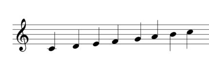
La octava desciende cuando disminuye el valor de n y sube cuando el valor de n aumenta. El valor inicial es 04.
El valor inicial es L4.
Para el semitono se utilizan # (0+) y -.La longitud del sonido se puede especificar con n. (C4 es igual que L4C). La longitud por omisión es la especificada por Ln.
Resultado de imagen de silencio de semifusa
Resultado de imagen de silencio de semifusa
Resultado de imagen de silencio de semifusa
Resultado de imagen de silencio de semifusa
Resultado de imagen de silencio de semifusa
Resultado de imagen de silencio de semifusa
PLAY "T80O3L4CDEFG2.RABO4CDC2."La instrucción anterior produce un sonido compuesto por las siguientes notas:
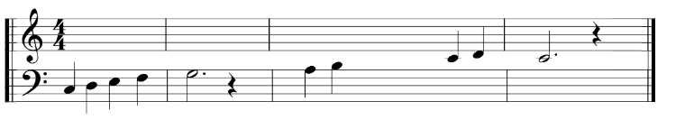
03 04
Expresión de un comando con una variable
M$ = "T80O3L4CDEFG2.RABO4CDC2."
PLAY M$Estas instrucciones asignan un comando a la variable de cadena M$, que después se especifica en la sentencia PLAY como comando.
Expresión de una parte de un comando con una variable (X variable;)
10 M$ = "CDEFG2.R"
20 PLAY "O4L4XM$; GAGAG2.R"
30 PLAY "XM$;ABO5CDC2."Cuando en una instrucción PLAY se utiliza un comando asignado a una variable de cadena encerrada entre comillas (" "), se debe añadir antes X y después ;. En el ejemplo anterior, el comando asignado a M$ se utiliza en dos instrucciones PLAY.
Expresión de un comando con una variable (=variable;)
El valor de n especificado en un comando puede ser una constante o una variable, incluidas como tal en una instrucción PLAY. Cuando se expresan como una variable, se debe añadir “=” antes y “,” después.
10 FOR I = 1 TO 8
20 PLAY "O = I; CEG"
30 NEXT IEste programa ejecuta una octava musical, desde PLAY “01CEG” hasta PLAY “08CEG”.
Generación de acordes
Se pueden ejecutar simultáneamente hasta 3 voces, por ejemplo, PLAY A$, B$, C$.
10 A$ = "O4CDO3BO4E2R4"
20 B$ = "O4EFDG2R4"
30 C$ = "O4GAGO5C2R4"
40 PLAY A$, B$, C$Este programa toca las notas siguientes:
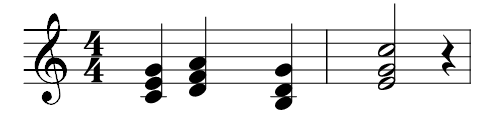
MSX, MSX2, MSX2+, MSXturboR, MSXVR
PLAY comando [,comando][,comando]| Comando | Cond. Constantes y variables de cadena. |
|---|
Comprueba si se está ejecutando música o no.
Con una instrucción PLAY se pueden ejecutar simultáneamente tres sonidos diferentes.
En el caso concreto de PLAY, A$, B$, C$; el sonido del comando A$ sale por el canal 1, el sonido del comando B$ sale por el canal 2 y el sonido del comando C$ sale por el canal 3.
La función PLAY comprueba si hay datos en el buffer (memoria intermedia) de los datos musicales del canal 1 cuando N = 1, del canal 2 cuando N = 2, y del canal 3 cuando N = 3. Cuando hay datos en la memoria intermedia devuelve un -1 y cuando no hay datos un 0. Cuando N = 0, devuelve -1 si uno cualquiera de los tres canales tiene datos en el buffer.
MSX, MSX2, MSX2+, MSXturboR, MSXVR
PLAY(N)| N | Cond. Constantes, variables, variables de matriz, sus expresiones (enteros); 0≤Nz<4. |
|---|
Tipo numérico.
Ofrece el código de color de un punto de una posición especificada.
MSX, MSX2, MSX2+, MSXturboR, MSXVR
POINT(X,Y)| X,Y | Cond. Constantes, variables, variables de matriz y sus expresiones (numéricas); -32768≤coordenadas<32768. |
|---|
10 SCREEN 3
20 FOR I = 1 TO 250
30 X = INT (RND(1)*255)
40 Y = INT (RND(1)*191)
50 PSET (X, Y), 1
60 NEXT I
70 FOR Y = 0 TO 191 STEP 4
80 FOR X = 0 TO 255 STEP 4
90 C = POINT (X, Y)
100 IF C = 4 THEN PSET (X, Y), 15
110 NEXT X, Y
120 GOTO 120La línea 90 asigna el código de color correspondiente a una posición (X, Y) a la variable C, y la línea 100 lo cambia a blanco si C es 4 (azul oscuro).
Escribe datos la dirección de memoria especificada.
MSX, MSX2, MSX2+, MSXturboR, MSXVR
POKE dirección, expresión| Dirección | Cond. Constantes, variables, variables de matriz, sus expresiones (numéricas); -32768≤dirección<65536. En caso de números negativos, su valor es el resultado de sumarlos a 65536. |
|---|---|
| Expresión | Cond. Constantes, variables, variables de matriz, sus expresiones (numéricas); 0≤expresión<256. |
| POKE 5000, 255 |
|---|
Escribe el dato 255 en la dirección de memoria 5000.
| POKE &HD000, &HA8 | Escribe el dato HA8 en la dirección de memoria HD000. |
|---|
Devuelve la coordenada X de la posición del cursor.
MSX, MSX2, MSX2+, MSXturboR, MSXVR
POS(X)| X | Cond. Constante, variable, variable de matriz o sus expresiones (numéricas) (argumento ficticio). |
|---|
Tipo entero.
10 INPUT A$
20 PRINT A$;:X = POS (X)
30 IF X>=5 THEN CLS
40 PRINT: GOTO 10La línea 20 X = POS (X), asigna el valor de la coordenada X de la posición del cursor a la variable X. En consecuencia, la pantalla se borra al asignar una cadena con cinco o más caracteres para A$.
Marca o borra un punto en la pantalla, en el modo gráfico.
Cuando se ejecuta omitiendo la especificación del color, marca un punto con el mismo color del fondo. En consecuencia, si hay algo dibujado en la posición especificada en un color distinto al color del fondo, da la impresión de que ha borrado un punto en esa posición.
Cuando se especifica un color, la función es idéntica que cuando se especifica un color con PSET.
Consulte el programa ejemplo de PSET.
Cuando se especifica STEP, pasa, X, Y a un nuevo sistema de coordenadas que tiene su origen en el punto especificado en último lugar en la instrucción gráfica inmediatamente anterior.
MSX, MSX2, MSX2+, MSXturboR, MSXVR
PRESET [STEP](coordenada X, coordenada Y) [,color] [operación lógica]| Coordenada X, Y | Cond. Constantes, variables, variables de matriz, sus expresiones (numéricas); -32768≤coordenada<32768. |
|---|---|
| Color | Cond. SCREEN 2 a 7: Constantes, variables, variables de matriz, sus expresiones (numéricas); 0≤color <16. Omit. Color actual del fondo. |
| Operación lógica | Cond. SCREEN 5 a 13: PSET, PRESET, XOR, OR, AND. Omit. PSET. |
Visualiza datos numéricos o alfanuméricos en la pantalla en modo texto.
Método de escritura de expresiones (datos)
Las constantes de tipo numérico, las variables numéricas y las variables de cadena se escriben tal como son. Las constantes de cadena se escriben encerradas entre comillas (" ").
Función del separador
Cuando los datos están separados por una coma, la función TAB de 14 dígitos inserta espacios entre los datos, y cuando están separados por un punto y coma, los datos se visualizarán uno al lado del otro.
Si al final de la instrucción no se escribe ningún separador, realiza un salto de línea tras la presentación de los datos. Si al final se ha puesto un separador, los datos de la siguiente instrucción PRINT continúan en la misma línea.
Signos y datos numéricos
Con respecto a los signos positivo (+) y negativo (-), omite el positivo (+) y presenta el negativo (-) donde esté (si se utiliza el separador punto y coma con datos numéricos, inserta dos espacios entre los datos para dejar sitio al signo).
Omisión del formato
Se obtiene el mismo resultado escribiendo el signo de interrogación (?) en vez de PRINT.
MSX, MSX2, MSX2+, MSXturboR, MSXVR
PRINT [expresión][separador][expresión][separador]...? [expresión][separador][expresión][separador]...| Expresión | Cond. Constantes, variables, variables de matriz, sus expresiones (numéricas o de cadena). |
|---|---|
| Separador | Cond. Coma (,) o punto y coma(;). |
10 A$ = "ABC" :B$ = "DEFF"
20 PRINT A$;B$
30 PRINT A$, B$
40 PRINT
50 PRINT "MSX"
60 PRINT +50, -50
70 ? "PERSONAL COMPUTER"
RUNABCDEF Resultado de la línea 20ABC DEF Resultado de la línea 30
Resultado de la línea 40
MSX Resultado de la línea 50
50 -50 Resultado de la línea 60
PERSONAL COMPUTER Resultado de la línea 70
Visualiza datos a la pantalla usando un formato especificado.
Presenta en pantalla el valor de una expresión en un formato especificado por un símbolo de formato.
Símbolos de formato para datos alfanuméricos
| Símbolo | Formato de la expresión y ejemplo de ejecución |
|---|---|
| “!” | Imprime el primer carácter: |
| “\ -\” n espacios | Imprime n + 2 caracteres. Cuando los datos sean menores a n+2 caracteres, inserta espacios para los caracteres residuales. |
| “&” | Imprime todas las cadenas de caracteres. |
PRINT USING "!"; "BASIC", "MSX"
BMPRINT USING "\ \"; "ABCDEF", "GHI", "JKLMN" ABCDGHI JKLM10 A$ = "Norte": B$ = "Sur"
20 PRINT USING "Polo & ";A$, B$
RUN
Polo Norte Polo SurSímbolos de formato para datos de tipo numérico
| Símbolo | Formato de la expresión y ejemplo de ejecución. |
|---|---|
| “#” | Escribe tantos dígitos como número de símbolos #. La coma decimal es “.” |
| “+” | Antes o después del dato numérico, muestra el signo “+” si se trata de un número positivo y el signo “-” si se trata de un número negativo. |
| “-” | Muestra el signo menos “-” a continuación de un dato numérico negativo. |
| “**” | Rellena con asteriscos los espacios anteriores al dato numérico. Cada asterisco usado en el formato también expresa un dígito. |
| “££” o “$$” | Añade el signo “£” justo antes del dato numérico. Cada £ usado en el formato también expresa un dígito. |
| “**£” o “**$” | Añade el signo “£” justo antes del dato numérico, y rellena los espacios anteriores con asteriscos “*”. |
| “,” | Cuando se especifica la coma en algún sitio anterior a la coma decimal (el punto), inserta comas cada tres dígitos, por delante de la coma decimal (el punto). |
| “^^^^” | Presenta datos numéricos con el formato de coma flotante. “^^^^” corresponde a los dígitos de la parte exponente. |
PRINT USING "POINT: ###.#"; 123.4
POINT: 123.4Cuando el número de dígitos enteros es menor que el número de símbolos # especificado, presenta los datos con justificación a la derecha, y si es mayor añade el símbolo % antes del dato.
10 PRINT USING "####"; 12
20 PRINT USING "####"; 12345
RUN
12
%12345Cuando el número de dígitos siguientes a la coma decimal de un dato numérico sea inferior al número de símbolos # especificados, añade un cero, y cuando es mayor, redondea el número al entero más cercano.
10 PRINT USING "##.##"; 25.3
20 PRINT USING "##.##"; 25.345
RUN
25.30
25.35Ignora el signo “+” de los datos numéricos y cuenta el signo “-” como un dígito.
10 PRINT USING "###"; +123
20 PRINT USING "###"; -123
RUN
123
%-123PRINT USING "###+"; 123, -123
+123 -123
123+ 123-PRINT USING "###-"; 123, -123
123 123-10 PRINT USING "**######"; 123
20 PRINT USING "**######";-234
RUN
*****123
****-23410 PRINT USING "££###"; 1234
20 PRINT USING "+££###"; -1234
RUN
£ 1234
-£ 1234PRINT USING "**£###.##"; 12.34
***£ 12.34PRINT USING "#,######.##"; 12345.6712,345.67PRINT USING "##.##^^^^"; 234.56
235E+02MSX, MSX2, MSX2+, MSXturboR, MSXVR
PRINT USING símbolo del formato;expresión[,expresión]| Expresión | Cond. Constantes, variables, variables de matriz, sus expresiones (numéricas y de cadena). |
|---|
Introduce datos en un fichero abierto por una instrucción OPEN.
MSX, MSX2, MSX2+, MSXturboR, MSXVR
PRINT # número de fichero, [expresión][separador][expresión][separador]...| Número de fichero | Cond. Constantes, variables, variables de matriz, sus expresiones (de tipo entero); 1≤número de fichero≤número especificado en la instrucción MAXFILES. |
|---|---|
| Expresión | Cond. Constantes, variables, variables de matriz, sus expresiones (numéricas y de cadena). |
| Separador | Cond. Coma (,) o punto y coma (;). |
| 10 OPEN “CAS:DATA” FOR OUTPUT AS #1 | Abre un fichero para escritura |
|---|---|
| 20 FOR I = 0 TO 4 | |
| 30 READ A$ | |
| 40 PRINT #1, A$;“,”; | Escribe datos en el fichero |
| 50 NEXT I | |
| 60 CLOSE #1 | |
| 70 DATA TOKIO, LONDRES, PARIS, PEKIN, NUEVA YORK |
Este programa escribe secuencialmente en una cinta casete los datos escritos en la línea 70, en un fichero de nombre “DATA”.
Escribe datos con un formato especificado en un fichero abierto por una instrucción OPEN.
Se puede especificar este formato para enviar datos a un fichero. Para información relativa a los símbolos de formato, véase PRINT USING.
MSX, MSX2, MSX2+, MSXturboR, MSXVR
PRINT # número de fichero USING símbolo de formato; expresión[,expresión]...| Número de fichero | Cond. Constantes, variables, variables de matriz, sus expresiones (enteras); 1≤número de fichero≤número especificado por instrucción MAXFILES. |
|---|---|
| Expresión | Cond. Constantes, variables, variables de matriz, sus expresiones (numéricas y de cadena). |
Marca un punto en la pantalla, en el modo de gráficos.
Cuando se especifica STEP, las coordenadas X, Y pasan a un nuevo sistema de coordenadas que tiene su origen en el punto especificado en último lugar en la instrucción gráfica inmediatamente anterior.
MSX, MSX2, MSX2+, MSXturboR, MSXVR
PSET [STEP](coordenada X, coordenada X) [,color],[operación lógica] |——————|—————————————————————————————————————————————————————————————————————————————————————-| | Color | Cond. SCREEN 2 a 7: Constantes, variables, variables de matriz, sus expresiones (numéricas); 0≤color<16. SCREEN 8 a 13: Constantes, variables, variables matriciales, sus expresiones (numéricas); 0≤color<256. Omit. Color actual del primer plano. | | Operación lógica | Cond. SCREEN 5 a 13: PSET, PRESET, XOR, OR, AND. Omit. PSET. |
10 SCREEN 2
20 FOR X = 0 TO 255
30 PSET (X+1, 100) Dibuja un punto
40 PRESET (X, 100) Borra el punto dibujado por la línea 30
50 NEXT X10 REM Puntos20 R=TIME30 RDRST=RND(-R)40 SCREEN 350 REM Puntos de colores aleatorios60 FOR I%=1 TO 30070 GOSUB 100080 PSET(X%,Y%),Z%90 NEXT I%100 REM Borrar los puntos110 RDRST=RND(-R)120 FOR J%=1 TO 300130 GOSUB 1000140 PRESET(X%,Y%)150 NEXT J%160 END999 REM Subrutina aleatoria1000 X%=RND(1)*2561010 Y%=RND(1)*1921020 Z%=RND(1)*161030 RETURNEste ejemplo dibuja y borra puntos en pantalla, pero esta vez, los puntos son de colores aleatorios y además hacemos uso del modo gráfico SCREEN.
80 SCREEN 290 COLOR 1,7,7100 CLS120 DIM A(12),B(12)130 FOR N=1 TO 12135 K=N/6*3.1415927#140 A(N)=128+80*SIN(K):B(N)=88+80*COS(K)150 PSET(A(N),B(N))160 NEXT N170 FOR N=1 TO 12180 FOR M=1 TO 12190 LINE(A(N),B(N))-(A(M),B(M))200 NEXT M210 NEXT N220 GOTO 220Un ejemplo dibujando una figura geométrica.Escribe el registro definido por la instrucción FIELD en un fichero de acceso aleatorio.
MSX, MSX2, MSX2+, MSXturboR, MSXVR
PUT [#] número de fichero [,número de registro]| Número de fichero | Cond. Constantes, variables, variables de matriz, sus expresiones (numéricas); 1≤número de fichero≤número especificado en la instrucción MAXFILES. |
|---|---|
| Número de registro | Cond. Constantes, variables, variables de matriz, sus expresiones (numéricas); 1≤número <65536. Omit. El número de registro utilizado en la instrucción GET o PUT ejecutada en último lugar más uno. |
10 OPEN "A: TEST.DAT" AS #1
20 FIELD #1, 2 AS CODE$, 15 AS NAM$, 10 AS TEL$
30 READ A%, B$, C$
40 LSET CODE$ = MKI$ (A%)
50 LSET NAM$ = B$
60 LSET TEL$ = C$
70 PUT #1, 1
80 CLOSE #1
90 DATA 100, JORGE, 211-71-71
100 ENDLa ejecución de la instrucción de la línea 70 graba en el fichero de acceso aleatorio, preparado por las instrucciones LSET/RSET, el registro número 1.
Visualiza un sprite en una posición arbitraria del plano de sprite especificado.
Cuando se especifica STEP, las coordenadas X, Y pasan a un nuevo sistema de coordenadas que tiene su origen en el punto especificado en último lugar en la instrucción gráfica inmediatamente anterior.
MSX, MSX2, MSX2+, MSXturboR, MSXVR
PUT SPRITE número de plano del sprite, [[STEP](coordenada X, coordenada Y)][,color][,número de sprite]| Número de plano de sprite | Cond. Constantes, variables, variables de matriz, sus expresiones (numéricas); 0≤número<32. |
|---|---|
| Coordenada X | Cond. Constantes, variables, variables de matriz, sus expresiones (numéricas); -32≤X <256. |
| Coordenada Y | Cond. Constantes, variables, variables de matriz, sus expresiones (numéricas); -32≤Y<212. |
| Color | Cond. Constantes, variables, variables de matriz, sus expresiones (numéricas); 0≤color<16. Omit. Color actual del primer plano. |
| Número de sprite | Cond. Para 8x8 puntos: Constantes, variables, variables de matriz, sus expresiones (numéricas); 0≤número <256. Para 16x16 puntos: Constantes, variables, variables de matriz, sus expresiones (numéricas); 0≤número <64. Omit. El mismo que el número de plano de sprite. |
10 SCREEN 2
20 SPRITE$ (1) = CHR$(&H18)+CHR$(&H3C)+CHR$(&H66)+CHR$(&HDB)+CHR$(&HE7)+CHR$(&H7E)+CHR$(&H24)+CHR$(&H42)
30 X = 0: Y = 0: DX = 1: DY = 1
40 PUT SPRITE 0, (X, Y),, 1
50 X = X+DX: Y= Y+DY
60 IF X>250 OR X<0 THEN DX = -DX
70 IF Y>190 OR Y<0 THEN DY = -DY
80 GOTO 40La línea 20 define un sprite en forma de OVNI, asignado al sprite número 1. La instrucción 40, PUT SPRITE, presenta este sprite en pantalla; el número del plano de sprite es el 0. Como se ha omitido el color, es el mismo que el color de primer plano seleccionado anteriormente. El OVNI da la impresión de volar por la pantalla debido al cambio de los valores de las coordenadas X, Y, que especifican su posición.
10 SCREEN 2,220 FOR I=1 TO 3230 READ B%40 S$=S$+CHR$(B%)50 NEXT I60 SPRITE$(0)=S$70 PUT SPRITE 0,(100,100),15,080 GOTO 8090 DATA 31,63,96,199,200,104,100,51100 DATA 52,27,24,12,12,6,3,1110 DATA 248,252,6,227,19,22,38,204120 DATA 44,216,24,48,48,96,192,128Dibujamos en pantalla un sprite y lo mostramos.10 SCREEN 2,020 SPRITE$(0)=STRING$(8,CHR$(255))30 FOR X=200 TO -200 STEP -140 PUT SPRITE 0,(X,100),1,050 FOR D=1 TO 50:NEXT60 NEXT70 ENDUsamos el carácter 255 (cursor) como sprite y lo desplazamos de derecha a izquierda.10 SCREEN 220 FOR I=1 TO 830 READ A$40 S$=S$+CHR$(VAL("&B"+A$))50 NEXT I60 SPRITE$(0)=S$70 PUT SPRITE 0,(100,100),15,080 GOTO 8090 REM BINARY DATA100 DATA 00010000110 DATA 00110000120 DATA 01110000130 DATA 11111111140 DATA 11111111150 DATA 01110000160 DATA 00110000170 DATA 00010000Otro modo de crear un sprite usando DATA con valores binarios.
10 SCREEN 2,020 SPRITE$(0)=CHR$(16)+CHR$(48)+CHR$(112)+CHR$(255)+CHR$(255)+CHR$(112)+CHR$(48)+CHR$(16)30 SPRITE$(1)=CHR$(224)+CHR$(192)+CHR$(128)+CHR$(0)+CHR$(0)+CHR$(128)+CHR$(192)+CHR$(224)40 PUT SPRITE 0,(20,20),15,050 PUT SPRITE 1,(40,40),10,160 PUT SPRITE 2,(60,60),15,070 PUT SPRITE 3,(60,60),10,180 GOTO 80Mezclando sprites.05 REM The Fifth Sprite Rule10 SCREEN 2,020 SPRITE$(0)=STRING$(8,CHR$(255))30 PUT SPRITE 0,(20,100),15,040 PUT SPRITE 1,(40,100),15,050 PUT SPRITE 2,(60,100),15,060 PUT SPRITE 3,(80,100),15,070 PUT SPRITE 4,(100,100),15,080 GOTO 80La regla del quinto sprite. Que se pinta, pero no se ve.05 REM How To Animate your Sprites10 SCREEN 2,120 SPRITE$(0)=CHR$(60)+CHR$(126)+CHR$(129)+CHR$(219)+CHR$(126)+CHR$(36)+CHR$(36)+CHR$(36)30 SPRITE$(1)=CHR$(60)+CHR$(126)+CHR$(129)+CHR$(219)+CHR$(126)+CHR$(36)+CHR$(60)+CHR$(129) 40 PUT SPRITE 0,(100,100),11,050 FOR I=1 TO 500:NEXT60 PUT SPRITE 0,(100,100),11,170 FOR I=1 TO 500:NEXT80 GOTO 40Un ejempo de animación de un sprite con dos frames (fotogramas).05 REM Two planets orbiting a Sun10 SCREEN 2,020 COLOR 15,1,130 CLS40 SPRITE$(0)=CHR$(126)+STRING$(6,CHR$(255))+CHR$(126)50 SPRITE$(1)=STRING$(3,CHR$(0))+CHR$(24)+CHR$(24)+STRING$(3,CHR$(0))60 FOR I=0 TO 6.28 STEP 0.270 X=X+1.580 Y=Y+190 X1=30*COS(I)100 Y1=30*SIN(I)110 X2=15*COS(I)120 Y2=15*SIN(I)130 PUT SPRITE 0,(X,Y),11,0140 PUT SPRITE 1,(X1+X,Y1+Y),9,1150 PUT SPRITE 2,(X2+X,Y2+Y),15,1160 NEXT170 GOTO 60Una pequeña animación de tres sprites simulando un sol y dos planetas orbitando.10 COLOR 15,4,720 SCREEN 1,030 CLS:KEY OFF40 FOR L=0 TO 450 FOR I=1 TO 860 READ D$(L)70 S$(L)=S$(L)+CHR$(VAL("&B"+D$(L)))80 NEXT I90 SPRITE$(L)=S$(L)100 NEXT L110 PUT SPRITE 0,(120,90),15,0120 FOR I=0 TO L-1130 PUT SPRITE 0,STEP(2,0),15,I140 FOR T=1 TO 20:NEXT150 NEXT I:GOTO 120160 DATA 00001000170 DATA 00001000180 DATA 00011100190 DATA 00101000200 DATA 00001100210 DATA 00001010220 DATA 00010010230 DATA 00010000240 REM250 REM260 DATA 00001000270 DATA 00001000280 DATA 00011100290 DATA 00001010300 DATA 00001000310 DATA 00010100320 DATA 00010010330 DATA 00000010340 REM350 REM360 DATA 00001000370 DATA 00001000380 DATA 00011110390 DATA 00001000400 DATA 00001000410 DATA 00110100420 DATA 00000100430 DATA 00000100440 REM450 REM 460 DATA 00001000470 DATA 00001000480 DATA 00001100490 DATA 00001010500 DATA 00000100510 DATA 00000100520 DATA 00000100530 DATA 00001000540 REM550 REM560 DATA 00001000570 DATA 00001000580 DATA 00001100590 DATA 00001000600 DATA 00010100610 DATA 00000100620 DATA 00001000630 DATA 00010000En este ejemplo, tenemos un sprite en movimiento usando cinco frames y en SCREEN 1.EjemploCodeDescriptionLee los datos especificados por una instrucción DATA.
Lee los datos secuencialmente, empezando por el primer dato de la instrucción DATA de número de línea más bajo del programa, y los asigna secuencialmente a variables de la instrucción READ.
Cuando en una instrucción READ hay más de una variable numérica o de cadena, van separadas por comas.
El tipo de variable debe coincidir con el dato correspondiente.
10 READ A, B, C, D$, E$
20 PRINT A, B, C, D$, E$
100 DATA 5, 10, 20, ABC, XYZCuando en un programa hay varias instrucciones READ, la segunda instrucción READ comienza a leer el dato siguiente al último dato leído por la anterior instrucción READ.
La ejecución de una instrucción RESTORE hace que la lectura de la instrucción READ ejecutada a continuación vaya a la instrucción DATA de número más pequeño después del número de línea especificado por la instrucción RESTORE.
MSX, MSX2, MSX2+, MSXturboR, MSXVR
READ variable[,variable][,variable]| Variable | Cond. Numérica o de cadena. |
|---|
10 READ A, B, C
20 READ D$, E$
30 PRINT A; B; C; D$; E$
100 DATA 10, 20, 30, ABC, DEF
RUN
10 20 30 ABCDEFInserta un comentario en un programa.
La instrucción REM sirve para insertar un comentario con vistas a facilitar la lectura del listado del programa.
MSX, MSX2, MSX2+, MSXturboR, MSXVR
REM comentario|—————————————————–|————————————————————————————————————-| | 10 ’ MUSIC | En vez de escribir REM, se puede poner apóstrofe (‘) | | 20 PLAY “T60CEGEC1” | | | 10 PRINT “MSX” : REM Output | Es obligatorio escribir los dos puntos (:) cuando se utiliza una sentencia REM junto con otra instrucción. | | 20 PRINT “HI” :’ Output | |
RUN
MSX
HIRenumera las líneas de un programa.
Sirve para volver a numerar las líneas tras una corrección del programa.
La instrucción RENUM renumera correctamente los números de línea a los que se salta o a los que se hace referencia en las instrucciones RETURN, RESUME, RESTORE, GOTO y GOSUB. De todas formas, si el número de línea especificado al que se hace referencia con alguna de estas instrucciones no existe en el momento de la ejecución de la instrucción RENUM, no cambia ese número de línea y por lo tanto se producirá un error.
MSX, MSX2, MSX2+, MSXturboR, MSXVR
RENUM [nuevo número de línea inicial ][,antiguo número de línea inicial][,incremento]| Nuevo número de línea inicial | Cond. Constantes enteras, 0≤número≤65539. Omit. 10. |
|---|---|
| Antiguo número de línea inicial | Cond. Constantes enteras, 0≤número≤65529. Omit. Número de línea más bajo antes de la ejecución. |
| Incremento | Cond. Constantes enteras, 0≤número≤65529. Omit. 10. |
| RENUM | Renumera todas las líneas a partir de la 10 con un incremento de 10. |
|---|---|
| RENUM 100,,100 | Renumera todas las líneas que comienzan a partir de 100 con incrementos de 100. |
| RENUM 100 | Renumera todas las líneas con números que empiezan por el 100, con incrementos de 10. |
| RENUM 100, 38, 20 | Renumera la línea 38 y siguientes con números de línea que comienzan por el 100, con incrementos de 20. |
Especifica la instrucción DATA que será leída por una instrucción READ.
La instrucción RESTORE sirve para leer varias veces los mismos datos.
La ejecución de la instrucción RESTORE hace que la siguiente instrucción READ empiece a leer datos a partir de la instrucción DATA con el número de línea más bajo siguiente al número de línea especificado en la instrucción RESTORE.
MSX, MSX2, MSX2+, MSXturboR, MSXVR
RESTORE [número de línea]| Número de línea | Cond. Constantes enteras, 0≤número≤65529. Omit. Instrucción DATA con el número de línea más bajo. |
|---|
10 READ A, B, C
20 READ D, E, F
30 RESTORE 110
40 READ G, H, I
50 PRINT A; B; C; D; E; F; G; H; I;
100 DATA 10, 20, 30
110 DATA 40, 50, 60
RUN
10 20 30 40 50 60 40 50 60Devuelve la ejecución al programa principal tras la ejecución de una rutina de proceso de errores.
MSX, MSX2, MSX2+, MSXturboR, MSXVR
RESUME { 0 | número de línea | NEXT }| Número de línea | Cond. Constantes enteras, 0≤número≤65529. Omit. Línea donde haya ocurrido el error. |
|---|
| RESUME 0 or RESUME |
|---|
Devuelve la ejecución a la sentencia donde se haya producido el error.
| RESUME 100 | Devuelve la ejecución a la línea 100. |
|---|
(Ver el programa ejemplo de ON ERROR GOTO).
Ofrece un número determinado de caracteres, en forma de datos alfanuméricos, tomados a partir del extremo derecho de una cadena de caracteres.
MSX, MSX2, MSX2+, MSXturboR, MSXVR
RIGHT$ (X$, N)| X$ | Cond. Constantes, variables, variables de matriz, sus expresiones (de cadena). |
|---|---|
| N | Cond. Constantes, variables, variables de matriz, sus expresiones (numéricas); 0≤N<256. |
Tipo cadena.
|———————————|
|————————————-|——————————————————————————–|—| | PRINT RIGHT$ (“HIT-BIT”, 0) | Cuando N es 0 da una cadena nula. | | | Ok | | |
Ofrece un número aleatorio positivo menor que 1 (incluyendo el 0).
Este comando admite un parámetro X que admitirá valores enteros. Según este valor, tendremos las siguientes funcionalidades:
Cuando X es negativo
Usará X como semilla de generación de números aleatorios. Esto quiere decir que, a partir de una semilla, se genera siempre la misma secuencia de números aleatorios, y esta secuencia será distinta para diferentes semillas.
Cuando X es mayor que 0
Genera siempre números aleatorios en la misma secuencia utilizando la semilla de generación que haya establecida.
Cuando X es 0
Se obtendrá el mismo valor que el generado anteriormente.
MSX, MSX2, MSX2+, MSXturboR, MSXVR
RND(X)| X | Cond. Constantes, variables, variables de matriz, sus expresiones (numéricas). |
|---|
Tipo numérico.
10 PRINT RND (1)
20 PRINT RND (0)
30 PRINT RND (-1)
40 PRINT RND (0)
RUN
.59521943994623
.59521943994623
.04389820420821
.04389820420821Escribe datos en un registro de un fichero de acceso aleatorio alineándolos a la derecha.
Pone los datos de cada variable en el registro especificado por la instrucción FIELD como preparación para la escritura de datos en un fichero de acceso aleatorio mediante una instrucción PUT. La instrucción RSET alinea los datos en el lado derecho del registro; si el dato es más corto que la longitud de la variable especificada, rellena con espacios en blanco los sitios vacíos; si el dato es más largo que el espacio especificado, ignorará la parte derecha del dato de cadena.
Al organizar los datos numéricos, pasa primero los datos a cadenas mediante las funciones MKI$, MKS$ y MKD$.
MSX, MSX2, MSX2+, MSXturboR, MSXVR
RSET variable de cadena = expresión de cadena| Variable de cadena | Cond. Variable de cadena. |
|---|---|
| Expresión de cadena | Cond. Constantes, variables, variables de matriz, sus expresiones (de cadena). |
| RSET A$ = X$ | Pone el dato de cadena X$ en la variable A$ del registro. |
|---|---|
| RSET B$ = MKS$(N) | Pasa el dato numérico N a cadena asignándolo a la variable B$ del registro. |
Ejecuta un programa a partir de una línea especificada. La instrucción RUN pone todos los valores numéricos a 0, las variables alfanuméricas a cadena nula y las variables de matriz en una condición indefinida; luego ejecuta el programa.
Carga un fichero de disco o de la RAM-Disk y lo ejecuta. La ejecución de la instrucción RUN pone a 0 a todos los valores numéricos, a cadena nula las variables alfanuméricas, y en una condición indefinida las variables de matriz, y cierra todos los ficheros. Luego carga del disco especificado el programa especificado, y lo ejecuta.
En ambos casos, tras completar la ejecución del programa, entra en el estado de espera de comandos.
Es posible pulsar la tecla STOP para detener temporalmente la ejecución del programa. La ejecución se reanuda pulsando STOP otra vez.
También se puede CTRL+STOP para interrumpir el programa. El programa se puede reanudar introduciendo la orden CONT.
MSX, MSX2, MSX2+, MSXturboR, MSXVR
1. RUN [número de línea]
2. RUN "[nombre de unidad]nombre de fichero[.extensión]"[,R]| Número de línea | Cond. Constantes de tipo entero, 0≤número≤65529. |
|---|---|
| Nombre de unidad | Cond. CRT:, GRP:, LPT: Cond. CAS: Cond. A:, B:, C:, D:, E:, F:, G:, H:, Cond. <unidad>: en el MSXVR. Cond. MEM: Omit. Unidad de disco actual. |
| Nombre de fichero | Cond. Una cadena de 6 caracteres o menos. Una cadena de 8 caracteres o menos. Omit. Una cadena nula (no se puede omitir el nombre de fichero cuando se trabaja con discos flexibles o con RAM-Disk). |
| Extensión | Cond. Una cadena de 3 o menos caracteres. Omit. Una cadena nula. |
| Opción R | Omit. Cierra todos los ficheros de datos. |
Almacena un programa VR-BASIC en el dispositivo especificado.
Cuando se especifica CAS: como nombre de dispositivo, almacena el programa VR-BASIC de memoria en la cinta casete en formato ASCII.
Cuando se especifica una unidad de discos (por ejemplo A:, o B:), almacena el programa en el formato ASCII cuando se especifica la opción A, y en formato binario cuando se omite la opción A.
La instrucción CSAVE sirve para almacenar un programa en cinta de casete en formato binario.
MSX, MSX2, MSX2+, MSXturboR, MSXVR
SAVE "[nombre de unidad][nombre de fichero[.extensión]]" [,A]| Nombre de unidad | Cond. CRT:, GRP:, LPT: Cond. CAS: Cond. A:, B:, C:, D:, E:, F:, G:, H:, Cond. <unidad>: en el MSXVR. Cond. MEM: Omit. Unidad de disco actual. |
|---|---|
| Nombre de fichero | Cond. Una cadena de 6 caracteres o menos. Una cadena de 8 caracteres o menos. Omit. Una cadena nula (no se puede omitir el nombre de fichero cuando se trabaja con discos flexibles o con RAM-Disk). |
| Extensión | Cond. Una cadena de 3 o menos caracteres. Omit. Una cadena nula. |
| Opción A | Omit. Almacena el programa en formato binario. |
SAVE "CAS:PROG2"
SAVE "PROG2", AEl programa a fusionar con un programa en memoria mediante la instrucción MERGE, se debe almacenar en formato ASCII. Los programas se almacenan en la RAM-Disk en formato ASCII.
Establece el modo de visualización de pantalla, el tamaño de los sprites, la activación o no del sonido de las teclas, la velocidad de transmisión del casete (en baudios), el modo de entrelazado, y el tipo de impresora.
Modos
| Valor | Modo | Compatible |
|---|---|---|
| 0* | Modo texto; 40 caracteres x 24 líneas u 80 caracteres | 1,2,2+,TR,VR |
| 1 | Modo texto; 32 caracteres x 24 líneas | 1,2,2+,TR,VR |
| 2 | Modo patrón 256 x 192 - 16 colores | 1,2,2+,TR,VR |
| 3 | Modo multicolor; 64 x 48 - 16 colores | 1,2,2+,TR,VR |
| 4 | Modo patrón 256 x 192 + color sprites | 2,2+,TR,VR |
| 5 | Modo bitmap 256x212 - 16 de 512 colores | 2,2+,TR,VR |
| 6 | Modo bitmap 512x212 - 4 de 512 colores | 2,2+,TR,VR |
| 7 | Modo bitmap 512x212 - 16 de 512 colores | 2,2+,TR,VR |
| 8 | Modo bitmap 256x212 - 256 colores | 2,2+,TR,VR |
| 9 | Reservado | |
| 10 | Modo bitmap 256x212 - 16 de 512 colores + 12499 YAE | 2+,TR,VR |
| 11 | Modo bitmap 256x212 - 16 de 512 colores + 12499 YAE | 2+,TR,VR |
| 12 | Modo bitmap 256x212 - 19268 YJK | 2+,TR,VR |
| 13 | Modo bitmap 256x212 - 256 de 16.7M colores | VR |
* Si la anchura especificada en la instrucción WIDTH es 40 caracteres o menos, se selecciona el modo texto de 40 caracteres x 24 líneas, y si la anchura es 41 caracteres o más selecciona el modo texto de 80 caracteres x 24 líneas.
Tamaño del sprite
| Valor especificado | Tamaño |
|---|---|
| 0 | 8 x 8 puntos |
| 1 | 8 x 8 puntos ampliado |
| 2 | 16 x 16 puntos |
| 3 | 16 x 16 puntos ampliado |
Interruptor del sonido de las teclas
| Valor especificado | Clic |
|---|---|
| 0 | NO |
| Distinto de 0 (entre 1 y 255) | SI |
Velocidad de transmisión (baudios)
| Valor especificado | Velocidad (baudios)* |
|---|---|
| 1 | 1200 baudios |
| 2 | 2400 baudios |
* Velocidad en baudios del interfaz de casete.
Tipo de impresora
| Valor especificado | Impresora |
|---|---|
| 0 | Impresora MSX* |
| Distinto de 0 (entre 1 y 255) | Impresora no MSX** |
* Impresora con caracteres gráficos compatible con ordenadores MSX.
** Las impresoras no-MSX convierten los caracteres gráficos en espacios en blanco.
Modo de entrelazado
| Valor especificado | Entrelazado |
|---|---|
| 0 | Normal |
| 1 | Entrelazado |
| 2* | Par/impar |
| 3* | Par/impar, entrelazado |
* La página de visualización debe ser una página de número impar. Presenta alternativamente la página de visualización y la página de número inmediatamente inferior a la página de visualización.
Valores iniciales y especificaciones por omisión
En caso de omisión de una especificación, no cambia el modo actual, pero si se omiten todas las especificaciones, no se ejecutará la instrucción SCREEN.
Los valores iniciales (en la puesta en marcha del VR-BASIC) se pueden cambiar con una instrucción SET SCREEN. En cualquier caso, los valores iniciales seleccionados en fábrica son:
Modo: modo texto de 40 caracteres x 24 líneas (WIDTH 37).
Tamaño del sprite: 8 x 8 puntos.
Interruptor de sonido de las teclas: Sí.
Velocidad de transmisión en baudios: 1200 baudios.
Tipo de impresora: Impresora MSX.
Modo de entrelazado: Normal.
MSX, MSX2, MSX2+, MSXturboR, MSXVR
SCREEN [modo][,tamaño del sprite][,interruptor de chasquido de teclas][,velocidad de transmisión en baudios][,tipo de impresora][,modo de entrelazado]| Modo | Cond. Constantes, variables, variables de matriz, sus expresiones (numéricas); 0≤modo≤13. Omit. Modo actual. |
|---|---|
| Tamaño del sprite | Cond. Constantes, variables, variables de matriz, sus expresiones (numéricas); 0≤tamaño<4. Omit. Tamaño actual. |
| Interruptor de chasquido de teclas | Cond. Constantes, variables, variables de matriz, sus expresiones (numéricas); 0≤interruptor<256. Omit. Estado actual. |
| Velocidad en baudios | Cond. Constantes, variables, variables de matriz, sus expresiones (numéricas); 0≤velocidad<3. Omit. Velocidad actual. |
| Tipo de impresora | Cond. Constantes, variables, variables de matriz, sus expresiones (numéricas); 0≤tipo<256. Omit. Tipo de impresora actual. |
| Modo de entrelazado | Cond. Constantes, variables, variables de matriz, sus expresiones (numéricas); 0≤modo<4. Omit. Modo actual. |
| 10 SCREEN 0,, 1 |
|---|
Modo texto de 40 caracteres x 24 líneas, teclas con el sonido activado.
| 10 SCREEN ,,, 2 | Especificación de la velocidad de 2400 baudios. | |
|---|---|---|
| 10 SCREEN 2, 3 | Modo alta resolución; el sprite es de 16x16 puntos ampliados. | |
| 10 SCREEN 2 | ||
| 20 FOR I = 0 TO 255 | ||
| 30 PSET (I, 100) | ||
| 40 NEXT I | ||
| 50 GOTO 50 |
Al final de un programa la pantalla vuelve al modo texto (SCREEN 0 o 1). Para seguir en el modo gráfico hay que añadir al final del programa una instrucción que mantenga el ordenador en este estado, como es el caso de la línea 50 del programa anterior. Esta línea mantiene el programa en ejecución; para poner término a la ejecución, se debe pulsar CRTL+STOP.
Un ejemplo de cómo mostrar texto en distintos modos gráficos:
10 FOR M=0 TO 320 SCREEN M30 IF M<2 THEN OPEN "CRT:" AS #1 ELSE OPEN "GRP:" AS #140 PRINT#1,"THIS IS MODE ";M50 IF NOT STRIG(0) THEN 5060 CLOSE#170 NEXT MAjusta la posición de la imagen en la pantalla.
Los valores positivos producen el desplazamiento correspondiente de la coordenada X hacia la derecha y de la coordenada Y hacia abajo, cambiando la posición de la imagen la pantalla. Los valores por omisión son 0 para las dos coordenadas.
MSX2, MSX2+, MSXturboR, MSXVR
SET ADJUST (coordenada X, coordenada Y)| Coordenada X, coordenada Y | Cond. Constantes, variables, variables de matriz, sus expresiones (numéricas), -8≤coordenada<9. |
|---|
SET ADJUST (8, 8)SET ADJUST (0, 0)Selecciona el tipo de pitido.
Hay cuatro sonidos diferentes disponibles.
Especificando el volumen 1 se selecciona el nivel de volumen más bajo, y especificando el volumen 4 se selecciona el nivel de volumen más alto.
MSX2, MSX2+, MSXturboR, MSXVR
SET BEEP [sonido],volumen| Sonido | Cond. Constantes, variables, variables de matriz, sus expresiones (numéricas), 1≤sonido<5. Omit. 1. |
|---|---|
| Volumen | Cond. Constantes, variables, variables de matriz, sus expresiones (numéricas), 1≤volumen<5. |
Ajusta la fecha en el reloj interno.
El formato es DD/MM/AA; DD es el número correspondiente al día, MM el número correspondiente al mes, y AA el número correspondiente al año.
Cuando se especifica A se puede programar la alarma.
Cuando se ejecuta SET TIME X$, A, se borrará la fecha seleccionada para la alarma. Para ajustar la fecha y la hora de la alarma, se debe ejecutar en primer lugar SET TIME y después SET DATE.
MSX2, MSX2+, MSXturboR, MSXVR
SET DATE "T$" [,A]| T$ | Cond. Constantes, variables, variables de matriz, sus expresiones (de cadena). |
|---|---|
| A | Omit. Fecha actual. |
10 T$ = "15/05/17"
20 SET DATE T$
30 PRINT T$Selecciona la página de escritura de datos y la página de presentación en pantalla cuando se opera con múltiples páginas de RAM de vídeo.
Válida únicamente para SCREEN 5 hasta SCREEN 13.
La página donde se escriben los datos recibe el nombre de página activa y la página que en un determinado momento se muestra en pantalla recibe el nombre de página de visualización.
| Número de páginas disponibles según modo de pantalla y cantidad de VRAM | |||
|---|---|---|---|
| SCREEN | 64 KB | 128KB | 512KB |
| 5 | 0-1 | 0-3 | 0-15 |
| 6 | 0-1 | 0-3 | 0-15 |
| 7 | No disponible | 0-1 | 0-7 |
| 8 | No disponible | 0-1 | 0-7 |
| 10 | No disponible | 0-1 | 0-7 |
| 11 | No disponible | 0-1 | 0-7 |
| 12 | No disponible | 0-1 | 0-7 |
| 13 | No disponible | 0-1 | 0-7 |
MSX2, MSX2+, MSXturboR, MSXVR
SET PAGE [página de visualización],[página activa]| Página de visualización, página activa | Cond. Constantes, variables, variables de matriz, sus expresiones (numéricas); 0≤página<4 (con <= 128Kb VRAM). Este número podrá ser mayor en caso de disponer de más VRAM y un MSXVR. |
|---|
100 SCREEN 5
110 SET PAGE 0, 1 :CLS
120 LINE (70, 50)- (170, 150),, BF
130 SET PAGE 0, 0
140 LINE (60, 60)-(180, 140),, BF
150 DP = 0 : AP = 1
160 SET PAGE DP, AP: SWAP DP, AP
170 FOR I = 0 TO 100 : NEXT I
180 GOTO 160Selecciona la contraseña del sistema.
Si hay una contraseña seleccionada, el ordenador pedirá la introducción de esa contraseña al ser conectado. Si se introduce correctamente, el sistema funcionará con normalidad, pero si se introduce erróneamente, el sistema no pasará de ese punto y seguirá solicitando la introducción de la contraseña correcta. La selección de una contraseña impide que extraños pongan en marcha el sistema.
En caso de olvido de la contraseña, cabe la posibilidad de poner en marcha el sistema manteniendo pulsadas las teclas GRAPH y STOP mientras se pulsa el botón RESET.
MSX2, MSX2+, MSXturboR, MSXVR
SET PASSWORD "contraseña"| Contraseña | Cond. Una cadena de hasta 255 caracteres. |
|---|
Especifica el mensaje (prompt) que se visualizará en pantalla cuando el VR-BASIC entre en el estado de espera de comandos.
MSX2+, MSXturboR, MSXVR
SET PROMPT "mensaje"| Mensaje | Cond. Una cadena de 32 caracteres o menos. |
|---|
Registra los valores actuales seleccionados por las instrucciones SCREEN, COLOR, WIDTH y KEY ON/OFF como valores iniciales de puesta en marcha.
Los valores que pueden seleccionarse para la inicialización son:
| Screen (modo texto) | 0 / 1 |
|---|---|
| Anchura de la imagen (modo texto) | 1 a 80 |
| Color del primer plano | 1 a 15 |
| Color del fondo | 1 a 15 |
| Color del borde | 1 a 15 |
| Conmutador de las teclas de función | Encendido / Apagado |
| Sonido de las teclas | Encendido / Apagado |
| Impresora | MSX o no-MSX |
| Velocidad de transmisión (en baudios) | 1200 o 2400 |
| Modo de entrelazado | 0 a 3 |
MSX2, MSX2+, MSXturboR, MSXVR
SET SCREENAplicar un desplazamiento horizontal y/o vertical sobre el contenido de la pantalla tanto en modos de texto como gráfico. La actualización de los registros de desplazamiento no se aplica hasta que la pantalla se ha refrescado por completo.
El modo máscara permite indicar que ocurre con los pixeles de la parte izquierda de la pantalla. Si este parámetro vale 0, los pixeles se muestran y en caso de ser 1 se ocultan. En los modos de pantalla 5, 8, 10, 11, 12 y 13 son 8 pixeles, y en los modos 6 y 7 son 16 pixeles.
El modo página especifica si se quiere usar una sola página o dos de forma secuencial para los modos de pantalla 5, 6, 7, 8, 10, 11, 12 y 13.
MSX2+, MSXturboR, MSXVR
SET SCROLL [X], [Y], [Modo Máscara], Modo Página| X | Cond. Constantes, variables, variables de matriz, sus expresiones (numéricas); 0≤X<511. Omit. El último valor especificado. Inicialmente es 0. |
|---|---|
| Y | Cond. Constantes, variables, variables de matriz, sus expresiones (numéricas); 0≤X<255. Omit. El último valor especificado. Inicialmente es 0. |
| Modo Máscara | Cond. Constantes, variables, variables de matriz, sus expresiones (numéricas); 0≤Modo<1. |
| Modo Página | Cond. Constantes, variables, variables de matriz, sus expresiones (numéricas); 0≤Modo<1. |
10 SCREEN 8:COLOR 15,1,1
20 CLS
30 Y=0:ANGLE=0:RAD=128
40 LINE (10,10)-(100,100),8,BF
50 SET SCROLL 0,Y,0,0
60 Y=RAD+SIN(ANGLE)*RAD
70 ANGLE=ANGLE+0.2
80 IF RAD>0 THEN RAD=RAD-1
90 GOTO 50Pone el reloj en hora.
El formato es HH:MM:SS; donde HH es la hora, MM los minutos y SS los segundos.
Cuando se especifica A, se puede programar la alarma.
Cuando se ejecuta SET TIME X$ se borra la fecha de la alarma. Para poner la fecha y la hora de activación de la alarma, se debe ejecutar en primer lugar SET TIME y luego SET DATE.
MSX2, MSX2+, MSXturboR, MSXVR
SET TIME "X$" [,A]| X$ | Cond. Constantes, variables, variables de matriz, sus expresiones (de cadena). |
|---|---|
| A | Omit. Hora actual. |
10 X$ = "11:00:00"
20 SET TIME X$
30 PRINT X$Selecciona el título a presentar en pantalla cuando se pone en marcha el ordenador. También podemos establecer el color del mismo.
MSX2, MSX2+, MSXturboR, MSXVR
SET TITLE ["título"],[color]| Título | Cond. Una cadena de 256 o menos caracteres. Omit. La cadena de caracteres actual. |
|---|---|
| Color | Cond. Constantes, variables, variables de matriz, sus expresiones (numéricas); 0≤color <15. Omit. El color actual. |
SET TITLE "Es el ordenador de Juan"Especifica los modos de trabajo relativos a superposición de imágenes de vídeo, mezcla de sonidos, etc. NOTA: Para poder usar este comando, el sistema debe disponer de un mecanismo de adquisición de vídeo y audio externos.
Modo
| Modo | S1 | S0 | TP | Sinc | Función |
|---|---|---|---|---|---|
| 0 | 0 | 0 | 0 | Interno | Ordenador |
| 1 | 0 | 1 | 1 | Externo | Ordenador |
| 2 | 0 | 1 | 0 | Externo | Sobreimpresión |
| 3 | 1 | 0 | 0 | Externo | TV |
No se puede seleccionar el sinc externo en el modo 0.
En los modos 1-3 no se puede utilizar la salida compuesta del VDP, pero sí se puede utilizar la salida RGB analógica.
YM: 0: Brillo normal
1: Reducción del brillo de la TV a la mitad.
CB: 0: Bus de color del VDP en estado de salida.
1: Bus de color del VDP en estado de entrada.
Sinc: 0: Sinc interno.
1: Sinc externo.
Sonido
| Sonido | Función |
|---|---|
| 0 | Señal de sonido externa no mezclada |
| 1 | Señal de sonido externa del canal derecho mezclada |
| 2 | Señal de sonido externa del canal izquierdo mezclada |
| 3 | Señal de sonido externa de ambos canales mezclada |
Entrada de vídeo
0: Selecciona la entrada del multiconector de RGB.
1: Selecciona la entrada del conector de entrada de vídeo.
Control/Audio/Vídeo
Especifica la salida de señal de control del terminal de control AV del multiconector de RGB. Esta señal controla el circuito interno de la TV conectada al multiconector de RGB y sirve para superponer la imagen del ordenador sobre una imagen de vídeo.
0: Selecciona la señal TV como vídeo de fondo.
1: Selecciona una señal de vídeo externa, suministrada desde el ordenador, como vídeo de fondo.
MSX2, MSX2+, MSXturboR, MSXVR
SET VIDEO [modo],[brillo],[colorbus],[sinc],[sonido],[entrada de vídeo],control AV| Modo | Cond. Constantes, variables, variables de matriz, sus expresiones (numéricas), 0≤modo<4. Omit. 0. |
|---|---|
| Brillo | Cond. Constantes, variables, variables de matriz, sus expresiones (numéricas), 0≤brillo<2. Omit. 0. |
| Colorbus | Cond. Constantes, variables, variables de matriz, sus expresiones (numéricas), 0≤colorbus<2. Omit. 0. |
| Sinc | Cond. Constantes, variables, variables de matriz, sus expresiones (numéricas), 0≤sinc<2. Omit. 0. |
| Sonido | Cond. Constantes, variables, variables de matriz, sus expresiones (numéricas), 0≤sonido<4. Omit. 0. |
| Entrada de vídeo | Cond. Constantes, variables, variables de matriz, sus expresiones (numéricas), 0≤entrada<2. Omit. 0. |
| Control AV | Cond. Constantes, variables, variables de matriz, sus expresiones (numéricas), 0≤control<2. Omit. 1. |
Devuelve un 1 cuando el dato numérico es positivo, un 0 cuando es 0, y un -1 cuando es negativo.
MSX, MSX2, MSX2+, MSXturboR, MSXVR
SGN(X)| X | Cond. Constantes, variables, variables de matriz, sus expresiones (numéricas). |
|---|
Tipo entero.
10 INPUT A
20 IF SGN (A) = -1 THEN PRINT "Negativo"
30 GOTO 10La línea 20 visualizará en pantalla “Negativo” únicamente cuando el valor asignado a A es negativo.
Devuelve el valor del seno de un dato numérico. El dato debe expresarse en radianes.
Para convertir X de grados a radianes, se debe utilizar la fórmula SIN(X*3.14159/180).
MSX, MSX2, MSX2+, MSXturboR, MSXVR
SIN(X)| X | Cond. Constantes, variables, variables de matriz, sus expresiones (numéricas, en radianes). |
|---|
Constantes en coma flotante comprendidas entre -1 y 1.
PRINT SIN (3.14/3)
.86575983949239PRINT SIN (60*3.14/180)
.8655983949239Genera efectos sonoros escribiendo datos directamente en los registros del PSG (Generador de Sonidos Programable).
Funciones de los registros PSG
| Registro | Función | Gama de datos |
|---|---|---|
| 0 | Frecuencia del canal A | 0-255 |
| 1 | 0-15 | |
| 2 | Frecuencia del canal B | 0-255 |
| 3 | 0-15 | |
| 4 | Frecuencia del canal C | 0-255 |
| 5 | 0-15 | |
| 6 | Frecuencia de ruido | 0-31 |
| 7 | Activa, desactiva y selecciona canales para para generación de tonos y ruido | 0-63 |
| 8 | Volumen canal A | 0-15 volumen y 16 si se usa variación de volumen |
| 9 | Volumen canal B | |
| 10 | Volumen canal C | |
| 11 | Frecuencia del patrón de variación del volumen | 0-255 |
| 12 | 0-255 | |
| 13 | Selección del patrón de variación de volumen | 0-14 |
Determinación de la frecuencia del sonido
Las frecuencias generadas por los tres diferentes canales se determinan mediante seis registros, numerados del 0 al 5. Los datos escritos en los registros se pueden obtener con la siguiente fórmula:
$$\frac{1789772.5\ 8\text{Hz})}{16\ x\ \left( \text{frecuencia}\ \text{de}\
\text{salida}\ \left( \text{Hz} \right) \right)} = 256\ x\left( \text{datos}\
\text{de}\ \text{los}\ \text{registros}\ 1,\ 3,\ 5 \right) + \left(
\text{datos}\ \text{de}\ \text{los}\ \text{registros}\ 0,\ 2,\ 4 \right)$$
Por ejemplo, cuando se desea generar un sonido de 300 Hz por el canal A, se cumple la siguiente expresión:
$$
\frac{1789772,5}{16\ x\ 300} = 373 = 256\ x\ 1 + 117
$$
Por lo tanto, hay que escribir un 117 en el registro 0 y un 1 en el registro 1.
Determinación de la frecuencia de ruido
En el registro 6, que determina la frecuencia del ruido, se pueden escribir datos comprendidos entre 0 y 31. El dato y la frecuencia están relacionados por la siguiente expresión:
Valor del dato
$$= \frac{1789772,5(Hz)}{16\ x\ frecuencia\ de\ ruido\ (Hz)}$$
Por ejemplo, cuando en el registro 6 se ha escrito el dato 15
15
$$= \frac{1789772,5}{16\ x\ 7457}$$
Por lo tanto, la frecuencia de ruido es aproximadamente 7457 Hz.
Especificación del canal
El canal utilizado está determinado por el dato escrito en el registro 7.
| Ruido | Sonido | ||||
|---|---|---|---|---|---|
| Canal C | B | A | C | B | A |
| 32 | 16 | 8 | 4 | 2 | 1 |
Se deben sumar los datos numéricos que corresponden al canal utilizado en base a la tabla anterior y restar el resultado de 63 para obtener el dato a escribir. Por ejemplo, cuando los canales A y B han de generar únicamente sonido y el canal C sonido y ruido, se cumple la siguiente expresión (24 es el dato a escribir):
63 – (32+4+2+1)=24
Generación de sonido tras la determinación del volumen
Se deben escribir los datos que determinan el volumen de los canales A, B y C en los registros 8, 9 y 10, respectivamente. Se pueden escribir datos comprendidos entre 0 y 15 (15 corresponde al volumen máximo).
Generación de efectos sonoros mediante patrones de variación de volumen
Con una instrucción SOUND se pueden poner en práctica funciones idénticas a las de los comandos S y M de una instrucción PLAY. Los patrones de variación de volumen están determinados por los datos escritos en el registro 13, que es el mismo que corresponde a la especificación n del comando S de una instrucción PLAY (Sn).
Para información relativa a los valores de n de los patrones correspondientes, véase el comando PLAY.
El ciclo de un patrón de variación de volumen está determinado por los datos escritos en los registros 11 y 12, para los que se cumple la siguiente expresión:
$$
\frac{1789772,5\ (Hz)}{256\ x\ ciclo\ (Hz)} = 256\ x\left( dato\ registro\ 12 \right) + (dato\ registro\ 11)
$$
Por ejemplo, cuando el ciclo ha de ser 10 Hz, se debe escribir 187 en el registro 11 y 2 en el registro 12, pues se cumple la siguiente expresión:
$$
\frac{1789772,5}{256\ x\ 10} = 699 = 256x\ 2 + 187
$$
MSX, MSX2, MSX2+, MSXturboR, MSXVR
SOUND número de registro, expresión| Número de registro | Cond. Constantes, variables, variables de matriz, sus expresiones (numéricas); 0≤número<14. |
|---|---|
| Expresión | Cond. Constantes, variables, variables de matriz, sus expresiones (numéricas) comprendidas en la gama especificada para cada registro. |
| 10 SOUND 0, 56 |
|---|
20 SOUND 1, 1Selecciona la frecuencia del canal A en 400 Hz
| 30 SOUND 7, 62 | Selecciona un tono del canal A | |
|---|---|---|
| 40 SOUND 8, 8 | Selecciona el volumen del canal A |
La ejecución de este programa produce un sonido continuo de 400 Hz. Para detener el sonido se debe pulsar CTRL+STOP.
Devuelve un determinado número de espacios en forma de dato alfanumérico.
Cuando N no es un valor entero, no se tienen en cuenta las cifras siguientes a la coma decimal.
MSX, MSX2, MSX2+, MSXturboR, MSXVR
SPACE$(N)| N | Cond. Constantes, variables, variables de matriz, sus expresiones (numéricas); 0≤N<256. |
|---|
Tipo cadena.
PRINT SPACE$ (5); "ABC" ABC Devuelve un número determinado de espacios. Esta función solo se puede utilizar en instrucciones PRINT y LPRINT.
Cuando N no es un valor entero, no se tienen en cuenta las cifras siguientes a la coma decimal.
MSX, MSX2, MSX2+, MSXturboR, MSXVR
SPC(N)| N | Cond. Constantes, variables, variables de matriz, sus expresiones (numéricas); 0≤N<256. |
|---|
Tipo cadena.
PRINT "ABC": SPC (10); "DEF"ABC DEF10 espacios
Activa, desactiva o detiene una interrupción provocada por la colisión de sprites.
Esta instrucción se utiliza para activar (SPRITE ON), desactivar (SPRITE OFF) o detener (SPRITE STOP) una interrupción tras la declaración de una interrupción provocada por la colisión de sprites (ON SPRITE GOSUB).
MSX, MSX2, MSX2+, MSXturboR, MSXVR
SPRITE ONSPRITE OFFSPRITE STOPDefine los datos de un sprite.
Cuando una variable SPRITE$ define un modelo de sprite, este se mantiene con un número especificado. Para detalles relativos a la definición del sprite, véase PUT SPRITE.
MSX, MSX2, MSX2+, MSXturboR, MSXVR
SPRITE$(Número de sprite) = cadena de caracteres| Número de sprite | Cond. Caso de 8 x 8 puntos: Constantes, variables, variables de matriz, sus expresiones (numéricas); 0≤número<256. Caso de 16 x 16 puntos: Constantes, variables, variables de matriz, sus expresiones (numéricas); 0≤número<64. |
|---|---|
| Cadena de caracteres | Cadena de caracteres donde cada uno de ellos representa 8 pixeles del gráfico. Un carácter ocupa 1 byte, es decir, 8 bits. Cada uno de estos bits define el estado de un pixel (1 es color, 0 es transparencia). |
10 SPRITE$(0) = CHR$(&hFF) + CHR$(&h00) + CHR$(&hFF) + CHR$(&h00) + CHR$(&hFF) + CHR$(&h00) + CHR$(&hFF) + CHR$(&h00)Esto define un sprite de 8x8 pixeles.
Devuelve la raíz cuadrada de un dato numérico.
MSX, MSX2, MSX2+, MSXturboR, MSXVR
SQR(X)| X | Cond. Constantes, variables, variables de matriz, sus expresiones (numéricas); 0≤X. |
|---|
Tipo numérico.
PRINT SQR (100)
10Ofrece la dirección de las teclas del cursor y de los mandos para juegos (joysticks).
La gama de valores correspondientes a la dirección va desde 0 a 8. Cuando no se pulsa ninguna tecla o no se activa ningún mando, devuelve 0.
| Valor de N | Dispositivo |
|---|---|
| 0 | Dirección teclas del cursor |
| 1 | Dirección joystick puerto A |
| 2 | Dirección joystick puerto B |
MSX, MSX2, MSX2+, MSXturboR, MSXVR
STICK(N)| N | Cond. Constantes, variables, variables de matriz, sus expresiones (numéricas). |
|---|
Tipo entero.
10 CLS
20 X = 14
30 LOCATE X, 10 : PRINT " ";
40 D = STICK (0)
50 IF D = 0 THEN LOCATE X, 10: PRINT "*"
60 IF D = 3 THEN X = X+1: IF X>28 THEN X =28
70 IF D = 7 THEN X = X-1: IF X<0 THEN X = 0
80 LOCATE X, 10: PRINT "*";
90 GOTO 30Este programa mueve un asterisco (*) a la izquierda y derecha de la pantalla mediante las teclas del cursor derecha e izquierda. El valor asignado a la variable D en la línea 40 depende de si la tecla está pulsada o no. Las líneas 50, 60, y 70 modifican la coordenada X, donde está ubicada el *, según un valor dado.
La ejecución de una instrucción STOP produce la interrupción de la ejecución del programa.
Cuando se ejecuta una instrucción CONT en modo directo, la ejecución se reanuda a partir de la instrucción siguiente a la interrumpida.
MSX, MSX2, MSX2+, MSXturboR, MSXVR
STOPActiva, desactiva o detiene una interrupción debida a la pulsación de las teclas CTRL+STOP.
Órdenes que activan (STOP ON), desactivan (STOP OFF) o detienen (STOP STOP) una interrupción tras su declaración con la instrucción ON STOP GOSUB (interrupción provocada al pulsar las teclas CTRL+STOP).
MSX, MSX2, MSX2+, MSXturboR, MSXVR
STOP ONSTOP OFFSTOP STOPDevuelve un -1 cuando se pulsa la barra espaciadora o el botón de un dispositivo señalizador (joystick, ratón, etc.), y un 0 en caso contrario.
Devuelve el estado de la barra espaciadora cuando N = 0, el estado del botón del dispositivo conectado en el puerto A cuando N = 1, y el estado del botón del dispositivo conectado en el puerto B cuando N = 2. El valor resultante es 0 cuando no están pulsados y -1 cuando lo están.
MSX, MSX2, MSX2+, MSXturboR, MSXVR
STRIG(N)| N | Cond. Constantes, variables, variables de matriz, sus expresiones (numéricas); 0≤N<5. |
|---|
Tipo entero.
10 CLS
20 COLOR ,C, C
30 IF STRIG (0) = 0 THEN GOTO 20
40 C = C+1: IF C>15 THEN C = 0
50 GOTO 20Este programa cambia el color de la pantalla cada vez que se pulsa la barra espaciadora.
Activa, desactiva o detiene una interrupción provocada por la pulsación de la barra espaciadora o del botón de un dispositivo señalizador (joystick, ratón, etc.).
Especifica, según el valor de N, la barra espaciadora o el botón del dispositivo señalizador A o B utilizados en una interrupción. El número de línea de la subrutina correspondiente debe estar especificado por una instrucción ON STRIG GOSUB.
| Valor de N | Especifica |
|---|---|
| 0 | Barra espaciadora |
| 1 | Botón 1 del dispositivo A |
| 2 | Botón 2 del dispositivo A |
| 3 | Botón 1 del dispositivo B |
| 4 | Botón 2 del dispositivo B |
MSX, MSX2, MSX2+, MSXturboR, MSXVR
| STRIG(N) ON | Activa interrupción |
|---|---|
| STRIG(N) OFF | Desactiva interrupción |
| STRIG(N) STOP | Detiene interrupción |
| N | Cond. Constantes, variables, variables de matriz, sus expresiones (numéricas); 0≤N<5. |
|---|
| STRIG (0) ON | Activa una interrupción de la barra espaciadora |
|---|---|
| STRIG (1) OFF | Desactiva una interrupción de botón 1 del dispositivo A |
| STRIG (2) STOP | Detiene una interrupción de botón 2 del dispositivo A |
Convierte datos de tipo numérico en datos alfanuméricos.
Cuando el dato numérico es negativo, el primer carácter de la cadena resultante es el -, y cuando es 0 o positivo, el primer carácter es un espacio en blanco.
MSX, MSX2, MSX2+, MSXturboR, MSXVR
STR$(X)| X | Cond. Constantes, variables, variables de matriz, sus expresiones. |
|---|
Tipo cadena.
10 X = 100: Y = 200
20 X$ = STR$ (X):Y$ = STR$ (Y)
30 PRINT X+Y
40 PRINT X$+Y$
RUN
300
100 200Ofrece, en forma de datos alfanuméricos (de cadena), el carácter de un código de carácter dado, o el de comienzo de una cadena, un número especificado de veces de forma consecutiva.
MSX, MSX2, MSX2+, MSXturboR, MSXVR
STRING$(N, J)STRING$(N, X$)| N | Cond. Constantes, variables, variables de matriz, sus expresiones (numéricas); 0≤N<256. |
|---|---|
| J | Cond. Un código de carácter. |
| X$ | Cond. Constantes, variables, variables de matriz, sus expresiones (de cadena). |
Tipo cadena.
PRINT STRING$ (10, 70)
FFFFFFFFFFPRINT STRING$ (5, "ABC")
AAAAAIntercambia el valor de dos variables.
MSX, MSX2, MSX2+, MSXturboR, MSXVR
SWAP variable, variable| Variable | Cond. Variables, variables de matriz numéricas o de cadena. Las dos variables deben ser del mismo tipo. |
|---|
10 A = 3: B = 5
20 SWAP A, B
30 PRINT "A ="; A
40 PRINT "B ="; B
RUN
A = 5
B = 3Mueve el cursor hacia la derecha desde el principio de una línea el número de caracteres especificado.
La función TAB solo se puede utilizar en instrucciones PRINT o LPRINT. Cuando N es 0 corresponde al extremo izquierdo y cuando es un valor que coincide con el número de caracteres de una línea menos 1, corresponde al extremo derecho.
MSX, MSX2, MSX2+, MSXturboR, MSXVR
TAB(N)| N | Cond. Constantes, variables, variables de matriz, sus expresiones (numéricas); 0≤N<256. |
|---|
PRINT TAB (5); "AAA"
AAA5 espacios
Ofrece el valor de la tangente de un dato numérico.
Para obtener X en grados, se debe utilizar la fórmula TAN (X*π/180).
MSX, MSX2, MSX2+, MSXturboR, MSXVR
TAN(X)| X | Cond. Constantes, variables, variables de matriz, sus expresiones (numéricas, en radianes). |
|---|
Constantes de coma flotante.
PRINT TAN (3.14/3)
1.72992922009PRINT TAN (60*3.14/180)
1.72992922009Contiene el valor del temporizador incorporado.
Esta variable contiene el valor del temporizador incorporado, activado en el momento de inicializarse el VR-BASIC, y suma una unidad cada 1/50 seg., en un rango que va desde 0 hasta 65536. Cuando llega a 65536, salta a 0 otra vez.
El valor de la variable se puede reescribir mediante una instrucción LET. Cuando la CPU está en un estado de prohibición de interrupciones (por ejemplo, durante la entrada/salida de cinta de casete), el temporizador está parado. Cuando la alimentación está desconectada tampoco funciona el temporizador.
MSX, MSX2, MSX2+, MSXturboR, MSXVR
TIMETIME = expresión| Expresión | Cond. Constantes, variables, variables de matriz, sus expresiones (numéricas); 0≤expresión<65536. |
|---|
10 CLS: TIME = 0
20 LOCATE 12, 8: PRINT INT (TIME/50)
30 GOTO 20Este programa presenta en pantalla continuamente el valor entero de TIME/50; el valor de TIME se divide por 50 tras hacer inicializar a cero la variable TIME. El número aumenta una unidad cada segundo, aproximadamente.
Desactiva TRON y detiene por lo tanto la presentación en pantalla de los números de línea ejecutados.
La ejecución de una instrucción TROFF en el modo directo o indirecto, mientras se ejecuta una instrucción TRON, anula la presentación de los números de línea en pantalla.
MSX, MSX2, MSX2+, MSXturboR, MSXVR
TROFFPresenta en pantalla los números de línea ejecutados.
La ejecución de la instrucción TRON, en modo directo o indirecto, produce la presentación en pantalla, en el modo texto y entre corchetes, del número de línea ejecutado a continuación.
Cuando la pantalla está en modo gráfico, consecuencia de una instrucción SCREEN, no se visualizará el número de línea.
MSX, MSX2, MSX2+, MSXturboR, MSXVR
TRON10 TRON
20 FOR I = 0 TO 3
30 A = I+1: PRINT A
40 NEXT I
50 TROFF
RUN
[20] [30] 1
[40] [30] 2
[40] [30] 3
[40] [30] 4
[40] [50] Devuelve el resultado obtenido tras la ejecución de una subrutina en lenguaje máquina que comienza en una dirección definida por una instrucción DEFUSR.
X es el número de la subrutina de usuario, concretamente el número especificado por DEFUSR. I es una constante o una variable que indica el valor a transferir desde el VR‑BASIC a la subrutina.
EJECUCIÓN DE SUBRUTINAS EN LENGUAJE MÁQUINA
Variable = USR X (I)
La subrutina en lenguaje máquina definida por el usuario se ejecuta mediante la instrucción anterior. Cuando esta subrutina ha sido ejecutada, el valor del resultado queda asignado a una variable, y se sigue ejecutando el programa VR-BASIC.
Cuando la ejecución resulta transferida a una subrutina en lenguaje máquina, se pasa a esa subrutina el valor de I especificado como parámetro de una función USR.
N = USR 1 (I)
La instrucción anterior llama a nuestra rutina en código máquina y antes de hacerlo prepara los registros de la CPU. Por un lado, en el registro A (y en la dirección de memoria RAM &HF663) encontraremos el tipo de dato; y por otro lado, en el registro HL, hallaremos la dirección a partir de la cual se encuentra el dato. Según el tipo de dato observamos la siguiente tabla:
| Tipo de I | Datos introducidos al registro A * | Indicación de la dirección; registro HL | Direcciones donde se almacena el valor de I |
|---|---|---|---|
| Entero | 2 | &HF7F6 | &HF7F8-&HF7F9 |
| Precisión simple | 4 | &HF7F6-&HF7F9 | |
| Precisión doble | 8 | &HF7F6-&HF7FD |
*Introduce el mismo dato en la dirección de memoria &HF663.
En el caso de que I sea una variable de cadena, el proceso es:
| Datos introducidos al registro A | Datos introducidos en registro DE | Descriptor de la cadena |
|---|---|---|
| 3 | Dirección inicial del descriptor de la cadena | 1er byte: Longitud de la cadena. 2º y 3er bytes: Dirección inicial de la zona donde se almacena la cadena de caracteres. |
Cuando la ejecución de la subrutina en lenguaje máquina ha llegado a su fin, el valor del resultado queda asignado a la variable X y los registros y la memoria quedarán de la siguiente forma:
| Tipo del valor del resultado | Dirección de memoria &HF663 | Registro DE | Registro HL | Direcciones de almacenamiento del resultado |
|---|---|---|---|---|
| Entero | 2 | &HF7F6 | &HF7F8-&HF7F9 | |
| Precisión simple | 4 | &HF7F6 | &HF7F6-&HF7F9 | |
| Precisión doble | 8 | &HF7F6 | &HF7F6-&HF7FD | |
| Cadena | 3 | Dirección inicial del descriptor de la cadena | Dirección inicial del área de memoria indicada por el 2º y 3º byte del descriptor de la cadena. |
MSX, MSX2, MSX2+, MSXturboR, MSXVR
USR [X] (I)| X | Cond. Constantes de tipo entero; 0≤X<9. Omit. 0. |
|---|---|
| I | Cond. Constantes, variables, variables de matriz, sus expresiones (numéricas o de cadena). |
Depende de la función de usuario definida.
DEFUSR0 = &HE000
X = USR0 (I)Las instrucciones anteriores producen la ejecución de la subrutina que comienza en la dirección &HE000 y la asignación del resultado al VR-BASIC.
Devuelve un dato alfanumérico en forma de dato numérico.
En el caso de que la cadena de texto no pueda convertirse a un valor numérico, el resultado numérico devuelto será 0.
MSX, MSX2, MSX2+, MSXturboR, MSXVR
VAL(X$)| X$ | Cond. Constantes, variables, variables de matriz, sus expresiones que expresan números (de cadena). |
|---|
Tipo numérico.
PRINT VAL("5")
5|———————-|———————| | PRINT VAL(“aa”) | | | 0 | |
Devuelve la dirección inicial de memoria donde está almacenado el dato asignado a una variable.
Devuelve la dirección inicial (decimal) de la zona de memoria donde está almacenado un valor asignado a una variable dada. Si la dirección decimal es un número negativo, la dirección real es la que resulta de sumar a ese número 65536. La función VARPTR se utiliza, por ejemplo, en el caso de transferir una dirección de memoria con datos a una subrutina en lenguaje máquina.
Antes de hacer uso de la función VARPTR, se debe asignar un valor a la variable.
MSX, MSX2, MSX2+, MSXturboR, MSXVR
VARPTR(variable)| Variable | Cond. Constantes, variables, variables de matriz (numéricas y alfanuméricas) |
|---|
Constantes de tipo entero; -32768≤valor32767.
10 A% = 15
20 X = VARPTR (A%)
30 M$ = HEX$ (X): PRINT M$
RUN
802EEste programa comprueba la dirección de memoria donde está almacenado el valor asignado a una variable (A%) y la presenta en pantalla tras su conversión al sistema hexadecimal.
Devuelve la dirección inicial del bloque de control de ficheros asignado al fichero especificado. La dirección inicial de la zona de memoria (memoria intermedia de ficheros) especificada para entrada al fichero está almacenada en el bloque de control de ficheros.
MSX, MSX2, MSX2+, MSXturboR, MSXVR
VARPTR(# número de fichero)| Número de fichero | Cond. Constantes, variables, variables de matriz, sus expresiones (numéricas); 1≤número de fichero≤número especificado en la instrucción MAXFILES. |
|---|
Tipo entero; -32768≤valor≤-1.
Lee o escribe el contenido de los registros del procesador de vídeo VDP.
En los MSX1 el VDP es el TMS9929 o compatible. En los MSX2 encontramos el VDP9938, en los MSX2+ y MSXturboR el VDP9958 y finalmente, en los MSXVR, encontramos el VDP9968.
Con este comando podemos leer y/o escribir en los registros del procesador de vídeo de un ordenador MSX. La siguiente tabla muestra el código numérico para acceder a los registros de los diferentes VDP:
| N | VDP | Registro | Función |
|---|---|---|---|
| 0 al 7 | Todos | 0 al 7 | Lectura / Escritura |
| 8 | Todos | Registro de estado 0 | Solo lectura |
| 9 al 24 | Todos | 8 al 23 | Lectura / Escritura |
| 33 al 47 | Todos | 32 al 46 | Lectura / Escritura |
| 48 al 63 | VDP9968 | 48 al 63 | Lectura / Escritura |
| -1 al -9 | Todos | Registro de estado 1 al 9 | Solo lectura |
PRECAUCIÓN
Para realizar operaciones con una variable VDP y reescribir el valor de los registros del VDP, es necesario conocer adecuadamente el procesador de vídeo. Si se reescriben inadecuadamente los registros del VDP, no podrá conseguir la visualización normal de la pantalla.
MSX, MSX2, MSX2+, MSXturboR, MSXVR
VDP (N) [= expresión]| N | Cond. Constantes de tipo entero; 0≤N≤24, 33≤N≤47, -9≤N≤-1. Con el VDP9968, 33≤N≤63. |
|---|---|
| Expresión | Cond. Constantes, variables, variables de matriz, sus expresiones (numéricas); 0≤expresión<255. |
PRINT VDP(7) Muestra el color de tinta y fondo activos.
Lee datos de la VRAM (memoria de vídeo).
Devuelve el dato escrito en la dirección especificada de la VRAM. Para los modos SCREEN 5 a 13, suma la dirección inicial de la página activa a la dirección especificada para componer la dirección absoluta de la VRAM.
| SCREEN | Página activa | Dirección inicial |
|---|---|---|
| 5,6 | 0 | 0 |
| 1 | &H08000 | |
| 2 | &H10000 | |
| 3 | &H18000 | |
| 7,8,10,11,12,13 | 0 | 0 |
| 1 | &H10000 |
MSX, MSX2, MSX2+, MSXturboR, MSXVR
VPEEK (dirección)| Dirección | Cond. Constantes, variables, variables de matriz, sus expresiones (numéricas); 0≤dirección<65536. |
|---|
Tipo entero, 0≤valor≤255.
El siguiente programa presentará en pantalla el contenido de la dirección &H10200 (SCREEN 6).
10 SCREEN 6
20 SET PAGE ,2
30 A = VPEEK(&H200)
40 SCREEN 0
50 PRINT ALa línea 20 especifica la página 2 como página activa.
La línea 30 lee el contenido de la VRAM. La dirección absoluta de la VRAM es &H10200:
&H200 (Dirección VPEEK) + &H10000 (dirección inicial de la página activa).
Escribe un byte de datos en la VRAM (memoria de vídeo).
Escribe el dato designado en la dirección especificada de la VRAM. Para los modos SCREEN 5 a 13, suma la dirección inicial de la página activa a la dirección especificada para componer la dirección absoluta de la VRAM (véase comando VPEEK).
Para la composición del mapa de direcciones de la VRAM, la dirección base de cada tabla se puede determinar con la función BASE. Por lo tanto, al hacer uso de la instrucción VPOKE, determine la dirección de la VRAM con la función BASE.
MSX, MSX2, MSX2+, MSXturboR, MSXVR
VPOKE dirección, expresión| Dirección | Cond. Constantes, variables, variables de matriz, sus expresiones (numéricas); 0≤dirección≤65536. |
|---|---|
| Expresión | Cond. Constantes, variables, variables de matriz, sus expresiones (numéricas); 0≤expresión<256. |
Espera hasta que la entrada del puerto E/S alcanza un valor determinado.
Cuando se ejecute esta sentencia, los datos se introducirán a través del puerto de Entrada/Salida especificado, se realizará la operación XOR (suma lógica exclusiva) con el valor de la expresión 2, y se obtendrá el resultado final de la operación AND (producto lógico) del resultado anterior y el valor de la expresión 1. Si el valor del resultado final es 0, seguirán introduciéndose los datos procedentes del puerto de E/S, y si es cualquier otro, se pasará a ejecutar la siguiente línea del programa. Cuando se omita la expresión 2, su valor se considerará cero.
MSX, MSX2, MSX2+, MSXturboR, MSXVR
WAIT número de puerto, expresión 1,[,expresión 2]....| Número de puerto, Expresión 1, Expresión 2 | Cond. Constantes, variables, variables de matriz, sus expresiones (numéricas); 0≤número/expresión<256. |
|---|
Especifica el número de caracteres por línea en el modo texto.
En el modo SCREEN 0, cuando el número de caracteres especificado es 40 o menos de 40, selecciona el modo texto de 40 caracteres x 24 líneas. Cuando es superior a 40, selecciona el modo texto de 80 caracteres x 24 líneas.
MSX, MSX2, MSX2+, MSXturboR, MSXVR
WIDTH número de caracteres| Número de caracteres | Cond. SCREEN 0: Constantes, variables, variables de matriz, sus expresiones; numéricas, 1≤número<81. SCREEN 1: Constantes, variables, variables de matriz, sus expresiones; numéricas, 1≤número<32. |
|---|
SCREEN 0WIDTH 40Estas sentencias inicializan el modo texto SCREEN 0, con 40 caracteres por línea.
En caso de producirse un error, la ejecución del programa se detendrá. Se entrará en el estado de espera de comandos y se visualizará en pantalla un mensaje de error. El mensaje de error explica de una forma concisa la causa del error. A continuación se indican los posibles mensajes de error y su significado (los números de los errores están encerrados entre paréntesis).
El disco no está formateado.
Se ha especificado como nombre de dispositivo una unidad de discos que no está en uso.
Se ha utilizado una instrucción PUT, una instrucción GET o una función LOF con un fichero secuencial.
Se ha ejecutado una instrucción LOAD con un fichero de acceso aleatorio.
Se ha especificado un modo inadecuado en una instrucción OPEN.
El nombre del archivo es erróneo.
Se ha especificado, mediante una sentencia OPEN, SAVE o LOAD, un nombre de dispositivo erróneo.
Se ha utilizado un número de archivo que supera el rango especificado en la instrucción MAXFILES.
Se ha intentado ejecutar una instrucción PRINT# con un número de fichero no abierto.
El número de registro especificado en una instrucción PUT o en una instrucción GET es 0 o mayor que 32767.
Se ha intentado reanudar un programa modificado tras una interrupción.
No hay ningún programa en la memoria del ordenador.
Se ha utilizado una instrucción CONT en un programa.
Carga imposibilitada por causa de la cinta o problemas del reproductor/grabador de casetes.
Nivel de volumen del casete inadecuado.
Orden interrumpida con anterioridad a la terminación de la carga.
Error del dispositivo de entrada/salida.
Una instrucción de un programa ASCII en proceso de carga no tiene número de línea.
Se ha intentado cargar un fichero que no está escrito en VR-BASIC, por ejemplo un fichero de datos.
El disco está lleno.
Se ha producido un “error fatal” en el proceso de entrada/salida de disco.
No hay disco en la unidad.
Se ha intentado escribir en un disco protegido contra la escritura.
Se ha intentado hacer una división por cero.
Se ha intentado hacer una división por una variable indefinida.
El área especificada en la instrucción FIELD es superior a la longitud del registro.
El nombre de fichero especificado como nombre de nuevo fichero en una instrucción NAME ya existe en el disco.
Se ha intentado abrir un fichero que ya está abierto.
Se ha intentado utilizar la orden KILL con un fichero abierto.
El fichero especificado en una instrucción LOAD, KILL o OPEN no existe en ese disco.
Se ha intentado ejecutar una instrucción PRINT#, INPUT#, etc. con un fichero que no había sido abierto por la instrucción OPEN.
El fichero no ha sido cerrado.
Se ha intentado ejecutar, en el modo “mandato directo”, una instrucción que solo puede ir dentro de un programa, por ejemplo una instrucción DEF FN.
Se ha utilizado un valor erróneo en un comando.
El valor de una función excede los límites del rango permitido.
Se ha intentado leer otra vez un fichero cuando ya han sido leídos todos los datos.
No hay datos en el fichero.
Hay un defecto en el intérprete VR-BASIC.
La memoria intermedia de entrada (buffer) está llena.
No hay ningún parámetro a continuación de un mandato.
Los parámetros necesarios están incompletos.
No hay ninguna instrucción FOR correspondiente a la instrucción NEXT ejecutada.
La ejecución del programa se ha bifurcado al interior de un bucle FOR-NEXT a causa de una instrucción GOTO.
Una rutina de procesamiento de errores no tiene ninguna instrucción RESUME (las rutinas de procesamiento de errores deben terminar con END, RESUME u ON ERROR GOTO 0).
No hay instrucciones DATA o las que hay son insuficientes con respecto a las instrucciones READ.
Programa demasiado largo.
Demasiadas variables.
Matriz demasiado larga.
El programa contiene demasiadas instrucciones FOR-NEXT o GOSUB.
Área de caracteres rebasada.
Área de caracteres especificada por una instrucción CLEAR demasiado pequeña.
Un dato numérico o un resultado aritmético rebasa el rango permitido.
Un parámetro de dirección rebasa los límites del rango especificado.
Se ha intentado la ejecución de un mandato NAME entre unidades de disco diferentes.
Se ha utilizado toda la capacidad de la RAM-Disk (en Disk-BASIC el mensaje emitido será “Disk full”).
Se ha utilizado la RAM-Disk antes de ejecutar una instrucción CALL MEMINI (en Disk-BASIC el mensaje emitido será “Disk offline”).
Hay una instrucción RESUME que no tiene su correspondiente instrucción ON ERROR.
Transferencia a una rutina de procesamiento de errores por una instrucción GOTO.
Como no hay ninguna instrucción END al final de una rutina principal, ejecuta continuamente una rutina de procesamiento de errores.
Hay una instrucción RETURN que no tiene su correspondiente instrucción GOSUB.
Transferencia a una subrutina por una instrucción GOTO.
Como no hay ninguna instrucción END al final de una rutina principal, ejecuta continuamente una subrutina.
Se ha intentado definir matrices con el mismo nombre.
Se han utilizado variables de matriz sin haber sido definidas mediante la instrucción DIM, y después se han definido.
Se ha utilizado una orden de fichero de acceso aleatorio para un fichero secuencial.
Expresión de caracteres de una línea demasiado complicada.
Se ha asignado más de 255 caracteres a una variable alfanumérica.
Se ha utilizado un subíndice mayor que 11 para una variable matricial no declarada por una instrucción DIM.
Hay una instrucción que no cumple las reglas sintácticas del VR-BASIC.
El número de ficheros del disco es superior a 112.
El número de ficheros de la RAM-Disk es superior a 32.
Se ha intentado asignar un valor numérico a una variable alfanumérica, o al revés.
Se ha intentado efectuar una operación lógica con datos de cadena.
El tipo de dato especificado por una función es erróneo.
Se ha especificado un número de línea no existente en una instrucción GOTO, GOSUB o RESUME.
En la ejecución de una instrucción RENUM, en el programa se había especificado una instrucción GOTO con un número de línea inexistente, etc…
Se ha intentado utilizar una función de usuario no definida por una instrucción DEF FN.
Se ha producido un error que no tiene asignado número de error.
Se ha producido un error debido a que en una instrucción ERROR ha sido especificado el número de un error indefinido.
El programa en cinta de casete es diferente al programa residente en memoria.
La función no ha sido implementada todavía en la versión actual del VR-BASIC.
Es el intérprete de comandos que permite al usuario interaccionar con el sistema operativo de la máquina, sus herramientas y servicios.
VR-DOS version 1.0
MSXVR version 0.0.1
Copyright MSXVR Team 2013-2020
C:/>Este interprete de comandos es similar al MSX-DOS4 (a su vez basado en CP/M5). Está basado en unidades de disco desde las cuales se puede navegar entre archivos y carpetas (o directorios). Podemos tener varias unidades, cada una de ellas haciendo referencia a distintos dispositivos físicos conectados al ordenador.
El VR-DOS presenta un símbolo de sistema (command prompt) o texto identificativo desde el que sabemos la ubicación (unidad y directorio) en el que estamos. Veremos un cursor parpadeante: eso indica que el intérprete está operativo para que introduzcamos un comando.
En este manual encontrarás toda la lista de comandos existentes y cómo funcionan. También cómo crear programas en diferentes lenguajes, acceder al VR-BASIC y operar con el VR-VIEW (interface de usuario basado en ventanas), pero antes vamos a dar un pequeño repaso a conceptos importantes e introducirnos en este entorno.
Concepto de unidad, directorio y archivo.
Un bit es la unidad mínima de información en un ordenador. Un bit representa el valor decimal 0 o 1.
Un byte sería un paquete de 8 bits. Permite representar valores decimales entre 0 y 255 sin signo o de -128 a 127 con signo.
Un Archivo es un conjunto de bytes. Este conjunto de bytes almacena cualquier tipo de información codificada numéricamente. Este archivo (o documento) viene identificado por un nombre de hasta 256 caracteres en formato extendido (o de 8 en formato CP/M) y de 256 caracteres para la extensión en formato extendido (o de 3 en formato CP/M).
Un Directorio es un conjunto de archivos y otros directorios. También se identifica por nombre con el mismo formato que el de los archivos.
Una Unidad es un dispositivo de almacenamiento (disco duro, floppy disk, flash disk, SD, etc.) que contiene archivos y directorios.
Programas y Aplicaciones
En VR-DOS vamos a poder desarrollar programas y aplicaciones con distintas características en función de nuestros requerimientos. Estas aplicaciones se programan en VR-SCRIPT, que es un lenguaje orientado a objetos con multitud de funciones y posibilidades.
Un ejemplo:
class MyApp implements DOS_Program
{
virtual Start ()
{
GetDOS().GetConsole().PrintLn("Hello World!");
End(0);
}
}Esto sería un ejemplo del típico “Hello World”. Obsérvese cómo se hace referencia a que es un programa VR-DOS. Realmente existen otros tipos de interfaces que se pueden implementar; según el tipo podremos disponer de diferentes funcionalidades, todo esto lo iremos viendo más adelante.
Efectivamente, vamos a necesitar un editor de textos que nos permita crear este programa y posteriormente ejecutarlo desde la consola de comandos. Para ello, vamos a usar el editor de textos por defecto que se encuentre disponible. Escribiremos el comando “edit” y pulsaremos la tecla ENTER
C:>edit helloworld.piVeremos que se nos muestra un editor de textos con el que podremos comenzar a introducir nuestro programa. Una vez introducido lo guardamos como “helloworld.pi” y salimos del editor. A continuación, desde la consola VR-DOS escribimos:
C:>helloworld
Hello World!Es así como, efectivamente, ¡hemos ejecutado nuestro primer programa con éxito!
Cuando escribimos en la línea de comandos del VR-DOS, podemos editar y disponer de facilidades para arreglar errores o reintroducir y editar comandos anteriores.
Tecleando caracteres ordinarios provocamos que estos aparezcan en la pantalla como esperaríamos. Teclear un carácter de control causa que se vea representado por un símbolo ‘^’ seguido de la letra del control. Las excepciones son:
| CTRL + C | Este actúa como el CTRL+STOP e interrumpe drásticamente la ejecución de un programa o de un comando. |
|---|---|
| HOME o CTRL + K | Permite llevar el cursor al comienzo de la línea (HOME). |
| ENTER o CTRL + M | Permite introducir un retorno de carro. Esto hace que el comando escrito proceda a ejecutarse. |
| BACKSPACE o CTRL + H | Borra y retrocede un carácter en la línea. Desde cualquier posición de la línea de comandos provocamos que se borre el carácter inmediatamente a la izquierda del cursor. |
| TAB o CTRL + I | Introduce el siguiente nombre del archivo disponible que cumpla con la condición establecida o por defecto del directorio en curso. |
| INSERT o CTRL + R | Activa/Desactiva el modo de inserción de texto. Verás que la forma del cursor cambia de aspecto. |
| CTRL + V | Volcamos el texto que tengamos en el portapapeles del sistema. |
| CTRL + Z | Finaliza la entrada de datos. |
| ESC | Borra todos los caracteres de la línea que hayamos introducido. |
Con las teclas de CURSOR izquierda y derecha, moveremos el cursor a la izquierda o a la derecha una posición. Si tecleamos un carácter en esa posición sobrescribiremos el carácter que haya justo bajo la posición del cursor.
Si pulsamos la tecla INSERT (o entramos en modo inserción), veremos que el cursor cambia de aspecto y eso implicará que cuando escribamos no sobrescribiremos los caracteres sobre los que estemos, sino que los nuevos caracteres se insertarán en ese lugar, provocando que todos los que tengamos a la derecha del cursor se muevan tantas posiciones como caracteres tecleemos.
La tecla DEL borrará el carácter que tengamos justo bajo el cursor y moverá el resto de caracteres hasta el final de la línea una posición a la izquierda.
La tecla HOME moverá el cursor al comienzo de la línea.
La tecla END moverá el cursor al final de la línea.
Pulsando ESC borraremos todos los caracteres de la línea y será como comenzar de nuevo a introducir un comando.
El editor de comandos va almacenando los últimos 16 comandos que vayamos introduciendo. Pulsando CURSOR arriba/abajo nos moveremos a través de esta lista de comandos y los iremos mostrando en pantalla. De esta forma podemos volver a ejecutar o editar cualquier comando introducido y ahorrar el hecho de reescribir comandos de uso frecuente.
Mediante la tecla TAB (Tabulador) podemos ir alternando entre los distintos archivos y carpetas que se encuentran en el directorio en curso. De esta forma podemos agilizar la inserción de comandos que hagan referencia a archivos. Si pulsamos SHIFT+TAB recorreremos la lista a la inversa.
Pulsando CTRL+arriba/abajo podemos acceder al scroll de pantalla. De este modo podemos ver el texto que se haya salido de nuestro campo de visión. Si en cualquier momento pulsamos ESC (estando en el scroll) volveremos al símbolo de sistema y pasaremos de nuevo al modo edición de comando.
La sintaxis de los comandos disponibles en VR-DOS está descrita usando la siguiente notación:
Estas palabras pueden ser introducidas como se muestran o mezclando letras en mayúsculas y minúsculas.
Estos son los parámetros que debemos aportar al comando justo en ese punto de la línea del comando.
Estos son ítems opcionales. Los mismos corchetes no deben ser incluidos en la línea de comando.
Esto indica que solo uno de los ítems es requerido. La barra vertical en sí misma no debe ser añadida a la línea de comando.
ITEMS
A continuación la lista de los ítems que pueden aparecer en una línea de comando:
Esto indica que el nombre de la unidad es necesario (A:, B:, etc.).
Si d: se muestra como opcional y no se especifica, entonces se asumirá la unidad en curso, tal y como se muestra en el símbolo del sistema.
Esto indica que una ruta a directorio es requerida. Cada directorio en la ruta está separado por una barra invertida ‘\’ o ‘/’. La barra invertida al comienzo de la ruta indica que se empieza desde el directorio raíz; de otro modo la ruta comenzaría a tenerse en cuenta desde el directorio actual tal y como indica el símbolo de sistema o también a través del comando CHDIR. Frecuentemente un nombre de archivo sigue a una ruta, en cuyo caso ambos han de estar separados por una barra invertida ‘\’ o ‘/’.
NOTA: Además de la barra invertida, el VR-DOS acepta el uso de la barra normal ‘/’ para separar directorios y archivos en una ruta.
Dos puntos consecutivos ‘..’ indican el directorio padre al indicado en la ruta. Un único punto ‘.’ Indica el directorio actual y su uso no tiene valor en la especificación de una ruta.
Si una ruta se muestra como opcional y no se especifica entonces el directorio actual, tal y como se indica en el símbolo del sistema o usando el comando CHDIR, es el que se usa.
La sintaxis de los nombres de directorio que forman el nombre de una ruta de acceso sigue a la de los nombres de archivo que se indican a continuación:
Esto indica que se requiere el nombre de un archivo, cuya sintaxis es similar a MS-DOS y MSX-DOS 1. Un nombre de archivo ambiguo es aquel que contiene los caracteres ‘*’ y ‘?’ y puede coincidir con más de un archivo en el disco, mientras que uno que no contiene estos es un nombre de archivo inequívoco.
Un nombre de archivo tiene la siguiente sintaxis:
mainname[.ext]Donde mainname es una secuencia de hasta 8 caracteres (o 256 en su versión extendida) y la extensión es una secuencia de hasta 3 caracteres (o 256 en su versión extendida). Los caracteres que se encuentran fuera de estos campos se ignoran. Un ‘*’ en el nombre principal o en la extensión es equivalente a llenar desde esa posición de carácter al final del campo con ‘?’. La extensión, si existe, debe separarse de la parte principal del nombre de archivo por un solo punto ‘.’
Los siguientes caracteres no pueden ser usados en los nombres de archivo:
Códigos de control y el espacio (en los rangos entre 0 y 20h y 7Fh y FFh)
: ; . , = + \ < > ( ) | / " ‘ [ ]Aunque se permitan caracteres en mayúsculas y minúsculas, para el sistema tienen el mismo significado. Por tanto, el archivo “ARCHIVO.TXT” es igual que “archivo.txt” e igual que “ArChiVo.TxT”.
Si un nombre de archivo se muestra como opcional y no se especifica, entonces un nombre de archivo *.* se asume por defecto.
Esto se utiliza para identificar un archivo o varios archivos en el mismo directorio en un disco. Su sintaxis es:
[d:][path][filename]Donde se debe especificar al menos uno de los tres elementos opcionales. Cuando se utiliza para especificar archivos existentes, /H se puede dar para permitir que se encuentren archivos ocultos.
Por lo general, si no se especifica d:, se hará referencia a la unidad actualmente conectada; si no se especifica ruta de acceso, se hará referencia al directorio actual de esa unidad; y si no se especifica el nombre de archivo se asignará el nombre por defecto ‘*.*’.
Esto se utiliza en muchos comandos para especificar los archivos o directorios a los que se aplica el comando. Su sintaxis es:
filespec [+ filespec [+ filespec ...]]Así, se pueden dar varios filespecs (ver arriba), separados por símbolos ‘+’, con espacios, etc., permitidos a ambos lados del signo +. El efecto de esto en los comandos es exactamente igual que si todos los archivos coincidentes pudieran haber sido emparejados por una sola especificación de archivos.
Cuando se especifica una composición de varios ficheros, /H puede darse después de cada fichero (véase más arriba), en cuyo caso solo tendrá efecto para los ficheros que coincidan con ese fichero único. Si se usa /H antes de la notación compuesta, entonces se aplicará sobre todos los filespecs.
Esto indica que se requiere un nombre de volumen. Un nombre de volumen es una secuencia de hasta 11 caracteres, que puede incluir los caracteres no válidos para nombres de archivo con la excepción de los códigos de control y ‘/’, aunque los espacios principales se eliminarán.
Esto indica que uno de los cinco dispositivos estándar es necesario. Estos y su significado son:
CON - E/S de pantalla / teclado
NUL - dispositivo 'nul', no hace nada
AUX - E/S auxiliar (por ejemplo, serie RS232)
LST - salida de la impresora
PRN - salida de la impresoraA diferencia de otros sistemas, los dos puntos no son necesarios después del nombre del dispositivo.
Los nombres de los dispositivos se pueden utilizar generalmente dondequiera que se puedan utilizar los nombres de fichero. Por ejemplo, el comando COPY MYFILE PRN leerá el archivo MYFILE y lo escribirá en la impresora.
Cuando se utiliza el dispositivo CON como un nombre de archivo de entrada, las líneas se pueden escribir y editar de la misma manera que las líneas de comandos. Para finalizar la operación, se debe escribir CTRL+Z (^ Z) al principio de una línea. Por ejemplo, un pequeño archivo de texto llamado MYFILE se puede crear con el comando COPY CON MYFILE:
A:/>COPY CON MYFILE
All work and no play makes Jack a dull boy.
Can you hear me?
^Z
A:/>A continuación se pueden escribir líneas de texto, y se escribirán en el archivo MYFILE. El comando se completará cuando se ingrese una línea que contenga un solo CTRL+Z. Si la escritura es dirigida al dispositivo NUL mediante el comando COPY CON NUL, entonces los caracteres escritos son sencillamente ignorados. Si se lee, entonces se devuelve inmediatamente una condición de fin de archivo (lo que equivale a escribir el CTRL+Z en el ejemplo anterior). Para la mayoría de los comandos, no tiene sentido especificar un dispositivo (el dispositivo CON no se puede eliminar mediante el comando ERASE, por ejemplo). Los comandos con los que es probable que se usen los dispositivos son aquellos que leen y escriben datos desde y hacia archivos, como CONCAT, COPY y TYPE.
Esto indica que se requiere un número, que puede estar en el rango 0 a 255 o 0 a 65535 dependiendo del comando.
Herramienta que permite preprocesar, compilar y enlazar archivos PI, ASM y LIB. El formato de los archivos ASM es compatible con el que utiliza el compilador SDCC (SDZ80) y también con el SJASM. Además, incorpora otras funcionalidades como la gestión de bancos y preprocesador.
Ejemplo
as /CODE 0x4000 /DATA 0xC000 /SIZE 32k /CPU Z80 /OUT game.rom game.asm msxlib.libParámetros
| /CODE <address> | Establece la dirección base en la que ubicar la zona de código. Por defecto vale 0. |
|---|---|
| /DATA <address> | Establece la dirección base en la que ubicar la zona de datos. Por defecto vale 0. |
| /ADD <file> | Permite agregar un archivo a una librería (.LIB). |
| /OUT <file> | Establece el archivo de salida del binario generado |
| /SIZE <size> | Establece el límite o tamaño de nuestro archivo binario de salida. Este tamaño se puede establecer en Bytes, Kbytes o Megabytes. Por ejemplo: 100, 100K o 100M. |
| /CPU <name> | Permite definir para qué CPU se quiere generar el código máquina. Los valores pueden ser: Z80, R800 y MOS6510. Por defecto se considera Z80. |
| /? | Muestra la ayuda en línea del comando. |
Compilar un archivo ASM
Los archivos .ASM han de cumplir con el formato que más adelante se comenta. Este formato es compatible con el usado en el estándar SDZ80 de la suite de utilidades del compilador SDCC y además aporta novedades. También es compatible parcialmente con la sintaxis del compilador SJASM de XL2S Entertaiment.
Ejemplo:
.area _DATA
myWord:
.ds 2
.area _CODE
_main:
.romheader
di
im 1
ld sp, 0xF380
ei
_bucle$:
ld hl, #myWord
inc (hl)
jr _bucle$Supongamos que tenemos el código anterior en un archivo de texto “test.asm”. Podemos compilar nuestro ejemplo para generar una ROM MSX de 16Kb de la siguiente forma:
as /CODE 0x4000 /DATA 0xC000 /SIZE 16K /OUT my.rom test.asmNOTA: Por defecto esto se compilará teniendo en cuenta que el código generado es para una CPU del tipo Z80.
Tras esto veremos en la consola que se ha compilado y posteriormente enlazado nuestra ROM. Automáticamente se habrán generados 3 archivos: “my.map”, “my.sym” y por supuesto “my.rom”.
| my.map | Podemos ver las direcciones y los símbolos que se han generado en la compilación de los distintos módulos (en nuestro caso, de “test.asm”). |
|---|---|
| my.sym | Archivo de texto con la relación entre etiquetas y direcciones. Este archivo es utilizado por las herramientas de depuración. |
| my.rom | Nuestra ROM de 16Kb compatible MSX. |
Compilar un archivo PI
Veamos el siguiente ejemplo:
class MyGame
{
properties:
myWord : ubyte; //CRT FOR THE ROM!
function _main() : void
{
native
{
.romheader
di
im 1
ld sp, 0xF380
ei
call Init
}
} function Init () : void
{
while (1)
{
myWord++;
}
}
} Supongamos que tenemos dicho ejemplo en un archivo “test.pi”. Vamos a proceder a compilarlo y generar una ROM, al igual que con el ejemplo anterior del ASM.
as /CODE 0x4000 /DATA 0xC000 /SIZE 16K /OUT my.rom test.piEn este caso, vamos a ver que el AS va a convertir el código del archivo “test.pi” a código ensamblador y que generará el archivo “test.asm”.
NOTA: Cuidado con el nombre de los archivos que se usen porque puedes sobrescribir archivos que no deseas.
Del mismo modo, tras finalizar el proceso obtendremos los archivos “my.map”, “my.sym”, “my.rom”, además del fichero “test.asm” con el código generado a partir del archivo PI.
Crear una librería
Una librería es un conjunto de módulos precompilados que se ubican tras un único archivo (.LIB). Gracias a esto podemos gestionar y distribuir código de una manera más cómoda, además de compartirlo sin comprometer el código fuente. Ejemplo:
as /OUT my.lib
as /OUT my.lib /ADD test1.asm
as /OUT my.lib /ADD test2.asm
as /OUT my.lib /ADD test3.piPara inicializar una librería tan solo hemos de crear un archivo LIB vacío, al cual iremos agregando a continuación los distintos módulos que queramos.
Lo interesante de usar librerías es que nos permite aglutinar diferentes rutinas que luego el enlazador va a utilizar o no según el caso. Por tanto, aunque una librería sea muy grande y contenga una gran cantidad de rutinas, eso no significa que el enlazador vaya a incluirlas todas en el binario final: se tendrán en cuenta solo las utilizadas por el código compilado.
Archivos de texto ASM
|————————————————|—————————————————————————————————————————————————————————————————————————————| | .CPU <mode> | Establece el tipo de CPU a tener en cuenta a la hora de compilar el código. Se admiten los valores Z80, R800, MOS6502, MOS6510. | | .DEFINE <label> <value> | Permite crear una etiqueta y asociarle un valor. Ejemplo: | | .IF .ELIF .ELSE .ENDIF | Permite compilar condicionalmente. Ejemplo: | | .ERROR <message> | Permite generar un mensaje de error. Ejemplo: | | .ASSERT <condición> | Permite detener la compilación en el caso de que no se cumpla una condición. | | .MACRO <name> (<params>) <code> | Permite crear macros que pueden usarse más tarde como código. Ejemplo: | | .ENDMACRO | | | .INCLUDE <file> | Se Incluye el contenido del archivo de texto especificado, permitiendo su compilación dinámica. Ejemplo: | | .AREA <name> | Permite establecer un nuevo espacio de direccionamiento para las instrucciones que se compilen. Internamente se usan _CODE, _DATA y _BANK como áreas pensadas para la zona de código, de datos y para ubicar el código multibanco. | | .ORG <address> | Reinicia el offset del área de código _CODE. | | .MAP <address> | Reinicia el offset del área de datos _DATA. | | .ROMHEADER | Incluye en el binario la cabecera de una ROM MSX que consiste en 16 bytes y cuya dirección de inicio se establece en _CODE+0x10 Ejemplo: | | .DATA <data> .END | Permite insertar una secuencia de datos en formato UBYTE. Ejemplo: | | .FILE <file> .FILE(compress) <file> | Permite incluir un archivo como datos. También se permite la opción de especificar un tipo de compresión a la hora de incluirlo dentro del binario. Ejemplos: | | .MODULE <name> | Especifica el nombre del archivo que se compila. Su uso no es obligatorio. | | .OPTSDCC <p> <v> | Mantiene la compatibilidad con SDCC. | | .GLOBL <label> | Permite indicar qué etiquetas se quieren considerar visibles fuera del módulo. | | .DB <values> | Permite insertar uno o varios bytes. Estos valores estarán separados por comas. Ejemplo: | | .DW <values> | Permite insertar uno o varios words (16 bits). Estos valores estarán separados por comas. Ejemplo: | | .DQ <values> | Permite insertar uno o varios words (32 bits). | | .DS <size>, [<value>] | Permite insertar una cantidad de bytes que indiquemos. El valor que se guardará será un cero en caso de que no se indique ningún valor en un segundo parámetro. Ejemplo: | | .ASCII <string> | Inserta un string. Ejemplo: | | .ASCIIZ <string> | Inserta un string y agrega un cero indicando el final del string. | | .PETSCII <string> | Inserta un string en formato PETSCII (Commodore 64). | | .PETSCIIZ <string> | Inserta un string en formato PETSCII y agrega el cero final. | | Number | nnnn-> decimal 0xnnnn -> hexadecimal 0onnnn -> octal 0bnnnn -> binario | | String | “texto” | | <text>$: | Etiqueta Local | | <text>: | Etiqueta Global | | _BANK(x) | Obtiene el banco asociado a una etiqueta | | _WORD(x) | Obtiene la dirección de la etiqueta (16 bits) | | _BYTE(x) | Obtiene la parte baja de la dirección de la etiqueta (8 bits) | | >(x) | Obtiene la parte baja de la dirección de la etiqueta (8 bits) Ejemplo: | | <(x) | Obtiene la parte alta de la dirección de la etiqueta (8 bits) Ejemplo: | | Expresiones | Se pueden utilizar combinaciones de números, con etiquetas y operadores (+, -, *, /, <<, >>) |
.DEFINE MYLABEL 5Nota: El valor puede ser un número o una cadena de texto.
.IF MYLABEL == 1
ld a, 5
.ELIF MYLABEL == 5
ld a, 20
.ELSE
ld a, 10
.ENDIF.ERROR "esto es un error".MACRO MYMACRO (_a, _b)
ld a, _a
ld b, _b
.ENDMACRO…ld c, 5
MYMACRO(6, 7).INCLUDE "myfolder/stdafx.h".ROMHEADERInit:
// Aquí vendría todo el código de arranque de nuestra ROM.
.DATA 5 6 7 8 10 20 .END.FILE "mymusic.wyz"
.FILE(PLETTER) "graphics.dat"Los modos de compresión son: PLETTER, BITBUSTER, ZIP
.DB 5
.DB 10, 15, 20, 30.DW 1056
.DW 5, 3444, 0x33, 0b1113333444555.DS 123
.DS 1000,0xFF
.DS (0x4000-$),0x00NOTA: $ hace referencia al offset actual dentro del AREA en curso.
.ASCII "Esto es un string".ASCIIZ "Esto es otro string"ld hl, >(#myVar)ld hl, <#(myVar)NOTA: Cuando las palabras reservadas anteriormente citadas comienzan con “.”, es posible especificarlas también sin el “.”.
Un ejemplo:
CPU MOS6510
ORG 0x0801 jsr 0xe544
lda #0x03
sta 0xd020
sta 0xd021
ldx #0x00
loop:
lda text,x
sta 0x0400+40*12,x
inx
cpx #40
bne loop
wait:
jmp wait
text:
ascii " hello world " CPU Z80/R800
| Registros de 8 bits | A, B, C, D, E, H, L, R, HX, LX, HY, LY |
|---|---|
| Registros de 16 bits | AF, AF’, BC, DE, HL, IX, IY, SP, PC |
| Flags | C, NC, Z, NZ, NP, PO, PE, N, P, M |
| Opcodes | ADC, ADD, AND, BIT, CALL, CCF, CP, CPD, CPDR, CPI, CPIR, CPL, DAA, DEC, DI, DJNZ, EI, EX, EXX, HALT, IM, IN, INC, IND, INDR, INI, INIR, JP, JR, LD, LDD, LDDR, LDI, LDIR, MULUB, MULUW, NEG, NOP, OR, OTDR, OTIR, OUT, OUTD, OUTI, POP, PUSH, RES, RET, RETI, RETN, RL, RLA, RLC, RLCA, RLD, RR, RRA, RRC, RRCA, RRD, RST, SBC, SCF, SET, SRA, SLA, SRL, SUB, SLIA, SLL, TST, XOR |
| Formato de Opcodes | <opcode> <opcode> <op> <opcode> <op1> <op2> |
| Indexación | En los opcodes que tienen parámetros que permiten indexación se puede establecer la misma de dos formas: (reg+nn) nn(reg) Ejemplo: |
| Dirección de etiquetas |
ld a, (ix+4)
ld a, 4(ix)
ld a, -4(ix)
ld a, (ix-4)ld hl, #label Hace referencia a la dirección de la etiqueta.
ld hl, (#label)Hace referencia al contenido de la dirección de la etiqueta.
CPU MOS 6502/6510
| Registros de 8 bits | A, X, Y |
|---|---|
| Registros de 16 bits | SP, PC |
| Flags | N, V, B, D, I, Z, C |
| Opcodes | AND, ASL, ADC, BIT, BEQ, BNE, BRK, BPL, BCS, BMI, BVC, BVS, CLC, CLD, CPX, CPY, CMP, DEC, EOR, INC, INX, INY, JSR, JMP, LDA, LDX, LDY, LSR, ORA, PHP, RTI, RTS, ROL, ROR, SBC, SED, STA, STX, STY |
| Formato de Opcodes | <opcode> #<op> <opcode> <op> <opcode> <op>, X <opcode> <op>, Y <opcode> (<op>) <opcode> (<op>, X) <opcode> (<op>), Y |
ASSIGN [d: [d:]]Permite vincular unidades lógicas a unidades físicas. Las unidades físicas son las que tras ellas tienen montado un dispositivo E/S original. Las unidades lógicas son referencias a estas unidades.
Uso
Si no se especifica unidad alguna, todas las unidades lógicas que estuviesen asignadas se cancelan.
Si solo se indica una unidad, entonces se muestra en pantalla a qué unidad física hace referencia.
Si se especifican las dos unidades, entonces se vincula a la primera unidad (lógica o física) la segunda unidad (física).
NOTA: Cuando se monta una unidad lógica sobre una física, la primera unidad puede ser lógica o física. En el caso de ser lógica, perderá su anterior asignación. En el caso de ser física, pasará a ser lógica y podrá recuperar su anterior estado cuando pierda su asignación.
Ejemplos
ASSIGNElimina todas las unidades lógicas asignadas.
ASSIGN A: B:Vincula la unidad lógica A: con la unidad física B: de manera que toda operación sobre la unidad A: se realizará en la unidad B:.
ASSIGN A:Mostrará en pantalla que A: es lo mismo que B:.
ATDIR +|-H [/H] [/P] compound-filespecCambia el atributo de los directorios para hacerlos ocultos o visibles.
Uso
El “compound-filespec” especifica los directorios a seleccionar y cuyos atributos desean ser cambiados.
Si se usa +H, entonces los directorios seleccionados son marcados como ocultos y no se verán afectados por otros comandos de directorios o visualizados por el comando DIR, a menos que la opción /H sea dada con estos comandos.
La opción -H permite indicar que los directorios seleccionados son visibles, pero esto no tendrá efecto en aquellos directorios que ya estén ocultos a menos que indiquemos /H.
NOTA: Al contrario que los archivos, los directorios no pueden ser de solo lectura.
Cuando un error ocurre, el nombre del directorio que ha provocado el error se muestra junto al mensaje de error, pero el comando continúa con los siguientes directorios.
Si ocurren múltiples errores, se puede utilizar la opción /P que permite pausar el comando una vez los mensajes de textos rebasan el final de la pantalla.
El comando DIR /H puede ser usado para indicar los atributos actuales de los directorios.
Ejemplos
ATDIR +H DIR1Marca el directorio llamado DIR1 como oculto.
ATDIR -H DIR1/HMarca el directorio oculto DIR1 como visible.
ATDIR +H DIR?Marca como ocultos los directorios que coincidan con DIR? (por ejemplo: DIR1, DIR2 y DIR3).
ATDIR +H \DIR1+\DIR2Marca los directorios DIR1 y el DIR2 como ocultos.
ATTRIB +|-R|H [/H] [/P] compound-filespec Cambia los atributos de los archivos y los hace ocultos/visibles y de lectura/escritura o solo lectura.
Uso
El “compound-filespec” indica los atributos de qué archivos van a ser cambiados y el /H permite a los archivos ocultos también cambiar sus atributos.
Si se especifica +H, entonces los archivos seleccionados son marcados como ocultos y no se verán afectados por la mayoría de comandos o mostrados por el comando DIR a menos que se especifique el /H.
Si el -H se especifica, los archivos seleccionados se marcarán como visibles, pero solo se aplicará esto sobre los archivos que estén ocultos.
Si el +R se especifica entonces los archivos seleccionados se marcarán como de solo lectura. Los archivos de solo lectura no podrán ser escritos ni modificados.
Si el -R se especifica, los archivos seleccionados pasarán a ser de lectura/escritura.
Cuando un error ocurre, el nombre del archivo que ha provocado el error se muestra en pantalla junto al error, pero el comando continuará con el siguiente archivo. Si muchos errores ocurren podemos usar la opción /P que permitirá pausar el comando una vez se rebase el final de la pantalla.
Podemos ver los actuales atributos de los archivos usando el comando DIR.
Ejemplos
ATTRIB +R FILE1El archivo FILE1 queda marcado como de solo lectura, y no será posteriormente modificable o eliminable.
ATTRIB +H B:\DIR1\*.COMMarca todos los archivos * .COM en el directorio B:\DIR1 como ocultos y no se mostrarán con el comando DIR.
ATTRIB -R -H \DIR1/H/PTodos los archivos de DIR1 serán habilitados para lectura/escritura y marcados como no ocultos. La salida, si la hay, se detendrá en la parte inferior de la pantalla.
ATTRIB +R \DIR1 + \DIR2 + FILE1Todos los archivos de los directorios DIR1 y DIR2 y el archivo FILE1 quedan marcados como de solo lectura.
BASIC [program][/model name]Ejecuta la aplicación VR-BASIC.
Uso
[program] es el nombre de un programa VR-BASIC en disco. El control se pasa al VR‑BASIC, que cargará y ejecutará el programa VR-BASIC si se ha especificado.
El comando de VR-BASIC CALL SYSTEM (“command”) se puede utilizar para volver a DOS, y el comando opcional “command”, que puede ser cualquier comando ejecutable en DOS, se ejecutará. Si el comando no se encuentra, entonces el archivo de proceso REBOOT.BAT se ejecutará en caso de existir.
Se puede indicar qué modelo de máquina virtual queremos usar. Por defecto, arrancará la máquina configurada por defecto para VR-BASIC.
Ejemplos
BASICEjecutamos MSXVR BASIC.
BASIC MYPROG.BASArrancamos el VR-BASIC y este a su vez cargará el programa MYPROG.BAS y lo ejecutará.
BASIC MYPROG2.BAS /model MSXTRArrancamos el VR-BASIC con una máquina virtual modelo MSXturboR, y este a su vez cargará y ejecutará el programa MYPROG2.BAS.
BUFFERS [number]Muestra o cambia el número de buffers (zonas de memoria reservadas para acelerar las lecturas/escrituras) de disco en el sistema.
Uso
Si no se define un número, entonces se mostrará el número de buffers de disco actualmente en el sistema; de lo contrario el número de buffers se cambiará al número especificado y la memoria ahora no utilizada se liberará para otros fines si el nuevo número es menor que el anterior. Si no hay suficiente memoria para el número especificado de buffers, se crean tantos como sea posible y no da error.
Aumentar el número de buffers de disco puede acelerar algunas aplicaciones, en particular aquellas que realizan accesos aleatorios a archivos. Definir el número por encima de 10 es poco probable que mejore el rendimiento, y utiliza memoria innecesariamente.
El área de memoria utilizada para buffers de disco también se utiliza para elementos de entorno y para abrir archivos. Por lo tanto, mantener los buffers ajustados al máximo posible puede impedir que algunos comandos funcionen (particularmente SET, COPY y CONCAT). Si alguno de estos comandos da un error de memoria insuficiente, reducir el número de buffers puede ayudar.
El número predeterminado de buffers en el sistema es 5, que será adecuado para la mayoría de los casos.
Ejemplos
BUFFERS
BUFFERS=5Muestra el número actual de buffers de disco, que en este caso es 5.
BUFFERS 10 El número de buffers se incrementa hasta un máximo de 10.
BUFFERS 5El número de buffers se reduce de nuevo a 5.
CHDIR [d:] [path] or CD [d:] [path]Muestra o cambia el directorio actual.
Uso
Si no se especifica ninguna ruta, se imprime la ruta de directorio actual para la unidad actual o especificada. Esta es la ruta del directorio desde el directorio raíz al directorio actual.
Si se especifica una ruta de acceso, el directorio actual de la unidad actual o especificada se cambia al directorio especificado por la ruta de acceso.
Cada unidad tiene su propio directorio actual. Este permanece en el directorio especificado por el último comando CHDIR para esa unidad (o en el directorio raíz inicialmente) hasta que se da otro comando CHDIR o no se puede encontrar en el disco cuando se accede (porque el disco ha sido cambiado, por ejemplo). En ese caso, se devuelve al directorio raíz.
El comando CD es una forma abreviada del comando CHDIR proporcionada por conveniencia y compatibilidad con MS-DOS.
Tenga en cuenta que el command prompt puede cambiarse para mostrar el directorio actual con el comando SET PROMPT ON (consulte Variables de entorno).
Ejemplos
CHDIR \DIR1El directorio actual de la unidad actual se cambia a DIR1.
CHDIR A:DIR2El directorio actual de la unidad A: se cambia a DIR2.
CD
E:\DIR1Aparece el directorio actual de la unidad actual, que en este caso es DIR1.
CHDIR A:
A:\DIR2Aparece el directorio actual para la unidad A:, que es DIR2.
CHKDSK [d:] [/F]Comprueba la integridad de los archivos en el disco.
Uso
Se comprueba la integridad de las estructuras de datos en el disco de la unidad especificada o actual y se comprueba la pérdida de espacio en disco. Cuando se detectan errores en el disco, se toman medidas correctivas. Si se encuentran clústeres perdidos, se emite un aviso que permite convertir el espacio de disco perdido en espacio de disco utilizable o en archivos.
Si no se da la opción /F, entonces CHKDSK no escribirá ninguna corrección en el disco, pero se comportará como si lo hubiera hecho. Esto permite utilizar CHKDSK para ver qué efecto tendría sobre el disco en caso de usarse /F.
Ejemplos
CHKDSK B:Se comprueba el disco de la unidad actual. Los errores encontrados no se grabarán en el disco.
CHKDSK B:Se analiza el disco en la unidad B:. Los errores encontrados no se grabarán en el disco. A continuación, un ejemplo con comprobación del disco y corrección de errores:
CHKDSK B: /F
Unmount Drive...
Check & Repair Disk...
Mount Drive...
Checked!CLSBorra la pantalla.
Uso
Simplemente borra la pantalla y lleva el cursor a la posición superior izquierda de la pantalla.
Ejemplos
CLSLa pantalla se borra y se puede escribir otro comando.
COMMAND2 [command]Invoca al intérprete de comandos.
Uso
[command] es cualquier comando que normalmente se puede escribir en el símbolo del sistema (como los comandos de este manual).
COMMAND2 es simplemente el nombre del intérprete de comandos en disco usado por MSX-DOS 2 y que por compatibilidad puede ejecutarse como un programa transitorio normal.
COMMAND2 crea una nueva instancia de la aplicación VR-DOS. Si indicamos un comando, se ejecutará el comando en la nueva instancia y, una vez finalizado, se cerrará y volveremos a la anterior. Si no especificamos un comando, se abrirá la nueva instancia y será decisión del usuario cuándo finalizar o cambiar.
Para salir de ella y volver a la anterior instancia, se usaría el comando EXIT por ejemplo.
Ejemplos
COMMAND2A:/>Se carga otra copia de COMMAND2, e imprime su símbolo de sistema normal. EXIT saldrá de nuevo al símbolo de sistema original.
COMMAND2 FILE.BATSi ejecutamos esta sentencia en un archivo de proceso por lotes, una vez termine de procesarse el archivo FILE.BAT, se volverá de nuevo al archivo por lotes previo y ejecutará el comando justo a continuación de este.
CONCAT [/H] [/P] [/B] [/A] [/V] compound-filespec filespecConcatena los archivos.
Uso
El compound-filespec especifica los archivos que se van a unir, y /H permite que se unan los archivos ocultos.
El segundo parámetro filespec debe hacer referencia a un nombre de archivo inequívoco, que se crea antes de que se lean los archivos de origen. Cada archivo de origen se lee, se une al final del anterior y se escribe en el destino.
A medida que se lee cada archivo de origen, se muestra su nombre de archivo. Si por alguna razón el archivo no puede ser leído (por ejemplo, es el archivo que se ha creado como el destino), entonces el nombre de archivo aparece seguido por un mensaje de error y la operación de CONCAT continúa con el siguiente archivo de origen. Si se están concatenando muchos archivos, entonces /P hará que la salida haga una pausa al final de la pantalla hasta que se pulse una tecla.
Normalmente, la concatenación se realiza en archivos ASCII. Los archivos de origen se leen hasta el primer carácter de fin de archivo (CTRL+Z) y un único carácter de fin de archivo se agrega al destino después de que se hayan escrito todos los datos. Sin embargo, si se usa /B (modo binario), entonces no se da ninguna interpretación a los datos leídos y no se añade ningún dato adicional.
También es posible aplicar /B al destino o a cualquiera de los filespecs dentro del compound-filespec, y entonces se referirá solo a esos archivos. También es posible usar /A para revertir el efecto de /B.
La opción /V se puede usar para activar la verificación de escritura durante el mandato CONCAT (véase el comando VERIFY). Esto garantizará que los datos se escriban correctamente en los discos si el controlador de dispositivo que se utiliza tiene la característica, pero se ralentizará la operación a causa de la verificación.
Si CONCAT da un error de ‘No hay memoria suficiente’, probablemente reduciendo el número de buffers (véase el comando BUFFERS) o eliminando algunos elementos del entorno (véase Variables de entorno) liberará suficiente memoria.
Ejemplos
CONCAT *.DOC ALL.PRNSe crea un nuevo archivo denominado ALL.PRN y todos los archivos que coincidan con *.DOC (por ejemplo FILE1.DOC, FILE2.DOC y FILE3.DOC) se unen y se escriben en el nuevo archivo, en el orden en que se encuentran en el disco. Cualquier archivo existente llamado ALL.PRN se sobrescribirá.
CONCAT /H /P *.DOC ALL.DOC
FILE1.DOC
FILE2.DOC
FILE3.DOC
ALL.DOC -- Destination file cannot be concatenatedSe crea un nuevo archivo denominado ALL.DOC y todos los archivos que coinciden con *.DOC se unen y se escriben en el nuevo archivo en el orden en que se encuentran en el disco. Dado que el archivo de destino ALL.DOC también coincide con el nombre de archivo de origen *.DOC, el mensaje se muestra y no se incluye en la concatenación. Al haber usado /H, los archivos ocultos también se concatenan y, dado que se usó /P, se solicita pulsar una tecla si el número de líneas de la lista de archivos es mayor que el de la pantalla.
CONCAT /B FILE2.DOC + FILE3.DOC + FILE1.DOC ALL.DOCSe crea un nuevo archivo ALL.DOC y los archivos FILE2.DOC, FILE3.DOC y FILE1.DOC se unen en ese orden, y en modo binario, y se escriben en el nuevo archivo.
CONFIG [/action] [/module [param][param]] Permite cambiar los parámetros de configuración del sistema o aplicar acciones sobre dicha configuración.
Uso
Si invocamos al comando sin ningún tipo de parámetro, se lanzará la aplicación de escritorio donde podremos configurar todo lo que se detalla a continuación:
Acciones disponibles:
| /SAVE | Actualiza y guarda la configuración actual. |
|---|---|
| /LOAD | Carga la configuración que tengamos guardada. |
| /RESET | Resetea el ordenador. Esto permite aplicar los cambios en la configuración. |
Módulos configurables:
| /BOOT MODE <mode> | <mode> | Funcionalidad: | ||||||||
|---|---|---|---|---|---|---|---|---|---|---|
| DOS | Arrancará directamente el VR- DOS. | |||||||||
| VM | Arrancará en modo máquina virtual. | |||||||||
| BASIC | Arrancará directamente el VR- BASIC. | |||||||||
| SYSTEM | Arrancará directamente el VR- SYSTEM. | |||||||||
| /BOOT CHECKSLOTS <bool> | <bool> | Funcionalidad: | ||||||||
| True | Comprobará si hay cartuchos insertados al arrancar. | |||||||||
| False | No hará comprobación de cartuchos insertados. | |||||||||
| /BOOT LOGOSPEED <speed> | Permite indicar la velocidad a la que queremos visualizar el logo de inicio. Por defecto su valor será de 1. Los valores admitidos estarán entre 0 y 10. | |||||||||
| /BOOT LOGO <id> | Indica qué tipo de logo inicializar en el arranque. Si se indica un 0, estaremos diciendo que no queremos ver ningún logo. Si indicamos un 1, usaremos el que hay por defecto. Para valores > 1, se usarán los logos que se encuentren dentro de la carpeta de clases del sistema; de este modo, se pueden crear logos de arranque mediante el uso de VR-SCRIPT. | |||||||||
| /BOOT VM_PARAMS <params> | Se indicarán los parámetros de inicialización de máquina virtual. Véase comando: play | |||||||||
| /BOOT VM_MODEL <model> | Se indicará el modelo de máquina virtual con el que queremos arrancar. | |||||||||
| /BOOT | Se mostrarán los valores existentes en la configuración de parámetros de arranque. | |||||||||
| /VIDEO RES <w> <h> <bpp> <hz> | Establece las dimensiones, resolución y frecuencia de refresco de pantalla con las que queremos trabajar. En caso de que establezcamos valores no soportados por el sistema, veremos un mensaje de error. En caso de que existan, para que se apliquen los cambios habrá que reiniciar el sistema. | |||||||||
| /VIDEO FPS <mode> | <mode> | Funcionalidad: | ||||||||
| SHOW | Muestra en pantalla los fotogramas por segundo. | |||||||||
| HIDE | Oculta los fotogramas por segundo en pantalla. | |||||||||
| /VIDEO OUTPUT <mode> | <mode> | Funcionalidad: | ||||||||
| ANALOG or TV | Activa la salida de vídeo compuesto. | |||||||||
| DIGITAL or HDMI | Activa la salida de vídeo por HDMI. | |||||||||
| /VIDEO OVERSCAN <x> <y> | Permite ajustar el origen de visualización en la pantalla. | |||||||||
| /VIDEO ADJUST | Permite ajustar parámetros de la configuración de pantalla interactivamente. | |||||||||
| /VIDEO FX | Ajusta interactivamente aspectos relacionados con el filtro de efectos visuales de postproceso. | |||||||||
| /VIDEO | Muestra información sobre la configuración actual de vídeo. | |||||||||
| /AUDIO VOLUME <v> | Permite configurar el volumen de sonido del sistema. El valor de <v> ha de estar entre 0 y 255. | |||||||||
| /AUDIO PANNING <v> | Permite configurar el equilibrio de volumen estéreo. El valor de <v> ha de estar entre 0 (izquierda) y 255 (derecha), siendo 128 el valor que equilibra entre izquierda y derecha. | |||||||||
| /AUDIO OUTPUT <mode> | <mode> | Funcionalidad: | ||||||||
| ANALOG o TV | La salida de sonido se redirecciona a través del audio analógico (RCA + Ear). | |||||||||
| DIGITAL o HDMI | La salida de sonido se redirecciona por la salida digital (HDMI). | |||||||||
| /AUDIO | Muestra el estado de los parámetros configurados para el audio. | |||||||||
| /AUDIO_SLOTS VOLUME <v> | Ajusta el volumen de la salida amplificada de los slots de cartucho. El valor de <v> estará entre 0 y 255, siendo 0 el silenciado completo del amplificador. | |||||||||
| /AUDIO_SLOTS | Muestra información sobre el estado de la configuración del amplificador. | |||||||||
| /ETH [ ON | OFF ] | Activa y habilita funcionalidad para usar la conexión de red Ethernet o bien la deshabilita. | |||||||||
| /ETH | Muestra el estado y características de la conexión de red ETH. | |||||||||
| /WIFI [ ON | OFF ] | Activa y habilita funcionalidad para usar la conexión de red WIFI o bien la deshabilita. | |||||||||
| /WIFI SCAN | Permite escanear la red WIFI en busca de redes disponibles. | |||||||||
| /WIFI CONNECT <ssid> [<pwd>] | Se conecta a un <ssid> de una red WIFI disponible y utiliza el <pwd> facilitado como parámetro. En caso de no especificar la contraseña de red requerida, se solicitará su introducción. | |||||||||
| /WIFI DISCONNECT | En caso de estar conectados a una red WIFI, se cancelará la conexión. | |||||||||
| /WIFI STATUS | Permite obtener información sobre el estado de la red WIFI. | |||||||||
| /WIFI | Obtiene información sobre las propiedades relacionadas con la configuración del módulo de red WIFI. | |||||||||
| /THEME PRESET [<theme>] | Permite aplicar un tema que tengamos configurado. Indicaremos el nombre del tema para aplicarlo. | |||||||||
| /LOCALE [<locale>] | Establece el idioma con el que se desea mostrar la información de menús, ayuda, documentación y aplicaciones. <locale> ha de facilitarse en formato ISO 3166 de dos dígitos. | |||||||||
| /KEYBOARD [<layout>] | Configura la plantilla de idioma que usaremos para mapear el teclado del ordenador. El parámetro <layout> ha de facilitarse en formato ISO 3166 de dos dígitos. | |||||||||
| /ALIAS | Muestra el alias que tenemos asociado a nuestra placa MSXVR. | |||||||||
| /ALIAS CHANGE <alias> | Cambia el alias asociado a la placa. |
Ejemplos
| CONFIG /ETH ON | Activa la conexión de red a través del cable Ethernet. |
|---|
COPY [/A] [/H] [/T] [/V] [/P] [/B] [/S] source destCopia datos de archivos o dispositivos a otros archivos o dispositivos.
Uso
La definición de source es
compound-filespec | deviceEl compound-filespec especifica los archivos que se van a copiar. Puede ser la especificación del dispositivo. Si se usa /H entonces se pueden copiar archivos ocultos.
La definición de dest es:
[d:] [path] [filename] | devicePor defecto d: y path hacen referencia a la unidad de disco y al directorio, respectivamente. Si cualquier parte del nombre de archivo es ambigua, entonces el carácter apropiado del nombre de archivo de origen se sustituye, permitiendo así que los archivos se renombren en el proceso. Si no se da el nombre de archivo, se utiliza el nombre de archivo de origen completo. Si el dest es un directorio sin ambigüedad, los archivos se copian en ese directorio con un nombre de archivo *.*.
COPY leerá tantos archivos de origen como sea posible en la memoria antes de escribir cualquier salida. Cuando no puede leer más en la memoria (por ejemplo, cuando se ha utilizado toda la memoria disponible) se escribirá cada archivo en el orden en que los haya leído. Cuando crea cada archivo de destino, muestra el nombre de archivo de origen. Si no puede crear el archivo de destino, se muestra un mensaje de error y la operación de copia continúa con el siguiente archivo. Se puede usar /P para hacer la pausa de salida al final de la pantalla.
Existen muchas razones para que COPY no pueda crear el destino, como por ejemplo un archivo de solo lectura que ya existe con el mismo nombre. A veces COPY se negará a crear el destino porque el usuario puede haber cometido un error. Por ejemplo, un archivo no se puede copiar en sí mismo, o varios archivos no se pueden copiar en un archivo. Se puede dar un error “No se puede crear el destino” si el destino de un archivo suprime un archivo de origen anterior o un archivo que ya se está utilizando para otra cosa (por ejemplo, el archivo de proceso en ejecución).
Si se especifica /A, se realiza una copia ASCII. Esto significa que los archivos de origen solo se leerán hasta el primer carácter de final de archivo (EOF) o carácter (CTRL+Z) y, a continuación, cada destino tendrá un carácter de final de archivo adjunto a él.
También es posible asignar un /A al destino o a cualquiera de los archivos origen, en cuyo caso se aplica solo a esa fuente o al dest especificado.
Se puede usar la opción /B para hacer la copia en modo binario, es decir, el archivo que se está leyendo se copiará tal cual y no se agregarán datos.
La opción /V se puede usar para activar la verificación de escritura durante el mandato COPY (véase el comando VERIFY). Esto garantizará que los datos se escriban correctamente en los discos si el controlador de dispositivo que se utiliza tiene la característica, pero ralentizará la operación.
La opción /S permite copiar carpetas recursivamente.
Normalmente, los archivos de destino tienen la misma fecha y hora que los archivos de origen. Sin embargo, se puede usar la opción /T para que los archivos de destino tengan la fecha y hora actuales. Los archivos de destino no estarán ocultos o de solo lectura, independientemente de los atributos de los archivos de origen. El comando ATTRIB se puede utilizar para cambiarlos.
Si COPY da un error de “No hay suficiente memoria”, probablemente reduciendo el número de buffers (véase el comando BUFFERS) o eliminando algunos elementos del entorno (consulte el capítulo 7 en Elementos de entorno) liberará suficiente área de trabajo.
Tenga en cuenta que el comando COPY es más simple que en MS-DOS y MSX-DOS 1 porque no puede concatenar archivos. Para ello, se dispone de un comando CONCAT (véase el comando CONCAT).
Ejemplos
COPY FILE1 B:El archivo FILE1 se copia desde el directorio actual de la unidad actual al directorio actual de la unidad B:.
COPY /H MSXDOS2.SYS + COMMAND2.COM B:Los dos archivos ocultos MSXDOS2.SYS y COMMAND2.COM se copian en la unidad B:, convirtiéndolo en un disco de arranque.
COPY A:\DIR1 B:\DIR1 /VTodos los archivos del directorio DIR1 desde la raíz de la unidad A: se copian en un directorio similar en la unidad B: con verificación para asegurarse de que los archivos se escribieron correctamente.
COPY B:Todos los archivos del directorio actual de la unidad B: se copian en el directorio actual de la unidad actual.
COPY /A AUX CONLos caracteres se leen desde el dispositivo AUX (que se puede utilizar para la serie RS232, por ejemplo) al dispositivo CON, que es la pantalla. La copia se realiza hasta el primer carácter de fin de archivo.
COPY A:*.DOC B:/TTodos los archivos del directorio actual de la unidad A: que coinciden con *.DOC (por ejemplo FILE1.DOC, FILE2.DOC y FILE3.DOC) se copian en el directorio actual de la unidad B: y se les da la fecha y hora actuales en lugar de las fechas y horas de los archivos *.DOC.
COPY *.BAT AUTOEXEC.BAT -- File cannot be copied onto itself REBOOT.BAT -- File cannot be copied onto itselfEste comando le indicó a COPY que copiara todos los archivos *.BAT (en este caso, AUTOEXEC.BAT y REBOOT.BAT) del directorio actual de la unidad actual al mismo lugar, y COPY mostró los mensajes para avisar de esto. Ningún dato en este caso fue realmente copiado.
COPY *.BAT DIR2 AUTOEXEC.BAT REBOOT.BAT -- Cannot overwrite previous destination fileEste comando le indicó a COPY que copiara todos los archivos *.BAT (en este caso, AUTOEXEC.BAT y REBOOT.BAT) a un directorio llamado DIR2. Ese directorio, sin embargo, no existía, y por tanto el archivo AUTOEXEC.BAT se copió en un archivo denominado DIR2, y a continuación se intentó copiar REBOOT.BAT también a un archivo denominado DIR2. El mensaje se mostró como una advertencia de que probablemente se cometió un error (en este caso DIR2 no existe). REBOOT.BAT no se copió en realidad en ninguna parte.
COLOR [foreground [background [border]]]Uso
Cambia el color de primer plano (tinta), el de fondo y el de borde.
El valor de los parámetros va del 1 al 15. El valor 0 significa que se ignora el cambio y se deja el color que haya configurado en ese instante.
Ejemplos
| COLOR 15 4 8 | Cambia el color usado en las fuentes, fondo y borde. |
|---|---|
| COLOR 1 | Cambia solo el color de las fuentes y deja el mismo para el fondo y borde. |
| COLOR 0 0 6 | Cambia solamente el color de borde. |
DATE [date]Muestra o establece la fecha actual.
Uso
Si se introduce una fecha después del comando, entonces esta se establece así (véanse los posibles formatos más abajo). Si la fecha no se introduce después del comando, entonces se imprimirán el día y la fecha actuales y se solicitará introducir la nueva fecha. Si no se da ninguna entrada (es decir, si solo se pulsa la tecla ENTER), la fecha actual no se altera. De lo contrario, se supone que la entrada es una nueva fecha y se interpreta como se describe a continuación. Si la fecha no es válida, se mostrará un mensaje de error y se solicitará una nueva fecha.
La fecha constará de hasta tres números, separados por uno de los siguientes caracteres:
space tab , - . / :Se permiten espacios a ambos lados de cada carácter. Los números que falten aparecerán por defecto en la configuración actual. El año puede introducirse con dos o cuatro dígitos. De introducirse solo dos, si el año es mayor que 80 se asumirá el siglo XX; de lo contrario, se asumirá el siglo XXI. La fecha y las especificaciones del año se pueden sustituir por “-” para omitirse.
El formato en el que se muestra la fecha y la entrada es flexible y se puede cambiar. Un elemento de entorno denominado DATE se configura de forma predeterminada en un formato apropiado en función de la localización establecida en el sistema. El comando SET DATE = DD-MM-YY cambiará el formato de fecha al formato europeo. El formato también afecta a las fechas mostradas por el comando DIR.
Si se define el elemento de entorno DATE, se mostrará mediante el comando DATE para indicar el formato en el que se debe introducir la fecha.
Ejemplos
DATE 86-6-18La fecha actual es 18 de junio de 1986.
DATE
Current date is Wed 1986-06-18
Enter new date (yy-mm-dd): - -19No se dio ningún parámetro, por lo que se mostró la fecha actual del 18 de junio de 1986 y se solicitó una nueva fecha. En la respuesta a la solicitud, la fecha se actualizó al día siguiente solo especificando el 19. Como el año y el mes no fueron introducidos, permanecieron iguales.
SET DATE = DD-MM-YYEl formato de fecha cambia al formato europeo.
DATE
Current date is Thu 19-06-1986
Enter new date (DD-MM-YY):No se introdujo ningún parámetro, por lo que la fecha actual del 19 de junio de 1986 se muestra en el formato europeo. La respuesta se espera en el formato europeo. Los formatos son:
ISO YY-MM-DD
Americano MM-DD-YY
Europeo DD-MM-YY
DIR [/H] [/W] [/P] [compound-filespec]Muestra los nombres de los archivos en el disco.
Uso
El compound-filespec especifica los archivos que se van a enumerar. Si se incluye la opción /H, también se mostrarán los archivos ocultos.
En el comando DIR, a diferencia de todos los demás comandos, está permitido no especificar el nombre principal del archivo o la extensión del nombre de archivo, y ambos predeterminarán ‘*’. Así, un nombre de archivo de ‘FRED’ es equivalente a ‘FRED.*’ Y un nombre de archivo de ‘.COM’ es equivalente a ‘*.COM’. Teniendo en cuenta que si se añade ‘.’ al final de un nombre principal de archivo, entonces se asume que también se ha especificado la extensión, por lo que el nombre de archivo ‘FRED.’ no es equivalente a ‘FRED.*’, a diferencia del ejemplo anterior.
Hay dos formatos de listado. Si se usa la opción /W, se muestra una lista “amplia”, con varios nombres de archivo por línea. Los nombres de subdirectorio, los atributos de archivo y la fecha y hora en que se creó cada archivo no se muestran.
Si no se usa la opción /W, los nombres de los archivos se muestran con un nombre de archivo por línea, junto con los atributos, el tamaño del archivo y la fecha y hora en que se modificó el archivo por última vez. Los atributos se muestran como una ‘r’ si el archivo es de solo lectura y una ‘h’ si el archivo está oculto (y se usó /H). Si la hora de un archivo es cero (es decir, el archivo no tiene una hora de modificación asociada), entonces el campo de hora no se mostrará. Si la fecha de un archivo es cero, entonces ni los campos de fecha ni de hora se mostrarán. Los formatos en los que se muestran las fechas y horas se pueden cambiar (véanse los comandos DATE y TIME).
La salida por pantalla cuando no se usa /W está diseñada para encajar dentro de una pantalla de 40 o de 80 columnas, de manera que muestra más caracteres en el nombre asociado al archivo o directorio. El número de archivos por línea que se muestran cuando /W se especifica también se ajusta según el ancho de pantalla. Si el ancho de la pantalla es menor de 13 caracteres, entonces, en ambos casos, los nombres de los archivos se ajustarán a la siguiente línea.
En la parte superior de la lista de archivos, se muestran el nombre de volumen del disco y el nombre del directorio que aparece en la lista. En la parte inferior aparecen el número de archivos enumerados, el número total de bytes en los archivos y la cantidad de espacio en disco restante.
Cuando se muestre el contenido de un subdirectorio, los dos primeros elementos enumerados siempre serán dos subdirectorios especiales denominados ‘.’ y ‘..’. Estos se crean automáticamente cuando se crea un nuevo directorio, y son los que permiten usar ‘.’ y ‘..’ en nombres de rutas para referirse a los directorios actual y anterior respectivamente.
Si se usa la opción /P, la salida se detendrá en la parte inferior de la pantalla hasta que se presione una tecla.
Ejemplos
DIRSe mostrarán todos los nombres de archivos y directorios en el directorio actual de la unidad actual. Por ejemplo:
Volume in drive A: is MSX-DOS 2
Directory of A:\
MSXDOS2 SYS r 4096 86-06-19 2:45p
COMMAND2 COM r 10496 86-06-19 2:46p
UTILS <dir> 86-06-19 2:50p
HELP <dir> 86-06-19 2:50p
14K in 2 files 222K freePor tanto, el disco contiene los dos archivos de sistema MSX-DOS MSXDOS2.SYS y COMMAND2.COM, que son de solo lectura, y dos directorios denominados UTILS y HELP.
DIR B:\HELP /WSe ha solicitado un formato de directorio “ancho” del directorio HELP de la unidad B :. El resultado sería:
Volume in drive B: is MSX-DOS 2
Directory of B:\HELPBUFFERS .HLP ATTRIB .HLP ASSIGN .HLP
ATDIR .HLP CHDIR .HLP CD .HLP
SYNTAX .HLP ENV .HLP BATCH .HLP
EDITING .HLP
25K in 10 files 222K freeDIR UTILS\ + HELP\ /PEsto mostrará todos los archivos del directorio UTILS y todos los archivos del directorio HELP y se detendrá al final de cada pantalla completa.
DIR .COMNo se especificó nombre de archivo principal, por lo que el valor predeterminado es *. Así, este comando es equivalente al comando DIR *.COM.
DIR COMMAND2No se ha especificado ninguna extensión, por lo que el valor predeterminado es .*. Por lo tanto, este comando es equivalente al comando DIR COMMAND2 .*.
DISKCOPY source: dest: [/X]Copia un disco a otro.
Uso
La primera unidad es la unidad de origen y la segunda el destino; ambas unidades han de especificarse en el comando. Si no se especifican unidades, DISKCOPY devolverá un error.
Antes de utilizar DISKCOPY, el disco de destino debe formatearse con el mismo formato que el disco de origen, en caso contrario se producirá un error.
Es importante saber que el disco destino será borrado por completo.
Si se usa /X, entonces se suprimirán los mensajes mostrados durante la operación de copia de disco.
Tanto el disco de origen como el destino podrá ser o bien una unidad lógica (A:, B:, etc.) o bien un archivo con formato de imagen de disco (por ejemplo .DSK)
Ejemplos
DISKCOPY A: B:
Content of B: will be deleted.
Do you want continue (Y/N)?El comando copia el disco en la unidad A: al disco en la unidad
B:, destruyendo así todos los datos existentes en el disco en la unidad B:.
DSKTOOL [/C] [/I] [/D] [/A] [/E] [/R] [/Y] [/F fmt] dskPath [files]Permite la manipulación de archivos con formato DSK.
Uso
| /C | Crear un archivo DSK con el nombre establecido en <dskPath>. Por defecto el DSK se crea de tamaño 720Kb, FAT 12 y Boot Sector MSX-DOS 2.0. | ||||||||
|---|---|---|---|---|---|---|---|---|---|
| /F | Especificar otro formato para la creación del DSK. En el parámetro <fmt> podemos indicar: | ||||||||
| SIZE | 360, 720, 1440, 2880 | ||||||||
| FAT | 12, 16 | ||||||||
| BOOT | NONE, MSXDOS, MSXDOS2 | ||||||||
| OEM | Etiqueta del volumen. Un identificador de 8 bytes | ||||||||
| /D | Mostrar el contenido de los archivos y carpetas dentro del DSK. | ||||||||
| /A | Añadir uno o varios archivos al DSK. Esta opción afectará a los ficheros mencionados en el parámetro <files>. | ||||||||
| /E | Extraer archivos del DSK a las unidades locales. Esta opción afectará a los ficheros mencionados en el parámetro <files>. | ||||||||
| /R | Borrar archivos contenidos dentro del DSK. Esta opción afectará a los ficheros mencionados en el parámetro <files>. | ||||||||
| /I | Mostrar información sobre el formato del DSK. | ||||||||
| /Y | Dar por defecto contestación afirmativa a cualquier petición del programa. |
Ejemplos
DSKTOOL /C /F SIZE=360,FAT=12,BOOT=MSXDOS,OEM=MYDSK mydsk.dskDSKTOOL /A mydsk.dsk text.txt ./images/bmp1.picECHO [text]Imprime <text>.
Uso
El texto simplemente se muestra en la pantalla. Si no se introduce ningún texto, solo se emite una línea en blanco.
Este comando no debe confundirse con el estado “echo” de los archivos por lotes, controlado por un elemento de entorno denominado ECHO (véase Variables de Entorno).
Ejemplos
ECHO AUTOEXEC batch file executed
AUTOEXEC batch file executedEl texto especificado (‘AUTOEXEC batch file executed’) se muestra en la pantalla.
ECHONo se teclearon parámetros, por lo que solo se mostró una línea en blanco.
EDIT [file]Abre la aplicación por defecto para la visualización y edición de textos.
Uso
Mediante el uso de este comando, podremos editar o crear un archivo de texto usando la aplicación que tengamos por defecto configurada para tal requerimiento. Si no especificamos ningún archivo, se abrirá la aplicación y desde ella se decidirán las acciones pertinentes.
Ejemplos
EDIT EDIT myfile.txtERA [/U] [/H] [/P] compound-filespec
ERASE [/U] [/H] [/P] compound-filespec
DEL [/U] [/H] [/P] compound-filespecElimina uno o más archivos.
Uso
El compound-filespec especifica qué archivos tienen que ser eliminados. La opción /H permite también eliminar los archivos ocultos.
Durante la operación de borrado, si un archivo no se puede borrar por alguna razón (por ejemplo, por estar establecido de ‘solo lectura’), se mostrará el nombre del archivo en un mensaje de error y la operación de borrado continuará con el siguiente archivo. Si se producen muchos errores de este tipo, la opción /P hará que la salida se detenga al final de la pantalla.
Si el nombre de archivo es *.*, el siguiente texto:
Erase all files (Y/N) ?se muestra y se espera una respuesta. Si la respuesta es distinta de ‘Y’ o ‘y’, entonces la eliminación de archivos no se produce. Esta es una función de seguridad diseñada para evitar la pérdida accidental de todos los archivos en un directorio.
Si los archivos se eliminan involuntariamente en un disco, el comando UNDEL se puede utilizar inmediatamente después para restaurarlos de nuevo siempre que hayamos usado el parámetro /U.
Ejemplos
ERASE FILE1.BAKEl archivo FILE1.BAK se borra del directorio actual de la unidad actual.
DEL *.COM/HTodos los archivos que coincidan con *.COM, tanto ocultos como no ocultos, se eliminan.
DEL B:\UTIL\*.COM + B:\UTIL\*.BAT Todos los archivos que coincidan con *.COM o *.BAT se eliminan de B:\UTIL.
DEL B:\UTIL
Erase all files (Y/N) ? Todos los archivos del directorio denominados UTIL de la unidad B: se eliminan. Dado que se están eliminando tantos archivos, primero se muestra un mensaje para evitar una catástrofe.
DEL *.BAT
AUTOEXEC.BAT -- Read only file
REBOOT.BAT -- Read only fileEXIT [number]Sale de COMMAND2.COM al programa de invocación.
Uso
El número es un código de error y el valor predeterminado es 0, que en VR-DOS indica ningún error.
EXIT sale de la instancia VR-DOS que ejecuta el comando y devuelve el código de error al programa que lo cargó e inició originalmente (consulte el comando COMMAND2). Esto puede ser otro VR-DOS u otro programa. En este último caso, se mostrará un mensaje de error apropiado y VR-DOS simplemente continuará su ejecución.
Cada instancia VR-DOS conserva sus variables de entorno.
Si el EXIT se realiza en la única instancia VR-DOS existente, aparecerá un diálogo de confirmación de apagado del sistema.
Ejemplos
EXITSe sale del intérprete de comandos. Lo que suceda a continuación depende de quién lo invocó.
EXIT 40
*** User error 40Se sale del intérprete de comandos con un código de error 40. Puesto que esto no corresponde a un error conocido por el sistema, quien haya cargado el intérprete de comandos muestra el mensaje de error en primer lugar.
FIXDISK [d:] [/S]Actualiza un disco al formato MSX-DOS 2 completo en unidades de disco flexible USB.
Uso
d: especifica la unidad en la que FIXDISK va a funcionar. Si d: no se especifica, se asumirá la unidad actual, y en caso de no ser una unidad USB de disco flexible devolverá un error.
El parámetro /S hace que el disco se actualice al disco MSX-DOS 2 completo.
El comando FIXDISK actualizará un disco para que sea totalmente compatible con MSX-DOS 2, y su uso permitirá el uso completo de las características de disco de MSX-DOS 2. Si se especifica la opción /S, el programa de arranque se actualizará para MSX-DOS 2 para que las funciones del disco MSX-DOS 2 puedan funcionar completamente. Sin embargo, cuando un disco se ha actualizado de esta manera, puede que ya no sea totalmente compatible con el sistema original. Por ejemplo, si se especifica la opción /S en el disco de la aplicación que utiliza un programa de arranque no estándar, como algunos juegos, la aplicación ya no se iniciará, aunque todavía podrá iniciar MSX-DOS 1 o MSX-DOS 2.
Para evitar actualizaciones accidentales de discos de arranque de otros sistemas, se emite un aviso antes de actualizar un disco.
Ejemplos
FIXDISK B: /S
Disk in drive B: will only be able to boot MSX-DOS 2
Press any key to continue... La unidad B: se actualizará para que sea totalmente compatible con MSX-DOS 2. Dado que el disco puede haber sido un disco de arranque de otro sistema, se emite un aviso antes de que el disco se actualice.
FORMAT [d:] [/FAT12] [/FAT16] [/FAT32] [/NTFS] [/EXT4] [/S640] [/S720] [/S1440] [/S1232] [/S1200]Formatea (inicializa) un disco.
Uso
La unidad especificada o actual se formatea y todos los datos del disco se destruirán.
Después de formatear, no habrá archivos o directorios en el disco y la cantidad máxima de espacio en disco será libre. El disco no tendrá un nombre de volumen, pero se le puede dar uno con el comando VOL. Para convertir el disco en un disco de arranque para que MSX-DOS se pueda iniciar desde él, los archivos MSXDOS2.SYS y COMMAND2.COM deben copiarse en él con el comando COPY.
Ejemplos
FORMAT B:
All data on drive B: will be destroyed
Press space to continue... Este comando formatea el disco en la unidad B:. A continuación, se muestra el mensaje de advertencia estándar. Si queremos abortar el comando, podremos cancelar la operación mediante CTRL+C o CTRL+STOP.
FORMATEsto formateará la unidad actual.
GR es el comando que permite operar con el interfaz hardware del MSXVR.
Uso
| /D | Detectar si hay un cartucho legible conectado y si disponemos de información en la base de datos. |
|---|---|
| /DC | Detectar si el cartucho insertado dispone de algún chip flash. |
| /CA | Detectar las direcciones (si existen) del chip flash que pueda contener algún cartucho. |
| /DF <filename> | Detectar si el contenido de un archivo se encuentra registrado en la base de datos. |
| /R | Detectar si hay algún cartucho conectado y ejecuta su contenido. |
| /Sn | Especificar el slot que queremos usar, siendo <n> del 1 al 4. Si no lo indicamos buscará el primero que encuentre con un cartucho insertado. |
| /M <name> | Determinar qué máquina queremos arrancar cuando usamos el /R. |
| /S <filename> <address> <size> | Guardar el contenido de un cartucho a un archivo. Si <size> es cero o no se indica, el sistema determinará el tamaño del cartucho. |
| /P <address> <size> | Mostrar el contenido en pantalla de los datos ROM almacenados en un cartucho. |
| /PF <filename> <address> <size> | Mostrar el contenido en pantalla de los datos almacenados en un archivo. Si <size> es cero o no se indica, se usará el tamaño del archivo. |
| /L <filename> <address> <mapper> | Cargar el contenido de un archivo a un chip de memoria flash, si este se ha detectado. El guardado tendrá en cuenta la dirección donde guardar y el tipo de mapper necesario (por defecto es “GENERIC” pero también podrá ser “ASCII8”, “ASCII16”, “KONAMI4”, “KONAMI5”, “MSXVR”). |
| /C <filename> <address> <size> <fileoffset> | Comparar byte a byte el contenido de un cartucho con el contenido de un archivo. |
| /E | Borrar el contenido de un chip de memoria flash (si este ha sido detectado) |
| /OFF | Desconectar el voltaje de los slots para poder hacer inserción o extracción de cartuchos en modo seguro. ¡IMPORTANTE! Se debe confirmar que los leds asociados al SLOT VCC se apagan y que se escucha el sonido del clic del relé. |
| /ON | Conectar el voltaje de los slots para poder acceder al contenido de los cartuchos. Observar que los leds asociados al SLOT VCC se encienden. |
| /DASM <address> <size> | Desensamblar el contenido de la ROM de un cartucho a partir de una dirección y dentro del rango de bytes indicados en el parámetro <size>. |
| /DASMF <filename> <offset> <size> | Desensamblar el contenido de un archivo a partir de un desplazamiento <offset> y en un número de bytes determinado en <size>. En caso de que <size> sea cero o no se indique, se considerá el tamaño del archivo. |
| /POKE <address> <value> | Escribir un byte en una determinada posición de memoria. |
| /PEEK <address> | Mostrar en pantalla el contenido (1 byte) de una determinada posición de memoria. |
| /OUTP <port> <value> | Escribir en un puerto un determinado valor. |
| /INP <port> | Leer el valor de un puerto. |
| /RESET | Aplicar un RESET a todo el interfaz GR. |
| /FAST | Permitir la ejecución en modo rápido de algunos comandos. Por defecto está desactivada. |
| /IN <input> | Establece un archivo de entrada. Se utiliza en conversión o aplicación de parches. |
| /OUT <output> | Establece un archivo de salida. Se utiliza en conversión o aplicación de partches. |
| /IPS <path> | Indica el archivo con formato IPS para aplicarse sobre un archivo de entrada y que generará un archivo de salida. |
| /? | Mostrar la ayuda asociada en pantalla. |
HELP [subject][/rebuild][/expandall]Proporciona ayuda en línea relacionada con los conceptos indicados en <subject>.
Uso
Si no se introduce ningún parámetro, abrirá la aplicación por defecto usada para ofrecer ayuda en línea al usuario del ordenador.
Toda la documentación en el ordenador se encuentra en la carpeta del sistema dedicada para esto. La documentación es multi-idioma y dependerá de este cómo se apliquen las búsquedas y también el tipo de información obtenida.
La documentación consta principalmente de archivos de texto en diferentes formatos, desde el más simple hasta otros con formato MarkDown por ejemplo.
HELP <comando_dos> sería equivalente a: <comando_dos> /?
Mediante el parámetro /rebuild, se analizarán todos los archivos de texto existentes en la carpeta de documentación por defecto. Este análisis permitirá reiniciar la base de datos en la que se apoya el comando para ofrecer la información solicitada.
El parámetro /expandall muestra la información de forma no compactada. Por efecto, visualmente se compacta la información que está relacionada bajo un mismo tema o capítulo. Es el usuario quien decide ampliar esta información.
Ejemplos
HELP Abrirá la aplicación
HELP COPY Sería equivalente a COPY /?
HELP Make me win 1000000$ Prueba a ver qué pasa
HISTORY [/P] [/CLEAN]Lista de comandos usados más recientes.
Uso
Si se invoca sin parámetros mostrará por pantalla y en diferentes líneas, los comandos ejecutados en la consola VR-DOS.
Mediante el parámetro /P podemos pausar la salida por pantalla y mediante /CLEAN se limpiará el contenido de la lista.
Ejemplos
HISTORY
HISTORY /P
KILL [/PID id]Muestra la lista de procesos en marcha y además permite eliminarlos.
Uso
Si invocamos el comando sin parámetros, veremos la lista de procesos que tenemos en marcha. En esta lista veremos el nombre del proceso y también su identificador.
Mediante el parámetro /PID, podemos indicar el identificador del proceso que queremos eliminar. Si se elimina un proceso de esta forma y este contiene datos sin almacenar, se perderán.
Ejemplos
KILLKILL /PID 2MKDIR [d:] path
MD [d:] pathCrea un nuevo subdirectorio.
Uso
El último elemento de la ruta de acceso es el nombre del nuevo subdirectorio que se va a crear en la unidad actual o especificada. Por lo tanto, si este es el único elemento en la ruta, el nuevo directorio se crea en el directorio actual. Si se va a ocultar el nuevo directorio, se debe ocultar por separado con el comando ATDIR.
Cuando se crea un nuevo directorio, está vacío, excepto para dos subdirectorios especiales llamados ‘.’ y ‘..’ . Estos se crean automáticamente en el directorio y son los que permiten incluir ‘.’ y ‘..’ en nombres de ruta para indicar los directorios actual y padre respectivamente (véase el capítulo 3 sobre Notación para una descripción de rutas).
El comando MD es una forma abreviada del comando MKDIR proporcionada por conveniencia y compatibilidad con MSX-DOS.
Ejemplos
MKDIR UTILSe crea un directorio llamado UTIL en el directorio actual de la unidad actual.
MKDIR A:\UTIL\RAMUn directorio llamado RAM se crea en el directorio UTIL del directorio raíz de la unidad A:.
MODE number [/M]Cambia el número de caracteres por línea en la pantalla y el modo de color de texto.
Uso
El número debe estar en el rango de 1 a 80, ambos inclusive, y el número de caracteres por línea en la pantalla se ajustará a esto. La pantalla se borrará y el cursor se moverá a la esquina superior izquierda en el proceso.
Con /M indicamos que queremos usar el modo monocolor. Por defecto, se usa el modo multicolor de pantalla de texto.
Ejemplos
MODE 80La pantalla se establece en el modo de 80 columnas multicolor y se borra en el proceso.
MODE 25La pantalla se establece en 25 columnas monocolor.
MOVE [/H] [/P] compound-filespec [path]Mueve archivos de un lugar a otro del disco.
Uso
El compound-filespec especifica qué archivos tienen que ser movidos, y /H permite que los archivos ocultos se incluyan en el movimiento.
El path especifica el directorio al que se van a mover los archivos: se asume el directorio actual si no se especifica. La ruta de acceso debe existir en cada unidad a la que hacen referencia los filespecs de la lista de compound-filespec.
Si un archivo en particular no puede ser movido al directorio especificado o actual (por ejemplo, si ya existe un archivo del mismo nombre), se mostrará el nombre del archivo en cuestión junto con un mensaje de error y la operación de movimiento continuará con el siguiente archivo. Si se producen muchos errores, entonces la opción /P hará que la salida haga una pausa en la parte inferior de la pantalla.
Ejemplos
MOVE FILE1 \ El archivo FILE1 se mueve del directorio actual de la unidad actual al directorio raíz de la unidad actual.
MOVE /H /P E:*.COM \ COMMAND2.COM -- File existsTodos los archivos que coincidan con * .COM, tanto ocultos como no ocultos, en el directorio actual de la unidad E: se mueven al directorio raíz de la unidad actual. El archivo COMMAND2.COM ya existía en el directorio raíz, por lo que se imprimió el error. Ninguno de los archivos COMMAND2.COM se movió o alteró. Si muchos de estos errores se hubieran producido, entonces se mostraría un mensaje después de una pantalla llena.
MOVE \UTIL\*.COM + \UTIL\*.BATTodos los archivos que coincidan con * .COM o * .BAT en un directorio llamado UTIL en la unidad actual se mueven al directorio actual de esa unidad.
MVDIR [/H] [/P] compound-filespec [path]Mueve directorios de un lugar a otro del disco.
Uso
El compound-filespec especifica qué directorios se van a mover, y /H permite que los directorios ocultos se incluyan en el movimiento.
El segundo parámetro especifica el directorio al que se van a mover los directorios, que es el directorio actual utilizado si se omite. Este directorio debe existir en cada unidad referenciada por las rutas indicadas en los compound-filespec.
Si un directorio particular no puede ser movido al directorio especificado o actual (por ejemplo, si ya existe un directorio del mismo nombre), entonces se muestra el nombre del directorio en cuestión junto con un mensaje de error y la operación de movimiento continúa con el directorio siguiente. Si se producen muchos errores, entonces la opción /P hará que la salida haga una pausa en la parte inferior de la pantalla.
Tenga en cuenta que no es posible mover un directorio a uno de sus propios subdirectorios, ya que esto produciría un árbol de subdirectorio no válido. En caso de aplicarse acabaría provocando un error.
Ejemplos
MVDIR COM UTILUn directorio llamado COM y todos sus directorios y archivos se trasladan a un directorio llamado UTIL, estando ambos directorios en el directorio actual de la unidad actual.
MVDIR COM + BAT \UTILUn directorio denominado COM y un directorio llamado BAT, y el contenido de ambos, se trasladan a un directorio denominado UTIL ubicado en el directorio raíz.
MVDIR E:DIR? /H /P ALLDIR2 -- Duplicate filenameTodos los directorios de la unidad E: coincidentes con DIR? (por ejemplo, DIR1, DIR2 y DIR3), que pueden estar ocultos, y su contenido, se mueven a un directorio llamado ALL. Ya existía un directorio DIR2 en ALL, por lo que se mostró el error. El resto de directorios fueron desplazados, pero DIR2 no se vio afectado en absoluto.
MOUNT [/U] [/RW] [drive:] [username:password@][source]Permite el montaje y desmontaje de unidades lógicas para gestión de directorios y archivos.
Uso
Si no se especifica ningún parámetro, devolverá el número de unidades montadas hasta el momento. Solo devolverá las unidades accesibles (no ocultas) por el sistema.
| /U | Permite el desmontaje de la unidad. Si la unidad <drive:> no existe, el comando devolverá un error. |
|---|---|
| /RW | Permite el montaje de lectura/escritura. Por defecto es de lectura únicamente. |
Si queremos montar una unidad, invocaremos el comando especificando el nombre de la unidad seguido por dos puntos, y en el parámetro <source> especificaremos el sistema de archivos al que queremos acceder. Este sistema de archivos podrá ser:
Una URL a un servidor FTP
Una ruta a un archivo con extensión DSK
Una ruta a un archivo con extensión ZIP
Memoria RAM
Una ruta del sistema de directorios nativo. Nota: Se desaconseja usar este mecanismo. Es potencialmente peligroso.
Si queremos montar un nombre de unidad que ya está montada, el comando devolverá error.
Ejemplos
MOUNT /U A:Desmonta la unidad A:
MOUNT /RW E: ftp://google.com/users/nirvanaMonta una unidad E: para acceder al FTP indicado como parámetro.
MOUNT /RW B: SAMBA:MSXVR:MSXVR@192.168.0.198/Datos
Monta una unidad B: para acceder al recurso compartido en red, Datos, ubicado en la IP 192.168.0.198 para la cual, nos hemos identificado con el usuario MSXVR y password MSXVR.
MOUNT /RW B: FTP:MSXVR:MSXVR@msxlibrary.ddns.net
Monta una unidad B: para acceder al ftp indicado, para el cual, nos hemos identificado con el usuario MSXVR y password MSXVR.
MOUNT /RW A: C:/TEMP/DISK.DSK
Monta una unidad A: de solo lectura utilizando un archivo DSK.
MOUNT B: MEM:720K
Monta una unidad B: usando 720 Kbytes de memoria RAM.
MOUNT /RW Z: /root
Monta una unidad Z: con acceso a la carpeta nativa.
PATH [ [+|-] [d:]path [ [d:]path [ [d:]path ...]] ]Muestra o establece rutas por defecto donde el sistema busca comandos COM y BAT.
Uso
Si no se especifican parámetros, se mostrarán las rutas de búsqueda actualmente establecidas, separadas por punto y coma (‘;’).
Si no se usan ni + ni -, entonces se eliminará cualquier ruta de búsqueda existente y se añadirá la ruta de búsqueda introducida.
Si se usa - antes de la lista de rutas, cada ruta introducida se eliminará de la ruta de búsqueda actualmente establecida, y se dará un error si alguna de las rutas dadas ya no existe.
Si se usa + antes de la lista de rutas, entonces cada ruta especificada se borrará primero de la ruta de búsqueda actualmente establecida si existe, y luego se añadirá al final. Esto permite cambiar el orden de las rutas en la ruta de búsqueda y permite añadir nuevas rutas al final de la ruta de búsqueda actual. Pueden añadirse tantas rutas de búsqueda como se desee, hasta un límite de 255 caracteres.
Al buscar un archivo COM o BAT, las rutas de la ruta de búsqueda actual se recorrerán en orden de izquierda a derecha. Se recomienda que las rutas de la ruta de búsqueda se especifiquen como rutas completas que comienzan en el directorio raíz y con la unidad especificada. Si este no es el caso, entonces el significado de la ruta de búsqueda podría cambiar cuando se cambia la unidad o el directorio actual.
La ruta de búsqueda se almacena como un elemento de entorno al que también se puede acceder con el comando SET.
Ejemplos
PATH E:\COM E:\BATCuando se busca un comando COM o BAT, los directorios buscados serán el directorio actual de la unidad actual, el directorio COM en el directorio raíz de la unidad E: y el directorio BAT en el directorio raíz de la unidad E:, en ese orden.
PATH
; E:\COM; E:\BATNo se asignaron parámetros; por tanto se muestra la ruta actual.
PATH + A:\COM A:\BATLos directorios A:\COM y A:\BAT se agregan al final de la ruta de búsqueda que existiese.
PATH
; E:\COM; E:\BAT; A:\COM; A:\BATSe muestra la nueva ruta de búsqueda.
PATH - E:\COM E:\BATLos directorios E:\COM y E:\BAT se eliminan de la ruta de búsqueda actual.
PATH
; A:\COM; A:\BATSe vuelve a mostrar la nueva ruta de búsqueda.
NET [/WIFI] [/ETH]Gestiona el acceso a redes.
Uso
| /WIFI | Muestra información sobre la conexión WIFI. |
|---|---|
| /WIFI SCAN | Busca redes inalámbricas que se puedan alcanzar. |
| /WIFI CONNECT <ssid> <pwd> | Se conecta a una red inalámbrica identificada con un SSID y una contraseña (si la tiene). |
| /WIFI DISCONNECT | Se desconecta de la red inalámbrica a la que estemos conectados. Si no estamos conectados no se hará nada. |
| /ETH | Muestra información sobre la conexión Ethernet. |
| /ETH DHCP <activar> | Indica si se quiere activar el protocolo DHCP para la conexión, y por tanto, obtener una dirección IP de forma automática. |
| /ETH IP <ip> | Permite asignar una dirección IP a nuestra conexión Ethernet. |
| /ETH GATEWAY <ip> | Establece la dirección IP de la puerta de enlace de nuestra red a otras redes. |
| /ETH NETMASK <mask> | Establece la máscara de red. |
| /ETH BROADCAST <ip> | Establece la IP máscara para broadcasting en la red. |
| /ETH PRIMARY_DNS <ip> | Se indica la dirección IP del servidor primario de resolución de nombres. |
| /ETH SECONDARY_DNS <ip> | Se indica la dirección IP del servidor secundario de resolución de nombres. |
| /ETH UPDATE | Actualiza la conexión con los posibles cambios realizados previamente. O sea, aplica los cambios realizados en el DHCP, IP, GATEWAY, NETMASK, BROADCAST, PRIMARY_DNS y SECONDARY_DNS. |
Ejemplos
NET /WIFI SCAN Buscamos redes inalámbricas.
NET /ETH IP 192.168.0.120NET /ETH UPDATECambiamos la IP que usamos en nuestra red local por conexión Ethernet.
NET /ETH
IP: 192.168.0.120
NETMASK: 255.255.255.0
BROADCAST: 192.168.0.255
GATEWAY: 192.168.0.1
DNS: 8.8.8.8 - 8.8.8.4
MAC: 12:2B:43:54:33:22:12:AA
DHCP: NoObtenemos información sobre nuestra conexión de red.
PAUSE [comment]Solicita y espera que se pulse una tecla en un archivo por lotes.
Uso
El comentario consiste en una secuencia arbitraria de caracteres.
El comentario, de introducirse, se muestra seguido del mensaje “Presione cualquier tecla para continuar” en la línea siguiente. El sistema entonces esperará a que se presione una tecla y mostrará la tecla pulsada si es un carácter imprimible. Si no se da un comentario como parámetro, solo se mostrará el mensaje.
El uso principal de este comando es emitir avisos desde dentro de un archivo por lotes.
Ejemplos
PAUSE
Press any key to continue... No se introdujo ningún comentario, por lo que solo se mostró el mensaje.
PAUSE Insert document disk in drive B:
Insert document disk in drive B:
Press any key to continue... Se ha introducido un comentario, por lo que se mostró, seguido de la solicitud de pulsación de una tecla.
PLAY [source] [/SYSTEM system] [/MODEL model] [/VERSION] [/WIZARD] [/PORTA port] [/PORTB port] [/STI path] [/SPEED speed] [/DEV device] [/CART1 path] [/CART2 path] [/CART3 path] [/CART4 path] [/MAPPER1 mapper] [/MAPPER2 mapper] [/MAPPER3 mapper] [/MAPPER4 mapper] [/MSX1] [/MSX2] [/MSX2+] [/MSXTR] [/SCC] [/OBSONET] [/FMPAC] [/PSG] [/MSXMUSIC] [/MSXAUDIO] [/IPS1 path] [/IPS2 path] [/IPS3 path] [/IPS4 path] [/tape path] [/DSK1 path] [/DSK2 path] [/DSK3 path] [/DSK4 path] [/GRSLOT1 params] [/GRSLOT2 params] [/VRT [path]] [/VRTDRV drv] [/VRISET mapper] [/SAFEMODE] [/VIRTUALIZED]Ejecuta y reproduce diferentes tipos de formatos multimedia.
Uso
Si no se especifica ningún parámetro, lanzará el explorador de archivos por defecto.
Extensiones soportadas y aplicaciones que se lanzan:
| .ROM | Máquina virtual - Binario con volcado de ROM de cartucho. A menos que se establezca un modelo o sistema distinto, por defecto arranca una máquina MSX. |
|---|---|
| .BIN | Máquina virtual - Binario con volcado de ROM de cartucho. A menos que se establezca un modelo o sistema distinto, por defecto arranca una máquina ZX. |
| .COL | Máquina virtual - Binario con volcado de ROM de cartucho. Arranca una máquina Coleco. |
| .SG | Máquina virtual - Binario con volcado de ROM de cartucho. Arranca una máquina Sega SG-1000. |
| .DSK | Máquina virtual - Binario con volcado de contenido de un disco flexible. A menos que se establezca un modelo o sistema distinto, por defecto, arranca una máquina MSX. |
| .CAS | Máquina virtual - Formato digitalizado del contenido de una cinta de casete. Arranca una máquina MSX. |
| .TAP | Máquina virtual - Formato digitalizado del contenido de una cinta de casete. A menos que se establezca un modelo o sistema distinto, por defecto arranca una máquina ZX. |
| .TZX | Máquina virtual - Formato digitalizado del contenido de una cinta de casete. Arranca una máquina ZX. |
| .TSX | Máquina virtual - Formato digitalizado del contenido de una cinta de casete. Arranca una máquina MSX. |
| .CDT | Máquina virtual - Formato digitalizado del contenido de una cinta de casete. Arranca una máquina CPC. |
| .Z80 | Máquina virtual - Binario con el estado guardado de una máquina ZX. Arranca una máquina ZX. |
| .T64 | Máquina virtual - Imagen de un casete de C64. Arranca una máquina C64. |
| .CRT | Máquina virtual - Binario con volcado de ROM de cartucho. Arranca una máquina C64. |
| .PRG | Máquina virtual - Programa BASIC C64. Arranca una máquina C64. |
| .D64 | Máquina virtual - Imagen de disco de C64. Arranca una máquina C64. |
| .G64 | Máquina virtual - Imagen de disco de C64. Arranca una máquina C64. |
| .NIB | Máquina virtual - Imagen de disco de C64. Arranca una máquina C64. |
| .TGA | Imagen - TARGA |
| .JPG | Imagen - JPEG |
| .BMP | Imagen - Windows BITMAP |
| .PNG | Imagen - Portable Network Graphics |
| .SC2, .SR2, .GRP | Imagen - BSAVE MSX SCREEN 2 |
| .SC5, .SR5, .GE5 | Imagen - BSAVE MSX SCREEN 5 |
| .SC6, .SR6, .GE6 | Imagen - BSAVE MSX SCREEN 6 |
| .SC7, .SR7, .GE7 | Imagen - BSAVE MSX SCREEN 7 |
| .SC8, .SR8, .GE8, .PIC | Imagen - BSAVE MSX SCREEN 8 |
| .SC10, .SCA, .SRA | Imagen - BSAVE MSX SCREEN 10 |
| .SC11, .SCB, .SRB | Imagen - BSAVE MSX SCREEN 11 |
| .SC12, .SCC, .SRC | Imagen - BSAVE MSX SCREEN 12 |
| .SC13, .SCD, .SRD | Imagen - BSAVE MSX SCREEN 13 |
| .GB9 | Imagen - Team Bomba V9990 |
| .SCR | Imagen - ZX-Spectrum SCREEN$ |
| .GIF | Imagen - Graphics Interchange Format |
| .PCX | Imagen - Run Length Encoded ZSoft Corp. |
| .MKI | Imagen - Japanese MagView/Makichan Format Graphic |
| .MAG, .MAX | Imagen - Japanese MagView/Makichan Format Graphic |
| .OGG | Audio - OGG Vorbis |
| .WAV | Audio - WAVE form audio file format |
| .MP3 | Audio - MPEG-1 Audio Layer III o MPEG-2 Audio Layer III |
| .KSS | Audio - Chiptune |
| .VGM | Audio - Video Game Music |
| .VGZ | Audio - Video Game Music ZIP |
| .TMU | Audio - Trilotracker |
| .PT3 | Audio - Protracker 3.xx |
| .WYZ | Audio - WyzTracker |
| .EVA | Vídeo - EVA |
| .MP4 | Video - MPEG-4 |
| .MKV | Video - Matroska Video File |
| .OGV | Video - OGG Vorbis Video |
| .FM | Texto - Archivo MSX-BASIC con música MML |
| .BAS | Texto - Archivo MSX-BASIC |
| .LDR | Texto - Archivo MSX-BASIC |
| .PI | Archivo VR-SCRIPT |
| .VGS | GameSaurus - Archivo de proyecto |
| .TXT | Editor de texto - Texto sin formato |
| .MD | Editor de texto - Texto con formato MarkDown |
Parámetros:
| /SYSTEM system | Indica el sistema sobre el que queremos trabajar: MSX, ZX, CPC, C64, SG1000, SC3000, COLECO, ADAM, etc. | ||||||||||
|---|---|---|---|---|---|---|---|---|---|---|---|
| /MODEL model | Indica el modelo que queremos usar. De este se extrae también el SYSTEM. Los modelos son las distintas configuraciones que tenemos de máquinas virtuales en el sistema. | ||||||||||
| /VERSION | Obtiene información sobre la versión de la aplicación. | ||||||||||
| /WIZARD o /W | Lanza el asistente visual para gestionar todas las opciones del lanzador de máquinas virtuales. | ||||||||||
| /PORTA port /PORTB port | Establece un dispositivo asociado al puerto de juegos A y/o B. Los dispositivos pueden ser: | ||||||||||
| <port> | Dispositivo | ||||||||||
| VRI | VR-Interface. Puertos DB9. | ||||||||||
| Joystick1 | Un joystick conectado al USB. | ||||||||||
| Joystick2 | Un joystick conectado al USB. | ||||||||||
| Mouse | Un ratón conectado al USB. | ||||||||||
| /STI path | Archivo con el estado de una máquina virtual. | ||||||||||
| /SPEED speed | Velocidad de emulación. <speed> será un valor >= 0, siendo 0 que la emulación está totalmente parada, 1 la velocidad normal, 2 el doble de la velocidad normal, y así en adelante. | ||||||||||
| /DEV device | Añade un dispositivo emulado a la configuración de la máquina virtual. Dependerá del sistema que los identificadores usados sean diferentes. | ||||||||||
| /CART1 path /CART2 path /CART3 path /CART4 path | Indica el archivo binario que contiene los datos de la ROM y que queremos asociar con uno de los slots de cartucho de la máquina virtual emulada. Es posible especificar hasta 4 slots de cartucho. | ||||||||||
| /MAPPER1 name /MAPPER2 name /MAPPER3 name /MAPPER4 name | Especifica el tipo de mapper a emular para cada cartucho asociado. El nombre <name> a usar dependerá del sistema emulado. Por ejemplo en MSX: ASCII8, ASCII16, KONAMI4, KONAMISCC, etc. | ||||||||||
| /IPS1 path /IPS2 path /IPS3 path /IPS4 path | Especifica el origen del archivo que se usará para aplicar los cambios (parches) sobre el binario ROM usado. El formato de este archivo será IPS. | ||||||||||
| /DSKA path /DSKB path | Determina el origen de los archivos con la imagen de disco flexible a utilizar para la unidad A: y B:. | ||||||||||
| /HDD1 path /HDD2 path | Determina el origen de los archivos con la imagen de disco duro a utilizar como maestro y esclavo en un interfaz IDE/SCSI o similar. | ||||||||||
| /GRSLOT1 slot | Redirecciona el slot usado para el cartucho 1. | ||||||||||
| /GRSLOT2 slot | Redirecciona el slot usado para el cartucho 2. | ||||||||||
| /MSX1 | Usa una configuración MSX1 por defecto. | ||||||||||
| /MSX2 | Usa una configuración MSX2 por defecto. | ||||||||||
| /MSX2+ | Usa una configuración MSX2+ por defecto. | ||||||||||
| /MSXTR | Usa una configuración MSXturboR por defecto. | ||||||||||
| /SCC | Usar SCC emulado. | ||||||||||
| /OPL4 | Usar OPL4 bien emulador o bien con cartucho real conectado. | ||||||||||
| /FMPAC | Usar FMPAC emulado. YM2413. | ||||||||||
| /PSG | Usar PSG externo (puertos 10h al 12h). | ||||||||||
| /MSXAUDIO | Usar el Y8950. | ||||||||||
| /MSXMUSIC | Usar el YM2413. | ||||||||||
| /GFX9000 | Usar emulación del V9990. | ||||||||||
| /VRT | Lanzar VRTunnel en la unidad y carpeta actuales. La unidad se montará como C: | ||||||||||
| /VRT path | Lanzar VRTunnel usando la ruta que establezcamos. La unidad se montará como C: | ||||||||||
| /VRTDRV drive | Indicar otra unidad de montaje diferente a C: para el VRTunnel. | ||||||||||
| /VRISET | En el caso de usar un mapper de tipo VRI (MSXVR Slots) se fuerza el tipo de estrategia utilizar para acceder al slot. | ||||||||||
| /SAFEMODE | Activa el modo seguro de tiempos para el acceso a los cartuchos en tiempo real. | ||||||||||
| /VIRTUALIZED | Desactiva cualquier tipo de cache y obliga a un acceso completo en tiempo real. |
Ejemplos
| play game.rom | Iniciará la ROM del juego y lo hará con una máquina MSX por defecto. |
|---|---|
| play D:/roms/game.rom /model MSXTR | Lanzará la ROM y lo hará usando una máquina referenciada con el nombre de modelo MSXturboR. |
| play video.mkv | Ejecutará el reproductor de vídeos y mostrará la película video.mkv. |
| play | Lanzará el explorador de archivos por defecto. |
| play /w | Abrirá el asistente. |
| play *.rom /vrt | Abrirá una máquina MSX con el sistema VRTunnel accediendo a la carpeta y unidad en la que estemos. |
| play *.rom /vrtdrv A: /vrt | Abre una máquina MSX usando VRTunnel y mapeando la unidad en A: para MSXDOS |
PKG [/CLEAN] [/BACKUP] [/UPDATE] [/CHECK] [/FIND] [/INSTALL name] [/REMOVE name] [/Y]Gestiona la instalación de versiones del sistema operativo y de aplicaciones.
Uso
Los parámetros son:
| /UPDATE | Actualiza el sistema a la última versión disponible. |
|---|---|
| /CHECK | Consulta sobre el estado de las actualizaciones. |
| /INSTALL name | Descarga la última versión de un paquete o aplicación. |
| /REMOVE name | Elimina un paquete o aplicación del sistema. |
| /FIND wildcard | Muestra los paquetes o aplicaciones disponibles para ser actualizados. |
| /CLEAN | Limpia la base de datos para realizar una actualización que parta de cero. |
| /BACKUP | Sobrescribe la versión de copia de seguridad con la actualizada. |
| /Y | Evita las confirmaciones y las acepta por defecto. |
Ejemplos
PKG /CLEAN /UPDATEPKG /FIND *RAMDISK [number[K]] [/D]Muestra o establece el tamaño de la RAM-Disk.
Uso
Si no se introducen parámetros, entonces se muestra el tamaño en kilobytes del RAM-Disk actual.
El número, de introducirse, especifica el tamaño máximo del nuevo disco RAM en kilobytes. El rango es de 0 a 4064. Si el número es 0 o solo se especifica /D, se eliminará la RAM-Disk. Este número se redondeará al múltiplo más cercano de 16Kb ya que la RAM-Disk siempre es un múltiplo de 16Kb. Se puede crear una RAM-Disk más pequeña que el tamaño máximo especificado si no hay suficiente memoria libre para el tamaño completo, aunque recibirá un error de “memoria insuficiente” si no hay memoria disponible. Tenga en cuenta que el número especificado es la cantidad máxima de RAM que se utilizará para la RAM-Disk, que no es lo mismo que la cantidad máxima de espacio libre disponible en la RAM-Disk recién creada, ya que el sistema necesita utilizar una parte para FAT o directorios.
En las máquinas MSX con 128Kb RAM, la cantidad máxima de disco RAM es 32Kb. En una máquina MSXVR el máximo de memoria permitido serán 8192Kb.
Si ya existe un disco RAM, aparecerá un mensaje de confirmación donde se nos pedirá confirmación de la destrucción de datos. Si usamos el parámetro /D no se solicitará esta confirmación y se procederá directamente a la eliminación de los datos existentes.
Después de haber creado un disco RAM, la unidad H: estará disponible.
Ejemplos
|—————————————————|———————————————————————————————————————————————————————————————–| | RAMDISK | No se han especificado parámetros, pero no había ningún disco RAM creado, por lo que se muestra el error. | | *** RAM disk does not exist | | | RAMDISK 300K | Ya existía un disco RAM, por lo que se mostró el mensaje. En este caso, la respuesta fue “y”, por lo que el disco RAM actual fue borrado y el nuevo configurado con un tamaño máximo de 300K. | | Destroy all data on RAM disk (Y/N)? y | |
REM [comment]Introduce un comentario en un archivo por lotes.
Uso
El comentario se ignora simplemente y se ejecuta el siguiente comando. El comentario consiste en una secuencia de caracteres hasta una longitud máxima de una línea de comandos (127 caracteres).
Ejemplos
REM This is my AUTOEXEC batch fileEste comando, ya sea en un archivo por lotes o escrito, no hace nada con sus parámetros.
RENAME [/H] [/P] compound-filespec filename
REN [/H] [/P] compound-filespec filenameCambia el nombre de uno o más archivos.
Uso
El compound-filespec especifica los ficheros que se van a renombrar, y /H permite que los archivos ocultos se incluyan en la operación de cambio de nombre.
El segundo nombre de archivo especifica el nuevo nombre para los archivos. El uso de ‘?’ en el nuevo nombre indica que se utilizará el carácter correspondiente del nombre de archivo que se renombra, permitiendo así un cambio de nombre ambiguo. Igualmente, usar ‘*’ (que es equivalente a una serie de ‘?’) en el segundo nombre de fichero indica que la totalidad del nombre de archivo o extensión permanecerá sin cambios.
Si por alguna razón no se puede cambiar el nombre de un archivo en particular (por ejemplo, si ya existe un archivo o un directorio con el nuevo nombre o si son de solo lectura), se mostrará el nombre del archivo en cuestión junto con un mensaje de error y la operación de cambio de nombre continuará con el siguiente archivo. Si se producen muchos errores, entonces /P hará que la salida se detenga al final de la pantalla.
Ejemplos
RENAME FILE1 FILE2El archivo FILE1 en el directorio actual de la unidad actual se renombra FILE2.
REN B:\DIR1\*.DOC /H /P *.OLD
FILE2.DOC -- Duplicate filenameTodos los archivos que coinciden con *.DOC del directorio denominado DIR1 en el directorio raíz de la unidad B:, incluidos los archivos ocultos, se renombran con el mismo nombre principal pero con una extensión .OLD. El archivo FILE2.DOC no se pudo cambiar de nombre porque ya había un archivo llamado FILE2.OLD en el directorio, por lo que se mostró el error. Ni FILE2.DOC ni FILE2.OLD se alteraron en absoluto. De darse muchos errores, entonces se imprimiría un mensaje en la parte inferior de cada pantalla llena, ya que se introdujo /P.
REN DOC + FILE1 *.OLDTodos los archivos del directorio DOC y el archivo FILE1, ambos del directorio actual de la unidad actual, se renombran con la extensión .OLD.
RESET [/HW]Uso
Aplica un reset en el sistema. Si no se especifica el parámetro /HW, el reset es por software, mientras que, si lo hacemos, el reset reiniciará la máquina al completo.
Un reset hardware permite inicializar dispositivos y configuraciones en el momento del encendido del ordenador. En ese sentido, un reset hardware reinicia el sistema operativo base de la plataforma.
Ejemplos
RESETRESET /HWRMDIR [/S] [/Y] [/U] [/H] [/P] compound-filespec
RD [/S] [/Y] [/U] [/H] [/P] compound-filespecElimina uno o más subdirectorios.
Uso
El compound-filespec especifica qué directorios se deben eliminar, y /H permite que los directorios ocultos sean incluidos en la operación de borrado.
Para eliminar un directorio, no debe contener ningún otro archivo ni ningún otro directorio excepto los directorios especiales ‘.’ y ‘..’, que siempre existen. Estos se crean automáticamente en cada nuevo directorio y no se pueden eliminar. Son estos los que permiten utilizar ‘.’ y ‘..’ en los nombres de ruta para especificar los directorios actual y anterior respectivamente. En el caso de especificar /S, permitiremos borrar los archivos y carpetas que cuelgan del directorio a borrar y además hacerlo de forma recursiva. Usando el parámetro /Y aplicaremos afirmativo por defecto en las confirmaciones de seguridad.
Si no se puede borrar un directorio por alguna razón (por ejemplo, no está vacío), se mostrará el nombre del directorio en cuestión junto con un mensaje de error y la operación de eliminación continuará con el directorio siguiente. Si se producen muchos errores, entonces /P hará que la salida se detenga al final de la pantalla.
Ejemplos
RMDIR DIR1Se elimina el directorio denominado DIR1 en el directorio actual de la unidad actual.
RD B:\COM + B:\BATLos directorios COM y BAT se eliminan del directorio raíz de la unidad B:.
RD \*.*UTIL -- Directory not emptySe ha intentado eliminar todos los directorios del directorio raíz de la unidad actual, pero un directorio llamado UTIL no estaba vacío y por lo tanto se mostró el error. UTIL y su contenido no se ven afectados en absoluto.
RNDIR [/H] [/P] compound-filespec filenameCambia el nombre de uno o más subdirectorios.
Uso
El compound-filespec especifica los directorios que se van a renombrar, y /H permite que los directorios ocultos se incluyan en la operación de cambio de nombre. El contenido de los directorios permanece sin cambios.
El segundo nombre de archivo especifica el nuevo nombre para los directorios. El uso de ‘?’ en el nuevo nombre indica que se utilizará el carácter correspondiente del nombre del directorio que se renombra, lo que permitirá un cambio de nombre ambiguo. Igualmente, usar ‘*’ en el segundo nombre de fichero, que es justo equivalente a una serie de ‘?’, indica que la totalidad del nombre de archivo o extensión del nombre del directorio permanecerá sin cambios.
Si por algún motivo no se puede cambiar el nombre de un directorio en particular (por ejemplo, si ya existe un archivo o directorio con el nuevo nombre), se mostrará el nombre del directorio en cuestión junto con un mensaje de error y la operación de cambio de nombre continuará con el directorio siguiente. Si se producen muchos errores, entonces /P hará que la salida se detenga al final de la pantalla.
Ejemplos
RNDIR UTIL COMEl directorio llamado UTIL del directorio actual de la unidad actual se renombra como COM.
RNDIR A:\*.* /H /P *.OLD
UTIL -- Duplicate filenameTodos los directorios, ocultos y no ocultos, en el directorio raíz de la unidad A: se renombran con una extensión .OLD. El directorio UTIL no se pudo renombrar porque ya existía un directorio llamado UTIL.OLD, por lo que se mostró el error. Si se mostraran muchos de estos errores, entonces /P causaría que se mostrara un mensaje al final de cada pantalla.
RNDIR COM + BAT *.OLDLos directorios COM y BAT se renombran COM.OLD y BAT.OLD, respectivamente.
SET [name] [separator] [value]Muestra/configura los elementos del entorno.
Uso
Si no se proporcionan parámetros, se muestran todos los elementos del entorno actualmente definidos y sus valores actuales. Inicialmente, hay varios elementos configurados con valores predeterminados.
Si solo se indica un nombre como parámetro, se mostrará el valor actual del elemento de entorno especificado.
Si el nombre es seguido por un separador, se le asigna a esa variable el valor que se haya especificado a continuación. Si el valor está en blanco, el elemento de entorno se eliminará.
El área de memoria utilizada para los elementos de entorno también se utiliza para los buffers de disco. Por lo tanto, si se produce un error de “memoria insuficiente” cuando se utiliza el comando SET, puede ayudar reducir el número de buffers de disco (véase el comando BUFFERS).
Ejemplos
SET
ECHO=OFF
PROMPT=OFF
PATH=;
TIME=12
DATE=yy-mm-dd
HELP=$SYSTEM:/DOCS/
SHELL=$SYSTEM:/APPS/DOS.APPNo se dieron parámetros, por lo que se mostraron todas las variables de entorno actualmente configuradas, en este caso valores predeterminados típicos.
SET HELP=A:\HELPSe da el valor A:\HELP al elemento llamado HELP.
SET HELP
A:\HELPMuestra el valor actual de HELP.
SET HELP=Se elimina el elemento HELP de la lista de elementos del entorno.
STOPDetiene la ejecución de un programa.
Uso
Dado un proceso por lotes, usar STOP permite detener su ejecución de inmediato.
Ejemplos
STOPTIME [/A] [/Z zone] [time]Muestra o establece la hora actual.
Uso
Si se especifica la hora después del comando, entonces la hora se ajusta a este valor (véase más abajo para más detalles sobre el formato). Si no se especifica la hora después del comando, entonces se muestra la hora actual y se solicita la nueva hora. Si no se da ninguna entrada (es decir, si solo se pulsa la tecla ENTER), entonces la hora actual no se altera. De lo contrario, se supone que la entrada es una nueva hora y se interpreta como se describe a continuación. Si la hora no es válida, se mostrará un mensaje de error y se le pedirá una nueva hora.
La hora debe constar de hasta cuatro cifras, separadas por uno de los siguientes caracteres:
space tab , - . / :con espacios permitidos a ambos lados de cada carácter. Los dígitos que falten aparecerán por defecto en la configuración actual. La primera cifra representa la hora, la segunda son los minutos, la tercera son los segundos y la cuarta son las centésimas de segundo. No obstante, las centésimas de segundo no se muestran, ya que no es muy útil conocer el valor actual, o incluso introducir uno nuevo.
El formato en el que se muestra la hora es flexible y se puede cambiar. Por defecto, un elemento de entorno denominado TIME está configurado por defecto con el valor ‘12’, lo que indica que la hora se mostrará en formato de 12 horas con el carácter ‘a’ o ‘p’ a continuación para indicar ‘a.m.’ y ‘p.m.’. El comando SET TIME 24 hará que la hora se muestre en el modo de 24 horas. La hora se puede introducir en cualquier formato. El formato de hora también afecta a las horas mostradas por el comando DIR.
Si se utiliza /A, se utilizará la hora obtenida por conexión NTP (a través de Internet) y se anulará la que hayamos establecido previamente. Mediante /Z podremos establecer la zona horaria indicando la ciudad de referencia.
Ejemplos
| TIME 16:45 | Se establece la hora actual a las 4:45 p.m. |
|---|---|
| TIME | No se han introducido parámetros, por lo que se muestra la hora actual (en este caso en el modo de 12 horas) y se solicita una nueva hora. |
| Current time is 10:45:00a | |
| Enter new time: | |
| TIME 10-50-30-23 | La hora se fija en las 10:50 a.m. con 30 segundos y 23 centésimas. |
| TIME /A /Z Madrid | Establece hora automática y zona horaria de Madrid. |
TYPE [/H] [/P] [/B] compound-filespec | deviceMuestra el contenido de un archivo o dispositivo.
Uso
El compound-filespec especifica los archivos que se van a mostrar, y /H permite que también se muestre el contenido de los archivos ocultos. Si el compound‑filespec es ambiguo, entonces el nombre del archivo se muestra antes de cada uno.
Si se especifica /B, el contenido de cada archivo se muestra sin modificación en la pantalla hasta que se alcanza el final del archivo. Esto puede tener un efecto extraño en la pantalla si el archivo contiene caracteres de control.
Si /B no se da, entonces TYPE buscará el carácter de fin de archivo (CTRL+Z) y se detendrá cuando lo encuentre. Los caracteres de control excepto el retorno de carro, el avance de línea y el tabulador también se convertirán en caracteres que se pueden imprimir (A para ^A, W para ^W, etc).
Si se usa /P, entonces la salida se detendrá al final de la pantalla hasta que se presione una tecla.
Ejemplos
TYPE FILE1El contenido del archivo se muestra en pantalla, hasta el primer carácter de final de archivo.
TYPE *.BAT/H/PSe muestra el contenido de todos los archivos por lotes, incluidos los ocultos. Se imprime un mensaje al final de cada pantalla completa.
TYPE AUTOEXEC.BAT + REBOOT.BATSe muestran los archivos AUTOEXEC.BAT y REBOOT.BAT.
TYPE /B DIR1Se imprime en pantalla el contenido de todos los archivos del directorio DIR1 sin interpretar los datos de los archivos.
UNDEL [filespec] [/Y] [/F]Recupera un archivo previamente eliminado.
Uso
El archivo filespec especifica qué archivos y/o carpetas deben recuperarse si es posible. En caso de no especificarse, se intentarán recuperar todos los archivos y carpetas eliminados previa confirmación del usuario (excepto si se usa el parámetro /Y).
Con /F eliminamos cualquier posibilidad de recuperar los archivos y/o carpetas borradas hasta el momento. En ese sentido, liberamos cualquier registro de archivos y carpetas borrados.
Los archivos y/o carpetas borradas intentarán recuperarse manteniendo intacta la ruta original en el momento en que fueron eliminados. Si al recuperarse existe el mismo archivo o directorio (la misma ruta), el sistema nos pedirá confirmación para sobrescribir y recuperar el borrado. En caso de usar /Y, no se pedirá confirmación.
Ejemplos
UNDEL B:HELP.MACIntenta recuperar el archivo HELP.MAC del directorio actual de la unidad B:.
UNDEL A:\DIR1Todos los archivos y directorios eliminados en DIR1 son recuperados.
VERMuestra los números de versión del sistema.
Uso
Se muestra la versión del núcleo VR-DOS, la versión del sistema operativo y su número de compilación. También se muestran el número de serie de la placa, el ALIAS registrado y el UDID del ordenador.
El número de serie de la placa es único, al igual que el UDID del ordenador.
Ejemplos
VER
VR-DOS version 1.0 build 790
MSXVR version 0 build 16000 VR-ENGINE version 6 build 900
S/N: 0000-0000-0000-0000
ALIAS: Zanac
UDID: 00-00-00-00-00-00-00-00
(c) MSXVRTeam Corp. 2013-2021 VERIFY [ON | OFF]Muestra/establece el estado de verificación de escritura del disco actual.
Uso
Si no se usan parámetros, entonces el estado de verificación actual se muestra en la pantalla.
Si se introducen ON u OFF, entonces el estado de verificación se cambia apropiadamente.
El estado de verificación afecta a todas las escrituras en disco. Si está OFF, el estado predeterminado, entonces simplemente se escriben los datos. Si está ON, después de escribir los datos se lee de nuevo y se compara con el original para asegurarse de que se escribió correctamente. La sobrecarga adicional de este proceso significa que la escritura es más lenta cuando la verificación está activada.
Esta característica depende del controlador de dispositivo, por lo que no tendrá ningún efecto si el controlador no tiene la función.
Ejemplos
VERIFY
VERIFY=OFFNo se han introducido parámetros, por lo que se muestra el estado de verificación actual, que en este caso está desactivado.
VERIFY ONLa verificación de escritura de disco queda activada.
VOL [d:] [volname]Muestra o cambia el nombre del volumen en un disco.
Uso
Si no se proporcionan parámetros o si solo se especifica un nombre de unidad, se mostrará el nombre de volumen de la unidad actual o especificada.
Si se introduce un volumen, entonces el nombre de volumen de la unidad especificada o actual se cambia al nombre de volumen introducido.
Ejemplos
VOL B:
Volume in drive B: has no nameSolo se introdujo una unidad, por lo que se muestra el nombre de volumen para el disco de esa unidad. En este caso no se ha definido ningún nombre de volumen.
VOL B: BACKUPEl nombre de volumen del disco en la unidad B: se cambia a BACKUP.
WGET [url]Descarga un paquete de datos desde una URL en Internet.
Uso
En url se indica la dirección web desde la que descargar un paquete de datos.
Ejemplos:
wget https://github.com/msxvr/code/raw/master/examples/vr-script/pong.zipXDIR [filespec] [/H] [/P]Lista todos los archivos dentro de los directorios y sus posibles subdirectorios.
Uso
Filespec especifica qué archivos se van a enumerar y /H permite incluir archivos ocultos.
XDIR es similar al comando DIR, pero no imprime las fechas y horas de los archivos.
El parámetro /P permite pausar la salida por pantalla cuando está completa.
Después de que todos los archivos en el directorio especificado se han enumerado, entonces los archivos dentro de los directorios descendentes también se enumeran, y se muestran identados. Esto permite obtener un DIR de un árbol de directorios completo o disco.
Ejemplos
| XDIR |
|---|
Se muestra el contenido de los directorios de todo el disco desde la unidad y el directorio actuales:
|——————|————————————————————————————————–|—| | XDIR B:\DIR1 | Se muestran todos los archivos y directorios que haya dentro de DIR1. | | | XDIR \*.COM /H | Se muestran los nombres de todos los archivos, incluidos los ocultos, que coincidan con * .COM. | |
MSXDOS2.SYS r 4480
COMMAND2.COM r 14976
AUTOEXEC.BAT 57
REBOOT.BAT 57
\UTILS
CHKDSK.COM 7680
DISKCOPY.COM 7168
FIXDISK.COM 768
UNDEL.COM 3968
XCOPY.COM 10112
XDIR.COM 7168
MKSYS.BAT 569
AUTOEXEC.BAT 47
REBOOT.BAT 90
\HELPASSIGN.HLP 819
ATDIR.HLP 1527
ATTRIB.HLP 1828
.
.
.
292K in 117 files 530K free
ZIPTOOL [/C] [/I] [/D] [/A] [/E] [/R] [/Y] zipPath [filespec1]...[filespecN]Permite la manipulación de archivos con formato ZIP.
Uso
| /C | Crear un archivo ZIP con el nombre establecido en zipPath. |
|---|---|
| /D | Mostrar el contenido de los archivos y carpetas dentro del ZIP. |
| /A | Añadir uno o varios archivos al ZIP. |
| /E | Extraer archivos del ZIP a las unidades locales. |
| /R | Borrar archivos contenidos dentro del ZIP. |
| /I | Mostrar información sobre el formato del ZIP. |
| /Y | Dar respuesta afirmativa por defecto a cualquier petición del programa. |
Ejemplos
ZIPTOOL /E tutorial.zip *.* tutorial/Extrae del ZIP todos los archivos y los copia dentro de la carpeta tutorial.
La mayoría de los comandos y programas ejecutados en VR-DOS generan texto en la pantalla, que correspondería a la “salida estándar”, y leen desde el teclado, que correspondería a la “entrada estándar”. VR-DOS, sin embargo, proporciona facilidades para cambiar la entrada estándar y la salida estándar durante la duración del comando para hacer referencia a otros dispositivos o a archivos en disco incluyendo uno o más de los símbolos de redirección <,> y >> en la línea de comandos, seguido de un nombre de archivo.
Por ejemplo, el comando ECHO normalmente solo envía sus parámetros a la pantalla, escribiendo los caracteres en la salida estándar. Pero se puede redirigir su salida para enviarla a la impresora de la siguiente manera:
ECHO text > PRNque cambia la salida estándar para referirse al dispositivo PRN durante la duración del comando ECHO. Del mismo modo, el comando:
ECHO text > file1hará que se cree el archivo especificado (“file1”) y la salida del comando ECHO se escriba en el archivo. Para añadir la salida de un comando al final de un archivo existente, se puede usar el símbolo >> en lugar del símbolo >, y el archivo solo se creará si aún no existe.
Para cambiar la entrada estándar, puede usar el símbolo <, de forma similar al símbolo >. En este caso, el archivo ya debe existir y debe contener una entrada adecuada para el comando. Si el comando intenta leer la entrada más allá del final del archivo, entonces será abortado ya que no puede continuar.
Cuando la información de redirección se da en la línea de comandos, es utilizada por VR‑DOS para aplicar este mecanismo y, a continuación, toda esta información se elimina de la línea de comandos. Por lo tanto, en los ejemplos anteriores, el comando ECHO no hará eco de los símbolos de redirección ni del nombre de archivo.
Si se redirige la entrada o salida de un archivo por lotes, se aplicará esa redirección a todos los comandos dentro del archivo por lotes. Sin embargo, los comandos individuales dentro del archivo de proceso por lotes pueden seguir siendo redirigidos, lo que anulará la redirección del archivo por lotes (véase Archivos de procesamiento por lotes).
Además de redirigir la entrada y la salida de un comando o programa a otro dispositivo o un archivo de disco, es posible redirigir o ‘canalizar’ la salida estándar de un comando en la entrada estándar de otro. Normalmente, el segundo comando será un programa que lee desde su entrada estándar, modifica los datos y lo escribe en su salida estándar. Tal programa se llama un “filtro”. Por ejemplo, se podría producir un filtro que lea los datos de su entrada estándar, los coloque en orden alfabético y los escriba en su salida estándar. Así podría, por ejemplo, ordenarse alfabéticamente la salida del comando DIR.
La tubería se indica en la línea de comandos separando los dos comandos por el símbolo |. El comando a la izquierda del símbolo | se realizará primero y su salida será redirigida a un archivo temporal creado por el VR-DOS. A continuación, se realizará el segundo comando, con su entrada estándar redirigida desde el mismo archivo temporal. Cuando finalice el segundo comando, se eliminará el archivo temporal. La salida estándar del segundo comando puede, por supuesto, canalizarse en la entrada estándar de un tercer comando, y así sucesivamente.
Si se produce un redireccionamiento de entrada en una línea de comandos que implica una tubería, la redirección se aplica al primer comando de la tubería, ya que todos los demás comandos reciben su entrada estándar de la salida estándar del comando anterior en el conducto. Del mismo modo, si cualquier redirección de salida se produce en una línea de comandos que implica una tubería, la redirección se aplicará al último comando en la línea de comandos.
Como se mencionó anteriormente, para canalizar la salida de un comando en la entrada de otro, los archivos temporales serán creados y eliminados por VR-DOS. La ubicación de estos archivos temporales se especifica en el elemento de entorno TEMP y puede cambiarse para referirse a cualquier unidad y directorio (por ejemplo, la tubería se acelerará considerablemente si TEMP se refiere a un directorio de un disco RAM). Por defecto, TEMP se refiere al directorio raíz del disco de arranque. El nombre de archivo utilizado para el archivo temporal es escogido por VR-DOS, por lo que TEMP debe especificar solo la unidad y el directorio. El nombre de archivo es de la forma:
%PIPExxx.$$$Donde xxx es un número elegido por VR-DOS para evitar conflictos con cualquier otro archivo del directorio TEMP.
Cuando se introduce un comando en VR-DOS y no es uno de los comandos internos, se busca un archivo de ese nombre con una extensión de .COM o .BAT. Si no se encuentra en el directorio actual, se busca en la ruta de búsqueda actual (consulte el comando PATH). Si se encuentra un archivo .COM, entonces se carga y ejecuta. Si se encuentra un archivo .BAT, VR-DOS inicia la ejecución del archivo por lotes.
Un archivo por lotes es un archivo de texto que contiene una lista de comandos, los cuales se leen del archivo línea a línea y se ejecutan como si se escribieran en el teclado.
A medida que se lee cada comando, normalmente se ejecuta inmediatamente. Sin embargo, existe un elemento de entorno ECHO que puede configurarse en ON (con el comando SET ECHO ON) para que cada línea de comandos se muestre en la pantalla antes de ejecutarse. La línea de comandos se muestra en pantalla con los parámetros % sustituidos (véase más abajo). El comando SET ECHO OFF restaurará el estado normal.
En la línea de comandos que invocó el archivo de proceso por lotes, los parámetros van a continuación del nombre del archivo de proceso por lotes como cualquier otro comando o nombre de programa transitorio. A estos parámetros se puede acceder en cualquier parte del archivo por lotes mediante %0, %1… hasta %9, donde %1 es el primer parámetro especificado en la línea de comandos, %2 es el segundo y así sucesivamente. %0 es el nombre del archivo de proceso por lotes. Para usar el símbolo % en una línea de comandos, se debe dar un % doble (‘%%’) que será reemplazado por uno solo.
Si la ejecución de cualquier comando en un archivo de proceso por lotes se termina prematuramente por alguna razón (normalmente porque se han presionado las teclas CTRL+STOP o CTRL+C), se emite el siguiente mensaje:
Terminate batch file (Y/N)?Si la respuesta es ‘Y’, entonces se detiene la ejecución de todo el archivo de proceso por lotes. Si la respuesta es ‘N’, la ejecución del archivo por lotes continúa con el siguiente comando del archivo por lotes.
Después de que VR-DOS haya ejecutado un comando en el archivo por lotes, puede que necesite leer del disco el siguiente comando en el archivo por lotes. Si el disco correcto no está en la unidad cuando se trata de hacer esto, entonces se emite un mensaje. Por ejemplo, el siguiente aviso se emitirá si el archivo por lotes se ejecutó originalmente desde la unidad A:
Insert disk for batch file in drive A:
Press any key to continue... Cuando se ha insertado el disco correcto y se ha pulsado una tecla, la ejecución del archivo por lotes continuará normalmente. A continuación se muestra un archivo por lotes muy simple, que se limita a mostrar los valores de sus cuatro primeros parámetros.
ECHO Parameter 0 = %0
ECHO Parameter 1 = %1
ECHO Parameter 2 = %2
ECHO Parameter 3 = %3Si se denomina MYBAT.BAT, el comando MYBAT a b c devolverá:
Parameter 0 = MYBAT
Parameter 1 = a
Parameter 2 = b
Parameter 3 = cCuando VR-DOS se inicia por primera vez, se busca un archivo de proceso especial llamado AUTOEXEC.BAT, que es ejecutado si se encuentra. Este puede contener cualquier comando de VR-DOS y, por lo general, contiene comandos de inicialización únicos, como un comando RAMDISK para configurar un disco RAM.
Se pasa un parámetro a AUTOEXEC.BAT como %1. Esta es la unidad desde la que ha arrancado VR-DOS y está en forma de una letra de unidad normal seguida de dos puntos.
Otro archivo de proceso especial es REBOOT.BAT. Este se ejecuta cuando se reinicia VR‑DOS. Al igual que con el archivo AUTOEXEC.BAT, el único parámetro %1 pasado es la unidad desde la que se reinició VR-DOS.
Por lo general, algunos comandos deben realizarse cada vez que VR-DOS se inicia, ya sea por primera vez o algún tiempo más tarde, y estos se ponen en el archivo por lotes REBOOT. A continuación, se pueden ejecutar desde el archivo de lotes AUTOEXEC, finalizándolo con el comando REBOOT %1. Un ejemplo de un comando que se puede poner en el archivo por lotes REBOOT es el comando PATH para configurar la ruta de búsqueda de comandos transitorios.
Cuando un comando en un archivo por lotes es otro archivo por lotes, ese segundo archivo por lotes se ejecuta de manera normal.
VR-DOS mantiene una lista de “elementos de entorno” en su área de trabajo. Un elemento de entorno es un elemento con nombre que tiene asociado un valor.
Un elemento de entorno puede tener cualquier nombre elegido por el usuario y puede consistir en los mismos caracteres que son válidos en un nombre de archivo. La longitud máxima de un nombre de elemento de entorno es de 255 caracteres. VR-DOS proporciona varios elementos de entorno configurados de forma predeterminada.
El valor de un elemento de entorno es simplemente una cadena de caracteres arbitrarios hasta una longitud máxima de 255. Cualquier elemento de entorno que no existe tiene un valor nulo (es decir, sin caracteres).
Un elemento de entorno puede cambiarse o configurarse mediante el comando SET, que también puede mostrar los elementos de entorno actualmente configurados.
Los elementos de entorno configurados por defecto y la forma en que se interpreta su valor son los siguientes:
Esto controla el eco de las líneas leídas de un archivo de proceso por lotes. Cualquier valor excepto ‘ON’ (en minúsculas también permitido) se interpreta como ‘OFF’.
Esto controla cómo se visualiza el command prompt. Cualquier valor excepto ‘ON’ se interpreta como ‘OFF’.
Cuando PROMPT está en OFF, como es por defecto, entonces el símbolo del sistema consiste en la unidad actual seguida de ‘>’, por ejemplo A>.
Cuando PROMPT está ON, entonces el símbolo del sistema consiste en la unidad actual y el directorio actual de esa unidad seguido por ‘>’, por ejemplo A:\COM>. Para ello, se debe acceder a la unidad actual para leer el directorio actual y, por lo tanto, puede tardar un poco más en aparecer.
La ruta de búsqueda actual en la que VR-DOS busca el comando dado se guarda en el elemento de entorno PATH, y se puede modificar mediante el comando PATH.
TIME especifica el formato en que VR-DOS muestra la hora. Si no es ‘24’, que indica que se muestra como un reloj de 24 horas, entonces se supone ‘12’, lo que indica que se muestra como un reloj de 12 horas seguido del indicador a.m. o p.m. El elemento de entorno TIME no se aplica cuando se introduce la hora, ya que puede introducirse en cualquier formato sin ambigüedad.
DATE especifica el formato de la fecha que se muestra e ingresa por VR-DOS. El valor predeterminado es un formato apropiado para el país de origen de la máquina MSX. Toma la forma de tres grupos de uno o dos dígitos separados por separadores (vea el comando DATE). Para establecer el formato americano, por ejemplo, se puede dar el comando SET DATE = MM/DD/YY.
Cuando se usa el comando HELP seguido del nombre del comando para el cual se necesita ayuda, entonces lee la información mostrada desde un archivo en el disco. Este archivo se encuentra en el directorio especificado por el elemento de entorno HELP. Por defecto, este directorio es $SYSTEM:/doc y como subdirectorios podemos encontrar los diferentes idiomas soportados en el sistema.
Cuando se utilizan las tuberías, es necesario que VR-DOS cree uno o más archivos temporales, y el elemento de entorno TEMP indica la unidad y el directorio en el que se van a crear estos archivos temporales. De forma predeterminada, hace referencia al directorio que el sistema utiliza para almacenar los archivos temporales: $SYSTEM:/temp.
Aunque el sistema VR-DOS solo utiliza TEMP para las tuberías, cualquier otro programa y utilidad que necesite crear archivos temporales también puede utilizar el elemento de entorno TEMP.
UPPER controla si la línea de comandos a ejecutar se convierte en mayúsculas.
Cuando UPPER está ‘OFF’ (por defecto), no se realizará ninguna conversión y los valores se pasarán al comando tal cual se hayan escrito.
Cuando UPPER está en ‘ON’, cada carácter de la línea de comandos se convertirá a mayúscula y posteriormente se pasará al comando.
Cualquier valor excepto ‘ON’ se interpreta como ‘OFF’.
REDIR controla si los caracteres de redirección o de tubería en la línea de comandos se procesan por VR-DOS.
Cuando REDIR está ‘OFF’, los caracteres de redirección o de tubería se pasarán al programa transitorio a medida que se escriban, y el programa transitorio puede procesarlos.
Cuando REDIR está ‘ON’ (por defecto), los caracteres de redirección o de tubería serán interpretados y ejecutados por VR-DOS, por lo que no se pasarán al programa transitorio.
Cualquier valor excepto ‘ON’ se interpreta como ‘OFF’.
Errores de disco
Los errores de disco se producen cuando un comando o programa está intentando acceder a un disco y falla por alguna razón, como un disco que no está en la unidad. Cuando esto ocurre, aparece un mensaje y un símbolo del sistema que le permite al usuario reintentar la operación para que pueda funcionar (por ejemplo, si se ha insertado un disco en la unidad), ignorar la operación o anular todo el comando.
Un ejemplo de mensaje de error del disco y del símbolo del sistema es el siguiente, y puede ocurrir si el disco fue retirado mientras se estaba accediendo a la unidad A:.
Not ready reading drive A:
Abort, Retry or Ignore (A/R/I)?La parte “Not ready” del mensaje indica por qué falló la operación del disco, y existen otras posibilidades. ‘Reading’ indica que el comando estaba intentando leer el disco, y puede ser reemplazado por ‘writing’ si eso es lo que estaba haciendo. ‘Unidad A:’ es la unidad en la que se intentó acceder al disco.
La parte ‘Abort, Retry or Ignore’ indica las posibles acciones que puede tomar el usuario, que se seleccionan pulsando la tecla ‘A’, ‘R’ o ‘I’.
Si se selecciona Abort, entonces se anula el comando completo y se muestra el mensaje ‘Disk operation aborted’ antes de poder escribir otro comando.
Si se selecciona Retry, la operación de disco fallido simplemente se volverá a intentar y puede fallar de nuevo o puede funcionar, particularmente si se ha tomado alguna acción correctiva, como la inserción de un disco que falta.
Ignore hace que la operación de disco fallida sea ignorada por el comando. En muchos casos, no se recomienda ignorar un error y, en estos casos, la opción Ignore no se mostrará. Hacerlo puede causar un mal funcionamiento del sistema y podría destruir datos en el disco. Incluso si se muestra la opción Ignore, se debe utilizar con extrema precaución, y solo cuando todo lo demás falla. Normalmente, Ignore solo se utiliza cuando los datos de un disco se han corrompido e ignorar el error de disco ofrece la única posibilidad de recuperar todo o parte de los datos.
Algunos errores graves que generalmente conllevan que el disco se ha dañado más allá del uso posible se abortan automáticamente y solo se muestra el mensaje de error apropiado (por ejemplo, ‘Bad file allocation table’).
Los errores de disco que pueden ocurrir y sus significados son, en orden alfabético, los siguientes:
El disco contiene una tabla de asignación de archivos no válida (FAT). La FAT es un área en el disco en la que el sistema mantiene la información para decirle dónde se almacenan los datos de cada archivo en el disco. Por lo tanto, si la FAT no es válida, no puede leer ningún dato en absoluto. Este mensaje normalmente significa que el disco se ha corrompido y no puede usarse.
Se ha intentado formatear un disco en una unidad que no admite el formateo de disco. Esto probablemente significa que se ha dado un comando FORMAT especificando el disco RAM.
Los datos fueron leídos o escritos sin error, pero la comprobación CRC (código para detección de errores - Cyclic Redundancy Check) falló. Esto normalmente significa que el disco está dañado.
Los datos no se pudieron leer o escribir en el disco.
Se intentó acceder a un disco con un formato incompatible.
El disco no es un formato que VR-DOS pueda leer.
El disco no está en la unidad a la que se accede. El disco debe ser insertado en la unidad y seleccionar ‘Retry’.
VR-DOS intentó leer o escribir en un sector inexistente. Puede indicar que el disco está dañado.
No se pudo encontrar la pista solicitada en el disco. Podría significar un disco dañado o una unidad de disco defectuosa.
El disco no se ha formateado. Utilice el comando FORMAT en el disco antes de acceder a él.
Solo se produce cuando la verificación está activada y significa que los datos parecen estar escritos en el disco correctamente, pero cuando se comprueba se encuentran diferencias en lo escrito.
Los datos no se escribieron correctamente.
El disco está protegido contra escritura y se ha intentado escribir datos en él. El disco debe estar desprotegido y seleccionar ‘Retry’.
VR-DOS accedió a un disco una vez y posteriormente necesitó acceder de nuevo, pero encontró que la unidad contenía un disco diferente. Se debe insertar el disco correcto y seleccionar ‘Retry’.
Errores de comando
Los errores de comando se producen cuando un comando no puede realizar la función deseada por alguna razón.
Si se produce un error en un comando y es poco probable que pueda continuar, se muestra un mensaje de error apropiado y se vuelve al símbolo del sistema para esperar el siguiente comando.
Un ejemplo de mensaje de error es:
*** File not foundLos tres asteriscos *** se muestran primero para indicar que se ha producido un error. A continuación, se mostrará el mensaje, seguido por el símbolo del sistema normal en la línea siguiente.
Cuando se produce un error de comando en una situación específica, también se puede mostrar un mensaje con información sobre el tipo de error. Por ejemplo, generalmente cuando no se puede encontrar un archivo requerido en el disco, el mensaje ‘File not found’ se muestra como en el ejemplo anterior. Sin embargo, si el archivo requerido es un archivo especificado por el símbolo de redirección <, el mensaje mostrado será:
*** Redirection error: File not foundLos tipos de error posibles son:
Se ha producido un error al intentar leer un archivo por lotes; por ejemplo, se ha producido un error de disco y se seleccionó ‘Abort’.
El error se produjo durante una operación de canalización, probablemente en relación con los archivos temporales que COMMAND2.COM crea (consulte el capítulo 5 en Redirección y tubería). Por ejemplo, el elemento de entorno TEMP no se refería a una unidad o directorio válido.
El error se produjo durante una operación de redirección. Por ejemplo, se especificó un nombre de archivo no válido después de un símbolo de redirección <,> o >>, o no se encontró el archivo de entrada especificado (consulte el capítulo 5 en Redirección y Tubería).
Se ha producido un error en la entrada estándar de un comando o programa después de que se haya configurado la redirección o la tubería; por ejemplo, la entrada estándar se ha redirigido de un archivo y se ha alcanzado el final del archivo.
Se ha producido un error en la salida estándar de un comando o programa después de que se ha configurado la redirección o la tubería; por ejemplo, la salida estándar se ha redirigido a un archivo y el disco está lleno.
Muchos comandos operan en archivos o directorios y si se da un nombre de archivo ambiguo, el comando opera en varios archivos o directorios (por ejemplo, el comando RENAME o el comando COPY). A menudo se produce un error cuando está intentando realizar el comando en uno de los archivos, pero que puede tener éxito en uno de los otros archivos. En este caso, el nombre del archivo se muestra seguido del mensaje de error y el comando continúa. Por ejemplo:
-- File cannot be copied onto itselfLos posibles errores de comando que se pueden dar son, en orden alfabético, los siguientes:
El error lo devuelve CONCAT y significa que uno de los nombres de archivo coincidentes con la especificación de archivo de origen es el archivo de destino. Esto no es necesariamente malo, pero puede indicar un error en el comando.
Este error lo devuelve COPY, y por lo general significa que el archivo de destino para el archivo que está copiando, si se creó, sobrescribirá un archivo que ya estaba en uso. Es probable que se trate de un archivo de origen copiado anteriormente, pero puede ser otro archivo, como el archivo de proceso por lotes en ejecución.
Este error lo devuelve COPY, y significa que el archivo de destino para el archivo que está copiando, si se creó, sobrescribirá el archivo de destino del archivo que fue copiado previamente. Esto generalmente significa que el destino deseado era un directorio pero que su nombre estaba mal escrito.
Este error no debería ocurrir normalmente en los comandos.
Un comando que se dio es demasiado largo. Esto no ocurrirá al escribir comandos desde el teclado, pero puede ocurrir desde un archivo por lotes. La longitud máxima de un comando es de 127 caracteres después de la sustitución del parámetro %.
El comando se interrumpió presionando CTRL+C.
El comando se interrumpió pulsando CTRL+STOP.
Un comando intentó crear un nuevo archivo o directorio en el disco con el mismo nombre que un directorio existente.
El comando RMDIR (RD) intentó quitar un directorio que contenía archivos u otros directorios. Estos deben eliminarse primero con los comandos ERASE y RMDIR, ya que los directorios deben estar vacíos antes de que se puedan eliminar.
Un comando de directorio (por ejemplo, RNDIR) no pudo encontrar el directorio especificado.
No hay más espacio en el disco: será necesario eliminar algunos ficheros e introducir el comando de nuevo.
Se produjo un error de disco y se eligió la opción ‘Abort’, abortando así todo el comando.
RENAME (REN) o RNDIR no pueden realizar el cambio de nombre especificado porque el nuevo nombre de archivo es igual que un nombre de archivo que ya existe. También ocurre desde MOVE o MVDIR porque ya existe un nombre de archivo en el directorio de destino con el mismo nombre que el archivo o directorio que se está cambiando.
Final de archivo alcanzado y la operación en el archivo no se permite.
Se intenta asociar una cadena de texto a una variable de entorno que supera el máximo de caracteres permitido.
Se produjo un error mientras un comando intentaba leer desde el teclado.
Se produjo un error mientras un comando intentaba escribir en la pantalla.
Se intenta realizar una acción en un archivo y no se tienen los permisos necesarios.
No hay más memoria disponible para el archivo.
El archivo de destino al intentar hacer un COPY es el mismo archivo que el de origen.
MKDIR (MD) intentó crear un nuevo directorio pero ya existía un archivo con el mismo nombre en el directorio especificado.
El comando HELP buscó un archivo para obtener el texto de ayuda pero no pudo encontrarlo. Los archivos de ayuda se guardan generalmente en un directorio llamado $SYSTEM:/DOCS en la unidad del sistema.
Se intenta realizar una operación de lectura o escritura sobre un archivo que no se ha abierto para operar con él.
Un comando intentó modificar un archivo que ya se estaba utilizando para algún otro propósito, como el archivo de proceso por lotes en ejecución.
Un comando no pudo encontrar el archivo o archivos especificados.
Ha ocurrido un error inesperado en un comando.
Ha ocurrido un error inesperado en el intérprete de comandos VR-DOS.
Normalmente significa que se ha especificado un atributo +/- inválido en ATTRIB o ATDIR.
La fecha escrita en el comando DATE no es una fecha válida o se escribió en un formato no válido.
Un comando no puede realizar su función en uno de los dispositivos integrados del sistema: por ejemplo a un archivo no se le puede dar el nombre CON.
MVDIR intentó mover un directorio a uno de sus propios subdirectorios, lo que no se puede hacer.
Se especificó una unidad que no existe.
El nombre de un elemento de entorno contiene caracteres no válidos. Solo los caracteres válidos en nombres de archivo son válidos en nombres de elementos de entorno.
El manipulador de archivo sobre el que se intenta operar es no válido.
Un nombre de archivo contiene caracteres no válidos. Esto puede ser un nombre de archivo dado explícitamente, o puede ser el resultado de intentar cambiar el nombre de un archivo con un nuevo nombre ambiguo.
Un número introducido en un comando contenía caracteres que no eran dígitos.
Una letra no válida fue dada después de una / en una línea de comandos.
Un comando no puede realizar su función sobre los directorios especiales ‘.’ y ‘..’ que hay en todos los subdirectorios.
De algún modo el parámetro de un comando no es válido para ese comando.
Una ruta especificada en una línea de comandos no existe o es sintácticamente incorrecta.
El proceso al que se intenta acceder es no válido.
La hora escrita en el comando TIME no es una hora válida o se escribió en un formato no válido.
Un comando esperaba un parámetro pero no lo encontró.
No hay suficiente memoria disponible para ejecutar el comando.
Este mensaje de error especial se muestra cuando VR-DOS intenta iniciar y encuentra que no hay suficiente memoria para continuar. Como sugiere el mensaje, el equipo debe reiniciarse.
La ruta es demasiado larga. La longitud del nombre de ruta dado excede 256 caracteres o la longitud total de una ruta desde el directorio raíz a un archivo es mayor de 256 caracteres.
Se está intentando crear una RAM-Disk y ya existe.
El comando RAMDISK se utilizó para mostrar el tamaño actual del disco RAM, pero no existe ningún disco RAM.
Se ha intentado modificar o sobrescribir un archivo marcado como de solo lectura. El comando DIR muestra esto, y el comando ATTRIB puede hacer que no sea de solo lectura.
Se ha intentado crear un archivo que, si se creó, sobrescribirá un archivo que esté marcado como un archivo de sistema. Los archivos de sistema no se utilizan en VR-DOS y no se muestran mediante el comando DIR ni son accesibles desde cualquier otro comando, por lo que este error no debería ocurrir normalmente con los comandos.
Todos los parámetros que un comando esperaba se encontraban en la línea de comandos, pero todavía quedaban más parámetros al final de la línea.
Un comando introducido no era un comando interno ni un comando COM o BAT externo encontrado a lo largo de la ruta de búsqueda actual según lo establecido por el comando PATH.
Hay varias situaciones en las que se requiere la interacción del usuario antes de que el sistema pueda continuar con lo que estaba haciendo, normalmente insertando un disco. Además, muchos comandos potencialmente peligrosos solicitan respuestas a mensajes de confirmación antes de que realicen su operación. A continuación se ofrecen varias instrucciones del sistema.
All data on drive A: will be destroyed
Press any key to continue... Este indicador lo muestra el comando FORMAT y se emite para reducir el riesgo de formatear el disco incorrectamente. Para cancelar el comando FORMAT, puede pulsarse CTRL+STOP o CTRL+C.
Destroy all data on RAM disk (Y/N)? Se dio un comando RAMDISK para configurar un disco RAM, pero ya existía un disco RAM. Si la respuesta al mensaje es ‘Y’, entonces cualquier archivo en este disco RAM existente será destruido. Una respuesta de ‘N’ o CTRL+STOP o CTRL+C abortarán el comando.
Disk in drive A: will only be able to boot MSX-DOS
Press any key to continue... Este indicador lo muestra el comando FIXDISK y se muestra para reducir el riesgo de actualizar accidentalmente un disco que no sea de MSX-DOS 2. Para anular el comando FIXDISK, se puede presionar CTRL+STOP o CTRL+C.
Erase all files (Y/N)?Este indicador se produce cuando se usa un comando DEL (o ERA o ERASE) especificando todos los archivos de un directorio, y se muestra para reducir el riesgo de borrar accidentalmente muchos archivos.
Press any key to continue... Este aviso se emite generalmente cuando se requiere alguna interacción del usuario, y normalmente se muestra después de algún otro mensaje que describe la acción requerida. También se muestra con el comando PAUSE. Para anular el comando que emitió el mensaje, se puede presionar CTRL+STOP o CTRL+C.
Terminate batch file (Y/N)? Cuando VR-DOS anula un comando prematuramente (como cuando se presiona la tecla de CTRL+STOP o CTRL+C) y se ejecuta el comando en un archivo por lotes, se emite este aviso. Si la respuesta es ‘Y’ entonces el archivo por lotes también será abortado. Si la respuesta es ‘N’, el archivo por lotes continuará con el comando que sigue al comando abortado.
VR-SCRIPT es el lenguaje de scripting nativo de los MSXVR y con el que se pueden desarrollar cualquier tipo de aplicaciones y juegos. Además de la versatilidad del script, permite una programación orientada a objetos entre otras particularidades especiales. Este lenguaje utiliza una sintaxis similar a la del C/C++. Dentro del MSXVR se lanzan programas que ejecutan estos scripts. Estos programas tienen acceso a un conjunto de funciones nativas para poder desarrollar todo tipo de tareas.
En esta sección del documento aprenderemos las particularidades del lenguaje VR‑SCRIPT, así como a desarrollar nuestras propias aplicaciones en dicho lenguaje.
_change, _call, _implements, _instanceof, _set, _unset, _get, _state, _sizeof, _eval, _run, break, case, class, constants, continue, default, defines, delete, do, else, exit, externals, for, function, false, float, globals, if, import, implements, int, in, null, new, namespace, native, properties, pointer, protected, private, public, partial, package, return, rep, state, switch, string, sizeof, select, true, this, typeof, until, virtual, while, when
VR-SCRIPT opera con archivos individuales, donde cada archivo hace referencia a una clase (aunque puede incluir subclases). Por defecto el sistema no es sensible a mayúsculas/minúsculas (aunque se puede configurar para que sí lo sea) y permite el uso de directivas de preprocesamiento.
La estructura básica de un archivo sería:
namespace IDENTIFIER
import [package] STRING
class IDENTIFIER[<INTERFACE>] [partial STRING [, STRING, ...]] [implements STRING [, STRING, …]]
{
globals:
IDENTIFIER [: TYPE] = VALUE;
...
externals:
IDENTIFIER;
...
defines:
IDENTIFIER [: TYPE] [= VALUE];
...
[private | public | protected] constants:
IDENTIFIER [: TYPE] [= VALUE];
...
[private | public | protected] properties:
IDENTIFIER [: TYPE] = VALUE;
...
[private | public | protected] {function | virtual} NAME ([[&]ARG,[&]ARG,…]) [: TYPE] {}
[private | public | protected] state [virtual] STRING[:] {}
}Existen diferentes tipos de datos en VR-SCRIPT. Son los siguientes:
| Nombre | TYPE | Tamaño (Bytes) | Rango |
|---|---|---|---|
| bool | TYPE_BOOL | 1 | True | False |
| byte | TYPE_BYTE | 1 | -128 hasta 127 |
| ubyte | TYPE_UBYTE | 1 | 0 hasta 255 |
| short | TYPE_SHORT | 2 | -32768 hasta 32767 |
| ushort | TYPE_USHORT | 2 | 0 hasta 65535 |
| int | TYPE_INT | 4 | -2147483648 hasta 2147483647 |
| uint | TYPE_UINT | 4 | 0 hasta 4294967295 |
| long | TYPE_LONG | 8 | -263 hasta 263-1 |
| ulong | TYPE_ULONG | 8 | 0 hasta 264 |
| float | TYPE_FLOAT | 4 | 1.2E-38 hasta 3.4E+38 (6 dec) |
| double | TYPE_DOUBLE | 8 | 2.3E-308 hasta 1.7E+308 (15 dec) |
| list | TYPE_LIST | - | |
| buffer | TYPE_BUFFER | - | |
| string | TYPE_STRING | - | |
| pointer | TYPE_POINTER | - | |
| object | TYPE_OBJECT | - |
Ejemplos de inicialización:
A = 5;
B = 6.5;
C = "Hola";
D = [A, B, "CD", [1, 2]];
E = null;// Defino un Buffer de 32 bytes
F = {@32@} // Defino un Buffer de 9 bytes con 9 valores
G = {5,6,4,3,4,5,6,3,2} // Defino un Buffer de 128 bytes con 4 valores
H = {@128@10, 4, 5, 3} // Inicializo la variable I como booleano
I = true;sizeof / typeof
Con sizeof podemos saber el tamaño o cantidad de elementos y con typeof el tipo de la variable o constante.
Ejemplos:
| a = sizeof([8,4,5,6]); | a = 4 | Elementos de la lista |
|---|---|---|
| b = sizeof(5); | b = 4 | Tamaño del entero en bytes |
| c = sizeof(6.2); | c = 4 | Tamaño del flotante en bytes |
| d = sizeof(“Hola”); | d = 4 | Número de caracteres |
| e = sizeof(null); | e = 0 | Valor de NULL |
| a = “Hola”; | b = TYPE_STRING | Tipo de la variable <a> |
| b = typeof(a); |
Forzar la especificación de tipos
Es posible programar forzando la especificación de tipo. Para ello usaremos la sintaxis:
#pragma typejuggling=offEsto obligará a determinar el tipo en cada declaración de constantes, propiedades, parámetros de funciones y valores de retorno de función.
También es posible definir variables con un tipo concreto usando:
properties:
a = int;
b = byte;
c = bool;Representación numérica
Veamos diferentes formas de expresar el mismo número:
| Inicialización | Tipo | Bytes Tamaño |
|---|---|---|
| a = 15; | Entero (int) | 4 |
| a = 15L; | Entero (long) | 8 |
| a = 15.0f; | Flotante (float) | 4 |
| a = 15.0; | Flotante (float) | 4 |
| a = 15.0L; | Flotante doble (double) | 8 |
| a = 0xF; | Hexadecimal (int) | 4 |
| a = 0b1111; | Binario (int) | 4 |
| a = 0o17; | Octal (int) | 4 |
| a = 0xFL; | Hexadecimal (long) | 8 |
| a = 0b1111L; | Binario (long) | 8 |
| a = 0o17L; | Octal (long) | 8 |
Tipos existentes
| Declaración en el script | Constante typeof |
|---|---|
| bool | TYPE_BOOL |
| ubyte | TYPE_UBYTE |
| byte | TYPE_BYTE |
| ushort | TYPE_USHORT |
| short | TYPE_SHORT |
| uint | TYPE_UINT |
| int | TYPE_INT |
| ulong | TYPE_ULONG |
| long | TYPE_LONG |
| float | TYPE_FLOAT |
| double | TYPE_DOUBLE |
| string | TYPE_STRING |
| list | TYPE_LIST_VALUES |
| buffer | TYPE_BUFFER |
| object | TYPE_OBJECT |
Las propiedades son variables y constantes, que tienen un identificador (cadena de caracteres) y un ámbito de acceso, bien sea global (entre clases) o local a la clase.
Es posible definir variables globales accesibles desde cualquier instancia en ejecución. Las variables globales existen en el momento en que un script las crea y mientras la instancia de dicho script perdure activa (no se borre). Para crearlas es necesario definirlas en la sección GLOBALS de la clase.
Del mismo modo, es posible crear etiquetas (o variables globales de solo lectura) accesibles desde cualquier script. Para ello usaremos la sección DEFINES dentro de la clase del script. Una vez creadas, al igual que las variables globales, son accesibles desde cualquier script en ejecución hasta que el objeto creador sea eliminado del sistema.
Las variables y constantes globales pueden tener el mismo nombre en diferentes namespaces (ámbitos) sin que haya colisión. Véase NameSpaces.
Dentro del mismo ámbito podemos tener diferentes scripts que creen las mismas variables o constantes globales. Eso no es un error y la variable/constante global no se creará dos o más veces, siempre se utilizará la misma.
Ejemplo:
namespace com.retromaking.swords;class Slurp implements Enemy
{
globals:
DEFAULT_HIT = 3;
defines:
DEFAULT_LIFE = 100;
DEFAULT_ITEM = "Random";
}Las propiedades de clase solo son accesibles desde el script que las contiene. Aunque tengamos varias instancias de la misma clase funcionando a la vez, cada instancia tendrá sus propios valores.
Estas propiedades pueden ser de lectura/escritura o constantes (solo lectura). En el caso de ser constantes se crearán bajo la sección CONSTANTS, y en caso de ser de lectura/escritura bajo la sección PROPERTIES. En ambos casos, podemos definir si su acceso es:
PRIVATE: Solo accesible desde la clase que las crea.
PROTECTED: Accesible por la clase que las crea e hijas.
PUBLIC: El caso por omisión, permite el acceso desde cualquier clase.
Para más información, véase Herencia de clases.
Son aquellas que se definen en funciones o estados y solo son accesibles desde esa función o estado.
class A
{
properties:
X = 5;
function A()
{
_p = 6 + X;
}
function B()
{
Print(_p);
_c = 8 + X;
}
}Vemos que la propiedad <X> es accesible desde cualquier función. Sin embargo, en el caso de <_p>, que se ha definido en la función A, obtendríamos un error de compilación ya que <_p> no existe en la función B.
La función del namespace es definir ámbitos de uso para las variables globales, etiquetas y clases.
Si definimos una clase con un namespace, las variables globales y etiquetas creadas se asociarán bajo dicho namespace, por lo que no colisionarán con variables globales o etiquetas con el mismo nombre definidas en otros namespaces.
Mediante las sentencias _get y _set podemos leer o escribir valores en propiedades de instancia.
_get ("a");En el caso de que “a” no exista como propiedad, se dará un aviso de propiedad no encontrada y la función _get devolverá el valor entero cero.
_set ("a", 5);Si la propiedad ‘a’ no existe, se creará y la función devolverá el valor 2.
Si la propiedad ‘a’ ya existe, se asignará el valor y la función devolverá el valor 1.
Si la propiedad ‘a’ ya existe y es una constante, no se asignará el valor y la función devolverá el valor 0.
Con la sentencia _unset podemos eliminar las propiedades creadas.
_unset ("a");En caso de que la propiedad exista, devolverá verdadero y se eliminará. Si por el contrario, la propiedad no existe, devolverá falso.
Mediante las funciones creamos el comportamiento de las clases. Es el mecanismo con el cual podemos escribir código dentro de las clases.
Una clase puede crear el número que quiera de funciones. Estas funciones se identifican con un nombre y solo es posible usar el mismo nombre en dos o más funciones cuando el número de parámetros usado en cada una de ellas es distinto. A este mecanismo se le denomina Polimorfismo.
En caso de tener herencia (véase Herencia de clases), es posible que queramos sobrescribir una función heredada. Esto podemos querer hacerlo o bien sobrescribiendo completamente el comportamiento heredado con uno nuevo, o bien ampliando o modificando dicho comportamiento.
Supongamos que tenemos este ejemplo:
class Enemy
{
properties:
damage = 1;
function SetDamage(_damage)
{
damage = _damage;
}
}class Troll implements Enemy
{
properties:
myDamage = 0;
function SetDamage(_damage)
{
damage = _damage;
}
}Ahora vamos a ver distintas formas de aplicar la herencia de una función en la clase hija Troll. Para ello vamos a ver diferentes formas de declarar la función SetDamage dentro de la clase:
function SetDamage(_damage)
{
myDamage = _damage;
}Un ejemplo:
_a = new Troll();
_a.SetDamage(5);Lo que hará será invocar a la función existente en la clase Troll. Por tanto solo se ejecutará el código de esa clase.
virtual SetDamage(_damage)
{
myDamage += 2;
}Con el mismo ejemplo de antes, lo que ocurrirá es que primero se invocará la función SetDamage de Enemy y posteriormente el SetDamage de Troll.
function SetDamage(_damage)
{
if (_damage > 10)
_damage = 10;
::SetDamage(_damage);
}Y, siguiendo con el mismo ejemplo que los anteriores, en este caso controlamos cuándo se invoca SetDamage del padre.
Mediante la sentencia _call (nombre_de_funcion, [arg1, arg2, …]); podemos llamar a funciones de clase usando una cadena de caracteres con el nombre de la función. Por ejemplo:
function Inicializar (base, nombre){}
function Salir (){}
…
_call ('Inicializar', [5, 'Parámetro']);
_call ('Salir');El primer parámetro de la llamada es obligatorio y recibe una cadena que determina el nombre de la función a llamar. El segundo parámetro es opcional y recibe una lista con los argumentos a pasar en la llamada. Si invocamos nombres de función que no existen o que tienen número de parámetros distintos, se generará un aviso pero no se detendrá la ejecución.
Es posible crear funciones ocultas, sin nombre, que solo sirven para dar funcionalidad a una llamada concreta en forma de argumento.
_a = SetOnClick(this, function () (_sender, _event, _params)
{
Print("Click received!");
});El preprocesador se encarga de preparar el código fuente para su posterior compilación. Lo que hace es modificar el código fuente y crear uno temporal que será el que finalmente se compilará. El preprocesador es útil para poder compilar diferentes zonas de código en función de valores de estado, añadir código, definir macros, etiquetas y eliminar comentarios o texto que solo es útil al programador.
A continuación se muestra la sintaxis disponible:
| // Comentario de línea |
|---|
Comentarios de línea. Terminan una vez alcanzan un retorno de carro o fin de archivo.
| /* Comentario de bloque */ | Comentarios de bloque. Aglutina un comentario en una o varias líneas. | ||||||||
|---|---|---|---|---|---|---|---|---|---|
| #include “path” | Incluye un archivo. Llegada esta instrucción del preprocesador, se incluirá el archivo referenciado por “path”, que a su vez se volverá a preprocesar y compilar desde ese punto. | ||||||||
| #filetolist “path” | Incluye el contenido de un archivo como una lista de bytes. Esto nos permite hacer cosas como: _a = #filetolist “image.png” | ||||||||
| #define LABEL [VALUE] | Define una constante global con nombre LABEL y un valor VALUE. Este valor podrá ser cualquiera de los soportados por el lenguaje. En caso de omitir el valor, se usará el entero 1. Si la etiqueta ya se definió previamente, se sobrescribirá el valor. | ||||||||
| #undef LABEL | Elimina la referencia de constante global con nombre LABEL. | ||||||||
| #macro NAME CODE #endmacro | Establece una macro con nombre NAME. Cualquier referencia a dicha MACRO en el código, o sea, siempre que se detecte un uso de NAME en el código, se sustituirá por el texto CODE. | ||||||||
| #macro NAME(ARGS) CODE #endmacro | Establece una macro con nombre NAME y argumentos ARGS. Los argumentos son identificadores separados por comas y que luego podremos usar en el texto CODE. Por tanto, cualquier referencia a la macro usando argumentos, si el número de argumentos coincide con el de la macro, se sustituirá por CODE y tendrá en cuenta los argumentos para aplicar las sustituciones correspondientes. Cuando usamos # delante de un nombre de un argumento, se sustituye no por la expresión pasada a la macro, sino por el mismo nombre. | ||||||||
| #pragma TYPE | En función de TYPE, permite activar o desactivar diferentes características usadas en tiempo de compilación. Véase sección Pragmas. | ||||||||
| #metadata TEXT | Asocia metadatos a una sección del código compilado. | ||||||||
| #region | Establece una región de código. Sirve para ofrecer meta-información para el uso en aplicaciones. | ||||||||
| #ifdebug | Permite decidir si queremos compilar trozos de código en función de si estamos en DEBUG o no lo estamos, o también dependiendo del valor de ciertas etiquetas (defines). Las condiciones pueden ser: | ||||||||
| LABEL | |||||||||
| CONDITION && CONDITION | |||||||||
| CONDITION || CONDITION | |||||||||
| LABEL == VALUE | |||||||||
| LABEL >= VALUE | |||||||||
| LABEL <= VALUE | |||||||||
| LABEL > VALUE | |||||||||
| LABEL < VALUE | |||||||||
| _DEBUG_ | Se sustituye por 1 o 0 en función de si estamos compilando en modo depuración o no. | ||||||||
| _LINE_ | Se sustituye por el número de línea del código que se está compilando. | ||||||||
| _FILE_ | Se sustituye por la ubicación del archivo de código que se está compilando. |
#macro myMacro(x,y) x##y #endmacro Sustituye por las expresiones x e y concatenadas.
#macro myMacro(x) x=#x #endmacro #x lo sustituirá por la expresión x convertida en texto.
Viendo el ejemplo anterior:
myMacro(var);se sustituirá por:
var = "var";#endregion#ifndebug#if CONDITION #elif CONDITION#else#endifUtilizado por la sintaxis de preprocesador #pragma, permite establecer diferentes condiciones y funcionalidades del compilador.
| typejuggling | Obliga o no a la especificación de tipos en todas las declaraciones. Por defecto está desactivado (especificación de tipos no obligatoria). |
|---|---|
| strcasecmp | Se indica si se quiere obligar a que se tengan en cuenta mayúsculas y minúsculas a la hora de establecer nombres de propiedades, funciones, etc. Por defecto está desactivado. |
| errorifnoreturn | En caso de que una función tenga que devolver algún valor, el compilador dará un error si no se especifica una sentencia <return>. En el caso de que queramos evitar esto, lo activaremos. Por defecto está activado. |
| errorifnoreturntype | En el caso de que tengamos que devolver algún tipo concreto en una función y no lo hagamos, mediante este pragma evitamos que el compilador provoque un error. Por defecto está activado. |
| overrridefunctions | Permite sobrescribir funciones que se hayan declarado más de una vez dentro del mismo módulo. Esto quiere decir que si declaramos una función y posteriormente volvemos a declarar la misma función, la primera se anulará y el compilador no dará ningún error. Por defecto está desactivado. |
| constantspreserve | En caso de usar constantes en expresiones, el compilador las resuelve por sus valores. Mediante este pragma podemos hacer que el compilador no haga esto y obligue a hacer uso de la propiedad constante referenciada. Por defecto está desactivado. |
| Op | Entero | Flotante | String | Lista |
|---|---|---|---|---|
| + | Sumar | Sumar | Concatenar | Concatenar |
| += | Sumar | Sumar | Concatenar | Concatenar |
| - | Restar | Restar | Quitar | Quitar |
| -= | Restar | Restar | Quitar | Quitar |
| ++ | Incrementar uno | Incrementar uno | Añadir espacio al final | Añadir cero al final |
| -- | Decrementar uno | Decrementar uno | Quitar último elemento | Quitar último elemento |
| * | Multiplicar | Multiplicar | ||
| *= | Multiplicar | Multiplicar | Insertar espacio en índice | Insertar cero en índice |
| / | Dividir | Dividir | ||
| /= | Dividir | Dividir | Quitar elemento en índice | Quitar elemento en índice |
| /\ | División Entera | División Entera | ||
| ** | Potencia | Potencia | ||
| **= | Potencia | Potencia | ||
| % | Módulo | Módulo | ||
| %= | Módulo | Módulo | ||
| >> | Desplazar bits derecha | |||
| >>= | Desplazar bits derecha | Añade espacios por el principio y quita caracteres por el final | Añade ceros por el principio y quita elementos por el final | |
| << | Desplazar bits izquierda | |||
| <<= | Desplazar bits izquierda | Añade espacios por el final y quita caracteres por el principio | Añade ceros por el final y quita elementos por el final | |
| == | ¿Es igual? | ¿Es igual? | Comparación no sensible a mayúsculas y minúsculas | Comparación no sensible a mayúsculas y minúsculas |
| === | ¿Es igual? | ¿Es igual? | Comparación sensible a mayúsculas y minúsculas | Comparación sensible a mayúsculas y minúsculas |
| >= | ¿Es mayor que? | ¿Es mayor que? | ¿Es mayor que? | ¿Número de elementos mayor? |
| <= | ¿Es menor que? | ¿Es menor que? | ¿Es menor que? | ¿Número de elementos menor? |
| != | ¿Es distinto que? | ¿Es distinto que? | ¿Es distinto que? | ¿Es distinto que? |
| ! | Negación | |||
| && | AND Inclusivo | |||
| || | OR Exclusivo | |||
| | | OR bits | |||
| & | AND bits | Filtrar | Filtrar | |
| ^ | XOR bits | |||
| in | ¿Valor existente? | ¿Valor existente? | ||
| () | Prioridad operación | Prioridad operación | Prioridad operación | Prioridad operación |
| ~ | NOT bits | Invertir la cadena | Invertir la lista |
NOTA: La comparación con STRINGS se realiza carácter a carácter. Mientras son iguales, la comparación se resuelve como idéntica; en el momento en que un carácter es distinto a otro, se miran sus códigos ASCII para resolver si es mayor o menor.
En este manual existen muchas referencias al término “flags”. Este término requiere conocer el concepto de activación, desactivación y consulta de bits (banderas) mediante el uso de números enteros.
Los flags son siempre enteros potencia de dos: 1, 2, 4, 8, 16, 32, etc., de manera que en cada bit de un entero podemos guardar información sobre si una bandera (flag) está activa o no (vale 1 o 0). Por tanto, podremos almacenar tantas banderas como bits representen el número entero que vayamos a usar.
Los operadores para trabajar con flags son el OR, AND, XOR y NOT.
A continuación mostraremos una tabla con ejemplos de acciones básicas con flags:
| _flags = 0; | Inicializamos los flags. Tendremos 32 flags disponibles, ya que se inicializa como entero de 32 bits. |
|---|---|
| _flags |= 1; | Activamos el flag 0. |
| _flags |= 32; | Activamos el flag 5. |
| _flags &= ~1; | Desactivamos el flag 0. |
| _check = (_flags & 32); | ¿Está el flag 5 activo? |
| _flags |= (4 | 128 | 1024); | Activamos a la vez los flags 2, 7 y 10. |
| _flags &= ~(128 | 4); | Desactivamos los flags 2 y 7. |
| _check = (_flags & (128 | 512)); | ¿Están los flags 7 y 9 activos? |
Un String hace referencia a un tipo de objeto que conforma una cadena de caracteres de 8 o 16 bits, dependiendo de su codificación: las cadenas de 8 bits se gestionan como ASCII y las de 16 bits como UNICODE.
| Operación | Acción | Resultado |
|---|---|---|
| A = “123” | Inicializamos con un string en formato ASCIIZ | A = “123” |
| A += “4” | Agregamos la cadena “4” | A = “1234” |
| A -= “23” | Quitamos la cadena “23” | A = “14” |
| “6” in A | Busca la cadena “6” en A | FALSE |
| “4” in A | Busca la cadena “4” en A | TRUE |
| “34” in A | Busca la cadena “34” en A | TRUE |
| A ++ | Agrega un espacio al final | A = “34” |
| A – | Quita el último carácter | A = “34” |
| A += 5 | Añade 5 espacios al final | A = “34” |
| A -= 5 | Quita 5 espacios al final | A = “34” |
| A *= 1 | Inserta un espacio en la posición 1 | A = “3 4” |
| A /= 1 | Quita un carácter en la posición 1 | A = “34” |
| A >>= 1 | Añade un espacio por la izquierda y elimina el carácter final | A = " 3" |
| A <<= 1 | Añade un espacio por la derecha y elimina el primer carácter | A = “3” |
| A += ascii(‘A’) | Añade un carácter ASCII a la cadena | A = “3 A” |
| A = ~A | Invierte la cadena | A = “A 3” |
| A = “123” | Aplica un filtro de coincidencia | C = “13” |
| C = A - “2” | Elimina “2” de la cadena A | C = “13” |
| C = A + “2” | Añade “2” a la cadena A | C = “132” |
| “cad” == “ena” | Compara las cadenas “cad” y “ena” | FALSE |
| “cad” == “cad” | Compara las cadenas (no sensible a mayúsculas) | TRUE |
| “cad” == “cAd” | Compara las cadenas (no sensible a mayúsculas) | TRUE |
| “cad” === “cAd” | Compara las cadenas (sensible a mayúsculas) | FALSE |
| A = “cad” | Accede al carácter de una cadena por índice | ‘a’ (número con valor 97) |
| sizeof(“cad”) | Tamaño de “cad” | 3 |
| strlen(“cad”) | Tamaño de “cad” | 3 |
| bool("") | Convierte una cadena a bool | FALSE |
| bool(“cad”) | Convierte una cadena a bool | FALSE |
| bool(“true”) | Convierte una cadena a bool | TRUE |
| int(“5”) | Convierte una cadena a entero | 5 |
| int(“cad”) | Convierte una cadena a entero | 0 |
| string(5) | Convierte un entero a cadena | “5” |
| float(“5.56”) | Convierte una cadena a float | 5.56 |
| string(7.8) | Convierte un float a cadena | “7.8” |
B = "153"C = A & BA[1]NOTA: Del mismo modo que para bool, int y float, todos los tipos numéricos son susceptibles de poder ser convertidos de cadena al tipo y viceversa.
Un objeto “lista” está formado por una secuencia ordenada de valores. Los valores pueden ser de cualquiera de los tipos soportados por el VR-SCRIPT, incluyendo las propias listas.
| Operación | Acción | Resultado |
|---|---|---|
| A = [] | Inicialización | A = [] |
| A = [10, 8] | Inicialización | A = [10, 8] |
| A += [5] | Añadir elemento | A = [10, 8, 5] |
| A -= [5] | Quitar elemento | A = [10, 8] |
| A += [“cad”] | Añadir elemento | A = [10, 8, “cad”] |
| A += [10, 12] | Añadir elementos | A = [10, 8, “cad”, 10, 12] |
| A += [[4, 5]] | Añadir elemento | A = [10, 8, “cad”, 10, 12, [4, 5]] |
| 6 in A | ¿Hay un 6 en A? | FALSE |
| [10, 12] in A | ¿Hay un [10, 12] en A? | TRUE |
| 5 in A | ¿Hay un 5 en A? | FALSE |
| A = [5, 4, 3] | Inicialización | A = [5, 4, 3] |
| A ++ | Añadir un cero | A = [5, 4, 3, 0] |
| A – | Quitar último elemento | A = [5, 4, 3] |
| A += 5 | Añadir 5 ceros | A = [5, 4, 3, 0, 0, 0, 0, 0] |
| A -= 5 | Quitar 5 últimos elementos | A = [5, 4, 3] |
| A *= 1 | Añadir un cero en la posición 1 | A = [5, 0, 4, 3] |
| A /= 2 | Quitar elemento en la posición 2 | A = [5, 0, 3] |
| A >>= 1 | Desplaza la lista añadiendo un cero por la izquierda | A = [0, 5, 0, 3] |
| A <<= 1 | Desplaza la lista añadiendo un cero por la derecha | A = [5, 0, 3, 0] |
| A = ~A | Invierte la lista | A = [0, 3, 0, 5] |
| A = [3, 5, 6] | Aplicar filtro de coincidencia | C = [5] |
| C = A - [5] | Quitar elemento coincidente | C = [3, 6] |
| C = A + [2] | Añade elemento a final de la lista | C = [3, 6, 2] |
| sizeof(c) | Tamaño de la lista | 3 |
| indexof(c, 6) | Índice del elemento en la lista | 1 |
| C[1] | Acceso a la lista por índice | 6 |
B = [2, 5, 2, 7]C = A & BUn Diccionario es un tipo de lista. En este caso, denominaremos Diccionario a la lista que tiene componentes con el binomio CLAVE/VALOR, donde CLAVE es una cadena de caracteres y VALOR puede ser cualquiera de los tipos soportados por VR-SCRIPT.
Ejemplo de inicialización:
A = [["barcelona", 1], ["madrid", 2], ["paris", 12], ["luxemburgo", 123]];| Operación | Acción | Resultado |
|---|---|---|
| A[“madrid”] | Acceso por nombre | 2 |
| sizeof(A) | Número de elementos | 4 |
| A /= 1 | Borrar elemento 1 | A = [[“barcelona”, 1],[“paris”, 12], [“luxemburgo”, 123]]; |
Las operaciones con listas también son posibles con diccionarios y siguen las mismas reglas.
Mediante las estructuras de control vamos a gestionar qué código ejecutar y el número de veces que lo hará. En adelante veremos cómo se componen sintácticamente estas estructuras. Conviene saber qué significan los siguientes términos:
| <CONDITION> | Se trata de una expresión que al evaluarse podrá devolver VERDADERO o FALSO, o sea, un tipo booleano. |
|---|---|
| <SENTENCE> | Hace referencia exclusivamente a una sentencia. |
| <SENTENCES> | Hace referencia a una o varias sentencias de código. Si se trata de varias sentencias, tendremos que ponerlas entre los símbolos { } y además, al final de cada sentencia, el separador punto y coma ‘;’ |
En las estructuras de control con repeticiones podemos acabar creando bucles infinitos o sin salida si en algún momento no hacemos que la condición nos permita abandonar la iteración.
Este tipo de estructuras permite controlar el flujo de ejecución del código usando condicionales. De esta manera, creamos ramas donde ejecutamos código en función de si ciertas condiciones dan verdadero o falso.
if (<CONDITION>) <SENTENCES> [else if (<CONDITION>) <SENTENCES>] [else if (<CONDITION>) <SENTENCES>] … [else <SENTENCES>]if (a == 5)
{
print ("a es igual a 5");
}Nos permite repetir la ejecución de código mientras se cumpla cierta condición. Es posible que el código nunca llegue a ejecutarse si inicialmente la condición no se da.
while (<CONDITION>) <SENTENCES>a = 1;
while (a < 5)
{
print ("dentro del bucle");
a = a + 1
}Esta versión del WHILE nos permite ejecutar el código al menos una vez, y continuar con la ejecución mientras se siga dando la condición.
do <SENTENCES> while (<CONDITION>);a = 5;
do
{
a = a + 1;
print ("dentro del bucle");
}
while (a < 5);Este tipo de estructuras está pensado para iterar entre diferentes valores o repetir un código un número determinado de veces. Por un lado, la primera sentencia suele usarse para inicializar una variable índice. La condición sirve para decidir la duración del bucle y la última sentencia define cómo varía el valor del índice. En cualquier caso, aunque suela ser el uso común del FOR, no significa que no se le puedan dar otros usos.
for (<SENTENCE_S>;<CONDITION>;<SENTENCE_E>) <SENTENCES>for (i=0; i<10; i++)
{
print (tabla[i]);
}Podríamos convertir un FOR en un WHILE del siguiente modo:
<SENTENCE_S>;
while (<CONDITION>)
{
<SENTENCES>
<SENTENCE_E>;
}Se puede interrumpir la ejecución de estos bucles o ignorar una iteración usando las instrucciones BREAK y CONTINUE.
Este tipo de estructura está pensado para ejecutar diferentes partes de código en función de valores concretos o segmentos de valores. En la sentencia SWITCH se comprueban las condiciones existentes (CASE) una a una y se ejecuta el código de todas ellas a menos que usemos la sentencia BREAK, que cancelaría esta secuencia saliendo del ámbito de la sentencia SWITCH.
switch (<EXPRESSION>) { case [==,<,<=,>,>=,in] <EXPRESSION>: <SENTENCES> [break;] case [==,<,<=,>,>=,in] <EXPRESSION>: <SENTENCES> [break;] … [default: <SENTENCES> [break;]] }switch (a)
{
case 5: print ("se trata de un error"); break;
case < 12:
{
print ("es un animal");
v = lista_animales[a];
}
break;}Es una variante del WHILE y del FOR. Nos permite repetir código en base a una condición, o bien ejecutar código un número concreto de veces.
repeat [while <CONDITION>] <SENTENCES>
repeat (<EXPRESSION>) <SENTENCES>repeat (5) { print ("esto se ejecutará 5 veces"); }
i = 0;
repeat (i<5) { print ("esto también"); i++; }Para el break:
| DO/WHILE | Cancela la ejecución del bucle y sale del mismo. Iría a la siguiente instrucción después del WHILE. |
|---|---|
| WHILE | Cancela la ejecución del bucle y sale del mismo. Iría a la siguiente instrucción después del WHILE. |
| FOR | Cancela la ejecución del bucle y sale del mismo. Iría a la siguiente instrucción fuera del ámbito del FOR. |
| SWITCH | Cancelar la ejecución de más código y sale del ámbito del SWITCH. |
Para el continue:
| DO/WHILE | Permite cancelar la iteración volviendo a la primera línea de código tras el DO. |
|---|---|
| WHILE | Permite cancelar la iteración volviendo a la primera línea de código tras el WHILE. |
| FOR | Ejecuta el código que define la siguiente iteración y vuelve a la primera línea de código tras el FOR. |
Tanto BREAK como CONTINUE solo tienen uso en las sentencias que se indican en las tablas anteriores. Usar estas instrucciones en otras sentencias dará un error de compilación.
Para crear instancias de objetos con VR-SCRIPT se utilizan las palabras reservadas new (para la creación) y delete (para liberar recursos).
Podemos usar new de las siguientes formas:
_instancia = new nombre_de_clase ();_instancia = new nombre_de_clase (parámetros);nombre_de_clase hace referencia al nombre de una clase accesible por el script. Hay que tener en cuenta si la clase a la que hacemos referencia es hija de la clase desde la cual se hace la llamada a new. También si la clase pertenece al mismo namespace o si es accesible a través de los directorios importados.
La clase puede tener diferentes constructores _operator_new implementados. En función de cómo usemos el new, se invocará el que cumpla con el número de parámetros usado.
Por ejemplo:
_enemy = new Enemy ("troll", 10);Para eliminar una instancia de clase creada, utilizaremos:
delete _instancia;Esto provocará que se ejecute el _operator_delete si está implementado en la clase de la instancia a eliminar. Este operador no usa parámetros nunca, y por tanto solo podemos definir uno por clase.
La herencia de clases permite crear jerarquía y encapsular comportamientos. Mediante este mecanismo, podemos asociar, extender y/o redefinir código además de propiedades.
Ejemplo:
Tenemos dos archivos, Enemy.pi y Slurp.pi. Ambos son scripts.
Archivo: Enemy.pi
class ACTOR
{
properties:
life = 100;
damage = 5;
function Init ()
{
}
function Move ()
{
}
}
Archivo: Slurp.pi
class ACTOR implements Enemy
{
properties:
life = 80; // Redefine el valor del padre
damage = 8; // Redefine el valor del padre
salto_h = 12.0f; // Crea una nueva propiedad
function Init ()
{
::Init (); // LLama al Init del padre
}
virtual Move ()
{
}
}Al declarar como virtual, siempre se llamará primero a la función Move del padre (Enemy::Move). Básicamente el virtual equivale a:
function Move () { ::Move(); }Mediante este mecanismo podemos incrustar código de archivos script dentro de otro script. No es lo mismo que “implements”, donde los métodos y propiedades forman parte de una clase. En un “partial”, se incluye el código de otro script como si fuese código propio. Una similitud a esto sería la directiva de preprocesador #include.
Ejemplo:
class Base
{
properties:
id = 0;
name = "";
function GetID()
{
return id;
}
}
class Book partial Base
{
properties:
ref = "";
content = "";
function GetContent()
{
return content;
} function GetID()
{
return ref;
}
}
_a = new Book();Ahora la instancia creada dispondrá tanto de funciones como de propiedades de Base como si fuesen propias, en el sentido de que si creásemos alguna propiedad con el mismo nombre en Book que en Base, tendríamos un error de compilación. En cuanto a las funciones, si en la clase Book creamos funciones que ya existen en Base, estas se ignoran y siempre se usan las que se incluyan de Base. Nótese que no hay forma de invocar la función de Book y la de Base de ningún modo: para disponer de herencia hay que usar implements.
VR-SCRIPT permite trabajar también con una máquina de estados. Estos se declaran en el cuerpo de la clase como:
state <NAME>
{
}Mediante la sentencia: _change(<NAME>); cambiamos de un estado a otro.
Los estados se ejecutan atómicamente; quiere decirse que todas las sentencias de un estado se ejecutan una detrás de otra dentro de la actualización de la lógica del sistema (véase Acceso al engine del sistema).
Ejemplo:
class Enemy
{
state "Quiet":
{
if (EnemyDistance (this, player) < 100.0f)
{
_change ("FindPlayer");
}
}
state "FindPlayer":
{
}
}Mediante _eval podemos evaluar expresiones en formato texto al vuelo.
a = 10;
b = _eval ("a + 10"); // esto hace que b valga 20.Mediante _run podemos ejecutar bloques en formato texto de código al vuelo.
_block = @@ if (a==5) print ("Es correcto!") else a=10; @@
_run (_block); Son funciones que se pueden implementar y su uso va estrictamente relacionado con el tipo Pointer. El parámetro <arg> sería un tipo de dato (int, float, pointer, etc.). La función en teoría debería devolver el tipo requerido en la sobrecarga.
Mediante el uso de new y delete es posible crear nuevos objetos y eliminarlos.
function _operator_new ()
function _operator_delete ()
function _operator_sizeof ()
function _operator_get (indice)
function _operator_set (indice, value)
function _operator_mod (v1, v2)
function _operator_mul (v1, v2)
function _operator_pow (v1, v2)
function _operator_div (v1, v2)
function _operator_add (v1, v2)
function _operator_sub (v1, v2)
function _operator_equal (v1, v2)
function _operator_notequal (v1, v2)
function _operator_great (v1, v2)
function _operator_less (v1, v2)
function _operator_greatequal (v1, v2)
function _operator_lessequal (v1, v2)
function _operator_logand (v1, v2)
function _operator_logor (v1, v2)
function _operator_lognot (v)
function _operator_not (v)
function _operator_and (v1, v2)
function _operator_xor (v1, v2)
function _operator_or (v1, v2)
function _operator_lshift (v)
function _operator_rshift (v)Un acceso a una propiedad o variable global es un 25% más rápido que una llamada a función.
El acceso a los elementos de una cadena es más lento que el acceso a los elementos de una lista.
cadena = "ABCDEF";
lista = [65, 66, 67, 68, 69, 70];
//... dentro de un bucle
a = cadena[1]; // devuelve 66
b = lista[1]; // devuelve 66, y es más rápido
//... fin del bucleLa condición de un bucle se evalúa en cada paso del bucle, y cada cálculo que hacemos dentro, como sizeof(value), se vuelve a calcular cada vez, así que es mejor moverlo fuera del bucle.
El preprocesador es lento. Cuando se define una macro el procesador debe analizar todo el archivo, hacer conversiones de texto, etc., lo cual puede ralentizar la ejecución antes del Init. Es recomendable poner las macros/defines en un archivo pequeño.
Podemos declarar una función que puede contener un numero de parámetros indefinido:
function Test (...)
{
}A esta función la podemos llamar con el número de parámetros que queramos:
Test();
Test(5);
Test("hola", 6, "adios");Para poder acceder a los parámetros desde la función usaremos _get indicando el índice del parámetro:
function Test (...)
{
Print(_get(0));
}Con _get(“@”) obtendremos el número de parámetros variables que se le pasan a la función. En el siguiente ejemplo, tenemos un parámetro fijo obligatorio <_a> y el resto serían opcionales:
function Test2 (_a, ...)
{
}Si la función se invoca como:
Test2(5, 6, "hello");
_get("@") La función _get(“@”) nos devolverá 2.
Con _instanceof podemos saber si un objeto es una instancia de una clase, y en qué grado o nivel. Por ejemplo, con la siguiente estructura de clases:
Archivo: Animal.pi
class Animal
{
properties:
A = 5;
}Archivo: Mamifero.pi
class Mamifero implements Animal
{
properties:
B = "delfin";
}
Archivo: Perro.pi
class Perro implements Mamifero
{
properties:
C = "pastor alemán";
function Ladra()
{
// ...
}
}Podemos hacer lo siguiente:
A = new Animal();
M = new Mamifero();
P = new Perro();
_res = A._instanceof("Animal"); // _res valdrá 1
_res = M._instanceof("Animal"); // _res valdrá 2
_res = P._instanceof("Animal"); // _res valdrá 3
_res = A._instanceof("Perro"); // _res valdrá 0Con la función _implements, podemos saber si un objeto implementa una función o si tiene alguna propiedad/constante que queramos averiguar. Usando el ejemplo anterior:
_res = P._implements("Ladra"); // _res = 1
_res = A._implements("Ladra"); // _res = 0
_res = P._implements("C"); // _res = 1
_res = P._implements("A");; // _res = 1
_res = M._implements("C");; // _res = 0El Engine del sistema o VR-ENGINE comprende la espina dorsal de todas las áreas existentes a nivel del sistema operativo. Desde aquí encontraremos todo lo necesario para controlar la máquina y sus componentes.
Conceptos:
| FRAME | Cada FRAME representa la ejecución de los MOVE de los programas activos. En los MOVE se aplica la lógica de los programas. Cada 50/60 fotogramas por segundo (dependiendo de lo que esté configurado) se ejecuta también una secuencia de DRAW (dibujado). |
|---|---|
| MOVE | Denominamos al código que se ejecuta constantemente y que no utiliza ninguna llamada al API Gráfico: todo es a nivel lógico y de gestión. |
| DRAW | Denominamos al código que se ejecuta cada 50/60 fotogramas por segundo y que sí utiliza llamadas al API Gráfico. |
| ROM BIOS | Referente a los archivos binarios obtenidos de volcados de memorias ROM en las diferentes máquinas virtuales. |
| DLL | Dynamic Link Library (Librería de enlace dinámico). Es un archivo binario con una librería de funciones nativas, que permite extender las capacidades del sistema mediante su carga en tiempo de ejecución. |
El sistema utiliza directorios de uso común. Desde estas funciones podremos obtener el acceso (ruta) a las carpetas correspondiente según la funcionalidad deseada:
| Nombre de la función | Carpeta |
|---|---|
| GetDatabasesFolder () | Bases de datos del sistema |
| GetAppsFolder () | Aplicaciones instaladas |
| GetROMBIOSFolder () | ROM BIOS de las máquinas virtuales |
| GetVirtualMachinesFolder () | Datos asociados a las máquinas virtuales |
| GetVirtualMachineConfigurationsFolder () | Configuraciones de las máquinas virtuales |
| GetVirtualMachineKbdLayoutsFolder () | Configuraciones de teclado de las máquinas virtuales |
| GetDocsFolder () | Documentación |
| GetUserFolder () | Datos de usuario |
| GetDownloadsFolder () | Descargas de Internet |
| GetTempFolder () | Archivos temporales |
| GetClassesFolder () | Archivos VR-SCRIPT |
| GetDLLFolder () | Librerías de carga dinámica |
| GetLibsFolder () | Librerías para desarrollo |
| GetViewFolder () | Datos asociados al VR-VIEW |
| GetViewThemesFolder () | Datos asociados con los temas VR‑VIEW |
| GetViewPresetsFolder () | Plantillas con las distintas configuraciones del entorno gráfico |
| GetViewSoundsFolder() | Sonidos asociados |
| GetViewFontsFolder() | Fuentes asociadas |
| GetViewRscFolder () | Recursos utilizados por el VR-VIEW |
| GetBinFolder () | Datos binarios genéricos |
Permite acceder al módulo de comunicaciones de red Ethernet.
_ethernet = GetEngine().GetEthernet();
| Método | Funcionalidad |
|---|---|
| LoadParams () | Carga los parámetros de configuración. |
| SaveParams () | Guarda los parámetros de configuración. |
| ApplyParams () | Aplica cambios en los parámetros. |
| On () | Habilita la conexión de red. |
| Off () | Deshabilita la conexión de red. |
| IsOn () | Devuelve verdadero si la red está en marcha y funcionando. |
| GetIP () | Devuelve la IP existente en la configuración. |
| SetIP (ip) | Establece la IP que se desea utilizar. |
| GetNetmask () | Obtiene la IP de netmask en la configuración. |
| SetNetmask (_ip) | Establece la IP de netmask a usar. |
| GetBroadcast () | Obtiene la IP de broadcasting configurada. |
| SetBroadcast (_ip) | Establece la IP de broadcasting a usar. |
| GetPrimaryDNS () | Obtiene la IP del servidor DNS primario. |
| SetPrimaryDNS (_ip) | Establece la IP del servidor DNS primario. |
| GetSecondaryDNS () | Obtiene la IP del servidor DNS secundario. |
| SetSecondaryDNS (_ip) | Establece la IP del servidor DSN secundario. |
| GetGateway () | Obtiene la IP de la puerta de enlace configurada. |
| SetGateway (_ip) | Establece la IP de la puerta de enlace. |
| GetDHCP () | Indica si usamos el protocolo DHCP para la asignación de IPs dentro de una red. |
| SetDHCP (_v) | Se indica con un valor verdadero o falso si queremos usar el protocolo DHCP. |
| CheckIP (_ip) | Dada una IP en formato texto, devolverá verdadero si la IP está bien conformada. |
Cuando se establecen nuevos valores en la configuración, estos no se aplican hasta llamar al método ApplyParams.
Permite acceder al módulo de comunicaciones de red inhalámbricas.
_wifi = GetEngine().GetWifi();
| Método | Funcionalidad |
|---|---|
| LoadParams () | Carga los parámetros de configuración. |
| SaveParams () | Guarda los parámetros de configuración. |
| ApplyParams () | Aplica cambios en los parámetros. |
| On () | Habilita la conexión de red. |
| Off () | Deshabilita la conexión de red. |
| IsOn () | Devuelve verdadero si la red está en marcha y funcionando. |
| GetHiddenSSID () | Obtiene el SSID de una red oculta que queramos considerar. |
| SetHiddenSSID (ssid) | Establece el SSID de una red oculta que queramos considerar en el Scan. |
| Scan () | Busca redes, incluida la oculta, dentro del rango accesible por el ordenador. |
| Connect (ssid, pwd, mode = “WPA-PSK”) | Intenta conectarse a un dispositivo con un SSID y una contraseña. La función devolverá verdadero o falso según se haya podido iniciar la negociación de conexión. |
| Disconnect () | Si estamos conectados, cierra la conexión. |
| GetStatus () | Obtiene un texto con el estado. Este podrá ser: ASSOCIATING, COMPLETED, DISCONNECTED, DISABLED, SCANNING. |
| IsConnected () | Indica si hay una conexión establecida. |
| GetIP () | Devuelve la IP que se está usando en la conexión. |
Cuando se establecen nuevos valores en la configuración, estos no se aplican hasta llamar al método ApplyParams.
Módulo para comunicarnos con el protocolo HTTP. Para hacer uso de él, es necesario crear una instancia:
_http = GetEngine().CreateHTTPManager();Una vez finalicemos su utilización, habría que destruirla con tal de liberar recursos. Para ello podemos hacer:
delete _http;O bien:
GetEngine().DestroyHTTPManager(_http);A través de la instancia HTTPManager tenemos acceso a los siguientes métodos:
| Método | Funcionalidad |
|---|---|
| IsProcessing () | ¿Existe alguna petición en curso? |
| IsDownloading () | ¿Existe alguna descarga en curso? |
| Get (php, args = [], asyncClass = null, asyncEvent = “OnHTTPGet”, asyncUD = null, headers = "“, postData =”") | Aplica una llamada GET o POST sobre una URL y obtiene los datos retornados. |
| GetDownloadedBytes (handle) | Obtiene los bytes descargados tras una operación Download. |
| GetSHA1 (handle) | Una vez descargados los datos, obtiene la firma SHA1. |
| Download (file, php, args = [], asyncClass = null, asyncEvent = “OnHTTPGet”, asyncUD = null) | Inicia una descarga de datos hacia un archivo local desde una URL. |
| GetInt (php, args = [], asyncClass = null, asyncEvent = “OnHTTPGet”, _asyncUD = null, headers = "“, postData =”") | Es un GET y convierte los datos devueltos a un número entero. |
| GetString (php, args = [], asyncClass = null, asyncEvent = “OnHTTPGet”, asyncUD = null, headers = "“, postData =”") | Es un GET y convierte los datos devueltos en una cadena. |
| GetXML (php, args = [], asyncClass = null, asyncEvent = “OnHTTPGet”, asyncUD = null, headers = "“, postData =”") | Es un GET y obtiene un objeto XML con los datos devueltos. |
| GetJSON (php, args = [], asyncClass = null, asyncEvent = “OnHTTPGet”, asyncUD = null, headers = "“, postData =”") | Es un GET y obtiene un objeto JSON con los datos devueltos. |
Cambios en los parámetros de configuración del sistema.
function SetConfigProperty (section, pName, value)
Asigna un valor a un campo determinado dentro de una sección de la configuración. Si la sección no existe, se creará. <section> es una cadena de texto, <pName> es el nombre de la propiedad y <value> podrá ser un booleano, número, cadena de texto o lista.
function GetConfigPropertyBool (section, pName, def = false) : bool
Dado el nombre de una sección <section> y el de una propiedad <pName>, devolverá el valor que tenga asociado en formato booleano. En caso de no existir la propiedad o la sección, devolverá el parámetro por defecto <def>.
function GetConfigPropertyInt (section, pName, def = 0) : int
Dado el nombre de una sección <section> y el de una propiedad <pName>, devolverá el valor que tenga asociado en formato entero. En caso de no existir la propiedad o la sección, devolverá el parámetro por defecto <def>.
function GetConfigPropertyFloat (section, pName, def = 0) : int
Dado el nombre de una sección <section> y el de una propiedad <pName>, devolverá el valor que tenga asociado en formato flotante. En caso de no existir la propiedad o la sección, devolverá el parámetro por defecto <def>.
function GetConfigPropertyString (section, pName, def = "") : string
Dado el nombre de una sección <section> y el de una propiedad <pName>, devolverá el valor que tenga asociado en formato cadena de texto. En caso de no existir la propiedad o la sección, devolverá el parámetro por defecto <def>.
function GetConfigPropertyList (section, pName, def = []) : list
Dado el nombre de una sección <section> y el de una propiedad <pName>, devolverá el valor que tenga asociado en formato lista. En caso de no existir la propiedad o la sección, devolverá el parámetro por defecto <def>.
El registro es un diccionario de claves y valores que se mantiene de forma perpetua en el sistema. Las claves pueden ser de acceso global, para todas las aplicaciones, o solamente para una aplicación en concreto.
function SetRegistry (name, value)
Asigna un valor <value> a la clave de registro global <name>. Estas claves son accesibles por cualquier aplicación.
function GetRegistry (name, def = "")
Obtiene un valor de una clave de registro global llamada <name>. En caso de no existir la clave, devolverá el valor por defecto <def>.
function DelRegistry (name)
Elimina la clave <name> del registro global.
function SetBundleRegistry (bundle, name, value)
Asigna un valor <value> a la clave de registro con nombre <name> para la aplicación con identificador <bundle>. Este identificador se puede obtener a partir del controlador de programa (véase en la sección Programas) con la función GetBundleName(). Desde el propio controlador existen las funciones SetRegistry y GetRegistry, que trabajan directamente sobre las claves de la aplicación y no las globales.
function GetBundleRegistry (bundle, name, def = "")
Obtiene el valor de una clave de registro con nombre <name> para la aplicación con identificador <bundle>. En caso de no existir la clave, devolverá el valor por defecto <def>.
function DelBundleRegistry (bundle, name)
Elimina una clave de registro con nombre <name> de la aplicación con identificador <bundle>.
Gestión de carpetas. Una carpeta o directorio hace referencia a un apartado dentro de una unidad de almacenamiento. Dentro de una carpeta podremos crear otras carpetas y/o archivos. Existen dos tipos de rutas: LÓGICA, usada por el sistema MSXVR para hacer referencia a archivos dentro de sus unidades de almacenamiento lógicas, y NATIVA, usadas por el API nativo para ser usadas por el sistema operativo anfitrión.
function GetDriveNames () : list
Obtiene una lista donde cada elemento es el nombre de una unidad accesible por el sistema. Solo se retornan los nombres de las unidades no ocultas.
function GetPath (path) : string
A nivel de VR-ENGINE se trabaja con carpetas y archivos ubicados en unidades lógicas. Estas unidades lógicas están montadas sobre otros sistemas, como pueden ser unidades remotas o unidades locales del sistema operativo anfitrión. Si vamos a usar funciones nativas del API, estas trabajan con rutas ubicadas en el sistema operativo anfitrión, por ello será necesario convertir la ruta lógica a una nativa.
function GetAbsoluteLogicPath (path) : string
Dada una ruta lógica relativa, devolverá la ruta lógica completa. Esta incluirá unidad lógica, directorio completo, nombre de archivo y extensión.
function GetCWDriveVolume () : string
Devolverá el nombre del volumen de la unidad del directorio de trabajo actual.
function GetCWD () : string
Devolverá la ruta completa del directorio de trabajo actual. Incluye la unidad lógica en la ruta.
function GetCWDriveName () : string
Devolverá el nombre de la unidad del directorio de trabajo actual. El nombre no incluye el símbolo ‘:’ al final.
function GetCWPath () : string
Devolverá la ruta completa del directorio de trabajo actual. No incluye la unidad lógica en la ruta.
function ChangeFolder (path) : bool
Dada una ruta lógica <path>, cambiará el directorio de trabajo a esa nueva ruta. La ruta ha de apuntar a un directorio. En caso de que la operación no sea correcta, la función devolverá falso. Si se ha podido cambiar de directorio de trabajo, se devolverá verdadero.
function CreateFolder (path) : bool
Permite crear un directorio en la ruta lógica indicada en <path>. Si la ruta es correcta, apunta a un directorio, es un directorio alcanzable y no está ya creado, la función creará el directorio y devolverá verdadero. En caso de error, devolverá falso. Hay que considerar que para crear el directorio, es necesario que toda la ruta hasta el directorio esté creada, en caso de no ser así y queremos igualmente crear toda la secuencia de directorios, sería necesario utilizar la función CreateRecursiveFolder.
function DestroyFolder (path) : bool
Elimina un directorio accesible a través de la ruta lógica <path>. Si se ha podido eliminar, la función devolverá verdadero. En caso contrario, devolverá falso.
function CreateRecursiveFolder (path) : bool
Permite crear toda la secuencia de carpetas necesaria para poder alcanzar la ruta lógica indicada en <path>. En caso de que la operación haya sido exitosa, se devolverá verdadero. En caso contrario, devolverá falso.
function FolderIsEmpty (path) : bool
Indica si la ruta lógica hasta un directorio <path> está vacía, o sea, no contiene ningún otro archivo o subdirectorio. En caso de ser así, la función devolverá verdadero.
function FindFiles (path, ext = false) : list
Esta función devuelve una lista de archivos contenidos en el directorio de la ruta lógica <path>. Como parte del <path> se ha de especificar el comodín o criterio de búsqueda. Si <ext> es falso, se devolverán solo los nombres de los archivos; en caso de que sea verdadero, se devolverá información extendida, y por tanto cada elemento de la lista contendrá:
| FILENAME | Nombre del archivo junto a la extensión. | ||||||||||
|---|---|---|---|---|---|---|---|---|---|---|---|
| ATTRIBUTES | Atributos del archivo. Son uno o varios flags: | ||||||||||
| FFI_ATTRIBUTE_DIRECTORY | Es un directorio. | ||||||||||
| FFI_ATTRIBUTE_ARCHIVE | Es un archivo. | ||||||||||
| FFI_ATTRIBUTE_SYSTEM | Es de sistema. | ||||||||||
| FFI_ATTRIBUTE_HIDDEN | Está oculto. | ||||||||||
| FFI_ATTRIBUTE_READONLY | Es de solo lectura. | ||||||||||
| SIZE | Tamaño del archivo sin comprimir. Dato en bytes. | ||||||||||
| SIZE_COMPRESSED | Tamaño del archivo comprimido, si lo está. Dato en bytes. | ||||||||||
| TIME_CREATED | Fecha y hora de creación. Dato en milisegundos. | ||||||||||
| TIME_MODIFICATED | Fecha y hora de modificación. Dato en milisegundos. |
Ejemplo:
_list = GetEngine().FindFiles("C:/graphics/*.tga");function FindFolders (path, ext = false) : list
Esta función devuelve una lista de directorios contenidos en la ruta lógica indicada por <path>. Como parte del <path> se ha de especificar el comodín o criterio de búsqueda. Si <ext> es falso, se devolverán solo los nombres de los directorios; en caso de que sea verdadero, se devolverá información extendida (véase FindFiles).
function FolderCopy (from, to) : bool
Dada una ruta lógica a un directorio <from> origen y otro destino <to>, se copiarán todos los archivos y directorios que cuelguen de <from> al destino <to>. Si la operación se ha podido realizar con éxito se devolverá verdadero.
function FolderMove (from, to) : bool
La función FolderMove funciona de un modo muy similar a FolderCopy. La diferencia está en que mueve los archivos y directorios. Por tanto, los elimina del directorio origen.
function FolderRename (from, to) : bool
Permite renombrar el nombre de la carpeta accesible a través de la ruta lógica <from> por el nuevo nombre indicado en <to>. En caso de que la operación se haya podido completar, la función devolverá verdadero.
function GetFolderInfo (path) : list
Dada una ruta lógica a un directorio, la función devolverá una lista donde cada elemento indica, en este orden: [BYTES LIBRES, BYTES TOTALES].
Ejemplo:
_list = GetFolderInfo("C:/");Esto devolverá los bytes libres que tenemos en C:/ y el total disponible.
function FileOpenMem (buffer) : pointer
Devuelve un controlador de archivo para manipular un buffer de memoria. La instancia <buffer> corresponde a un buffer de datos del API Nativo (véanse las funciones Buffer).
function FileOpen (path, mode = FILE_MODE_READ) : pointer
Abre un archivo ubicado en la ruta lógica <path>. El archivo se abrirá usando el modo establecido en <mode>. Para ver todos los modos véase la función File_Open del API Nativo. En caso de que la operación haya sido un éxito, se devolverá un controlador de archivo (véase en esta misma sección el apartado Controlador de archivo).
function FileClose (handle)
Dado un controlador de archivo, libera los recursos utilizados.
function FileExists (path) : bool
Dada una ruta lógica a un archivo <path>, la función determina si ese archivo existe (verdadero) o no (falso).
function FolderExists (path) : bool
Dada una ruta lógica a un directorio <path>, la función determina si ese directorio existe (verdadero) o no (falso).
function FileIsOpened (path) : bool
Dada una ruta lógica a un archivo <path>, la función determina si el archivo está abierto por una aplicación o por el sistema. En caso de estarlo, devolverá verdadero.
function FileSetAttributes (path, attrib)
Dada una ruta lógica a un archivo o directorio <path>, podemos cambiar ciertos atributos, que son:
| FFI_ATTRIBUTE_HIDDEN | Está oculto. |
|---|---|
| FFI_ATTRIBUTE_READONLY | Es de solo lectura. |
function FileGetAttributes (path) : int
Dada una ruta lógica a un archivo o directorio <path>, obtenemos los flags asociados a sus atributos (véase FindFiles).
function FileDelete (path) : bool
Dada una ruta lógica a un archivo <path>, esta función eliminará el archivo. Si la operación ha tenido éxito, la función devolverá verdadero.
function FileCopy (from, to, ctx = null, function = "") : bool
Dada una ruta lógica a un archivo origen <from> y otro destino <to> se copiará el archivo origen al destino. Si la operación tiene éxito, la función devolverá verdadero. El destino puede ser una ruta a un archivo o una ruta a un directorio. Esta función permite especificar un callback que nos va indicando el progreso de la copia. La función callback ha de tener el siguiente prototipo:
function OnFileCopyCB (progress, from, to);El parámetro <progress> es un valor real que irá de 0 a 1, siendo 0 el inicio de la copia y 1 la finalización.
function FileMove (from, to) : bool
Función análoga a FileCopy. En este caso, la función borra el archivo origen <from>.
function FileRename (from, to) : bool
Dada una ruta lógica a un archivo origen <from>, se cambiará el nombre del archivo por el especificado en <to>. En caso de que la operación se haya completado con éxito, la función devolverá verdadero.
Un controlador de archivo es un tipo de objeto que nos permite hacer uso de los siguientes métodos:
| GetLogicalPath () | Obtiene la ruta lógica al archivo. |
|---|---|
| GetPath () | Obtiene la ruta nativa al archivo. |
| Size () | Devuelve el tamaño del archivo. |
| SetPos (pos) | Sitúa el cursor de archivo en una posición <pos>. |
| GetPos () | Obtiene la posición del cursor del archivo. |
| Flush () | Vuelca al archivo los datos que puedan estar pendientes de escritura. |
| ReadByte () | Lee un byte con signo (-128, 127). |
| ReadUByte () | Lee un byte sin signo (0, 255). |
| ReadShort () | Lee dos bytes con signo. |
| ReadUShort () | Lee dos bytes sin signo. |
| ReadInt () | Lee cuatro bytes con signo. |
| ReadUInt () | Lee cuatro bytes sin signo. |
| ReadLong () | Lee ocho bytes con signo. |
| ReadULong () | Lee ocho bytes sin signo. |
| ReadFloat () | Lee cuatro bytes como número flotante. |
| Read (buffer, off = 0, len = -1) | Lee <len> datos a un buffer. |
| ReadText (len = 256, killRet = true) | Lee una línea de textos de hasta <len> bytes y elimina el salto de línea final, si existe, en caso de que killRet sea verdadero. |
| ReadString () | Lee un string (previamente guardado como WriteString). |
| WriteByte (v) | Escribe un byte. |
| WriteShort (v) | Escribe dos bytes. |
| WriteInt (v) | Escribe cuatro bytes. |
| WriteLong (v) | Escribe ocho bytes. |
| WriteFloat (v) | Escribe cuatro bytes. |
| Write (buffer, off = 0, len = -1) | Escribe <len> bytes de un buffer. |
| WriteFile (file) | Escribe el contenido del controlador de archivo indicado en <file>. |
| WriteText (text) | Escribe la cadena de caracteres <text> y agrega el salto de línea correspondiente. |
| WriteChars (text) | Escribe únicamente los caracteres existentes en <text>. |
| WriteString (string) | Escribe la cadena de caracteres <string>. |
| IsEOF () | Determina si se ha alcanzado el final de archivo. |
| CopyTo (file) | Copia el contenido del archivo a otro controlador de archivo <file>. |
Aplicaciones VR-SCRIPT lanzadas y gestionadas por el sistema.
function GetActiveProgram () : pointer
Devuelve el programa que se encuentra actualmente en activo. Aunque puede haber varios programas a la vez funcionando, solo puede haber uno activado y con privilegios exclusivos de acceso al interfaz gráfico.
function GetNumPrograms () : int
Devuelve el número de programas cargados en memoria y por tanto ocupando recursos.
function KillProgram (program) : bool
Dado el controlador de un programa, elimina los recursos que ocupa. Si el programa es eliminado, la función devolverá verdadero. En caso de que el programa ya haya sido borrado o tenga un puntero inválido, la función devolverá falso.
function KillProgramWithPID (pid) : bool
Dado el “Program ID” <pid> elimina el controlador de programa asociado. SI el PID no existe, la función devolverá falso. Si el programa ha sido eliminado, devolverá verdadero.
function GetProgram (ix) : pointer
Permite obtener el controlador de programa a partir de un índice <ix>. Este índice irá desde 0 hasta GetNumPrograms() - 1.
function GetProgramWithPID (pid) : pointer
Dado el “Program ID” <pid> obtiene el controlador de programa asociado. En caso de que el PID no exista, devolverá NULL.
function GetProgramList () : list
Devuelve la lista de todos los controladores de programa activos.
function FindProgram (name) : pointer
Dado el nombre asociado a un programa <name>, devolverá su controlador en caso de que exista. Si no existiese, la función devolverá NULL.
function FindProgramByBundleName(name) : pointer
Los programas tienen un nombre de paquete asociado. En este caso, la función devolverá el controlador de programa que corresponda con el nombre de paquete <name>. En caso de no hallarlo, devolverá NULL.
function CountProgram (name) : int
Devolverá el número de programas cargados que tengan el mismo nombre. Esto permite conocer el número de instancias del mismo programa corriendo en el sistema.
function GetDOS (forceCreation = false) : pointer
Obtiene un controlador de programa VR-DOS activo. En caso de que no exista, la función devolverá NULL. Sin embargo, si queremos obligar a que siempre devuelva un controlador de programa VR-DOS, usaremos <forceCreation> con valor verdadero.
function RunSystem (params = [], dos = null)
Ejecuta la aplicación VR-SYSTEM asociada. Se le pasarán los parámetros indicados en una lista <params> y se le podrá asociar un controlador de programa DOS <dos>.
function RunBasic (params = [], dos = null)
Ejecuta la aplicación VR-BASIC asociada. Se le pasarán los parámetros indicados en una lista <params> y se le podrá asociar un controlador de programa DOS <dos>.
function RunTextEditor (params = [])
Ejecuta la aplicación de edición de texto por defecto en el sistema. Se le pasarán los parámetros indicados en una lista <params>.
function RunTextViewer (params = [])
Ejecuta la aplicación de visualización de texto por defecto en el sistema. Se le pasarán los parámetros indicados en una lista <params>.
function RunFileExplorer (params = [])
Ejecuta la aplicación de exploración de archivos por defecto en el sistema. Se le pasarán los parámetros indicados en una lista <params>.
function RunImageViewer (params = [])
Ejecuta la aplicación de visualización de imágenes por defecto en el sistema. Se le pasarán los parámetros indicados en una lista <params>.
function RunProgramWithParams (name, params)
Ejecuta un programa que se encuentre dentro de la ruta accesible. Este programa podrá tener extensión .BAT, .PI o .APP.
| .BAT | Buscará en el directorio de trabajo actual y, si no se encuentra, buscará en los directorios establecidos en la variable de entorno PATH. |
|---|---|
| .PI, .APP | Buscará en el directorio de trabajo actual y si no se encuentra, buscará en la carpeta de aplicaciones. |
Los parámetros <params> se pasarán al programa en formato lista. Estos parámetros serán posteriormente accesibles por el programa usando los métodos GetNumParams y GetParam del interfaz Engine_Program.
function RunProgram (name, params = [], parent = null)
Funciona de forma similar a RunProgramWithParams, pero en este caso los parámetros se pasan directamente como un elemento más de la lista [[“params”, params]].
Es la llamada a bajo nivel para poder ejecutar programas bajo condiciones especiales. También permite asociar un programa como hijo de otro <parent>.
Los métodos accesibles son:
| EnableDraw () | Habilita la función Draw para dibujar. |
|---|---|
| DisableDraw () | Deshabilita la función Draw de dibujado. |
| Hide () | Deja de visualizar los gráficos generados por la función Draw y/o por la ventana asociada. |
| Show () | Vuelve a visualizar los gráficos generados por la función Draw y/o por la ventana asociada. |
| End (ret) | Finaliza la ejecución del programa y devuelve un código de error. |
| IsDeleted () | Permite saber si el programa está en proceso de eliminación. |
| LoadLibrary (name, params = []) | Carga una librería para hacer uso de nuevas funcionalidades. |
| RunProgramWithParams (name, params = []) | Ejecuta un programa con parámetros (véase Engine::RunProgramWithParams). |
| RunChildProgramWithParams (name, params = []) | Igual que RunProgramWithParams, pero se vincula como programa hijo. Por tanto cuelga del programa padre y hereda comportamientos. Si el padre se hace invisible, los hijos también. Si el padre se detiene, los hijos también. |
| PauseProgram () | Pausa un programa. |
| ResumeProgram () | Reanuda un programa. |
| IsPausedProgram () | Indica si un programa está pausado. |
| CreateWindow () | Crea una ventana y la asocia al programa. Devuelve un controlador de ventana. |
| Activate () | Activa el programa y su ventana asociada, si la tiene. |
| GetNumParams () | Obtiene el número de parámetros que se le hayan pasado. |
| GetParam (ix) | Devuelve el parámetro con índice <ix> (dicho índice irá de 0 hasta GetNumParams-1). |
| GetDOS () | Devuelve el controlador VR-DOS que lo ha creado, si existe. |
| GetView () | Devuelve el controlador VR-VIEW desde el que se controla todo el interfaz gráfico de usuario. |
| GetEngine () | Devuelve el controlador de VR-ENGINE. |
| GetWindow () | Devuelve el controlador de la ventana asociada, si existe. |
| GetTopWindow () | Devuelve el controlador de ventana padre. En caso de que la ventana de programa no tenga uno devolverá NULL. |
| GetActiveWindow () | Devuelve la ventana activa. |
| GetMenu () | Devuelve el menú asociado a la ventana. |
| GetDesktop () | Devuelve el controlador de VR‑Desktop. |
| GetRootPath () | Obtiene la ruta del programa. |
| GetBundleName () | Obtiene el nombre del paquete del programa. |
| CountChildrenPrograms () | Cuenta el número de programas hijos. |
| GetChildrenPrograms () | Obtiene una lista con todos los controladores de los programas hijos. |
| SetRegistry (key, value) | Establece una clave de registro exclusiva y asociada al paquete del programa. |
| GetRegistry (key, def = "") | Obtiene una clave de registro exclusiva y asociada al paquete del programa. |
| DelRegistry (key) | Borra una clave de registro exclusiva y asociada al paquete del programa. |
| Sleep (ms) | Duerme el programa durante un número de milisegundos <ms> |
Interfaz al hardware del ordenador. Para acceder a la instancia, debemos hacer:
_gr = GetEngine().GetGeekReader();Una vez disponemos de la instancia, podemos acceder a los siguientes métodos, clasificados según el hardware sobre el que operan:
function VCCOff ()
Apaga el voltaje de todas las ranuras de cartucho. Esto permite poder quitar o insertar cartuchos sin que se dañe el ordenador o los propios cartuchos.
function VCCOn ()
Enciende el voltaje de todas las ranuras de cartucho. Esto permite poder hacer uso de los cartuchos.
function IsSlotEnabled (slot) : bool
Permite saber si la ranura de cartucho está visible por el Z80 en alguna de sus páginas de 16Kb. El parámetro <slot> es un entero que podrá valer 0, 1, 2 o 3.
function EnableSlot (page, slot)
Hace visible la ranura de cartucho en una página de 16Kb de las 64Kb visibles por el Z80. En <page> se indica en qué página de 16Kb se hará visible, y podrá valer 0, 1, 2 o 3. En <slot> se indicará 0 en el caso de que no queramos visible ningún cartucho, o los valores 1, 2, 3, 4 si queremos hacer visible alguna de las ranuras de cartucho.
function IsCartridgePlugged (slot) : bool
Permite saber si hay un cartucho válido en alguna de las ranuras de cartucho. Para saber si hay un cartucho, la función busca si la cabecera 0x41 0x42 se encuentra al comienzo de alguna de las páginas de 16Kb visibles dentro de los 64Kb. El parámetro <slot> es un entero que podrá valer 0, 1, 2 o 3.
function Poke (addr, v)
Escribe en una dirección de memoria <addr> de 16 bits (0000-FFFF) el valor <v>, que será un entero entre 0 y 255, ambos incluidos. Si en dicha dirección está presente una de las ranuras de cartucho, la escritura se aplicará en el cartucho.
function Peek (addr) : ubyte
Lee de una dirección de memoria <addr> de 16 bits (0000-FFFF). El valor devuelto será un entero entre 0 y 255. Si en dicha dirección está presente una de las ranuras del cartucho, la lectura se hará desde el cartucho.
function Inp (port) : ubyte
Lee de un puerto <port>, que en los MSX es un entero de 8 bits (0-255) pero en otros sistemas puede ser de 16bits (0-65535). Los puertos atacan todas las ranuras de los cartuchos a la vez: si varios cartuchos responden al puerto, ocurrirá un conflicto de datos en el bus.
function Outp (port, value)
Escribe en un puerto <port>, que en los MSX es un entero de 8 bits (0-255) pero en otros sistemas puede ser de 16bits (0-65535). El dato a escribir es <value> y será un entero de 8 bits (0-255). Este dato se escribirá en todas las ranuras de cartucho. Si un cartucho no usa ese puerto, ignorará la escritura.
function ReadMemory (slot, addr, buffer, off, len) : uint
Realiza una lectura de datos en rango. Sería como hacer varias operaciones Peek seguidas. También permite especificar directamente la ranura de cartucho de la que queremos leer mediante el parámetro <slot>. Esta función ignora la configuración interna de slots que sí utilizan las funciones Peek/Poke. Para leer los datos, será necesaria una dirección de 16 bits, un buffer donde almacenar los datos leídos, un offset <off> para indicar en qué parte del buffer queremos escribir y el número de bytes a leer <len>.
function WriteMemory (slot, addr, buffer, off, len) : uint
Realiza una escritura de datos en rango. Sería como hacer varias operaciones Poke seguidas. También permite especificar directamente la ranura de cartucho de la que queremos escribir mediante el parámetro <slot>. Esta función ignora la configuración interna de slots que sí utilizan las funciones Peek/Poke. Para escribir los datos, será necesaria una dirección de 16 bits, un buffer conteniendo los datos a escribir, un offset <off> para indicar desde qué parte del buffer obtener los datos y el número de bytes a escribir <len>.
function SetCartridgeSlot (cart, pslot, sslot)
Configura el slot primario <pslot> y slot secundario <sslot> en los que queremos mapear o encontrar nuestra ranura de cartucho. En este caso <cart> podrá valer 0, 1, 2 o 3. El slot primario y secundario son valores enteros entre 0 y 3.
function DumpROM (slot, detectMappers = true) : list
Vuelca el contenido de un cartucho en un slot (del 0 a 3). La función retorna una lista con tres valores. El primero es el tipo de mapper detectado (ASCII8, ASCII16, KONAMI4, etc.): este valor es una cadena de caracteres que representa el tipo de mapper. El siguiente valor sería un objeto buffer con el contenido de la ROM. Finalmente la dirección donde se ha encontrado la cabecera del cartucho (0x41, 0x42).

Todos los pines están configurados como de entrada salvo el 8 (STROBE/COM). También es posible configurar como de entrada o salida los pines 6 y 7, correspondientes al botón de disparo I y el botón de disparo II.
function ReadPort (port) : ubyte
Lee un dato del puerto de juegos <port>. Los puertos pueden ser el A (valor 0) o el B (valor 1). El dato leído contiene el estado de pulsación de los botones. Si el bit correspondiente vale 0, es que el botón se encuentra pulsado:
| Bit | Botón |
|---|---|
| 0 | UP |
| 1 | DOWN |
| 2 | LEFT |
| 3 | RIGHT |
| 4 | TRIGGER I |
| 5 | TRIGGER II |
function WritePort (port, value)
Escribe un dato <value> en el puerto de juegos <port>. Los puertos pueden ser el A (valor 0) o el B (valor 1). Según el valor de los bits, configuraremos como entrada o salida los pines 6/7:
| Bit | Funcionalidad |
|---|---|
| 0 | Valor para bit de salida por Puerto A / Pin 6. Poner a 1 si queremos leer. |
| 1 | Valor para bit de salida por Puerto A / Pin 7. Poner a 1 si queremos leer. |
| 2 | Valor para bit de salida por Puerto B / Pin 6. Poner a 1 si queremos leer. |
| 3 | Valor para bit de salida por Puerto B / Pin 7. Poner a 1 si queremos leer. |
| 4 | Valor para bit de salida por Puerto A / pin 8 (STROBE/COM). |
| 5 | Valor para bit de salida por Puerto B / pin 8 (STROBE/COM). |
Leds
Los 8 leds de usuario corresponden con los de color verde. El rojo es el de encendido y los 3 amarillos corresponden al control de voltaje (5V, +12V, -12V) en todas las ranuras de cartucho.
function SetLed (led, v)
Enciende o apaga el estado de un led. Usando <v> con valor verdadero, el led se encenderá, y con valor falso se apagará. El parámetro <led> es entero que va del 0 al 7. Existen 8 leds de usuario disponibles.
function GetLed (led) : bool
Consulta el estado de un led. Devolverá verdadero si está encendido o falso si está apagado.
Botones
Existen cuatro botones en un ordenador MSXVR.
Todos los programas reciben las siguientes notificaciones una vez se detecta la pulsación durante unas milésimas de segundo y posteriormente se libera dicha pulsación:
| OnSystemReset | Cuando el sistema se reinicia (reset). |
|---|---|
| OnSystemPause | Cuando el sistema se pausa. |
| OnSystemExit | Cuando el sistema se va a apagar. |
| OnSystemVCCOff | Cuando el sistema apaga el voltaje en las ranuras. |
| OnSystemVCCOn | Cuando el sistema enciende el voltaje en las ranuras. |
Ejemplo:
function OnSystemExit()
{
GetEngine().StopPowerOff();
if (GetEngine().AlertDialogModal("Warning", "Are you sure do you want to PowerOFF?", View.AD_YESNO) == 1)
{
GetEngine().PowerOff();
}
else
{
GetEngine().CancelPowerOff();
}
}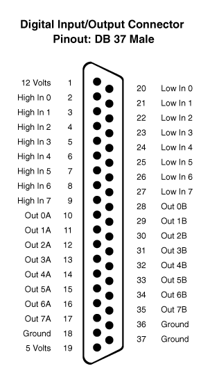
function WriteIOExt (value)
Escribe en el puerto I/O extendido el valor de 32 bits <value>.
function ReadIOExt () : uint
Lee del puerto I/O extendido un valor de 32 bits.
function SetIOExtDir (flags)
Permite especificar cuál de los 32 pins es de salida o de entrada. El parámetro <flags> es un valor de 32 bits. Cada bit representa a un pin. Si el bit es 0, indica que dicho pin se configura de salida, mientras que si el bit es 1, indica que se configura de entrada.
function SetIOExtPu (flags)
En el caso de que los bits sean de entrada, es posible determinar si queremos usar el método “pull ups” para consultar el estado de los pines. Esto es, cuando el valor del pin sea 0 leeremos un 0, si el valor del pin es 1 o indeterminado, leeremos un 1.
function OpenI2C (address, hz = 100000) : pointer
Devuelve un controlador de dispositivo I2C si se ha podido conectar a la dirección (SLAVE ADDRESS) del dispositivo. En caso de error, devolverá NUL.
Los métodos disponibles por parte del controlador son:
| WriteByte (byte) | Escribe un byte al dispositivo. |
|---|---|
| ReadByte () | Lee un byte del dispositivo. |
| WriteReg (reg, byte) | Escribe en un registro del dispositivo. |
| ReadReg (reg) | Lee de un registro del dispositivo. |
| Write (buffer, off = 0, len = -1) | Escribe un buffer de datos al dispositivo. |
| Read (buffer, off = 0, len = -1) | Lee a un buffer datos desde el dispositivo. |
function CloseI2C (i2c)
Cierra y libera los recursos utilizados por el controlador de dispositivo I2C.
function GetUSBDevices () : list
Obtiene una lista de dispositivos USB a los que podemos acceder.
function OpenUSBDevice (device) : pointer
Obtiene el controlador a un dispositivo USB. Mediante el uso del controlador, tenemos accesibles los siguientes métodos:
| Reset () | Reinicia el dispositivo. |
|---|---|
| GetDescriptor () | Obtiene una lista con IDs de descripción. |
| GetStringDescriptor (id) | Obtiene el texto asociado a un ID de descripción. |
| IsKernelDriver (iface) | Verifica si el interfaz tiene el driver de núcleo activo. En tal caso, no se podrá reclamar el interfaz. <iface> es un número entero. |
| AttachKernelDriver (iface) | Asociar núcleo de driver al interfaz del dispositivo. |
| DetachKernelDriver (iface) | Liberar núcleo de driver al interfaz del dispositivo. |
| ClaimInterface (iface) | Reclama el interfaz para acceder a sus funciones I/O. |
| ReleaseInterface (iface) | Libera el interfaz de uso. |
| BulkTransfer (endpoint, buffer, timeout) | Realiza una operación de Bulk Transfer sobre un <endpoint>. |
| InterruptTransfer (endpoint, buffer, timeout) | Realiza una operación de Interrupt Transfer sobre un <endpoint>. |
| ControlTransfer (bmReqType, bmReq, wValue, wIndex, buffer, timeout) | Realiza una operación de Control Transfer. |
function CloseUSBDevice (usb)
Cierra y libera los recursos utilizados por el controlador de dispositivo USB.
function WriteEEPROM (addr, buffer, off, len)
Escribe datos a la EEPROM. Esta función está bloqueda y solo está disponible en un entorno de tipo Administrador/Fabricante.
function ReadEEPROM (addr, buffer, off, len)
Lee datos de la EEPROM. Con <addr> se indica la dirección partir de la cual leer datos. El rango irá de 0 a 255. También podemos especificar el destino dentro de un buffer y la cantidad de datos a leer <len>.
function SetSlotAudioVolume (v)
Permite establecer la potencia de salida en el amplificador que filtra el audio que sale de los cartuchos. El valor de <v> podrá ser un entero entre 0 y 255.
function GetSlotAudioVolume () : int
Obtiene el valor asociado al volumen de audio para el amplificador que filtra el audio que sale de los cartuchos. Este valor es un entero en el rango de 0 a 255.
function AudioCaptureStart (ms = 5000, wavPath = "")
Inicializa la captura de audio en tiempo real. Podemos indicar el tiempo de captura que queremos realizar mediante el parámetro <ms>, medido en milisegundos. Si este valor de tiempo es 0, indicaremos que estaremos capturando audio de forma indefinida hasta usar la función AudioCaptureStop. También podemos indicar si queremos ir guardando los datos de la captura en un archivo WAV. Podremos consultar los datos capturados en tiempo real usando la función AudioCaptureRead.
function AudioCaptureStop ()
Detenemos la captura de audio.
function AudioCaptureRead (buffer, off, size)
Obtenemos datos de la captura en tiempo real. Estos datos los almacenaremos en un buffer e indicaremos el número de datos a almacenar en <size>.
function SetRemote (_on)
Activa/Desactiva el control remoto o también el puerto REM de casete.
function GetRemote () : bool
Obtiene el estado del control remoto. Si el valor retornado es verdadero, es que el REM está encendido, y en caso de que sea falso es que está apagado.
function AddDriver (_name) : pointer
Añade un controlador para gestionar algún tipo de dispositivo que use el hardware de la máquina. Los drivers disponibles son:
| MSXMOUSEA | Gestión del ratón usando uno MSX en el puerto A. |
|---|---|
| MSXMOUSEB | Gestión del ratón usando uno MSX en el puerto B. |
| MSXJOYSTICKA | Gestión del ratón usando un joystick MSX en el puerto A. |
| MSXJOYSTICKB | Gestión del ratón usando un joystick MSX en el puerto B. |
| MSXPHILIPSKEYBOARD | Gestión del teclado usando un teclado Philips NMS8250/NMS8280 en el puerto DB37. |
function RemoveDriver (_name)
Elimina el controlador de dispositivo agregado previamente con la función AddDriver.
function FindDriver (_name) : pointer
Busca entre los controladores añadidos uno con el mismo nombre que el indicado en el parámetro <name>.
function SetDriverProperty (_driver, _name, _value)
Dado un controlador permite establecer en su propiedad <name> un valor <value>.
function GetDriverProperty (_driver, _name) : value
Dado un controlador permite obtener el valor de su propiedad <name>.
Gestión de las diferentes máquinas virtuales del sistema.
function CreateVirtualMachine (model, parent = null) : pointer
Dado un nombre de modelo <model>, crea un controlador de máquina virtual. Este controlador puede estar vinculado como hijo a un programa <parent>.
function DestroyVirtualMachine (machine)
Dado un controlador de máquina virtual, libera todos los recursos utilizados.
function GetAvailableVirtualMachineSystems () : list
Devuelve una lista de sistemas disponibles. Los elementos de la lista son de tipo cadena de texto. Cada sistema dispone de uno o varios modelos.
Dado el nombre de un sistema <system> y/o el nombre de un modelo <model>, devuelve una lista con todas las configuraciones de máquina virtual que coincidan con ese sistema y modelo. Si no indicamos nada (cadena vacía) en el parámetro <model>, buscará todos los modelos pertenecientes al <system>. Si en <system> tampoco especificamos nada, devolverá todos los modelos disponibles de todos los sistemas.
function CheckVirtualMachineConfiguration (model) : bool
Indica si existe configuración para ese modelo. Las configuraciones se encuentran en la carpeta GetEngine().GetVirtualMachineConfigurationsFolder(). Estas configuraciones tienen el nombre de modelo seguido por la extensión XML.
function CreateVirtualMachineConfiguration (model, system, desc) : pointer
Dado un nombre de modelo <model>, crea el archivo XML correspondiente y le asocia un sistema <system> y una descripción <desc>. La función devolverá la instancia de configuración de máquina virtual.
function DestroyVirtualMachineConfiguration (model)
Dado un nombre de modelo <model>, se elimina el archivo XML y se liberan los recursos de la configuración cargada.
function UnloadVirtualMachineConfiguration (mc)
Dada una instancia de configuración de máquina virtual <mc>, se libera de memoria.
function CloneVirtualMachineConfiguration (modelSrc, modelDst) : bool
Dado un nombre de modelo origen <modelSrc>, se clona la configuración (el archivo XML) con nombre <modelDst>.
function RenameVirtualMachineConfiguration (modelOld, modelNew) : bool
Dado un nombre de modelo <modelOld>, se renombra el archivo de configuración con el nuevo nombre <modelNew>.
function LoadVirtualMachineConfiguration (model) : pointer
Dado un nombre de modelo <model>, se carga y devuelve la instancia de configuración de máquina virtual. En caso de no existir dicha configuración de modelo, se devolverá NULL.
function SaveVirtualMachineConfiguration (mc, model = "")
Dada una instancia de configuración de máquina virtual <mc>, guardaremos el archivo de configuración asociado. Si queremos usar otro nombre de modelo para dicha configuración, usaremos el parámetro <model>.
| AddCPUBreakpoint (type, addr, addrCount = 1, data = 0) | Añade un punto de ruptura para la CPU. Se establece un tipo <type>, una dirección <addr> y otros parámetros en función del tipo. |
|---|---|
| AddDevice (name, ports = "“, params =”") | Agrega un dispositivo con nombre <name> usando los puertos <port> y parámetros adicionales <params>. |
| AddEvent (event, ctx, function) | Añade un evento y le asocia un contexto. |
| AddMapper (name, slot, sslot, page, path, size, patch) | Asocia un mapper a un slot/subslot/página. |
| ApplyIPSFile (ipsFile, buffer) | Aplica un archivo IPS sobre un buffer. |
| CPUCall (addr) | Aplica una llamada a una rutina en la dirección de memoria <addr>. |
| EnumDevices () | Retorna una lista con los dispositivos disponibles. |
| FindDevice (name) | Busca un dispositivo con nombre <name>. |
| FindMapper (name, slot, sslot, page) | Busca un mapper con nombre <name> y/o en un slot/subslot/página. |
| GetCPUDASM (pc, symbols = null, buffer = null) | Obtiene una lista de dos componentes: por un lado una cadena de texto con el opcode y por otro el tamaño en bytes del opcode. |
| GetCPUDebug () | Indica si la CPU está en modo depuración. |
| GetCPUReg (reg) | Devuelve el valor de un registro. |
| GetDeviceProp (dev, prop) | Devuelve el valor de una propiedad de un dispositivo. |
| GetDeviceReg (dev, reg) | Devuelve el valor de un registro de un dispositivo. |
| GetEmulationSpeed () | Obtiene el factor de velocidad de emulación. |
| GetMapperInfo (mapper) | Devuelve una lista con información sobre el mapper (nombre, slot, subslot, página y cantidad de bytes asociados). |
| GetProperty (name) | Devuelve el valor de una propiedad de la máquina. |
| GetTapeCounter () | Retorna el valor del contador del casete. |
| GetVideoAdjust () | Indica el ajuste de vídeo. |
| GetVideoAlign () | Indica la alineación de vídeo. |
| GetVideoDevice (dev) | Obtiene el dispositivo de vídeo con índice <dev>. |
| GetVideoDeviceNumber () | Obtiene el número de dispositivos de vídeo existentes. |
| GetVideoFrameRateMode () | Obtiene el modo de tasa de fotogramas. |
| GetVideoHeight (ix = -1) | Obtiene la resolución vertical del dispositivo de vídeo con índice <ix>. En caso de ser -1, devuelve el que esté en curso. |
| GetVideoImageTex (ix = -1) | Obtiene la textura del dispositivo de vídeo con índice <ix>. En caso de ser -1, devuelve la del dispositivo de vídeo en curso. |
| GetVideoShowAllDevices () | Indica si se están mostrando todos los dispositivos de vídeo a la vez. |
| GetVideoWidth (ix = -1) | Obtiene la resolución horizontal del dispositivo de vídeo con índice <ix>. En caso de ser -1, devuelve el que esté en curso. |
| Inp (port) | Realiza una lectura del puerto E/S. |
| InsertCartridge (slot, file, mapper, ipsFile = "") | Simula la inserción de un cartucho en una ranura <slot> usando un archivo <file>, un mapper y un parche IPS opcional. |
| InsertDisk (id, file, rdOnly = false) | Simula la inserción de una imagen de disco en una de las unidades <id>. La imagen de disco tendrá una ruta <file> y podrá usarse como solo lectura de forma opcional. |
| IsPlayingTape () | Indica si existe una cinta de casete en reproducción. |
| LoadState (path) | Carga el estado de una máquina a partir de una ruta. |
| LoadTape (file, rdOnly = false) | Simula el uso de una cinta de casete con ruta en <file>. Por defecto se podrá escribir en ella. |
| NextVideoDevice () | Permite pasar del actual dispositivo de vídeo al siguiente. |
| Outp (port, v) | Realiza una escritura al puerto E/S. |
| PatchMapper (mapper, patch) | Dado un objeto mapper, aplica un parche en formato texto. |
| Peek (addr) | Devuelve el byte leído en la dirección de memoria visible por la CPU. |
| PlayTape () | Inicia la reproducción de una cinta de casete. |
| PlugPortDevice (port, name) | Simula la conexión de un dispositivo en uno de los puertos de juegos. |
| Poke (addr, v) | Escribe un valor en la memoria visible por la CPU. |
| PressKey (key) | Simula la pulsación de una tecla. |
| PrevVideoDevice () | Pasa del actual dispositivo de vídeo al anterior. |
| ReadFromPortDevice (port) | Lee un valor del puerto de juegos. |
| ReleaseKey (key) | Simula la liberación de pulsación de una tecla. |
| RemoveCartridge (slot) | Elimina un cartucho insertado en una ranura. |
| RemoveCPUBreakpoint (type, addr) | Elimina un punto de ruptura agregado. |
| RemoveDevice (dev) | Dado un objeto dispositivo, lo elimina de la máquina. |
| RemoveDisk (id) | Simula la extracción de un disco. |
| RemoveMapper (mapper) | Dado un objeto mapper, lo elimina. |
| RewindTape () | Rebobina una cinta de casete. |
| SaveState (path) | Guarda el estado de la máquina. |
| SetCPUBreakpointCallback (ctx, function) | Permite establecer a qué función script llamar cuando se cumple un punto de ruptura. |
| SetCPUDebug (v) | Establece el modo de depuración de la CPU. |
| SetCPUReg (reg, v) | Da valor a un registro. |
| SetDeviceProp (dev, prop, value) | Asigna un valor a una propiedad de un dispositivo. |
| SetDeviceReg (dev, reg, value) | Asigna un valor a un registro de un dispositivo. |
| SetEmulationSpeed (speed) | Establece el factor de velocidad de emulación. |
| SetLed (led, v) | Enciende o apaga un led. |
| SetProperty (name, v) | Establece una propiedad de máquina. |
| SetRenderSettings (w, h, ox = 0, oy = 0, xf = 1, yf = 1) | Indica los ajustes de renderización. |
| SetROMSFolder (path) | Establece la carpeta por defecto para las BIOS del sistema. |
| SetSaveStatesFolder (path) | Establece la carpeta por defecto donde guardar y leer los estados de máquina. |
| SetSRAMFolder (path) | Establece la carpeta donde se encuentran las memorias estáticas. |
| SetVideoAdjust (adjust) | Indica el nuevo ajuste de vídeo. |
| SetVideoAlign (align) | Indica la nueva alineación de vídeo. |
| SetVideoDevice (dev) | Establece el dispositivo de vídeo con índice <dev>. |
| SetVideoFrameRateMode (mode) | Indica la tasa de fotogramas a utilizar. |
| SetVideoShowAllDevices (show) | Establece si queremos o no mostrar todos los dispositivos de vídeo a la vez. |
| StopTape () | Detiene la reproducción del casete. |
| UnloadTape () | Quita el casete del reproductor. |
| UnPlugPortDevice (port) | Quita el dispositivo del puerto de juegos. |
| WriteToPortDevice (port, value) | Escribe un valor al puerto de juegos. |
| SetCPUNativeCallback (ctx, function) | Establece la función script a la que llamar cuando se da una instrucción TRAP 0x0003 |
Tipos de puntos de ruptura (Breakpoints)
| 0 | PC_EQUAL. Cuando el registro PC sea igual a una dirección. |
|---|---|
| 1 | MEM_BYTE_EQUAL. Cuando el valor del contenido de una dirección de memoria sea igual a un byte. |
| 2 | MEM_BYTE_CHANGES. Cuando un rango de valores de 8 bits a partir de una dirección cambie. |
| 3 | MEM_WORD_EQUAL. Cuando el valor del contenido de una dirección de memoria sea igual a un número de 2 bytes. |
| 4 | MEM_WORD_CHANGES. Cuando un rango de valores de 16 bits a partir de una dirección cambie. |
| 5 | PORT_WRITE. Cuando se produzca una escritura en un puerto. |
| 6 | PORT_READ. Cuando se produzca una lectura en un puerto. |
Registros CPU Z80
| 0 | A | 24 | A1 |
|---|---|---|---|
| 1 | F | 25 | F1 |
| 2 | AF | 26 | AF1 |
| 3 | B | 27 | B1 |
| 4 | C | 28 | C1 |
| 5 | BC | 29 | BC1 |
| 6 | D | 30 | D1 |
| 7 | E | 31 | E1 |
| 8 | DE | 32 | DE1 |
| 9 | H | 33 | H1 |
| 10 | L | 34 | L1 |
| 11 | HL | 35 | HL1 |
| 12 | IX High | 36 | SH High |
| 13 | IX Low | 37 | SH Low |
| 14 | IX | 38 | SH |
| 15 | IY High | 39 | I |
| 16 | IY Low | 40 | R |
| 17 | IX | 41 | R2 |
| 18 | PC High | 42 | IFF1 |
| 19 | PC Low | 43 | IFF2 |
| 20 | PC | ||
| 21 | SP High | ||
| 22 | SP Low | ||
| 23 | SP |
Registros CPU MOS
| 0 | A | 3 | SP |
|---|---|---|---|
| 1 | X | 4 | PC |
| 2 | Y | 5 | FLAGS |
Carga y manipulación de texturas (bitmaps).
function LoadTexture (path) : pointer
Carga una textura que se encuentra en la ruta de archivo <path>. Para manipular este tipo de objetos se utilizan las funciones API Nativas Texture.
function DeleteTexture (tex)
Libera los recursos utilizados por una textura.
function LoadImage (path) : pointer
Carga una textura que se encuentra en una ruta de archivo <path> y la asocia a un controlador de imagen. Los métodos de un controlador de imagen son:
| GetTexture () | Obtiene la textura asociada. |
|---|---|
| GetWidth () | Devuelve un entero con el ancho de la imagen. |
| GetHeight () | Devuelve un entero con el alto de la imagen. |
function DeleteImage (img)
Libera los recursos utilizados por el controlador de imagen.
function SetLocaleLanguage (iso)
Establece el lenguaje a utilizar para los textos presentados por las aplicaciones y el sistema. El código de lenguaje <iso> debe ser un código de dos dígitos basado en la ISO-3166. Algunos ejemplos:
| GB | UK - English |
|---|---|
| ES | Español |
| IT | Italiano |
| FR | Francés |
function GetLocaleLanguage () : string
Obtiene el código ISO-3166 configurado como idioma a utilizar.
function SetKeyboardLayout (iso)
Especifica la distribución de teclado a utilizar en el sistema. Cada tecla de nuestro teclado está mapeada a un tipo de código, y podemos tener diferentes mapeados en función de la configuración elegida. En este caso, el parámetro <iso> consiste en un código de dos cifras basado en la normativa ISO-3166.
function GetKeyboardLayout () : string
Obtiene la distribución de teclado actual.
El sistema y las aplicaciones pueden usar el Logger para registrar mensajes que ayuden a los usuarios a detectar errores, posibles problemas o eventos de cualquier tipo.
Existen estas categorías de mensajes:
| SIN CATEGORÍA | Son mensajes de texto sin ningún formato y sin ninguna categoría. Estos mensajes siempre se registran. |
|---|---|
| VERBOSE | Estos mensajes van asociados a un nivel, lo que nos permite filtrar qué mensajes van a ser registrados. Este mensaje registra también la fecha/hora. |
| WARNING | Mensajes asociados a errores leves. Registran la fecha/hora cuando se producen. |
| ERROR | Mensajes asociados a errores graves o críticos. Registran la fecha/hora cuando se producen. |
function LogPrint (msg)
Vuelca un mensaje en el sistema de registro. Sería un mensaje sin categoría establecida.
function LogVerbose (msg, level = 0)
Vuelca un mensaje en el sistema de registro con categoría VERBOSE. Estos son mensajes informativos que pueden ser registrados según esté habilitada la función SetVerbose.
function LogError (msg)
Vuelca un mensaje en el sistema de registro con categoría ERROR.
function LogWarning (msg)
Vuelca un mensaje en el sistema de registro con categoría WARNING.
function SetVerboseLevel (level)
Establece el nivel de mensajes de categoría VERBOSE que queremos registrar. Si <level> vale -1, no mostraremos ningún mensaje. Si <level> es un número mayor o igual que cero, solo se mostrarán aquellos mensajes con nivel mayor o igual a este.
function GetVerboseLevel () : int
Obtiene el nivel de los mensajes de categoría VERBOSE que está configurado actualmente.
En el entorno gráfico se gestiona un tipo de Notificaciones que pretenden informar al usuario, de forma visual, del acontecimiento de eventos en el sistema.
function CreateNotification (title, msg, id = -1)
Crea una notificación con un título <title>, un cuerpo de mensaje <msg> y un identificador de notificación <id>. Mediante el identificador podemos cambiar los textos de la misma notificación en pantalla, sin necesidad de que se cree una nueva.
Las opciones de vídeo permiten cambiar la resolución de pantalla, entre otras opciones. También configurar el fitro FX de post-proceso de imagen para simular pantallas monocromo, scanlines, etc.
function SetVideoFX (name, v)
Establece el valor de una propiedad del filtro FX de post-proceso. Los nombres de propiedad accesibles son:
| Nombre | Funcionalidad | Valores |
|---|---|---|
| enabled | Activa/Apaga el filtro. | Verdadero o falso |
| R_blur | Desenfoque en el componente rojo. | -0.1 a 0.1 |
| G_blur | Desenfoque en el componente verde. | -0.1 a 0.1 |
| B_blur | Desenfoque en el componente azul. | -0.1 a 0.1 |
| Contrast_add | Suma al contraste. | 0 a 1 |
| Contrast_factor | Multiplicador al contraste. | 0 a 1 |
| Vignette_add | Suma al efecto viñeta. | 0 a 1 |
| Vignette_factor | Multiplicador al efecto viñeta. | 0 a 10 |
| Tint_r | Suma al componente rojo. | 0 a 1 |
| Tint_g | Suma al componente verde. | 0 a 1 |
| Tint_b | Suma al componente azul. | 0 a 1 |
| Scanline_add | Suma en el efecto scanline. | 0 a 1 |
| Scanline_factor | Multiplicador en el efecto scanline. | 0 a 1 |
| Scanline_crawl | Ruido efecto retrazo vertical. | 0 a 10 |
| Scanline_size | Tamaño del efecto scanline. | 1 a 16 |
| Flickering | Parpadeo de la pantalla. | 0 a 1 |
| Smooth_min | Desenfoque general mínimo. | 0 a 1 |
| Smooth_max | Desenfoque general máximo. | 0 a 1 |
function GetVideoFX (name, def = "") : value
Obtiene el valor de la propiedad del filtro FX de post-proceso con nombre <name>. En caso de que la propiedad no exista, devolvería el valor por defecto <def>.
function GetVideoFXParams () : list
Obtiene una lista donde obtener información sobre todos los parámetros accesibles para configurar el filtro FX de post-proceso activo. La lista estará compuesta por elementos con la siguiente información:
| NAME | Nombre del parámetro. |
|---|---|
| VALUE_MIN | Valor mínimo que se puede asignar. |
| VALUE_MAX | Valor máximo que se puede asignar. |
| VALUE_STEP | Paso entre valores. |
| VALUE_DEFAULT | Valor por defecto. |
function SetVideoOverscan (x, y, w = 1, h = 1)
Establece el ajuste de posición de origen (x, y) de pantalla. En algunos televisores CRT, es necesario ajustar esto para poder ver adecuadamente el contenido de la pantalla. Del mismo modo, también es posible ajustar el ancho y alto de lo que estamos viendo: para ello se usan (w, h) como factores de escalado.
function GetVideoOverscan () : list
Devuelve una lista donde los elementos son [x, y, w, h], siendo (x, y) la posición origen en la pantalla donde visualizamos los gráficos y (w, h) los factores de escalado a utilizar.
function SetVideoOutput (ch, dm = -1, da = -1)
Se establece la salida de vídeo por los siguientes canales:
| <ch> | Salida |
|---|---|
| CONFIG_VIDEO_OUTPUT_DIGITAL | HDMI/DVI digital |
| CONFIG_VIDEO_OUTPUT_ANALOG | Vídeo compuesto |
| <dm> | Modo Digital |
| CONFIG_VIDEO_DIGITAL_HDMI | Modo HDMI |
| CONFIG_VIDEO_DIGITAL_DVI | Modo DVI |
| <da> | Modo Analógico |
| CONFIG_VIDEO_ANALOG_NTSC | NTSC |
| CONFIG_VIDEO_ANALOG_JP_NTSC | Japan NTSC |
| CONFIG_VIDEO_ANALOG_PAL | PAL |
| CONFIG_VIDEO_ANALOG_BR_PAL | Brazilian PAL |
| CONFIG_VIDEO_ANALOG_PRS_NTSC | NTSC Progresivo |
| CONFIG_VIDEO_ANALOG_PRS_PAL | PAL Progresivo |
| CONFIG_VIDEO_ANALOG_4_3 | Flag formato 4:3 |
| CONFIG_VIDEO_ANALOG_14_9 | Flag formato 14:9 |
| CONFIG_VIDEO_ANALOG_16_9 | Flag formato 16:9 |
| CONFIG_VIDEO_ANALOG_MONOCHROME | Flag salida en monocromo |
En caso de usar <dm> como -1 o <da> como -1, se usarán los valores que ya estén configurados.
function GetVideoOutput () : int
Devuelve CONFIG_VIDEO_OUTPUT_ANALOG o CONFIG_VIDEO_OUTPUT_DIGITAL en función de la configuración establecida.
function GetVideoOutputEx () : list
Devuelve una lista con: [VIDEO OUTPUT, VIDEO DIGITAL, VIDEO ANALOG]. Ofrece información completa sobre la configuración de la salida de vídeo (véase SetVideoOutput).
function SetVideoAdjust (m)
Establece el modo de ajuste de vídeo usado por defecto en diferentes aplicaciones. Los valores pueden ser:
| CONFIG_VIDEO_ASPECT_1X | 1X - Tamaño original. |
|---|---|
| CONFIG_VIDEO_ASPECT_2X | 2X - Doble del tamaño original. |
| CONFIG_VIDEO_ASPECT_3X | 3X - Triple del tamaño original. |
| CONFIG_VIDEO_ASPECT_ORIGINAL | El tamaño máximo que pueda verse en pantalla respetando la proporción. |
| CONFIG_VIDEO_ASPECT_ORIGINAL_EX | El original, pero intentando maximizar el tamaño en horizontal. |
| CONFIG_VIDEO_ASPECT_EXPANDED | Ajusta el tamaño al máximo permitido por la pantalla. No respeta la proporción. |
function GetVideoAdjust ()
Obtiene el modo de ajuste de vídeo usado por defecto en diferentes aplicaciones.
function SetVideoFramerate (hz)
Establece la velocidad de refresco usada para representar los gráficos en pantalla. A la hora de dibujar un fotograma completo, se tiene en cuenta un tiempo de actualización que depende del refresco en pantalla deseado. Este refresco no depende de la capacidad del monitor o del hardware de vídeo.
function GetVideoFramerate ()
Obtiene la velocidad de refresco que está siendo usada para representar los fotogramas en pantalla.
function GetAvailableVideoFormats () : list
Devuelve una lista con información sobre los distintos modos de pantalla. Cada elemento de la lista tiene: [Resolución horizontal en pixeles, Resolución vertical en pixeles, Profundidad de color (bits por pixel), Refresco en Hz].
function SetVideoFormat (w, h, bpp, hz)
Establece un formato para la pantalla. Indicaremos la resolución horizontal en pixeles <w>, la resolución vertical en pixeles <h>, el número de bits por pixel <bpp> y el refresco de pantalla <hz>. Los formatos válidos son todos aquellos disponibles usando la función GetAvailableVideoFormats.
function GetVideoFormat () : list
Devuelve el formato de pantalla actual en una lista con los elementos: [Resolución horizontal en pixeles, Resolución vertical en pixeles, Bits por pixel, Refresco en Hz].
En el MSXVR tenemos dos canales para la salida de audio:
| Canal 0 | Audio del sistema, máquinas virtuales, sonido generado a través del chip de sonido PCM. |
|---|---|
| Canal 1 | Audio del sistema proveniente de los slots de cartucho. |
function SetAudioOutput (mode)
Establece la salida de audio para el canal 0 según el modo <mode> establecido:
| CONFIG_AUDIO_OUTPUT_DIGITAL | Salida por el puerto digital (HDMI) |
|---|---|
| CONFIG_AUDIO_OUTPUT_ANALOG | Salida por el puerto analógico (RCA/Jack 3.5mm) |
function GetAudioOutput () : int
Obtiene el modo establecido para la salida de audio del canal 0.
function SetAudioVolume (vol, id = 0)
Permite configurar el volumen de la salida de audio para alguno de los canales <id>. El parámetro <vol> será un valor entero entre 0 y 255.
function GetAudioVolume (id = 0) : int
Obtiene el volumen de audio de salida configurado para el canal <id>.
function SetAudioPanning (pan, id = 0)
Establece el ajuste de volumen entre altavoz izquierdo y derecho (balance) para las salidas de audio del canal establecido <id>. El valor de <pan> será un entero entre 0 y 255, siendo 0 para tener todo el volumen en el lado izquierdo, 255 para tener todo el volumen en el lado derecho, y 127 para centrar el volumen.
function GetAudioPanning (id = 0) : int
Devolverá el ajuste de volumen asociado al ajuste del balance izquierdo/derecho según el canal de audio indicado en <id>.
function SetThemePreset (name)
Establece un perfil de tema con nombre <name>. Los perfiles se pueden crear/modificar a través del configurador de temas.
function GetThemePreset () : string
Obtiene el perfil de tema actualmente en uso.
function SetThemeColorIndices (fg, bg, br)
Establece los colores para tinta, fondo y borde del tema en curso. Estos colores son índices a una paleta de 16 entradas.
function SetThemeConsoleWidth (w)
Establece el ancho de columnas de texto en la consola. El máximo es 80.
function SetThemeConsoleMode (mode)
Establece el modo de consola (monocromo si <mode> es 1 o multicolor si <mode> es 0).
function PowerOff ()
Manda una petición de apagado al ordenador.
function Reset (hw = false)
Manda una petición de reset al ordenador. Este reset puede reiniciar al completo el sistema, hardware incluido, con <hw> verdadero, o simplemente reiniciar el sistema software, con <hw> a falso.
function SystemPause ()
Manda una petición de Pausa a todas las aplicaciones del sistema.
function StopPowerOff ()
Permite detener el proceso de apagado del ordenador. Eso no significa que se cancele, simplemente que se detiene hasta decidir si proseguir o finalizarla.
function CancelPowerOff ()
Cancela por completo el proceso de apagado del ordenador. Cuando el ordenador inicia un proceso de apagado, se invoca la función OnSystemExit en todos los programas en marcha. Desde esta función podemos decidir cómo tratar esta notificación, pausándola con StopPowerOff, cancelándola con CancelPowerOff, o bien reanudando el proceso con PowerOff de nuevo.
function GetSerialNumber () : string
Obtiene el número de serie de la placa del ordenador.
function GetAlias () : string
Devuelve el nombre del alias asociado al ordenador.
function SetAlias (alias) : string
Establece el nombre del alias asociado al ordenador.
function GetUserName() : string
Obtiene el nombre del usuario activo.
function SetUser (name, pwd) : bool
Establece el usuario que está usando el ordenador (usuario activo). Esto permite al sistema establecer configuraciones asociadas a los distintos usuarios. Si la operación ha tenido éxito, devolverá verdadero.
function GetTimeString (format) : string
Dado un formato de fecha y hora, devolverá la cadena de texto con la fecha y hora actual en dicho formato. Para conocer los distintos formatos véase la función de API Nativa SysTime_ToString.
function SetTime (year, month, day, hour, minute, second, ms)
Dada una fecha y hora en los parámetros de la función, se aplicará en el sistema, de tal manera que a partir de ese momento serán la nueva fecha y hora.
Una aplicación VR-DOS es aquella que está pensada para hacer uso de la consola DOS o para mostrarse como parte integrada dentro de la propia utilidad DOS.
La aplicación heredará de la plantilla con nombre DOS_Program
El punto de entrada que hemos de usar es el siguiente:
virtual Start()
{
}Para que nuestro programa termine y regresemos al DOS de nuevo, habría que usar la instrucción End(0);
Para acceder a la consola del DOS, usaremos la función GetConsole()
Para acceder a la ventana del DOS, usaremos la función GetWindow()
Algunos de los métodos accesibles por la consola son:
function Print (text)
Manda texto a la consola a partir de la posición del cursor. La posición de este cursor se actualiza en función del número de caracteres y de si se ha superado el máximo horizontal.
function PrintLn (text)
Funciona del mismo modo de que la función Print, pero además añade un salto de línea.
function PrintError (code, extra = "")
Imprime un mensaje de error. El parámetro <code> podrá ser un número con el código de error o bien una cadena de texto. El mensaje se mostrará en pantalla con el estilo configurado para errores.
function PrintOk (text)
Imprime un mensaje con el estilo configurado para mostrar mensajes afirmativos.
function Input (prompt, ctx = null, cb = "", password = false)
Pone a la consola en modo de entrada de datos por parte del usuario. Indicaremos un texto de <prompt> que se mostrará en la consola, y a partir de este el usuario podrá introducir datos. Esta función es bloqueante, si no se especifica un contexto <ctx> y <cb> al que invocar. El parámetro <password> permite ocultar los datos insertados.
Si se llama a Input de forma bloqueante, los datos introducidos se devuelven en formato cadena de caracteres a la salida de la función. En caso de que no sea bloqueante, se retornará una cadena vacía, se continuará con el resto de las sentencias de código y hasta que el usuario no deje de introducir datos no se invocará la función en el contexto <ctx> y con nombre <cb>.
function Width (x)
Ajusta el número de caracteres que se pueden representar por línea horizontal.
function Locate (x, y, cursor = -1)
Modifica la posición del cursor desde donde se imprimen los caracteres en la consola.
function GetTextModeCols ()
Obtiene el número de caracteres que caben por línea horizontal de la consola.
function GetTextModeRows ()
Obtiene el número de caracteres que caben por línea vertical de la consola.
function SetTextColorMode (v)
Permite cambiar el modo de pantalla utilizado por la consola, en este caso a modo de texto multicolor. Cuando se trabaja en multicolor, podemos establecer un color de tinta distinto para cada carácter en la consola. Usando el comando Print, es posible indicar el color a utilizar mediante una serie de palabras reservadas:
_console.PrintLn("Este [/yellow] es amarillo [/def] y este [/red] rojo [/def]");También podemos codificar un cambio de color con los valores desde \0 hasta \F, que son los índices de los 16 colores de la paleta disponible.
_console.PrintLn("Este \\10 es amarillo \\0 y este \\8 rojo \\0");Existen las siguientes palabras reservadas:
| def | Activa el color por defecto. |
|---|---|
| prev | Pone el color anterior previo a un cambio de color. |
| black | Color negro. |
| green | Color verde. |
| midgreen | Color verde claro. |
| lightgreen | Color verde brillante. |
| blue | Color azul. |
| midBlue | Color azul claro. |
| lightblue | Color azul brillante. |
| red | Color rojo. |
| midred | Color rojo claro. |
| lightred | Color rojo brillante. |
| cyan | Color cian. |
| yellow | Color amarillo. |
| lightyellow | Color amarillo brillante. |
| magenta | Color morado. |
| gray | Color gris. |
| white | Color blanco. |
| error | Color asociado al error (por defecto Rojo). |
| bold | Color asociado al resaltado (por defecto Cian). |
| title | Color asociado a un título (por defecto Amarillo). |
| hline | Dibuja una línea de guiones hasta el final de línea. |
| hFill | Rellena con espacios hasta final de línea. |
| tab | Agrega un tabulador. |
| dosname | Muestra el nombre de la versión del DOS. |
| osname | Muestra el nombre del Sistema Operativo. |
function GetTextColorMode ()
Obtiene el modo actual de pantalla de texto que se está utilizando. Retornará verdadero si se está utilizando el modo de texto multicolor.
function SetPal (index, color)
Asigna un color RGB <color> (véanse las funciones del API Nativo RGB/ARGB) a una entrada de la paleta de colores <index> usada por la consola. La paleta tiene un total de 16 entradas (colores) posibles.
function GetPal (index)
Retorna el valor RGB del color asociado a la entrada de la paleta <index>.
function SetColor (fg, bg, br)
Establece el color de tinta <fg>, fondo <bg> y borde <br> representado por la consola en pantalla. Estos colores son índices a la paleta de colores, o sea, solo son válidos los números enteros del 0 al 15.
function GetFGColor ()
Obtiene el índice de la paleta de colores que representa el color para la tinta. Véase SetColor.
function GetBGColor ()
Obtiene el índice de la paleta de colores que representa el color para el fondo. Véase SetColor.
function GetBRColor ()
Obtiene el índice de la paleta de colores que representa el color del border. Véase SetColor.
function Cls (ch = EMPTY_CHAR)
Permite limpiar todos los caracteres de la consola. Si no se especifica ningún carácter, lo hará con el usado por defecto. El cursor se volverá a colocar en la posición (0,0) de la pantalla.
Hasta ahora hemos visto cómo usar la consola del DOS para poder crear nuestras propias aplicaciones. Sin embargo, podemos crear una ventana MDI para ofrecer otro tipo de interfaz al usuario.
Para crear una aplicación que sea una ventana MDI flotante por encima de nuestra aplicación VR-DOS, usaremos GetWindow().CreateMDI.
GetWindow nos permite obtener la ventana del VR-DOS sobre la que se está representando la consola también. Por tanto, podemos crear uno o varios MDI sobre esta ventana y disponer de las ventajas de VR-VIEW para crear una aplicación.
class MyHelloWord implements DOS_Program
{
virtual Start()
{
_console = GetConsole();
_console.PrintLn("Ejemplo de:");
_console.PrintOk("Hello World!");
End(0);
}
}VR-VIEW hace referencia al entorno gráfico del sistema operativo del MSXVR.
La plantilla sobre la que trabajar para que nuestra aplicación use estas características se denomina: View_Program.
El entorno gráfico VR-VIEW se gestiona desde un objeto denominado DESKTOP. Este objeto se encarga de gestionar ventanas, distribuir eventos de dispositivos de entrada y básicamente todo lo relacionado con el interfaz de usuario. También es el encargado de representar todos los controles y gráficos en pantalla.
Podemos acceder al desktop desde una aplicación VR-VIEW usando la función GetDesktop().
El Desktop no permite mostrar más de una ventana de aplicación al mismo tiempo.
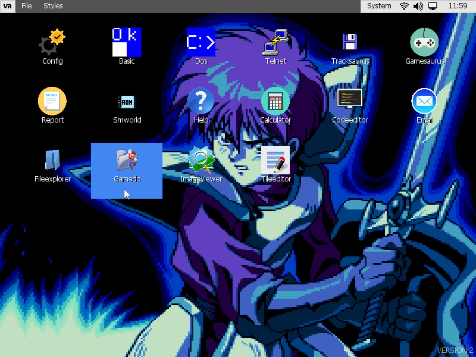
En la parte superior asociada a una ventana de aplicación encontraremos su título y el menú, en caso de tenerlo. Sin embargo, también encontraremos otros elementos propios del desktop, como son el botón de aplicaciones activas y la botonera de Widgets.
Una ventana hace referencia a una pantalla completa. Las ventanas están asociadas a aplicaciones. Sobre una ventana podemos asociar un menú y también podemos crear controles.
Cuando una ventana creada a pantalla completa gana el foco (se activa), no veremos barra de menú: la zona cliente de la ventana ocupará la pantalla al completo.
Funciones disponibles:
function SetBgColor (color)
Aplica un color de fondo a la ventana.
function CenterPos ()
Centra la posición de la ventana tanto en horizontal como vertical con respecto a su padre, es decir, otra ventana o el desktop.
function IsCursorOver () : bool
Indica si el cursor se encuentra posicionado sobre la ventana.
function Show ()
Muestra la ventana.
function Hide ()
Oculta la ventana.
function GetClientControl () : pointer
En una ventana a pantalla completa, la zona cliente es el rectángulo naranja, o sea, toda la pantalla salvo el menú de escritorio, título y widgets:
En una ventana MDI, sería similar pero sin incluir los bordes de la ventana ni la cabecera con el título y botones:
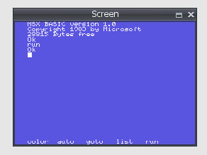
El control cliente es un fotograma donde podemos crear otros controles o cambiar su aspecto, etc. A través del control podemos cambiar su aspecto.
function GetClientRect () : list
Devuelve una lista con los componentes [x, y, w, h], donde (x, y) es la posición del área cliente dentro de la ventana y (w, h) su tamaño. Este tamaño tiene en cuenta si la ventana muestra o no menú.
function GetClientArea () : list
Devuelve exactamente el tamaño del área cliente, incluyendo el espacio ocupado por el menú. La lista que se retorna tiene estos componentes [x, y, w, h].
function ClientToScreen (x, y) : list
Convierte un punto (x, y) localizado dentro de las coordenadas de la zona cliente a otro punto ubicado en pantalla. La función retornará una lista [xs, ys] con el punto en coordenadas de pantalla.
function ScreenToClient (x, y) : list
Dado un punto (x, y) en coordenadas de pantalla, la función retornará otro punto [xc, yc] con la transformación a coordenadas locales de la zona cliente.
function SetStyle (style)
Modifica los flags de estilo de la ventana. Estos pueden ser:
| STYLE_CAPTION | Mostrar la barra de aplicación donde está el título y los botones. |
|---|---|
| STYLE_MAXIMIZE_BOX | Mostrar botón de maximizar ventana. |
| STYLE_CLOSE_BOX | Mostrar botón de cerrar ventana. |
| STYLE_RESIZE | Permitir que la ventana se pueda redimensionar. |
| STYLE_SHOW_MAXIMIZE | Crear la ventana maximizada inicialmente. |
| STYLE_SIZE_BOX | Mostrar bordes de la ventana. |
| STYLE_HIDE_MENU | Ocultar el menú cuando la ventana gana el foco. |
| STYLE_HIDE_MOUSE_CURSOR | Ocultar el cursor cuando la ventana gana el foco. |
| STYLE_HIDE_BACKGROUND | Ocultar el fondo cuando la ventana gana el foco. |
| STYLE_SHOW_FULLSCREEN | Definir una ventana en modo pantalla completa. |
function GetStyle ()
Obtiene los flags del estilo de la ventana. Véase SetSytle.
function AddStyle (flags)
Agrega uno o más estilos a los que ya tiene la ventana.
function RemoveStyle (flags)
Quita uno o más estilos de los que ya tiene la ventana.
function HasStyle(flag) : bool
Consulta la existencia de algún estilo o estilos entre los que ya tiene la ventana.
function SetBounds (x, y, w,_h)
Modifica la posición (x, y) y el tamaño (w, h) de la ventana.
function SetTitle (title)
Asigna una cadena de caracteres <title> como título de la ventana.
function GetTitle () : string
Retorna el titulo asignado a la ventana.
function IsMaximized () : bool
Indica si la ventana se encuentra maximizada en ese momento.
function IsForeground () : bool
Indica si la ventana tiene el foco y se encuentra seleccionada.
function Activate ()
Permite activar una ventana, y por tanto el programa que tiene asociado.
function Maximize ()
Maximiza una ventana.
function Restore ()
Restaura la posición y tamaño originales de una ventana antes de haber sido maximizada.
function GetTopWindow () : pointer
Devuelve la ventana padre que la controla, si existe. En caso de ser NULL el valor retornado, es que es una ventana creada por el desktop.
function GetProgram () : pointer
Obtiene el controlador del programa asociado a la ventana.
function AddHotKey (list, ctx, function, level = 0) : pointer
Añade un atajo de teclado asociado a la ventana. La combinación de teclas que forma el atajo se define en el parámetro <list>. Si la combinación se da y es válida, se lanzará una llamada a la función <function> del contexto <ctx>. Al atajo se le puede asociar un nivel <level> de acceso. La función retorna un controlador de atajo de teclado.
El nivel de acceso sirve principalmente en ventanas MDI donde podemos querer diferenciar atajos exclusivos del MDI con otros compartidos con la ventana padre. Para decidir el nivel asociado en un MDI se ha de usar la función SetHotkeysLevel.
Los atajos creados en las ventanas MDI realmente se agregan como atajos en la ventana padre. Por eso, si creamos un atajo igual al usado en la ventana padre con el mismo nivel, lo modificaremos y perderemos el original. En tal caso, conviene usar un nivel distinto al cero, que es el usado por defecto.
Si lo que queremos es que los atajos del padre no afecten al MDI, simplemente subiremos el nivel de atajo al MDI con la función SetHotkeysLevel y solo se tendrán en cuenta los atajos con nivel mayor o igual al indicado.
function RemoveHotKey (handle)
Elimina un controlador de atajo de teclado <handle>.
function RemoveHotKey (list, ctx)
Elimina cualquier atajo que establezca la combinación de teclas definida en <list> y que tenga como contexto asociado <ctx>.
function RemoveHotKeysWithContext (ctx)
Elimina cualquier atajo de teclado asociado a la ventana que tenga como contexto <ctx>.
function FindHotKeyByContext (ctx, function, level = 0) : pointer
Busca un atajo de teclado en la ventana que tenga asociado un contexto <ctx> y una función <function> y sea de nivel <level>.
function CenterToDesktop ()
Permite centrar la posición de la ventana con respecto al escritorio.
function SetModal (v)
Hace que la ventana gane acceso exclusivo, de manera que el resto de controles fuera de esa ventana quedan bloqueados.
function GetControlByName (name, inClientArea = true) : pointer
Obtiene un control hijo de la ventana con nombre <name>. En el caso de que <inClientArea> sea verdadero, solo se tendrán en cuenta los hijos o controles asociados a la zona cliente.
function AddSideControl (sideControl, position = UI_TOP)
Permite asignar comportamientos a los lados (bordes) de las ventanas, principalmente con el objetivo de redimensionar su tamaño si se ha especificado el estilo correspondiente.
function CreateDefaultFont () : pointer
Crea una instancia de la fuente de letra por defecto y la asocia a la ventana, de manera que una vez se destruya la ventana, lo harán también las instancias de fuentes de letra asociadas.
Un MDI es un tipo de ventana que puede ser creado por una ventana de aplicación. Por tanto, las ventanas MDI cuelgan de una ventana de aplicación. Dentro de estas ventanas podemos crear controles.
Ejemplo de creación:
_window = GetWindow();_mdi = _window.CreateMDI(10, 10, 200, 350);Para destruir un MDI, simplemente bastaría con borrar el objeto:
delete _mdi;Las ventanas MDI se ubican por encima de la ventana de aplicación. Por defecto, tienen un comportamiento y estilo visual que podemos modificar.
Estas ventanas tienen una barra de título con unos pequeños botones, además de unos marcos que permiten, si se quiere, la posibilidad de redimensionar el tamaño de la ventana. También es posible mover estas ventanas dinámicamente haciendo, por ejemplo, clic con el ratón sobre la barra de título.
Los botones disponibles en la barra de título de un MDI son: MAXIMIZAR y CERRAR.
El estilo con el que podemos crear una ventana MDI se asocia a los siguientes flags. Por defecto estos flags son: STYLE_CLOSE_BOX | STYLE_CAPTION | STYLE_SIZE_BOX | STYLE_RESIZE | STYLE_MAXIMIZE_BOX | STYLE_HIDE_MENU
| STYLE_CLOSE_BOX | Muestra el botón de cerrar |
|---|---|
| STYLE_CAPTION | Muestra una barra de título y botonera |
| STYLE_SIZE_BOX | Muestra el contorno de la ventana que permite redimensionar su área |
| STYLE_RESIZE | Permite redimensionar la ventana. Es posible hacerlo en vertical y/u horizontal. |
| STYLE_MAXIMIZE_BOX | Muestra el botón de maximización. La maximización extiende el tamaño que ocupa un MDI en todo el área cliente de la ventana de aplicación. |
| STYLE_HIDE_MENU | Permite ocultar el menú asociado a la ventana de aplicación en el caso de que el MDI gane el foco. |
Para modificar el estilo del MDI, deben usarse SetStyle, AddStyle, RemoveStyle (véanse en la sección Ventanas de aplicación)
A toda ventana de aplicación podemos crearle un menú. Este menú aparece en la parte superior de la pantalla. Un menú tiene Secciones y dentro de cada sección podemos crear nuevas secciones o ítems.
Para crear un menú:
_menu = _window.CreateMenu();
_section = _menu.AddSection("File");
_section.AddItem("Add link...", this, "OnAddLink");
_section.AddItem("Create link...", this, "OnCreateLink");
_section.AddItem("Edit link...", this, "OnEditLink");Podemos crear un separador entre opciones mediante:
_section.AddItem("", null, "");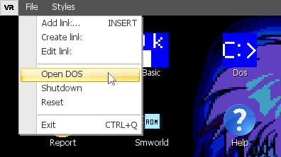
Al crearse el menú, se miran los Hotkeys asociados a la ventana para determinar si coinciden con las opciones y en ese caso, se muestra la combinación de teclas junto a cada entrada del menú. Se puede ver, en el ejemplo anterior, que la opción de menú “Add link…” tenía ya un Hotkey asociado a la tecla INSERT, y por eso se muestra junto a ella.
La interfaz de usuario se comunica con las aplicaciones a través de eventos. Se producen eventos, por ejemplo, cuando se hace clic sobre un botón, se arrastra un control hacia otro, se añade un elemento a una lista, etc. El interfaz permite avisar a las aplicaciones con la llamada a una función que tiene el siguiente prototipo:
function OnEvent (sender, event, params)
{
}Los parámetros son:
| sender | El control que envía el evento. Un puntero. |
|---|---|
| event | El ID del evento. Un número entero. |
| params | Una lista con 0 o varios parámetros dependiendo del tipo de evento. |
Eventos
| Etiqueta | Lista de parámetros |
|---|---|
| UI_EVENT_INIT | [] |
| UI_EVENT_DESTROY | [] |
| UI_EVENT_ENTER | [] |
| UI_EVENT_LEAVE | [] |
| UI_EVENT_MOUSE_MOVE | [btnId, mx, my] |
| UI_EVENT_MOUSE_DOWN | [btnId, mx, my] |
| UI_EVENT_MOUSE_UP | [btnId, mx, my] |
| UI_EVENT_MOUSE_WHEEL | [offset] |
| UI_EVENT_CLICK | [btnId, mx, my] |
| UI_EVENT_DOUBLE_CLICK | [btnId, mx, my] |
| UI_EVENT_VALIDATING | [ValidateArgs] |
| UI_EVENT_VALIDATED | [] |
| UI_EVENT_FOCUS_LEAVE | [controlLost, controlWin] |
| UI_EVENT_FOCUS_ENTER | [controlLost, controlWin] |
| UI_EVENT_POSITION_CHANGED | [] |
| UI_EVENT_SIZE_CHANGED | [] |
| UI_EVENT_BOUNDS_CHANGED | [] |
| UI_EVENT_ENABLE_CHANGED | [] |
| UI_EVENT_DRAG_START | [] |
| UI_EVENT_DRAG_END | [frame, cancel] |
| UI_EVENT_DRAG_RECEIVED | [frame, x, y] |
| UI_EVENT_KEYDOWN | key |
| UI_EVENT_KEYUP | key |
| UI_EVENT_CHAR | [char] |
| UI_EVENT_CHECKED_CHANGED | [] |
| UI_EVENT_PRESSED_CHANGED | [] |
| UI_EVENT_SHOW | [] |
| UI_EVENT_HIDE | [] |
| UI_EVENT_VALUE_CHANGED | [] |
| UI_EVENT_MINVALUE_CHANGED | [] |
| UI_EVENT_MAXVALUE_CHANGED | [] |
| UI_EVENT_ANIMATION_PLAY | [] |
| UI_EVENT_ANIMATION_PAUSED | [factor] |
| UI_EVENT_ANIMATION_STOP | [userStop] |
| UI_EVENT_ANIMATION_LOOP | [] |
| UI_EVENT_FONT_CHANGED | [key, font] |
| UI_EVENT_FONT_ADDED | [key, font] |
| UI_EVENT_TEXT_CHANGED | [] |
| UI_EVENT_TEXTDOC_CURSOR_CHANGED | [x, y, sy] |
| UI_EVENT_TEXTDOC_TEXT_DELETED | [] |
| UI_EVENT_TEXTDOC_TEXT_ADDED | [] |
| UI_EVENT_SCROLL_HORIZONTAL | [] |
| UI_EVENT_SCROLL_VERTICAL | [] |
| UI_EVENT_RADIO_CHECKED_CHANGED | [lostChecked, gainChecked] |
| UI_EVENT_MOTION_CONTROLLER_AXIS | [axisId, value, id] |
En toda ventana se pueden crear controles. Los controles son los objetos visuales que componen dicha ventana (frames, botones, listas, etc.). En general, son áreas definidas con posición y tamaño, que tienen un comportamiento y una representación específicos. Tanto el origen como el tamaño de un control se miden en pixeles.
Los controles tienen jerarquía. Unos controles pueden ser hijos de otros. En esta herencia hay propiedades que se pueden ver afectadas, como la posición, el tamaño, la visibilidad o el color.
Todos los controles tienen una serie de métodos comunes:
function SetName (name)
Asigna un nombre <name> al control, lo que permite identificarlo. Esto no es obligatorio, pero hace falta en el caso de querer usar la función GetControlByName.
function GetName () : string
Retorna el nombre asociado al control.
function Show ()
Hace visible el control.
function Hide ()
Hace invisible el control.
function EnableClipping (v)
Activa el recorte de los hijos dentro del área visible del padre. En caso de que <v> sea verdadero, ningún hijo se mostrará fuera del área visible del padre.
function GetVisible () : bool
Indica si el control está visible. Tiene en cuenta la herencia paterna. O sea, un control es invisible si él mismo lo es o alguno de sus padres es invisible.
function GetVisibleInternal () : bool
Obtiene la visibilidad asociada al control. No tiene en cuenta la herencia de visibilidad de sus padres.
function IsHidden () : bool
Indica si el control es visible. Esta función no solo tiene en cuenta la propiedad visible del mismo; además, detecta si está fuera de pantalla u oculto tras otro control.
function IsDragging () : bool
Indica si el control se encuentra en una orden pendiente de Drag & Drop.
function ClampToScreen ()
Asegura que tanto la posición como el tamaño del control no exceden de las dimensiones del escritorio. En tal caso, las ajusta.
function SetClampedToScreen (enable)
Obliga a que la posición y tamaño del control nunca excedan de las dimensiones del escritorio. Cuando <enable> es verdadero, cada vez que el control cambie de posición o tamaño, se verificará esta condición y se ajustará automáticamente.
function GetLeft () : int
Devolverá la posición origen horizontal (x).
function GetTop () : int
Devolverá la posición origen vertical (y).
function GetWidth () : int
Devuelve el ancho del control, o sea su tamaño horizontal.
function GetHeight () : int
Devuelve el alto del control, o sea su tamaño vertical.
function GetRight () : int
Devuelve la posición del extremo derecho del control.
Equivale a: GetLeft() + GetWidth() -1.
function GetBottom () : int
Devuelve la posición del extremo inferior del control.
Equivale: GetTop() + GetHeight() - 1.
function GetBounds () : list
Retorna una lista con los elementos: [GetLeft(), GetTop(), GetWidth(), GetHeight()].
function GetPosition () : list
Retorna una lista con los elementos: [GetLeft(), GetRight()].
function GetSize () : list
Retorna una lista con los elementos: [GetWidth(), GetHeight()].
function GetCenter () : list
Retorna una lista con los elementos: [GetLeft() + GetWidth()/2, GetTop() + GetHeight()/2].
function GetHCenter () : float
Retorna el valor GetLeft() + GetWidth() / 2.
function GetVCenter () : float
Retorna el valor GetTop() + GetHeight() / 2.
function SetLeft (left)
Asigna el valor de posición origen horizontal <left>.
function IncLeft (value, cutWidth = false)
Incrementa el valor de la posición origen horizontal en <value>. Si usamos <cutWidth> a verdadero, también reduciremos el tamaño horizontal del control en <value>.
function SetTop (top)
Asigna el valor de posición origen vertical <top>.
function IncTop (value, cutHeight = false)
Incrementa el valor de la posición origen vertical en <value>. Si usamos <cutHeight> a verdadero, también reduciremos el tamaño vertical del control en <value>.
function IncPosition (offx, offy, cutSize = false)
Equivale a hacer un IncLeft y un IncTop en la misma llamada.
function IncSize (offx, offy, cutPosition = false)
Incrementa el tamaño del control en (offx, offy). Si usamos <cutPosition> a verdadero, reduciremos ese incremento también en la posición origen. Esto permite agrandar tanto por arriba/izquierda como por abajo/derecha.
function IncWidth (value, cutLeft = false)
Incrementa el ancho del control. En caso de que <cutLeft> sea verdadero, reduciremos ese incremento en la posición origen horizontal.
function IncHeight (value, cutTop = false)
Incrementa el alto del control. En caso de que <cutTop> sea verdadero, reduciremos ese incremento en la posición origen vertical.
function IncBounds (offx, offy, offw, offh)
Incrementa la posición origen en (offx, offy) y al mismo tiempo incrementa el tamaño del control en (offw, offh).
function SetWidth (width)
Asigna el tamaño horizontal (ancho) del control.
function SetHeight (height)
Asigna el tamaño vertical (alto) del control.
function SetPosition (left, top)
Asigna el origen del control a su nueva posición (left, top).
function SetSize (width, height)
Determina el tamaño de un control y lo establece a (width, height).
function CenterToParent ()
Centra la posición de un control a su padre. Si no tiene padre, lo hará con respecto al escritorio.
function SetMinimumSize (w, h)
Establece el tamaño mínimo que puede alcanzar el control.
function SetMaximumSize (w, h)
Establece el tamaño máximo que puede alcanzar el control.
function GetMinimumSize () : list
Obtiene el tamaño mínimo en una lista [wMin, hMin].
function GetMinimumWidth () : int
Obtiene el tamaño mínimo horizontal.
function GetMinimumHeight () : int
Obtiene el tamaño mínimo vertical.
function GetMaximumWidth () : int
Obtiene el tamaño máximo horizontal.
function GetMaximumHeight () : int
Obtiene el tamaño máximo vertical.
function SetBounds (left, top, width, height)
Establece tanto origen del control (left, top) como tamaño del mismo (width, height).
function PointToClient (x, y)
Dado un punto en coordenadas absolutas (es decir, respecto al escritorio), determina su posición relativa al control.
function PointToScreen (x, y)
Dado un punto en coordenadas locales (relativas al control), determina su posición absoluta.
function GetFBounds () : list
Devuelve las características absolutas (coordenadas X e Y, ancho y altura) de un control en el escritorio: [x, y, w, h]. Estos valores determinan exactamente la posición y tamaño del control una vez aplicadas todas las dependencias y transformaciones que se requieran.
function CursorInRect (x, y, w, h) : bool
Indica si el cursor de escritorio se encuentra en el rectángulo definido por (x, y) y tamaño (w, h). Las coordenadas (x, y) son locales al control, siendo (0, 0) el origen del control.
function GetCursorPoint () : list
Obtiene la posición del cursor de escritorio teniendo en cuenta las transformaciones de escala aplicadas al control.
function AlignToParent (flags, offset = 0)
Permite alinear un control con respecto a su padre utilizando los <flags>:
| UI_HCENTER | Lo centra horizontalmente y le resta <offset>. |
|---|---|
| UI_VCENTER | Lo centra verticalmente y le resta <offset>. |
| UI_LEFT | Le suma <offset> a la posición horizontal. |
| UI_RIGHT | Lo coloca a la derecha y lo separa <offset>. |
| UI_BOTTOM | Lo coloca abajo y lo separa <offset>. |
| UI_TOP | Le suma <offset> a la posición vertical. |
function SetPin (flags)
Permite establecer los flags de anclado. Estos flags permiten establecer cómo se ve afectado un control con respecto al cambio de posición y tamaño de su padre. Los flags pueden ser uno o varios de los siguientes:
| UI_PIN_LEFT | Anclar a la izquierda. |
|---|---|
| UI_PIN_RIGHT | Anclar a la derecha. |
| UI_PIN_TOP | Anclar arriba. |
| UI_PIN_BOTTOM | Anclar abajo. |
| UI_PIN_ALL | Una combinación de todos los anteriores. |
Ejemplo:
_button.SetPin(UI_PIN_LEFT | UI_PIN_BOTTOM);function AddPin (flags)
Añade un flag de anclado a los ya existentes.
function RemovePin (flags)
Elimina un flag de anclado de entre los existentes.
function HasPin (flags) : bool
Pregunta por un flag de anclado. En caso de estar activo, devolverá verdadero.
function PinToBounds ()
Ajusta la posición y el tamaño del control a los del padre. Al mismo tiempo, aplica un UI_PIN_ALL, de manera que crecerá o decrecerá en proporción al padre.
function ClearPin ()
Elimina todos los flags de anclado asignados. Equivale a un SetPin(0).
function SetAlpha (value)
Determina el nivel de transparencia/opacidad del control. Si <value> es 0, el control será totalmente transparente. Si <value> es 255, el control será totalmente opaco. Por defecto todos los controles se crean con 255 (totalmente opacos).
function GetAlpha () : float
Obtiene la transparencia asociada al control.
function GetEffectiveAlpha () : float
Obtiene la transparencia efectiva, teniendo en cuenta la jerarquía del control. Si un padre tiene un alpha de 127, y el hijo de 255, el alpha efectivo será de 127 ((255*127)/255).
function EnableExternalMove (context, func)
Activa la actualización externa del control. Esto permite asociar un contexto y funciones externos donde gestionar o controlar la lógica del control.
function EnableExternalDraw (context, func, flags = 1)
Activa la actualización externa de la representación gráfica del control. Esto permite asociar un contexto y funciones externos donde poder aplicar cambios en la visualización del control. Mediante el uso de <flags> controlamos en qué momentos queremos que se invoque la función:
| 1 | Antes de que se dibujen los gráficos asociados al control. |
|---|---|
| 2 | Antes de que se dibujen los hijos del control. |
| 4 | Después de dibujar los hijos del control. |
function SetScale (value)
Asigna una escala que afecta directamente al tamaño y posición del objeto (si tiene EnableScalePosition activado). El valor de escala <value> es un número con decimales. Si <value> es 1, el control se dibujará con las dimensiones establecidas. Si <value> es 0.5, el control se dibujará a la mitad de su tamaño. Si <value> es 2, el control se dibujará al doble de su tamaño.
function GetScale () : float
Obtiene la escala asociada al control.
function GetEffectiveScale () : float
Obtiene la escala efectiva una vez aplicada la escala en jerarquía.
function EnableScalePosition ()
Hace que la escala afecte también a la posición del control.
function DisableScalePosition ()
Hace que la escala solo afecte a las dimensiones del control (ancho y alto).
function GetScalePosition () : list
Devuelve una lista de dos componentes con la posición del control, teniendo en cuenta la escala aplicada.
function SetScalePivot (x, y)
Asigna la posición relativa del pivote para el escalado. Por defecto esta posición es el origen del objeto (top, left). En este caso, sería como hacer SetScalePivot (0, 0).
function SetScalePivotX (x)
Asigna la posición relativa del pivote para el escalado solo en la componente horizontal.
function SetScalePivotY (y)
Asigna la posición relativa del pivote para el escalado solo en la componente vertical.
function GetScalePivot () : list
Obtiene una lista de dos componentes con el pivote de escalado. Por defecto [0, 0].
function GetScalePivotX () : float
Devuelve la componente horizontal del pivote de escalado. Por defecto es 0.
function GetScalePivotY () : float
Devuelve la componente vertical del pivote de escalado. Por defecto es 0.
function SetUserData (data)
Asocia datos de usuario al control. <data> puede ser cualquier tipo de dato aceptado en el script.
function GetUserData () : value
Obtiene los datos de usuario asociados al control.
function SetMask (texture)
Asigna una textura de máscara al control. La textura de máscara es una textura que mediante color blanco y negro define qué zona del control es visible o no. La zona en negro de dicha textura enmascara al control y hace no visible esa parte del gráfico del control.
function EnableMask (value, broadcastChildren = false)
Permite activar el uso de la textura de máscara en el control. Permite también aplicar en jerarquía, de padre a hijos, el uso de la máscara poniendo <broadcastChildren> a verdadero.
function AreAllTexturesLoaded (askToChildren = true) : bool
La carga de texturas puede ser en segundo plano. Esta función permite consultar el estado de la carga y saber si el proceso se ha completado o no. También permite hacer la consulta en jerarquía de padre a hijos poniendo <askToChildren> a verdadero.
function SetParent (parent)
Establece el padre del control. Si el control ya era hijo de otro control, al aplicar esta función dejará de ser hijo de ese control y pasará a serlo de <parent>.
function SetOwner (owner)
Determina el control propietario.
function GetOwner () : pointer
Obtiene el control propietario.
function GetChildren () : list
Devuelve una lista con todos los controles hijos. Cada elemento de la lista es un puntero a cada control hijo.
function GetControlByName (name) : pointer
Devuelve un objeto hijo con nombre <name>. En caso de que no exista ningún control con ese nombre, devolverá NULL.
function GetChildrenCount ()
Determina el número de controles hijos existente.
function GetParent () : pointer
Devuelve el padre del control. En caso de que no tenga, devolverá NULL.
Este control permite, a su vez, crear otros controles dentro del mismo. Un frame define un área de trabajo.
Métodos disponibles:
function GetDesktop () : pointer
Obtiene acceso al controlador de escritorio.
function GetView () : pointer
Obtiene acceso al controlador de UI.
function GetEngine ()
Obtiene acceso al controlador principal.
function ClearFonts ()
Elimina todas las fuentes de letra existentes.
function DestroyFont (font)
Elimina una fuente de letra creada previamente. El parámetro es un puntero a un controlador de fuente.
function Activate ()
Activa el frame.
function SetMouseCursor (cursor)
Permite establecer un tipo de gráfico para el cursor. Estos tipos están disponibles a través del controlador Desktop y son estos:
| CURSOR_NORMAL |
|---|
| CURSOR_MOVE |
| CURSOR_SELECTION |
| CURSOR_HAND |
| CURSOR_PROHIBITED |
| CURSOR_RESIZE_HORIZONTAL |
| CURSOR_RESIZE_VERTICAL |
| CURSOR_RESIZE_DIAG_LR |
| CURSOR_RESIZE_DIAG_RL |
| CURSOR_WAITING |
| CURSOR_DRAGGING_MOVE |
function SetBgColor (color)
Determina un color de fondo para el área que ocupa el frame. El parámetro <color> es un entero con las componentes ARGB empaquetadas A8R8G8B8 (véanse RGB y ARGB).
function CreateFont (name, size) : font
Crea un controlador de fuente a partir de un nombre de fuente <name> y un tamaño <size>. El archivo de fuente debe ser accesible por el sistema, en caso contrario se devolverá NULL.
function CreateDefaultFont (size) : font
Crea una fuente por defecto, utilizando la que haya por defecto en el tema UI establecido y con tamaño <size>.
function GetClientControl () : pointer
Devuelve el frame que representa el área de cliente donde el usuario puede agregar nuevos controles.
function CreateControl (class, name = null, params = []) : pointer
Crea un control a partir del nombre de clase <class>. Se le puede asociar un nombre al control mediante una cadena de texto en <name>. También se le pueden pasar parámetros al constructor del control en <params> si fuese necesario. Esta función, además de permitir crear controles ya existentes en el UI, nos permite poder crear controles ad hoc, bien heredados o desde cero.
function CreateControl (class, x, y, w, h, name = null, params = []) : pointer
Crea un control (véase CreateControl) y además le aplica una posición y tamaño.
function CreateRect (x, y, w, h, color) : pointer
Crea un control de tipo Rect. Este control es un rectángulo con color con posición relativa a la zona de cliente (x, y) y tamaño (w, h).
Ejemplo:
_rect = GetTopWindow().CreateRect(10, 10, 100, 100, RGB(255,0,0));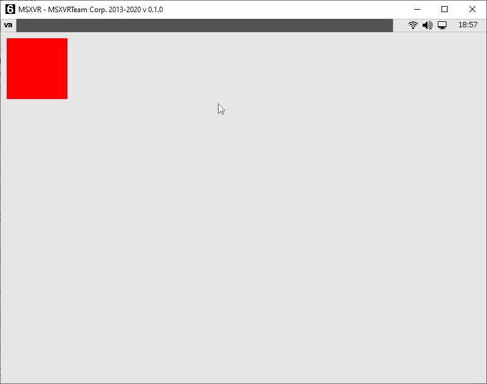
function CreateLabel (x, y, w, h = -1, text = "", fontH = -1) : pointer
Crea una etiqueta de texto en la posición (x, y) y con tamaño (w, h). En el caso de que <h> sea -1, usará el tamaño determinado por la fuente de letra por defecto. Del mismo modo <fontH> igual a -1 indica que se use el tamaño por defecto para la fuente.
Ejemplo:
_label = GetTopWindow().CreateLabel(10, 10, 100, -1, "Label");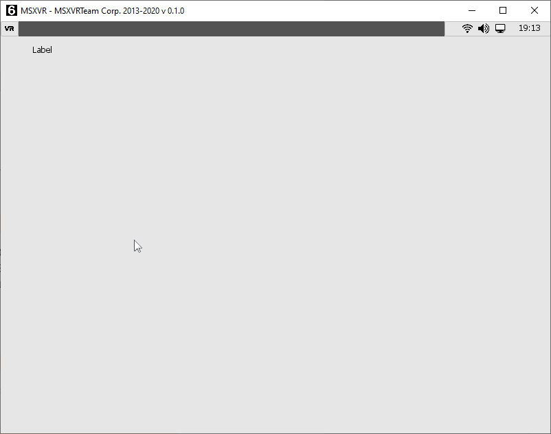
function CreateImage (x, y, w, h, texName = "") : pointer
Crea una imagen a partir de la ruta nativa al archivo pasada como parámetro en <texName>. La textura/imagen se colocará en (x, y) relativa al área cliente y con tamaño (w, h).
Ejemplo:
_img = GetTopWindow().CreateImage(10, 10, 200, 200, GetEngine().GetPath("logo.png"));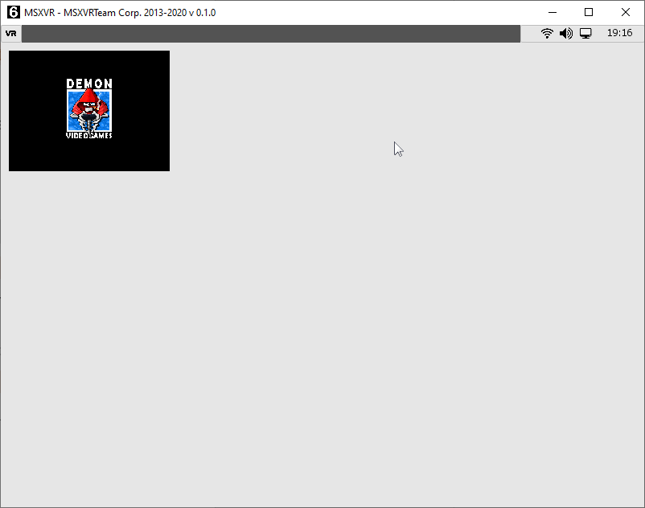
function CreateColorPicker (x, y, w, h = -1)
Crea un control de selección de color ARGB en la posición (x, y) relativa al área cliente con tamaño (w, h). Si <h> es -1, se utilizará el tamaño más apropiado por defecto. Este control está compuesto por un Rect que indica el color seleccionado y un botón que permite abrir un seleccionador de color.
Ejemplo:
_img = GetTopWindow().CreateColorPicker(10, 10, 100, -1);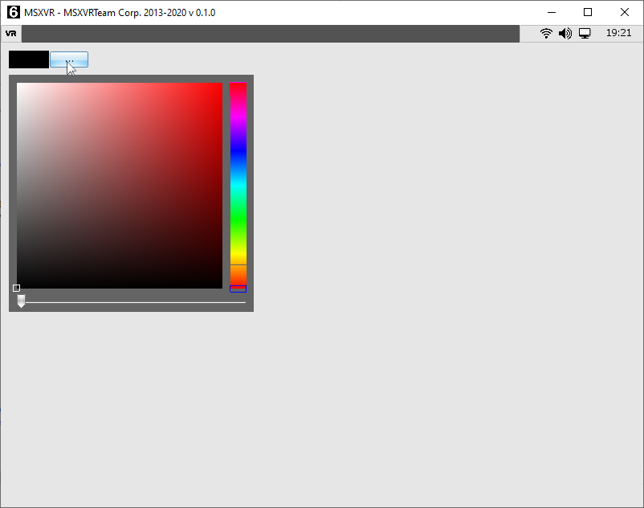
function CreateTextBox (x, y, w, h = -1, fontH = 0) : pointer
Crea un control de caja de texto en la posición (x, y) relativa al área cliente y con tamaño (w, h). En el caso de <h> igual a -1, elegimos el alto por defecto para este tipo de control. Si no especificamos ningún tamaño de fuente en <fontH>, se usará el tamaño de fuente por defecto.
Ejemplo:
_tb = GetTopWindow().CreateTextBox(10, 10, 100);
_tb.SetText("Texto");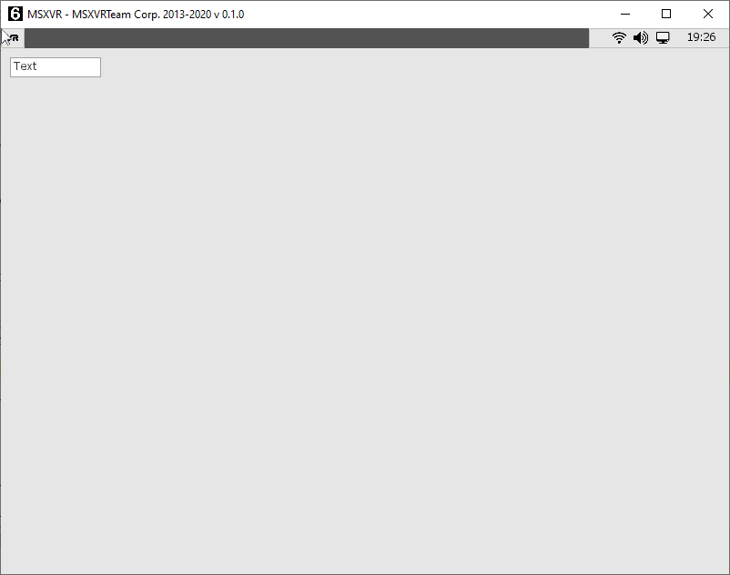
function CreateListBox (x, y, w, h) : pointer
Crea un control lista de texto en la posición (x, y) relativa al área cliente y con tamaño (w, h).
Ejemplo:
_lb = GetTopWindow().CreateListBox(10, 10, 100, 200);
_lb.AddItem("Item1");
_lb.AddItem("Item2");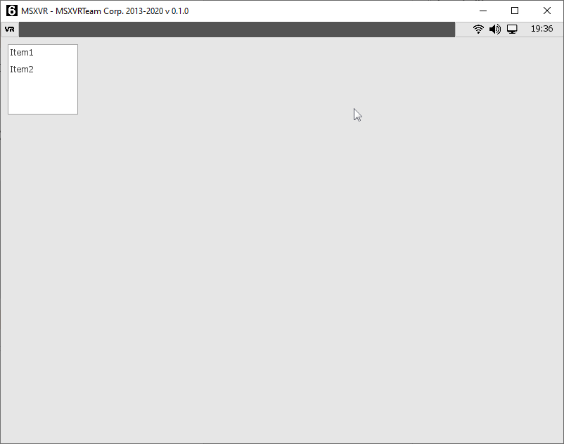
function CreateComboBox (x, y, w, h = -1) : pointer
Crea un control caja seleccionable en la posición (x, y) relativa al área cliente y con tamaño (w, h).
Ejemplo:
_lb = GetTopWindow().CreateComboBox(10, 10, 100);
_lb.AddItem("Item1");
_lb.AddItem("Item2");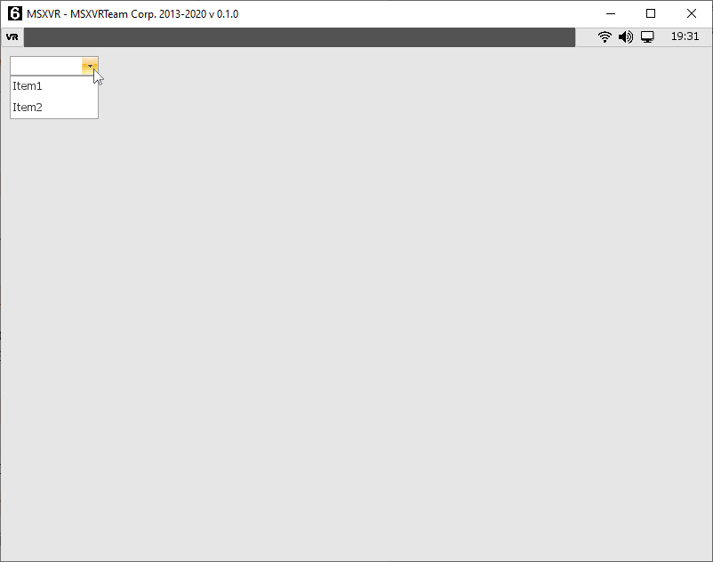
function CreateTrackbar (x, y, size, layout = UI_HORIZONTAL) : pointer
Crea un control barra de seguimiento en la posición (x, y) relativa al área cliente. El ancho o el alto del control dependerán de <size> y del parámetro <layout>, que podrá ser UI_HORIZONTAL o UI_VERTICAL.
Ejemplo:
_tb = GetTopWindow().CreateTrackbar(10, 10, 100, UI_HORIZONTAL);function CreateScrollBar (x, y, size, layout = UI_VERTICAL) : pointer
Crea un control de barra de desplazamiento en la posición (x, y) relativa al área cliente. El ancho o alto del control dependerán de <size> y del parámetro <layout>, que podrá ser UI_HORIZONTAL o UI_VERTICAL.
Ejemplo:
_ctrl = GetTopWindow().CreateScrollbar(10, 10, 100, UI_HORIZONTAL);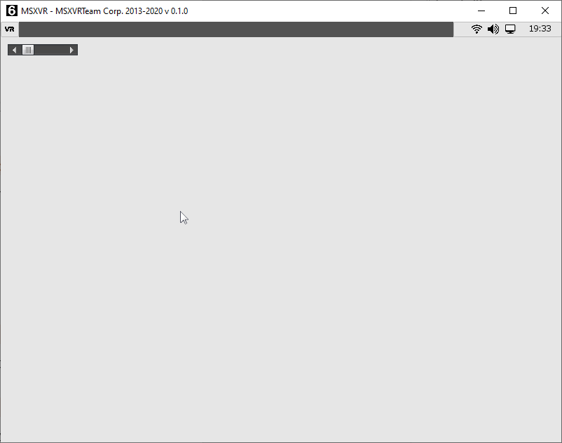
function CreateFrame (x, y, w, h) : pointer
Crea un control frame en la posición (x, y) relativa al área cliente y con tamaño (w, h). En un frame podemos crear a su vez otros frames y/o controles.
function CreateScrollFrame (x, y, w, h) : pointer
Crea un control frame de scroll. Este frame permite asociar contenido desplazable en su interior.
function CreateButton (x, y, w, h = -1, text = "") : pointer
Crea un control botón en la posición (x, y) relativa al área cliente y con tamaño (w, h). Podemos crear el botón con un texto <text>. Si <h> es -1 se usará el tamaño por defecto para este tipo de control.
Ejemplo:
_button = GetTopWindow().CreateButton(10, 10, 100, -1, "Button");function CreateCheckBox (x, y, w, h = -1, text = "") : pointer
Crea una casilla seleccionable en la posición (x, y) relativa al área cliente y con tamaño (w, h). Podemos crear la casilla con un texto <text>. Si <h> es -1 se usará el tamaño por defecto para este tipo de control.
Ejemplo:
_cb = GetTopWindow().CreateCheckBox(10, 10, 100, -1, "CheckBox");function CreateRadioButton (x, y, w, h = -1, text = "") : pointer
Crea una casilla seleccionable única. Si tenemos varias casillas hermanas de este tipo, solo una de ellas puede estar seleccionada. Podemos crear la casilla con un texto <text>. Si <h> es -1 se usará el tamaño por defecto para este tipo de control.
Ejemplo:
_rb = GetTopWindow().CreateRadioButton(10, 10, 100, -1, "Radio Button");function CreateImageButton (x, y, w, h, imageNormal = "“, imagePressed =”“, imageOver =”“, cbCtx = null, callback =”") : pointer
Crea un botón con aspecto a partir de imágenes. Estableceremos la posición (x, y) y tamaño (w, h) a utilizar, junto a las rutas nativas a las diferentes imágenes que representarán los aspectos o estados del botón. En caso de no usar ruta (cadena vacía), se ignorará el cambio de aspecto cuando haya cambio de estado. Los estados son:
| NORMAL | Cuando el botón ni está seleccionado ni se opera con él. |
|---|---|
| PRESSED | Cuando el botón está siempre presionado con un clic de cursor. |
| OVER | Cuando el cursor está encima del control. |
Se podrá establecer el SetOnClick del botón directamente si pasamos como parámetro el contexto <cbCtx> y la función a invocar <callback>.
Ejemplo:
_ib = GetTopWindow().CreateImageButton(10, 10, 32, 32, GetEngine().GetPath("icon_os.png"));function CreateRichTextEditor (x, y, w, h) : pointer
Crea una caja de edición de texto avanzada en la posición (x, y) y con tamaño (w, h) dentro del área cliente. Este tipo de control permite editar texto con varias fuentes, imágenes, colores y estilos. Está pensado para incluir un control de edición de textos más avanzado.
function CreateSplitter (x, y, w, h, direction = UI_VERTICAL) : pointer
Crea un tipo particular de frame, con lo que es posible albergar otros controles dentro del mismo. Este control permite crear zonas divisorias que pueden desplazarse y cambiar su tamaño de forma dinámica.
Ejemplo:
_splitter = GetTopWindow().CreateSplitter(10, 10, 100, 100, UI_VERTICAL);function CreateProgressBar (x, y, size, direction = UI_HORIZONTAL, overrideThemeSize = -1) : pointer
Crea una barra de progreso en la posición (x, y) y con tamaño <size> dependiendo de la dirección <direction> a utilizar: UI_HORIZONTAL o UI_VERTICAL. Si <overrideThemeSize> es -1, se usará el tamaño establecido por defecto para ese control en el tema UI activo. Si es un valor >= 0 se usará el tamaño indicado.
Ejemplo:
_pb = GetTopWindow().CreateProgressbar(10, 10, 100, UI_HORIZONTAL);_pb.SetMinValue(0);
_pb.SetMaxValue(100);
_pb.SetValue(50);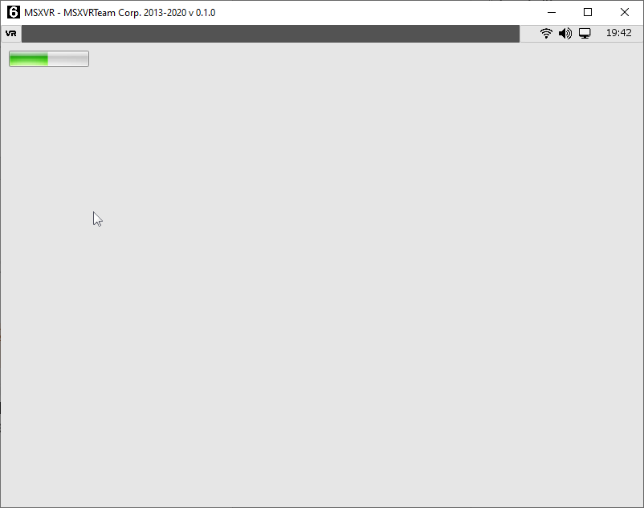
function CreateSpin (x, y, w, h = -1, fontH = -1) : pointer
Crea un objeto Spin en la posición (x, y) y con tamaño (w, h). Si <h> es -1 se usará el tamaño establecido por defecto para este tipo de controles con en tema UI activo.
Ejemplo:
_spin = GetTopWindow().CreateSpin(10, 10, 100);function CreateGroupBox (x, y, w, h, text = "", textAlign = UI_LEFT) : pointer
Crea un grupo donde contener otro tipo de controles. Los grupos representan visualmente difentes áreas mediante un borde y un texto <text> que hace de título de grupo.
Ejemplo:
_gb = GetTopWindow().CreateGroupBox(10, 10, 100, 100, "GroupBox");Es un tipo de frame pensado para poder desplazar los controles que contiene en su interior. Es una especialización (hereda) del control Frame.
Tiene disponibles los métodos de Frame, y además:
function SetScrollChild (frame)
Permite asociar el frame que hará de contenedor de controles y a su vez podrá gestionar su desplazamiento.
function GetScrollChild () : pointer
Obtiene el frame contenedor.
function GetHorizontalScroll () : float
Obtiene el desplazamiento horizontal actual en base al rango.
function GetHorizontalScrollRange () : float
Obtiene el desplazamiento posible en función del ancho del frame contenedor.
function GetVerticalScroll () : float
Obtiene el desplazamiento vertical actual en base al rango.
function GetVerticalScrollRange () : float
Obtiene el desplazamiento posible en función del alto del frame contenedor.
function SetHorizontalScroll (scroll)
Establece el desplazamiento horizontal. <scroll> es un valor en base al rango.
function SetVerticalScroll (scroll)
Establece el desplazamiento vertical. <scroll> es un valor en base al rango.
function GetHorizontalScrollPctg () : float
Obtiene el desplazamiento horizontal normalizado (valores entre 0 y 1).
function SetHorizontalScrollPctg (scroll)
Establece el desplazamiento horizontal. <scroll> es un valor entre 0 y 1.
function GetVerticalScrollPctg () : float
Obtiene el desplazamiento vertical normalizado (valores entre 0 y 1).
function SetVerticalScrollPctg (scroll)
Establece la posición del desplazamiento vertical normalizada. <scroll> será un valor entre 0 y 1.
function SetOnClick (ctx, function)
Establece el contexto <ctx> y el nombre de función <function> que se invocará cuando se haga clic sobre un botón. El clic es una pulsación y posterior liberación del cursor sobre el botón.
function SetOnPress (ctx, function, ms = 100)
Establece el contexto <ctx> y el nombre de función <function> que se invocará cuando se detecte la pulsación continua del botón. La llamada al evento se realizará cada cierto número de milisegundos <ms> que indiquemos.
function SetTextColor (color)
Establece el color del texto mostrado en el botón.
function SetTextAlign (align)
Establece la alineación del texto en el botón. Los valores de <align> podrán ser:
| DT_LEFT | Ajuste izquierda |
|---|---|
| DT_TOP | Ajuste arriba |
| DT_RIGHT | Ajuste derecha |
| DT_BOTTOM | Ajuste abajo |
| DT_CENTER | Ajuste centrado horizontal |
| DT_VCENTER | Ajuste centrado vertical |
function GetText () : string
Obtiene el texto que muestra un botón.
function SetFont (name, size)
Establece la fuente usada para el texto que muestra el botón. Se indicará un nombre de fuente disponible <name> y un tamaño <size>.
function SetFontSize (size)
Establece el tamaño <size> que queremos dar a la fuente actual usada para representar el texto que muestra el botón.
function SetIcon (imagePath, w = -1, h = -1)
Establece la imagen que queremos representar como icono del botón. Se ha de indicar la ruta al archivo de la imagen <imagePath> y podemos indicar el tamaño de la misma dentro del botón (w, h). En caso de usar -1 para el ancho y/o alto, estaremos indicando que se use el tamaño original obtenido del archivo de la imagen.
function SetIconColor (color)
Establece el color de tintado del icono representado en el botón. Si el <color> es blanco, es decir RGB(255,255,255), el icono se representará con su color original.
function SetDefaultFont ()
Establece la fuente de letra por defecto usada por el tema UI en curso en el texto representado por el botón.
function SetColoredButton (normalColor, highlightColor = 0, pressedColor = 0, disabledColor = 0, chechedColor = 0)
Permite indicar colores planos en vez de texturas para los distintos estados del botón. Si el color de los estados es cero (totalmente transparente), se estará indicando que no se aplique el cambio de color para ese estado.
function SetNormalColor (color)
Establece un color plano para el estado “normal” de un botón.
function SetHighlightColor (color)
Establece un color plano para el estado “highlight” de un botón.
function SetPressedColor (color)
Establece un color plano para el estado “pressed” de un botón.
function SetDisabledColor (color)
Establece un color plano para el estado “disabled” de un botón.
function SetCheckedColor (color)
Establece un color plano para el estado “checked” de un botón.
function SetTintColor (color)
Aplica un color de tinta para los distintos estados gráficos asociados a un botón. En el caso de que <color> sea blanco, es decir RGB(255,255,255), se utilizará el color por defecto de los distintos estados. Si el color, por ejemplo, fuese un rojo, es decir RGB(255,0,0), los gráficos de los estados del botón se verían teñidos de color rojo.
function SetTextPadding (x, y)
Establece un margen superior e inferior para el texto mostrado en el botón.
function SetPressedTextOffset (x, y)
En el caso de que haga pulsación sobre un botón, establece cuánto desplazamiento sufrirá el texto mostrado. Esto permite crear un efecto visual más reforzado.
function GetPressedTextOffset () : list
Obtiene el offset [x, y] asociado al desplazamiento del texto en estado “pressed”.
Es un tipo de botón que permite albergar dos estados, encendido y apagado.
Además de los métodos de un botón, dispone de estos otros:
function SetOnChange (ctx, function)
Cuando el estado de un checkbox cambia, se invoca esta función.
function SetChecked (v)
Establece el estado de un checkbox. El parámetro <v> es un booleano.
function GetChecked () : bool
Obtiene el estado actual de un checkbox.
function SetColor (c)
Establece el color seleccionado <c> como ARGB dentro del control.
function GetColor () : int
Obtiene el color actualmente seleccionado dentro del control.
function SetOnColorChanged (ctx, function)
Cuando cambia el color seleccionado dentro del control, se invoca esta función.
Es un control de lista combinada. Dispone de una caja de texto, de un botón de despliegue de lista y de una lista.
function GetSelectedIndex () : int
Retorna el índice del elemento de la lista seleccionado, empezando a contar desde cero. En caso de que no haya ninguno seleccionado devolverá -1.
function SelectIndex (index)
Marca como seleccionado el elemento con posición <index> dentro de la lista. En el caso de que el índice usado esté fuera de rango, se ignorará la operación.
function SelectItemByUserData (userData)
Selecciona el elemento que tenga asociado el valor de datos de usuario igual al proporcionado como parámetro <userData>.
function SelectItemByText (text)
Selecciona el elemento que tenga el mismo texto que el indicado como parámetro <text>.
function SetText (text)
Establece el texto que aparece en la caja de texto del control.
function AddItem (text, userData = null)
Añade un elemento a la lista. En la lista veremos el texto <text> y podremos asociar a ese elemento datos de usuario <userData>.
function SetItemText (ix, text)
Establece el texto <text> asociado a un elemento con índice <ix> dentro de la lista.
function SetItemUserData (ix, userData)
Establece los datos de usuario <userData> asociados al elemento con índice <ix> dentro de la lista.
function GetItemUserData (ix = -1) : pointer
Obtiene los datos de usuario asociados al elemento con índice <ix> dentro de la lista.
function ClearItems ()
Borra todos los elementos de la lista.
function RemoveItem (ix)
Elimina el elemento con índice <ix> dentro de la lista.
function FindItemByText (text) : int
Obtiene el índice del elemento dentro de la lista, cuyo texto coincide con el facilitado como parámetro <text>. En caso de no encontrarse ese elemento, se devolverá -1.
function FindItemByUserData (userData) : int
Obtiene el índice del elemento dentro de la lista, donde los datos de usuarios coinciden con los facilitados como parámetro <userData>. En caso de no encontrarse ese elemento, se devolverá -1.
function GetSelectedText () : string
Devuelve el texto asociado al elemento seleccionado. Si no hay ningún elemento seleccionado devolverá cadena vacía.
function GetSelectedUserData () : pointer
Devolverá los datos de usuario asociados al elemento seleccionado. Si no hay ningún elemento seleccionado devolverá NULL.
function RemoveSelectedItem ()
Elimina de la lista el elemento seleccionado.
function GetNumItems () : int
Devuelve el número de elementos en la lista.
function SetOnButtonClick (ctx, function)
En el caso de que que se haga clic en el botón de desplegar la lista, se invocará esta función.
function SetOnChange (ctx, function)
En el caso de que cambie la selección de la lista, se invocará esta función.
function Apply (ctx, function, userData = null)
Se ejecutará la función <function> en el contexto <ctx> con el siguiente prototipo:
function <event> (comboBox, itemIndex, userData);Por tanto, por cada elemento de la lista combinada, se hará una llamada a la función.
Este tipo de control permite representar una textura (imagen) en una posición, tamaño y color establecidos.
function SetAutoReleaseTextures (value)
Se indica si queremos que las referencias de texturas asociadas se eliminen junto al control. Por defecto esto siempre está activado.
function GetAutoReleaseTextures () : bool
Indica si tenemos activada o no la eliminación automática de referencias de texturas asociadas.
function SetTextureLoadWithCache (value)
Indicamos si queremos cargar las texturas como instancias únicas o referencias. Por defecto se cargan como referencias. Cuando una textura se intenta cargar por segunda vez, si la caché está activada, no se vuelve a cargar, sino que se emplea una referencia.
function SetTexture (path, ox = 0, oy = 0)
Establece la textura que queremos que represente el control. La textura estará ubicada en la ruta indicada en <path>. Podremos darle un desplazamiento relativo a la posición del control usando las coordenadas (ox, oy).
function SetTexturePtr (ptr, ox = 0, oy = 0)
Establece la textura que queremos que represente el control. La textura será un puntero <ptr> previamente cargado o creado. Podremos darle un desplazamiento relativo a la posición del control usando las coordenadas (ox, oy).
function SetUrlTexture (url)
Establece la textura que queremos que represente el control. Esta textura será una url válida y se cargará en segundo plano. Mientras la textura se está descargando, se mostrará la imagen que haya establecida previamente. Una vez descargada, se sustituirá.
function SetIFLTexture (path, textureFolder = "", createAnimationsForFrames = true, speedForAnimation = 1)
Establece una secuencia de texturas (animación) obtenidas del archivo IFL que se cargue de la ruta <path>. Podremos establecer una carpeta origen donde estén las texturas almacenadas <textureFolder>; en caso de no indicar nada, se obtendrán de las carpetas accesibles. Se indicará si en vez de cargar una textura en IFL se desea cargar cada fotograma del IFL como fotograma independiente, esto se hará con <createAnimationsForFrames> en valor verdadero. Finalmente estableceremos la velocidad de animación <speedForAnimation>, que por defecto es 1.
function SetTexture (a, r, g, b)
Establece como textura de la imagen un color plano formado por las componentes ARGB(a, r, g, b).
function SetTextureColor (color)
Establece como textura de la imagen, un color plano formado por el ARGB pasado como parámetro <color>.
function GetTextureColor () : int
Devuelve el color ARGB asociado a la textura.
function GetTexture (frame = 0) : pointer
Devuelve la textura asociada al fotograma con índice <frame>.
function ClearFrames ()
Borra todos los fotogramas.
function SetFrameTexture (frame, texture)
Establece una textura en el índice de fotograma <frame>.
function GetFramesCount () : int
Devuelve el número de fotogramas asociados al control imagen.
function SetFrame (index)
Asigna como fotograma visible el que tiene por índice <index>. Si existe una animación, esta no se reproducirá y solo veremos el fotograma visible.
function SetAnimationForFrames (speed = 0)
Establece la velocidad de animación para los fotogramas. Si la velocidad es cero, la animación permanecerá estática y solo se verá el fotograma visible.
function SetAnimation (start, end, loop = -1)
Establece una animación formada por los fotogramas que tengamos asociados al control. La animación irá desde el fotograma con índice <start> hasta el fotograma con índice <end>. En caso de que <loop> sea -1, se volverá al fotograma inicial automáticamente cada vez que se alcance <end>. En el caso de que <loop> sea -2, se quedará de forma estática el último fotograma <end>. En el caso de que <loop> sea otro valor, al alcanzar el último fotograma <end> se volverá al índice de fotograma indicado por <loop>.
function SetAnimationSpeed (speed)
Establece la velocidad <speed> para la animación en curso.
function SetRadians (rad)
Da un ángulo (rotación) al control imagen. Este ángulo se establece en radianes.
function SetDegrees (deg)
Da un ángulo (rotación) al control imagen. Este ángulo se establece en grados.
function GetDegrees () : float
Devuelve el número de grados que está rotada la imagen.
function GetRadians () : float
Devuelve el número de radianes que está rotada la imagen.
function GetTexCoord (frame) : list
Retorna una lista con las coordenadas de textura asociadas al índice de fotograma <frame>. Esta lista tendrá los elementos: [x, y, w, h].
function SetTexCoord (frame, x, y, w, h)
Del mismo modo que SetTextCoord, pero en este caso indicamos sobre qué índice de fotograma <frame> queremos asignar las coordenadas.
function SetTexCoordAll (x, y, w, h)
Establece las coordenadas de textura de todos los fotogramas. Las coordenadas están en formato normalizado (valores entre 0 y 1). Las coordenadas indican el área a representar dentro de la textura asociada. Si estas coordenadas son (0, 0, 1, 1) estaremos indicando la textura al completo.
function FlipHorizontal (enable)
Aplica o quita el efecto de volteo horizontal sobre la imagen.
function HasHorizontalFlip () : bool
Indica si hay aplicado un efecto de volteo horizontal sobre la imagen.
function FlipVertical (enable)
Aplica o quita el efecto de volteo vertical sobre la imagen.
function HasVerticalFlip ()
Indica si hay aplicado un efecto de volteo vertical sobre la imagen.
Control al que se le pueden agregar una serie de líneas de texto y que representa en forma de lista.
function SetBgColor (color)
Asigna un color de fondo para el fondo de la lista.
function SetFont (font)
Establece la fuente a utilizar para los textos de la lista. En este caso el parámetro <font> es un puntero a una fuente previamente creada o cargada.
function SetHideScrollbarIfDisabled (value)
Indica si queremos ocultar la barra de desplazamiento cuando el control está deshabilitado. Por defecto está desactivado.
function SetAutoScrollOnListChange (value)
Indica si queremos que el desplazamiento de la lista se ajuste automáticamente cada vez que la selección cambie. Por defecto está desactivado.
function SetFixTopItemOnInsert (value)
Sirve para mantener el scroll en el índice actual al insertar. Por defecto está desactivado.
function SetOwnerDrawRow (ctx, function)
Permite redireccionar mediante una llamada, cómo queremos representar cada elemento de nuestra lista. Para cada elemento a representar se invoca una función con el siguiente prototipo:
function <event> (list, row, text, selected, ishover, x, y, w, h);function EnableHover (value)
Sirve para habilitar o inhabilitar los eventos de ratón cuando el cursor se posiciona sobre el control. Por defecto está activada.
function GetRowHeight () : int
Retorna el tamaño vertical requerido por cada elemento de la lista a la hora de representarse.
function SetRowHeight (value)
Establece el tamaño vertical requerido para la representación de cada elemento de la lista.
function SetTextAlign (ta)
Establece la alineación a emplear para el texto de cada elemento de la lista. El parámetro <ta> podrá ser una o varias de las combinaciones: DT_LEFT, DT_TOP, DT_RIGHT, DT_BOTTOM, DT_CENTER, DT_VCENTER.
Ejemplo:
_lb.SetTextAlign(DT_CENTER | DT_VCENTER);Que permite centrar el texto de los elementos de la lista tanto en vertical como en horizontal.
function GetHoverIndex () : int
Devuelve el índice del elemento de la lista sobre el cual se encuentra el cursor del ratón.
function GetListHeight () : int
Obtiene el tamaño vertical que ocupan todos los elementos de la lista.
function SetMultiSelect (value)
Se establece si se quiere selección múltiple, donde se pueden seleccionar varios elementos de la lista a la vez, o selección simple, donde un solo elemento a la vez puede estar seleccionado. Para la selección simple, <value> ha de ser falso. Por defecto hay selección simple.
function ClearItems ()
Elimina todos los elementos de la lista.
function SetStringList (list)
Establece la lista de elementos que queremos usar. Esta lista está compuesta por sublistas donde cada una de ella representa: [text, userData, color, icon]. O sea, cada sublista representa el texto de cada elemento, datos de usuario asociados, color para el texto e icono a visualizar. En caso de no querer representar ningún icono, podemos pasar una sublista con 3 elementos o indicar NULL.
function GetListSize () : int
Devuelve el número de elementos de la lista.
function ClearSelection ()
Quita cualquier selección de elementos en la lista.
function SelectIndex (index, value = true, addToSelection = true)
Establece (<value> verdadero) o quita (<value> falso) la selección del elemento con índice <index>. En caso de selección múltiple, con <addToSelection> iremos agregando o quitando elementos de la selección múltiple.
function SelectRange (from, to, mode = 0)
Establece la selección desde el índice <from> hasta el índice <to>. Se puede establecer según el valor de <mode>:
| 0 | Añadir a la selección. |
|---|---|
| 1 | Quitar de la selección. |
| 2 | Invertir la selección. |
function SelectNext (step = 1)
Mueve la selección al siguiente índice según un número de pasos <step>. Una vez se alcanza el final, se queda en ese último índice.
function SelectPrevious (step = 1)
Mueve la selección al anterior índice según un número de pasos <step>. Una vez se alcanza el principio, se queda en ese primer índice.
function SetMatchPattern (mp)
Establece un filtro para mostrar elementos en la lista. Los elementos con textos que coincidan con el patrón <mp> serán los únicos que aparecerán en la lista.
function GetSelectedIndex () : int
Obtiene el índice seleccionado en caso de selección simple. Si no hay ningún elemento seleccionado, devolverá -1.
function GetSelectedIndexRange () : list
Devuelve una lista con todos los índices que estén seleccionados. Si no hay índices seleccionados la lista devuelta estará vacía.
function IsSelectedIndex (index) : bool
Consulta si un índice de la lista está seleccionado o no.
function ScrollAtEnd ()
Posiciona el desplazamiento al final de la lista.
function GetText (index) : string
Obtiene el texto asociado a un elemento de la lista con índice <index>.
function SetText (index, text)
Establece el texto <text> asociado a un elemento de la lista con índice <index>.
function SetTextColor (index, color)
Establece el color del texto asociado a un elemento de la lista con índice <index>.
function GetTextColor (index) : int
Obtiene el color de texto asociado a un elemento de la lista con índice <index>.
function SetIcon (index, icon)
Establece un icono <icon> al elemento de la lista con índice <index>. El icono será un puntero a una textura.
function GetIcon (index) : pointer
Obtiene la textura del icono asociado a un elemento de la lista con índice <index>.
function SetUserData (index, userdata)
Establece datos de usuario <userdata> del elemento de la lista con índice <index>.
function GetUserData (index) : value
Obtiene los datos de usuario asociados al elemento de la lista con índice <index>.
function FindUserData (userdata) : int
Dado unos datos de usuario <userdata>, se obtendrá el índice del primer elemento de la lista que los tenga asociados. En caso de no encontrar ningún elemento se retornará ‑1.
function FindText (text) : int
Dado un texto, se obtendrá el índice del primer elemento de la lista que tenga asociado el mismo texto. En caso de no encontrar ningún elemento se retornará -1.
function AddItem (text, userdata = null, color = 0, icon = null)
Añade un elemento al final de la lista con texto <text>, datos de usuario <userdata>, color para el texto y una textura de icono <icon>. Se pueden omitir los datos de usuario, el color y el icono. En el caso de que el color tenga el valor cero, estaremos asumiendo que se usará el valor de color por defecto para el texto de la lista.
function InsertItem (index, text, userdata = null, color = 0, icon = null)
Esta función es igual a AddItem, con la diferencia de que en vez de insertar al final lo hace delante de la posición indicada en <index>.
function DeleteItem (index)
Elimina el elemento de la lista con índice <index>.
function SetOnChangeSelection (ctx, function)
Establece la llamada a la función que se invoca cuando la lista cambia su selección. El parámetro <ctx> es el contexto y el <function> es el nombre de la función dentro del contexto.
function SetOnItemDoubleClick (ctx, function)
Establece la llamada a la función que se invoca cuando se hace doble clic sobre un elemento de la lista. El parámetro <ctx> es el contexto y el <function> es el nombre de la función dentro del contexto.
function GetSelectedUserData () : pointer
Devuelve los datos de usuario asociados al elemento seleccionado actualmente. En caso de no existir selección, devolverá NULL. Funciona solo para selección simple.
function GetSelectedText () : string
Obtiene el texto asociado al elemento seleccionado actualmente. En caso de no existir selección, devolverá NULL. Funciona solo para selección simple.
function GetNumItems () : int
Obtiene el número de elementos en la lista.
function SetDefaultTextColor ()
Determina el color por defecto para el texto de la lista.
function GetDefaultTextColor () : int
Obtiene el color por defecto para el texto de la lista.
function SetSelectionColor (colorfg, colorbg)
Establece el color de texto <colorfg> y de fondo <colorbg> para la selección de un elemento.
function GetSelectionColor () : list
Retorna una lista con dos valores, [colorfg, colorbg], correspondientes al color de texto y color de fondo utilizados en la selección de un elemento.
Permite representar visualmente, tanto en vertical como en horizontal, el progreso de un valor dentro de un rango.
function SetMinValue (value)
Determina el valor mínimo a considerar en el rango de valores dentro de una barra de progreso.
function SetMaxValue (value)
Determina el valor máximo a considerar en el rango de valores dentro de una barra de progreso.
function SetValue (value)
Establece un valor dentro del rango establecido. Si <value> está fuera de rango, este se ajustará al mínimo y máximo establecidos.
function GetValue () : float
Retorna el valor establecido en el control de progreso.
function SetInvertChunkDirection (value)
Invierte la forma de rellenarse la barra de progreso. Por defecto de izquierda a derecha.
function SetDirectionLayout (direction)
Indica si la barra de progreso es vertical u horizontal. El parámetro dirección podrá ser UI_VERTICAL o UI_HORIZONTAL.
Caja de edición de texto enriquecido. Permite la edición de texto con diferentes estilos, colores, agregar imágenes, etc. No solo admite texto simple, también hipertexto para poder hacer uso de todas estas funcionalidades.
function GetDefaultFont () : pointer
Retorna el puntero a la fuente por defecto.
function GetBGColor () : int
Devuelve el color usado como fondo en el editor.
function GetFGColor () : int
Devuelve el color usado para el texto en el editor.
function SetReadOnly (v)
Permite establecer como de solo lectura el editor; por tanto, no será viable ninguna acción de modificación de texto. Igualmente, el cursor del editor será visible y navegable y podremos movernos por el editor de forma normal.
function GetReadOnly () : bool
Indica si el editor está funcionando en modo solo lectura.
function SetWordWrap (v)
Permite aplicar el recorte de palabras una vez el texto alcanza el límite horizontal. De este modo, las palabras que quedan fuera del tamaño del control pasan a la siguiente línea de texto.
function SetEditable (v)
Permite establecer el editor en modo edición o en modo visualización. En modo edición, el cursor es visible y podemos navegar por el editor de forma normal.
function SetModified (v)
Activa o desactiva la bandera de texto modificado.
function IsModified () : bool
Indica si la bandera de texto modificado está activa.
function ShowLineNumber ()
Muestra los números de línea en el editor.
function HideLineNumber ()
Oculta los números de línea en el editor.
function IsLineNumber () : bool
Indica si los números de línea se están mostrando en el editor.
function InsertText (text, pos = -1)
Inserta un texto <text> en la posición <pos> que indiquemos. Cuando <pos> es -1, indicamos que lo haga en la posición del cursor de texto actual. Esta acción no desplaza la posición del cursor de texto.
function SetText (text, htmlMode = false)
Asigna un texto <text> al control editor. El texto podrá estár en formato extendido o texto plano según el valor de <htmlMode>. En el texto con formato extendido, se considerarán palabras reservadas dentro del propio texto que vengan en formato HTML, por ejemplo: <p>Esto es un párrafo</p>
function SetCursorPos (pos)
Mueve el cursor de texto a la nueva posición <pos>.
function GetCursorPos () : int
Obtiene la posición actual del cursor de texto.
function SetCursorLine (line)
Mueve el cursor a la primera posición del texto en la línea <line>.
function GetCursorLine () : int
Obtiene el número de línea en la que se encuentra el cursor de texto.
function GetCursorLinePos ()
Obtiene la posición del primer carácter de la línea en la que se encuentra el cursor de texto.
function GetCurrentLineText () : string
Obtiene el texto de la línea en la que se encuentra el cursor.
function GetText (htmlMode = false) : string
Obtiene el texto completo existente en el editor. Devolverá el texto en formato extendido o en texto plano en función del parámetro <htmlMode>.
function SetOnTextChanged (ctx, function)
Permite asociar una llamada a función cuando el texto cambia de valor.
function SetOnChar (ctx, function)
Permite asociar una llamada a función cuando el texto recibe un carácter.
function SetOnCursorMoved (ctx, function)
Permite asociar una llamada a función cuando el cursor cambia de posición en el editor.
function Undo ()
Aplica una operación de deshacer en el editor.
function Redo ()
Aplica una operación de rehacer en el editor.
function HasUndo () : bool
Indica si existe alguna operación de deshacer pendiente.
function DeleteSelection ()
Borra el texto existente en una selección.
function DeleteText (start, count)
Borra un número de caracteres <count> del editor desde la posición <start>.
function DeleteLine (line = -1)
Borra una línea entera del editor. Si <line> es -1, borrará la línea donde se encuentra el cursor de texto.
function Copy ()
Aplica una operación de copia de los elementos seleccionados.
function Paste ()
Aplica una operación de pegado. Si hay datos copiados, se pegarán a partir de la posición del cursor de texto.
function Cut ()
Aplica una operación de corte. Esto es, una copia y un borrado posterior de la selección.
function SelectWord ()
Selecciona la siguiente palabra completa a partir de la posición del cursor.
function ShowSpecialChars (v)
Muestra los caracteres especiales retorno de carro, tabulador y espacio, con un símbolo junto al resto de elementos del editor de texto.
function IsSpecialChars () : bool
Indica si la activación de muestra de caracteres especiales está activa o no.
function FindText (textFind, begin = 0, end = -1, cs = false, whole = false, regExp = false, replace = false, replaceText = "") : int
Permite encontrar la posición de un texto a encontrar <textFind> desde una posición inicial <begin> hasta otra final <end>. Podemos indicar si queremos hacer la búsqueda teniendo en cuenta mayúsculas y minúsculas poniendo <cs> a verdadero. También podemos indicar con <whole> si queremos encontrar el texto de forma aislada (con verdadero) o cualquier referencia a una subcadena que lo incluya (con falso). En el caso de que <regExp> sea verdadero, no se considerará <textFind> como una expresión regular. Podemos también indicar si queremos reemplazar las evidencias encontradas por otro texto poniendo <replace> a verdadero y el texto a reemplazar en <replaceText>.
function SetOnEnterLink (ctx, function)
Se invocará a la función con nombre <function> del contexto <ctx> cada vez que el cursor pase por encima de un objeto de tipo “link”. La función ha de tener el prototipo function OnEnterLink(_edit, _url);
function SetOnLeaveLink (ctx, function)
Se invocará a la función con nombre <function> del contexto <ctx> cada vez que el cursor abandone la zona visual ocupada por un objeto de tipo “link”. La función ha de tener el prototipo: function OnLeaveLink(_edit, _url);
function GetVerticalScroll () : float
Obtiene el valor del scroll vertical en formato normalizado (valores de 0 a 1).
function SetVerticalScroll (ny)
Asigna la posición del scroll vertical en formato normalizado, por tanto <ny> podrá tener un valor numérico entre 0 y 1.
Representa una barra de desplazamiento que puede ser vertical u horizontal, con un botón en cada extremo para para avanzar o retroceder. Recorriendo la barra, un tercer botón permite desplazarse de una forma más directa entre los posibles valores.
function SetDirectionLayout (direction)
Establece la orientación a utilizar para la barra de desplazamiento. <direction> podrá valer UI_VERTICAL o UI_HORIZONTAL.
function GetValue () : float
Devuelve el valor del estado actual de la barra de desplazamiento. El valor estará comprendido entre el mínimo y el máximo establecidos. Véanse SetMinValue y SetMaxValue.
function SetValue (value)
Establece el valor en el que situar la barra de desplazamiento. <value> ha de ser un número entre el valor mínimo y máximo establecidos. Véanse SetMinValue y SetMaxValue.
function GetValuePctg () : float
Retorna el valor normalizado (entre 0 y 1) del estado actual de la barra de desplazamiento. En este caso 0 representa al valor mínimo y 1 al máximo.
function SetValuePctg (value)
Establece el valor del estado de la barra de desplazamiento mediante <value>, que será un número entre 0 y 1, donde 0 representa al valor mínimo y 1 al máximo.
function SetMinValue (value)
Establece el valor mínimo para el conjunto de valores entre los que se puede mover la posición de la barra de desplazamiento.
function GetMinValue () : float
Devuelve el valor mínimo establecido para la barra de desplazamiento.
function SetMaxValue (value)
Establece el valor máximo para el conjunto de valores entre los que se puede mover la posición de la barra de deplazamiento.
function GetMaxValue () : float
Devuelve el valor máximo establecido para la barra de desplazamiento.
function SetStepValue (value)
Define el paso con el que avanzar o retroceder en el estado de la barra de desplazamiento. El paso se aplica cuando se pulsa alguno de los botones asociados al control para ir hacia delante o atrás.
function DoStepDown ()
Aplica un paso hacia delante, o sea, suma el paso al valor actual de la barra de desplazamiento.
function DoStepUp ()
Aplica un paso hacia atrás, o sea, resta el paso al valor actual de la barra de desplazamiento.
function SetOnChange (ctx, function)
Invoca a la función con nombre <function> del contexto <ctx> cada vez que el valor de la barra de desplazamiento cambia. El prototipo de la función será:
function OnChange (_sender, _event, _params);Es una caja de texto que representa un valor numérico y dos botones que incrementan o decrementan este valor.
function SetValue (v)
Asigna el valor actual del control. Este valor siempre se ajustará al máximo y mínimo establecidos. Por defecto, no hay máximo ni mínimo.
function SetStepValue (v)
Establece el paso (incremento/decremento) en el que variará el valor del control cada vez que los apliquemos.
function SetRange (min, max)
Establece a la vez los valores mínimo y máximo aceptados por el control.
function SetMinValue (min)
Permite establecer el valor mínimo posible en el control. De esta manera, aunque hagamos un SetValue con un valor menor, este se ajustará al mínimo.
function SetMaxValue (max)
Permite establecer el valor máximo posible en el control. De esta manera, aunque hagamos un SetValue con un valor mayor, este se ajustará al máximo.
function GetMinValue (min) : int
Obtiene el valor mínimo establecido.
function GetMaxValue (min) : int
Obtiene el valor máximo establecido.
Caja donde introducir y manipular texto simple. Se permite la edición tanto en línea simple como en multilínea.
function SetFontHeight (h)
Establece el tamaño de la fuente a utilizar en el control.
function SetBgColor (c)
Indica qué color usar para el fondo ocupado por el control.
function RestoreBgColor ()
Restaura el color del fondo por el correspondiente al tema utilizado.
function SetOnTextChanged (ctx, function)
Invoca a la función <function> del contexto <ctx> cada vez que el texto del control modifica su contenido. El prototipo de la función es:
function OnTextChanged (_sender, _event, _params);function SetOnChar (ctx, function)
Invoca a la función <function> del contexto <ctx> cada vez que se agrega algún carácter en el contenido del control. El prototipo de la función es:
function OnChar(_sender, _event, _params);function GetValue () : value
Devolverá el valor del contenido en formato entero, flotante o cadena según se haya establecido el modo. Por defecto el modo es cadena de caracteres.
function SetValue (value)
Establecerá el valor del contenido de la caja de texto según se haya establecido que sea entero, flotante o cadena de caracteres.
function SetIntegerMode (allowNegative = false)
Establece que el control almacene un valor de tipo entero. Se podrá indicar si se desea operar con enteros negativos o no.
function SetFloatMode (allowNegative = false, decimals = 2)
Establece que el control almacene un valor de tipo flotante. Se podrá indicar si se quieren negativos y el número de decimales permitidos.
function SetTextMode ()
Establece que el control almacene una cadena de texto.
function SetEmptyText (text)
Establece el texto que aparecerá por defecto cuando el valor del control no tiene nada asignado.
function SetEmptyTextColor (color)
Establece el color del texto que aparecerá por defecto cuando el valor del control no tiene nada asignado.
function EnablePassword (value)
Establece el modo password en el control. Si está activo, todos los caracteres que introduzcamos se visualizarán con el símbolo asterisco.
function SetMultiLine (value)
Establece el modo multilínea para el control. Por defecto las cajas de texto se crean en línea simple. En multilínea, hay saltos de línea y se visualiza el texto en varias líneas.
function GetMultiLine () : bool
Indica si el control está en modo multilínea o línea simple.
function SetWordWrap (value)
Activa el modo de ajuste de palabras en el caso de que el control sea multilínea. En este modo, cuando una palabra no cabe en el ancho visible del control, automáticamente se representa en una nueva línea.
function GetWordWrap () : bool
Indica si el ajuste de palabras está activo o no.
function SetTextAlign (value)
Permite establecer el modo de alineación del texto en el control. Este podrá ser una combinación de los siguientes valores: DT_LEFT, DT_TOP, DT_CENTER, DT_VCENTER, DT_RIGHT, DT_BOTTOM.
function SetReadOnly (value)
Establece el modo de solo lectura en el control. Esto quiere decir que el usuario no podrá modificar el contenido del control de forma interactiva ya que no se admitirán modificaciones. Sí se podrá navegar por el texto, pero no cambiarlo.
function SetTextColor (color)
Establece el color que tendrá el texto en el control.
function GetTextColor () : int
Obtiene el color que está siendo usado por el texto en el control.
Distribuye una serie de botones (aunque también otro tipo de controles) a modo de menú en la parte superior de la ventana y por debajo de la zona de menú.
function Clear ()
Elimina cualquier objeto agregado a la barra de herramientas.
function SetAutoSize (value)
Especifica un tamaño a partir del cual la barra de herramientas auto-ajusta las posiciones de los objetos agregados.
function GetContentSize () : int
En función de la orientación de la barra de herramientas (vertical u horizontal) devolverá el tamaño reservado para el contenido.
function SetLeftAlign ()
Establece una barra de herramientas horizontal y con los objetos ajustados a la izquierda.
function SetRightAlign ()
Establece una barra de herramientas horizontal y con los objetos ajustados a la derecha.
function SetTopAlign ()
Establece una barra de herramientas vertical y con los objetos ajustados arriba.
function AddItem (itemName) : pointer
Añade un objeto a la barra de herramientas. El objeto será de la clase <itemName>. La clase tendrá que heredar de View_UI_Toolbar_Item_Base.
function AddItemButton () : pointer
Añade un objeto de tipo Botón a la barra de herramientas.
function AddItemLabel () : pointer
Añade un objeto de tipo Etiqueta a la barra de herramientas.
function AddSeparator () : pointer
Añade un objeto de tipo Separador a la barra de herramientas.
Este control representa un posicionador con el que podemos seleccionar distintos valores dentro de un rango.
function SetValue (v)
Establece el valor comprendido entre un mínimo y máximo establecidos.
function SetThumbType (type)
Permite indicar el tipo de posicionador a utilizar. El valor de <type> podrá ser un entero con los valores THUMB_TYPE_POINTER (0) o THUMB_TYPE_BOTH (1).
function SetOnChange (ctx, function)
Invoca la función <function> en el contexto <ctx> cada vez que el valor del control cambia.
function SetOnMove (ctx, function)
Invoca la función <function> en el contexto <ctx> cada vez que se desplaza el posicionador.
function SetRange (min, max)
Establece en una única función los valores mínimo y máximo posibles en el control.
function SetMinValue (min)
Permite establecer el valor mínimo posible en el control. De esta manera, aunque hagamos un SetValue con un valor menor, este se ajustará al mínimo.
function SetMaxValue (max)
Permite establecer el valor máximo posible en el control. De esta manera, aunque hagamos un SetValue con un valor mayor, este se ajustará al máximo.
function GetMinValue (min) : int
Obtiene el valor mínimo establecido.
function GetMaxValue (min) : int
Obtiene el valor máximo establecido.
Los diálogos genéricos son aquellos que se ofrecen desde el interfaz GetEngine(), y son accesibles por todas las aplicaciones. Son una herramienta sencilla para realizar acciones de uso genérico.
FileDialog
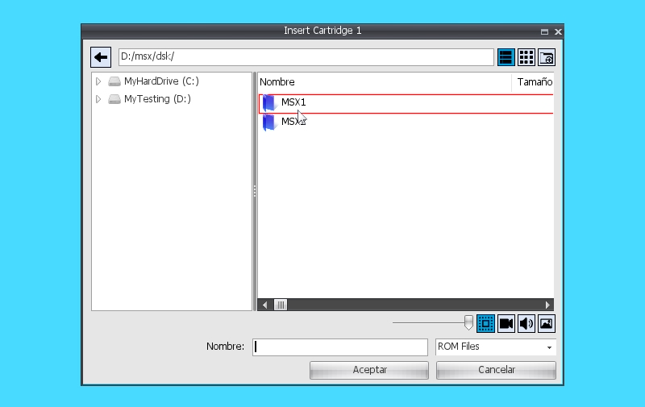
Este tipo de diálogos permiten facilitar la selección de archivos para abrirlos o guardarlos desde una aplicación. Existen por tanto el OpenFileDialog/SaveFileDialog y el OpenFolderDialog/SaveFolderDialog, en función de si queremos leer, escribir o crear archivos y/o carpetas.
Las cuatro funciones usan los mismos parámetros:
| title | Título de la ventana MDI. Por defecto cadena vacía. | |||||||
|---|---|---|---|---|---|---|---|---|
| filename | Valor inicial del campo de texto nombre de archivo. Por defecto cadena vacía. | |||||||
| folder | Carpeta por defecto donde guardar el archivo. Por defecto cadena vacía. | |||||||
| filters | Filtros de archivo. Por defecto cadena vacía. Los filtros son una secuencia de cadenas separadas por el carácter ‘|’ y formadas por el binomio Título | comodín. Ejemplos: “PNG Files|*.png”; “Graphic Files|*.png;*.jpg;*.tga|All Files|*.*” | |||||||
| flags | SFD_ALLOWMULTISELECT | Permite la multiselección de archivos. | ||||||
| SFD_OVERWRITEPROMPT | No se pide permiso para sobrescribir un archivo. Solo para diálogo de escritura. | |||||||
| SFD_FILEMUSTEXIST | Obliga a que los archivos seleccionados existan. | |||||||
| SFD_HIDEREADONLY | No muestra los archivos ocultos. | |||||||
| ctx | Contexto donde estará la función a invocar una vez aceptemos el guardado. | |||||||
| function | Función que se invocará para gestionar el guardado. El prototipo de esta función será el siguiente: | |||||||
| userdata | Datos de usuario que podremos asociar para que se nos envíen a la función como parámetro. | |||||||
| ismodal | Por defecto a verdadero. Bloquea el uso de otros diálogos y menús y será necesario cerrar el FileDialog para volver a tener acceso al resto del escritorio. |
function () (fd, files, userdata) { }Aquí, <fd> hace referencia al controlador del FileDialog. El archivo seleccionado para el guardado vendrá como primer elemento de la lista <files>. Si en la llamada facilitamos datos de usuario, estos nos llegarán a <userdata>.
GetEngine().OpenFileDialog("Open PNG Files", "", "", "PNG Files|*.png|All Files|*.*", this "OnOpenFile");
...
function OnOpenFile(_fd, _files, _userData)
{
_image = GetEngine().LoadImage(_files[0]);}AlertDialog
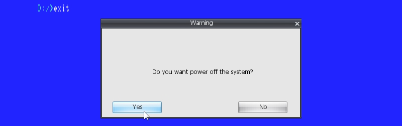
function AlertDialog (title, text, mode = 0, ctx = null, f1 = “OnAlertDialogOK”, f2 = “OnAlertDialogCancel”, f3 = "")
Abre un diálogo de alerta en forma no modal, o sea, no bloquea la ejecución del programa. Un AlertDialog consta de un título <title> que se muestra en la ventana MDI y un texto <text> que ocuparía la zona central de la ventana, y adicionalmente se pueden configurar diferentes modos de funcionamiento de botones mediante <mode>:
| View.AD_OK | Un botón OK. Se usa <f1>. |
|---|---|
| View.AD_CANCEL | Un botón CANCEL. Se usa <f1>. |
| View.AD_YES | Un botón YES. Se usa <f1>. |
| View.AD_NO | Un botón NO. Se usa <f1>. |
| View.AD_OKCANCEL | Dos botones OK y CANCEL usan <f1> para el OK y <f2> para el CANCEL. |
| View.AD_YESNO | Dos botones YES y NO usan <f1> para el YES y <f2> para el NO. |
| View.AD_YESNOCANCEL | Tres botones YES, NO y CANCEL usan <f1> para el YES, <f2> para el NO y <f3> para el CANCEL. |
En función del número de botones, podemos usar las diferentes llamadas que recibiremos al hacer clic en los botones. Estas llamadas usan un prototipo como el siguiente:
function OnClick () { }function AlertDialogModal (title, text, mode = 0) : int
Funciona exactamente igual que AlertDialog, salvo que en este caso, la ejecución del programa no continúa hasta que no se cierra el diálogo. Como valor de retorno, obtendremos el ID del botón que se haya pulsado o 0 en caso de cerrar la ventana.
InputDialog
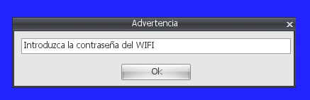
function InputDialogModal (title, text = "", mode = 0) : string
Permite obtener datos introducidos por el usuario. Estos datos se obtendrán como valor de retorno de la función ya que, en este caso, la llamada es modal y por tanto bloqueante: hasta que no se cierra el diálogo no se continúa con la ejecución del programa.
Los parámetros son un título para la ventana MDI <title> y un texto descriptivo opcional para dar más información sobre el texto a introducir. Este texto se borra una vez el usuario escribe algún carácter. Y luego el modo <mode>, que podrá ser:
| View.AD_OK | Un botón OK. |
|---|---|
| View.AD_CANCEL | Un botón CANCEL. |
| View.AD_OKCANCEL | Dos botones OK y CANCEL. |
Los datos introducidos solo serán devueltos por la función en caso de pulsar sobre el botón de OK. En caso de hacerlo en CANCEL o cerrando la ventana MDI, se devolverá cadena vacía.
Para crear una aplicación hecha en VR-SCRIPT donde se haga uso de los comandos conocidos del VR-BASIC / MSX-BASIC disponemos de la plantilla BASIC_Program.
Este tipo de aplicación crea un contexto gráfico junto al interprete VR-BASIC y le da control para poder hacer uso en exclusiva.
El punto de entrada será:
virtual Start(){}Los métodos disponibles heredados por la plantilla Basic_Program equivalen en funcionalidad a los vistos en la sección VR-BASIC, y serían los siguientes:
| Asc (str) |
|---|
| Atn (v) |
| Beep () |
| Base (n) |
| BaseSet (n, expr) |
| Bin$ (expr) |
| Bload (path, brun, off = 0) |
| Bsave (path, init, end, start = 0) |
| Call (name, params = []); |
| Cdbl (expr) |
| Chr$ (expr) |
| Cint (expr) |
| Cls () |
| CSng (expr) |
| Csrlin () |
| Circle (x, y, rad, color, start_angle = "“, end_angle =”“, aspect_ratio =”") |
| Cload (path, verify) |
| Close (list) |
| Color (fg = "“, bg =”“, bc =”") |
| ColorNew () |
| ColorRestore () |
| ColorSet (index, r, g, b) |
| ColorSprite (index, color) |
| ColorSprite$ (index, color) |
| Cont () |
| CopyVRAMToVRAM (x1, y1, bStep, x2, y2, pageS, x3, y3, pageD, logOp) |
| CopyFileToArray (src, var) |
| CopyArrayToFile (var, dst) |
| CopyFileToFile (src, dst) |
| Clear (size = 0, high = 0) |
| Draw (expr) |
| Dim (var, dims) |
| DefFn (fName, paramList, expr) |
| DefInt (varList) |
| DefSng (varList) |
| DefDbl (varList) |
| DefStr (varList) |
| DefUsr (num, expr) |
| Erl () |
| Err () |
| Error (num) |
| Let (var, dimExpr, expr, type = "") |
| Motor (_mode) |
| Mid$ (str, start, len = -1) |
| Len (str) |
| Fix (num) |
| Files (wildcard) |
| Fn (name, params) |
| Kill (wildcard) |
| KeyOn () |
| KeyOff () |
| KeyList () |
| KeySet (num, str) |
| KeyMode (num, mode) |
| MaxFiles (num) |
| Fre (num) |
| GetDate (var, alarm) |
| GetTime (var, alarm) |
| Hex$ (expr) |
| InStr (ix, str1, str2) |
| InStr (str1, str2) |
| End () |
| Inkey$ () |
| Inp (port) |
| Input (file, prompt, list) |
| Input$ (num, file = 0) |
| IntervalMode (mode) |
| Left$ (x, n) |
| Locate (x, y, cursor = false) |
| Line (x1, y1, x2, y2, color, logOp = 0) |
| Line (bStep1, x1, y1, bStep2, x2, y2, color, bFlag, logOp = 0) |
| LineInput (file, prompt, var) |
| Oct$ (expr) |
| Open (path, mode, fileNum, len) |
| Out (port, value) |
| Rnd (x) |
| Right$ (x, n) |
| Pad (n) |
| Pdl (n) |
| Pos (x) |
| Paint (x, y, color, border_color = "") |
| Paint (bStep, x, y, color, border_color) |
| IsPlaying (channel) |
| Play (mode, chList) |
| PrintUsing (file, expr) |
| Print (file, expr) |
| Print (str) |
| Point (x, y) |
| PSet (x, y, color) |
| PSet (bStep, x, y, color) |
| Preset (x, y, color) |
| Preset (bStep, x, y, color) |
| Poke (addr, v) |
| Peek (addr) |
| PutSprite (plane, x, y, color, num = "") |
| PutSprite (plane, bStep, x, y, color, num) |
| Screen (m = "“, spr =”“, click =”“, baud =”“, printer =”“, interlace =”") |
| SetAdjust (x, y) |
| SetPrompt (prompt) |
| SetPage (display, active) |
| SetScroll (x, y, m, s) |
| Sgn (x) |
| Space$ (x) |
| Spc (x) |
| Sqr (x) |
| Str$ (x) |
| String$ (n, expr) |
| Stop () |
| StopMode (mode) |
| Sound (reg, value) |
| Sprite$ (num, expr) |
| SpriteMode (mode) |
| Strig (n) |
| StrigMode (n, mode) |
| Stick (n) |
| Tron () |
| Troff () |
| Tab (x) |
| Time () |
| Time (expr) |
| Usr (n, param) |
| Val (expr) |
| VPoke (addr, value) |
| VPeek (addr) |
| VDP (reg) : ubyte |
| VDP (reg, value) |
| Width (x) |
VR-GL es una librería VR-SCRIPT que permite trabajar con gráficos dentro del entorno MSXVR. El concepto de esta librería es trabajar con diferentes tipos de objetos que nos permitan principalmente desarrollar proyectos multimedia como videojuegos, aunque cabe cualquier posibilidad donde gráficos y música interactúen.
Conceptos:
| CLONACIÓN | Hace referencia a la creación y posterior copia exacta de las propiedades de un objeto original. |
|---|---|
| INSTANCIACIÓN | Hace referencia a la creación y posterior copia exacta de algunas propiedades de un objeto original. En este caso, habrá otras propiedades que serán referencia de las del objeto original. |
| PROPIEDADES DE ESTADO | Son aquellas propiedades que definen el estado del objeto. Estas propiedades son únicas en todos los objetos. |
| CLASES | Los tipos de clases de objeto de la librería son: GL_Collider, GL_Controller, GL_Mapper, GL_Music, GL_Pad, GL_Route, GL_Script, GL_Sound, GL_Sprite, GL_Stage, GL_Text, GL_Timer. Todos ellos heredan de GL_Object. |
Interfaz para la creación de programas que requieren del uso de la librería VR-GL.
Los métodos disponibles son:
function SetBgColor (color)
Establece un color sólido para el fondo del escenario (véase GL_Stage).
function SetBackColor (color)
Establece un color sólido para el fondo de la pantalla.
function SetBgImage (path)
Pone como fondo de escenario una imagen (textura) que se carga de un <path> determinado como argumento.
function Play ()
Pone en marcha los objetos VR-GL.
function Stop ()
Detiene la ejecución de los objetos VR-GL.
function GetActiveStage () : pointer
Devuelve el escenario (objeto de tipo GL_Stage) activo.
function GetOffX () : int
Devuelve la posición X desde la cual se representan los objetos VR-GL. Por defecto es cero.
function GetOffY () : int
Devuelve la posición Y desde la cual se representan los objetos VR-GL. Por defecto es cero.
function GetResX () : int
Devuelve la resolución horizontal utilizada para representar los objetos VR-GL. Por defecto es el tamaño horizontal de escritorio (Desktop).
function GetResY () : int
Devuelve la resolución vertical utilizada para representar los objetos VR-GL. Por defecto es el tamaño vertical de escritorio (Desktop).
function CloneObject (name, obj) : pointer
Permite crear una copia exacta de otro objeto VR-GL <obj> con nombre de instancia <name>.
function NewObject (name, className, stage = null) : pointer
Crea un nuevo objeto VR-GL con nombre <name> y del tipo indicado en <className>. Si se pasa NULL en el <stage>, este objeto se creará en la escena activa; en caso contrario, se creará en la instancia de escenario que pasemos. El nombre de clase podrá ser GL_Stage, GL_Sprite, GL_Music, GL_Sound, GL_Pad, etc. o una clase de usuario que herede de GL_Object.
function NewStage (name) : pointer
Crea un nuevo objeto Escenario (GL_Stage) con nombre <name>.
function NewSprite (name, stage = null) : pointer
Crea un nuevo objeto Sprite (GL_Sprite) en la escena que pasemos como parámetro en <stage>. En el caso de que sea NULL, se creará en la escena activa.
function NewText (name, stage = null) : pointer
Crea un nuevo objeto Texto (GL_Text) en la escena que pasemos como parámetro en <stage>. En el caso de que sea NULL, se creará en la escena activa.
function NewMapper (name, stage = null) : pointer
Crea un nuevo objeto Mapeador (GL_Mapper) en la escena que pasemos como parámetro en <stage>. En el caso de que sea NULL, se creará en la escena activa.
function NewRoute (name, stage = null) : pointer
Crea un nuevo objeto Ruta (GL_Route) en la escena que pasemos como parámetro en <stage>. En el caso de que sea NULL, se creará en la escena activa.
function NewController (name, stage = null) : pointer
Crea un nuevo objeto Controlador (GL_Controller) en la escena que pasemos como parámetro en <stage>. En el caso de que sea NULL, se creará en la escena activa.
function NewSound (name, stage = null) : pointer
Crea un nuevo objeto Sonido (GL_Sound) en la escena que pasemos como parámetro en <stage>. En el caso de que sea NULL, se creará en la escena activa.
function NewMusic (name, stage = null) : pointer
Crea un nuevo objeto Música (GL_Music) en la escena que pasemos como parámetro en <stage>. En el caso de que sea NULL, se creará en la escena activa.
function NewTimer (name, stage = null) : pointer
Crea un nuevo objeto Temporizador (GL_Timer) en la escena que pasemos como parámetro en <stage>. En el caso de que sea NULL, se creará en la escena activa.
function NewCollider (name, stage = null) : pointer
Crea un nuevo objeto Colisionador (GL_Collider) en la escena que pasemos como parámetro en <stage>. En el caso de que sea NULL, se creará en la escena activa.
function NewPad (name, stage = null) : pointer
Crea un nuevo objeto Mando (GL_Pad) en la escena que pasemos como parámetro en <stage>. En el caso de que sea NULL, se creará en la escena activa.
function FindObject (name, stage = null) : pointer
Busca la instancia de objeto con nombre <name> en la escena <stage> que pasemos como argumento. Si <stage> es NULL buscará en la escena activa.
function SetResolution (w, h)
Establece la resolución a utilizar para los objetos GL creados. Por defecto se usa el tamaño del escritorio, pero se puede utilizar otra resolución para crear aplicaciones basadas en otros formatos de pantalla.
function SetViewScale (scale)
Aplica una escala a la vista, de manera que podemos aumentar o reducir el formato de los gráficos que salen en pantalla.
function Trace (msg)
Genera un mensaje de traza que nos permite una depuración sencilla y rápida.
function LoadVGS (name) : pointer
Carga un archivo de tipo GameSaurus en la instancia GL asociada a nuestro programa. Del archivo GameSaurus obtendrá toda la información para inicializarse. De esta forma, es posible plantear un esquema donde el diseñador trabaje con VGS y maquete todo lo necesario para el proyecto, mientras que el programador cree todo lo necesario fuera del VGS para dar comportamiento a los objetos que se usen a nivel de diseño y/o fuera de este.
GameSaurus es una aplicación que permite desarrollar juegos y aplicaciones multimedia usando VR-GL de forma visual en los MSXVR.
Representa el interfaz principal de todos los tipos de objetos con los que puede trabajar la librería VR-GL.
function GetGL () : pointer
Obtiene la instancia del objeto VR-GL asociada.
function GetEngine () : pointer
Obtiene acceso al motor del sistema.
function SetName (name)
Asigna un nombre <name> a la instancia de objeto. No se permiten nombres iguales entre objetos del mismo tipo. En caso de asignar un nombre existente, automáticamente se renombrará con el prefijo "_1".
function GetName () : string
Obtiene el nombre asignado.
function SetUserData (data)
Asocia datos de usuario a la instancia de objeto.
function GetUserData () : pointer
Obtiene los datos de usuario asociados.
function SetStop (v)
Establece el estado de parado o no de la instancia. <v> será un valor booleano. Si es verdadero estará parado, y si es falso no.
function GetStop () : bool
Devuelve el estado de parado de la instancia.
function SetVisible (v)
Establece el estado de visibilidad de la instancia. <v> será un valor booleano. Si es verdadero será visible, y si es falso invisible.
function GetVisible () : bool
Obtiene el estado de visibilidad de la instancia.
function SetPriority (p)
Establece la prioridad de la instancia de objeto. El valor de la prioridad <p> será un valor flotante y cada objeto implementará este método según corresponda.
function GetPriority () : float
Obtiene la prioridad asociada a la instancia.
function ClearObjects ()
Borra todos los objetos hijos creados.
function SetParent (obj)
Permite establecer un nivel de jerarquía. Con esta función indicamos que el nuevo padre será <obj>. Al realizar esta acción, si ya teníamos un padre, eliminaremos dicha relación para formar parte de la nueva.
function GetParent () : pointer
Devuelve el objeto padre, si existe. En caso de no existir devolverá NULL.
function AddObject (obj)
Añade un objeto <obj> como hijo.
function RemoveObject (obj)
Elimina un objeto <obj> de la lista de hijos.
function GetObjectOrder (obj) : int
Devuelve la posición de un objeto <obj> dentro de la lista de hijos. El valor devuelto estará entre 0 y GetNumObjects-1.
function ChangeObjectOrder (obj, ix)
Permite intercambiar el orden dentro de la lista de hijos. El parámetro <obj> hace referencia al hijo que queremos mover en la lista y con <ix> indicamos la nueva posición. Esta nueva posición estará entre 0 y GetNumObjects-1.
function FindObjects (match, classType = "") : list
Permite buscar objetos dentro de la jerarquía, o sea, entre los hijos y dentro de los hijos. El parámetro <match> permite establecer el patrón de búsqueda. Esta cadena de caracteres podrá ser:
| <match>* | Nombres que comienzan por <match> |
|---|---|
| *<match> | Nombres que acaban por <match> |
| *<match>* | Nombres que contienen <match> |
| <match> | Nombre exactamente igual a <match> |
Por ejemplo:
_list = _obj.FindObjects("*trol*");En el parámetro <classtype> podemos indicar sobre qué clase de objetos queremos aplicar la búsqueda, por ejemplo: “GL_Sprite” o “GL_Sound”.
function DeleteObjects (match, classType = "")
Aplicando el mismo criterio de búsqueda que FindObjects, borra todos los objetos que cumplan dicho patrón.
function FindObject (name, classType = "") : pointer
Busca un objeto hijo, o dentro de los hijos, que tenga de nombre <name> y sea de la clase <classType> a buscar. En caso de que no se especifique el tipo de clase, se buscará entre todos los existentes.
function GetObjectNameList () : list
Devuelve una lista con los nombres de todos los objetos hijos de primer nivel.
function NewObject (name, classType) : pointer
Crea un objeto hijo con nombre <name> y de tipo <classType>. Las clases han de heredar siempre de GL_Object. Podrán ser las ofrecidas por la librería (GL_Sprite, GL_Sound, GL_Route, etc.) o creadas por el usuario siempre que estén accesibles.
function NewXRefObject (name, xref) : pointer
Permite crear un objecto hijo con nombre <name> y referenciando a un script externo (XREF). El parámetro <xref> será la ruta completa a dicho script y, este ha de heredar su comportamiento de GL_Object.
function GetXRef () : pointer
Devuelve la ruta completa de un objeto XREF. Si el objeto no es XREF devolverá cadena vacía.
function IsXRef () : bool
Indica si el objeto es XREF o no.
function CloneChilds (name, obj) : bool
Permite crear hijos clonados de los hijos del objeto <obj>. Estos nuevos hijos tendrán como nombre el prefijo <name> más el nombre del objeto clonado. En caso de que la clonación haya tenido éxito, la función devolverá verdadero.
function CloneObject (name, obj) : pointer
Dado un objeto <obj>, se clonará como hijo y se le asignará el nombre <name>. La clonación es una copia exacta del original.
function InstancedObject (name, obj) : pointer
Permite crear una instanciación del objeto <obj> y con nombre <name>. En este caso, el nuevo objeto hijo estará instanciado de <obj> y por tanto <obj> será su objeto original, con el que compartirá algunas propiedades.
function GetInstancedObject () : pointer
En el caso de que seamos un objeto instanciado, devolverá el objeto original. En caso contrario, se devolverá NULL.
function RemoveInstancedObject ()
Permite dejar de ser objeto instanciado, en caso de estarlo.
function CopyObject (obj)
Aplica una copia de propiedades del objeto <obj>. El nombre se conservará.
function DeleteObject (obj)
Elimina el objeto <obj>. En este caso <obj> puede ser hijo o no.
function OrderToFront ()
Posiciona al objeto por delante de sus hermanos. Todos los objetos tienen una lista de objetos hijos; en este caso, es la lista de objetos del padre la que se reordena.
function OrderToBack ()
Posiciona al objeto por detrás de sus hermanos. Todos los objetos tienen una lista de objetos hijos; en este caso, es la lista de objetos del padre la que se reordena.
function GetNumObjects (classType = "")
Devuelve el número de objetos hijos que hay. Si indicamos en <classType> algún nombre de clase, contaremos solo los de dicha clase.
function GetObject (ix, classType = "") : pointer
Devuelve el objeto hijo en la posición <ix>. Este índice dependerá del <classType> establecido. El índice <ix> será siempre un entero que irá de 0 hasta GetNumObjects(classType)-1.
function GetObjects (classType = "", recursive = false) : list
Devuelve todos los objetos hijos en una lista. Se puede considerar que sean solo los hijos de primer nivel o también los hijos de los hijos si indicamos <recursive> a verdadero. Podemos también filtrar por tipo de clase <classType>.
function BroadcastToObjects (callName, params = [], classType = "")
Permite aplicar una llamada <callName> a todos los objetos hijos. A esta llamada se le pueden pasar parámetros y también filtrar por <classType>.
Por ejemplo:
_obj.BroadcastToObjects("DoExplossion", [-20], "Enemy");function IsRunning () : bool
Permite saber si un objeto está en marcha. O sea, si se ha realizado un Start.
function Start ()
Permite activar un objeto y ponerlo en marcha. Antes de activarse guarda su estado para poder restaurarlo tras un Stop.
function Stop ()
Desactiva un objeto que está en marcha y restaura su estado previo al Start.
function Pause ()
Detiene la ejecución de un objeto que esté en marcha, y la de sus hijos.
function PauseObjects ()
Detiene la ejecución de los hijos.
function Resume ()
Activa de nuevo la ejecución de un objeto y la de sus hijos.
function ResumeObjects ()
Activa la ejecución de los hijos.
function SaveState () : list
Devuelve una lista con pares nombre/valor de todas las propiedades del objeto. Esta lista contiene el estado actual del objeto.
function LoadState (st)
Permite cargar el estado guardado en <st> en el objeto.
function GetBehaviourClassScript () : string
Devuelve una cadena de texto con el script completo asociado al comportamiento del objeto. Este incluye el interfaz y el código.
function SetScriptInterface (name)
Establece el nombre del interfaz de script a utilizar.
function GetScriptInterface () : string
Devuelve el nombre del interfaz de script asociado.
function SetScript (code)
Define la cadena de texto con script <code> a utilizar como código.
function GetScript () : string
Retorna la cadena de texto que hace referencia al script de código.
function GetClass () : pointer
Devuelve el objeto que hace referencia al script asociado al comportamiento.
Una escena es un tipo de objeto GL que representa a un conjunto de objetos que podrán representarse visualmente o no. La escena tiene la capacidad de gestionar la visualización de todos sus objetos hijos, además de coordinar su activación y desactivación, entre otras funcionalidades.
Una escena dispone de un VIEWPORT o área de representación. Es como se establece la forma y el aspecto con los que queremos representar los objetos visibles en pantalla. El área de representación muestra lo que está viendo la cámara en ese momento. La cámara puede modificarse para poder gestionar dónde y cuánto representar.
El área de CLIPPING de la cámara (zona amarilla) es el área en el que los objetos se activan o desactivan.
El área de VIEWPORT (zona verde) es lo que visualizamos en pantalla.
Existe otra área llamada SCISSOR (tijeras) que permite visualizar solo el subrectángulo que queramos del área de VIEWPORT. Por defecto, esta área es igual al VIEWPORT.
Solo una escena puede activarse al mismo tiempo. Para poder tener varias escenas activas, estas han de ser GLOBALES. Una escena global siempre está activa.
Los objetos visibles en una escena podrán ser todos aquellos que heredan de GL_Sprite. En este caso: GL_Sprite, GL_Mapper y GL_Text.
Una escena también puede ser principal (MAIN STAGE). Eso quiere decir que cuando se inicia VR-GL (GL_Program::Start), la escena que se lanza en primer lugar es esta.
Los métodos disponibles son:
function LoadTexture (path) : pointer
Carga y devuelve una textura de una ruta.
function DeleteTexture (tex)
Borra una textura previamente cargada.
function SetActive ()
Activa la escena.
function GetActive () : bool
Indica si la escena está activa.
function SetViewport (x, y, w, h)
Establece el área de visión para la escena. Por defecto será el tamaño de la pantalla, pero se puede establecer un offset (x, y) de origen y un tamaño (w, h) distintos.
function GetViewport () : list
Devuelve una lista con cuatro componentes: [x, y, w, h].
function SetViewportX (x)
Establece el origen horizontal del área de visión de la escena.
function GetViewportX () : int
Obtiene el origen horizontal del área de visión de la escena. Por defecto cero.
function SetViewportY (y)
Establece el origen vertical del área de visión de la escena.
function GetViewportY () : int
Obtiene el origen vertical del área de visión de la escena. Por defecto cero.
function SetViewportW (w)
Establece el ancho del área de visión de la escena.
function GetViewportW () : int
Obtiene el ancho del área de visión de la escena. Por defecto el ancho del escritorio.
function SetViewportH (h)
Establece el alto del área de visión de la escena.
function GetViewportH () : int
Obtiene el alto del área de visión de la escena. Por defecto el alto del escritorio.
function SetViewScale (scale)
Establece un factor de escala en la vista. Por defecto este valor es 1, que representa que la vista se muestra a su escala original.
function GetViewScale () : float
Obtiene el factor de escala asociado a la vista.
function SetCameraClipX (x)
Establece el offset relativo a la posición de la cámara en el que considerar la zona de CLIPPING por la izquierda.
function GetCameraClipX () : int
Obtiene el offset relativo a la posición de la cámara del área de CLIPPING por la izquierda.
function SetCameraClipY (y)
Establece el offset relativo a la posición de la cámara en el que considerar la zona de CLIPPING por arriba.
function GetCameraClipY () : int
Obtiene el offset relativo a la posición de la cámara del área de CLIPPING por arriba.
function SetCameraClipW (w)
Establece el ancho de la zona del área de CLIPPING.
function GetCameraClipW () : int
Obtiene el ancho de la zona del área de CLIPPING.
function SetCameraClipH (h)
Establece el alto de la zona del área de CLIPPING.
function GetCameraClipH () : int
Obtiene el alto de la zona del área de CLIPPING.
function SetCameraX (x)
Asigna la posición horizontal de la cámara.
function GetCameraX () : float
Obtiene la posición horizontal de la cámara.
function SetCameraY (y)
Asigna la posición vertical de la cámara.
function GetCameraY () : float
Obtiene la posición vertical de la cámara.
function SetCameraPos (x, y)
Asigna la posición vertical y horizontal de la cámara.
function IncCameraPos (x, y)
Incrementa la posición vertical y horizontal de la cámara.
function SetCameraZoom (z)
Asigna el escalado del área de cámara. El parámetro <z> por defecto vale 1.
function GetCameraZoom () : float
Obtiene el escalado del área de cámara.
function SetScissorEnabled (v)
Permite activar el recorte de dibujado en la zona de VIEWPORT.
function GetScissorEnabled () : bool
Indica si el recorte de dibujado está activo o no.
function SetScissorX (x)
Asigna la posición superior horizontal del rectángulo de recorte.
function GetScissorX () : int
Obtiene la posición superior horizontal del rectángulo de recorte.
function SetScissorY (y)
Asigna la posición superior vertical del rectángulo de recorte.
function GetScissorY () : int
Obtiene la posición superior vertical del rectángulo de recorte.
function SetScissorW (w)
Establece el ancho del rectángulo de recorte.
function GetScissorW () : int
Obtiene el ancho del rectángulo de recorte.
function SetScissorH (h)
Establece el alto del rectángulo de recorte.
function GetScissorH () : int
Obtiene el alto del rectángulo de recorte.
function SetGlobal (v)
Establece la escena como global. En ese caso, siempre estará activa.
function GetGlobal () : bool
Indica si la escena es global.
function SetPhysicsScale (scale)
Permite establecer la escala para simulación de físicas. En función de la escala, las físicas son más o menos pesadas en cuando a fluidez y velocidad de movimientos, no en cuanto a rendimiento. La escala determina el tamaño de las unidades utilizadas en los parámetros físicos, permitiendo trabajar en metros, centímetros, etc.
function GetPhysicsScale () : float
Obtiene el escalado usado para la simulación de físicas.
function SetPhysicsGravityX (gx)
Establece la aceleración de gravedad para las físicas en la componente X.
function GetPhysicsGravityX () : float
Obtiene la aceleración de la gravedad para las físicas en la componente X.
function SetPhysicsGravityY (gy)
Establece la aceleración de gravedad para las físicas en la componente Y. Esta unidad se indica en m/s2, por ejemplo 9,8.
function GetPhysicsGravityY () : float
Obtiene la aceleración de la gravedad para las físicas en la componente Y.
function CheckCollision (x, y, w, h) : list
Devuelve una lista con objetos que tengan colisión con el área con posición (x, y) y tamaño (w, h). Para que un objeto colisione debe heredar de GL_Sprite y tener la detección de colisiones activada.
function GetMain () : bool
Indica si esta escena es una escena principal.
function EnableDraw (v)
Permite indicar si queremos que la escena se visualice o no. Si se desactiva, incluso una escena visible no se representará.
function LinkCamera (obj, offx = 0, offy = 0)
Permite que la cámara de la escena siga a un objeto <obj> y lo haga en base a su posición con un desplazamiento (offx, offy).
Un Sprite es una o varias texturas (imágenes) que pueden combinarse en forma de animación y que permite gestionar propiedades de visibilidad, físicas y colisión.
Conceptos:
| Fotograma (Frame) | Textura asociada al Sprite. Un Sprite puede tener ninguna, una o varias. |
|---|---|
| Animación | Conjunto continuo de fotogramas que, representado a una velocidad, permite establecer una secuencia animada. |
| Colisión | Los Sprites puede gestionar colisiones entre ellos, o sea, definir zonas de contacto que luego el sistema puede detectar. |
| Posición | Los Sprites se posicionan en unas coordenadas (x, y) dentro de un escenario. Estas coordenadas hacen referencia a la esquina superior/arriba del rectángulo que ocupan. |
Los métodos disponibles son:
function AddFrame (path, w = -1, h = -1, x = 0, y = 0, uvx = 0, uvy = 0, uvw = 1, uvh = 1)
Añade una textura como fotograma al Sprite. Indicaremos la ruta a la textura con <path>. El resto de parámetros son opcionales y tienen la siguiente funcionalidad:
| w | Ancho con el que representaremos el fotograma. Si indicamos -1 usaremos el ancho existente en la imagen. |
|---|---|
| h | Alto con el que representaremos el fotograma. Si indicamos -1 usaremos el alto existente en la imagen. |
| x | Desplazamiento horizontal con respecto a la posición del Sprite cuando se representa este fotograma. |
| y | Desplazamiento vertical con respecto a la posición del Sprite cuando se representa este fotograma. |
| uvx,uvy,uvw,uvh | Coordenadas normalizadas de textura. Es posible indicar si el fotograma a considerarse es un subrectángulo dentro de la textura. Por defecto es la totalidad de la textura (0, 0, 1, 1). |
function AddEmptyFrame (_w = -1, _h = -1)
Añade un fotograma sin textura al Sprite. Este fotograma usará el color asociado al Sprite por defecto (véase SetColor). Los parámetros opcionales <w> y <h> definirán el tamaño del fotograma en pixeles. Si no definimos alguno, se usará GetWidth o GetHeight en cada caso.
function GetFrameTexture (ix) : pointer
Devolverá la textura asociada a un fotograma. En caso de indicar un <ix> fuera de rango, la función devolverá NULL.
function GetNumFrames () : int
Retorna el número de fotogramas que tiene el Sprite.
function GetFrameInfo (ix) : list
Dado un índice a fotograma entre 0 y GetNumFrames-1, nos permite obtener la información asociada al mismo. La lista devuelta contendrá: [tex, uvx, uvy, uvw, uvh, addru, addrv, filter, x, y, w, h, cx, cy, cw, ch].
| tex | Textura asociada. |
|---|---|
| uvx, uvy, uvw, uvh | Coordenadas de textura. |
| addru, addrv | Mapeado de textura. Por defecto es CLAMP, pero se puede utilizar WRAP para simular repeticiones. Esto se puede hacer para la dirección horizontal como para la vertical independientemente. |
| filter | Indica si se usa filtro bilinear o por aproximación. |
| cx, cy, cw, ch | Indica la zona de colisión dentro de la textura. |
function RemoveAnimations ()
Elmina todas las animaciones asociadas. Esto implicará el borrado de todos los fotogramas asociados.
function RemoveAnimation (ani)
Elimina una animación <ani> pasada como parámetro. Esto implica eliminar los fotogramas asociados a dicha animación.
function RemoveFrames ()
Elimina todos los fotogramas asociados y, por tanto, todas las animaciones.
function AddAnimation (name, start, end, loop, speed) : pointer
Crea y añade una animación con nombre <name>, con fotograma inicial <start> hasta el fotograma final <end>. El número de fotograma será un entero que irá desde 0 hasta GetNumFrames-1 y el fotograma inicial ha de ser menor o igual al final. Indicaremos también el índice al fotograma al cual saltar para hacer un bucle <loop> o podemos usar -1 para indicar que es un bucle infinito <start> - <end> o usar -2 para indicar que queremos detenernos en el final. Por último, indicar la velocidad de transición entre fotogramas <speed>.
function AddAnimationWithSheet (name, path, start, end, ox, oy, sheetW, sheetH, w = -1, h = -1, loop = -1, speed = 0.25f, framestep = 1)
Añade una animación con nombre <name> en el Sprite. La fuente de la animación será una textura accesible en la ruta <path> y de esta textura se extraerán los fotogramas desde <start> inicio hasta <end> final. La forma de extraer los fotogramas es subdividiendo la textura en fragmentos de tamaño (sheetW, sheetH) a partir del offset en pixeles (ox, oy). Al aplicar esta cuadrícula, de arriba abajo y de izquierda a derecha tenemos los fotogramas del 0 al (TEXW/SHEETW * TEXH/SHEETH)-1.
El resto de parámetros son el tamaño (alto y ancho) a utilizar visualmente en esos fotogramas, el fotograma inicial del ciclo, la velocidad de animación y si queremos evitar fotogramas.
function AddAnimationWithGrid (name, path, gw, gh, list = [], w = -1, h = -1, loop = -1, speed = 0.25f, framestep = 1)
Añade una animación con nombre <name> en el Sprite. La fuente de la animación será una textura accesible en la ruta <path>. De esta textura se extraerán los fotogramas que vamos a tener en cuenta en la animación. Esta forma de crear la animación es similar a AddAnimationWithSheet salvo que aquí, en vez de ser subrectángulos homogéneos, utilizaremos los proporcionados dentro de la lista <list>.
function AddAnimationWithList (name, list, w = -1, h = -1, loop = -1, speed = 0.25f, frameStep = 1)
Añade una animación con nombre <name> en el Sprite. Los diferentes fotogramas se obtendrán de una lista de rutas de archivos a texturas. El resto de parámetros funciona igual que en AddAnimationWithSheet.
function AddAnimationWithPrefix (name, prefix, start, end, w = -1, h = -1, loop = -1, speed = 0.25f, frameStep = 1)
Añade una animación con nombre <name> en el Sprite. Los diferentes fotogramas se obtienen de aplicar una sustitución utilizando la cadena <prefix> para los valores que van de <start> a <end>. El resto de parámetros funciona igual que en AddAnimationWithSheet.
function AddAnimationWithPrefixList (name, prefix, list, w = -1, h = -1, loop = -1, speed = 0.25f, frameStep = 1)
Añade una animación con nombre <name> en el Sprite. Los diferentes fotogramas se obtienen de aplicar una sustitución utilizando la cadena <prefix> para los valores enteros que se encuentra en la lista <list>. El resto de parámetros funciona igual que en AddAnimationWithSheet.
function SetAnimation (ani, reset = false)
Permite establecer la animación en curso del Sprite. En este caso podemos indicar en <ani> o en un nombre de animación o bien un puntero a un objeto animación. Si la animación en curso es la que queremos asignar, no se cortará su ejecución ni se reiniciará su estado; sin embargo, si queremos que esto ocurra, habremos de usar <reset> a verdadero.
function GetNumAnimations () : int
Devuelve el número de animaciones creadas y disponibles en el Sprite.
function FindAnimation (name) : pointer
Busca y retorna una animación en el Sprite con nombre <name>.
function GetAnimation (ix = -1) : pointer
Retorna la animación con índice <ix>. Este índice irá de 0 hasta GetNumAnimations-1. En el caso de indicar -1, se devolverá la animación en curso.
function GetCurAnimation () : string
Devolverá el nombre de la animación en curso.
function SetCurAnimation (name)
Establece la animación en curso de un Sprite especificando el nombre en <name>.
function ResetAnimation ()
Reinicia la animación en curso.
function EndFixAnimation ()
Deja en su último fotograma la animación en curso.
function SetAnimationSpeedFactor (f)
Permite aplicar un factor de velocidad a la animación en curso. Si <f> es cero, la animación se detendrá; si <f> es 1, irá a la velocidad normal que tenga la animación; y si <f> es 2, todo irá al doble de la velocidad.
function SetType (flags)
Establece los flags de tipo. Eso permite identificar los Sprites y categorizarlos.
function GetType () : int
Obtiene las flags de tipo asociados al Sprite.
function SetScalePivot (x, y)
Establece el pivote para el escalado del Sprite. Por defecto es (0, 0), y esto quiere decir que los escalados se aplican a partir de la esquina superior izquierda.
function SetPivot (x, y)
Establece el pivote utilizado para la rotación del Sprite. Por defecto es (0, 0), y eso quiere decir que el Sprite rota siempre desde su centro.
function SetPivotX (x)
Permite establecer el pivote de rotación en X.
function GetPivotX () : float
Obtiene el pivote de rotación en X.
function SetPivotY (y)
Permite establece el pivote de rotación en Y.
function GetPivotY () : float
Obtiene el pivote de rotación en Y.
function IncPos (x, y, updateCamera = false, checkMapper = null)
Desplaza la posición del Sprite en un incremento (x, y). Se puede indicar si queremos actualizar la cámara de la escena donde está el Sprite mediante <updateCamera> y validar colisiones con un objeto Mapper existente <checkMapper>.
function IncScale (x, y)
Incrementa la escala en x e y. Equivale a SetScale(GetScaleX()+x, GetScaleY()+y).
function AlignToParent (flags, offset = 0)
Alinea la posición del Sprite con su padre. Si no tiene Sprite padre, se tendrá en cuenta la resolución de pantalla establecida. Los flags podrán ser una combinación de estos:
| GL_Sprite.ALIGN_LEFT | Alineación a la izquierda. |
|---|---|
| GL_Sprite.ALIGN_RIGHT | Alineación a la derecha. |
| GL_Sprite.ALIGN_CENTER | Alineación centrada en horizontal. |
| GL_Sprite.ALIGN_VCENTER | Alineación centrada en vertical. |
| GL_Sprite.ALIGN_BOTTOM | Alineación en la parte inferior. |
| GL_Sprite.ALIGN_TOP | Alineación en la parte superior. |
function SetPos (x, y)
Establece la posición origen del Sprite.
function SetSize (w, h, resize = false)
Establece el tamaño del Sprite. Hay que tener en cuenta que por defecto <resize> está a falso y no se modifican los tamaños asignados a los fotogramas. Si se quiere que el tamaño pasado como parámetro afecte a todo el Sprite, se ha de usar <resize> a verdadero.
function SetRect (x, y, w, h, resize = false)
Establece con una sola llamada tanto posición como tamaño.
function SetX (x)
Asigna la posición origen en X.
function SetY (y)
Asigna la posición origen en Y.
function GetX () : float
Obtiene la posición origen X del Sprite.
function GetY () : float
Obtiene la posición origen Y del Sprite.
function GetXF () : float
Obtiene la posición origen X final del Sprite. La posición final hace referencia a la que resulta de aplicar todas las transformaciones de padre a hijos.
function GetYF () : float
Obtiene la posición origen Y final del Sprite. La posición final hace referencia a la que resulta de aplicar todas las transformaciones de padre a hijos.
function GetWF () : float
Obtiene el ancho final del Sprite. La posición final hace referencia a la que resulta de aplicar todas las transformaciones de padre a hijos.
function GetHF () : float
Obtiene el alto final del Sprite. La posición final hace referencia a la que resulta de aplicar todas las transformaciones de padre a hijos.
function GetRF () : float
Devuelve la coordenada del lado derecho del Sprite. Valor GetXF() + GetWF() - 1.
function GetBF () : float
Devuelve la coordenada del lado inferior del Sprite. Valor GetYF + GetHF() - 1.
function GetWidth () : int
Devuelve el ancho del Sprite.
function SetWidth (w, resize=0)
Establece el ancho del Sprite y permite indicar si queremos redimensionar el contenido asociado con <resize> a 1 (para hacerlo proporcionalmente en fotogramas, físicas y colisiones) o a 2 (si queremos establecer el nuevo tamaño solo a los fotogramas).
function GetHeight () : int
Devuelve el alto del Sprite.
function SetHeight (h, resize=0)
Establece el alto del Sprite y permite indicar si queremos redimensionar el contenido asociado con <resize> a 1 (para hacerlo proporcionalmente en fotogramas, físicas y colisiones) o a 2 (si queremos establecer el nuevo tamaño solo a los fotogramas).
function SetUVX (x)
Aplica un nuevo origen de coordenada X normalizada a todos los fotogramas.
function GetUVX () : float
Obtiene el origen de coordenada X normalizado del primer fotograma. Si no tiene fotogramas devolverá 0.
function SetUVY (y)
Aplica un nuevo origen de coordenada Y normalizada a todos los fotogramas.
function GetUVY () : float
Obtiene el origen de coordenada Y normalizado del primer fotograma. Si no tiene fotogramas devolverá 0.
function SetUVW (w)
Establece un nuevo ancho normalizado a todos los fotogramas.
function GetUVW () : float
Obtiene el ancho normalizado del primer fotograma. Si no tiene fotogramas devolverá 0.
function SetUVH (h)
Establece un nuevo alto normalizado a todos los fotogramas.
function GetUVH () : float
Obtiene el alto normalizado del primer fotograma. Si no tiene fotogramas devolverá 0.
function SetUV (u, v, uw, vh)
Establece con una única función todas las coordenadas de textura normalizadas.
function SetHFlip (v)
Aplica el efecto de volteo horizontal sobre los fotogramas del Sprite.
function GetHFlip () : bool
Indica si está activado el efecto de volteo horizontal.
function SetVFlip (v)
Aplica el efecto de volteo vertical sobre los fotogramas del Sprite.
function GetVFlip () : bool
Indica si está activado el efecto de volteo vertical.
function SetScale (s)
Aplica un factor de escala tanto en vertical como horizontal al Sprite. Por defecto el factor de escala es 1.
function GetScale () : float
Obtiene el factor de escala del Sprite.
function SetScaleX (s)
Establece un factor de escala en horizontal para el Sprite.
function GetScaleX () : float
Obtiene el factor de escala horizontal aplicado al Sprite.
function SetScaleY (s)
Establece un factor de escala en vertical para el Sprite.
function GetScaleY () : float
Obtiene el factor de escala en vertical aplicado al Sprite.
function SetCollision (v)
Permite indicar si queremos que el Sprite forme parte del sistema de detección de colisiones.
function GetCollision () : bool
Obtiene verdadero si el Sprite comprueba colisiones.
function RemoveColliders ()
Elimina todos los objetos colisionadores asociados al Sprite.
function AddColliderRect (x, y, w, h) : pointer
Añade un rectángulo de colisión (colisionador) al Sprite. Mediante estos colisionadores podemos definir áreas de colisión relativas a la posición del Sprite.
function RemoveColliderByIndex (ix)
Elimina el colisionador con índice <ix>, que será un entero en el rango 0 a GetNumColliders-1.
function GetNumColliders () : int
Obtiene el total de colisionadores que se han creado en el Sprite.
function GetCX () : int
Obtiene la coordenada horizontal relativa al rectángulo definido para colisión.
function GetCY () : int
Obtiene la coordenada vertical relativa al rectángulo definido para colisión.
function GetCW () : int
Obtiene el ancho del rectángulo definido para colisión.
function GetCH () : int
Obtiene el alto del rectángulo definido para colisión.
function GetCXF () : int
Obtiene la coordenada horizontal final (con transformaciones padre a hijos aplicadas) relativa al rectángulo definido para colisión.
function GetCYF () : int
Obtiene la coordenada vertical final (con transformaciones padre a hijos aplicadas) relativa al rectángulo definido para colisión.
function GetCWF () : int
Obtiene el ancho final (con transformaciones padre a hijos aplicadas) del rectángulo definido para colisión.
function GetCHF () : int
Obtiene el alto final (con transformaciones padre a hijos aplicadas) del rectángulo definido para colisión.
function SetFrame (f)
Establece un fotograma fijo al Sprite si no existe animación en curso. En caso de que exista animación en curso, se aplicará el fotograma relativo a dicha animación. En cualquiera de los casos, no existirá animación de fotogramas y se verá de forma estática el fotograma establecido.
function GetFrame () : int
Obtiene el índice del fotograma asignado: este será un entero que irá de 0 hasta GetNumFrames-1. Si hay una animación en curso, devolverá el índice relativo al fotograma inicial de la animación.
function SetFlags (f)
Establece unos nuevos flags de usuario.
function GetFlags () : int
Obtiene los flags de usuario.
function AddFlags (f)
Agrega flags de usuario a los existentes.
function RemoveFlags (f)
Elimina flags de usuario de los existentes.
function CheckFlags (f) : bool
Verifica si existe alguno de los flags <f>.
function SetColor (c)
Establece una mezcla o suma de color con el fotograma visible del Sprite. Por defecto es una mezcla, pero si usamos el efecto de suma de color, será una suma directa entre el color de la textura con el establecido en <c>.
function GetColor () : int
Obtiene el color que se mezcla o se suma. Por defecto es RGB(255,255,255), el blanco.
function SetColorAdd (v)
Activa o desactiva el modo de suma de color.
function GetColorAdd (v) : bool
Indica si está activo el modo de suma de color.
function SetAlpha (alpha)
Establece la transparencia del Sprite. Si <alpha> es 0, será totalmente transparente, mientras que si es 255 será totalmente opaco.
function GetAlpha () : int
Determina la transparencia del Sprite.
function IncAlpha (speed)
Incrementa progresivamente la transparencia del Sprite con el parámetro <speed>. Equivale a SetAlpha(GetAlpha() + speed).
function SetUserMove (ctx = null, function = “Move”)
Permite enganchar una llamada que se invocará en cada actualización de la lógica del Sprite.
function SetUserDraw (ctx = null, function = “Draw”)
Permite enganchar una llamada que se invocará cuando se represente el Sprite en pantalla. Esto nos permitirá poder tratar el modo en el que representamos el Sprite.
function SetAngle (ang)
Establece el ángulo de rotación con el que se representan los fotogramas. El parámetro <ang> se pasa en radianes. Téngase en cuenta la función SetPivot.
function GetAngle () : float
Obtiene el ángulo de rotación en radianes.
function GetClassName () : string
Obtiene una cadena de texto con el nombre de la clase del Sprite. Salvo que sea una clase de usuario, esta cadena será “GL_Sprite”.
function GetParent () : pointer
Obtiene el padre asociado a un Sprite. En caso de no tener ninguno, devolverá NULL.
function SetPriority (p)
Establece la prioridad del Sprite. A menor prioridad se pintan primero, y a mayor prioridad se pintan por encima.
function GetPriority () : int
Retorna la prioridad del Sprite.
function AddChild (spr)
Añade un Sprite como hijo.
function RemoveChild (spr)
Elimina un Sprite como hijo. Esto no borra el objeto Sprite <spr>, simplemente deja de ser hijo.
function SetTextureMask (mask)
Establece una textura de máscara que se aplica sobre los fotogramas. A la hora de dibujar un fotograma del Sprite, si la máscara está activada, el fotograma se dibujará utilizando la máscara y eso hará que las zonas de color negro de la máscara no se vean mientras que sí lo harán las que están en blanco. El parámetro <mask> podrá ser o bien una ruta a la textura a cargar o bien directamente un objeto textura.
function GetTextureMask () : pointer
Si tiene asociada una textura de máscara retornará el objeto textura; en caso contrario, devolverá NULL.
function GetAnimationLoops() : int
Indica el número de veces que se ha repetido la reproducción de la animación en curso.
function IsClipped () : bool
Indica si el Sprite está visible o no en pantalla.
function SetClipping (v)
Activa o desactiva la detección de visibilidad de un Sprite cuando entra o sale de la zona de CLIPPING de cámara. Si <v> es falso, no se tendrá en cuenta esto y el Sprite siempre estará activo aunque esté fuera de cámara.
function GetClipping () : bool
Indica si se tiene en cuenta la zona de CLIPPING de cámara para este Sprite.
function InViewport () : bool
Indica si el Sprite se encuentra visible en la zona de VIEWPORT de la cámara.
function CheckCollisionWithSprite (spr) : bool
Indica si el área de colisión del Sprite colisiona con la de otro Sprite <spr>. Esta función tiene en cuenta también la rotación y escalado aplicados.
function SetPhysics (v)
Activa o desactiva la gestión de físicas realistas para el Sprite.
function GetPhysics () : bool
Indica si las físicas realistas están activas.
function SetPhysicsBody (type)
Establece el tipo de cuerpo físico que se quiere asociar al Sprite. Este podrá ser:
| SPRITE_PHYSICS_BODY_STATIC | Estático. No se mueve. Las colisiones se tienen en cuenta, pero no reacciona a las mismas. |
|---|---|
| SPRITE_PHYSICS_BODY_DYNAMIC | Dinámico. Se mueve y reacciona a las colisiones con los demás objetos. |
| SPRITE_PHYSICS_BODY_KINEMATIC | Es una mezcla entre el estático y el dinámico. Puede moverse pero no le afectan las colisiones. |
function GetPhysicsBody() : int
Devuelve el tipo de cuerpo físico asociado.
function ClearPhysicsShapes ()
Elimina todas las figuras físicas asociadas al Sprite.
function AddPhysicsShapeRect (x, y, w, h) : pointer
Agrega una figura física de tipo rectangular con posición relativa (x, y) y tamaño (w, h).
function AddPhysicsShapeCircle (x, y, r) : pointer
Agrega una figura física de tipo circular con posición relativa (x, y) y radio <r>.
function GetNumPhysicsShapes () : int
Retorna el número de figuras físicas asociadas al Sprite.
function RemovePhysicsShapeByIndex (ix)
Elimina la figura física asociada con índice <ix>. Este índice irá de 0 a GetNumPhysicsShapes-1.
function SetPhysicsFixedRotation (v)
Permite indicar si queremos que la rotación de la figura física se vea afectada o si queremos que permanezca estática. Para que se vea afectada la rotación, el parámetro <v> ha de ser verdadero.
function GetPhysicsFixedRotation () : bool
Indica si la rotación de la figura física se ve afectada o permanece estática.
function SetPhysicsMass (v)
Establece un valor de masa al cuerpo físico. Solo sirve en cuerpos físicos de tipo dinámico.
function GetPhysicsMass () : float
Obtiene el valor de masa del cuerpo físico.
function SetPhysicsDensity (v)
Establece una densidad al cuerpo físico. También usada para simular la masa del cuerpo y se mide en kg/m2. A más densidad, cuerpos más pesados. Este valor no puede ser negativo.
function GetPhysicsDensity () : float
Obtiene la densidad establecida al cuerpo físico.
function SetPhysicsRestitution (v)
Establece el factor de restitución del cuerpo físico. Se utiliza principalmente para indicar cómo reacciona el cuerpo frente a la colisión con otros cuerpos (el factor de rebote). El valor de <v> ha de ser, generalmente, un valor entre 0 y 1.
function GetPhysicsRestitution () : float
Obtiene el factor de restitución del cuerpo físico.
function SetPhysicsFriction (v)
Establece el factor de fricción del cuerpo físico. Se utiliza principalmente para indicar cómo resbala un cuerpo frente a la colisión con otros cuerpos. El valor de <v> ha de ser, generalmente, un valor entre 0 y 1.
function GetPhysicsFriction () : float
Obtiene el factor de fricción del cuerpo físico.
function SetPhysicsGravityScale (v)
Establece el factor de compensación gravitatorio del cuerpo físico. Sirve para trucar cómo afecta la gravedad general con respecto a este cuerpo. Por defecto es 1.
function GetPhysicsGravityScale () : float
Obtiene el factor de compensación gravitatorio del cuerpo físico.
function SetPhysicsAngularDamping (v)
Establece el factor con el que se reduce la velocidad angular del cuerpo físico. El valor de <v> generalmente estará entre 0 y 1.
function GetPhysicsAngularDamping () : float
Obtiene el factor de reducción de velocidad angular.
function SetPhysicsLinearDamping (v)
Establece el factor de reducción de la velocidad lineal. El valor de <v> generalmente estará entre 0 y 1.
function GetPhysicsLinearDamping () : float
Obtiene el factor de reducción de velocidad linear.
function ApplyTorque (x)
Aplica un efecto de giro / fuerza de torsión. El valor de <x> se expresa en Newtons Metros (Nm). Esta fuerza afecta a la velocidad angular sin hacerlo a la velocidad lineal de centro de masas. La función despierta al cuerpo si está dormido.
function ApplyForce (x, y, px, py)
Aplica una fuerza a un punto del mundo. Si la fuerza no se aplica al centro de masas, generará un efecto de giro y afectará a la velocidad angular. Esta función despierta al cuerpo si está dormido. El vector (x, y) de fuerza se mide en Newtons y la posición del punto en el mundo será (px, py).
function ApplyForceToCenter (x, y)
Aplica una fuerza directamente al centro de masas del cuerpo. Esta función despierta al cuerpo si está dormido. El vector de fuerza (x, y) se mide en Newtons.
function ApplyLinearImpulse (sx, sy, x, y)
Aplica un impulso (sx, sy) a un punto (x, y). Esto modificará de inmediato la velocidad. También modificará la velocidad angular si el punto al que se aplica no es el centro de masas. Esta función despierta al cuerpo si está dormido. El impulso se mide en Newton-Seconds.
function GetPhysicsVelocity () : list
Retorna una lista de dos componentes que representan la velocidad lineal del objeto en metros/segundo.
function BuildPhysics ()
Una vez inicializadas las figuras físicas y propiedades del cuerpo físico, mediante esta función se preparan y crean todas las estructuras necesarias para la simulación.
function CreateController () : pointer
Crea un objeto GL_Controller y lo asocia al Sprite. El objeto controlador permite gestionar el movimiento de un Sprite de diferentes modos.
function DestroyController ()
Elimina el objeto controlador asociado al Sprite.
function GetController () : pointer
Obtiene el puntero al objeto controlador asociado. Si no se ha creado ninguno, devolverá NULL.
function CreateFX (name) : pointer
Permite crear un efecto visual sobre el Sprite. El tipo de efecto se determina con el parámetro <name> que será una cadena de texto. Para activar el efecto es necesario inicializarlo mediante la llamada Start.
| Name | Funcionalidad | Parámetros de Start |
|---|---|---|
| BLINK | Efecto de parpadeo durante un número de veces. | Milisegundos de cada parpadeo, veces que parpadea. |
| TINT | Efecto de suma de color por un tiempo. | Duración del efecto, color con el que tintar. |
Ejemplo:
_fx = _sprite.CreateFX("blink");
_fx.Start(100, 15);function DestroyAllFX ()
Elimina todos los efectos visuales creados en el Sprite.
function CreateCollider () : pointer
Crea y asocia al Sprite un objeto de tipo GL_Collider. Este tipo de objeto permite controlar colisiones.
function DestroyCollider ()
Elimina el objeto Collider asociado al Sprite, si existe.
function GetCollider () : pointer
Obtiene el objeto Collider asociado al Sprite. En caso de no haberse creado, devolverá NULL.
function MoveTo (x, y, speed = 0.01f)
Mueve un Sprite hasta una posición absoluta (x, y) a una velocidad de <speed>. Esta función ya tiene en cuenta el GetFTime en los incrementos.
function SetChroma (v)
Activa o desactiva la capacidad de filtrar un color de chroma en la carga de texturas. Si el chroma está activado, cuando se carga una textura, el color establecido se convertirá en totalmente transparente. Para establecer el color de chroma se debe usar SetChromaColor.
function SetChromaColor (color)
Establece el color de chroma a utilizar. Véase SetChroma.
Un Mapper es una o varias rejillas de celdas (capas) donde podemos asignar a cada una de ellas un gráfico desde un TILESET, además de indicar información adicional.
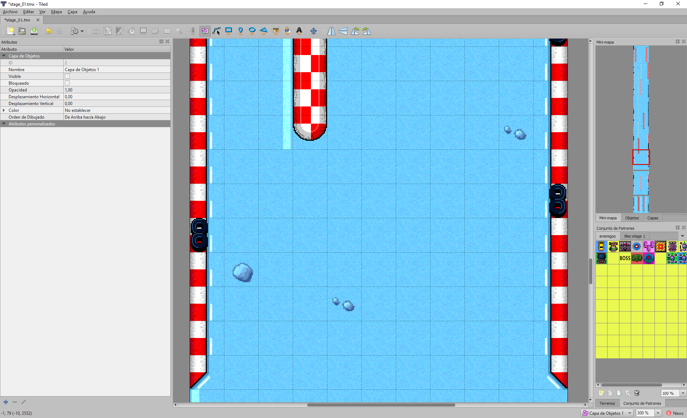
El TILESET es una imagen donde tenemos pequeñas porciones de gráficos que miden lo mismo en horizontal y vertical.
Los métodos disponibles son:
function AddLayer (w, h) : pointer
Agrega una capa con <w> celdas en horizontal y <h> celdas en vertical. La función devuelve un objeto Layer.
function GetNumLayers () : int
Devuelve el número de capas creadas.
function GetLayer (ix) : pointer
Obtiene la capa con índice <ix>. El parámetro es un entero entre 0 y GetNumLayers-1.
function RemoveLayer (layer)
Elimina una capa de la lista. El parámetro <layer> es un puntero al objeto.
function ClearLayers ()
Elimina todas las capas existentes.
function AddTileSet (path, tw, th, sw = 0, sh = 0, texw = 0, texh = 0) : pointer
Crea y añade un TILESET. El parámetro <path> es la ruta a la textura con los gráficos, <tw> es el tamaño horizontal de cada TILE o porción gráfica, <th> es el tamaño vertical de cada TILE, <sw> y <sh> indican qué separación existe entre tiles dentro de la textura en horizontal y vertical. <texw> y <texh> hacen referencia al tamaño a considerar en vertical y horizontal de la textura; en el caso de ser 0, se usará el tamaño original de la misma.
function GetNumTilesets () : int
Obtiene el número de TILESETs existentes.
function GetTileset (ix) : pointer
Obtiene el TILESET con índice <ix>. El parámetro <ix> un entero entre 0 y GetNumTilesets-1.
function FindTileset (path) : pointer
Busca un TILESET por nombre de ruta. Si existe devolverá un puntero al objeto, si no existe devolverá NULL.
function RemoveTileSet (ts)
Elimina el TILESET a partir del parámetro <ts> que será el puntero al objeto.
function ClearTilesets ()
Elimina todos los TILESETs creados.
function SetTileW (w)
Establece el tamaño de tile horizontal por defecto.
function GetTileW () : int
Obtiene el tamaño de tile horizontal por defecto.
function SetTileH (h)
Establece el tamaño de tile vertical por defecto.
function GetTileH () : int
Obtiene el tamaño de tile vertical por defecto.
function SetWidth (w)
Cambia el número de rejillas en horizontal para todas las capas.
function GetWidth () : int
Devuelve el número de rejillas horizontal para todas las capas.
function SetHeight (h)
Cambia el número de rejillas en vertical para todas las capas.
function GetHeight () : int
Devuelve el número de rejillas en vertical para todas las capas.
function GetCellFromPos (x, y) : list
Dada una posición (x, y), devolverá la celda que haya en esa posición. El valor retornado será una lista de dos componentes: [celdaX, celdaY]. En caso de que la posición esté fuera del rango del mapeado, se retornará lista vacía.
function GetInfoFromPos (x, y) : list
Data una posición (x, y), devolverá la información de la celda que haya en esa posición. El valor retornado será una lista de tres componentes: [tilesetObject, tilesetIndex, flags].
El <tilesetObject> es el puntero al objeto TILESET que hace referencia esa celda. El <tilesetIndex> hace referencia al TILE dentro de ese TILESET, es un número entero. Los <flags> indican información de usuario.
function SetOffset (x, y)
En la visualización del mapeado, el offset indica a partir de qué pixel se comienza a representar el mismo.
function SetOffsetX (x)
Establece el pixel horizontal a partir del cual representar el mapeado de celdas.
function SetOffsetY (y)
Establece el pixel vertical a partir del cual representar el mapeado de celdas.
function GetOffsetX () : int
Obtiene el pixel horizontal a partir del cual representar el mapeado de celdas.
function GetOffsetY () : int
Obtiene el pixel vertical a partir del cual representar el mapeado de celdas.
function DrawTile (ts, index, x, y, scale, color)
Dibuja un TILE <index> de un TILESET <ts> en una posición de pantalla (x, y) con una escala <scale> y una mezcla de color <color>. Esta función se ha de usar desde una llamada dentro del dibujado de fotograma.
Interfaz para Layers
| Set (i, j, ts, index, flags = 0) | Asigna en la celda (i, j) el objeto tileset <ts> usando el índice al tile <index> y con datos de usuario <flags>. |
|---|---|
| Get (i, j) : list | Obtiene una lista con [tileset, tileindex, flags]. |
| FillTS (ts, i, j, w, h) | Rellena un área desde (i, j) con tamaño (w, h) con un puntero al tileset <ts>. |
| Fill (index, i, j, w, h) | Rellena un área desde (i, j) con tamaño (w, h) con el valor de tile con índice <index>. |
| GetWidth () : int | Número de celdas en horizontal. |
| GetHeight () : int | Número de celdas en vertical. |
| SetWidth (w) | Establece el número de celdas en horizontal. |
| SetHeight (h) | Establece el número de celdas en vertical. |
| SetSize (w, h) | Establece un nuevo tamaño (w, h). |
| Clear () | Pone a cero todo el contenido de celdas. |
| AddSprite (spr) | Agrega un Sprite a la capa. |
| RemoveSprite (spr) | Elimina un Sprite de la capa. |
Interfaz para Tilesets
| GetTexture () : pointer | Obtiene el puntero a la textura. |
|---|---|
| GetName () : string | Obtiene la ruta a la textura. |
| GetTileW () : int | Indica el tamaño del tile en horizontal. |
| GetTileH () : int | Indica el tamaño del tile en vertical. |
| GetNumTilesW () : int | Indica el número de tiles en horizontal. |
| GetNumTilesH () : int | Indica el número de tiles en vertical. |
| GetTexW () : int | Obtiene el tamaño de textura en horizontal. |
| GetTexH () : int | Obtiene el tamaño de textura en vertical. |
| SetTileW (w) | Establece el tamaño de tile en horizontal. |
| SetTileH (h) | Establece el tamaño de tile en vertical. |
| SetSepW (w) | Establece la separación entre tiles en horizontal dentro de la textura. |
| SetSepH (h) | Establece la separación entre tiles en vertical dentro de la textura. |
| GetSepW () : int | Obtiene la separación entre tiles en horizontal. |
| GetSepH () : int | Obtiene la separación entre tiles en vertical. |
Estos dos tipos de objetos permiten trabajar con archivos de audio. Aunque el interfaz es común entre ambos, la diferencia está en la gestión de la reproducción del audio que tiene cada uno. En el caso de GL_Music, el audio se reproduce en streaming, o sea, el archivo no se carga en memoria al completo, se va leyendo poco a poco. Esto permite trabajar con archivos de audio muy grandes y suele ser utilizado para reproducir música. Por el contrario, GL_Sound carga por completo el archivo de audio en memoria. La idea es poder lanzar los audios lo más rápido que sea posible.
Los métodos disponibles son:
function Load (path)
Carga un archivo de audio y lo prepara para su reproducción. El archivo se encontrará accesible a través de la ruta absoluta o relativa <path>.
Tipos de archivo: WAV, OGG, MP3.
function Play ()
Comienza con la reproducción del archivo de audio.
function Stop ()
Detiene la reproducción del archivo de audio.
function SetLoop (loop)
Establece si se quiere reproducir infinitamente el archivo de audio o no. El parámetro <loop> es un valor que podrá ser verdadero o falso.
function GetLoop () : bool
Indica si la reproducción infinita está activa o no.
function SetVolume (vol)
Establece el nivel de volumen para el audio. El parámetro <vol> será un entero en el rango 0 a 255.
function GetVolume () : int
Obtiene el nivel de volumen para el audio.
function SetPitch (pitch)
Establece una modificación sobre la frecuencia/tono del audio asociado. Por defecto es cero. El parámetro <pitch> podrá ver un número entero positivo o negativo.
function GetPitch () : int
Obtiene la modificación sobre la frecuencia/tono base del audio.
function SetPanning (pan)
Establece el nivel de balance izquierda/derecha del audio. El parámetro <pan> será un entero en el rango 0 a 255. Por defecto es 127 que equivaldría a un equilibro entre izquierda y derecha.
function GetPanning () : int
Obtiene el nivel de balance configurado para el audio.
function SetOnStop (ctx, function)
Permite enganchar una llamada que avisa cuando el audio ha terminado de reproducirse o se ha detenido su reproducción.
function IsPlaying () : bool
Indica si la música está siendo reproducida o no.
Una ruta es un tipo de objeto que tiene una serie de nodos que representan posiciones 2D o 3D. Las rutas sirven principalmente para crear recorridos cíclicos o no.
Los métodos disponibles son:
function AddNode (x, y, z = 0) : pointer
Agrega un nodo con posición (x, y, z).
function InsertNode (x, y, node) : pointer
Inserta un nodo (x, y) delante de otro <node>. Si <node> es NULL o no existe, el nuevo nodo se insertará al final de la lista.
function InsertNode (x, y, z, node) : pointer
Inserta un nodo (x, y, z) delante de otro <node>. Si <node> es NULL o no existe, el nuevo nodo se insertará al final de la lista.
function FindNode (x, y, z, eps = 0.0f) : pointer
Busca en la lista de nodos el punto (x, y, z) más cercano al radio de búsqueda <eps>.
function RemoveNode (x, y, z, eps = 0.0f)
Elimina el primer nodo que haya en la lista que sea más cercano al (x, y, z) en el radio de búsqueda <eps>.
function RemoveNode (ix)
Elimina el nodo de la lista con índice <ix>.
function ClearNodes ()
Borra todos los nodos.
function GetNumNodes () : int
Devuelve el número total de nodos en la lista.
function FindSegment (x, y, z, eps = 0.0f) : list
Busca el segmento (dos nodos) más próximo en el radio de búsqueda <eps> al punto (x, y, z). La lista retornada tendrá dos punteros a objetos nodo.
function FindStart (speed, mode) : pointer
Comienza una ruta por la lista de nodos. El avance por la ruta se hará a velocidad <speed> y se podrá realizar en los siguientes modos <mode>:
| GL_Route.MODE_ENDFIX | La ruta, una vez llega al último punto, se queda allí. |
|---|---|
| GL_Route.MODE_LOOP | La ruta una vez llega al último punto vuelve a comenzar desde el primero. |
| GL_Route.MODE_PINGPONG | La ruta, una vez llega al último punto, vuelve hacia atrás hasta el primer punto y va de nuevo al último, y así indefinidamente. |
| GL_Route.MODE_ENDFIX_AND_DESTROY | Una vez la ruta llega al último punto, la destruye y finaliza. |
function FindNext (pf) : bool
Avanza un paso en el recorrido de la ruta. En <pf> indicaremos la ruta creada previamente con FindStart. Mientras el recorrido no llegue a su fin, la función retornará verdadero. Una vez llegue a su fin, la función retornará falso.
function FindEnd (pf)
Finaliza una ruta y libera recursos de memoria.
function IncPos (x, y, z = 0)
Incrementa en (x, y, z) el valor de las coordenadas de todos los nodos insertados.
function AddCircle (cx, cy, rad, step = 0.1f)
Agrega tantos nodos como sean necesarios para crear un círculo de centro (cx, cy) y radio <rad>. La densidad de nodos se medirá con el parámetro <step>.
function AddRect (x, y, w, h, loop = true)
Agrega tantos nodos como sean necesarios para crear un rectángulo de posición (x, y) y tamaño (w, h). Por defecto el rectángulo se crea para ser cerrado y conseguir una ruta infinita, sin embargo podemos dejarlo abierto si usamos <loop> a falso.
Este control permite la representación de textos dentro de un área delimitada. El control hereda de GL_Sprite, por lo que implementa o reimplementa su funcionalidad.
Los métodos disponibles son:
function GetTextWidth () : int
Indica el ancho en pixeles que ocupa el texto en pantalla.
function GetTextHeight () : int
Indica el alto en pixeles que ocupa el texto en pantalla.
function GetText () : string
Obtiene la cadena de texto asociada al control.
function SetText (text)
Establece la cadena de texto asociada al control y que se visualiza en pantalla.
function SetColor (color)
Establece el color del texto.
function SetFontName (path)
Indica el nombre de la fuente de letra que queremos usar. El nombre de la fuente puede ser una ruta absoluta o relativa. Los formatos de archivo compatibles son: PNG, TTF, OTF.
function GetFontName () : string
Obtiene el nombre de la fuente de letra.
function SetFontSize (size)
Establece el tamaño de la fuente una vez se representa en pantalla.
function GetFontSize () : int
Retorna el tamaño de la fuente usado.
function SetFont (path, size)
Equivale a aplicar un SetFontName y un SetFontSize al mismo tiempo.
function SetAlign (align)
Establece el tipo de alineación que queremos para el texto dentro del área de dibujado. La alineación podrá ser una combinación de los flags: DT_LEFT, DT_RIGHT, DT_TOP, DT_BOTTOM, DT_CENTER, DT_VCENTER.
function GetAlign () : int
Obtiene la alineación utilizada para el texto.
function SetFontSpacing (hSpace, vSpace)
Establece un espaciado adicional entre letras en horizontal y vertical. Con esta función podemos ajustar el estilo por defecto de separación de letras que usa la fuente utilizada.
function SetFontBitmapProperties (numX, numY, charStart)
En el caso de usar una fuente bitmap (PNG), previa carga de la textura, hay que indicar el número de caracteres que hay en horizontal <numX> y el número que hay en vertical <numY>. También hay que especificar cuál es el carácter inicial <charStart>.
Un temporizador permite ejecutar código script cada cierto tiempo.
Los métodos disponibles son:
function SetFrequency (ms)
Establece la frecuencia en milisegundos <ms> en la que se invoca la llamada de usuario.
function GetFrequency () : int
Obtiene el número de milisegundos configurados para invocar la llamada de usuario.
function SetUserCallback (ctx, function)
Establece la llamada de usuario en el contexto <ctx> y la función con nombre <function>.
Un colisionador gestiona colisiones entre sprites.
Los métodos disponibles son:
function GetCollisionSides (spr) : int
Comprueba las colisiones del Sprite <spr> con el colisionador. En caso de haber colisión, devolverá una serie de flags que nos indicarán qué lados del rectángulo se han visto afectados:
function SetCheckerObj (spr)
Permite especificar un Sprite como área de chequeo.
function GetCheckerObj () : pointer
Obtiene el Sprite que sirve como área de chequeo. Si no hay ninguno asignado devolverá NULL.
function SetCheckerRect (x, y, w, h)
Permite especificar un área fija rectangular como área de chequeo en la posición (x, y) y con tamaño (w, h).
function GetCheckerRect () : list
Obtiene el área estática de chequeo. Si existe, devolverá una lista con cuatro componentes: [x, y, w, h]. En caso contrario, una lista vacía.
function SetCheckType (type)
Permite establecer el tipo de Sprite sobre el que se quiere detectar colisiones. Véase función GL_Sprite::SetType.
function SetMaxCollisions (num)
Indica el máximo de colisiones permitidas a la vez. Cuando se produce una colisión, se llama a la función de usuario. Si limitamos el número, solo se gestionará esta cantidad de llamadas.
function SetOnCollision (ctx, function)
Establece la llamada a usuario provocada cada vez que ocurre una colisión. En la función indicamos el contexto <ctx> y el nombre de la función <function>.
Un controlador permite dotar de movimiento a Sprites en diferentes modos.
Los métodos disponibles son:
function SetTarget (target)
Establece el Sprite en el cual el controlador gestionará su movimiento.
function GetTarget () : pointer
Obtiene el Sprite que se está controlando.
function SetSpeed (speedX, speedY)
Establece la velocidad horizontal y vertical, por separado, a aplicar al movimiento del Sprite.
function SetSpeed (speed)
Establece la velocidad horizontal y vertical, al mismo tiempo, a aplicar al movimiento del Sprite.
function SetSpeedX (speed)
Establece la velocidad horizontal a aplicar al movimiento del Sprite.
function SetSpeedY (speed)
Establece la velocidad vertical a aplicar al movimiento del Sprite.
function GetSpeedX () : float
Obtiene la velocidad horizontal.
function GetSpeedY () : float
Obtiene la velocidad vertical.
function GetDirX () : float
Obtiene la dirección y velocidad de movimiento horizontal actual. Este valor puede ser positivo o negativo, por lo que sabremos si indica dirección izquierda o derecha.
function GetDirY () : float
Obtiene la dirección y velocidad de movimiento vertical actual. Este valor puede ser positivo o negativo, por lo que sabremos si indica dirección arriba o abajo.
function SetRoute (route, mode)
Establece un objeto ruta <route> y un modo <mode> (véase GL_Route::FindStart) como sistema de movimiento a aplicar al Sprite objetivo. Esta llamada desactiva SetPad y SetCustom.
function SetOnEndRoute (ctx, function)
Engancha una llamada a la función con nombre <function> del contexto <ctx> cuando finaliza el recorrido de la ruta.
function SetPad (pad)
Establece un mando virtual (GL_Pad) como mecanismo de gestión de movimiento para el Sprite. Esta llamada desactiva SetRoute y SetCustom.
function SetCustom (ctx, function)
Establece como mecanismo de gestión de movimiento, una función de usuario. Esta se invocará fotograma a fotograma, y desde ella se podrá acceder al Sprite para aplicar el movimiento que corresponda. Esta llamada desactiva SetRoute y SetPad.
function GetX () : float
Obtiene la posición X del controlador de movimiento.
function GetY () : float
Obtiene la posición Y del controlador de movimiento.
function SetUpdateCallback (ctx, function)
Establece una llamada posterior a la gestión de movimiento que hayamos configurado. La función ha de tener el prototipo:
function OnUpdateCallback (_controller);function Undo ()
Deshace la última actualización de movimiento que hayamos realizado.
function EnableLimits (x, y, w, h)
Establece los límites de movimiento. Esto obligará a que nunca se pueda salir del rectángulo creado con posición (x, y) y tamaño (w, h).
function DisableLimits ()
Desactiva el área de limitación de movimiento.
Un pad representa un mando virtual con el que capturar las acciones de los dispositivos de entrada y procesarlos en nuestra aplicación a través de una interfaz común.
Los métodos disponibles son:
function SetButton (butID, channel, mode, value)
Configura el botón <butID> en su canal <channel>. Existe un máximo de 3 canales.
Los ID de botón disponibles son:
| PAD_BUTTON_LEFT | Botón izquierdo |
|---|---|
| PAD_BUTTON_RIGHT | Botón derecho |
| PAD_BUTTON_UP | Botón arriba |
| PAD_BUTTON_DOWN | Botón abajo |
| PAD_BUTTON_INSIDE | Botón adentro |
| PAD_BUTTON_OUTSIDE | Botón afuera |
| PAD_BUTTON_1 hasta PAD_BUTTON_16 | Botones genéricos |
Los modos disponibles son:
| PAD_BUTTON_KEYBOARD | Mapear teclado |
|---|---|
| PAD_BUTTON_MOUSE | Mapear ratón |
| PAD_BUTTON_JOYSTICK1 hasta PAD_BUTTON_JOYSTICK4 | Mapear un joystick |
El parámetro <value> dependerá del modo que se utilice. En el caso del teclado, se podrá indicar la tecla que se quiere mapear, por ejemplo: KEY_A (véase apéndice Constantes de Teclado)
En el caso del ratón, se puede indicar: MOUSE_LEFT, MOUSE_RIGHT, MOUSE_MIDDLE, MOUSE_DBL_LEFT, MOUSE_DBL_RIGHT.
En el caso del joystick, se indicará un número entero que identificará el botón según el fabricante. El número generalmente comienza en cero.
function GetButtonMode (butID, channel) : int
Dado el ID de botón <butID> y el canal <channel> obtendremos el modo asignado.
function GetButtonValue (butID, channel) : int
Dado el ID de botón <butID> y el canal <channel> obtendremos el valor asignado.
function IsButton (butID) : bool
Permite saber si un botón se encuentra presionado o no.
Para convertir VR-SCRIPT a código nativo de una CPU, por ejemplo, un Z80/R800 o un MOS, se utiliza la herramienta “AS”. Puedes ver información sobre el uso de esta herramienta en los comandos VR-DOS.
La forma de escribir código VR-SCRIPT para usar esta herramienta es un tanto más restrictiva que lo visto hasta ahora. Es necesario establecer los tipos de las variables, constantes, funciones y parámetros, además de tener que dar acceso a los prototipos de las funciones externas (otros módulos) que se quieran utilizar. En ese sentido, se trataría de trabajar igual que haríamos con un compilador C/C++ convencional.
Conceptos:
| ENTORNO | Hace referencia a si el programa a crear es para MSX o SPECTRUM o COMMODORE o para una ROM MSX con mapper KonamiSCC o un programa MSX-DOS para MSX, etc. Un entorno no solo hace referencia a un sistema con su CPU y hardware dedicado, sino también a los distintos sistemas operativos o aplicaciones donde vaya a ejecutarse. |
|---|---|
| CRT | Sería el código utilizado como arranque de nuestra aplicación. Es el punto de entrada (según el tipo de entorno) y desde aquí se inicializa todo lo necesario para poder ejecutar lo que sería nuestro “main” (el punto de entrada del programa). |
| LIBRERIA | Conjunto de funciones, genéricas o no, que sirven para ayudar a la creación y gestión de nuestro programa. |
| CPU DESTINO | Hace referencia a la CPU para la cual queremos convertir el código script. En la conversión del código script se generará código ASM nativo que requerirá de un compilado y finalmente de un enlazado para generar un binario final entendible por esta CPU. |
| BANCOS | El concepto de banco hace referencia a un bloque de código, generalmente de 8192 bytes (8 Kb), aunque puede tener otro tamaño, que permite la distribución del código y/o datos fuera del área de direccionamiento de la CPU destino. |
El proceso de generación del binario final sería:
| 0 | ARCHIVOS FUENTES | Serían archivos .ASM, .PI, .LIB. Todos ellos conforman el código que usaremos para crear nuestro programa. Entre ellos tendremos uno que será el CRT. |
|---|---|---|
| 1 | PREPROCESAMIENTO | En el caso de los archivos script (.PI) será necesario convertirlos a archivos .ASM de la CPU destino. |
| 2 | COMPILADO | Una vez tenemos todos los archivos fuente generados (todos serán archivos .ASM), se compilarán para generar un archivo objeto (.O). |
| 3 | ENLAZADO | Los archivos objetos se enlazarán, resolviendo direcciones y etiquetas, para generar un binario resultante final. |
Ejemplo de CRT:
class MSX_CRT_ROM_ASCII8
{
externals:
function Init () : void;
function _main() : void
{
native
{
.romheader
// ASCII 8 MAPPER
ld a, 0
ld (0x6000), a
ld a, 1
ld (0x6800), a
ld a, 2
ld (0x7000), a
ld a, 3
ld (0x7800), a
//clear RAM (first 4kb only)
ld bc, 1024*4
ld hl, 0xc000
ld de, 0xc001
ld (hl),0
ldir
di
im 1
ld sp, 0xF380
ei
call Init
}
}
}En el ejemplo de antes especificamos que la función Init tiene un prototipo concreto y que se encuentra fuera de ese script. En nuestro caso, Init sería el punto de entrada de nuestro programa.
Si en vez de Init queremos usar otro nombre, no habría ningún problema en hacerlo.
En este caso, en este CRT, se crean 16 bytes que conforman la cabecera de una ROM MSX. Eso se hace con la palabra reservada .romheader. Por tanto, los primeros 16 bytes de nuestro binario serán la cabecera que contiene los valores:
41 42 10 40 00 00 00 00 00 00 00 00 00 00 00 00El 0x41 y 0x42 es una marca para que la BIOS del MSX reconozca que hay un cartucho ahí. Los siguientes 16 bits son la dirección de comienzo, en este caso 0x4010. Aquí decir, que en este caso es 0x4010 (hexadecimal) porque al enlazador le vamos a decir que use como dirección inicial para el código la 0x4000 y para RAM (variables) la 0xC000. Si al enlazador le dijésemos que queremos ubicar el código en otra dirección, .romheader lo tendría en cuenta.
Cada CRT ha de inicializar lo necesario para crear y ajustarse al entorno requerido.
Teniendo el CRT necesario, necesitaremos las funciones para que nuestro programa haga lo pertinente. Lo normal es que tengamos funciones que sean comunes entre diferentes programas: estas funciones las podemos tener en una librería. Lo bueno de una librería es que no es necesario tener que recompilarla cada vez. De todos modos, no es obligatorio tener una librería: podemos tener todos los fuentes que sean necesarios y compilarlos cada vez que queramos generar el binario final.
Un ejemplo de llamada de la herramienta para generar un binario sería:
as /CODE 0x4000 /DATA 0xC000 /SIZE 256K /OUT game.rom msx_crt.pi msxlib.pi wyz_psg_version_2.asm game.piPodemos agregar tantos PI como ASM como LIB requiramos. Lo importante es tener en cuenta el orden, ya que es como se van a ir distribuyendo en el espacio de direccionamiento: por eso es importante que el primero en ese orden sea el CRT.
De hecho, podríamos tener todo en un único archivo. Veamos este ejemplo:
.CPU MOS6510
.ORG 0x0801
;header
.db 0x0C, 0x08, 0x0A, 0x00, 0x9E, 0x20
.db 0x34, 0x30, 0x39, 0x36, 0x00, 0x00
.db 0x00
; Start in 0x1000
.ds (0x1000 - $), 0xFF
start:
lda #17
sta 53272; POKE 53272,23 :REM LOWER/UPPER CASE MODE
ldx #0x00
loop:
lda message,x
jsr 0xFFD2
inx
cpx #0x0c bne loop rts
message:
.petsciiz "Hello World!"Este programa ASM sirve para la CPU de los Commodore 64, el MOS6510. El programa es un sencillo “Hello World” y el entorno es un programa BASIC de C64. Los programas BASIC de C64 se ubican en la dirección 0x801. También requieren de una cabecera.
En este caso, desde la consola VR-DOS haríamos:
as /OUT hello.prg hello.asmIncluir cabeceras de módulos externos
Podemos hacer uso o referencia a funciones que se encuentran en otros archivos de script. Veamos un ejemplo:
class Game partial Game_H, Player_H, Title_H, Outro_H
{
}En el script Game.pi, hacemos uso de funciones existentes en otros scripts como Player.pi, Title.pi y Outro.pi.
Mediante partial, lo que hacemos es incluir el código existente en los archivos Game_H.pi, Player_H.pi, Title_H.pi y Outro_H.pi. Veamos que hay en Player_H.pi por ejemplo:
class Player_H
{
defines:
MAX_PLAYER_SPEED : int = 2;
DEF_PLAYER_SPEED : int = 4;
MAX_PLAYER_LIVES : int = 3;
DEF_PLAYER_LIVES : int = 3;
MAX_STAGE : int = 5;
externals:
g_playerSpeed : ubyte;
g_playerPower : ubyte;
g_playerScore : uint;
g_playerHiScore : uint;
g_playerNextLife : uint;
g_playerStage : ubyte;
g_playerLives : ubyte;
#metadata _BANK_CODE
function Player_Init (_mai : pointer(MapActorInfo)) : pointer(GameActor);
function Player_AddScore(_sc : uint) : void;
function Player_NextStage() : void;
#metadata
}En este caso, Player_H.pi incluye los prototipos públicos que definimos en Player.pi, además de constantes y referencias a variables.
La directiva #metadata en este caso permite ofrecer información al transcompilador que convierte script a ensamblador. En este caso, al hacer _BANK_CODE está indicando que los prototipos declarados en esa sección se guardan en una zona especial para ser accedida mediante un mecanismo de cambio de banco.
Librerías matemáticas obligatorias
El transcompilador que convierte el código script a ensamblador asume que existirán para el enlazador una serie de funciones como estas:
function _mul_u8_u8 () : ushort
function _mul_s8_s8 () : short
function _mul_u16_u8 () : ushort
function _mul_s16_s8 () : short
function _mul_u16_u16 () : ulong
function _mul_s16_s16 () : long
function _div_u8_u8 () : ubyte
function _div_s8_s8 () : ushort
function _div_u16_u8 () : ushort
function _div_s16_s8 () : ushort
function _div_u16_u16 () : ushort
function _div_s16_s16 () : ushort
function _div_u32_u8 () : ulong
function _div_s32_s8 () : ulong
function _div_u32_u16 () : ushort
function _add_u32_u32 (_a : long, _b : long) : longAdemás de estas, habrá otras relacionadas con números flotantes y combinaciones de bits y signo para abordar operaciones complejas que no soporte directamente la CPU de destino.
Estas funciones generalmente se encontrarán junto a la librería de cada entorno de programación.
Especificar tipos
Es absolutamente necesario especificar tipos en:
Constantes
Variables
Valores de retorno en función
Parámetros de las funciones
También debe especificar en cualquier referencia a un tipo de dato.
Referencia a archivos de datos externos
Podemos incluir directamente datos embebidos de archivos externos del siguiente modo:
class Resources
{
#metadata _BANK_DATA
constants:
rsc_bmp_stage_1 : list(ubyte) = @"dat/rsc_bmp_stage_1.dat"@];
rsc_bmp_stage_2 : list(n) = @"dat/rsc_bmp_stage_2.dat"@];
#metadata
}De esta forma, podemos acceder a esos datos posteriormente. Por ejemplo:
Bitmap_Load (_bank(rsc_bmp_stage_2), rsc_bmp_stage2, 0, VDP_LOAD_ALLBANKS); La palabra reservada _bank permite saber el banco donde se ha guardado determinada variable.
La etiqueta de la variable indicará la dirección donde se encuentra accediendo con instrucciones de la CPU destino.
Ensamblador inline
Podemos integrar ensamblador directamente en el código script usando la palabra reservada native. Ejemplos:
function BIOS_SetVBlankHook (_f : pointer) : void
{
native
{
LD A, 0xC3
LD L, 4(ix)
LD H, 5(ix)
DI
LD (0xFD9F), A
LD (0xFDA0), HL
EI
}
}function BIOS_GetCharSet() : ubyte
{
native
{
ld hl, 0x002B
ld a, (hl)
and a, 0x0F
ld l, a
}
#pragma errorifnoreturntype=off
return;
#pragma errorifnoreturntype=on
} Mediante el #pragma anterior evitamos que no haya errores por salir de la función sin devolver un valor; realmente se retorna en el registro L, pero el transcompilador no detecta esto y por eso hay que indicar esta excepción.
Acceso a los parámetros desde lenguaje nativo con Z80/R800
El acceso a los parámetros se hace usando el registro de indexación IX. A partir del offset 4 se accede a los distintos parámetros. La pila se encuentra así al entrar a una función con parámetros:
| … | … |
|---|---|
| 4(ix) | A partir de aquí, accedemos a los parámetros de la función (si existen) |
| 3(ix) | IX High |
| 2(ix) | IX Low (copia de seguridad de IX, para recuperarlo una vez se sale de la función) |
| 1(ix) | PC high |
| 0(ix) | PC low (dirección de retorno una vez salimos de la función) |
| -1(ix) | A partir de aquí, reservado para las variables locales (si existen) |
| … | … |
Retorno de valores en función desde lenguaje nativo con Z80/R800
| Tamaño de dato | Registro |
|---|---|
| 8 | L |
| 16 | HL |
| 32 | DE:HL |
El V9968 hace referencia a un hipotético chip, no existente como hardware real, pero que se ha sintetizado por software para permitir una evolución “razonable” de la versión del chip de vídeo utilizado en los modelos más avanzados de la familia MSX. El V9968 es compatible con el V9958 y añade las siguientes mejoras:
Hasta 16Mb de VRAM (24 bits de direccionamiento).
Hasta 256 páginas SCREEN 8/10/12/13.
Se han extendido los registros #35, #39, #43 para soportar 16 bits.
ID VDP Chip = 3 (Status Register #1 - Bits 1-5).
Paleta de colores de 24 bits, RGB888.
Nuevo registro #48 para completar con 24 bits la dirección PNT.
Nuevo modo de pantalla de texto multicolor 80x24.
Nuevo modo de pantalla bitmap 256x212 paleta de 256 colores de 16M.
El R8000 hace referencia a un hipotético chip, no existente como hardware real, que se ha sintetizado por software para ofrecer compatibilidad Z80/R800 además de nuevas funcionalidades:
La función TRAP permite hacer llamadas dentro y fuera del entorno de la máquina virtual con la intención de acceder a características especiales del sistema MSXVR. Según el valor de 16 bits especificado en la instrucción y del valor de ciertos registros del Z80/R800, podemos disponer de las siguientes funcionalidades:
| 0000 | Aplicar un Breakpoint. |
|---|---|
| 0001 | Detectar si es un MSXVR o no. |
| 0002 | Cambiar el comportamiento del Slot de MSX a modo MSXVR o viceversa. |
| 0003 | Invocar una función de VR-SCRIPT nativa. |
| 0004 | Manipulación del puerto DB37. |
| 0005 | Encender/Apagar LEDS. |
| 0006 | Activar/Desactivar Control Remoto. |
0000 - Aplicar un breakpoint
Detiene la ejecución de la máquina virtual y lanza el depurador.
Ejemplo:
trap 0x00000001 - Detectar si es un MSXVR o no.
Permite saber si estamos o no en un MSXVR mirando el flag Z. Finalizada la instrucción, si Z está activo es que estamos en un MSXVR.
Ejemplo:
trap 0x0001
call z, OnMSXVRMode 0002 - Cambiar el comportamiento del Slot de MSX a modo MSXVR o viceversa
Asignar el modo de SLOT, MSX o MSXVR. Usaremos los cuatro bits bajos del registro A para determinarlo. Si el registro A=0, usaremos modo MSX, y si A<>0, modo MSXVR. Finalizada la instrucción, si Z está activo es que se ha puesto el modo de slot MSXVR.
Ejemplo donde configuramos el slot en modo MSXVR:
ld a, 1
trap 0x0002 0003 - Invocar una función de VR-SCRIPT nativa
Llamada a una función de un contexto VR-SCRIPT. En nuestra máquina virtual, hemos de haber establecido tanto el contexto como la función a invocar. Tras el retorno de esta función, cualquier flag o registro podría haberse modificado.
Véase VirtualMachineController::SetCPUNativeCallback.
Ejemplo de uso de la función Nativa:
class Example implements DOS_Program
{
virtual Start()
{
_msx = GetEngine().CreateVirtualMachine("msx1");
_msx.InsertCartridge(0, "skyjaguar2/game.rom", "dvg1");
_msx.SetCPUNativeCallback(this, "OnNativeCB");
}
function OnNativeCB()
{
GetEngine().LogVerbose("NATIVE CALL!!");
}
}Cuando en el código de game.rom invoquemos a “trap 0x0003” se llamará a la función OnNativeCB.
0004 - Manipulación del puerto DB37
Engloba todas las operaciones relacionadas con este puerto.
A = código de función
A = 0, Dirección de los 32 bits (0=salida, 1=entrada)
A = 1, Pull-ups de los 32 bits (0=no, 1=sí)
A = 2, Lectura de 32 bits
A = 3, Escritura de 32 bits
HL = 16 bits bajos
DE = 16 bits altos
0005 - Encender/Apagar LEDS
Permite encender y apagar los LEDs de usuario. Para ello usaremos cada bit del registro A. Si el bit es 0 se apagará y si el bit es 1 se encenderá. El orden de los bits corresponde con el orden de izquierda a derecha de los LEDs.
Ejemplo donde encendemos todos los leds:
ld a, 255
trap 0x00050006 - Activar/Desactivar Control Remoto
Activa o desactiva el control remoto (REM) mirando el valor del registro A. Si el registro es 0, apagará el control remoto, y si es distinto de 0, lo encenderá.
Ejemplo donde apagamos el control remoto:
ld a, 0
trap 0x00060007 - Obtener el idioma
Permite obtener el código del idioma seleccionado en el sistema. El valor se obtiene en el registro HL. Los códigos de idioma son:
| 0 | Español ES |
|---|---|
| 1 | Inglés GB |
El VR-SCRIPT hace uso de funciones creadas para desempeñar todo tipo de acciones. Estas cubren un amplio espectro de posibilidades y permiten tratar diferentes tipos de datos, estructuras y objetos.
Estas funciones pueden o no devolver un valor. La forma de invocarlas es:
_valor = <nombre_funcion>(argumentos);
O bien:
<nombre_funcion>(argumentos)
Los argumentos son una serie de expresiones o valores separados por comas. También es posible que la función no requiera argumentos; en ese caso, no se le pasaría ninguno:
<nombre_funcion>()
Ejemplos:
_a = "5";
_a = int(_a);
_str = "El dinosaurio es un ser prehistorico";
_ix = String_Find(_str, "ser");A continuación se enumerarán y detallarán las diferentes funciones existentes en el API Nativo. Salvo que sea estrictamente necesario, se recomienda siempre el uso de los objetos y clases a nivel de VR-ENGINE para trabajar con texturas, archivos, bases de datos, etc. en vez de sus funciones API nativas. La interfaz que se crea a nivel VR-ENGINE es siempre la más apropiada y utiliza el API Nativo de forma óptima y segura. El equivalente podría ser la BIOS de los MSX. En los MSX se recomienda usar la BIOS para acceder el VDP, PSG, etc. ya que saltarse la BIOS y acceder directamente al hardware (en nuestro caso el API Nativo), podría incurrir en incompatibilidades con otras máquinas.
Funciones relacionadas con la conversión de tipos de datos.
function bool (x) : bool
Convierte el tipo del valor pasado en <x> a bool.
| TIPO de <x> | RESULTADO |
|---|---|
| String | Cuando <x> sea “true” el resultado será verdadero, y cuando <x> sea “false” el resultado será falso. En cualquier otro caso, se convertirá la cadena a un entero, y si el valor es distinto de cero se considerará verdadero, y si es cero, falso. |
| Numérico, Puntero u Objeto | Cuando <x> sea distinto de cero, el resultado será verdadero, y en caso contrario el resultado será falso. |
| Lista | El resultado será siempre falso. |
function byte (x) : byte
Convierte el tipo del valor pasado en <x> a byte.
| TIPO de <x> | RESULTADO |
|---|---|
| String | Siempre que el valor de <x> contenga una cadena de caracteres que represente un número, se devolverá ese valor en formato byte. Esto implica convertir la cadena a número y quedarse con los 8 bits menos significativos. Si la cadena no es un número, devolverá 0. |
| Numérico, Puntero u Objeto | Se ajustará el valor de <x> al tipo byte quedándose siempre con los 8 bits menos significativos. |
| Lista | El resultado será siempre 0. |
function ubyte (x) : ubyte
Convierte el tipo del valor pasado en <x> a unsigned byte.
El funcionamiento es idéntico al de la función byte, pero dando como resultado el tipo “unsigned byte”.
function short (x) : short
Convierte el tipo del valor pasado en <x> a short.
El funcionamiento es idéntico al de la función byte, pero dando como resultado el tipo “short”, que permite representar números de 16 bits con signo.
function ushort (x) : ushort
Convierte el tipo del valor pasado en <x> a unsigned short.
El funcionamiento es idéntico al de la función byte, pero dando como resultado el tipo “unsigned short”, que permite representar números de 16 bits sin signo.
function int (x) : int
Convierte el tipo del valor pasado en <x> a int.
El funcionamiento es idéntico al de la función byte, pero dando como resultado el tipo “int”, que permite representar números de 32 bits con signo.
function uint (x) : uint
Convierte el tipo del valor pasado en <x> a unsigned int.
El funcionamiento es idéntico al de la función byte, pero dando como resultado el tipo “unsigned int”, que permite representar números de 32 bits sin signo.
function long (x) : long
Convierte el tipo del valor pasado en <x> a long.
El funcionamiento es idéntico al de la función byte, pero dando como resultado el tipo “long”, que permite representar números de 64 bits con signo.
function ulong (x) : ulong
Convierte el tipo del valor pasado en <x> a unsigned long.
El funcionamiento es idéntico al de la función byte, pero dando como resultado el tipo “unsigned long”, que permite representar números de 64 bits sin signo.
function float (x) : float
Convierte el tipo del valor pasado en <x> a float (número decimal simple).
El funcionamiento es idéntico al de la función byte, pero dando como resultado el tipo “float”, que permite representar números de 32 bits de coma flotante.
function double (x) : double
Convierte el tipo del valor pasado en <x> a double (número decimal doble).
El funcionamiento es idéntico al de la función byte, pero dando como resultado el tipo “double”, que permite representar números de 64 bits de coma flotante.
function string (x) : string
Convierte el valor pasado en <x> al tipo string (cadena de caracteres).
| TIPO de <x> | RESULTADO |
|---|---|
| Numérico, Puntero u Objeto | Convierte el valor en su representación dígito a dígito en cadena de caracteres ASCII. |
| Lista | Convierte la lista en una versión ASCII de todo su contenido. |
| Bool | Si es verdadero devolverá “true” y si es falso devolverá “false”. |
Ejemplos:
_str = string(5);_str valdrá “5”.
_str = string([5, 6, "hola", -5.5]);_str valdrá “[5, 6, "hola", -5.5]”.
_str = string(true);_str valdrá “true”.
Funciones relacionadas con el ámbito matemático.
function abs (x) : float
Valor absoluto de <x>.
function acos (x) : float
Arcocoseno de <x> en radianes.
function asin (x) : float
Arcoseno de <x> en radianes.
function atan (x) : float
Arcotangente de <x> en radianes.
function atan2 (y, x) : float
Arcotangente de dos parámetros. Devuelve, expresado en radianes, el ángulo formado entre el eje X positivo y la recta que conecta el origen con un punto de coordenadas (x,y) ≠ (0,0) del plano euclidiano.
function ceil (x) : float
Redondea por arriba, al entero más cercano, el número <x>.
function floor (x) : float
Redondea por abajo, al entero más cercano, el número <x>.
function clamp (x, min, max) : float
Ajusta el valor de <x>, si es necesario, para asegurar que su valor siempre esté entre el mínimo <min> y el máximo <max>. Si el valor de <x> es menor que <min> se devolverá <min>, y si el valor de <x> es mayor que <max> se devolverá <max>.
function cos (x) : float
Coseno de <x> en radianes.
function degtorad (x) : float
Convierte el valor expresado en grados de <x> a radianes.
function radtodeg (x) : float
Convierte el valor expresado en radianes de <x> a grados.
function dim (x, y = 0) : list
Redimensiona una lista. Permite crear listas de listas según las dimensiones establecidas en el argumento <x>. Esta lista se inicializa con el valor especificado en <y>. Si no se especifica valor, se considerará cero.
Ejemplo:
_ret = dim([5, 3], 8);Eso haría que <_ret> fuese una lista de dos dimensiones. Sería similar a hacer en C algo como: int _ret[5][3] = {8};
function exp (x) : float
Exponencial del número <x>.
function frand (x, y) : float
Número aleatorio generado entre <x> e <y>. El tipo del valor devuelto es <float>.
function rand (arg0, arg1) : int
Número aleatorio generado entre <x> e <y>. El tipo del valor devuelto es <int>.
function isnan (x) : bool
Indica si el número es válido o se trata de una indefinición matemática.
function log (x) : float
Logaritmo natural (en base e) del número <x>.
function log10 (x) : float
Logaritmo en base 10 del número <x>.
function range (x, y, step = 1) : list
Obtiene una lista que contiene los números entre <x> e <y> con paso especificado en el argumento <step>.
Ejemplo:
_ret = range(3, 8, 2);Haría que <_ret> valiese: [3, 5, 7]
function pow (x, y) : float
Calcula la potencia de la base <x> elevada al exponente <y>.
function round (x) : int
Redondea por arriba un número entero <x>. Equivalente a la función ceil.
function sign (x) : float
Devuelve el signo de un número <x>. Si es positivo devolverá 1 y si es negativo devolverá -1. En caso de que <x> sea 0, devolverá también 0.
function sin (x) : float
Seno de <x> en radianes.
function slerp (min, max, t) : float
Devuelve un valor entre <min> y <max> en función del factor <t>. El factor <t> será un valor entre 0 y 1. Por tanto, si <t> = 0, devolverá <min>, y si <t> = 1, devolverá <max>.
function sqrt (x) : float
Raíz cuadrada de <x>.
function srand (x)
Semilla para la generación de números aleatorios. En función de este valor <x>, las llamadas a rand y frand se verán afectadas.
function tan (x) : float
Tangente de <x> en radianes.
Conjunto de funciones de ámbito matemático, con un carácter más avanzado y que sirven de ayuda en la computación gráfica tanto bidimensional como tridimensional.
function AngleSlerp (from, to, delta) : float
Obtiene el ángulo en radianes, interpolado entre <from> y <to> según <delta>, que podrá ser un valor entre 0 y 1. Si <delta> es cero, devolverá el valor de <from> y si <delta> es uno, devolverá el valor de <to>. Si <delta> es 0.5, devolverá (<to>‑<from>)/2.
function AngleXBetweenLines (x1, y1, z1, x2, y2, z2) : float
Determina el componente X del ángulo entre dos vectores (x1,y1,z1) y (x2,y2,z2).
function AngleYBetweenLines (x1, y1, z1, x2, y2, z2) : float
Determina el componente Y del ángulo entre dos vectores (x1,y1,z1) y (x2,y2,z2).
function AngleZBetweenLines (x1, y1, z1, x2, y2, z2) : float
Determina el componente Z del ángulo entre dos vectores (x1,y1,z1) y (x2,y2,z2).
function GetNearestPointOnCircle (x1, y1, x2, y2, cx, cy, cr) : list
Dado un segmento (x1,y1)-(x2,y2) y un círculo (cx, cy) con radio <cr>, se devolverá el punto del segmento más cercano al círculo, indicando también si el segmento corta el círculo. La lista devuelta tendrá los siguientes componentes: [¿hay colisión?, px, py].
function GetNearestPointOnCurve (ax, ay, bx, by, cx, cy, dx, dy, px, py) : list
Dada una curva cúbica de Bezier definida con los puntos de control (ax, ay), (bx, by), (cx, cy) y (dx, dy), determina el punto de esa curva más cercano al dado en (px, py). La lista devuelta por la función es: [x, y].
function GetNearestPointOnLine (x1, y1, z1, x2, y2, z2, px, py, pz) : list
Dado un segmento definido por (x1,y1,z1) - (x2,y2,z2), busca el punto de dicho segmento más cercano al punto dado en (px,py,pz). El valor devuelto por la función es una lista: [¿en rango?, x, y]. El valor ¿en rango? es un booleano que indica si el punto más cercano está más allá de los extremos del segmento. Téngase en cuenta que (x, y) nunca podrá ser un punto fuera del segmento.
function GetNearestPointOnTriangle (x1, y1, z1, x2, y2, z2, x3, y3, z3, px, py, pz) : list
Dado un triángulo con sus tres vértices (x1,y1,z1)-(x2,y2,z2)-(x3,y3,z3), nos permite averiguar el punto de dicho triángulo más cercano a un punto dado (px,py,pz). El valor devuelto por la función es la lista: [¿en rango?, x, y, z]. El valor ¿en rango? hace referencia a si el punto encontrado está dentro de la zona delimitada por los lados del triángulo. (x,y,z) será el punto hallado como más cercano y siempre será un punto contenido en alguno de los tres segmentos del triángulo.
function GetPerpendicularVector (x, y, z) : list
A partir de un vector definido como (x,y,z), devuelve el vector perpendicular en formato lista: [x, y, z].
function GetPlaneFromTriangle (x1, y1, z1, x2, y2, z2, x3, y3, z3) : list
Dado un triángulo formado por tres vértices (x1,y1,z1) - (x2,y2,z2) - (x3,y3,z3), devolverá la ecuación del plano Ax + By + Cz + D en formato lista: [A, B, C, D].
function GetRayVector (x1, y1, z1, x2, y2, z2) : list
Dados dos puntos (x1,y1,z1) y (x2,y2,z2), devolverá el vector con origen (x1,y1,z1) y dirección hacia (x2,y2,z2). El resultado vendrá en la lista: [vx,vy,vz].
function IncreaseAngle (now, to, step) : float
Dado un ángulo <now> expresado en radianes, avanzará el paso <step> hasta alcanzar el valor <to>. Véase también IncreaseAngleWithInertia. El paso <step> siempre ha de ser un valor positivo.
Ejemplo:
cur = IncreaseAngle (cur, NUM_PI / 2, GetFTime() * 0.1f);function IncreaseAngleWithInertia (now, to, step) : float
Dado un ángulo <now> expresado en radianes, avanzará el paso <step> hasta alcanzar el valor <to>. La diferencia con la función IncreaseAngle es que se aplica una inercia, o sea, cuanta más distancia haya entre <now> y <to> más deprisa se avanzará, mientras que a medida que nos acercamos al destino, esta velocidad se irá reduciendo.
function IncreaseValue (now, to, step) : float
Dado un valor <now>, nos permite avanzar un paso <step> hasta llega al valor <to>. La función tiene en cuenta si ha de sumar o restar el paso; por tanto <step> siempre ha de ser un valor positivo. Véase también IncreaseValueWithInertia.
function IncreaseValueWithInertia (now, to, step) : float
Dado un valor <now>, nos permite avanzar un paso <step> hasta llega al valor <to>. La función tiene en cuenta si ha de sumar o restar el paso; por tanto <step> siempre ha de ser un valor positivo. La diferencia con la función IncreaseAngle es que se aplica una inercia, o sea, cuanta más distancia haya entre <now> y <to> más deprisa se avanzará, mientras que a medida que nos acercamos al destino, esta velocidad irá reduciendo.
function IntersectBoxWithBox (x1, y1, z1, sx1, sy1, sz1, qx1, qy1, qz1, qw1, x2, y2, z2, sx2, sy2, sz2, qx2, qy2, qz2, qw2) : list
Obtiene la intersección entre dos cajas B1 y B2. Cada caja está representada por la posición de su centro (x,y,z), un tamaño (sx,sy,sz) y una orientación determinada por el cuaternión (qx,qy,qz,qw). El resultado es una lista, donde el primer y único componente indica si las cajas se tocan o no.
function IntersectLine2DWithCircle (x1, y1, x2, y2, cx, cy, rad) : list
Dado un segmento (x1,y1)-(x2,y2), permite averiguar si intersecciona/toca un círculo con centro (cx,cy) y radio <rad>. El resultado es una lista [¿hay intersección?, px, py], donde se indica si ha habido intersección y, en tal caso, el punto de corte (px,py).
Dados dos segmentos (ax1,ay1)-(ax2,ay2) y (bx1,by1)-(bx2,by2) la función determina si ambos se cortan en algún punto. El resultado es una lista [¿hay intersección?, px, py] donde se indica si ha habido intersección y, en tal caso, el punto de corte (px, py).
function IntersectLineWithLine (ax1, ay1, az1, ax2, ay2, az2, bx1, by1, bz1, bx2, by2, bz2) : list
Dados dos segmentos (ax1,ay1,az1)-(ax2,ay2,az2) y (bx1,by1,bz1)-(bx2,by2,bz2), devolverá si ha habido intersección entre ellos, así como el segmento más corto entre ambos. El resultado es una lista: [¿hay intersección?, ax, ay, az, bx, by, bz].
function IntersectORectWithORect (x1, y1, w1, h1, a1, px1, py1, x2, y2, w2, h2, a2, px2, py2) : list
Esta función recibe dos rectángulos orientados R1 y R2 y devuelve información sobre la existencia o no de intersección entre ambos. Un rectángulo orientado está formado por (x,y), que es el punto origen y hace referencia a la esquina superior, su tamaño (w,h), el ángulo de rotación en radianes <a> y el pivote con respecto al cual se rota (px,py), que cuando es (0,0) hace referencia al centro del rectángulo. El resultado es una lista donde el primer y único componente indica si ha habido intersección o los rectángulos se han tocado.
function IntersectPointWithBox (x, y, z, bx, by, bz, bsx, bsy, bsz, bqx, bqy, bqz, bqw) : list
Dado un punto (x,y,z), nos permite averiguar si se encuentra dentro de una caja con centro en (bx,by,bz), tamaño (bsx,bsy,bsz) y orientada con el cuaternión (qx,qy,qz,qw). El resultado es una lista donde el primer componente indica si el punto se encuentra dentro o no de la caja.
function IntersectRayWithPlane (x, y, z, dx, dy, dz, px, py, pz, pvx, pvy, pvz) : list
Dado un rayo con origen (x,y,z) y dirección (dx,dy,dz), nos permite averiguar si intersecciona con el plano definido por el punto (px,py,pz) y su normal (pvx,pvy,pvz). La función retorna una lista con los valores [¿hay intersección?, D, cx, cy, cz], donde se indica si hubo intersección, la componente D del plano y el punto de corte (cx,cy,cz).
function IntersectRayWithSphere (x, y, z, dx, dy, dz, sx, sy, sz, srad) : list
Permite averiguar si hay intersección entre un rayo con origen (x,y,z) y dirección (dx,dy,dz) y una esfera con centro (sx,sy,sz) y radio <srad>. La función devolverá una lista con los elementos [¿hay intersección?, distancia de la esfera al punto de corte, px, py, pz], donde (px, py, pz) es el punto de corte.
list
Dados dos rectángulos R1(x1,y1,w1,h1) y R2(x2,y2,w2,h2), nos permite conocer el resultado de la intersección de ambos. El resultado vendrá en una lista [¿hay intersección?, rx, ry, rw, rh], donde se indica si hay intersección y el rectángulo resultado de la misma.
function UnionRectWithRect (x1, y1, w1, h1, x2, y2, w2, h2) : list
Dados dos rectángulos R1(x1,y1,w1,h1) y R2(x2,y2,w2,h2), nos permite conocer el resultado de la unión de ambos. Este resultado vendrá en una lista [rx, ry, rw, rh], donde se define el rectángulo que contiene a R1 y R2.
function IntersectSphereWithSphere (sx1, sy1, sz1, srad1, sx2, sy2, sz2, srad2) : list
Dadas dos esferas S1 y S2, donde para cada esfera se indica su centro y su radio, la función permite averiguar si ambas se tocan. El resultado es una lista [¿se tocan?, distancia] donde se indica si ambas esferas se tocan y la distancia entre los centros de ambas esferas.
function PointAdd (x1, y1, z1, x2, y2, z2) : list
Dados dos puntos (x1,y1,z1) y (x2,y2,z2), devuelve una lista con el punto resultado de sumar sus componentes: [x1+x2, y1+y2, z2+z2].
function PointCross (x1, y1, z1, x2, y2, z2) : list
Dados dos vectores (x1,y1,z1) y (x2,y2,z2), devuelve una lista con el punto resultado de realizar el producto vectorial: [(y1 * z2) - (z1 * p2), (z1 * p2) - (x1 * p2), (x1 * p2) - (y1 * p2)].
function PointDistance (x1, y1, z1, x2, y2, z2) : float
A partir de dos puntos (x1,y1,z1) y (x2,y2,z2) se obtiene la distancia entre ambos puntos, también denominada longitud del vector (x2-x1,y2-y1,z2-z1).
function PointDistance2D (x1, y1, x2, y2) : float
A partir de dos puntos 2D (x1,y1) y (x2,y2) se obtiene la distancia entre ambos puntos, también denominada longitud del vector (x2-x1,y2-1).
function PointDiv (x1, y1, z1, x2, y2, z2) : list
Dados dos puntos (x1,y1,z1) y (x2,y2,z2), se obtiene como resultado una lista donde cada elemento corresponde a la división entre componentes: [x1/x2,y1/y2,z1/z2].
function PointDot (x1, y1, z1, x2, y2, z2) : float
Calcula el producto escalar entre dos vectores (x1,y1,z1) y (x2,y2,z2). El producto escalar es el coseno del ángulo formado por estos dos vectores.
function PointInORect (x, y, rx, ry, rw, rh, ra, rpx, rpy) : bool
Determina si un punto (x,y) se encuentra contenido dentro de un rectángulo (rx,ry,rw,rh) con orientación definida por el ángulo <ra> y el pivote (rpx,pry).
function PointInRect (x, y, rx, ry, rw, rh) : bool
Determina si un punto (x,y) se encuentra dentro de un rectángulo (rx,ry,rw,rh).
function PointInTriangle (x, y, z, x1, y1, z1, x2, y2, z2, x3, y3, z3) : bool
Indica si un punto (x,y,z) está contenido dentro de un triángulo con vértices (x1,y1,z1)-(x2,y2,z2)-(x3,y3,z3). En esta comprobación, si el punto está en uno de los segmentos que definen el triángulo también devolverá verdadero.
function PointInTriangle2D (x, y, x1, y1, x2, y2, x3, y3) : bool
Indica si un punto (x,y) está contenido dentro de un triángulo con vértices (x1,y1)-(x2,y2)-(x3,y3). En esta comprobación, si el punto está en uno de los segmentos que definen el triángulo también devolverá verdadero.
function PointLength (x, y, z) : float
Dado un vector (x,y,z), devolverá la longitud del mismo. Véanse también Point_Distance y Point_Distance2D.
function PointMul (x1, y1, z1, x2, y2, z2) : list
Dados dos puntos (x1,y1,z1) y (x2,y2,z2), obtiene como resultado la multiplicación entre componentes de ambos puntos: [x1*x2, y1*y2, z1*z2].
function PointNormalize (x, y, z) : list
Dado un vector (x,y,z) se obtiene el vector normalizado, esto es, un vector donde sus componentes están definidas entre los valores (-1, 1).
function PointRotate2D (x, y, angle) : list
Aplica la rotación de un punto (x,y) un ángulo en radianes <angle> considerando el (0,0) como pivote. El valor devuelto es una lista de dos elementos [rx, ry] con el punto resultante.
function PointScale (x, y, z, scale) : list
Aplica una escala <scale> al punto (x,y,z). El valor devuelto es una lista con el punto resultante: [x*scale, y*scale, z*scale].
function PointSub (x1, y1, z1, x2, y2, z2) : list
Resta dos puntos (x1,y1,z1) y (x2,y2,z2). El resultado es una lista con la resta componente a componente de ambos puntos: [x1-x2,y1-y2,z1-z2].
function ProjectPointOnToPlane (x, y, z, a, b, c, d) : list
Dado un punto (x,y,z), permite proyectar dicho punto sobre un plano (a,b,c,d). Las componentes del plano hacen referencia a la ecuación del plano: a*x+b*y+c*z+d. El valor devuelto es el punto proyectado: [px,py,pz].
function AngleAxisToQRotation (x, y, z, angle) : list
Dado un eje definido por un vector (x,y,z) y una rotación <angle> en radianes, obtiene el cuaternión que define esta orientación. El resultado es una lista con el cuaternión [qx,qy,qz,qw]. Véase también QRotationToAngleAxis.
function QRotationDiff (qx1, qy1, qz1, qw1, qx2, qy2, qz2, qw2) : list
Dados dos cuaterniones Q1(qx1,qy1,qz1,qw1) y Q2(qx2,qy2,qz2,qw2) aplicaríamos la diferencia entre los dos. El resultado será el cuaternión [qx,qy,qz,qw]. La diferencia es la inversa de Q1 multiplicada por Q2.
function QRotationToAngleAxis (x, y, z, w) : list
Dado un cuaternión (x,y,z,w) se devolverá una lista con [ax,ay,az,angle] donde (ax,ay,az) hace referencia al vector/eje y <angle> al ángulo de rotación en radianes de dicho eje. Véase también AngleAxisToQRotation.
function QRotationToYawPitchRoll (x, y, z, w) : list
Dado un cuaternión (x,y,z,w) se devolverá una lista con [yaw, pitch, roll]. Véase también YawPitchRollToQRotation.
function RotatePointWithQRotation (x, y, z, qx, qy, qz, qw) : list
Esta función permite rotar un punto (x,y,z) alrededor del eje orientado definido por el cuaternión (qx,qy,qz,qw). El resultado es el punto rotado: [rx, ry, rz].
function RotateVectorAxis (x, y, z, u, v, w, ang) : list
Permite rotar un punto (x,y,z) alrededor de un eje definido por el vector (u,v,w) un ángulo <ang> expresado en radianes. El resultado es una lista con el punto rotado: [rx, ry, rz].
function RotateVectorX (x, y, z, ang) : list
Obtiene la rotación alrededor del eje X del punto (x,y,z) un ángulo <ang> expresado en radianes. El resultado es una lista con el punto rotado: [rx, ry, rz].
function RotateVectorY (x, y, z, ang) : list
Obtiene la rotación alrededor del eje Y del punto (x,y,z) un ángulo <ang> expresado en radianes. El resultado es una lista con el punto rotado: [rx, ry, rz].
function RotateVectorZ (x, y, z, ang) : list
Obtiene la rotación alrededor del eje Z del punto (x,y,z) un ángulo <ang> expresado en radianes. El resultado es una lista con el punto rotado: [rx, ry, rz].
Dados un punto (x,y,z) y un elipsoide con centro (ex,ey,ez) y radios (erx,ery,erz) obtendremos como resultado una lista con el vector unitario, normal al plano tangente de la elipsoide en el punto definido (x,y,z).
function YawPitchRollToMatrix (yaw, pitch, roll) : list
Obtiene la matriz de rotación 4x4 a partir de la orientación definida por los ángulos en radianes <yaw>, <pitch> y <roll>. El resultado es una lista que representa una matriz de 16 elementos (4x4): [m00, m01, m02, m03, m10, m11, m12, m13, m20, m21, m22, m23, m30, m31, m32, m33].
function YawPitchRollToQRotation (yaw, pitch, roll) : list
Obtiene el cuaternión a partir de la orientación definida por los ángulos en radianes <yaw>, <pitch>, <roll>. El valor devuelto por la función es una lista [qx, qy, qz, qw] donde los elementos son las diferentes componentes del cuaternión.
Funciones que permiten la creación, destrucción y manipulación de Buffers de datos. Un Buffer es una zona de memoria con un tamaño de bytes y que podrá contener cualquier tipo de información.
function Buffer_New (len = 0) : pointer
Crea un objeto tipo buffer de tamaño especificado en <len>. Si no se especifica, lo crea de tamaño 0 bytes. El parámetro <len> también puede ser una lista, en cuyo caso se inicializará el buffer con el tamaño de todos los elementos de dicha lista y también copiará los valores de estos elementos dentro del buffer. La lista ha de contener elementos iguales o combinados de tipo BYTE, UBYTE, SHORT, USHORT, INT, UINT, LONG, ULONG, FLOAT, DOUBLE, BOOL y/o STRING. El parámetro <len> también puede ser de tipo cadena de caracteres, en cuyo caso se creará el buffer con el tamaño de la cadena y también lo inicializará con el contenido de la misma.
function Buffer_ReSize (buffer, len)
Dado un objeto <buffer> lo redimensiona al nuevo tamaño <len> sin perder el contenido de sus datos, siempre que <len> sea mayor que el tamaño en curso. En el caso de que <len> sea más pequeño que el tamaño actual del <buffer>, se perderán datos.
function Buffer_Delete (buffer)
Elimina de memoria un objeto buffer. Este puede haber sido creado con Buffer_New u otras funciones que creen objetos del mismo tipo.
function Buffer_Len (buffer) : int
Obtiene el tamaño en bytes de un objeto <buffer>.
function Buffer_Compare (buff1, off1, buff2, off2, len) : int
Permite comparar el contenido de dos buffers. Se especifican los dos buffers en <buff1> y <buff2> indicando también desde qué posición inicial para cada uno <off1> y <off2>. Usando el argumento <len> se indicará la cantidad de bytes a comparar. El resultado será:
| 0 | Si ambos contenidos son iguales. |
|---|---|
| < 0 | El primer byte que no coincide tiene un valor menor en <buff1> que en <buff2>. Valores comparados como unsigned bytes. |
| > 0 | El primer byte que no coindice tiene un valor mayor en <buff1> que en <buff2>. Valores comparados como unsigned bytes. |
function Buffer_Compress (buffer, method) : pointer
Devuelve un objeto buffer que contiene el contenido comprimido de <buffer>, según lo especificado en <method>. Estos valores pueden ser:
| COMPRESS_METHOD_ZIP | Usar compresión ZIP |
|---|---|
| COMPRESS_METHOD_PLETTER | Usar compresión tipo Pletter |
| COMPRESS_METHOD_BITBUSTER | Usar compresión tipo BitBuster |
Si usamos COMPRESS_METHOD_ZIP, podemos usar también los modificadores:
| COMPRESS_NONE | Sin compresión |
|---|---|
| COMPRESS_BESTSPEED | Compresión que beneficie a la velocidad |
| COMPRESS_BESTSIZE | Compresión que beneficie al espacio |
| COMPRESS_DEFAULT | Compresión por defecto |
function Buffer_Copy (buff1, off1, buff2, off2, len)
Copia el contenido de <buff2> en <buff1>. Comenzará a copiar desde la posición <off2> de <buff2> y lo hará a partir de la posición <off1> de <buff1>. El número de bytes a copiar se indicará en el argumento <len>.
function Buffer_Fill (buffer, off, value, len)
Rellena un buffer con el valor especificado en <value>. Comenzará la escritura a partir de la posición <off> dentro de <buffer>. La escritura se hará durante la cantidad de bytes indicada en <len>.
function Buffer_Find (buffer, off, value) : int
Nos permite localizar la posición dentro de un <buffer> con desplazamiento <off> del valor indicado en <value>. Los tipos de <value> que se pueden buscar son: BYTE, UBYTE, SHORT, USHORT, INT, UINT, LONG, ULONG, FLOAT, DOUBLE y STRING. Según el tipo, se buscará teniendo en cuenta la cantidad de bytes requeridos y el formato del mismo.
function Buffer_FromBase64String (buffer, str)
Se rellena el objeto <buffer> con la cadena <str> codificada en BASE64.
function Buffer_FromHEXString (buffer, str)
Se rellena el objeto <buffer> con la cadena <str> codificada en hexadecimal.
function Buffer_FromURLString (buffer, str)
Se rellena el objeto <buffer> con la cadena <str> codificada en URL.
function Buffer_GetByte (buffer, off) : byte
Obtiene el byte (1 byte entero con signo) a partir de la posición <off> del objeto <buffer>.
function Buffer_GetDouble (buffer, off) : double
Obtiene el double (8 bytes flotante doble) a partir de la posición <off> del objeto <buffer>.
function Buffer_GetFloat (buffer, off) : float
Obtiene el float (4 bytes flotante) a partir de la posición <off> del objeto <buffer>.
function Buffer_GetInt (buffer, off) : int
Obtiene el int (4 bytes entero con signo) a partir de la posición <off> del objeto <buffer>.
function Buffer_GetLong (buffer, off) : long
Obtiene el long (8 bytes entero con signo) a partir de la posición <off> del objeto <buffer>.
function Buffer_GetShort (buffer, off) : short
Obtiene el short (2 bytes entero con signo) a partir de la posición <off> del objeto <buffer>.
function Buffer_GetString (buffer, off = 0, len = -1) : string
Obtiene la cadena de caracteres ASCII a partir de la posición <off> del objeto <buffer>. Devolverá la cadena con <len> número de caracteres. Si no se especifica <len> o tiene un valor negativo, se procederá a obtener la cadena hasta encontrar un carácter con valor 0 en el <buffer>. En caso de que no se encuentre y se alcance el final del tamaño del <buffer> se finalizará la operación.
function Buffer_GetUByte (buffer, off) : ubyte
Obtiene el unsigned byte (1 byte entero sin signo) a partir de la posición <off> del objeto <buffer>.
function Buffer_GetUCString (buffer, off = 0) : string
Obtiene la cadena de caracteres UNICODE a partir de la posición <off> del objeto <buffer>.
function Buffer_GetUInt (buffer, off) : int
Obtiene el unsigned int (4 bytes entero sin signo) a partir de la posición <off> del objeto <buffer>.
function Buffer_GetULong (buffer, off) : long
Obtiene el unsigned long (8 bytes entero sin signo) a partir de la posición <off> del objeto <buffer>.
function Buffer_GetURLString (buffer, off = 0) : string
Obtiene la cadena de caracteres con codificación URL a partir de la posición <off> del objeto <buffer>.
function Buffer_GetUShort (buffer, off) : short
Obtiene el unsigned short (2 bytes entero sin signo) a partir de la posición <off> del objeto <buffer>.
function Buffer_GetUTF8String (buffer, off = 0, len = -1) : string
Obtener la cadena de caracteres con codificación UTF8 a partir de la posición <off> del objeto <buffer>.
function Buffer_SetByte (buffer, off, value)
Siendo <value> un byte (1 byte entero con signo) lo escribirá en la posición <off> del <buffer>. Si el tipo de <value> es distinto a byte, se convertirá.
function Buffer_SetDouble (buffer, off, value)
Siendo <value> un double (8 bytes flotante doble) lo escribirá en la posición <off> del <buffer>. Si el tipo de <value> es distinto a double, se convertirá.
function Buffer_SetFloat (buffer, off, value)
Siendo <value> un float (4 bytes flotante) lo escribirá en la posición <off> del <buffer>. Si el tipo de <value> es distinto a float, se convertirá.
function Buffer_SetInt (buffer, off, value)
Siendo <value> un int (4 bytes entero con signo) lo escribirá en la posición <off> del <buffer>. Si el tipo de <value> es distinto a int, se convertirá.
function Buffer_SetLong (buffer, off, value)
Siendo <value> un long (8 bytes entero con signo) lo escribirá en la posición <off> del <buffer>. Si el tipo de <value> es distinto a long, se convertirá.
function Buffer_SetShort (buffer, off, value)
Siendo <value> un short (2 bytes entero con signo) lo escribirá en la posición <off> del <buffer>. Si el tipo de <value> es distinto a short, se convertirá.
function Buffer_SetString (buffer, off, str, asciiZ = true)
Escribe una cadena de caracteres <str> a partir de la posición <off> del objeto <buffer> indicado. Según <asciiz> sea true o false, se copiará el carácter NULL (cero) final o no.
function Buffer_SetUByte (buffer, off, value)
Siendo <value> un byte (1 byte entero sin signo) lo escribirá en la posición <off> del <buffer>. Si el tipo de <value> es distinto a byte, se convertirá.
function Buffer_SetUInt (buffer, off, value)
Siendo <value> un unsigned int (4 bytes entero sin signo) lo escribirá en la posición <off> del <buffer>. Si el tipo de <value> es distinto a unsigned int, se convertirá.
function Buffer_SetULong (buffer, off, value)
Siendo <value> un unsigned long (8 bytes entero sin signo) lo escribirá en la posición <off> del <buffer>. Si el tipo de <value> es distinto a unsigned long, se convertirá.
function Buffer_SetUShort (buffer, off, value)
Siendo <value> un unsigned short (2 bytes entero sin signo) lo escribirá en la posición <off> del <buffer>. Si el tipo de <value> es distinto a unsigned short, se convertirá.
function Buffer_ToBase64String (buffer, off = 0) : string
Devuelve la cadena de caracteres en BASE64 obtenida a partir de la posición <off> del objeto <buffer> indicado como argumento.
function Buffer_ToHEXString (buffer, off = 0) : string
Devuelve la cadena de caracteres en hexadecimal obtenida a partir de la posición <off> del objeto <buffer> indicado como argumento.
function Buffer_ToURLString (buffer, off = 0) : string
Devuelve la cadena de caracteres con codificación URL obtenida a partir de la posición <off> del objeto <buffer> indicado como argumento.
function Buffer_UnCompress (buffer, len, method) : pointer
Dado un objeto <buffer> comprimido según el método espeficiado en <method>, obtendremos otro objeto buffer descomprimido con tamaño <len>. Por tanto, en <len> hemos de especificar el tamaño del buffer original (sin comprimir), como mínimo. Para ver los métodos disponibles, véase la función Buffer_Compress.
Conjunto de funciones que permiten manipular cadenas de caracteres.
function String_Compare (str1, str2) : int
Compara carácter a carácter el contenido de dos cadenas. Tiene en cuenta las mayúsculas y minúsculas. Devolverá 1 si <str1> es mayor que <str2>. Devolverá -1 si <str1> es menor que <str2>. Devolverá 0 si <str1> es igual a <str2>.
function String_CompareIgnoreCase (str1, str2) : int
Compara carácter a carácter el contenido de dos cadenas. No tiene en cuenta las mayúsculas y minúsculas, considera que son lo mismo. Devolverá 1 si <str1> es mayor que <str2>. Devolverá -1 si <str1> es menor que <str2>. Devolverá 0 si <str1> es igual a <str2>.
function String_Copy (str, len) : string
Crea una copia de los primeros <len> caracteres de la cadena <str>. Si <len> vale -1, la copia contendrá toda la cadena <str>.
function String_Count (str, pattern) : int
Cuenta el número de veces que <pattern> aparece en la cadena <str>. El argumento <pattern> puede ser un carácter o una cadena.
function String_Fill (str, num) : string
Crea una cadena que contiene a otra <str> repetida <num> veces.
function String_FindStr (str, pattern, cs = false, off = 0, whole = false) : int
Busca una cadena <pattern> dentro de otra <str>. Considera si la búsqueda ha de ser sensible a mayúsculas o minúsculas. También se puede indicar el índice <off> del carácter por el cual comenzar a buscar, además de si se quiere buscar la palabra de forma completa <whole> o no. Buscar una palabra de forma completa quiere decir que esta se encuentra aislada, separada entre espacios, tabuladores o cualquier otra cosa que no sean letras.
function String_FromHEX (str) : string
Dada una cadena de caracteres codificada en hexadecimal (pares de caracteres que representan un byte), devolverá a su salida una cadena con la longitud de <str> DIV 2, donde cada carácter corresponderá con los valores hexadecimales convertidos al byte correspondiente de la tabla ASCII.
Ejemplo:
_ret = String_FromHEX("304123");Devolverá en <_ret> el valor “0A#”.
function String_FromBase64 (str) : string
Dada una cadena de caracteres codificada en base 64, devolverá a su salida su decodificación en una cadena ASCIIZ.
function String_FromHTML (str) : string
Dada una cadena codificada en formato HTML, devuelve otra en formato ASCII o UNICODE donde se han reemplazado los símbolos y formatos propios del HTML.
function String_FromUNICODE (str) : string
A partir de una cadena de caracteres en formato UNICODE (16 bits por carácter), devuelve otra en formato ASCII. En el caso de que haya caracteres fuera del rango ASCII, estos perderán su precisión y pasarán de 16 bits a 8 bits.
function String_FromURL (str) : string
Dada una cadena de caracteres codificada en formato URL, devolverá otra en formato ASCII o UNICODE, dependiendo de si contiene o no caracteres fuera del rango de los 8 bits.
function String_FromUTF8 (str) : string
A partir de una cadena en formato UTF8, devolverá otra en formato ASCII o UNICODE, según haya o no caracteres fuera del rango de los 8 bits.
function String_Format (…) : string
Crea una cadena con formato a partir de binomios pasados como argumentos a la función. Estos binomios están compuestos por una cadena <fmt> y un valor <x>. Según el formato establecido en <fmt> se generará la cadena de salida.
El formato de <fmt> estará compuesto por texto y la especificación del tipo de dato que queremos representar. El formato es el mismo que en las funciones printf, sprintf de C/C++:
%flags[.precision][length]specifier
Ejemplo:
_ret = String_Format("%03d", 5);Esto devolverá en <_ret> el valor “005”.
Podemos agregar texto y otros binomios si queremos:
_ret = String_Format("Prueba %s", "hola", "de print %02d valor", 10);A su salida <_ret> valdrá “Prueba hola de print 10 valor”.
function String_FuzzyMatch (pat, patlen, str, strlen) : list
Indica si la cadena patrón <pat> se encuentra en la cadena indicada en <str>. La función devuelve el número de concidencias y determina una puntuación. También ofrece los índices donde se encuentran las distintas coincidencias.
El retorno es una lista con tres elementos: [bool, int, list].
El primero indica si hay coincidencias, el segundo es una puntuación y el tercero es una lista con índices a las coincidencias encontradas en <str>.
function String_GetToken (str, pos, sep) : list
A partir de la posición <pos> dentro de la cadena de caracteres <str>, se obtendrá la subcadena hasta encontrar algún carácter de los existentes en la cadena determinada por <sep>. También se devolverá la nueva posición donde se ha detenido la búsqueda.
Por ejemplo:
_ret = String_GetToken("Esto es una casa", 0, "u");En <_ret> encontraremos [“Esto es”, 9].
function String_IsUnicode (str) : bool
Indica si la cadena de caracteres tiene el formato UNICODE, donde cada carácter usa 16 bits de información.
function String_Left (str, len) : string
Obtiene la cadena de caracteres desde el inicio de <str> hasta <len>, o sea, obtiene los primeros <len> caracteres de <str>.
function String_Load (path, line = 0) : string
Dada la ruta a un archivo <path>, se obtendrá la línea de texto correspondiente <line>. Si no se especifica, se devolverá la primera. En caso de que <line> esté fuera del rango del archivo, se devolverá cadena vacía como resultado. También se devolverá cadena vacía si el archivo no existe.
function String_LowerCase (str) : string
Obtiene como resultado una cadena de caracteres igual a <str> pero donde las mayúsculas se han convertido a minúsculas.
function String_LTrim (str) : string
Devuelve <str> pero eliminando los espacios existentes por la izquierda, o sea, desde la posición inicial de <str>.
function String_New (len, unicode = false) : string
Permite crear un objeto de tipo cadena de caracteres con una reserva de memoria preestablecida. Se puede indicar si queremos que use 8 o 16 bits para cada carácter. El tamaño establecido no indica el número de caracteres de la cadena, sino el espacio inicial que queremos reservar para guardar caracteres. En ciertos procesos de tratamiento de textos grandes o abundantes, es interesante reservar un tamaño de caracteres para conseguir mayores velocidades de proceso (menor coste de CPU). Para eliminar el objeto creado, y por tanto liberar memoria, se debe usar String_Delete.
function String_Replace (str, fstr, rstr, off = 0, whole = false) : string
Localiza dentro de la cadena <str> todas las ocurrencias de <fstr> y las sustituye por la cadena <rstr>. Esto comienza a hacerlo a partir de la posición <off> dentro de <str>. La búsqueda la puede hacer simplemente localizando cualquier texto igual a <fstr> o bien solo cuando el texto se encuentra aislado (separado por caracteres no alfanuméricos o numéricos): para ello, indicaremos <whole> como verdadero.
Ejemplo:
_ret = String_Replace("La vida es así", "es", "no es", 0, false);En <_ret> encontraremos una cadena con el valor “La vida no es así”.
function String_Right (str, len) : string
Obtiene la cadena de los últimos <len> caracteres existentes en <str>, o sea, los <len> caracteres de la parte derecha de <str>.
function String_RTrim (str) : string
Devuelve <str> pero eliminando los espacios existentes por la derecha, o sea, desde el final de <str>.
function String_SubStr (str, off, len) : string
Devuelve la subcadena existente dentro de <str> desde la posición inicial <off> con un tamaño de <len> caracteres.
function String_ToArray (str, delim = “|,”, esc = "") : Array
Dada una cadena de caracteres, devuelve un objeto Array donde cada uno de los elementos es una subcadena. Estos elementos se obtienen al extraerse de <str> en función de los delimitadores establecidos <delim>. Podemos evitar aquellos delimitadores que se encuentren entre los caracteres que pasemos dentro de la cadena <esc>. Para usar los objetos Array se deben usar las funciones que comienzan por este prefijo, y para eliminar el objeto de memoria se debe usar Array_Delete.
function String_ToBase64 (str) : string
Convierte una cadena en formato BASE64.
function String_ToBuffer (str, asciiz = true) : buffer
Convierte una cadena en un objeto Buffer incializado con los caracteres de <str> y teniendo en cuenta si el dato final es cero o no en función de si queremos una conversión ASCII o ASCIIZ. Los objetos Buffer se eliminan con Buffer_Delete.
function String_ToHEX (str) : string
Transforma una cadena <str> en otra con formato hexadecimal, o sea, cada byte de la cadena se convierte en dos bytes que representan su conversión hexadecimal.
function String_ToHTML (str) : string
Codifica la cadena <str> en formato HTML.
function String_ToList (str, delim = “|,”, esc = "") : list
Esta función es igual a String_ToArray, salvo que el resultado se devuelve en formato lista de cadenas.
function String_ToUNICODE (str) : string
Conviernte una cadena en formato UNICODE (16 bits por carácter). Si la cadena ya está en formato 16 bits no se aplica ninguna conversión.
function String_ToURL (str) : string
Codifica <str> en formato URL.
function String_ToUTF8 (str) : string
Convierte <str> en formato UTF8.
function String_Trim (str) : string
Devuelve una cadena igual a <str> pero eliminando los espacios en blanco existentes.
function String_UpperCase (str) : string
Retorna una cadena igual a <str> donde se han sustituido los caracteres en minúsculas por sus correspondientes en mayúsculas.
function strlen (str) : int
Devuelve el número de caracteres de <str>.
function ascii (ch) : string
Si <ch> es un número, devolverá la cadena que representa el carácter ASCII correspondiente. Si <ch> es una cadena en formato UNICODE, devolverá la versión ASCII.
function unicode (ch) : string
Si <ch> es un número, devolverá la cadena que representa el carácter UNICODE correspondiente. Si <ch> es una cadena en formato ASCII, devolverá la versión UNICODE.
function bin (num) : string
Dado un número <num> devolveremos la cadena que representa su valor en binario. Los números siempre se interpretarán como enteros.
function bin2int (str) : int
Dada una cadena <str> que representa un número en binario, se devolverá el valor entero correspondiente.
function hex (num) : string
Dado un número <num> devolveremos la cadena que representa su valor en hexadecimal. Los números siempre se interpretarán como enteros.
function hex2int (str) : int
Dada una cadena <str> que representa un número en hexadecimal, se devolverá el número entero correspondiente.
function isalpha (ch) : bool
Dado un entero <ch> que representa un carácter, indica si dicho carácter es alfanumérico. En caso de que <ch> sea un string, se mirará carácter a carácter dicho string. Si <ch> es un Buffer, se mirará byte a byte. Si <ch> es una Lista, también se mirará elemento a elemento. Todos ellos tendrán que ser alfanuméricos para que se retorne verdadero.
function isdigit (ch) : bool
Dado un entero <ch> que representa un carácter, indica si dicho carácter es numérico. En caso de que <ch> sea un string, se mirará carácter a carácter dicho string. Si <ch> es un Buffer, se mirará byte a byte. Si <ch> es una Lista, también se mirará elemento a elemento. Todos ellos tendrán que ser numéricos para que se retorne verdadero.
function oct (num) : string
Dado un número <num> devolveremos la cadena que representa el valor en octal. Los números siempre se interpretarán como enteros.
function oct2int (str) : int
Dada una cadena <str> que representa un número en octal, se devolverá el valor entero correspondiente.
Conjunto de funciones para manipulación de códigos de color en diferentes formatos.
function ARGB (a, r, g, b) : int
Devuelve un color en formato entero de 32 bits que representa un ARGB, donde <a> es el alpha (transparencia u opacidad), <r> el rojo, <g> el verde y <b> el azul. Los valores que se le pasan para los distintos componentes de color van en el rango del 0 al 255. En el caso del Alpha <a>, un cero representa total transparencia y un 255 representa opacidad total.
function Color_Bright (color, level) : int
Dado un color en formato entero <color>, se obtiene el mismo color pero aumentando su brillo en el nivel indicado por <level>. Este nivel será un valor que irá de 0 a 255. A valor más alto, más brillante.
function Color_Dark (color, level) : int
Dado un color en formato entero <color>, se obtiene el mismo color pero haciéndolo más oscuro según el nivel indicado por <level>. Este nivel será un valor que irá de 0 a 255. A valor más alto, más oscuro.
function Color_Distance (color1, color2) : int
Obtiene la distancia entre dos colores. Esto es, el número que indica lo parecidos o distintos que son dos colores <color1> y <color2> según sus componentes RGB.
function Color_DistanceAlpha (color1, color2) : int
Obtiene la distancia entre dos colores. Esto es, el número que indica lo parecidos o distintos que son dos colores <color1> y <color2> según sus componentes ARGB. En este caso, esta función es igual a Color_Distance, pero teniendo en cuenta el Alpha también.
function Color_FindPaletteIndex (color, palette) : int
Dado un color y una paleta de colores en formato lista, se buscará el color más parecido a <color> dentro de la paleta. En ese caso, devolverá el índice al color correspondiente en dicha paleta <palette>. La paleta será una lista de colores en formato numérico. En caso de ser una paleta vacía, el índice devuelto será -1,
function Color_GetA (color) : int
Dado un color en formato numérico, devuelve su componente Alpha en el rango 0 a 255.
function Color_GetB (color) : int
Dado un color en formato numérico, devuelve su componente Azul en el rango 0 a 255.
function Color_GetG (color) : int
Dado un color en formato numérico, devuelve su componente Verde en el rango 0 a 255.
function Color_GetR (color) : int
Dado un color en formato numérico, devuelve su componente Roja en el rango 0 a 255.
function Color_SetA (color, a) : int
Dado un color, nos permite obtener el mismo con su componente Alpha actualizada con el valor indicado en el argumento <a>. Este valor estará en el rango de 0 a 255.
function Color_SetB (color, b) : int
Dado un color, nos permite obtener el mismo con su componente Azul actualizada con el valor indicado en el argumento <a>. Este valor estará en el rango de 0 a 255.
function Color_SetG (color, g) : int
Dado un color, nos permite obtener el mismo con su componente Verde actualizada con el valor indicado en el argumento <a>. Este valor estará en el rango de 0 a 255.
function Color_SetR (color, r) : int
Dado un color, nos permite obtener el mismo con su componente Roja actualizada con el valor indicado en el argumento <a>. Este valor estará en el rango de 0 a 255.
function Color_Slerp (color1, color2, delta) : int
Dado un factor <delta> en el rango de 0 a 1, devolverá el color correspondiente a interpolar entre <color1> y <color2> en función de <delta>. Si <delta> es 0, el valor retornado será <color1>, y si es 1, el valor que devolverá será <color2>.
function RGB (r, g, b) : int
Devuelve el color en formato entero de 32 bits, representando un ARGB. En este caso, el componente Alpha, por omisión, valdrá 255, o sea, totalmente opaco.
function RGBToHSL (r, g, b) : list
Retorna las componentes H (Hue), S (Saturation), L (Lightness) correspondientes a los valores RGB indicados como argumento. Los componentes RGB se indicarán en el rango de 0 a 255. Los valores HSL devueltos están en valores dentro del rango 0 a 1.
function HSLToRGB (h, s, l) : int
Devolverá el color ARGB en formato entero 32 bits obtenido a partir de los componentes HSL indicados. Estos componentes estarán en el rango 0 a 1.
Funciones relacionadas con la creación y manipulación de contenedores abstractos de datos.
function Container_New (path = "") : pointer
Permite crear una instancia de objeto contenedor a partir de un archivo script o bien sin ninguna propiedad.
function Container_Delete (cont)
Elimina de memoria el contenedor <cont>.
function Container_AddProperty (cont, name, v = 0) : bool
Permite crear una nueva propiedad en el objeto contenedor <cont>. El nombre de la propiedad se indica con la cadena <name> y se puede establecer un valor inicial a través del argumento <v>. La función retornará verdadero si se ha podido agregar la propiedad o falso en caso contrario.
function Container_Clone (cont) : pointer
Clona el objeto contenedor <cont>. Este nuevo contenedor será idéntico al original y ocupará su zona de memoria independiente; por tanto, para eliminarlo, también tendremos que llamara a Container_Delete. Los cambios en <cont> no afectarán a su copia, ni viceversa.
function Container_Copy (dst, src)
Realiza una copia exacta del contenedor <src> al contenedor <dst>. Las propiedades existentes en <dst> que no existan en <src> se eliminarán.
function Container_DelProperty (cont, name) : bool
Permite borrar una propiedad con nombre <name> del objeto contenedor <cont>. En caso de que la propiedad exista y se haya eliminado correctamente, la función retornará verdadero, y en caso contrario, falso.
function Container_FromBuffer (cont, buffer)
Dada una serialización del objeto contenedor dentro de un objeto <buffer>, podemos inicializar el contenedor <cont> con los datos almacenados en el buffer. Esta función se usa en combinación con Container_ToBuffer.
function Container_FromString (str) : pointer
Dada una serialización del objeto contenedor dentro de una cadena <str>, podemos inicializar el contenedor <cont> con los datos almacenados en esta cadena. Esta función se usa en combinación con Container_ToString.
function Container_FromXMLString (xmlStr) : pointer
Dada una serialización del objeto contenedor dentro de una cadena XML <xmlStr>, podemos inicializar el contenedor <cont> con los datos almacenados en esta cadena. Esta función se usa en combinación con Container_ToString.
function Container_GetNumProperties (cont) : uint
Obtiene el número de propiedades existentes en un objeto contenedor.
function Container_GetProperty (cont, name) : value
Devuelve el valor de una propiedad con nombre <name> dentro del objeto contenedor <cont>.
function Container_GetPropertyByIndex (cont, ix) : value
Devuelve el valor de una propiedad con índice <ix> dentro del objeto contenedor <cont>. El índice irá desde 0 hasta Container_GetNumProperties - 1.
function Container_GetPropertyNameByIndex (cont, ix) : string
Obtiene el nombre de la propiedad con índice <ix> del objeto contenedor <cont>.
function Container_HasProperty (cont, name) : bool
Retornará verdadero si el objeto contenedor <cont> tiene una propiedad con nombre <name>. En caso contrario, devolverá falso.
function Container_Load (path) : pointer
Permite cargar un script contenedor y devolver su instancia en memoria. Para posteriormente liberar esta memoria, se debe usar Container_Delete.
function Container_Merge (dst, src)
Copia y añade propiedades al objeto contenedor <dst> desde otro objeto contenedor <src>. Las propiedades con mismo nombre verán actualizado su valor y, aquellas propiedades de <src> no existentes en <dst> se crearán.
function Container_Save (cont, path) : bool
Almacena en disco el script contenedor que se obtiene del objeto <cont>. En caso de que no se haya podido guardar el contenido, se devolverá falso. Si todo ha ido correctamente, verdadero.
function Container_SizeOf (cont) : int
Dada un objeto contenedor <cont>, obtendremos el tamaño en bytes que necesitaríamos para almacenar la serialización de todo su contenido.
function Container_ToBuffer (cont, buffer) : uint
Permite serializar el objeto contenedor <cont> en un objeto <buffer>. La función retornará el tamaño en bytes que ocupará el <buffer> tras finalizar la serialización.
function Container_ToString (cont) : string
Serializa un objeto contenedor <cont> directamente a una cadena de caracteres. Esta cadena tendrá formato de script contenedor.
function Container_ToXMLString (cont) : string
Serializa un objeto contenedor <cont> directamente a una cadena de caracteres con formato XML.
Funciones para operar con archivos de formato XML (Lenguaje de marcado extensible).
Ejemplo de XML:
<menu id="file" value="File">
<popup>
<menuitem value="New" onclick="CreateNewDoc()" />
<menuitem value="Open" onclick="OpenDoc()" />
<menuitem value="Close" onclick="CloseDoc()" />
Popup text value
</popup>
</menu>function XML_Open (path) : pointer
Obtiene un objeto XML a partir del archivo referenciado por <path>. En caso de que el archivo sea incorrecto o no exista, se devolverá NULL.
function XML_Close (xml)
Dado un objeto XML, se libera de memoria.
function XML_GetRootElement (xml) : pointer
Obtiene el elemento raíz de un XML. Los elementos o entidades son aquellas formadas por la sintaxis: <element> </element>.
function XML_FirstElement (elem) : pointer
Obtiene el primer elemento dentro de otro elemento <elem>.
function XML_NextElement (elem) : pointer
Devuelve el elemento siguiente a un elemento <elem>.
function XML_GetElementValue (elem) : string
Obtiene el texto asociado a un elemento <elem>. Este texto es el encontraríamos entre los campos: <elemento> Texto </elemento>.
function XML_GetElementName (elem) : string
Permite saber el nombre asociado a determinado elemento <elem>.
function XML_FirstAttribute (elem) : pointer
Obtiene el primer atributo dentro de un elemento <elem>. Los atributos son binomios clave-valor que se encuentran definidos en XML como:
<elemento atributo1="valor" atributo2="valor" … >function XML_GetAttributeName (attr) : string
Dado un atributo <attr>, obtiene el nombre asociado.
function XML_GetAttributeValue (attr) : string
Dado un atributo <attr>, obtiene el valor asociado.
function XML_NextAttribute (attr) : pointer
A partir de un atributo <attr>, obtiene el siguiente atributo que podremos encontrar dentro del elemento.
function XML_GetKey (xml, elemName, attrName) : string
Dado un objeto XML, buscaremos de forma directa un elemento con nombre <elemName> y un atributo con nombre <attrName> para obtener el valor de dicho atributo.
Funciones para la manipulación de archivos con formato JSON. Este formato se creó con la intención de permitir el intercambio de datos mediante archivos de texto y de forma sencilla.
Ejemplo de JSON:
{
"menu":
{
"id": "file",
"value": "File",
"popup":
{
"menuitem":
[
{"value":"New","onclick":"CreateNewDoc()"},
{"value":"Open","onclick":"OpenDoc()"},
{"value":"Close","onclick":"CloseDoc()"}
]
}
}
}function JSON_Open (path) : pointer
Abre el archivo de texto con formato JSON en la ruta establecida en <path>. La función devolverá una instancia de objeto JSON.
function JSON_Close (json)
Libera los recursos utilizados por la instancia del objeto JSON.
function JSON_GetRootObject (json) : pointer
Dada una instancia <json>, permite obtener el objeto raíz desde el que extraer información de los datos almacenados.
function JSON_CountObjectItems (obj) : int
Devuelve el número de sub-objetos que contiene un objeto JSON.
function JSON_FindObjectItem (obj, name) : pointer
Dado un objeto JSON <obj> nos permite encontrar el sub-objeto contenido en él y que tiene por nombre <name>.
function JSON_GetObjectItem (obj, ix) : pointer
Dado un objeto JSON <obj> nos devuelve un sub-objeto referenciado por el índice <ix>. El valor del índice irá desde 0 hasta JSON_CountObjectsItems() - 1.
function JSON_GetObjectKey (obj, ix) : string
Permite obtener el nombre asociado al sub-objeto con índice <ix> contenido en el objeto JSON <obj>.
function JSON_InsertObjectItem (obj, name, value) : bool
Inserta un sub-objeto con nombre <name> y valor <value> en la lista de objetos determinada por el objeto JSON <obj>.
function JSON_IsObjectItem (obj, name) : bool
Averigua si existe un determinado sub-objeto con nombre <name> dentro de la lista del objeto JSON <obj>.
function JSON_NewObject (obj) : pointer
Crea un nuevo sub-objeto dentro del objeto JSON <obj>.
function JSON_ToString (json) : string
Obtiene la cadena de caracteres con formato JSON generada a partir de la instancia de objeto JSON pasada como argumento <json>.
Funciones para la gestión de bases de datos. Actualmente la base de datos soportada es la SQLITE3.
function Database_Open (path) : pointer
Dada una cadena que contiene la ruta <path> a un archivo de base de datos, en caso de que se haya podido abrir correctamente, devolverá un objeto para controlar el acceso a dicha base de datos. En caso contrario, se devolverá NULL.
function Database_Close (db)
Libera los recursos utilizados por el controlador de base de datos <db>.
function Database_StartQuery (db, sql) : pointer
Devolverá un controlador de consulta asociado a la cadena <sql> con la sintaxis SQL que se desea realizar sobre el controlador de base de datos <db>. En caso de que la consulta haya sido exitosa, se devolverá el controlador de consulta. En caso contrario, se devolverá NULL y podremos consultar más información haciendo uso de la función Database_GetLastError.
function Database_NextQuery (query) : bool
Dado un controlador de consulta <query>, nos permite avanzar el cursor de la misma, o sea, obtener información sobre la siguiente fila que cumple los requisitos establecidos en Database_StartQuery.
function Database_EndQuery (query)
Finaliza y libera los recursos asociados al controlador de consulta <query>.
function Database_ResetQuery (query)
Reinicializa el cursor de la consulta <query> poniéndolo al comienzo de nuevo.
function Database_GetColName (query, col) : string
Dado un controlador de consulta <query> y un índice a una columna, obtenemos el nombre asociado a dicha columna.
El índice irá desde 0 hasta Database_GetNumCols() -1.
function Database_GetColValue (query, col) : value
Dado un controlador de consulta <query> y un índice a una columna, obtenemos el valor asociado a dicha columna para la fila apuntada por el cursor.
function Database_GetNumCols (query) : int
Devuelve el número de columnas accesibles en el controlador de consulta <query>.
function Database_GetRow (query) : list
Dado un controlador de consulta <query>, obtiene todas las columnas de la fila apuntada por el cursor en una lista. La lista tendrá Database_GetNumCols elementos.
function Database_Query (db, sql) : list
Mediante esta función, aplicamos la consulta SQL de forma completa sobre una base de datos <db>. Sería igual a hacer un Start, Next, End a través de todas las filas disponibles. El resultado se ofrecerá en forma de lista, donde cada elemento a su vez será una sublista con todas las columnas y para todas las filas.
function Database_GetLastError (query) : string
Da más información en el caso de que la llamada a una función de base de datos previa haya dado error.
Funciones relacionadas con la criptografía.
function Crypto_CRC32 (data) : uint
Obtiene el código CRC32 a partir de los datos establecidos en <data>, que puede ser una cadena de caracteres o un objeto Buffer.
function Crypto_HMAC_SHA1 (key, data) : string
Dada una clave <key> en una cadena de caracteres y un <data> que puede también ser una cadena o bien un objeto Buffer, obtenemos la cadena que representa el código HMAC SHA1.
function Crypto_SHA1 (data) : string
Siendo <data> una cadena de caracteres o un objeto buffer, obtenemos la cadena que representa el código SHA1 de todos esos datos.
function Crypto_SHA1_New () : pointer
Nos permite crear un objeto SHA1 con el que poder operar. Esta función está pensada para trabajar con archivos u objetos de gran tamaño que puedan requerir actualizaciones iterativas. Para eliminar el objeto y liberar memoria usaremos SHA1_Delete.
function Crypto_SHA1_Delete (sha1)
Eliminamos y liberamos memoria de un objeto creado previamente con SHA1_New.
function Crypto_SHA1_Get (sha1) : string
Obtiene la cadena con el código SHA1 obtenido de los datos procesados hasta el momento en el objeto.
function Crypto_SHA1_Update (sha1, data, len = -1)
Dado un objeto SHA1, actualiza su información mediante los datos <data> almacenados en un Buffer o cadena de caracteres. Podemos actualizar la cantidad de bytes que queramos: si no establecemos su valor se usará -1, que indica que vamos a actualizar todo el contenido. Posteriormente, podemos obtener la cadena con el código SHA1 usando la función Crypto_SHA1_Get.
Conjunto de funciones para el manejo de objetos de tipo Diccionario. Un objeto Diccionario es una lista de elementos a los que se puede acceder por nombre, siendo el nombre una cadena de caracteres.
function Dictionary_New () : pointer
Crea una instancia de objeto tipo Dictionary.
function Dictionary_Delete (dict)
Elimina y libera los recursos usados por la instancia de objeto <dict>.
function Dictionary_Clear (dict)
Elimina todas las entradas existentes en el diccionario indicado por <dict>.
function Dictionary_DeleteItem (dict, key) : value
Dado un diccionario <dict> y una clave <key>, en caso de que exista algún elemento con dicha clave, se eliminará su referencia. El valor asociado a la clave será devuelto por la función. Si el valor es la instancia de algún objeto, este no será borrado o liberado sus recursos. Cabe señalar que si la clave <key> no existe en el diccionario, el valor devuelto será NULL.
function Dictionary_FindItemKey (dict, value) : string
Dado un diccionario <dict> y un valor <value>, se buscará la clave dentro del diccionario que hace referencia a dicho valor. En caso de encontrarse, se devolverá el nombre de dicha clave, y en caso contrario devolverá cadena vacía.
function Dictionary_Get (dict, key) : value
Permite obtener el valor asociado a una clave <key> existente dentro de un diccionario. En caso de que la clave no exista, devolverá NULL.
function Dictionary_GetItemCount (dict) : int
Dado un diccionario <dict>, nos devuelve el número total de entradas que tiene.
function Dictionary_GetItem (dict, index) : value
A partir del índice (empezando a contar desde 0) de una entrada de un diccionario <dict>, nos devolverá el valor asociado. En caso de que el índice no sea válido, el valor devuelto será NULL.
function Dictionary_GetItemIndex (dict, key) : int
Dados un diccionario <dict> y una clave <key>, obtenemos el índice (empezando a contar desde 0) asociado a la clave. En caso de que la clave no exista, devolverá -1.
function Dictionary_GetItemKey (dict, index) : string
Permite obtener la clave asociada a un índice <index> dentro del diccionario <dict>. Si el índice esta fuera del rango del diccionario, se devolverá cadena vacía.
function Dictionary_InsertItem (dict, key, value)
Dado un diccionario <dict>, permite agregar o modificar un valor <value> asociado a la clave <key>. Si la clave ya existe en el diccionario, reemplazaremos el valor que ya tuviese asociado por el nuevo. En caso de que la clave no exista, se agregará al diccionario.
function Dictionary_IsKey (dict, key) : bool
Permite averiguar si la clave <key> existe dentro del diccionario <dict>. En caso de que exista, devolverá verdadero. En caso contrario, devolverá falso.
function Dictionary_Set (dict, index, value)
Modifica el valor <value> asociado al índice (empezando a contar desde 0) <index> en el diccionario <dict>. Si el índice esta fuera de rango, no se modificará el valor.
function Dictionary_SetCaseSensitive (dict, cs)
Las claves de un diccionario, a la hora de acceder a ellas, pueden ser sensibles a mayúsculas y minúsculas o no serlo. Por defecto, un diccionario, tras su creación, tiene esta posibilidad desactivada. Si queremos activarla habrá que indicar <cs> como verdadero.
function Dictionary_SetItem (dict, key, value)
Permite modificar el valor asociado a la clave <key> sustituyéndolo por el indicado en <value> dentro del diccionario <dict>.
Funciones para la creación de sockets y comunicación UDP/TCP/Bluetooth.
function NetSocket_New (context, type) : pointer
Permite crear una instancia de objeto NetSocket. El parámetro <context> indicará dónde invocar los eventos ocurridos durante la comunicación.
El tipo <type> puede ser:
| SOCKET_TYPE_TCP | Comunicación TCP IPv4 |
|---|---|
| SOCKET_TYPE_UDP | Comunicación UDP IPv4 |
| SOCKET_TYPE_TCP_IPV6 | Comunicación TCP IPv6 |
| SOCKET_TYPE_UDP_IPV6 | Comunicación UDP IPv6 |
| SOCKET_TYPE_BLUETOOTH | Comunicación Bluetooth |
function NetSocket_Delete (socket) : bool
Elimina y libera recursos asociados por la instancia de objeto NetSocket <socket>.
function NetSocket_Connect (socket, host, port, sync = false) : int
Establece conexión a un destino <host> a través del puerto <port>. El parámetro <host> es una cadena de texto que representará una IP o un nombre de dominio a resolver. Mediante el parámetro <sync> indicamos si queremos que la función sea bloqueante (síncrona) o no. Si es síncrona, hasta que no se resuelva la conexión no se saldrá de la función, mientras que si es asíncrona, se saldrá de inmediato de la función y una vez se resuelva la conexión se invocará el evento NET_Event_Connect.
function NetSocket_Listen (socket, host, port, times) : int
Establece una escucha a través de un socket, indicando desde qué anfitrión y puerto se desea escuchar. El parámetro <times> permite indicar el número de conexiones que se permiten aceptar, siendo -1 un número de conexiones indefinidas.
function NetSocket_Recv (socket, len, id = 0) : int
Lee de un socket una cantidad de bytes <len>. El parámetro <id> sirve para identificar esa lectura con el evento NET_Event_Recv recibido. Esta función es asíncrona.
function NetSocket_Send (socket, buffer, off = 0, len = -1) : int
Escribe en un socket una cantidad de bytes <len> indicada a través del objeto <buffer>. Se puede especificar un desplazamiento sobre el offset <off> y cuando <len> es -1 se usará el tamaño del buffer. Esta función es síncrona.
function NetSocket_SetNoDelay (socket, v)
Habilita o deshabilita el algoritmo de Nagle en las comunicaciones. Este algoritmo intenta evitar la congestión de paquetes pequeños en las comunicaciones TCP.
function NetSocket_SetNonBlocking (socket, v)
Habilita o deshabilita el bloqueo en ciertas operaciones que son bloqueantes como en la conexión, envío y recepción de datos.
function NetSocket_SetRecvID (socket, id)
Permite asignar un ID a todos los paquetes enviados a través de este socket. De esta forma, todos los paquetes enviados serán recibidos con el <id> indicado en el remoto.
function NetSocket_SetRecvMode (socket, mode)
Establece el modo de recepción de paquetes. Existen estos modos:
| RECVMODE_NORMAL | En cuanto se reciben los bytes indicados en un Recv, se lanza un evento Net_Event_Recv. |
|---|---|
| RECVMODE_DYNAMIC | Todos los paquetes enviados están compuestos por 4 bytes (un entero) con el tamaño de datos y a continuación los datos. Recibida toda esta información se lanza el evento Net_Event_Recv. |
function NetSocket_SyncRecv (socket, buffer, offset = 0, len = -1, timeout = 0) : int
Lee datos desde un socket de forma síncrona. Estos datos se leen y se almacenan en un objeto <buffer> al que le podemos indicar su byte inicial de escritura <offset>. Podemos especificar los bytes a leer, y en el caso de que <len> sea -1, leeremos tantos bytes como tamaño tenga el buffer. Podemos establecer un tiempo <timeout> en el que si no hemos leído los bytes que indicamos, termina la operación (si ponemos un cero, indicamos que no queremos considerar este tiempo).
function NetSocket_SyncSend (socket, buffer, offset = 0, len = -1) : int
Escribe datos a un socket de forma síncrona. Esta función es similar a NetSocket_SyncRecv, solo que en este caso sirve para escribir.
function NetSocket_GetErrorMessage (socket) : string
Retorna un mensaje de error en el caso de que se haya producido en una operación previa. Esta función permite obtener más información sobre el error acontecido.
function NetSocket_GetIPs (host, ipV6 = false) : list
Dado el nombre de un host, obtendrá las direcciones IPv4 o IPv6 asociadas, dependiendo del valor del parámetro <ipV6>.
Eventos:
function Net_Event_Connect (error)
function Net_Event_Listen (socket, host, port)
function Net_Event_Recv (id, buffer, error)
Funciones para la manipulación de expresiones regulares complejas. Las expresiones regulares son cadenas de caracteres que establecen un patrón de búsqueda y/o sustitución dentro de otras cadenas.
function Regex_New (pattern, flags = 0) : pointer
Crea un objeto Regex que representará el patrón de búsqueda pasado como argumento en <pattern>.
Podemos establecer los siguientes flags:
| REGEX_ICASE | Las expresiones regulares coinciden sin importar mayúsculas/minúsculas. |
|---|---|
| REGEX_NOSUBS | No reportar las posiciones de las coincidencias. |
| REGEX_OPTIMIZE | Se prefiere la eficiencia coincidente sobre la eficiencia en la construcción de objetos regex. |
| REGEX_COLLATE | Los rangos de caracteres, como “[a-b]”, se ven afectados por la configuración regional. |
| REGEX_BASIC | Gramática POSIX básica. |
| REGEX_EXTENDED | Gramática POSIX extendida. |
| REGEX_AWK | Gramática POSIX Awk. |
| REGEX_GREP | Gramática POSIX Grep. |
| REGEX_EGREP | Gramática POSIX Egrep. |
| REGEX_ECMASCRIPT | Por defecto. |
function Regex_Delete (regex)
Elimina y libera de memoria un objeto de tipo RegEx creado previamente usando la función Regex_New.
function Regex_Match (regex, str, flags) : list
Localiza todas aquellas coincidencias de la expresión regular dentro de la cadena <str> y las devuelve en una lista. Las coincidencias deben ser exactas. Esta lista estará formada por binomios en los que un elemento será la cadena coincidente y el otro será la posición/índice de la misma dentro de <str>.
Los flags podrán ser:
| REGEX_MATCH_DEFAULT | Por defecto. |
|---|---|
| REGEX_MATCH_NOTBOL | El primer carácter no se considera un comienzo de línea (“^” no coincide). |
| REGEX_MATCH_NOTEOL | El último carácter no se considera un final de línea (“$” no coincide). |
| REGEX_MATCH_NOTBOW | La secuencia de escape “\b” no coincide como principio de palabra. |
| REGEX_MATCH_NOTEOW | La secuencia de escape “\b” no coincide como un final de palabra. |
| REGEX_MATCH_ANY | Cualquier coincidencia es aceptable si es posible más de una coincidencia. |
| REGEX_MATCH_NOTNULL | Las secuencias vacías no coinciden. |
| REGEX_MATCH_CONTINUOUS | La expresión debe coincidir con una subsecuencia que comienza en el primer carácter. Las subsecuencias deben comenzar en el primer carácter que coincida. |
| REGEX_MATCH_PREVAVAIL | Uno o más caracteres existen antes del primero (se ignoran REGEX_MATCH_NOTBOL y REGEX_MATCH_NOTBOW) |
function Regex_Replace (regex, fstr, rstr, flags) : string
Localiza los patrones dentro de la cadena <fstr> y los sustituye por los indicados en la cadena <rstr>.
Los flags podrán ser los mismos que Regex_Match (véanse).
Y además también se permite combinar con estos:
| REGEX_FORMAT_DEF | Por defecto. Utiliza las reglas de formato estándar para reemplazar las coincidencias (las utilizadas por el método de reemplazo de ECMAScript). |
|---|---|
| REGEX_FORMAT_SED | Utiliza las mismas reglas que la utilidad sed en POSIX para reemplazar las coincidencias. |
| REGEX_FORMAT_NOCOPY | Las secciones en la secuencia de destino que no coinciden con la expresión regular no se copian al reemplazar coincidencias. |
| REGEX_FORMAT_FIRSTONLY | Solo se reemplaza la primera aparición de una expresión regular. |
function Regex_Search (regex, str, flags) : list
Localiza todas aquellas coincidencias de la expresión regular dentro de la cadena <str> y las devuelve en una lista. Esta lista estará formada por binomios en los que un elemento será la cadena coincidente y el otro será la posición/índice de la misma dentro de <str>.
Los flags podrán ser los mismos que en Regex_Match (véanse).
Funciones para la creación, destrucción y manejo de temporizadores. Estos pueden funcionar con una precisión de milisegundos o nanosegundos.
function Timer_New (name, ctx, function, freq, hiRes = false) : pointer
Crea una instancia de objeto temporizador con nombre <name>. Esta instancia invocará en el contexto <ctx> la función con nombre <function>. Esta llamada se hará cada <freq> milisegundos o nanosegundos. Para indicar si queremos que sean nanosegundos pasaremos verdadero al argumento <hiRes>.
Los temporizadores se crean parados. Para activarlos se debe usar Timer_Start.
function Timer_Delete (timer)
Libera de memoria y elimina del sistema la instancia del objeto temporizador <timer>.
function Timer_Get (name) : pointer
Obtiene el acceso a la instancia del objeto temporizador creado con nombre <name>.
function Timer_GetFrequency (timer) : double
Retorna la frecuencia de repetición del temporizador <timer> en milisegundos o nanosegundos, según se haya creado normal o de alta resolución.
function Timer_GetUserData (timer) : pointer
Devuelve los datos de usuario asociados a la instancia de objeto temporizador <timer>.
function Timer_IsStopped (timer) : bool
Indica si el temporizador <timer> está parado o en funcionamiento. Véanse también Timer_Start y Timer_Stop.
function Timer_Reset (timer)
Vuelve a poner a cero el contador interno que invoca la función en el contexto asociados en el temporizador <timer>.
function Timer_SetCallback (timer, ctx, function)
Permite asignar el nombre de la función <function> que se invocará en el contexto <ctx> según la frecuencia programada en el temporizador <timer>. Véase Timer_SetFrequency.
function Timer_SetFrequency (timer, freq)
Asigna la frecuencia <freq> en el temporizador <timer> con la que se invocará la función dentro del contexto establecido. Véase Timer_SetCallback.
function Timer_SetUserData (timer, data, checkCtx = true)
Permite asociar datos de usuario a un temporizador <timer>. Estos datos <data> pueden ser una instancia a una clase u otro tipo de datos (string, buffer, números, etc.). Si los datos que pasamos no son de una instancia de clase, lo indicaremos con <checkCtx> con valor falso.
function Timer_Start (timer)
Reanuda un temporizador <timer> en caso de estar parado. Véase Timer_Stop.
function Timer_Stop (timer)
Detiene un temporizador <timer> en caso de estar en marcha. Véase Timer_Start.
Conjunto de funciones para la manipulación de FECHA y HORA.
function SysTime_New () : pointer
Crea una instancia de objeto SysTime.
function SysTime_Delete (st)
Elimina y libera recursos utilizados por la instancia de objeto SysTime <st>.
function SysTime_Compare (st1, st2) : int
Compara dos instancias de objeto SysTime. Según el valor devuelto por la función podemos saber:
| 1 | <st1> es una fecha/hora posterior a <st2>. |
|---|---|
| -1 | <st1> es una fecha/hora anterior a <st2>. |
| 0 | <st1> y <st2> son la misma fecha/hora. |
function SysTime_Format (st, fmt, values)
Permite establecer la fecha/hora de una instancia de objeto SysTime <st> utilizando un formato dado en una cadena de caracteres <fmt> y que requiere de los valores <values> también indicados en una cadena de caracteres.
El formato podrá indicar:
| DD | Día del mes, del 1 al 31 |
|---|---|
| MM | Número del mes, del 1 al 12 |
| YYYY | Número del año en 4 dígitos |
| YY | Número del año en 2 dígitos. A este número se le sumará 1900 |
| hh | Hora, del 0 al 23 |
| mm | Minutos, del 0 al 59 |
| ss | Segundos, del 0 al 59 |
| ms | Milisegundos, del 0 al 999 |
Ejemplo:
SysTime_Format(_st, "YYYY/MM/DD hh:mm:ss", "1999/10/23 08:35:12");function SysTime_Get (st) : list
Dada una instancia de objeto SysTime <st>, nos devuelve una lista con los componentes, en este orden:
| Año | Año (a partir del 1900) |
|---|---|
| Mes | Mes en formato del 1 al 12 |
| Día | Día en formato del 1 al 31 |
| Hora | Hora en formato del 0 al 23 |
| Minuto | Minuto en formato del 0 al 59 |
| Segundo | Segundo en formato del 0 al 59 |
| Milisegundo | Milisegundo en formato del 0 al 999 |
| Día de la semana | Número del 1 al 7 |
function SysTime_Set (st, year, month, day, hour, minute, second, ms)
Permite inicializar la fecha y hora en la instancia <st> usando los valores de año <year>, mes <month>, día <day>, hora <hour>, minuto <minute>, segundo <second> y milisegundo <ms>.
function SysTime_SetMilliseconds (st, ms)
Dado un número de milisegundos absolutos <ms> se actualizará la instancia del objeto SysTime <st>. Este número de milisegundos toma como referencia la fecha inicial: 1 de enero de 1900.
function SysTime_ToMilliseconds (st) : long
Devuelve el número de milisegundos absolutos de una determinada fecha y hora. El número de milisegundos se calcula a partir de la fecha inicial: 1 de enero de 1900.
En caso de que <st> valga NULL, devolverá el tiempo absoluto en milisegundos de la fecha y hora actuales.
function SysTime_ToString (st, fmt) : string
Devuelve la cadena de caracteres que representa la fecha y hora de la instancia de objeto SysTime indicada en <st>. El formato <ftm> es una cadena de caracteres donde se puede indicar cualquier texto y modificadores. Estos modificadores pueden ser:
| ddd | Tres primeras letras del nombre del día de la semana en inglés. |
|---|---|
| DD | Día de la semana del 1 al 31. |
| mmm | Tres primeras letras del nombre del mes en inglés. |
| MM | Número de mes del 1 al 12. |
| YYYY | Año en 4 dígitos. |
| YY | Últimos dos dígitos del año. |
| hh | Hora en formato 00 a 24. |
| mm | Minutos en formato 00 a 59. |
| ss | Segundos en formato 00 a 59. |
| ms | Milisegundos en formato 000 a 999. |
Ejemplo:
SysTime_Update(_st);
_str = SysTime_ToString(_st, “Fecha: YYYY/MM/DD Hora: hh:mm:ss”);
function SysTime_Update (st)
Se actualiza con la fecha y hora del reloj del sistema.
Funciones para operar con archivos de tipo ZIP. Los archivos ZIP contienen archivos y carpetas en su interior en un formato comprimido.
function ZIP_Open (path, pwd = 0) : pointer
Abre un archivo ZIP que se encuentra en la ruta <path> y devuelve un controlador. Se puede indicar una contraseña <pwd> en el caso de que esté cifrado. Si <pwd> vale 0 (valor por defecto) se considerará que el ZIP no está cifrado.
function ZIP_Close (zip)
Dado un controlador a un archivo <zip>, lo cierra.
function ZIP_FindFirstFile (zip, folder, pattern) : list
Obtiene los distintos archivos existentes dentro de una carpeta ubicada en un ZIP. Con esta función comenzaremos una búsqueda usando el controlador <zip>, la carpeta donde queremos buscar <folder> y el patrón de búsqueda <pattern>. La función retornará una lista con los siguientes elementos:
| FHANDLE | Controlador para seguir encontrando nuevas entradas. Se usa en ZIP_FindNextFile y ZIP_FindCloseFIle. |
|---|---|
| FILENAME | Nombre de la entrada. |
| SIZE | Tamaño de la entrada en bytes. |
| SIZE COMPRESSED | Tamaño comprimido de la entrada en bytes. |
| TIME CREATED | Fecha de creación en milisegundos. |
| TIME MODIFIED | Fecha de modificación en milisegundos. |
Si FHANDLE es NULL, es que no se ha encontrado ninguna entrada.
function ZIP_FindNextFile (fhandle) : list
Dado un controlador <fhandle> de búsqueda de entradas en un ZIP, obtendremos la siguiente entrada que coincida con el patrón de búsqueda establecido en ZIP_FindFirstFile. El valor retornado será igual al de ZIP_FindFirstFile, salvo que el primer componente de la lista es un booleano que indica si es la última entrada encontrada.
function ZIP_FindCloseFile (fhandle)
Finaliza y libera recursos asociados con la búsqueda de entradas comenzada con la función ZIP_FindFirstFile.
function ZIP_GetFile (zip, path, mode) : pointer
Permite abrir un archivo dentro de un ZIP. Usarermos el controlador <zip> para obtener el objeto File asociado al destino establecido en <path>. Este archivo se abrirá como de lectura o escritura en función del modo indicado en <mode>. Véase File_Open.
Funciones para la manipulación de archivos a bajo nivel.
function File_Open (path, mode) : pointer
Obtiene el controlador al archivo con ruta indicada en la cadena <path>. Sin embargo, es posible indicar en el parámetro <path> bien una instancia a un Buffer o a un String. En tal caso, solo los modos FILE_MODE_READMEM y FILE_MODE_WRITEMEM estarán disponibles. Los modos que se pueden indicar en el parámetro <mode> son:
| FILE_MODE_READMEM |
|---|
| FILE_MODE_WRITEMEM |
| FILE_MODE_READ |
| FILE_MODE_WRITE |
| FILE_MODE_APPEND |
| FILE_MODE_READTEXT |
| FILE_MODE_WRITETEXT |
| FILE_MODE_APPENDTEXT |
| FILE_MODE_READTEXT_UTF8 |
| FILE_MODE_WRITETEXT_UTF8 |
| FILE_MODE_APPENDTEXT_UTF8 |
| FILE_MODE_READTEXT_UNICODE |
| FILE_MODE_WRITETEX_UNICODE |
| FILE_MODE_APPENDTEXT_UNICODE |
| FILE_MODE_READTEXT_UTF16LE |
| FILE_MODE_WRITETEXT_UTF16LE |
| FILE_MODE_APPENDTEXT_UTF16LE |
function File_Close (handle)
Cierra el controlador de archivo <handle>.
function File_Flush (handle)
Fuerza el volcado de datos en un archivo abierto en modo escritura. Las operaciones de escritura no tienen por qué actualizar el archivo cada vez que se usan. Mediante esta función, forzamos a que todos aquellos datos por guardar se vuelquen en el archivo.
function File_GetPos (handle) : ulong
Obtiene la posición donde se está leyendo y/o escribiendo en el archivo referenciado por el controlador <handle>. Esta posición se mide en bytes y está dentro del rango del tamaño del archivo.
function File_IsEOF (handle) : bool
Indica si el archivo referenciado por <handle> ha alcanzado el final del mismo.
function File_Read (handle, buffer, offset = 0, len = -1) : int
Lectura de <len> bytes del archivo referenciado por <handle>. Los datos leídos se almacenarán en la instancia de objeto Buffer <buffer> a partir de su posición <offset>. En caso de no especificar <offset> se asumirá el principio del buffer. Del mismo modo, si no se especifica el número de bytes a leer <len> se leerán tantos bytes como tamaño del buffer. En caso de que el tamaño del archivo sea menor que el tamaño del buffer, solo se rellenará la parte del buffer correspondiente. La función retornará el número de bytes leídos.
function File_ReadByte (handle) : byte
Lee un entero de un byte (8 bits) del archivo referenciado por el controlador <handle>.
function File_ReadShort (handle) : short
Lee un entero de dos bytes (16 bits) del archivo referenciado por el controlador <handle>.
function File_ReadInt (handle) : int
Lee un entero de cuatro bytes (32 bits) del archivo referenciado por el controlador <handle>.
function File_ReadLong (handle) : int
Lee un entero de ocho bytes (64 bits) del archivo referenciado por el controlador <handle>.
function File_ReadFloat (handle) : float
Lee un número flotante de cuatro bytes del archivo referenciado por el controlador <handle>.
function File_ReadDouble (handle) : double
Lee un número flotante de ocho bytes del archivo referenciado por el controlador <handle>.
function File_ReadString (handle) : string
Lee una cadena de caracteres del archivo referenciado por el controlador <handle>. Es importante señalar que se espera que la cadena sea ASCIIZ, o sea, que finalice con un carácter NULO (valor cero).
function File_ReadText (handle, maxLen = 256, delRet = true) : string
Lee una cadena de texto del archivo referenciado por el controlador <handle>. Se leerá hasta que la cadena tenga <maxLen> bytes o hasta que encuentre un retorno de carro. En caso de encontrar un retorno de carro, si <delRet> es verdadero, este no se agregará a la cadena de texto devuelta por la función.
function File_Seek (handle, offset, mode) : ulong
Permite mover la posición de lectura y/o escritura dentro del archivo referenciado por <handle>. La nueva posición la determinaremos mediante el parámetro <offset>, que dependiendo del modo <mode> ubicará esta posición:
| FILE_SEEK_SET | Desde el principio |
|---|---|
| FILE_SEEK_CUR | Desde la posición en la que está |
| FILE_SEEK_END | Desde el final hacia atrás |
function File_SetPos (handle, pos)
Dado un controlador de archivo <handle>, asignaremos la posición de lectura y/o escritura <pos> en base al comienzo del archivo. Sería como hacer un File_Seek(handle, pos, FILE_SEEK_SET).
function File_Size (handle) : ulong
Devuelve el tamaño en bytes de un archivo a partir del controlador <handle>.
function File_Write (handle, buffer, offset = 0, len = -1) : int
Escribe <len> bytes en el archivo referenciado por <handle>. Los datos escritos se obtienen de la instancia de objeto Buffer <buffer> a partir de su posición <offset>. En caso de no especificar <offset> se asumirá el principio del buffer. Del mismo modo, si no se especifica el número de bytes <len> se escribirán tantos bytes como tamaño del buffer. La función retornará el número de bytes escritos.
function File_WriteByte (handle, value) : int
Escribe un entero de un byte (8 bits) al archivo referenciado por el controlador <handle>.
function File_WriteShort (handle, value) : int
Escribe un entero de dos bytes (16 bits) al archivo referenciado por el controlador <handle>.
function File_WriteInt (handle, value) : int
Escribe un entero de cuatro bytes (32 bits) al archivo referenciado por el controlador <handle>.
function File_WriteLong (handle, value) : int
Escribe un entero de ocho bytes (64 bits) al archivo referenciado por el controlador <handle>.
function File_WriteFloat (handle, value) : int
Escribe un número flotante de cuatro bytes al archivo referenciado por el controlador <handle>.
function File_WriteChars (handle, str) : int
Escribe todos los caracteres existentes en la cadena <str>, a excepción del carácter NULO (valor cero) final, en el archivo referenciado por el controlador <handle>.
function File_WriteString (handle, str) : int
Se guarda la cadena de caracteres <str> en el archivo referenciado por <handle>. Los bytes guardados se devuelven por la función y coincidirán con el número de caracteres de la cadena más el carácter NULO (valor cero) final.
function File_WriteText (handle, str) : int
Es la forma de guardar texto teniendo en cuenta que el archivo donde escribimos se ha abierto en modo texto. Esta forma de guardar cadenas de caracteres tiene en cuenta la forma de codificar los saltos de línea. Además de guardar la cadena de caracteres se agrega un salto de línea adicional.
function File_IsOpened (path) : bool
Dada una ruta a un archivo <path>, podemos saber si se trata de un archivo abierto para lectura/escritura, o sea, que ya está siendo utilizado.
function File_Exists (path) : bool
Permite averiguar si un archivo de una ruta <path> existe. En caso afirmativo, la función devolverá verdadero.
function File_GetAttributes (path) : uint
Obtiene los flags que indican ciertos atributos del archivo referenciado por la ruta <path>. Estos flags son los siguientes:
| FFI_ATTRIBUTE_DIRECTORY | El archivo hace referencia a un directorio. |
|---|---|
| FFI_ATTRIBUTE_ARCHIVE | El archivo no es un directorio. |
| FFI_ATTRIBUTE_SYSTEM | El archivo es de sistema. |
| FFI_ATTRIBUTE_HIDDEN | El archivo está oculto. |
| FFI_ATTRIBUTE_READONLY | El archivo es de solo lectura. |
function File_SetAttributes (path, flags) : bool
Permite establecer los atributos asociados a un archivo con ruta <path>. Para ver los atributos permitidos <flags>. Véase File_GetAttributes.
function File_GetDate (path) : pointer
Obtiene la fecha/hora de un archivo ubicando en la ruta <path> en formato SysTime. Por tanto se devuelve una instancia de objeto que cuando dejemos de utilizar tenemos que destruir con la función SysTime_Delete (véase).
Las texturas son áreas de memoria que definen una imagen. Estas áreas de memoria tienen un formato que define todos y cada uno de los texels (los pixeles de la textura).
Por ejemplo, un formato podría ser A8R8G8B8, o sea, cada texel usaría 4 bytes:
| ALPHA | RED | GREEN | BLUE |
|---|
Si nuestra textura ocupase un área de 100 x 100 texels, su tamaño sería de 40.000 bytes.
Existen diferentes formatos de texel, aunque los más comunes son los que utilizan componentes RGB o ARGB.
En algunas funciones para trabajar con texturas se habla de su área, lo cual hace referencia a una posición (x, y) y un tamaño (w, h):
A continuación se enumeran las distintas funciones existentes en el API:
function Texture_Load (path, useCache = true) : pointer
Carga una textura a partir del archivo gráfico que se encuentra en la ruta <path>. Este archivo podrá tener una de las siguientes extensiones: BMP, TGA, PCX, IFL, JPG, PNG, TIF, GIF, MKI, MAG. En función de la extensión el archivo se procesará de un modo u otro. La función retornará un controlador de textura; en caso de error por falta de memoria o por archivo corrupto, se devolverá NULL. Por defecto, si una textura con ruta <path> ya se ha cargado previamente, no se volverá a cargar para no emplear más memoria. En ese sentido, las texturas se cachean y, si lo que queremos es tener distintas instancias en memoria de la misma textura, tendremos que usar <useCache> a falso.
function Texture_LoadFromFile (name, format, file) : pointer
Nos permite cargar texturas directamente desde un controlador de archivo (véase File_Open). Indicaremos un nombre <name> para identificar a esa textura dentro del sistema e indicaremos el formato del archivo <format> para saber qué tipo de cargador usar: TF_PNG, TF_JPG, TF_TGA, TF_PCX, TF_GIF, TF_BMP, TF_MKI, TF_MAG.
Ejemplo:
_tex = Texture_LoadFromFile("mytexture", TF_PCX, _file); function Texture_CreateFromBuffer (ref, w, h, format, buffer) : pointer
Si <ref> es un controlador de textura, reescribirá su contenido en base al formato del buffer. Si <ref> es una cadena de caracteres, se creará una textura nueva con ese nombre. El buffer contendrá los datos según el formato <format> y un tamaño con ancho <w> y alto <h>. Los formatos disponibles serán: TF_RGBA_8888, TF_ARGB_8888, TF_RGBA_8888, TF_BGRA_4444, TF_ARGB_4444, TF_RGBA_4444, TF_JPG_DHT, TF_JPG, TF_PNG, TF_TGA, TF_BMP, TF_GIF, TF_PCX, TF_MKI, TF_MAG, TF_SC2, TF_PAL_44, TF_PAL_2222, TF_GRB_232, TF_PAL_8, TF_PAL_16, TF_YJK, TF_YJE, TF_ZX_SCR.
function Texture_Delete (tex)
Elimina una textura del sistema. Si la textura está cacheada, puede que se haya cargado más veces, y por tanto los recursos realmente se liberarán cuando se elimine la última referencia existente.
Ejemplo:
_tex = Texture_Load("imagen.png");
_tex = Texture_Load("imagen.png");
// aquí no se eliminará la textura todavía
Texture_Delete(_tex);
// aquí sí se liberarán todos los recursos usados por la textura
Texture_Delete(_tex); function Texture_Copy (tex1, x1, y1, w1, h1, tex2, x2, y2, w2, h2) : bool
Copia un área de la textura <tex1> con posición (x1,y1) y tamaño (w1,h1) a la textura <tex2> en el área con posición (x2,y2) y tamaño (w2,h2). Esta función se encarga de reescalar en el destino si es necesario, aplicando una interpolación estándar. La operación de copia requerirá que el formato de ambas texturas sea compatible entre sí, esto es, que ambas texturas tengan el mismo formato y que no sean comprimidos.
function Texture_FillColor (tex, x, y, w, h, color)
Rellena el área de una textura <tex> con posición (x,y) y tamaño (w,h) con el color ARGB indicado como argumento.
Ejemplo:
Texture_FillColor(_tex, 15, 20, 200, 200, ARGB(255,255,0,0);function Texture_FSDither (tex, palette)
Aplica el algoritmo de Floyd-Steinberg a la textura <tex> usando como heurístico la paleta de colores <palette> en formato lista de colores.
function Texture_GetAniLoops (tex) : int
Obtiene el número de veces que se ha hecho el ciclo completo de animación en una textura con varios fotogramas. Esta función solo se aplica en texturas animadas, como por ejemplo las que se cargan a través de los archivos con extensión IFL.
function Texture_GetColor (tex, x, y) : uint
Devuelve el código de color del texel en la posición (x,y) de la textura <tex>. La posición no podrá ser menor que (0,0) ni mayor que (Texture_GetW(tex)-1, Texture_GetH(tex)-1).
Si la textura es de formato RGB o ARGB, el código de color es compatible con las funciones Color.
Para poder usar esta función es necesario hacer previamente un Texture_Lock y dar permisos de acceso a la textura. Una vez finalizado los accesos, actualizaremos los cambios y liberaremos el acceso con la función Texture_Unlock. Véase también la función Texture_SetColor.
function Texture_GetFormat (tex) : int
Obtiene el formato de la textura referenciada por <tex>.
function Texture_GetW (tex) : int
Obtiene el ancho en memoria de vídeo de la textura referenciada por <tex>.
function Texture_GetWidth (tex) : int
Obtiene el ancho de la textura referenciada por <tex>. Este no tiene por qué ser igual al usado en la memoria de vídeo: podría ocurrir que, por motivos de optimización o por restricciones de tamaño, la textura se hubiese creado con un tamaño distinto al establecido.
function Texture_GetH (tex) : int
Obtiene el alto en memoria de vídeo de la textura referenciada por <tex>.
function Texture_GetHeight (tex) : int
Obtiene el alto de la textura referenciada por <tex>. Este no tiene por qué ser igual al usado en la memoria de vídeo. Podría ocurrir que, por motivos de optimización o por restricciones de tamaño, la textura se hubiese creado con un tamaño distinto al establecido.
function Texture_GetName (tex) : string
Retorna el nombre identificativo asociado a una textura. En el caso de ser una textura cargada desde un archivo, el nombre hará referencia a la ruta de dicho archivo.
function Texture_GetPalette (tex, maxColors) : list
Aplica un análisis en la textura y hace un recuento de colores distintos. La función permite obtener una paleta de colores con un máximo de entradas <maxColors>. Esta paleta contendrá ese máximo de colores con mayores coincidencias con el total de los hallados.
function Texture_HSLColor (tex, x, y, w, h, fh, fs, fl)
Aplica en cada uno de los texels del área de una textura <tex> con posición (x,y) y tamaño (w, h) el factor Hue <fh>, Saturation <fs> y Lightness <fl> indicados como argumentos. Para cada texel, se obtiene el HSL de cada RGB, se multiplican los factores, se convierte de nuevo a RGB y se actualiza. Esta forma de modificar los colores de la textura permite aplicar fácilmente degradados a grises y correcciones de luminosidad, entre otros efectos.
function Texture_Lock (tex, mode = RLF_READWRITE) : bool
Permite indicar a la textura <tex> que vamos a realizar operaciones Get/Set sobre ella. Véase Texture_GetColor/Texture_SetColor/Texture_Unlock.
Los modos disponibles son:
| RLF_READ | Queremos acceder solo para leer. Al hacer un Unlock, no será necesario el coste de actualizar los cambios en la textura. |
|---|---|
| RLF_WRITE | Queremos acceder solo para escribir. |
| RLF_READWRITE | Queremos acceder para leer y escribir. |
| RLF_SAFE | Es un modificador que permite verificar si estamos accediendo a posiciones fuera de rango en la textura. |
function Texture_ReplaceColor (tex, x, y, w, h, c1, c2)
Sustituye todas las evidencias encontradas del color <c1> por el color <c2> dentro del área con posición (x,y) y tamaño (w,h> de la textura <tex>.
function Texture_Save (tex, path) : bool
Dada una textura, guarda su contenido en un archivo con ruta <path>. El formato de guardado dependerá de la extensión utilizada en <path>. Devolverá verdadero o falso si la operación ha terminado con éxito.
function Texture_SetColor (tex, x, y, color)
Dada una posición dentro de una textura <tex>, permite asignar o sustituir su color por el nuevo color determinado como argumento. Para poder usar esta función es necesario bloquear el acceso a la textura (véase Texture_Lock). La operación contraria a esta es Texture_GetColor.
function Texture_SetColorPattern (tex, x, y, data, numBits, fgColor, bgColor)
Escribe varios texels a partir de la posición (x,y) de la textura. Esto lo hará en función de <numBits>, que podrá valer 8, 16 o 32. En ese sentido <data> será un valor donde cada bit representa si queremos modificar el texel con el color <fgColor> (si el bit vale 1) o con el color <bgColor> (si el bit vale 0). El primer bit será el MSB (byte más significativo) de <data>.
function Texture_Transform (tex, op) : pointer
Permite aplicar una transformación sobre todo el contenido de la textura <tex>. Indicaremos la operación a realizar <op> entre las disponibles, que son: TT_ROTATE_LEFT, TT_ROTATE_RIGHT, TT_HFLIP, TT_VFLIP.
function Texture_Unlock (tex)
Finaliza el acceso a una textura iniciado previamente por Texture_Lock.
Transmisión de información serie entre dispositivos.
function Serial_Open (dev, baudRate, byteSize, stopBits, parity) : pointer
Permite abrir una vía de comunicación serie hacia/desde un dispositivo en el sistema con nombre <dev>. Se establecerán una velocidad <baudRate>, un tamaño de bits para el byte (suele ser 8), una cantidad de bits de parada <stopBits> y bits de paridad <parity>. En caso de que la comunicación no se haya podido establecer, la función retornará NULL.
Por ejemplo:
_serial = Serial_Open("/dev/tty1", 9600, 8, 1, 0)function Serial_Close (com) : pointer
Cierra y libera recursos de una conexión serie abierta con Serial_Open.
function Serial_Flush (com)
Fuerza el envío al dispositivo de datos pendientes que pudieran estar almacenados en un buffer de escritura. El parámetro <com> es un puntero a un objeto de conexión serie abierto.
function Serial_IsAvailable (com) : bool
Indica si hay datos para leer en la conexión.
function Serial_Print (com, text) : uint
Escribe a través de la conexión <com>, byte a byte, los caracteres extraídos de la cadena de texto <text>.
function Serial_Send (com, buffer, offset = 0, len = -1) : uint
Escribe a través de la conexión <com> un objeto buffer con datos usando un offset dentro del buffer y una cantidad de bytes a enviar. Por defecto el <offset> es cero (principio del buffer), y el tamaño <len> de bytes a enviar, si es negativo, indicará que se quiere escribir el tamaño completo del buffer.
function Serial_Recv (com, buffer, offset = 0, len = -1) : uint
Lee, y guarda en un objeto buffer, los datos recibidos a través de la conexión <com>. Si se intenta leer y no hay datos disponibles, la función se quedará bloqueada hasta que haya más datos o salte el temporizador. Esta función es homóloga a Serial_Send, pero para leer.
function Serial_RecvUntil (com, buffer, offset = 0, len = -1, byte = 0) : uint
Lee, y guarda en un objeto buffer, datos hasta recibir el valor de un <byte> que especifiquemos o hasta que se lea la cantidad de bytes establecida en <len>. En caso de que <len> sea un valor negativo, la cantidad de datos a leer será el tamaño completo del buffer.
Funciones de diferente índole.
function Path_Split (path) : list
Dada una cadena de caracteres <path> que indica una ruta a un archivo o carpeta, devuelve una lista con cuatro componentes:
| UNIDAD | Hace referencia a la unidad de disco donde se encuentra la ruta. Puede ser cadena vacía si la unidad no se ha especificado o bien el nombre de la unidad seguida de ‘:’ en el caso de que sí se haya hecho. |
|---|---|
| DIRECTORIO | En caso de haberse especificado un directorio, aquí encontraremos la subcadena que hace referencia al mismo, incluyendo todos los caracteres ‘/’ o ‘\’ existentes. |
| NOMBRE DE ARCHIVO | Contiene la cadena que hace referencia exclusivamente al nombre del archivo, sin incluir su extensión. Podrá ser cadena vacía si no se ha establecido en <path>. |
| EXTENSION | Contiene la cadena que hace referencia a la extensión del archivo. Esta cadena incluirá el carácter ‘.’ en caso de haberse especificado extensión en <path>. |
function List_ApplyFunction (list, function)
Dada una lista con contextos <list>, se recorrerá elemento a elemento de principio a fin para invocar la función con nombre <function>. Si el contexto no tiene esa función, se ignorará la llamada.
function Revert (value) : value
Si <value> es una cadena, devolverá una cadena con el orden de los caracteres invertido. O sea, el primero será el último, el segundo el penúltimo, etc. En el caso de que <value> sea una lista, devolverá la lista en orden invertido.
Ejemplo:
_ret = revert([4, 5, 11]);Tras la llamada, <_ret> valdrá [11, 5, 4].
_ret = revert("ejemplo");Tras la llamada, <_ret> valdrá “olpmeje”.
function QSort (list, ctx, function) : list
Permite ordenar una lista siguiendo el algoritmo de ordenación QSORT. Para comparar los elementos de la lista se utilizará la llamada a una función definida por el usuario. Esta función ha de tener el prototipo siguiente:
function Name (item1, item2);Ejemplo:
_ret = qsort([5, 7, 1, 3], this, "SortNumbers");
…
function SortNumbers (_num1, _num2)
{
if (_num1 < _num2) return -1;
else if (_num1 > _num2) return 1;
return 0;
}En este caso, se ordenaría la lista de menor a mayor. Por tanto <_ret> tras la llamada valdría [1, 3, 5, 7].
function IndexOf (value, obj) : int
Se buscará <obj> en <value> y devolverá el índice donde se encuentra. En este caso, <value> podrá ser una cadena de caracteres o una lista. Si <obj> no se encuentra, la función devolverá -1.
function IndexValid (value, ix) : bool
Determina si el índice <ix> es accesible en <value>, que podrá ser o una lista o una cadena de caracteres. En ambos casos, se espera que <ix> será un número entre 0 y el tamaño de la lista o cadena - 1.
function GetFPS (state = 1) : int
Obtiene el número de fotogramas por segundo según el estado donde queramos consultar. Para ello usaremos el argumento <state> que podrá valer:
| 0 | DRAW - Estado en el que se procesan los gráficos |
|---|---|
| 1 | MOVE - Estado en el que se actualiza la lógica |
| 2 | IDLE - Hace referencia al cómputo de todo el fotograma |
function GetFTime () : float
Obtiene el factor de ajuste temporal. Con este factor, podemos calcular incrementos dependientes del coste computacional para procesar un fotograma. Por tanto, si usamos este factor, podemos ejecutar el mismo código en diferentes máquinas (con diferente capacidad de procesamiento) y conseguir que los incrementos funcionen del mismo modo en el mismo espacio de tiempo.
function GetTime () : uint
Obtiene el número de milisegundos acumulado desde que se inició el ordenador.
function GetHiResTime () : float
Obtiene el número de nanosegundos acumulado desde que se inició el ordenador.
function GetLocalTime () : long
Devuelve la hora actual expresada en milisegundos.
function GetTimeInfo (ms) : list
Dado el tiempo en milisegundos <ms> permite obtener una lista donde los componentes son: [HORAS, MINUTOS, SEGUNDOS, MILISEGUNDOS].
| KEY_BACK | KEY_ESCAPE | KEY_1 | KEY_2 |
|---|---|---|---|
| KEY_3 | KEY_4 | KEY_5 | KEY_6 |
| KEY_7 | KEY_8 | KEY_9 | KEY_0 |
| KEY_MINUS | KEY_EQUALS | KEY_BACKSPACE | KEY_TAB |
| KEY_Q | KEY_W | KEY_E | KEY_R |
| KEY_T | KEY_Y | KEY_U | KEY_I |
| KEY_O | KEY_P | KEY_LBRACKET | KEY_RBRACKET |
| KEY_RETURN | KEY_ENTER | KEY_LCONTROL | KEY_A |
| KEY_S | KEY_D | KEY_F | KEY_G |
| KEY_H | KEY_J | KEY_K | KEY_L |
| KEY_SEMICOLON | KEY_APOSTROPHE | KEY_GRAVE | KEY_LSHIFT |
| KEY_BACKSLASH | KEY_Z | KEY_X | KEY_C |
| KEY_V | KEY_B | KEY_N | KEY_M |
| KEY_COMMA | KEY_PERIOD | KEY_SLASH | KEY_RSHIFT |
| KEY_MULTIPLY | KEY_LMENU | KEY_SPACE | KEY_CAPITAL |
| KEY_F1 | KEY_F2 | KEY_F3 | KEY_F4 |
| KEY_F5 | KEY_F6 | KEY_F7 | KEY_F8 |
| KEY_F9 | KEY_F10 | KEY_NUMLOCK | KEY_SCROLL |
| KEY_NUMPAD7 | KEY_NUMPAD8 | KEY_NUMPAD9 | KEY_SUBTRACT |
| KEY_NUMPAD4 | KEY_NUMPAD5 | KEY_NUMPAD6 | KEY_ADD |
| KEY_NUMPAD1 | KEY_NUMPAD2 | KEY_NUMPAD3 | KEY_NUMPAD0 |
| KEY_DECIMAL | KEY_OEM_102 | KEY_F11 | KEY_F12 |
| KEY_F13 | KEY_F14 | KEY_F15 | KEY_KANA |
| KEY_ABNT_C1 | KEY_CONVERT | KEY_NOCONVERT | KEY_YEN |
| KEY_ABNT_C2 | KEY_NUMPADEQUALS | KEY_PREVTRACK | KEY_AT |
| KEY_COLON | KEY_UNDERLINE | KEY_KANJI | KEY_STOP |
| KEY_AX | KEY_UNLABELED | KEY_NEXTTRACK | KEY_NUMPADENTER |
| KEY_RCONTROL | KEY_MUTE | KEY_CALCULATOR | KEY_PLAYPAUSE |
| KEY_MEDIASTOP | KEY_VOLUMEDOWN | KEY_VOLUMEUP | KEY_WEBHOME |
| KEY_NUMPADCOMMA | KEY_DIVIDE | KEY_PAUSE | KEY_HOME |
| KEY_UP | KEY_PRIOR | KEY_LEFT | KEY_RIGHT |
| KEY_END | KEY_DOWN | KEY_NEXT | KEY_INSERT |
| KEY_DELETE | KEY_LWIN | KEY_RWIN | KEY_APPS |
| KEY_RMENU | KEY_POWER | KEY_SLEEP | KEY_WAKE |
| KEY_PRINT | KEY_SYSRQ | KEY_WEBSEARCH | KEY_WEBFAVORITES |
| KEY_WEBREFRESH | KEY_WEBSTOP | KEY_WEBFORWARD | KEY_WEBBACK |
| KEY_MYCOMPUTER | KEY_MAIL | KEY_MEDIASELECT | KEY_LALT |
| KEY_RALT | KEY_CAPSLOCK | KEY_NUMPADSTAR | KEY_NUMPADMINUS |
| KEY_NUMPADPLUS | KEY_NUMPADPERIOD | KEY_NUMPADSLASH |
Para editar los ejemplos aconsejamos usar el editor de textos por defecto en los MSXVR:
C:>edit ejemplo1.pi
Para ejecutar los ejemplos, o bien podemos desde el editor pulsando a la vez CTRL+R o bien desde el VR-DOS ejecutando el script:
C:>ejemplo1
class Ejemplo1 implements DOS_Program
{
virtual Start()
{
_console = GetDOS().GetConsole();
_console.PrintLn("Hola mundo!!");
_console.Input("", null, 1);
End(0);
}
}En este sencillo ejemplo, mostraremos un texto en la consola del VR-DOS y esperaremos a que el usuario pulse una tecla para finalizar el programa.
class Ejemplo2 implements VIEW_Program
{
virtual Start()
{
_wnd = CreateWindow();
_menu = _wnd.CreateMenu();
_section = _menu.AddSection("File");
_section.AddItem("Exit", this, "End");
_label = _wnd.CreateLabel(10, 10, 200, 200);
_label.SetText("Hola mundo!!"); } function End()
{
End(0);
}
}Este ejemplo es similar al anterior, pero en este caso crearemos una etiqueta en la ventana. Para tener opción de salir del programa, crearemos un menú con una única opción de salir.
class Ejemplo3 implements BASIC_Program
{
virtual Start()
{
Screen (0);
Color (15, 1, 1);
Cls ();
KeyOff ();
Print("Hola mundo!");
}
}Este ejemplo muestra como crear una versión del “Hola mundo!” pero utilizando la interfaz BASIC_Program. Primero se inicializa a modo de pantalla Screen 0 (40x24 caracteres), luego configura el color de texto en blanco, fondo de pantalla y borde en negro. Después desactiva la información en pantalla de las teclas de función para finalmente imprimir el texto.
Si quieres cerrar el ejemplo, pulsa CTRL+C o CTRL+STOP.
class Ejemplo4 implements DOS_Program
{
virtual Start()
{
_console = GetDOS().GetConsole();
_gr = GetEngine().GetGeekReader();
_data = _gr.Inp(0xC4);
if (_data != 0xFF)
{
_console.PrintOK("OPL4 encontrado");
}
else
{
_console.PrintError("OPL4 no existe");
}
End(0);
}
}En este ejemplo detectamos si existe algún cartucho OPL4 insertado en alguna de las ranuras del ordenador. Por defecto INP lee de cualquiera de las ranuras. Si el valor leído es distinto de 255 (0xFF en notación hexadecimal), es que el cartucho responde.
class Ejemplo5 implements DOS_Program
{
virtual Start()
{
_found = false;
_console = GetDOS().GetConsole();
_gr = GetEngine().GetGeekReader();
_buffer = Buffer_New(8);
for (i=0; i<4; i++)
{
_gr.ReadMemory(i, 0x4018, _buffer, 0, 8);
_idStr = Buffer_GetString(_buffer);
if (String_FindStr(_idStr, "OPLL"))
{
_console.PrintOk("ID:" + _idStr + " Encontrado en la ranura:" + string(i+1));
_found = true;
break;
}
}
Buffer_Delete(_buffer);
if (!_found)
{
_console.PrintError("FMPAC no encontrado!");
}
}
}En este ejemplo vamos a comprobar si existe algún cartucho FMPAC insertado en alguna de las ranuras. Esto se consigue leyendo datos de cada ranura, concretamente de la dirección hexadecimal 0x4018. Generalmente esta marca va a poder ser APRLOPLL o PAC2OPLL. La primera se encuentra en los FMPAC internos, por tanto en principio jamás veremos ese identificador. En el caso del cartucho externo, sí encontraremos la segunda. Para acertar siempre, miraremos que exista siempre la cadena “OPLL” en el identificador.
En caso de no existir ningún cartucho en una ranura, cualquier byte que leamos siempre será 255 (0xFF en notación hexadecimal).
class Ejemplo6 implements GL_Program
{
virtual Start()
{
SetBgColor(RGB(0,0,0));
for (i=0; i<5; i++)
{
_ball = NewSprite("spr" + string(i));
_size = rand(5, 10);
_ball.AddEmptyFrame(_size, _size);
_ball.SetColor(RGB(255,255,255));
_ball.SetPos(rand(10, 100), rand(10, 100));
_controller = _ball.CreateController();
_controller.SetSpeed(rand(-4, 4), rand(-4, 4));
_controller.SetCustom(this, "OnBallMove");
}
}
function OnBallMove(_controller)
{
_ball = _controller.GetTarget(); _ball.IncPos(_controller.GetSpeedX(), _controller.GetSpeedY());
if (_ball.GetX() < 0 || _ball.GetX() >= GetResX())
_controller.SetSpeedX(-_controller.GetSpeedX());
if (_ball.GetY() < 0 || _ball.GetY() >= GetResY())
_controller.SetSpeedY(-_controller.GetSpeedY());
}
} En este ejemplo, crearemos 5 sprites con tamaños y posiciones aleatorias. Como no usaremos texturas, agregaremos un fotograma vacío y usaremos el color blanco como color por defecto. A cada sprite se le asociará un controlador con el que poder aplicar la lógica de cada pelota. Esta lógica consiste en mover la pelota en una dirección y detectar si tocamos los límites de la pantalla. En el caso de que toquemos alguno de los límites, cambiaremos el sentido (signo) de la dirección.
Drag & drop hace referencia a la acción de arrastrar y soltar.↩︎
MSX es el nombre de un estándar de microordenador doméstico de 8 bits comercializado durante los años 80 y principios de los 90. Fue definido por Kazuhiko Nishi y presentado el 27 de junio de 1983 en Japón.↩︎
Tabla extraída de la Wikipedia de la página web msx.org. Para más detalles, consulte en internet o en la documentación de los distintos fabricantes.↩︎
MSX-DOS es un sistema operativo de disco descontinuado desarrollado por Microsoft para el estándar de computadora doméstica de 8 bits MSX, y es un cruce entre MS-DOS 1.25 y CP/M-80 2.↩︎
CP/M (Programa de control para microcomputadoras) es un sistema operativo monousuario y monotarea desarrollado por Gary Kildall para el microprocesador Intel 8080.↩︎
{kind=link}
{kind=link}
{kind=link}
{kind=link}
{kind=link}
{kind=link}
{kind=link}
{kind=link}
{kind=link}
{kind=link}